Date: 2019-12-04 04:07:25 CET, cola version: 1.3.2
Document is loading...
All available functions which can be applied to this res_list object:
res_list
#> A 'ConsensusPartitionList' object with 24 methods.
#> On a matrix with 51941 rows and 88 columns.
#> Top rows are extracted by 'SD, CV, MAD, ATC' methods.
#> Subgroups are detected by 'hclust, kmeans, skmeans, pam, mclust, NMF' method.
#> Number of partitions are tried for k = 2, 3, 4, 5, 6.
#> Performed in total 30000 partitions by row resampling.
#>
#> Following methods can be applied to this 'ConsensusPartitionList' object:
#> [1] "cola_report" "collect_classes" "collect_plots" "collect_stats"
#> [5] "colnames" "functional_enrichment" "get_anno_col" "get_anno"
#> [9] "get_classes" "get_matrix" "get_membership" "get_stats"
#> [13] "is_best_k" "is_stable_k" "ncol" "nrow"
#> [17] "rownames" "show" "suggest_best_k" "test_to_known_factors"
#> [21] "top_rows_heatmap" "top_rows_overlap"
#>
#> You can get result for a single method by, e.g. object["SD", "hclust"] or object["SD:hclust"]
#> or a subset of methods by object[c("SD", "CV")], c("hclust", "kmeans")]
The call of run_all_consensus_partition_methods() was:
#> run_all_consensus_partition_methods(data = mat, mc.cores = 4, anno = anno)
Dimension of the input matrix:
mat = get_matrix(res_list)
dim(mat)
#> [1] 51941 88
The density distribution for each sample is visualized as in one column in the following heatmap. The clustering is based on the distance which is the Kolmogorov-Smirnov statistic between two distributions.
library(ComplexHeatmap)
densityHeatmap(mat, top_annotation = HeatmapAnnotation(df = get_anno(res_list),
col = get_anno_col(res_list)), ylab = "value", cluster_columns = TRUE, show_column_names = FALSE,
mc.cores = 4)
Folowing table shows the best k (number of partitions) for each combination
of top-value methods and partition methods. Clicking on the method name in
the table goes to the section for a single combination of methods.
The cola vignette explains the definition of the metrics used for determining the best number of partitions.
suggest_best_k(res_list)
| The best k | 1-PAC | Mean silhouette | Concordance | Optional k | ||
|---|---|---|---|---|---|---|
| MAD:skmeans | 2 | 1.000 | 0.972 | 0.989 | ** | |
| MAD:NMF | 2 | 1.000 | 0.955 | 0.981 | ** | |
| ATC:pam | 3 | 1.000 | 0.956 | 0.983 | ** | 2 |
| ATC:NMF | 3 | 0.999 | 0.954 | 0.981 | ** | |
| ATC:kmeans | 3 | 0.988 | 0.944 | 0.958 | ** | |
| CV:skmeans | 2 | 0.976 | 0.967 | 0.985 | ** | |
| ATC:skmeans | 6 | 0.963 | 0.939 | 0.964 | ** | 3 |
| CV:kmeans | 2 | 0.947 | 0.930 | 0.962 | * | |
| ATC:mclust | 6 | 0.932 | 0.930 | 0.938 | * | 3 |
| MAD:kmeans | 2 | 0.930 | 0.936 | 0.969 | * | |
| SD:skmeans | 2 | 0.867 | 0.898 | 0.954 | ||
| CV:NMF | 2 | 0.839 | 0.917 | 0.966 | ||
| SD:kmeans | 2 | 0.796 | 0.877 | 0.934 | ||
| ATC:hclust | 6 | 0.749 | 0.656 | 0.815 | ||
| CV:pam | 4 | 0.744 | 0.831 | 0.908 | ||
| SD:NMF | 2 | 0.743 | 0.902 | 0.952 | ||
| SD:pam | 4 | 0.674 | 0.800 | 0.889 | ||
| SD:hclust | 5 | 0.640 | 0.701 | 0.819 | ||
| MAD:hclust | 5 | 0.600 | 0.713 | 0.829 | ||
| MAD:pam | 2 | 0.505 | 0.858 | 0.896 | ||
| MAD:mclust | 2 | 0.323 | 0.721 | 0.802 | ||
| CV:mclust | 2 | 0.316 | 0.811 | 0.866 | ||
| SD:mclust | 2 | 0.276 | 0.799 | 0.838 | ||
| CV:hclust | 2 | 0.272 | 0.817 | 0.871 |
**: 1-PAC > 0.95, *: 1-PAC > 0.9
Cumulative distribution function curves of consensus matrix for all methods.
collect_plots(res_list, fun = plot_ecdf)
Consensus heatmaps for all methods. (What is a consensus heatmap?)
collect_plots(res_list, k = 2, fun = consensus_heatmap, mc.cores = 4)
collect_plots(res_list, k = 3, fun = consensus_heatmap, mc.cores = 4)
collect_plots(res_list, k = 4, fun = consensus_heatmap, mc.cores = 4)
collect_plots(res_list, k = 5, fun = consensus_heatmap, mc.cores = 4)
collect_plots(res_list, k = 6, fun = consensus_heatmap, mc.cores = 4)
Membership heatmaps for all methods. (What is a membership heatmap?)
collect_plots(res_list, k = 2, fun = membership_heatmap, mc.cores = 4)
collect_plots(res_list, k = 3, fun = membership_heatmap, mc.cores = 4)
collect_plots(res_list, k = 4, fun = membership_heatmap, mc.cores = 4)
collect_plots(res_list, k = 5, fun = membership_heatmap, mc.cores = 4)
collect_plots(res_list, k = 6, fun = membership_heatmap, mc.cores = 4)
Signature heatmaps for all methods. (What is a signature heatmap?)
Note in following heatmaps, rows are scaled.
collect_plots(res_list, k = 2, fun = get_signatures, mc.cores = 4)
collect_plots(res_list, k = 3, fun = get_signatures, mc.cores = 4)
collect_plots(res_list, k = 4, fun = get_signatures, mc.cores = 4)
collect_plots(res_list, k = 5, fun = get_signatures, mc.cores = 4)
collect_plots(res_list, k = 6, fun = get_signatures, mc.cores = 4)
The statistics used for measuring the stability of consensus partitioning. (How are they defined?)
get_stats(res_list, k = 2)
#> k 1-PAC mean_silhouette concordance area_increased Rand Jaccard
#> SD:NMF 2 0.743 0.902 0.952 0.501 0.494 0.494
#> CV:NMF 2 0.839 0.917 0.966 0.503 0.495 0.495
#> MAD:NMF 2 1.000 0.955 0.981 0.505 0.494 0.494
#> ATC:NMF 2 0.860 0.904 0.960 0.499 0.501 0.501
#> SD:skmeans 2 0.867 0.898 0.954 0.506 0.494 0.494
#> CV:skmeans 2 0.976 0.967 0.985 0.505 0.495 0.495
#> MAD:skmeans 2 1.000 0.972 0.989 0.506 0.495 0.495
#> ATC:skmeans 2 0.820 0.916 0.964 0.505 0.495 0.495
#> SD:mclust 2 0.276 0.799 0.838 0.418 0.495 0.495
#> CV:mclust 2 0.316 0.811 0.866 0.449 0.520 0.520
#> MAD:mclust 2 0.323 0.721 0.801 0.438 0.495 0.495
#> ATC:mclust 2 0.527 0.714 0.861 0.447 0.532 0.532
#> SD:kmeans 2 0.796 0.877 0.934 0.503 0.495 0.495
#> CV:kmeans 2 0.947 0.930 0.962 0.503 0.495 0.495
#> MAD:kmeans 2 0.930 0.936 0.969 0.505 0.495 0.495
#> ATC:kmeans 2 0.369 0.741 0.842 0.487 0.504 0.504
#> SD:pam 2 0.223 0.713 0.798 0.445 0.561 0.561
#> CV:pam 2 0.366 0.753 0.878 0.403 0.621 0.621
#> MAD:pam 2 0.505 0.858 0.896 0.450 0.570 0.570
#> ATC:pam 2 1.000 0.967 0.977 0.486 0.511 0.511
#> SD:hclust 2 0.225 0.622 0.799 0.436 0.495 0.495
#> CV:hclust 2 0.272 0.817 0.871 0.468 0.495 0.495
#> MAD:hclust 2 0.378 0.692 0.820 0.468 0.498 0.498
#> ATC:hclust 2 0.331 0.628 0.797 0.435 0.658 0.658
get_stats(res_list, k = 3)
#> k 1-PAC mean_silhouette concordance area_increased Rand Jaccard
#> SD:NMF 3 0.684 0.779 0.901 0.320 0.754 0.547
#> CV:NMF 3 0.694 0.805 0.905 0.327 0.754 0.543
#> MAD:NMF 3 0.617 0.713 0.876 0.310 0.748 0.535
#> ATC:NMF 3 0.999 0.954 0.981 0.345 0.723 0.499
#> SD:skmeans 3 0.650 0.795 0.891 0.308 0.730 0.513
#> CV:skmeans 3 0.501 0.467 0.741 0.318 0.753 0.543
#> MAD:skmeans 3 0.568 0.739 0.861 0.308 0.743 0.533
#> ATC:skmeans 3 1.000 0.991 0.996 0.330 0.736 0.515
#> SD:mclust 3 0.253 0.684 0.791 0.384 0.852 0.715
#> CV:mclust 3 0.274 0.513 0.690 0.306 0.542 0.318
#> MAD:mclust 3 0.208 0.421 0.675 0.348 0.513 0.316
#> ATC:mclust 3 0.952 0.907 0.957 0.359 0.759 0.587
#> SD:kmeans 3 0.405 0.485 0.685 0.312 0.724 0.504
#> CV:kmeans 3 0.373 0.400 0.660 0.311 0.784 0.587
#> MAD:kmeans 3 0.442 0.482 0.718 0.310 0.780 0.583
#> ATC:kmeans 3 0.988 0.944 0.958 0.363 0.767 0.565
#> SD:pam 3 0.328 0.637 0.797 0.316 0.766 0.617
#> CV:pam 3 0.389 0.636 0.814 0.441 0.811 0.698
#> MAD:pam 3 0.560 0.775 0.861 0.418 0.730 0.551
#> ATC:pam 3 1.000 0.956 0.983 0.367 0.753 0.547
#> SD:hclust 3 0.346 0.681 0.767 0.422 0.772 0.582
#> CV:hclust 3 0.312 0.539 0.761 0.311 0.869 0.738
#> MAD:hclust 3 0.439 0.560 0.785 0.351 0.702 0.474
#> ATC:hclust 3 0.301 0.548 0.738 0.413 0.537 0.363
get_stats(res_list, k = 4)
#> k 1-PAC mean_silhouette concordance area_increased Rand Jaccard
#> SD:NMF 4 0.514 0.598 0.769 0.1305 0.786 0.472
#> CV:NMF 4 0.559 0.644 0.786 0.1261 0.800 0.487
#> MAD:NMF 4 0.601 0.679 0.826 0.1338 0.782 0.457
#> ATC:NMF 4 0.871 0.839 0.934 0.1092 0.882 0.663
#> SD:skmeans 4 0.554 0.571 0.761 0.1369 0.783 0.460
#> CV:skmeans 4 0.531 0.494 0.728 0.1293 0.730 0.375
#> MAD:skmeans 4 0.625 0.706 0.838 0.1362 0.787 0.471
#> ATC:skmeans 4 0.752 0.602 0.726 0.1059 0.937 0.811
#> SD:mclust 4 0.190 0.507 0.660 0.1305 0.746 0.453
#> CV:mclust 4 0.199 0.532 0.635 0.0871 0.773 0.471
#> MAD:mclust 4 0.397 0.630 0.682 0.1608 0.778 0.533
#> ATC:mclust 4 0.647 0.831 0.863 0.1470 0.736 0.454
#> SD:kmeans 4 0.471 0.458 0.688 0.1242 0.761 0.430
#> CV:kmeans 4 0.438 0.365 0.606 0.1296 0.786 0.463
#> MAD:kmeans 4 0.458 0.419 0.682 0.1236 0.698 0.321
#> ATC:kmeans 4 0.659 0.572 0.762 0.1101 0.927 0.788
#> SD:pam 4 0.674 0.800 0.889 0.1684 0.858 0.679
#> CV:pam 4 0.744 0.831 0.908 0.1836 0.829 0.634
#> MAD:pam 4 0.666 0.810 0.865 0.1042 0.730 0.423
#> ATC:pam 4 0.799 0.690 0.874 0.0825 0.980 0.941
#> SD:hclust 4 0.517 0.675 0.717 0.1394 0.879 0.670
#> CV:hclust 4 0.499 0.439 0.690 0.1838 0.732 0.417
#> MAD:hclust 4 0.487 0.683 0.774 0.1425 0.879 0.656
#> ATC:hclust 4 0.544 0.623 0.762 0.1329 0.969 0.906
get_stats(res_list, k = 5)
#> k 1-PAC mean_silhouette concordance area_increased Rand Jaccard
#> SD:NMF 5 0.568 0.533 0.732 0.0610 0.841 0.487
#> CV:NMF 5 0.602 0.589 0.775 0.0596 0.869 0.553
#> MAD:NMF 5 0.592 0.512 0.729 0.0548 0.873 0.569
#> ATC:NMF 5 0.667 0.599 0.767 0.0688 0.917 0.702
#> SD:skmeans 5 0.618 0.499 0.725 0.0698 0.852 0.492
#> CV:skmeans 5 0.648 0.503 0.740 0.0698 0.775 0.332
#> MAD:skmeans 5 0.664 0.515 0.761 0.0684 0.877 0.562
#> ATC:skmeans 5 0.856 0.830 0.876 0.0697 0.807 0.427
#> SD:mclust 5 0.356 0.508 0.644 0.0955 0.870 0.588
#> CV:mclust 5 0.390 0.559 0.664 0.1448 0.770 0.369
#> MAD:mclust 5 0.435 0.515 0.702 0.0399 0.859 0.592
#> ATC:mclust 5 0.520 0.403 0.627 0.0663 0.837 0.565
#> SD:kmeans 5 0.515 0.342 0.573 0.0687 0.847 0.498
#> CV:kmeans 5 0.547 0.484 0.650 0.0658 0.785 0.356
#> MAD:kmeans 5 0.545 0.372 0.610 0.0707 0.841 0.470
#> ATC:kmeans 5 0.638 0.423 0.645 0.0696 0.809 0.440
#> SD:pam 5 0.679 0.767 0.825 0.1145 0.904 0.703
#> CV:pam 5 0.656 0.635 0.761 0.0994 0.863 0.606
#> MAD:pam 5 0.627 0.687 0.818 0.1039 0.909 0.707
#> ATC:pam 5 0.861 0.811 0.878 0.0708 0.885 0.664
#> SD:hclust 5 0.640 0.701 0.819 0.0901 0.956 0.821
#> CV:hclust 5 0.711 0.770 0.869 0.0816 0.873 0.583
#> MAD:hclust 5 0.600 0.713 0.829 0.0631 0.923 0.713
#> ATC:hclust 5 0.681 0.555 0.763 0.0841 0.759 0.435
get_stats(res_list, k = 6)
#> k 1-PAC mean_silhouette concordance area_increased Rand Jaccard
#> SD:NMF 6 0.574 0.444 0.691 0.0336 0.925 0.691
#> CV:NMF 6 0.655 0.601 0.780 0.0288 0.922 0.675
#> MAD:NMF 6 0.615 0.489 0.735 0.0299 0.943 0.757
#> ATC:NMF 6 0.637 0.468 0.687 0.0420 0.873 0.503
#> SD:skmeans 6 0.676 0.563 0.742 0.0408 0.926 0.654
#> CV:skmeans 6 0.720 0.625 0.794 0.0406 0.903 0.567
#> MAD:skmeans 6 0.690 0.566 0.725 0.0411 0.883 0.508
#> ATC:skmeans 6 0.963 0.939 0.964 0.0458 0.931 0.690
#> SD:mclust 6 0.507 0.399 0.640 0.0758 0.818 0.411
#> CV:mclust 6 0.650 0.699 0.775 0.0897 0.839 0.432
#> MAD:mclust 6 0.566 0.591 0.740 0.0777 0.868 0.559
#> ATC:mclust 6 0.932 0.930 0.939 0.0845 0.772 0.348
#> SD:kmeans 6 0.587 0.403 0.589 0.0451 0.836 0.376
#> CV:kmeans 6 0.639 0.512 0.665 0.0429 0.924 0.661
#> MAD:kmeans 6 0.626 0.480 0.671 0.0440 0.878 0.497
#> ATC:kmeans 6 0.706 0.627 0.767 0.0453 0.911 0.622
#> SD:pam 6 0.786 0.747 0.875 0.0617 0.919 0.673
#> CV:pam 6 0.711 0.666 0.837 0.0664 0.934 0.737
#> MAD:pam 6 0.793 0.796 0.885 0.0582 0.914 0.651
#> ATC:pam 6 0.866 0.887 0.925 0.0566 0.945 0.771
#> SD:hclust 6 0.655 0.653 0.773 0.0469 1.000 1.000
#> CV:hclust 6 0.728 0.713 0.808 0.0391 0.959 0.809
#> MAD:hclust 6 0.672 0.623 0.758 0.0535 0.989 0.946
#> ATC:hclust 6 0.749 0.656 0.815 0.0564 0.863 0.563
Following heatmap plots the partition for each combination of methods and the lightness correspond to the silhouette scores for samples in each method. On top the consensus subgroup is inferred from all methods by taking the mean silhouette scores as weight.
collect_stats(res_list, k = 2)
collect_stats(res_list, k = 3)
collect_stats(res_list, k = 4)
collect_stats(res_list, k = 5)
collect_stats(res_list, k = 6)
Collect partitions from all methods:
collect_classes(res_list, k = 2)
collect_classes(res_list, k = 3)
collect_classes(res_list, k = 4)
collect_classes(res_list, k = 5)
collect_classes(res_list, k = 6)
Overlap of top rows from different top-row methods:
top_rows_overlap(res_list, top_n = 1000, method = "euler")
top_rows_overlap(res_list, top_n = 2000, method = "euler")
top_rows_overlap(res_list, top_n = 3000, method = "euler")
top_rows_overlap(res_list, top_n = 4000, method = "euler")
top_rows_overlap(res_list, top_n = 5000, method = "euler")
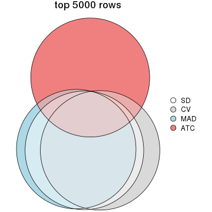
Also visualize the correspondance of rankings between different top-row methods:
top_rows_overlap(res_list, top_n = 1000, method = "correspondance")
top_rows_overlap(res_list, top_n = 2000, method = "correspondance")
top_rows_overlap(res_list, top_n = 3000, method = "correspondance")

top_rows_overlap(res_list, top_n = 4000, method = "correspondance")
top_rows_overlap(res_list, top_n = 5000, method = "correspondance")
Heatmaps of the top rows:
top_rows_heatmap(res_list, top_n = 1000)
top_rows_heatmap(res_list, top_n = 2000)
top_rows_heatmap(res_list, top_n = 3000)

top_rows_heatmap(res_list, top_n = 4000)
top_rows_heatmap(res_list, top_n = 5000)
Test correlation between subgroups and known annotations. If the known annotation is numeric, one-way ANOVA test is applied, and if the known annotation is discrete, chi-squared contingency table test is applied.
test_to_known_factors(res_list, k = 2)
#> n disease.state(p) k
#> SD:NMF 86 0.01956 2
#> CV:NMF 85 0.01567 2
#> MAD:NMF 87 0.01581 2
#> ATC:NMF 84 0.02238 2
#> SD:skmeans 83 0.01840 2
#> CV:skmeans 88 0.01438 2
#> MAD:skmeans 87 0.01266 2
#> ATC:skmeans 88 0.00467 2
#> SD:mclust 82 0.01220 2
#> CV:mclust 82 0.04980 2
#> MAD:mclust 84 0.01290 2
#> ATC:mclust 81 0.08501 2
#> SD:kmeans 82 0.01694 2
#> CV:kmeans 86 0.01088 2
#> MAD:kmeans 87 0.01266 2
#> ATC:kmeans 80 0.02272 2
#> SD:pam 80 0.05475 2
#> CV:pam 80 0.33009 2
#> MAD:pam 87 0.03694 2
#> ATC:pam 88 0.00758 2
#> SD:hclust 80 0.00258 2
#> CV:hclust 87 0.00837 2
#> MAD:hclust 77 0.00416 2
#> ATC:hclust 74 0.24512 2
test_to_known_factors(res_list, k = 3)
#> n disease.state(p) k
#> SD:NMF 78 1.21e-03 3
#> CV:NMF 81 1.15e-04 3
#> MAD:NMF 75 2.61e-04 3
#> ATC:NMF 86 1.00e-02 3
#> SD:skmeans 84 1.08e-02 3
#> CV:skmeans 53 8.43e-02 3
#> MAD:skmeans 79 5.60e-03 3
#> ATC:skmeans 88 1.49e-02 3
#> SD:mclust 75 5.62e-03 3
#> CV:mclust 66 1.11e-06 3
#> MAD:mclust 47 4.16e-03 3
#> ATC:mclust 85 8.76e-03 3
#> SD:kmeans 48 2.52e-01 3
#> CV:kmeans 36 4.69e-04 3
#> MAD:kmeans 53 2.33e-02 3
#> ATC:kmeans 87 6.56e-02 3
#> SD:pam 78 6.12e-02 3
#> CV:pam 71 2.63e-01 3
#> MAD:pam 82 5.38e-05 3
#> ATC:pam 85 6.11e-04 3
#> SD:hclust 79 4.56e-06 3
#> CV:hclust 61 3.24e-02 3
#> MAD:hclust 64 3.19e-04 3
#> ATC:hclust 51 5.58e-03 3
test_to_known_factors(res_list, k = 4)
#> n disease.state(p) k
#> SD:NMF 68 6.77e-03 4
#> CV:NMF 69 6.34e-04 4
#> MAD:NMF 71 3.91e-04 4
#> ATC:NMF 80 3.17e-02 4
#> SD:skmeans 63 3.86e-05 4
#> CV:skmeans 53 3.95e-03 4
#> MAD:skmeans 71 6.71e-06 4
#> ATC:skmeans 73 2.63e-02 4
#> SD:mclust 56 1.18e-01 4
#> CV:mclust 57 6.56e-04 4
#> MAD:mclust 72 2.26e-04 4
#> ATC:mclust 87 1.93e-02 4
#> SD:kmeans 41 1.06e-03 4
#> CV:kmeans 30 1.62e-03 4
#> MAD:kmeans 39 4.29e-05 4
#> ATC:kmeans 64 1.64e-01 4
#> SD:pam 82 2.02e-01 4
#> CV:pam 83 2.60e-01 4
#> MAD:pam 85 1.60e-01 4
#> ATC:pam 74 3.07e-04 4
#> SD:hclust 77 2.29e-06 4
#> CV:hclust 45 2.11e-02 4
#> MAD:hclust 75 4.22e-05 4
#> ATC:hclust 51 7.93e-03 4
test_to_known_factors(res_list, k = 5)
#> n disease.state(p) k
#> SD:NMF 58 3.23e-06 5
#> CV:NMF 68 3.61e-04 5
#> MAD:NMF 61 1.52e-07 5
#> ATC:NMF 68 3.53e-02 5
#> SD:skmeans 54 2.34e-04 5
#> CV:skmeans 42 1.01e-02 5
#> MAD:skmeans 59 5.80e-06 5
#> ATC:skmeans 85 3.13e-05 5
#> SD:mclust 55 4.02e-05 5
#> CV:mclust 60 5.39e-05 5
#> MAD:mclust 57 2.10e-01 5
#> ATC:mclust 37 5.53e-02 5
#> SD:kmeans 23 9.45e-05 5
#> CV:kmeans 41 4.90e-03 5
#> MAD:kmeans 32 2.60e-04 5
#> ATC:kmeans 37 1.40e-02 5
#> SD:pam 82 3.08e-04 5
#> CV:pam 65 1.09e-02 5
#> MAD:pam 77 9.39e-03 5
#> ATC:pam 82 8.06e-06 5
#> SD:hclust 79 1.30e-06 5
#> CV:hclust 79 6.92e-05 5
#> MAD:hclust 77 1.01e-05 5
#> ATC:hclust 40 3.90e-02 5
test_to_known_factors(res_list, k = 6)
#> n disease.state(p) k
#> SD:NMF 41 5.35e-05 6
#> CV:NMF 66 7.25e-04 6
#> MAD:NMF 57 6.98e-06 6
#> ATC:NMF 48 6.88e-01 6
#> SD:skmeans 60 4.21e-06 6
#> CV:skmeans 65 7.76e-06 6
#> MAD:skmeans 63 4.48e-07 6
#> ATC:skmeans 88 3.52e-06 6
#> SD:mclust 36 1.46e-05 6
#> CV:mclust 80 2.85e-05 6
#> MAD:mclust 69 1.43e-09 6
#> ATC:mclust 87 1.79e-03 6
#> SD:kmeans 40 5.92e-04 6
#> CV:kmeans 59 1.69e-04 6
#> MAD:kmeans 37 4.75e-04 6
#> ATC:kmeans 67 7.25e-04 6
#> SD:pam 75 5.36e-03 6
#> CV:pam 72 7.65e-03 6
#> MAD:pam 83 3.22e-03 6
#> ATC:pam 85 5.45e-04 6
#> SD:hclust 72 4.70e-07 6
#> CV:hclust 77 1.01e-04 6
#> MAD:hclust 70 3.77e-06 6
#> ATC:hclust 57 3.49e-03 6
The object with results only for a single top-value method and a single partition method can be extracted as:
res = res_list["SD", "hclust"]
# you can also extract it by
# res = res_list["SD:hclust"]
A summary of res and all the functions that can be applied to it:
res
#> A 'ConsensusPartition' object with k = 2, 3, 4, 5, 6.
#> On a matrix with 51941 rows and 88 columns.
#> Top rows (1000, 2000, 3000, 4000, 5000) are extracted by 'SD' method.
#> Subgroups are detected by 'hclust' method.
#> Performed in total 1250 partitions by row resampling.
#> Best k for subgroups seems to be 5.
#>
#> Following methods can be applied to this 'ConsensusPartition' object:
#> [1] "cola_report" "collect_classes" "collect_plots"
#> [4] "collect_stats" "colnames" "compare_signatures"
#> [7] "consensus_heatmap" "dimension_reduction" "functional_enrichment"
#> [10] "get_anno_col" "get_anno" "get_classes"
#> [13] "get_consensus" "get_matrix" "get_membership"
#> [16] "get_param" "get_signatures" "get_stats"
#> [19] "is_best_k" "is_stable_k" "membership_heatmap"
#> [22] "ncol" "nrow" "plot_ecdf"
#> [25] "rownames" "select_partition_number" "show"
#> [28] "suggest_best_k" "test_to_known_factors"
collect_plots() function collects all the plots made from res for all k (number of partitions)
into one single page to provide an easy and fast comparison between different k.
collect_plots(res)
The plots are:
k and the heatmap of
predicted classes for each k.k.k.k.All the plots in panels can be made by individual functions and they are plotted later in this section.
select_partition_number() produces several plots showing different
statistics for choosing “optimized” k. There are following statistics:
k;k, the area increased is defined as \(A_k - A_{k-1}\).The detailed explanations of these statistics can be found in the cola vignette.
Generally speaking, lower PAC score, higher mean silhouette score or higher
concordance corresponds to better partition. Rand index and Jaccard index
measure how similar the current partition is compared to partition with k-1.
If they are too similar, we won't accept k is better than k-1.
select_partition_number(res)
The numeric values for all these statistics can be obtained by get_stats().
get_stats(res)
#> k 1-PAC mean_silhouette concordance area_increased Rand Jaccard
#> 2 2 0.225 0.622 0.799 0.4360 0.495 0.495
#> 3 3 0.346 0.681 0.767 0.4220 0.772 0.582
#> 4 4 0.517 0.675 0.717 0.1394 0.879 0.670
#> 5 5 0.640 0.701 0.819 0.0901 0.956 0.821
#> 6 6 0.655 0.653 0.773 0.0469 1.000 1.000
suggest_best_k() suggests the best \(k\) based on these statistics. The rules are as follows:
NA.suggest_best_k(res)
#> [1] 5
Following shows the table of the partitions (You need to click the show/hide
code output link to see it). The membership matrix (columns with name p*)
is inferred by
clue::cl_consensus()
function with the SE method. Basically the value in the membership matrix
represents the probability to belong to a certain group. The finall class
label for an item is determined with the group with highest probability it
belongs to.
In get_classes() function, the entropy is calculated from the membership
matrix and the silhouette score is calculated from the consensus matrix.
cbind(get_classes(res, k = 2), get_membership(res, k = 2))
#> class entropy silhouette p1 p2
#> GSM1130404 1 0.8555 0.7192 0.720 0.280
#> GSM1130405 1 0.8555 0.7192 0.720 0.280
#> GSM1130408 2 0.0000 0.7371 0.000 1.000
#> GSM1130409 1 0.8555 0.7192 0.720 0.280
#> GSM1130410 1 0.8555 0.7192 0.720 0.280
#> GSM1130415 2 0.0000 0.7371 0.000 1.000
#> GSM1130416 2 0.0000 0.7371 0.000 1.000
#> GSM1130417 2 0.0000 0.7371 0.000 1.000
#> GSM1130418 2 0.0000 0.7371 0.000 1.000
#> GSM1130421 2 0.3431 0.7231 0.064 0.936
#> GSM1130422 2 0.3431 0.7231 0.064 0.936
#> GSM1130423 1 0.0672 0.7117 0.992 0.008
#> GSM1130424 2 0.9460 0.5063 0.364 0.636
#> GSM1130425 1 0.0672 0.7117 0.992 0.008
#> GSM1130426 2 0.8608 0.5830 0.284 0.716
#> GSM1130427 2 0.8608 0.5830 0.284 0.716
#> GSM1130428 2 0.9460 0.5063 0.364 0.636
#> GSM1130429 2 0.9460 0.5063 0.364 0.636
#> GSM1130430 1 0.8955 0.6510 0.688 0.312
#> GSM1130431 1 0.8955 0.6510 0.688 0.312
#> GSM1130432 1 0.8763 0.7141 0.704 0.296
#> GSM1130433 1 0.8763 0.7141 0.704 0.296
#> GSM1130434 1 0.8661 0.7216 0.712 0.288
#> GSM1130435 1 0.8661 0.7216 0.712 0.288
#> GSM1130436 1 0.8661 0.7216 0.712 0.288
#> GSM1130437 1 0.8661 0.7216 0.712 0.288
#> GSM1130438 2 0.9963 -0.1168 0.464 0.536
#> GSM1130439 2 0.9970 -0.1295 0.468 0.532
#> GSM1130440 2 0.9970 -0.1295 0.468 0.532
#> GSM1130441 2 0.1184 0.7378 0.016 0.984
#> GSM1130442 2 0.1184 0.7378 0.016 0.984
#> GSM1130443 1 0.0000 0.7101 1.000 0.000
#> GSM1130444 1 0.4022 0.7349 0.920 0.080
#> GSM1130445 1 0.9881 0.4300 0.564 0.436
#> GSM1130476 2 0.9896 0.0600 0.440 0.560
#> GSM1130483 1 0.8763 0.7141 0.704 0.296
#> GSM1130484 1 0.8763 0.7141 0.704 0.296
#> GSM1130487 1 0.6623 0.7414 0.828 0.172
#> GSM1130488 1 0.6623 0.7414 0.828 0.172
#> GSM1130419 1 0.0000 0.7101 1.000 0.000
#> GSM1130420 1 0.0000 0.7101 1.000 0.000
#> GSM1130464 1 0.0000 0.7101 1.000 0.000
#> GSM1130465 1 0.0000 0.7101 1.000 0.000
#> GSM1130468 1 0.0000 0.7101 1.000 0.000
#> GSM1130469 1 0.0000 0.7101 1.000 0.000
#> GSM1130402 1 0.8763 0.6676 0.704 0.296
#> GSM1130403 1 0.8763 0.6676 0.704 0.296
#> GSM1130406 1 0.9000 0.6663 0.684 0.316
#> GSM1130407 1 0.9000 0.6663 0.684 0.316
#> GSM1130411 2 0.0000 0.7371 0.000 1.000
#> GSM1130412 2 0.0000 0.7371 0.000 1.000
#> GSM1130413 2 0.0672 0.7387 0.008 0.992
#> GSM1130414 2 0.0672 0.7387 0.008 0.992
#> GSM1130446 2 0.9286 0.5331 0.344 0.656
#> GSM1130447 2 0.9286 0.5331 0.344 0.656
#> GSM1130448 2 0.9896 0.0600 0.440 0.560
#> GSM1130449 2 0.8499 0.6261 0.276 0.724
#> GSM1130450 2 0.7815 0.6671 0.232 0.768
#> GSM1130451 2 0.7815 0.6671 0.232 0.768
#> GSM1130452 2 0.0000 0.7371 0.000 1.000
#> GSM1130453 2 0.8861 0.5046 0.304 0.696
#> GSM1130454 2 0.8861 0.5046 0.304 0.696
#> GSM1130455 2 0.1184 0.7378 0.016 0.984
#> GSM1130456 1 0.3733 0.7350 0.928 0.072
#> GSM1130457 2 0.5519 0.7156 0.128 0.872
#> GSM1130458 2 0.5519 0.7156 0.128 0.872
#> GSM1130459 2 0.0000 0.7371 0.000 1.000
#> GSM1130460 2 0.0000 0.7371 0.000 1.000
#> GSM1130461 2 0.0000 0.7371 0.000 1.000
#> GSM1130462 2 0.8016 0.6595 0.244 0.756
#> GSM1130463 2 0.8016 0.6595 0.244 0.756
#> GSM1130466 1 0.2603 0.7215 0.956 0.044
#> GSM1130467 2 0.0000 0.7371 0.000 1.000
#> GSM1130470 1 0.0672 0.7117 0.992 0.008
#> GSM1130471 1 0.0672 0.7117 0.992 0.008
#> GSM1130472 1 0.0672 0.7117 0.992 0.008
#> GSM1130473 1 1.0000 -0.1010 0.504 0.496
#> GSM1130474 2 0.9087 0.5716 0.324 0.676
#> GSM1130475 2 0.3733 0.7338 0.072 0.928
#> GSM1130477 1 0.8661 0.7193 0.712 0.288
#> GSM1130478 1 0.8661 0.7193 0.712 0.288
#> GSM1130479 1 0.9998 -0.0524 0.508 0.492
#> GSM1130480 2 0.9248 0.5308 0.340 0.660
#> GSM1130481 2 0.8909 0.5874 0.308 0.692
#> GSM1130482 2 0.8909 0.5874 0.308 0.692
#> GSM1130485 1 0.7299 0.7017 0.796 0.204
#> GSM1130486 1 0.7299 0.7017 0.796 0.204
#> GSM1130489 2 0.8909 0.5874 0.308 0.692
cbind(get_classes(res, k = 3), get_membership(res, k = 3))
#> class entropy silhouette p1 p2 p3
#> GSM1130404 1 0.8257 0.644 0.544 0.084 0.372
#> GSM1130405 1 0.8257 0.644 0.544 0.084 0.372
#> GSM1130408 2 0.6008 0.563 0.372 0.628 0.000
#> GSM1130409 1 0.8188 0.647 0.548 0.080 0.372
#> GSM1130410 1 0.8188 0.647 0.548 0.080 0.372
#> GSM1130415 2 0.3267 0.770 0.116 0.884 0.000
#> GSM1130416 2 0.3267 0.770 0.116 0.884 0.000
#> GSM1130417 2 0.3267 0.770 0.116 0.884 0.000
#> GSM1130418 2 0.3267 0.770 0.116 0.884 0.000
#> GSM1130421 2 0.5754 0.649 0.296 0.700 0.004
#> GSM1130422 2 0.5754 0.649 0.296 0.700 0.004
#> GSM1130423 3 0.0237 0.880 0.000 0.004 0.996
#> GSM1130424 2 0.6096 0.629 0.016 0.704 0.280
#> GSM1130425 3 0.0475 0.880 0.004 0.004 0.992
#> GSM1130426 2 0.8568 0.540 0.228 0.604 0.168
#> GSM1130427 2 0.8568 0.540 0.228 0.604 0.168
#> GSM1130428 2 0.6096 0.629 0.016 0.704 0.280
#> GSM1130429 2 0.6096 0.629 0.016 0.704 0.280
#> GSM1130430 1 0.9713 0.402 0.404 0.220 0.376
#> GSM1130431 1 0.9713 0.402 0.404 0.220 0.376
#> GSM1130432 1 0.6566 0.703 0.636 0.016 0.348
#> GSM1130433 1 0.6566 0.703 0.636 0.016 0.348
#> GSM1130434 1 0.6148 0.697 0.640 0.004 0.356
#> GSM1130435 1 0.6148 0.697 0.640 0.004 0.356
#> GSM1130436 1 0.6148 0.697 0.640 0.004 0.356
#> GSM1130437 1 0.6148 0.697 0.640 0.004 0.356
#> GSM1130438 1 0.1289 0.567 0.968 0.032 0.000
#> GSM1130439 1 0.1525 0.570 0.964 0.032 0.004
#> GSM1130440 1 0.1525 0.570 0.964 0.032 0.004
#> GSM1130441 2 0.3965 0.765 0.132 0.860 0.008
#> GSM1130442 2 0.4099 0.762 0.140 0.852 0.008
#> GSM1130443 3 0.1031 0.881 0.024 0.000 0.976
#> GSM1130444 3 0.4136 0.762 0.116 0.020 0.864
#> GSM1130445 1 0.6062 0.416 0.708 0.016 0.276
#> GSM1130476 1 0.2955 0.538 0.912 0.080 0.008
#> GSM1130483 1 0.6427 0.703 0.640 0.012 0.348
#> GSM1130484 1 0.6427 0.703 0.640 0.012 0.348
#> GSM1130487 3 0.4974 0.553 0.236 0.000 0.764
#> GSM1130488 3 0.4974 0.553 0.236 0.000 0.764
#> GSM1130419 3 0.0592 0.879 0.012 0.000 0.988
#> GSM1130420 3 0.0592 0.879 0.012 0.000 0.988
#> GSM1130464 3 0.1031 0.881 0.024 0.000 0.976
#> GSM1130465 3 0.1031 0.881 0.024 0.000 0.976
#> GSM1130468 3 0.1031 0.881 0.024 0.000 0.976
#> GSM1130469 3 0.1031 0.881 0.024 0.000 0.976
#> GSM1130402 1 0.9651 0.389 0.400 0.208 0.392
#> GSM1130403 1 0.9651 0.389 0.400 0.208 0.392
#> GSM1130406 1 0.5356 0.645 0.784 0.020 0.196
#> GSM1130407 1 0.5356 0.645 0.784 0.020 0.196
#> GSM1130411 2 0.3267 0.770 0.116 0.884 0.000
#> GSM1130412 2 0.3267 0.770 0.116 0.884 0.000
#> GSM1130413 2 0.3682 0.772 0.116 0.876 0.008
#> GSM1130414 2 0.3682 0.772 0.116 0.876 0.008
#> GSM1130446 2 0.5919 0.651 0.016 0.724 0.260
#> GSM1130447 2 0.5919 0.651 0.016 0.724 0.260
#> GSM1130448 1 0.2955 0.538 0.912 0.080 0.008
#> GSM1130449 2 0.6083 0.724 0.060 0.772 0.168
#> GSM1130450 2 0.4748 0.749 0.024 0.832 0.144
#> GSM1130451 2 0.4748 0.749 0.024 0.832 0.144
#> GSM1130452 2 0.3267 0.770 0.116 0.884 0.000
#> GSM1130453 2 0.7372 0.372 0.448 0.520 0.032
#> GSM1130454 2 0.7372 0.372 0.448 0.520 0.032
#> GSM1130455 2 0.3965 0.765 0.132 0.860 0.008
#> GSM1130456 3 0.3472 0.822 0.040 0.056 0.904
#> GSM1130457 2 0.2383 0.763 0.016 0.940 0.044
#> GSM1130458 2 0.2383 0.763 0.016 0.940 0.044
#> GSM1130459 2 0.3267 0.767 0.116 0.884 0.000
#> GSM1130460 2 0.3267 0.767 0.116 0.884 0.000
#> GSM1130461 2 0.6045 0.551 0.380 0.620 0.000
#> GSM1130462 2 0.4802 0.744 0.020 0.824 0.156
#> GSM1130463 2 0.4802 0.744 0.020 0.824 0.156
#> GSM1130466 3 0.1529 0.853 0.000 0.040 0.960
#> GSM1130467 2 0.3267 0.767 0.116 0.884 0.000
#> GSM1130470 3 0.0237 0.880 0.000 0.004 0.996
#> GSM1130471 3 0.0237 0.880 0.000 0.004 0.996
#> GSM1130472 3 0.0237 0.880 0.000 0.004 0.996
#> GSM1130473 2 0.7980 0.359 0.064 0.536 0.400
#> GSM1130474 2 0.6380 0.685 0.044 0.732 0.224
#> GSM1130475 2 0.4446 0.769 0.112 0.856 0.032
#> GSM1130477 1 0.6148 0.698 0.640 0.004 0.356
#> GSM1130478 1 0.6148 0.698 0.640 0.004 0.356
#> GSM1130479 2 0.8338 0.321 0.084 0.516 0.400
#> GSM1130480 2 0.8113 0.638 0.144 0.644 0.212
#> GSM1130481 2 0.6201 0.697 0.044 0.748 0.208
#> GSM1130482 2 0.6201 0.697 0.044 0.748 0.208
#> GSM1130485 3 0.6232 0.560 0.040 0.220 0.740
#> GSM1130486 3 0.6232 0.560 0.040 0.220 0.740
#> GSM1130489 2 0.6201 0.697 0.044 0.748 0.208
cbind(get_classes(res, k = 4), get_membership(res, k = 4))
#> class entropy silhouette p1 p2 p3 p4
#> GSM1130404 1 0.6488 0.6487 0.604 0.000 0.104 0.292
#> GSM1130405 1 0.6488 0.6487 0.604 0.000 0.104 0.292
#> GSM1130408 2 0.3732 0.6081 0.092 0.852 0.056 0.000
#> GSM1130409 1 0.6436 0.6512 0.608 0.000 0.100 0.292
#> GSM1130410 1 0.6436 0.6512 0.608 0.000 0.100 0.292
#> GSM1130415 2 0.4722 0.8350 0.008 0.692 0.300 0.000
#> GSM1130416 2 0.4722 0.8350 0.008 0.692 0.300 0.000
#> GSM1130417 2 0.4722 0.8350 0.008 0.692 0.300 0.000
#> GSM1130418 2 0.4722 0.8350 0.008 0.692 0.300 0.000
#> GSM1130421 2 0.6344 0.6801 0.128 0.648 0.224 0.000
#> GSM1130422 2 0.6344 0.6801 0.128 0.648 0.224 0.000
#> GSM1130423 4 0.0895 0.8734 0.004 0.000 0.020 0.976
#> GSM1130424 3 0.2589 0.7250 0.000 0.000 0.884 0.116
#> GSM1130425 4 0.1042 0.8730 0.008 0.000 0.020 0.972
#> GSM1130426 2 0.9395 0.2716 0.172 0.376 0.320 0.132
#> GSM1130427 2 0.9395 0.2716 0.172 0.376 0.320 0.132
#> GSM1130428 3 0.2589 0.7250 0.000 0.000 0.884 0.116
#> GSM1130429 3 0.2589 0.7250 0.000 0.000 0.884 0.116
#> GSM1130430 1 0.7677 0.4479 0.456 0.000 0.296 0.248
#> GSM1130431 1 0.7677 0.4479 0.456 0.000 0.296 0.248
#> GSM1130432 1 0.5348 0.6888 0.692 0.012 0.020 0.276
#> GSM1130433 1 0.5348 0.6888 0.692 0.012 0.020 0.276
#> GSM1130434 1 0.4770 0.6819 0.700 0.000 0.012 0.288
#> GSM1130435 1 0.4770 0.6819 0.700 0.000 0.012 0.288
#> GSM1130436 1 0.4770 0.6819 0.700 0.000 0.012 0.288
#> GSM1130437 1 0.4770 0.6819 0.700 0.000 0.012 0.288
#> GSM1130438 1 0.3913 0.5271 0.824 0.148 0.028 0.000
#> GSM1130439 1 0.4095 0.5297 0.820 0.148 0.028 0.004
#> GSM1130440 1 0.4095 0.5297 0.820 0.148 0.028 0.004
#> GSM1130441 2 0.5343 0.8089 0.028 0.656 0.316 0.000
#> GSM1130442 2 0.5300 0.8072 0.028 0.664 0.308 0.000
#> GSM1130443 4 0.0817 0.8716 0.024 0.000 0.000 0.976
#> GSM1130444 4 0.3488 0.7728 0.108 0.008 0.020 0.864
#> GSM1130445 1 0.5811 0.3107 0.672 0.048 0.008 0.272
#> GSM1130476 1 0.5599 0.3783 0.616 0.352 0.032 0.000
#> GSM1130483 1 0.4831 0.6882 0.704 0.000 0.016 0.280
#> GSM1130484 1 0.4831 0.6882 0.704 0.000 0.016 0.280
#> GSM1130487 4 0.4188 0.5873 0.244 0.000 0.004 0.752
#> GSM1130488 4 0.4188 0.5873 0.244 0.000 0.004 0.752
#> GSM1130419 4 0.0188 0.8692 0.004 0.000 0.000 0.996
#> GSM1130420 4 0.0188 0.8692 0.004 0.000 0.000 0.996
#> GSM1130464 4 0.0817 0.8716 0.024 0.000 0.000 0.976
#> GSM1130465 4 0.0817 0.8716 0.024 0.000 0.000 0.976
#> GSM1130468 4 0.1004 0.8720 0.024 0.000 0.004 0.972
#> GSM1130469 4 0.1004 0.8720 0.024 0.000 0.004 0.972
#> GSM1130402 1 0.7704 0.4389 0.452 0.000 0.284 0.264
#> GSM1130403 1 0.7704 0.4389 0.452 0.000 0.284 0.264
#> GSM1130406 1 0.5112 0.6119 0.772 0.092 0.004 0.132
#> GSM1130407 1 0.5112 0.6119 0.772 0.092 0.004 0.132
#> GSM1130411 2 0.4722 0.8350 0.008 0.692 0.300 0.000
#> GSM1130412 2 0.4722 0.8350 0.008 0.692 0.300 0.000
#> GSM1130413 2 0.4792 0.8275 0.008 0.680 0.312 0.000
#> GSM1130414 2 0.4792 0.8275 0.008 0.680 0.312 0.000
#> GSM1130446 3 0.2281 0.7320 0.000 0.000 0.904 0.096
#> GSM1130447 3 0.2281 0.7320 0.000 0.000 0.904 0.096
#> GSM1130448 1 0.5599 0.3783 0.616 0.352 0.032 0.000
#> GSM1130449 3 0.4931 0.7296 0.056 0.100 0.808 0.036
#> GSM1130450 3 0.3879 0.6905 0.008 0.128 0.840 0.024
#> GSM1130451 3 0.3879 0.6905 0.008 0.128 0.840 0.024
#> GSM1130452 2 0.4820 0.8342 0.012 0.692 0.296 0.000
#> GSM1130453 3 0.7914 -0.0148 0.312 0.332 0.356 0.000
#> GSM1130454 3 0.7914 -0.0148 0.312 0.332 0.356 0.000
#> GSM1130455 2 0.5343 0.8089 0.028 0.656 0.316 0.000
#> GSM1130456 4 0.2983 0.8162 0.040 0.000 0.068 0.892
#> GSM1130457 3 0.3494 0.5580 0.000 0.172 0.824 0.004
#> GSM1130458 3 0.3494 0.5580 0.000 0.172 0.824 0.004
#> GSM1130459 2 0.4877 0.8201 0.008 0.664 0.328 0.000
#> GSM1130460 2 0.4877 0.8201 0.008 0.664 0.328 0.000
#> GSM1130461 2 0.4094 0.5895 0.116 0.828 0.056 0.000
#> GSM1130462 3 0.3668 0.7034 0.004 0.116 0.852 0.028
#> GSM1130463 3 0.3668 0.7034 0.004 0.116 0.852 0.028
#> GSM1130466 4 0.1824 0.8504 0.004 0.000 0.060 0.936
#> GSM1130467 2 0.4877 0.8201 0.008 0.664 0.328 0.000
#> GSM1130470 4 0.0895 0.8734 0.004 0.000 0.020 0.976
#> GSM1130471 4 0.0895 0.8734 0.004 0.000 0.020 0.976
#> GSM1130472 4 0.0895 0.8734 0.004 0.000 0.020 0.976
#> GSM1130473 3 0.5664 0.5987 0.076 0.000 0.696 0.228
#> GSM1130474 3 0.4510 0.7461 0.048 0.064 0.836 0.052
#> GSM1130475 2 0.5724 0.6149 0.028 0.548 0.424 0.000
#> GSM1130477 1 0.4770 0.6833 0.700 0.000 0.012 0.288
#> GSM1130478 1 0.4770 0.6833 0.700 0.000 0.012 0.288
#> GSM1130479 3 0.5932 0.5763 0.096 0.000 0.680 0.224
#> GSM1130480 3 0.5603 0.6931 0.124 0.056 0.768 0.052
#> GSM1130481 3 0.4075 0.7475 0.048 0.064 0.856 0.032
#> GSM1130482 3 0.4075 0.7475 0.048 0.064 0.856 0.032
#> GSM1130485 4 0.5668 0.5046 0.048 0.000 0.300 0.652
#> GSM1130486 4 0.5668 0.5046 0.048 0.000 0.300 0.652
#> GSM1130489 3 0.4075 0.7475 0.048 0.064 0.856 0.032
cbind(get_classes(res, k = 5), get_membership(res, k = 5))
#> class entropy silhouette p1 p2 p3 p4 p5
#> GSM1130404 1 0.2914 0.762 0.872 0.012 0.000 0.016 0.100
#> GSM1130405 1 0.2914 0.762 0.872 0.012 0.000 0.016 0.100
#> GSM1130408 2 0.4771 0.634 0.064 0.744 0.176 0.000 0.016
#> GSM1130409 1 0.2859 0.764 0.876 0.012 0.000 0.016 0.096
#> GSM1130410 1 0.2859 0.764 0.876 0.012 0.000 0.016 0.096
#> GSM1130415 2 0.0162 0.857 0.004 0.996 0.000 0.000 0.000
#> GSM1130416 2 0.0162 0.857 0.004 0.996 0.000 0.000 0.000
#> GSM1130417 2 0.0162 0.857 0.004 0.996 0.000 0.000 0.000
#> GSM1130418 2 0.0162 0.857 0.004 0.996 0.000 0.000 0.000
#> GSM1130421 2 0.3797 0.710 0.004 0.756 0.232 0.000 0.008
#> GSM1130422 2 0.3797 0.710 0.004 0.756 0.232 0.000 0.008
#> GSM1130423 4 0.2036 0.857 0.056 0.000 0.000 0.920 0.024
#> GSM1130424 5 0.1653 0.717 0.000 0.028 0.004 0.024 0.944
#> GSM1130425 4 0.2171 0.855 0.064 0.000 0.000 0.912 0.024
#> GSM1130426 2 0.6439 0.343 0.280 0.564 0.000 0.024 0.132
#> GSM1130427 2 0.6439 0.343 0.280 0.564 0.000 0.024 0.132
#> GSM1130428 5 0.1653 0.717 0.000 0.028 0.004 0.024 0.944
#> GSM1130429 5 0.1653 0.717 0.000 0.028 0.004 0.024 0.944
#> GSM1130430 1 0.6377 0.502 0.556 0.016 0.000 0.140 0.288
#> GSM1130431 1 0.6377 0.502 0.556 0.016 0.000 0.140 0.288
#> GSM1130432 1 0.1790 0.774 0.944 0.008 0.020 0.008 0.020
#> GSM1130433 1 0.1790 0.774 0.944 0.008 0.020 0.008 0.020
#> GSM1130434 1 0.1116 0.769 0.964 0.004 0.000 0.028 0.004
#> GSM1130435 1 0.1116 0.769 0.964 0.004 0.000 0.028 0.004
#> GSM1130436 1 0.1116 0.769 0.964 0.004 0.000 0.028 0.004
#> GSM1130437 1 0.1116 0.769 0.964 0.004 0.000 0.028 0.004
#> GSM1130438 3 0.4906 0.550 0.316 0.020 0.648 0.000 0.016
#> GSM1130439 3 0.4924 0.547 0.320 0.020 0.644 0.000 0.016
#> GSM1130440 3 0.4924 0.547 0.320 0.020 0.644 0.000 0.016
#> GSM1130441 2 0.2153 0.829 0.000 0.916 0.044 0.000 0.040
#> GSM1130442 2 0.2300 0.826 0.000 0.908 0.052 0.000 0.040
#> GSM1130443 4 0.0794 0.851 0.028 0.000 0.000 0.972 0.000
#> GSM1130444 4 0.3423 0.791 0.080 0.000 0.044 0.856 0.020
#> GSM1130445 3 0.7656 0.290 0.320 0.020 0.368 0.276 0.016
#> GSM1130476 3 0.0162 0.599 0.000 0.004 0.996 0.000 0.000
#> GSM1130483 1 0.1777 0.774 0.944 0.004 0.020 0.012 0.020
#> GSM1130484 1 0.1777 0.774 0.944 0.004 0.020 0.012 0.020
#> GSM1130487 4 0.4135 0.553 0.340 0.000 0.004 0.656 0.000
#> GSM1130488 4 0.4135 0.553 0.340 0.000 0.004 0.656 0.000
#> GSM1130419 4 0.1597 0.855 0.048 0.000 0.000 0.940 0.012
#> GSM1130420 4 0.1597 0.855 0.048 0.000 0.000 0.940 0.012
#> GSM1130464 4 0.0794 0.851 0.028 0.000 0.000 0.972 0.000
#> GSM1130465 4 0.0794 0.851 0.028 0.000 0.000 0.972 0.000
#> GSM1130468 4 0.0955 0.851 0.028 0.000 0.000 0.968 0.004
#> GSM1130469 4 0.0955 0.851 0.028 0.000 0.000 0.968 0.004
#> GSM1130402 1 0.6383 0.497 0.552 0.012 0.000 0.156 0.280
#> GSM1130403 1 0.6383 0.497 0.552 0.012 0.000 0.156 0.280
#> GSM1130406 1 0.5657 0.313 0.560 0.000 0.360 0.076 0.004
#> GSM1130407 1 0.5657 0.313 0.560 0.000 0.360 0.076 0.004
#> GSM1130411 2 0.0162 0.857 0.004 0.996 0.000 0.000 0.000
#> GSM1130412 2 0.0162 0.857 0.004 0.996 0.000 0.000 0.000
#> GSM1130413 2 0.0671 0.854 0.004 0.980 0.000 0.000 0.016
#> GSM1130414 2 0.0671 0.854 0.004 0.980 0.000 0.000 0.016
#> GSM1130446 5 0.1365 0.726 0.000 0.040 0.004 0.004 0.952
#> GSM1130447 5 0.1365 0.726 0.000 0.040 0.004 0.004 0.952
#> GSM1130448 3 0.0162 0.599 0.000 0.004 0.996 0.000 0.000
#> GSM1130449 5 0.5544 0.750 0.052 0.240 0.020 0.012 0.676
#> GSM1130450 5 0.4886 0.711 0.008 0.304 0.024 0.004 0.660
#> GSM1130451 5 0.4886 0.711 0.008 0.304 0.024 0.004 0.660
#> GSM1130452 2 0.0162 0.856 0.000 0.996 0.004 0.000 0.000
#> GSM1130453 3 0.6595 0.151 0.012 0.348 0.484 0.000 0.156
#> GSM1130454 3 0.6595 0.151 0.012 0.348 0.484 0.000 0.156
#> GSM1130455 2 0.2153 0.829 0.000 0.916 0.044 0.000 0.040
#> GSM1130456 4 0.2954 0.812 0.056 0.004 0.000 0.876 0.064
#> GSM1130457 5 0.4211 0.548 0.000 0.360 0.004 0.000 0.636
#> GSM1130458 5 0.4211 0.548 0.000 0.360 0.004 0.000 0.636
#> GSM1130459 2 0.0880 0.844 0.000 0.968 0.000 0.000 0.032
#> GSM1130460 2 0.0880 0.844 0.000 0.968 0.000 0.000 0.032
#> GSM1130461 2 0.5287 0.540 0.064 0.676 0.244 0.000 0.016
#> GSM1130462 5 0.4741 0.724 0.008 0.292 0.020 0.004 0.676
#> GSM1130463 5 0.4741 0.724 0.008 0.292 0.020 0.004 0.676
#> GSM1130466 4 0.2790 0.838 0.052 0.000 0.000 0.880 0.068
#> GSM1130467 2 0.0880 0.844 0.000 0.968 0.000 0.000 0.032
#> GSM1130470 4 0.2036 0.857 0.056 0.000 0.000 0.920 0.024
#> GSM1130471 4 0.2036 0.857 0.056 0.000 0.000 0.920 0.024
#> GSM1130472 4 0.2036 0.857 0.056 0.000 0.000 0.920 0.024
#> GSM1130473 5 0.5244 0.601 0.088 0.016 0.000 0.192 0.704
#> GSM1130474 5 0.4729 0.772 0.048 0.180 0.000 0.024 0.748
#> GSM1130475 2 0.4126 0.672 0.004 0.784 0.056 0.000 0.156
#> GSM1130477 1 0.0693 0.776 0.980 0.000 0.000 0.008 0.012
#> GSM1130478 1 0.0693 0.776 0.980 0.000 0.000 0.008 0.012
#> GSM1130479 5 0.5590 0.585 0.124 0.020 0.000 0.172 0.684
#> GSM1130480 5 0.6083 0.711 0.100 0.160 0.060 0.004 0.676
#> GSM1130481 5 0.4256 0.776 0.048 0.184 0.000 0.004 0.764
#> GSM1130482 5 0.4256 0.776 0.048 0.184 0.000 0.004 0.764
#> GSM1130485 4 0.5219 0.532 0.064 0.004 0.000 0.644 0.288
#> GSM1130486 4 0.5219 0.532 0.064 0.004 0.000 0.644 0.288
#> GSM1130489 5 0.4256 0.776 0.048 0.184 0.000 0.004 0.764
cbind(get_classes(res, k = 6), get_membership(res, k = 6))
#> class entropy silhouette p1 p2 p3 p4 p5 p6
#> GSM1130404 1 0.2163 0.756 0.892 0.004 0.000 0.008 0.096 NA
#> GSM1130405 1 0.2163 0.756 0.892 0.004 0.000 0.008 0.096 NA
#> GSM1130408 2 0.5327 0.532 0.000 0.624 0.244 0.000 0.016 NA
#> GSM1130409 1 0.2113 0.758 0.896 0.004 0.000 0.008 0.092 NA
#> GSM1130410 1 0.2113 0.758 0.896 0.004 0.000 0.008 0.092 NA
#> GSM1130415 2 0.0508 0.811 0.004 0.984 0.000 0.000 0.012 NA
#> GSM1130416 2 0.0508 0.811 0.004 0.984 0.000 0.000 0.012 NA
#> GSM1130417 2 0.0508 0.811 0.004 0.984 0.000 0.000 0.012 NA
#> GSM1130418 2 0.0508 0.811 0.004 0.984 0.000 0.000 0.012 NA
#> GSM1130421 2 0.4585 0.678 0.000 0.728 0.144 0.000 0.016 NA
#> GSM1130422 2 0.4585 0.678 0.000 0.728 0.144 0.000 0.016 NA
#> GSM1130423 4 0.4313 0.695 0.004 0.000 0.000 0.604 0.020 NA
#> GSM1130424 5 0.3141 0.669 0.000 0.000 0.000 0.012 0.788 NA
#> GSM1130425 4 0.4507 0.691 0.012 0.000 0.000 0.596 0.020 NA
#> GSM1130426 2 0.5954 0.385 0.284 0.552 0.000 0.012 0.140 NA
#> GSM1130427 2 0.5954 0.385 0.284 0.552 0.000 0.012 0.140 NA
#> GSM1130428 5 0.3141 0.669 0.000 0.000 0.000 0.012 0.788 NA
#> GSM1130429 5 0.3141 0.669 0.000 0.000 0.000 0.012 0.788 NA
#> GSM1130430 1 0.5979 0.483 0.568 0.004 0.000 0.056 0.288 NA
#> GSM1130431 1 0.5979 0.483 0.568 0.004 0.000 0.056 0.288 NA
#> GSM1130432 1 0.1655 0.760 0.932 0.008 0.052 0.000 0.008 NA
#> GSM1130433 1 0.1655 0.760 0.932 0.008 0.052 0.000 0.008 NA
#> GSM1130434 1 0.1630 0.752 0.940 0.000 0.016 0.024 0.000 NA
#> GSM1130435 1 0.1630 0.752 0.940 0.000 0.016 0.024 0.000 NA
#> GSM1130436 1 0.1630 0.752 0.940 0.000 0.016 0.024 0.000 NA
#> GSM1130437 1 0.1630 0.752 0.940 0.000 0.016 0.024 0.000 NA
#> GSM1130438 3 0.2597 0.648 0.176 0.000 0.824 0.000 0.000 NA
#> GSM1130439 3 0.2631 0.645 0.180 0.000 0.820 0.000 0.000 NA
#> GSM1130440 3 0.2631 0.645 0.180 0.000 0.820 0.000 0.000 NA
#> GSM1130441 2 0.3613 0.765 0.000 0.808 0.016 0.000 0.048 NA
#> GSM1130442 2 0.3840 0.758 0.000 0.792 0.020 0.000 0.052 NA
#> GSM1130443 4 0.0000 0.715 0.000 0.000 0.000 1.000 0.000 NA
#> GSM1130444 4 0.2807 0.658 0.040 0.000 0.056 0.880 0.020 NA
#> GSM1130445 3 0.5544 0.374 0.176 0.000 0.544 0.280 0.000 NA
#> GSM1130476 3 0.2772 0.645 0.000 0.004 0.816 0.000 0.000 NA
#> GSM1130483 1 0.1686 0.759 0.932 0.000 0.052 0.004 0.008 NA
#> GSM1130484 1 0.1686 0.759 0.932 0.000 0.052 0.004 0.008 NA
#> GSM1130487 4 0.3844 0.449 0.312 0.000 0.008 0.676 0.000 NA
#> GSM1130488 4 0.3844 0.449 0.312 0.000 0.008 0.676 0.000 NA
#> GSM1130419 4 0.3151 0.707 0.000 0.000 0.000 0.748 0.000 NA
#> GSM1130420 4 0.3151 0.707 0.000 0.000 0.000 0.748 0.000 NA
#> GSM1130464 4 0.0000 0.715 0.000 0.000 0.000 1.000 0.000 NA
#> GSM1130465 4 0.0000 0.715 0.000 0.000 0.000 1.000 0.000 NA
#> GSM1130468 4 0.0146 0.714 0.000 0.000 0.000 0.996 0.004 NA
#> GSM1130469 4 0.0146 0.714 0.000 0.000 0.000 0.996 0.004 NA
#> GSM1130402 1 0.6127 0.484 0.564 0.004 0.000 0.072 0.276 NA
#> GSM1130403 1 0.6127 0.484 0.564 0.004 0.000 0.072 0.276 NA
#> GSM1130406 1 0.6834 0.145 0.440 0.000 0.328 0.100 0.000 NA
#> GSM1130407 1 0.6834 0.145 0.440 0.000 0.328 0.100 0.000 NA
#> GSM1130411 2 0.0508 0.811 0.004 0.984 0.000 0.000 0.012 NA
#> GSM1130412 2 0.0508 0.811 0.004 0.984 0.000 0.000 0.012 NA
#> GSM1130413 2 0.0858 0.809 0.004 0.968 0.000 0.000 0.028 NA
#> GSM1130414 2 0.0858 0.809 0.004 0.968 0.000 0.000 0.028 NA
#> GSM1130446 5 0.2730 0.678 0.000 0.000 0.000 0.000 0.808 NA
#> GSM1130447 5 0.2730 0.678 0.000 0.000 0.000 0.000 0.808 NA
#> GSM1130448 3 0.2772 0.645 0.000 0.004 0.816 0.000 0.000 NA
#> GSM1130449 5 0.4480 0.715 0.052 0.132 0.000 0.008 0.764 NA
#> GSM1130450 5 0.3896 0.682 0.000 0.204 0.000 0.000 0.744 NA
#> GSM1130451 5 0.3896 0.682 0.000 0.204 0.000 0.000 0.744 NA
#> GSM1130452 2 0.2207 0.791 0.000 0.900 0.008 0.000 0.016 NA
#> GSM1130453 3 0.7452 0.295 0.004 0.216 0.404 0.000 0.236 NA
#> GSM1130454 3 0.7452 0.295 0.004 0.216 0.404 0.000 0.236 NA
#> GSM1130455 2 0.3613 0.765 0.000 0.808 0.016 0.000 0.048 NA
#> GSM1130456 4 0.2420 0.674 0.032 0.000 0.000 0.892 0.068 NA
#> GSM1130457 5 0.5589 0.515 0.000 0.236 0.000 0.000 0.548 NA
#> GSM1130458 5 0.5589 0.515 0.000 0.236 0.000 0.000 0.548 NA
#> GSM1130459 2 0.3072 0.756 0.000 0.836 0.004 0.000 0.036 NA
#> GSM1130460 2 0.3072 0.756 0.000 0.836 0.004 0.000 0.036 NA
#> GSM1130461 2 0.5800 0.413 0.000 0.552 0.276 0.000 0.016 NA
#> GSM1130462 5 0.3746 0.690 0.000 0.192 0.000 0.000 0.760 NA
#> GSM1130463 5 0.3746 0.690 0.000 0.192 0.000 0.000 0.760 NA
#> GSM1130466 4 0.4866 0.675 0.000 0.000 0.000 0.568 0.068 NA
#> GSM1130467 2 0.3072 0.756 0.000 0.836 0.004 0.000 0.036 NA
#> GSM1130470 4 0.4313 0.695 0.004 0.000 0.000 0.604 0.020 NA
#> GSM1130471 4 0.4313 0.695 0.004 0.000 0.000 0.604 0.020 NA
#> GSM1130472 4 0.4313 0.695 0.004 0.000 0.000 0.604 0.020 NA
#> GSM1130473 5 0.5135 0.623 0.092 0.004 0.000 0.116 0.716 NA
#> GSM1130474 5 0.3381 0.741 0.052 0.088 0.000 0.008 0.840 NA
#> GSM1130475 2 0.4897 0.643 0.000 0.700 0.024 0.000 0.172 NA
#> GSM1130477 1 0.0692 0.761 0.976 0.000 0.020 0.000 0.004 NA
#> GSM1130478 1 0.0692 0.761 0.976 0.000 0.020 0.000 0.004 NA
#> GSM1130479 5 0.5269 0.604 0.128 0.004 0.000 0.108 0.700 NA
#> GSM1130480 5 0.4364 0.686 0.100 0.064 0.064 0.000 0.772 NA
#> GSM1130481 5 0.2712 0.744 0.048 0.088 0.000 0.000 0.864 NA
#> GSM1130482 5 0.2712 0.744 0.048 0.088 0.000 0.000 0.864 NA
#> GSM1130485 4 0.6085 0.384 0.052 0.000 0.000 0.536 0.304 NA
#> GSM1130486 4 0.6085 0.384 0.052 0.000 0.000 0.536 0.304 NA
#> GSM1130489 5 0.2712 0.744 0.048 0.088 0.000 0.000 0.864 NA
Heatmaps for the consensus matrix. It visualizes the probability of two samples to be in a same group.
consensus_heatmap(res, k = 2)
consensus_heatmap(res, k = 3)
consensus_heatmap(res, k = 4)
consensus_heatmap(res, k = 5)
consensus_heatmap(res, k = 6)
Heatmaps for the membership of samples in all partitions to see how consistent they are:
membership_heatmap(res, k = 2)
membership_heatmap(res, k = 3)
membership_heatmap(res, k = 4)
membership_heatmap(res, k = 5)
membership_heatmap(res, k = 6)
As soon as we have had the classes for columns, we can look for signatures which are significantly different between classes which can be candidate marks for certain classes. Following are the heatmaps for signatures.
Signature heatmaps where rows are scaled:
get_signatures(res, k = 2)
get_signatures(res, k = 3)
get_signatures(res, k = 4)
get_signatures(res, k = 5)
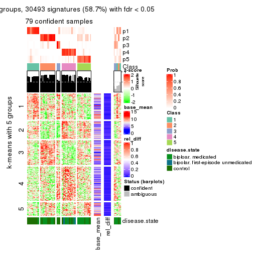
get_signatures(res, k = 6)
Signature heatmaps where rows are not scaled:
get_signatures(res, k = 2, scale_rows = FALSE)
get_signatures(res, k = 3, scale_rows = FALSE)
get_signatures(res, k = 4, scale_rows = FALSE)
get_signatures(res, k = 5, scale_rows = FALSE)
get_signatures(res, k = 6, scale_rows = FALSE)
Compare the overlap of signatures from different k:
compare_signatures(res)
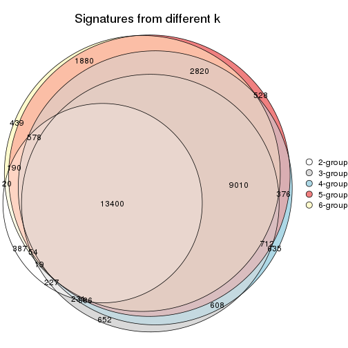
get_signature() returns a data frame invisibly. TO get the list of signatures, the function
call should be assigned to a variable explicitly. In following code, if plot argument is set
to FALSE, no heatmap is plotted while only the differential analysis is performed.
# code only for demonstration
tb = get_signature(res, k = ..., plot = FALSE)
An example of the output of tb is:
#> which_row fdr mean_1 mean_2 scaled_mean_1 scaled_mean_2 km
#> 1 38 0.042760348 8.373488 9.131774 -0.5533452 0.5164555 1
#> 2 40 0.018707592 7.106213 8.469186 -0.6173731 0.5762149 1
#> 3 55 0.019134737 10.221463 11.207825 -0.6159697 0.5749050 1
#> 4 59 0.006059896 5.921854 7.869574 -0.6899429 0.6439467 1
#> 5 60 0.018055526 8.928898 10.211722 -0.6204761 0.5791110 1
#> 6 98 0.009384629 15.714769 14.887706 0.6635654 -0.6193277 2
...
The columns in tb are:
which_row: row indices corresponding to the input matrix.fdr: FDR for the differential test. mean_x: The mean value in group x.scaled_mean_x: The mean value in group x after rows are scaled.km: Row groups if k-means clustering is applied to rows.UMAP plot which shows how samples are separated.
dimension_reduction(res, k = 2, method = "UMAP")
dimension_reduction(res, k = 3, method = "UMAP")
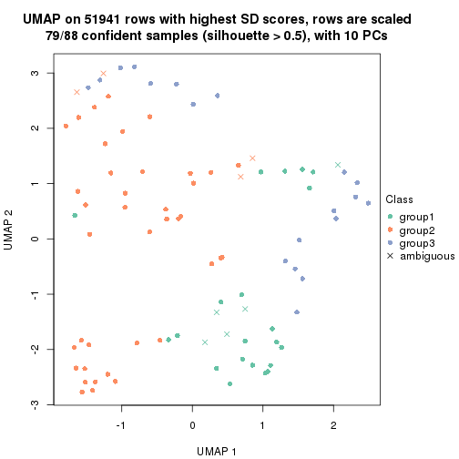
dimension_reduction(res, k = 4, method = "UMAP")
dimension_reduction(res, k = 5, method = "UMAP")
dimension_reduction(res, k = 6, method = "UMAP")
Following heatmap shows how subgroups are split when increasing k:
collect_classes(res)
Test correlation between subgroups and known annotations. If the known annotation is numeric, one-way ANOVA test is applied, and if the known annotation is discrete, chi-squared contingency table test is applied.
test_to_known_factors(res)
#> n disease.state(p) k
#> SD:hclust 80 2.58e-03 2
#> SD:hclust 79 4.56e-06 3
#> SD:hclust 77 2.29e-06 4
#> SD:hclust 79 1.30e-06 5
#> SD:hclust 72 4.70e-07 6
If matrix rows can be associated to genes, consider to use GO_Enrichment(res,
...) to perform function enrichment for the signature genes.
The object with results only for a single top-value method and a single partition method can be extracted as:
res = res_list["SD", "kmeans"]
# you can also extract it by
# res = res_list["SD:kmeans"]
A summary of res and all the functions that can be applied to it:
res
#> A 'ConsensusPartition' object with k = 2, 3, 4, 5, 6.
#> On a matrix with 51941 rows and 88 columns.
#> Top rows (1000, 2000, 3000, 4000, 5000) are extracted by 'SD' method.
#> Subgroups are detected by 'kmeans' method.
#> Performed in total 1250 partitions by row resampling.
#> Best k for subgroups seems to be 2.
#>
#> Following methods can be applied to this 'ConsensusPartition' object:
#> [1] "cola_report" "collect_classes" "collect_plots"
#> [4] "collect_stats" "colnames" "compare_signatures"
#> [7] "consensus_heatmap" "dimension_reduction" "functional_enrichment"
#> [10] "get_anno_col" "get_anno" "get_classes"
#> [13] "get_consensus" "get_matrix" "get_membership"
#> [16] "get_param" "get_signatures" "get_stats"
#> [19] "is_best_k" "is_stable_k" "membership_heatmap"
#> [22] "ncol" "nrow" "plot_ecdf"
#> [25] "rownames" "select_partition_number" "show"
#> [28] "suggest_best_k" "test_to_known_factors"
collect_plots() function collects all the plots made from res for all k (number of partitions)
into one single page to provide an easy and fast comparison between different k.
collect_plots(res)
The plots are:
k and the heatmap of
predicted classes for each k.k.k.k.All the plots in panels can be made by individual functions and they are plotted later in this section.
select_partition_number() produces several plots showing different
statistics for choosing “optimized” k. There are following statistics:
k;k, the area increased is defined as \(A_k - A_{k-1}\).The detailed explanations of these statistics can be found in the cola vignette.
Generally speaking, lower PAC score, higher mean silhouette score or higher
concordance corresponds to better partition. Rand index and Jaccard index
measure how similar the current partition is compared to partition with k-1.
If they are too similar, we won't accept k is better than k-1.
select_partition_number(res)
The numeric values for all these statistics can be obtained by get_stats().
get_stats(res)
#> k 1-PAC mean_silhouette concordance area_increased Rand Jaccard
#> 2 2 0.796 0.877 0.934 0.5031 0.495 0.495
#> 3 3 0.405 0.485 0.685 0.3117 0.724 0.504
#> 4 4 0.471 0.458 0.688 0.1242 0.761 0.430
#> 5 5 0.515 0.342 0.573 0.0687 0.847 0.498
#> 6 6 0.587 0.403 0.589 0.0451 0.836 0.376
suggest_best_k() suggests the best \(k\) based on these statistics. The rules are as follows:
NA.suggest_best_k(res)
#> [1] 2
Following shows the table of the partitions (You need to click the show/hide
code output link to see it). The membership matrix (columns with name p*)
is inferred by
clue::cl_consensus()
function with the SE method. Basically the value in the membership matrix
represents the probability to belong to a certain group. The finall class
label for an item is determined with the group with highest probability it
belongs to.
In get_classes() function, the entropy is calculated from the membership
matrix and the silhouette score is calculated from the consensus matrix.
cbind(get_classes(res, k = 2), get_membership(res, k = 2))
#> class entropy silhouette p1 p2
#> GSM1130404 1 0.8081 0.7124 0.752 0.248
#> GSM1130405 2 0.9970 0.0718 0.468 0.532
#> GSM1130408 2 0.0938 0.9323 0.012 0.988
#> GSM1130409 1 0.3584 0.9130 0.932 0.068
#> GSM1130410 1 0.3274 0.9178 0.940 0.060
#> GSM1130415 2 0.1843 0.9342 0.028 0.972
#> GSM1130416 2 0.0672 0.9341 0.008 0.992
#> GSM1130417 2 0.1843 0.9342 0.028 0.972
#> GSM1130418 2 0.1843 0.9342 0.028 0.972
#> GSM1130421 2 0.0376 0.9325 0.004 0.996
#> GSM1130422 2 0.1414 0.9278 0.020 0.980
#> GSM1130423 1 0.1414 0.9301 0.980 0.020
#> GSM1130424 1 0.9087 0.4929 0.676 0.324
#> GSM1130425 1 0.0938 0.9309 0.988 0.012
#> GSM1130426 2 0.1843 0.9342 0.028 0.972
#> GSM1130427 2 0.1843 0.9342 0.028 0.972
#> GSM1130428 2 0.9970 0.1832 0.468 0.532
#> GSM1130429 1 0.9754 0.2552 0.592 0.408
#> GSM1130430 1 0.2423 0.9271 0.960 0.040
#> GSM1130431 1 0.1184 0.9306 0.984 0.016
#> GSM1130432 2 0.1633 0.9269 0.024 0.976
#> GSM1130433 2 0.3114 0.9103 0.056 0.944
#> GSM1130434 1 0.3114 0.9152 0.944 0.056
#> GSM1130435 1 0.3431 0.9154 0.936 0.064
#> GSM1130436 1 0.3274 0.9116 0.940 0.060
#> GSM1130437 1 0.3274 0.9116 0.940 0.060
#> GSM1130438 1 0.9522 0.4798 0.628 0.372
#> GSM1130439 1 0.9522 0.4798 0.628 0.372
#> GSM1130440 2 0.3584 0.9009 0.068 0.932
#> GSM1130441 2 0.0938 0.9345 0.012 0.988
#> GSM1130442 2 0.0672 0.9312 0.008 0.992
#> GSM1130443 1 0.1414 0.9261 0.980 0.020
#> GSM1130444 1 0.1633 0.9246 0.976 0.024
#> GSM1130445 1 0.4161 0.9017 0.916 0.084
#> GSM1130476 2 0.1633 0.9269 0.024 0.976
#> GSM1130483 1 0.4161 0.9017 0.916 0.084
#> GSM1130484 1 0.4298 0.8988 0.912 0.088
#> GSM1130487 1 0.0938 0.9282 0.988 0.012
#> GSM1130488 1 0.0938 0.9282 0.988 0.012
#> GSM1130419 1 0.1184 0.9307 0.984 0.016
#> GSM1130420 1 0.1184 0.9307 0.984 0.016
#> GSM1130464 1 0.0672 0.9291 0.992 0.008
#> GSM1130465 1 0.0672 0.9291 0.992 0.008
#> GSM1130468 1 0.1184 0.9307 0.984 0.016
#> GSM1130469 1 0.1184 0.9307 0.984 0.016
#> GSM1130402 1 0.1414 0.9301 0.980 0.020
#> GSM1130403 1 0.1414 0.9301 0.980 0.020
#> GSM1130406 1 0.1843 0.9227 0.972 0.028
#> GSM1130407 1 0.1843 0.9227 0.972 0.028
#> GSM1130411 2 0.1843 0.9342 0.028 0.972
#> GSM1130412 2 0.1843 0.9342 0.028 0.972
#> GSM1130413 2 0.1843 0.9342 0.028 0.972
#> GSM1130414 2 0.1843 0.9342 0.028 0.972
#> GSM1130446 2 0.4939 0.8879 0.108 0.892
#> GSM1130447 1 0.1633 0.9286 0.976 0.024
#> GSM1130448 2 0.1633 0.9269 0.024 0.976
#> GSM1130449 1 0.1184 0.9275 0.984 0.016
#> GSM1130450 2 0.4431 0.8929 0.092 0.908
#> GSM1130451 2 0.6623 0.8186 0.172 0.828
#> GSM1130452 2 0.0672 0.9341 0.008 0.992
#> GSM1130453 2 0.1414 0.9278 0.020 0.980
#> GSM1130454 2 0.1414 0.9278 0.020 0.980
#> GSM1130455 2 0.0000 0.9333 0.000 1.000
#> GSM1130456 1 0.1414 0.9301 0.980 0.020
#> GSM1130457 2 0.1843 0.9342 0.028 0.972
#> GSM1130458 2 0.4298 0.9035 0.088 0.912
#> GSM1130459 2 0.0938 0.9345 0.012 0.988
#> GSM1130460 2 0.0938 0.9345 0.012 0.988
#> GSM1130461 2 0.1414 0.9278 0.020 0.980
#> GSM1130462 2 0.4562 0.8901 0.096 0.904
#> GSM1130463 2 0.6247 0.8323 0.156 0.844
#> GSM1130466 1 0.1414 0.9301 0.980 0.020
#> GSM1130467 2 0.0938 0.9345 0.012 0.988
#> GSM1130470 1 0.1184 0.9311 0.984 0.016
#> GSM1130471 1 0.1414 0.9301 0.980 0.020
#> GSM1130472 1 0.1414 0.9301 0.980 0.020
#> GSM1130473 1 0.1414 0.9301 0.980 0.020
#> GSM1130474 2 0.3431 0.9120 0.064 0.936
#> GSM1130475 2 0.0000 0.9333 0.000 1.000
#> GSM1130477 1 0.3274 0.9116 0.940 0.060
#> GSM1130478 1 0.3274 0.9116 0.940 0.060
#> GSM1130479 1 0.1414 0.9301 0.980 0.020
#> GSM1130480 2 0.1184 0.9292 0.016 0.984
#> GSM1130481 2 0.5519 0.8718 0.128 0.872
#> GSM1130482 2 0.1843 0.9342 0.028 0.972
#> GSM1130485 1 0.1633 0.9286 0.976 0.024
#> GSM1130486 1 0.0938 0.9310 0.988 0.012
#> GSM1130489 2 0.7745 0.7481 0.228 0.772
cbind(get_classes(res, k = 3), get_membership(res, k = 3))
#> class entropy silhouette p1 p2 p3
#> GSM1130404 3 0.922 0.2214 0.272 0.200 0.528
#> GSM1130405 3 0.964 0.1305 0.212 0.356 0.432
#> GSM1130408 2 0.418 0.7122 0.172 0.828 0.000
#> GSM1130409 3 0.758 -0.1127 0.464 0.040 0.496
#> GSM1130410 3 0.758 -0.0974 0.460 0.040 0.500
#> GSM1130415 2 0.428 0.7537 0.056 0.872 0.072
#> GSM1130416 2 0.226 0.7591 0.068 0.932 0.000
#> GSM1130417 2 0.428 0.7537 0.056 0.872 0.072
#> GSM1130418 2 0.428 0.7537 0.056 0.872 0.072
#> GSM1130421 2 0.382 0.7258 0.148 0.852 0.000
#> GSM1130422 2 0.475 0.6787 0.216 0.784 0.000
#> GSM1130423 3 0.254 0.5982 0.080 0.000 0.920
#> GSM1130424 3 0.475 0.5179 0.008 0.184 0.808
#> GSM1130425 3 0.304 0.5867 0.104 0.000 0.896
#> GSM1130426 2 0.461 0.7467 0.052 0.856 0.092
#> GSM1130427 2 0.620 0.6592 0.056 0.760 0.184
#> GSM1130428 3 0.554 0.4427 0.008 0.252 0.740
#> GSM1130429 3 0.546 0.4543 0.008 0.244 0.748
#> GSM1130430 3 0.657 0.3511 0.292 0.028 0.680
#> GSM1130431 3 0.506 0.4783 0.208 0.008 0.784
#> GSM1130432 1 0.601 0.1828 0.664 0.332 0.004
#> GSM1130433 1 0.569 0.3445 0.724 0.268 0.008
#> GSM1130434 1 0.723 0.4441 0.616 0.040 0.344
#> GSM1130435 1 0.738 0.3675 0.584 0.040 0.376
#> GSM1130436 1 0.696 0.4975 0.648 0.036 0.316
#> GSM1130437 1 0.696 0.4975 0.648 0.036 0.316
#> GSM1130438 1 0.375 0.5703 0.872 0.120 0.008
#> GSM1130439 1 0.378 0.5646 0.864 0.132 0.004
#> GSM1130440 1 0.525 0.3782 0.736 0.264 0.000
#> GSM1130441 2 0.153 0.7632 0.032 0.964 0.004
#> GSM1130442 2 0.435 0.7073 0.184 0.816 0.000
#> GSM1130443 3 0.619 0.1940 0.420 0.000 0.580
#> GSM1130444 1 0.489 0.5854 0.772 0.000 0.228
#> GSM1130445 1 0.490 0.6354 0.812 0.016 0.172
#> GSM1130476 2 0.630 0.2994 0.484 0.516 0.000
#> GSM1130483 1 0.384 0.6439 0.872 0.012 0.116
#> GSM1130484 1 0.384 0.6439 0.872 0.012 0.116
#> GSM1130487 1 0.583 0.4642 0.660 0.000 0.340
#> GSM1130488 1 0.595 0.4281 0.640 0.000 0.360
#> GSM1130419 3 0.556 0.4155 0.300 0.000 0.700
#> GSM1130420 3 0.556 0.4155 0.300 0.000 0.700
#> GSM1130464 3 0.597 0.2999 0.364 0.000 0.636
#> GSM1130465 3 0.610 0.2448 0.392 0.000 0.608
#> GSM1130468 3 0.543 0.4361 0.284 0.000 0.716
#> GSM1130469 3 0.543 0.4361 0.284 0.000 0.716
#> GSM1130402 3 0.586 0.4631 0.228 0.024 0.748
#> GSM1130403 3 0.546 0.4924 0.184 0.028 0.788
#> GSM1130406 1 0.388 0.6326 0.848 0.000 0.152
#> GSM1130407 1 0.382 0.6338 0.852 0.000 0.148
#> GSM1130411 2 0.374 0.7508 0.036 0.892 0.072
#> GSM1130412 2 0.374 0.7508 0.036 0.892 0.072
#> GSM1130413 2 0.437 0.7516 0.056 0.868 0.076
#> GSM1130414 2 0.409 0.7565 0.056 0.880 0.064
#> GSM1130446 3 0.708 -0.1604 0.020 0.488 0.492
#> GSM1130447 3 0.286 0.5660 0.004 0.084 0.912
#> GSM1130448 2 0.630 0.2994 0.484 0.516 0.000
#> GSM1130449 3 0.681 0.0565 0.464 0.012 0.524
#> GSM1130450 2 0.642 0.5941 0.032 0.708 0.260
#> GSM1130451 3 0.770 -0.0225 0.048 0.420 0.532
#> GSM1130452 2 0.304 0.7428 0.104 0.896 0.000
#> GSM1130453 2 0.627 0.3652 0.456 0.544 0.000
#> GSM1130454 2 0.627 0.3728 0.452 0.548 0.000
#> GSM1130455 2 0.378 0.7345 0.132 0.864 0.004
#> GSM1130456 3 0.254 0.5980 0.080 0.000 0.920
#> GSM1130457 2 0.383 0.7365 0.020 0.880 0.100
#> GSM1130458 2 0.715 0.2138 0.024 0.536 0.440
#> GSM1130459 2 0.129 0.7633 0.032 0.968 0.000
#> GSM1130460 2 0.171 0.7634 0.032 0.960 0.008
#> GSM1130461 2 0.597 0.5127 0.364 0.636 0.000
#> GSM1130462 2 0.642 0.5941 0.032 0.708 0.260
#> GSM1130463 3 0.739 -0.1275 0.032 0.464 0.504
#> GSM1130466 3 0.313 0.5963 0.088 0.008 0.904
#> GSM1130467 2 0.116 0.7637 0.028 0.972 0.000
#> GSM1130470 3 0.288 0.5921 0.096 0.000 0.904
#> GSM1130471 3 0.245 0.5987 0.076 0.000 0.924
#> GSM1130472 3 0.245 0.5987 0.076 0.000 0.924
#> GSM1130473 3 0.236 0.5989 0.072 0.000 0.928
#> GSM1130474 2 0.829 0.2998 0.080 0.512 0.408
#> GSM1130475 2 0.355 0.7336 0.132 0.868 0.000
#> GSM1130477 1 0.682 0.5316 0.668 0.036 0.296
#> GSM1130478 1 0.599 0.5939 0.756 0.036 0.208
#> GSM1130479 3 0.203 0.5951 0.032 0.016 0.952
#> GSM1130480 1 0.610 0.1689 0.648 0.348 0.004
#> GSM1130481 2 0.730 0.1043 0.028 0.488 0.484
#> GSM1130482 2 0.715 0.6133 0.092 0.708 0.200
#> GSM1130485 3 0.117 0.5913 0.008 0.016 0.976
#> GSM1130486 3 0.593 0.4188 0.296 0.008 0.696
#> GSM1130489 3 0.748 -0.0844 0.036 0.456 0.508
cbind(get_classes(res, k = 4), get_membership(res, k = 4))
#> class entropy silhouette p1 p2 p3 p4
#> GSM1130404 4 0.913 0.32294 0.208 0.224 0.112 0.456
#> GSM1130405 4 0.898 0.36101 0.168 0.256 0.108 0.468
#> GSM1130408 2 0.410 0.64854 0.000 0.744 0.256 0.000
#> GSM1130409 1 0.971 -0.02562 0.324 0.180 0.180 0.316
#> GSM1130410 1 0.970 -0.02411 0.328 0.176 0.180 0.316
#> GSM1130415 2 0.256 0.70825 0.004 0.912 0.016 0.068
#> GSM1130416 2 0.166 0.71933 0.000 0.944 0.052 0.004
#> GSM1130417 2 0.238 0.71073 0.000 0.916 0.016 0.068
#> GSM1130418 2 0.238 0.71073 0.000 0.916 0.016 0.068
#> GSM1130421 2 0.398 0.65513 0.000 0.760 0.240 0.000
#> GSM1130422 2 0.502 0.54736 0.012 0.656 0.332 0.000
#> GSM1130423 4 0.558 0.36120 0.348 0.004 0.024 0.624
#> GSM1130424 4 0.201 0.58468 0.036 0.020 0.004 0.940
#> GSM1130425 4 0.643 0.32633 0.380 0.012 0.048 0.560
#> GSM1130426 2 0.491 0.52017 0.004 0.748 0.032 0.216
#> GSM1130427 2 0.564 0.40393 0.004 0.688 0.052 0.256
#> GSM1130428 4 0.313 0.59397 0.024 0.088 0.004 0.884
#> GSM1130429 4 0.293 0.59365 0.024 0.076 0.004 0.896
#> GSM1130430 4 0.875 0.34489 0.240 0.136 0.120 0.504
#> GSM1130431 4 0.767 0.41557 0.260 0.056 0.104 0.580
#> GSM1130432 3 0.482 0.56833 0.116 0.048 0.808 0.028
#> GSM1130433 3 0.476 0.56749 0.148 0.052 0.792 0.008
#> GSM1130434 1 0.601 0.48653 0.728 0.052 0.172 0.048
#> GSM1130435 1 0.630 0.47727 0.712 0.068 0.172 0.048
#> GSM1130436 1 0.572 0.46706 0.732 0.044 0.192 0.032
#> GSM1130437 1 0.576 0.46349 0.728 0.044 0.196 0.032
#> GSM1130438 3 0.405 0.55491 0.212 0.008 0.780 0.000
#> GSM1130439 3 0.354 0.57171 0.176 0.004 0.820 0.000
#> GSM1130440 3 0.317 0.59899 0.116 0.016 0.868 0.000
#> GSM1130441 2 0.566 0.69439 0.000 0.716 0.176 0.108
#> GSM1130442 2 0.589 0.47364 0.000 0.540 0.424 0.036
#> GSM1130443 1 0.470 0.56491 0.792 0.000 0.084 0.124
#> GSM1130444 1 0.490 0.17861 0.632 0.000 0.364 0.004
#> GSM1130445 1 0.544 0.04460 0.560 0.016 0.424 0.000
#> GSM1130476 3 0.443 0.42961 0.016 0.208 0.772 0.004
#> GSM1130483 3 0.628 0.28317 0.400 0.032 0.552 0.016
#> GSM1130484 3 0.628 0.28317 0.400 0.032 0.552 0.016
#> GSM1130487 1 0.287 0.52742 0.864 0.000 0.136 0.000
#> GSM1130488 1 0.281 0.53022 0.868 0.000 0.132 0.000
#> GSM1130419 1 0.474 0.46913 0.728 0.000 0.020 0.252
#> GSM1130420 1 0.474 0.46913 0.728 0.000 0.020 0.252
#> GSM1130464 1 0.335 0.55617 0.836 0.000 0.004 0.160
#> GSM1130465 1 0.283 0.57529 0.876 0.000 0.004 0.120
#> GSM1130468 1 0.407 0.49604 0.748 0.000 0.000 0.252
#> GSM1130469 1 0.407 0.49604 0.748 0.000 0.000 0.252
#> GSM1130402 4 0.790 0.43787 0.228 0.088 0.100 0.584
#> GSM1130403 4 0.762 0.47212 0.204 0.088 0.092 0.616
#> GSM1130406 3 0.580 0.20389 0.468 0.008 0.508 0.016
#> GSM1130407 3 0.580 0.21000 0.464 0.008 0.512 0.016
#> GSM1130411 2 0.194 0.72178 0.000 0.924 0.000 0.076
#> GSM1130412 2 0.194 0.72178 0.000 0.924 0.000 0.076
#> GSM1130413 2 0.344 0.67578 0.012 0.876 0.028 0.084
#> GSM1130414 2 0.249 0.71075 0.004 0.916 0.016 0.064
#> GSM1130446 4 0.531 0.51129 0.008 0.152 0.080 0.760
#> GSM1130447 4 0.334 0.56913 0.108 0.020 0.004 0.868
#> GSM1130448 3 0.432 0.42569 0.012 0.208 0.776 0.004
#> GSM1130449 4 0.780 0.36559 0.144 0.032 0.288 0.536
#> GSM1130450 4 0.753 -0.09520 0.012 0.372 0.136 0.480
#> GSM1130451 4 0.618 0.51080 0.032 0.120 0.124 0.724
#> GSM1130452 2 0.560 0.67354 0.000 0.696 0.236 0.068
#> GSM1130453 3 0.465 0.39821 0.008 0.216 0.760 0.016
#> GSM1130454 3 0.465 0.39821 0.008 0.216 0.760 0.016
#> GSM1130455 2 0.635 0.58284 0.000 0.588 0.332 0.080
#> GSM1130456 4 0.523 0.36436 0.368 0.008 0.004 0.620
#> GSM1130457 2 0.589 0.65654 0.000 0.688 0.100 0.212
#> GSM1130458 4 0.511 0.49225 0.000 0.204 0.056 0.740
#> GSM1130459 2 0.528 0.70609 0.000 0.748 0.156 0.096
#> GSM1130460 2 0.550 0.70194 0.000 0.732 0.160 0.108
#> GSM1130461 3 0.504 0.02542 0.000 0.364 0.628 0.008
#> GSM1130462 4 0.749 -0.07784 0.012 0.368 0.132 0.488
#> GSM1130463 4 0.538 0.52670 0.012 0.132 0.092 0.764
#> GSM1130466 4 0.572 0.30567 0.388 0.004 0.024 0.584
#> GSM1130467 2 0.511 0.71025 0.000 0.760 0.152 0.088
#> GSM1130470 4 0.561 0.35042 0.356 0.004 0.024 0.616
#> GSM1130471 4 0.556 0.36580 0.344 0.004 0.024 0.628
#> GSM1130472 4 0.556 0.36580 0.344 0.004 0.024 0.628
#> GSM1130473 4 0.609 0.40836 0.312 0.012 0.044 0.632
#> GSM1130474 4 0.660 0.41343 0.004 0.156 0.196 0.644
#> GSM1130475 2 0.659 0.49734 0.000 0.524 0.392 0.084
#> GSM1130477 1 0.832 0.06280 0.416 0.068 0.408 0.108
#> GSM1130478 3 0.842 0.00355 0.352 0.080 0.460 0.108
#> GSM1130479 4 0.596 0.51494 0.200 0.036 0.048 0.716
#> GSM1130480 3 0.350 0.59355 0.080 0.024 0.876 0.020
#> GSM1130481 4 0.544 0.56973 0.028 0.124 0.076 0.772
#> GSM1130482 4 0.824 0.34674 0.060 0.284 0.140 0.516
#> GSM1130485 4 0.533 0.52431 0.224 0.036 0.012 0.728
#> GSM1130486 1 0.454 0.49959 0.760 0.016 0.004 0.220
#> GSM1130489 4 0.614 0.58216 0.040 0.160 0.076 0.724
cbind(get_classes(res, k = 5), get_membership(res, k = 5))
#> class entropy silhouette p1 p2 p3 p4 p5
#> GSM1130404 5 0.740 0.1945 0.352 0.264 0.008 0.016 0.360
#> GSM1130405 5 0.735 0.2068 0.336 0.284 0.008 0.012 0.360
#> GSM1130408 2 0.524 0.1212 0.036 0.516 0.444 0.000 0.004
#> GSM1130409 1 0.738 0.1067 0.460 0.316 0.008 0.036 0.180
#> GSM1130410 1 0.738 0.1067 0.460 0.316 0.008 0.036 0.180
#> GSM1130415 2 0.120 0.6766 0.000 0.956 0.004 0.000 0.040
#> GSM1130416 2 0.195 0.6255 0.000 0.912 0.084 0.000 0.004
#> GSM1130417 2 0.152 0.6783 0.004 0.944 0.004 0.000 0.048
#> GSM1130418 2 0.152 0.6783 0.004 0.944 0.004 0.000 0.048
#> GSM1130421 2 0.499 0.3332 0.028 0.628 0.336 0.004 0.004
#> GSM1130422 2 0.575 0.1683 0.056 0.528 0.404 0.008 0.004
#> GSM1130423 4 0.583 0.1933 0.044 0.000 0.024 0.488 0.444
#> GSM1130424 5 0.365 0.4312 0.016 0.012 0.004 0.148 0.820
#> GSM1130425 4 0.762 0.0967 0.216 0.012 0.032 0.408 0.332
#> GSM1130426 2 0.372 0.5404 0.012 0.800 0.008 0.004 0.176
#> GSM1130427 2 0.449 0.4861 0.052 0.764 0.008 0.004 0.172
#> GSM1130428 5 0.378 0.4954 0.004 0.068 0.000 0.108 0.820
#> GSM1130429 5 0.381 0.4863 0.008 0.056 0.000 0.116 0.820
#> GSM1130430 5 0.754 0.3004 0.340 0.184 0.012 0.036 0.428
#> GSM1130431 5 0.777 0.3621 0.316 0.132 0.012 0.084 0.456
#> GSM1130432 1 0.590 0.0599 0.528 0.028 0.396 0.000 0.048
#> GSM1130433 1 0.554 0.2185 0.588 0.048 0.348 0.000 0.016
#> GSM1130434 1 0.640 0.3514 0.576 0.060 0.000 0.296 0.068
#> GSM1130435 1 0.651 0.3503 0.568 0.064 0.000 0.296 0.072
#> GSM1130436 1 0.563 0.3950 0.640 0.048 0.000 0.276 0.036
#> GSM1130437 1 0.556 0.3947 0.644 0.048 0.000 0.276 0.032
#> GSM1130438 1 0.451 0.0913 0.560 0.000 0.432 0.008 0.000
#> GSM1130439 3 0.466 -0.0422 0.480 0.000 0.508 0.012 0.000
#> GSM1130440 3 0.460 0.0953 0.428 0.000 0.560 0.012 0.000
#> GSM1130441 3 0.600 -0.1960 0.000 0.436 0.452 0.000 0.112
#> GSM1130442 3 0.542 0.3395 0.036 0.240 0.676 0.000 0.048
#> GSM1130443 4 0.451 0.3500 0.188 0.000 0.072 0.740 0.000
#> GSM1130444 4 0.636 -0.1741 0.388 0.000 0.164 0.448 0.000
#> GSM1130445 1 0.635 0.2698 0.508 0.004 0.156 0.332 0.000
#> GSM1130476 3 0.377 0.5316 0.172 0.028 0.796 0.004 0.000
#> GSM1130483 1 0.423 0.5045 0.776 0.008 0.168 0.048 0.000
#> GSM1130484 1 0.423 0.5045 0.776 0.008 0.168 0.048 0.000
#> GSM1130487 4 0.489 0.0684 0.408 0.004 0.020 0.568 0.000
#> GSM1130488 4 0.481 0.0716 0.412 0.004 0.016 0.568 0.000
#> GSM1130419 4 0.144 0.5048 0.004 0.000 0.004 0.948 0.044
#> GSM1130420 4 0.144 0.5048 0.004 0.000 0.004 0.948 0.044
#> GSM1130464 4 0.301 0.4495 0.160 0.000 0.000 0.832 0.008
#> GSM1130465 4 0.339 0.4183 0.200 0.000 0.000 0.792 0.008
#> GSM1130468 4 0.379 0.4872 0.104 0.004 0.000 0.820 0.072
#> GSM1130469 4 0.379 0.4872 0.104 0.004 0.000 0.820 0.072
#> GSM1130402 5 0.782 0.3444 0.324 0.148 0.012 0.076 0.440
#> GSM1130403 5 0.774 0.3679 0.308 0.148 0.012 0.072 0.460
#> GSM1130406 1 0.585 0.4731 0.640 0.004 0.180 0.172 0.004
#> GSM1130407 1 0.582 0.4748 0.644 0.004 0.180 0.168 0.004
#> GSM1130411 2 0.174 0.6785 0.000 0.932 0.012 0.000 0.056
#> GSM1130412 2 0.174 0.6785 0.000 0.932 0.012 0.000 0.056
#> GSM1130413 2 0.152 0.6652 0.012 0.944 0.000 0.000 0.044
#> GSM1130414 2 0.133 0.6750 0.004 0.956 0.008 0.000 0.032
#> GSM1130446 5 0.485 0.5149 0.000 0.064 0.156 0.028 0.752
#> GSM1130447 5 0.416 0.4395 0.012 0.036 0.000 0.172 0.780
#> GSM1130448 3 0.373 0.5340 0.168 0.028 0.800 0.004 0.000
#> GSM1130449 5 0.740 0.3352 0.336 0.024 0.144 0.028 0.468
#> GSM1130450 5 0.693 0.2499 0.008 0.152 0.296 0.024 0.520
#> GSM1130451 5 0.578 0.4242 0.012 0.028 0.288 0.040 0.632
#> GSM1130452 3 0.577 -0.1532 0.000 0.432 0.480 0.000 0.088
#> GSM1130453 3 0.327 0.5668 0.112 0.028 0.852 0.004 0.004
#> GSM1130454 3 0.327 0.5668 0.112 0.028 0.852 0.004 0.004
#> GSM1130455 3 0.548 0.1780 0.000 0.288 0.616 0.000 0.096
#> GSM1130456 4 0.538 0.1117 0.044 0.004 0.000 0.480 0.472
#> GSM1130457 2 0.663 0.2473 0.000 0.456 0.272 0.000 0.272
#> GSM1130458 5 0.413 0.5348 0.004 0.076 0.096 0.012 0.812
#> GSM1130459 2 0.591 0.1884 0.000 0.488 0.408 0.000 0.104
#> GSM1130460 2 0.615 0.1793 0.000 0.468 0.400 0.000 0.132
#> GSM1130461 3 0.435 0.5352 0.096 0.112 0.784 0.000 0.008
#> GSM1130462 5 0.682 0.2854 0.008 0.144 0.284 0.024 0.540
#> GSM1130463 5 0.549 0.5007 0.008 0.060 0.196 0.032 0.704
#> GSM1130466 4 0.551 0.2872 0.040 0.000 0.016 0.560 0.384
#> GSM1130467 2 0.581 0.2253 0.000 0.512 0.392 0.000 0.096
#> GSM1130470 4 0.573 0.2442 0.040 0.000 0.024 0.524 0.412
#> GSM1130471 4 0.575 0.2259 0.040 0.000 0.024 0.508 0.428
#> GSM1130472 4 0.575 0.2259 0.040 0.000 0.024 0.508 0.428
#> GSM1130473 5 0.695 -0.1245 0.116 0.012 0.024 0.404 0.444
#> GSM1130474 5 0.613 0.3911 0.044 0.040 0.328 0.008 0.580
#> GSM1130475 3 0.527 0.2797 0.000 0.220 0.668 0.000 0.112
#> GSM1130477 1 0.630 0.4089 0.688 0.056 0.028 0.120 0.108
#> GSM1130478 1 0.621 0.4155 0.696 0.056 0.028 0.112 0.108
#> GSM1130479 5 0.700 0.1977 0.152 0.020 0.024 0.248 0.556
#> GSM1130480 3 0.595 0.1666 0.360 0.020 0.552 0.000 0.068
#> GSM1130481 5 0.425 0.5535 0.056 0.060 0.060 0.004 0.820
#> GSM1130482 5 0.766 0.4460 0.228 0.136 0.124 0.004 0.508
#> GSM1130485 5 0.564 0.3302 0.064 0.028 0.004 0.236 0.668
#> GSM1130486 4 0.621 0.3456 0.220 0.016 0.004 0.616 0.144
#> GSM1130489 5 0.538 0.5303 0.124 0.084 0.024 0.024 0.744
cbind(get_classes(res, k = 6), get_membership(res, k = 6))
#> class entropy silhouette p1 p2 p3 p4 p5 p6
#> GSM1130404 1 0.7536 0.5484 0.492 0.208 0.000 0.056 0.120 0.124
#> GSM1130405 1 0.7401 0.5388 0.492 0.224 0.000 0.040 0.120 0.124
#> GSM1130408 3 0.6796 -0.0820 0.108 0.368 0.452 0.008 0.048 0.016
#> GSM1130409 1 0.7120 0.5386 0.508 0.252 0.000 0.092 0.036 0.112
#> GSM1130410 1 0.7120 0.5386 0.508 0.252 0.000 0.092 0.036 0.112
#> GSM1130415 2 0.0520 0.6751 0.008 0.984 0.000 0.000 0.008 0.000
#> GSM1130416 2 0.1679 0.6621 0.036 0.936 0.012 0.000 0.016 0.000
#> GSM1130417 2 0.0405 0.6769 0.004 0.988 0.000 0.000 0.008 0.000
#> GSM1130418 2 0.0405 0.6769 0.004 0.988 0.000 0.000 0.008 0.000
#> GSM1130421 2 0.5543 0.3449 0.052 0.580 0.324 0.008 0.036 0.000
#> GSM1130422 2 0.5398 0.2583 0.036 0.556 0.368 0.012 0.028 0.000
#> GSM1130423 6 0.2263 0.7293 0.004 0.000 0.000 0.036 0.060 0.900
#> GSM1130424 6 0.5340 0.0444 0.072 0.000 0.000 0.012 0.436 0.480
#> GSM1130425 6 0.3541 0.6135 0.148 0.000 0.000 0.016 0.032 0.804
#> GSM1130426 2 0.4642 0.4449 0.144 0.740 0.004 0.004 0.092 0.016
#> GSM1130427 2 0.4726 0.4102 0.160 0.724 0.000 0.004 0.092 0.020
#> GSM1130428 5 0.6525 0.1757 0.132 0.036 0.000 0.020 0.512 0.300
#> GSM1130429 5 0.6446 0.1490 0.132 0.028 0.000 0.020 0.504 0.316
#> GSM1130430 1 0.8114 0.5164 0.424 0.152 0.000 0.084 0.136 0.204
#> GSM1130431 1 0.8135 0.4629 0.400 0.120 0.000 0.084 0.148 0.248
#> GSM1130432 3 0.6629 0.2351 0.400 0.008 0.436 0.044 0.100 0.012
#> GSM1130433 3 0.5586 0.2251 0.428 0.012 0.472 0.084 0.004 0.000
#> GSM1130434 4 0.5386 0.2269 0.400 0.012 0.000 0.524 0.012 0.052
#> GSM1130435 4 0.5402 0.2050 0.412 0.012 0.000 0.512 0.012 0.052
#> GSM1130436 4 0.4762 0.2626 0.408 0.004 0.008 0.556 0.004 0.020
#> GSM1130437 4 0.4685 0.2677 0.408 0.004 0.008 0.560 0.004 0.016
#> GSM1130438 3 0.5241 0.4608 0.196 0.000 0.640 0.156 0.004 0.004
#> GSM1130439 3 0.4507 0.5463 0.136 0.000 0.736 0.116 0.008 0.004
#> GSM1130440 3 0.4045 0.5787 0.136 0.000 0.776 0.076 0.008 0.004
#> GSM1130441 5 0.7785 -0.1860 0.108 0.276 0.216 0.004 0.376 0.020
#> GSM1130442 3 0.6448 0.3233 0.096 0.124 0.612 0.004 0.148 0.016
#> GSM1130443 4 0.3964 0.5486 0.008 0.000 0.044 0.792 0.020 0.136
#> GSM1130444 4 0.4648 0.4887 0.064 0.000 0.184 0.724 0.004 0.024
#> GSM1130445 4 0.5380 0.4302 0.152 0.000 0.192 0.640 0.004 0.012
#> GSM1130476 3 0.1680 0.6503 0.024 0.004 0.940 0.020 0.012 0.000
#> GSM1130483 1 0.6314 0.0119 0.464 0.000 0.248 0.272 0.004 0.012
#> GSM1130484 1 0.6314 0.0119 0.464 0.000 0.248 0.272 0.004 0.012
#> GSM1130487 4 0.2013 0.5581 0.076 0.000 0.008 0.908 0.000 0.008
#> GSM1130488 4 0.2002 0.5591 0.076 0.000 0.004 0.908 0.000 0.012
#> GSM1130419 4 0.4208 0.1949 0.008 0.000 0.000 0.536 0.004 0.452
#> GSM1130420 4 0.4208 0.1949 0.008 0.000 0.000 0.536 0.004 0.452
#> GSM1130464 4 0.2883 0.5230 0.000 0.000 0.000 0.788 0.000 0.212
#> GSM1130465 4 0.2562 0.5485 0.000 0.000 0.000 0.828 0.000 0.172
#> GSM1130468 4 0.4713 0.4688 0.048 0.000 0.000 0.712 0.044 0.196
#> GSM1130469 4 0.4713 0.4688 0.048 0.000 0.000 0.712 0.044 0.196
#> GSM1130402 1 0.8038 0.4671 0.400 0.128 0.000 0.080 0.120 0.272
#> GSM1130403 1 0.8019 0.4406 0.392 0.128 0.000 0.064 0.140 0.276
#> GSM1130406 4 0.6736 0.0742 0.348 0.000 0.236 0.384 0.012 0.020
#> GSM1130407 4 0.6736 0.0742 0.348 0.000 0.236 0.384 0.012 0.020
#> GSM1130411 2 0.0692 0.6780 0.004 0.976 0.000 0.000 0.020 0.000
#> GSM1130412 2 0.0692 0.6780 0.004 0.976 0.000 0.000 0.020 0.000
#> GSM1130413 2 0.1151 0.6593 0.032 0.956 0.000 0.000 0.012 0.000
#> GSM1130414 2 0.0993 0.6704 0.024 0.964 0.000 0.000 0.012 0.000
#> GSM1130446 5 0.3587 0.5314 0.040 0.012 0.008 0.012 0.836 0.092
#> GSM1130447 5 0.6126 0.0363 0.108 0.004 0.000 0.036 0.496 0.356
#> GSM1130448 3 0.1680 0.6503 0.024 0.004 0.940 0.020 0.012 0.000
#> GSM1130449 5 0.7407 0.1404 0.304 0.012 0.068 0.020 0.440 0.156
#> GSM1130450 5 0.3933 0.5507 0.036 0.032 0.080 0.000 0.820 0.032
#> GSM1130451 5 0.4151 0.5463 0.036 0.008 0.076 0.000 0.796 0.084
#> GSM1130452 2 0.7931 0.1237 0.112 0.292 0.284 0.004 0.288 0.020
#> GSM1130453 3 0.1116 0.6451 0.000 0.004 0.960 0.008 0.028 0.000
#> GSM1130454 3 0.1116 0.6451 0.000 0.004 0.960 0.008 0.028 0.000
#> GSM1130455 3 0.7506 0.0405 0.104 0.140 0.392 0.004 0.340 0.020
#> GSM1130456 6 0.6907 0.3895 0.092 0.000 0.000 0.260 0.184 0.464
#> GSM1130457 5 0.6927 -0.0594 0.116 0.304 0.060 0.004 0.492 0.024
#> GSM1130458 5 0.4768 0.5040 0.092 0.028 0.004 0.012 0.752 0.112
#> GSM1130459 2 0.7759 0.2192 0.116 0.368 0.180 0.004 0.312 0.020
#> GSM1130460 2 0.7767 0.1991 0.116 0.356 0.180 0.004 0.324 0.020
#> GSM1130461 3 0.4065 0.5379 0.088 0.036 0.812 0.004 0.044 0.016
#> GSM1130462 5 0.2564 0.5552 0.004 0.028 0.040 0.000 0.896 0.032
#> GSM1130463 5 0.2931 0.5458 0.008 0.016 0.024 0.000 0.868 0.084
#> GSM1130466 6 0.2492 0.6889 0.004 0.000 0.000 0.100 0.020 0.876
#> GSM1130467 2 0.7666 0.2277 0.112 0.384 0.164 0.004 0.316 0.020
#> GSM1130470 6 0.2197 0.7333 0.000 0.000 0.000 0.056 0.044 0.900
#> GSM1130471 6 0.2134 0.7335 0.000 0.000 0.000 0.052 0.044 0.904
#> GSM1130472 6 0.2134 0.7335 0.000 0.000 0.000 0.052 0.044 0.904
#> GSM1130473 6 0.3560 0.6680 0.092 0.000 0.000 0.016 0.072 0.820
#> GSM1130474 5 0.5259 0.5247 0.088 0.012 0.108 0.000 0.716 0.076
#> GSM1130475 5 0.7127 -0.1209 0.096 0.100 0.376 0.004 0.408 0.016
#> GSM1130477 1 0.6489 0.2594 0.560 0.008 0.024 0.164 0.020 0.224
#> GSM1130478 1 0.6537 0.2600 0.560 0.008 0.028 0.164 0.020 0.220
#> GSM1130479 6 0.4835 0.5216 0.180 0.000 0.000 0.012 0.116 0.692
#> GSM1130480 3 0.5778 0.4950 0.200 0.012 0.652 0.020 0.096 0.020
#> GSM1130481 5 0.5089 0.4539 0.132 0.016 0.000 0.004 0.684 0.164
#> GSM1130482 5 0.7058 0.2094 0.304 0.048 0.032 0.004 0.476 0.136
#> GSM1130485 6 0.6764 0.2659 0.124 0.004 0.000 0.092 0.296 0.484
#> GSM1130486 4 0.5729 0.4126 0.136 0.004 0.000 0.620 0.032 0.208
#> GSM1130489 5 0.6800 0.1134 0.208 0.048 0.000 0.004 0.436 0.304
Heatmaps for the consensus matrix. It visualizes the probability of two samples to be in a same group.
consensus_heatmap(res, k = 2)
consensus_heatmap(res, k = 3)
consensus_heatmap(res, k = 4)
consensus_heatmap(res, k = 5)
consensus_heatmap(res, k = 6)
Heatmaps for the membership of samples in all partitions to see how consistent they are:
membership_heatmap(res, k = 2)
membership_heatmap(res, k = 3)
membership_heatmap(res, k = 4)
membership_heatmap(res, k = 5)
membership_heatmap(res, k = 6)
As soon as we have had the classes for columns, we can look for signatures which are significantly different between classes which can be candidate marks for certain classes. Following are the heatmaps for signatures.
Signature heatmaps where rows are scaled:
get_signatures(res, k = 2)
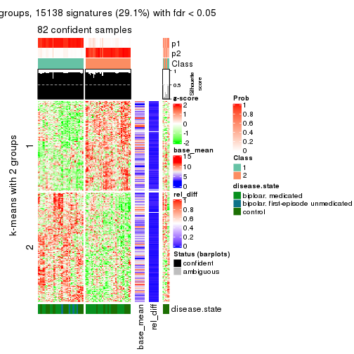
get_signatures(res, k = 3)
get_signatures(res, k = 4)
get_signatures(res, k = 5)
get_signatures(res, k = 6)
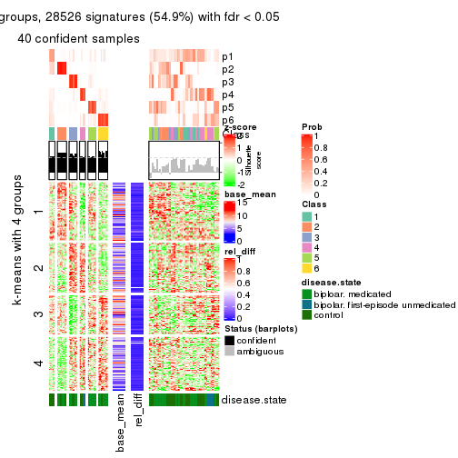
Signature heatmaps where rows are not scaled:
get_signatures(res, k = 2, scale_rows = FALSE)
get_signatures(res, k = 3, scale_rows = FALSE)
get_signatures(res, k = 4, scale_rows = FALSE)
get_signatures(res, k = 5, scale_rows = FALSE)
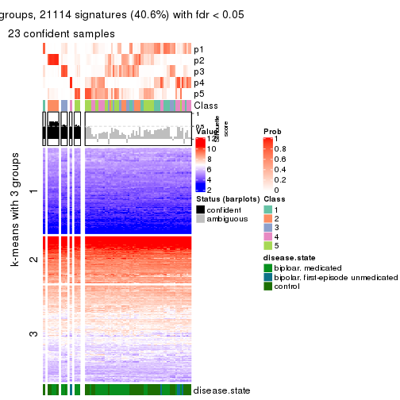
get_signatures(res, k = 6, scale_rows = FALSE)
Compare the overlap of signatures from different k:
compare_signatures(res)
get_signature() returns a data frame invisibly. TO get the list of signatures, the function
call should be assigned to a variable explicitly. In following code, if plot argument is set
to FALSE, no heatmap is plotted while only the differential analysis is performed.
# code only for demonstration
tb = get_signature(res, k = ..., plot = FALSE)
An example of the output of tb is:
#> which_row fdr mean_1 mean_2 scaled_mean_1 scaled_mean_2 km
#> 1 38 0.042760348 8.373488 9.131774 -0.5533452 0.5164555 1
#> 2 40 0.018707592 7.106213 8.469186 -0.6173731 0.5762149 1
#> 3 55 0.019134737 10.221463 11.207825 -0.6159697 0.5749050 1
#> 4 59 0.006059896 5.921854 7.869574 -0.6899429 0.6439467 1
#> 5 60 0.018055526 8.928898 10.211722 -0.6204761 0.5791110 1
#> 6 98 0.009384629 15.714769 14.887706 0.6635654 -0.6193277 2
...
The columns in tb are:
which_row: row indices corresponding to the input matrix.fdr: FDR for the differential test. mean_x: The mean value in group x.scaled_mean_x: The mean value in group x after rows are scaled.km: Row groups if k-means clustering is applied to rows.UMAP plot which shows how samples are separated.
dimension_reduction(res, k = 2, method = "UMAP")
dimension_reduction(res, k = 3, method = "UMAP")
dimension_reduction(res, k = 4, method = "UMAP")
dimension_reduction(res, k = 5, method = "UMAP")
dimension_reduction(res, k = 6, method = "UMAP")
Following heatmap shows how subgroups are split when increasing k:
collect_classes(res)

Test correlation between subgroups and known annotations. If the known annotation is numeric, one-way ANOVA test is applied, and if the known annotation is discrete, chi-squared contingency table test is applied.
test_to_known_factors(res)
#> n disease.state(p) k
#> SD:kmeans 82 1.69e-02 2
#> SD:kmeans 48 2.52e-01 3
#> SD:kmeans 41 1.06e-03 4
#> SD:kmeans 23 9.45e-05 5
#> SD:kmeans 40 5.92e-04 6
If matrix rows can be associated to genes, consider to use GO_Enrichment(res,
...) to perform function enrichment for the signature genes.
The object with results only for a single top-value method and a single partition method can be extracted as:
res = res_list["SD", "skmeans"]
# you can also extract it by
# res = res_list["SD:skmeans"]
A summary of res and all the functions that can be applied to it:
res
#> A 'ConsensusPartition' object with k = 2, 3, 4, 5, 6.
#> On a matrix with 51941 rows and 88 columns.
#> Top rows (1000, 2000, 3000, 4000, 5000) are extracted by 'SD' method.
#> Subgroups are detected by 'skmeans' method.
#> Performed in total 1250 partitions by row resampling.
#> Best k for subgroups seems to be 2.
#>
#> Following methods can be applied to this 'ConsensusPartition' object:
#> [1] "cola_report" "collect_classes" "collect_plots"
#> [4] "collect_stats" "colnames" "compare_signatures"
#> [7] "consensus_heatmap" "dimension_reduction" "functional_enrichment"
#> [10] "get_anno_col" "get_anno" "get_classes"
#> [13] "get_consensus" "get_matrix" "get_membership"
#> [16] "get_param" "get_signatures" "get_stats"
#> [19] "is_best_k" "is_stable_k" "membership_heatmap"
#> [22] "ncol" "nrow" "plot_ecdf"
#> [25] "rownames" "select_partition_number" "show"
#> [28] "suggest_best_k" "test_to_known_factors"
collect_plots() function collects all the plots made from res for all k (number of partitions)
into one single page to provide an easy and fast comparison between different k.
collect_plots(res)
The plots are:
k and the heatmap of
predicted classes for each k.k.k.k.All the plots in panels can be made by individual functions and they are plotted later in this section.
select_partition_number() produces several plots showing different
statistics for choosing “optimized” k. There are following statistics:
k;k, the area increased is defined as \(A_k - A_{k-1}\).The detailed explanations of these statistics can be found in the cola vignette.
Generally speaking, lower PAC score, higher mean silhouette score or higher
concordance corresponds to better partition. Rand index and Jaccard index
measure how similar the current partition is compared to partition with k-1.
If they are too similar, we won't accept k is better than k-1.
select_partition_number(res)
The numeric values for all these statistics can be obtained by get_stats().
get_stats(res)
#> k 1-PAC mean_silhouette concordance area_increased Rand Jaccard
#> 2 2 0.867 0.898 0.954 0.5058 0.494 0.494
#> 3 3 0.650 0.795 0.891 0.3077 0.730 0.513
#> 4 4 0.554 0.571 0.761 0.1369 0.783 0.460
#> 5 5 0.618 0.499 0.725 0.0698 0.852 0.492
#> 6 6 0.676 0.563 0.742 0.0408 0.926 0.654
suggest_best_k() suggests the best \(k\) based on these statistics. The rules are as follows:
NA.suggest_best_k(res)
#> [1] 2
Following shows the table of the partitions (You need to click the show/hide
code output link to see it). The membership matrix (columns with name p*)
is inferred by
clue::cl_consensus()
function with the SE method. Basically the value in the membership matrix
represents the probability to belong to a certain group. The finall class
label for an item is determined with the group with highest probability it
belongs to.
In get_classes() function, the entropy is calculated from the membership
matrix and the silhouette score is calculated from the consensus matrix.
cbind(get_classes(res, k = 2), get_membership(res, k = 2))
#> class entropy silhouette p1 p2
#> GSM1130404 1 0.767 0.730 0.776 0.224
#> GSM1130405 1 0.971 0.379 0.600 0.400
#> GSM1130408 2 0.000 0.948 0.000 1.000
#> GSM1130409 1 0.278 0.931 0.952 0.048
#> GSM1130410 1 0.141 0.945 0.980 0.020
#> GSM1130415 2 0.000 0.948 0.000 1.000
#> GSM1130416 2 0.000 0.948 0.000 1.000
#> GSM1130417 2 0.000 0.948 0.000 1.000
#> GSM1130418 2 0.000 0.948 0.000 1.000
#> GSM1130421 2 0.000 0.948 0.000 1.000
#> GSM1130422 2 0.000 0.948 0.000 1.000
#> GSM1130423 1 0.000 0.954 1.000 0.000
#> GSM1130424 2 1.000 0.102 0.496 0.504
#> GSM1130425 1 0.000 0.954 1.000 0.000
#> GSM1130426 2 0.000 0.948 0.000 1.000
#> GSM1130427 2 0.000 0.948 0.000 1.000
#> GSM1130428 2 0.913 0.555 0.328 0.672
#> GSM1130429 2 0.987 0.310 0.432 0.568
#> GSM1130430 1 0.000 0.954 1.000 0.000
#> GSM1130431 1 0.000 0.954 1.000 0.000
#> GSM1130432 2 0.000 0.948 0.000 1.000
#> GSM1130433 2 0.204 0.926 0.032 0.968
#> GSM1130434 1 0.278 0.931 0.952 0.048
#> GSM1130435 1 0.278 0.931 0.952 0.048
#> GSM1130436 1 0.278 0.931 0.952 0.048
#> GSM1130437 1 0.278 0.931 0.952 0.048
#> GSM1130438 1 0.961 0.426 0.616 0.384
#> GSM1130439 1 0.961 0.426 0.616 0.384
#> GSM1130440 2 0.482 0.855 0.104 0.896
#> GSM1130441 2 0.000 0.948 0.000 1.000
#> GSM1130442 2 0.000 0.948 0.000 1.000
#> GSM1130443 1 0.000 0.954 1.000 0.000
#> GSM1130444 1 0.000 0.954 1.000 0.000
#> GSM1130445 1 0.278 0.931 0.952 0.048
#> GSM1130476 2 0.000 0.948 0.000 1.000
#> GSM1130483 1 0.278 0.931 0.952 0.048
#> GSM1130484 1 0.278 0.931 0.952 0.048
#> GSM1130487 1 0.000 0.954 1.000 0.000
#> GSM1130488 1 0.000 0.954 1.000 0.000
#> GSM1130419 1 0.000 0.954 1.000 0.000
#> GSM1130420 1 0.000 0.954 1.000 0.000
#> GSM1130464 1 0.000 0.954 1.000 0.000
#> GSM1130465 1 0.000 0.954 1.000 0.000
#> GSM1130468 1 0.000 0.954 1.000 0.000
#> GSM1130469 1 0.000 0.954 1.000 0.000
#> GSM1130402 1 0.000 0.954 1.000 0.000
#> GSM1130403 1 0.000 0.954 1.000 0.000
#> GSM1130406 1 0.000 0.954 1.000 0.000
#> GSM1130407 1 0.000 0.954 1.000 0.000
#> GSM1130411 2 0.000 0.948 0.000 1.000
#> GSM1130412 2 0.000 0.948 0.000 1.000
#> GSM1130413 2 0.000 0.948 0.000 1.000
#> GSM1130414 2 0.000 0.948 0.000 1.000
#> GSM1130446 2 0.278 0.921 0.048 0.952
#> GSM1130447 1 0.000 0.954 1.000 0.000
#> GSM1130448 2 0.000 0.948 0.000 1.000
#> GSM1130449 1 0.000 0.954 1.000 0.000
#> GSM1130450 2 0.278 0.921 0.048 0.952
#> GSM1130451 2 0.605 0.831 0.148 0.852
#> GSM1130452 2 0.000 0.948 0.000 1.000
#> GSM1130453 2 0.000 0.948 0.000 1.000
#> GSM1130454 2 0.000 0.948 0.000 1.000
#> GSM1130455 2 0.000 0.948 0.000 1.000
#> GSM1130456 1 0.000 0.954 1.000 0.000
#> GSM1130457 2 0.000 0.948 0.000 1.000
#> GSM1130458 2 0.278 0.921 0.048 0.952
#> GSM1130459 2 0.000 0.948 0.000 1.000
#> GSM1130460 2 0.000 0.948 0.000 1.000
#> GSM1130461 2 0.000 0.948 0.000 1.000
#> GSM1130462 2 0.278 0.921 0.048 0.952
#> GSM1130463 2 0.469 0.881 0.100 0.900
#> GSM1130466 1 0.000 0.954 1.000 0.000
#> GSM1130467 2 0.000 0.948 0.000 1.000
#> GSM1130470 1 0.000 0.954 1.000 0.000
#> GSM1130471 1 0.000 0.954 1.000 0.000
#> GSM1130472 1 0.000 0.954 1.000 0.000
#> GSM1130473 1 0.000 0.954 1.000 0.000
#> GSM1130474 2 0.278 0.921 0.048 0.952
#> GSM1130475 2 0.000 0.948 0.000 1.000
#> GSM1130477 1 0.278 0.931 0.952 0.048
#> GSM1130478 1 0.278 0.931 0.952 0.048
#> GSM1130479 1 0.000 0.954 1.000 0.000
#> GSM1130480 2 0.000 0.948 0.000 1.000
#> GSM1130481 2 0.295 0.919 0.052 0.948
#> GSM1130482 2 0.000 0.948 0.000 1.000
#> GSM1130485 1 0.000 0.954 1.000 0.000
#> GSM1130486 1 0.000 0.954 1.000 0.000
#> GSM1130489 2 0.781 0.722 0.232 0.768
cbind(get_classes(res, k = 3), get_membership(res, k = 3))
#> class entropy silhouette p1 p2 p3
#> GSM1130404 1 0.8646 0.512 0.556 0.320 0.124
#> GSM1130405 2 0.8524 -0.192 0.452 0.456 0.092
#> GSM1130408 2 0.0747 0.886 0.000 0.984 0.016
#> GSM1130409 1 0.5864 0.682 0.704 0.008 0.288
#> GSM1130410 1 0.5831 0.686 0.708 0.008 0.284
#> GSM1130415 2 0.0237 0.888 0.000 0.996 0.004
#> GSM1130416 2 0.0592 0.887 0.000 0.988 0.012
#> GSM1130417 2 0.0237 0.888 0.000 0.996 0.004
#> GSM1130418 2 0.0237 0.888 0.000 0.996 0.004
#> GSM1130421 2 0.0892 0.883 0.000 0.980 0.020
#> GSM1130422 2 0.4002 0.749 0.000 0.840 0.160
#> GSM1130423 1 0.0000 0.848 1.000 0.000 0.000
#> GSM1130424 1 0.2711 0.783 0.912 0.088 0.000
#> GSM1130425 1 0.0000 0.848 1.000 0.000 0.000
#> GSM1130426 2 0.0000 0.888 0.000 1.000 0.000
#> GSM1130427 2 0.0237 0.888 0.000 0.996 0.004
#> GSM1130428 1 0.5733 0.394 0.676 0.324 0.000
#> GSM1130429 1 0.5465 0.478 0.712 0.288 0.000
#> GSM1130430 1 0.3532 0.831 0.884 0.008 0.108
#> GSM1130431 1 0.2356 0.847 0.928 0.000 0.072
#> GSM1130432 3 0.2261 0.884 0.000 0.068 0.932
#> GSM1130433 3 0.0892 0.896 0.000 0.020 0.980
#> GSM1130434 1 0.5928 0.674 0.696 0.008 0.296
#> GSM1130435 1 0.5864 0.682 0.704 0.008 0.288
#> GSM1130436 1 0.6047 0.655 0.680 0.008 0.312
#> GSM1130437 1 0.6075 0.650 0.676 0.008 0.316
#> GSM1130438 3 0.0000 0.896 0.000 0.000 1.000
#> GSM1130439 3 0.0237 0.896 0.000 0.004 0.996
#> GSM1130440 3 0.0747 0.897 0.000 0.016 0.984
#> GSM1130441 2 0.0424 0.887 0.000 0.992 0.008
#> GSM1130442 2 0.1753 0.866 0.000 0.952 0.048
#> GSM1130443 1 0.5560 0.625 0.700 0.000 0.300
#> GSM1130444 3 0.0592 0.892 0.012 0.000 0.988
#> GSM1130445 3 0.0000 0.896 0.000 0.000 1.000
#> GSM1130476 3 0.3340 0.858 0.000 0.120 0.880
#> GSM1130483 3 0.0000 0.896 0.000 0.000 1.000
#> GSM1130484 3 0.0000 0.896 0.000 0.000 1.000
#> GSM1130487 1 0.6095 0.526 0.608 0.000 0.392
#> GSM1130488 1 0.5621 0.662 0.692 0.000 0.308
#> GSM1130419 1 0.1964 0.850 0.944 0.000 0.056
#> GSM1130420 1 0.1964 0.850 0.944 0.000 0.056
#> GSM1130464 1 0.2356 0.847 0.928 0.000 0.072
#> GSM1130465 1 0.3038 0.835 0.896 0.000 0.104
#> GSM1130468 1 0.1964 0.850 0.944 0.000 0.056
#> GSM1130469 1 0.1964 0.850 0.944 0.000 0.056
#> GSM1130402 1 0.2680 0.848 0.924 0.008 0.068
#> GSM1130403 1 0.1170 0.850 0.976 0.008 0.016
#> GSM1130406 3 0.0592 0.892 0.012 0.000 0.988
#> GSM1130407 3 0.0592 0.892 0.012 0.000 0.988
#> GSM1130411 2 0.0237 0.888 0.000 0.996 0.004
#> GSM1130412 2 0.0237 0.888 0.000 0.996 0.004
#> GSM1130413 2 0.0237 0.888 0.000 0.996 0.004
#> GSM1130414 2 0.0237 0.888 0.000 0.996 0.004
#> GSM1130446 2 0.5327 0.709 0.272 0.728 0.000
#> GSM1130447 1 0.0000 0.848 1.000 0.000 0.000
#> GSM1130448 3 0.3340 0.858 0.000 0.120 0.880
#> GSM1130449 3 0.5404 0.632 0.256 0.004 0.740
#> GSM1130450 2 0.4915 0.781 0.184 0.804 0.012
#> GSM1130451 2 0.8009 0.633 0.276 0.624 0.100
#> GSM1130452 2 0.0424 0.887 0.000 0.992 0.008
#> GSM1130453 3 0.3412 0.854 0.000 0.124 0.876
#> GSM1130454 3 0.3412 0.854 0.000 0.124 0.876
#> GSM1130455 2 0.0892 0.883 0.000 0.980 0.020
#> GSM1130456 1 0.0000 0.848 1.000 0.000 0.000
#> GSM1130457 2 0.0000 0.888 0.000 1.000 0.000
#> GSM1130458 2 0.3482 0.825 0.128 0.872 0.000
#> GSM1130459 2 0.0424 0.887 0.000 0.992 0.008
#> GSM1130460 2 0.0424 0.887 0.000 0.992 0.008
#> GSM1130461 3 0.5363 0.653 0.000 0.276 0.724
#> GSM1130462 2 0.4915 0.781 0.184 0.804 0.012
#> GSM1130463 2 0.5919 0.700 0.276 0.712 0.012
#> GSM1130466 1 0.0000 0.848 1.000 0.000 0.000
#> GSM1130467 2 0.0424 0.887 0.000 0.992 0.008
#> GSM1130470 1 0.0000 0.848 1.000 0.000 0.000
#> GSM1130471 1 0.0000 0.848 1.000 0.000 0.000
#> GSM1130472 1 0.0000 0.848 1.000 0.000 0.000
#> GSM1130473 1 0.0000 0.848 1.000 0.000 0.000
#> GSM1130474 2 0.7263 0.708 0.224 0.692 0.084
#> GSM1130475 2 0.1753 0.866 0.000 0.952 0.048
#> GSM1130477 3 0.5763 0.480 0.276 0.008 0.716
#> GSM1130478 3 0.3043 0.815 0.084 0.008 0.908
#> GSM1130479 1 0.0424 0.847 0.992 0.008 0.000
#> GSM1130480 3 0.2711 0.877 0.000 0.088 0.912
#> GSM1130481 2 0.5216 0.718 0.260 0.740 0.000
#> GSM1130482 2 0.0892 0.882 0.000 0.980 0.020
#> GSM1130485 1 0.0000 0.848 1.000 0.000 0.000
#> GSM1130486 1 0.2066 0.850 0.940 0.000 0.060
#> GSM1130489 2 0.5397 0.697 0.280 0.720 0.000
cbind(get_classes(res, k = 4), get_membership(res, k = 4))
#> class entropy silhouette p1 p2 p3 p4
#> GSM1130404 2 0.5985 0.6522 0.112 0.736 0.028 0.124
#> GSM1130405 2 0.4920 0.7008 0.056 0.804 0.028 0.112
#> GSM1130408 2 0.4980 0.3060 0.016 0.680 0.304 0.000
#> GSM1130409 2 0.7428 0.4775 0.208 0.600 0.028 0.164
#> GSM1130410 2 0.7470 0.4756 0.204 0.596 0.028 0.172
#> GSM1130415 2 0.0188 0.8006 0.000 0.996 0.004 0.000
#> GSM1130416 2 0.0188 0.8006 0.000 0.996 0.004 0.000
#> GSM1130417 2 0.0188 0.8006 0.000 0.996 0.004 0.000
#> GSM1130418 2 0.0188 0.8006 0.000 0.996 0.004 0.000
#> GSM1130421 2 0.3958 0.6560 0.024 0.816 0.160 0.000
#> GSM1130422 2 0.5267 0.5752 0.076 0.740 0.184 0.000
#> GSM1130423 4 0.2921 0.7805 0.000 0.000 0.140 0.860
#> GSM1130424 4 0.5613 0.4400 0.000 0.028 0.380 0.592
#> GSM1130425 4 0.3280 0.7810 0.016 0.000 0.124 0.860
#> GSM1130426 2 0.0817 0.7810 0.000 0.976 0.024 0.000
#> GSM1130427 2 0.0000 0.7990 0.000 1.000 0.000 0.000
#> GSM1130428 4 0.6270 0.3555 0.000 0.060 0.404 0.536
#> GSM1130429 4 0.6253 0.3720 0.000 0.060 0.396 0.544
#> GSM1130430 2 0.7829 0.3457 0.132 0.512 0.032 0.324
#> GSM1130431 4 0.3736 0.6910 0.128 0.004 0.024 0.844
#> GSM1130432 1 0.4817 0.2507 0.612 0.000 0.388 0.000
#> GSM1130433 1 0.3142 0.6129 0.860 0.008 0.132 0.000
#> GSM1130434 1 0.6912 0.2766 0.528 0.052 0.028 0.392
#> GSM1130435 1 0.6986 0.2632 0.520 0.056 0.028 0.396
#> GSM1130436 1 0.6666 0.3046 0.548 0.044 0.024 0.384
#> GSM1130437 1 0.6666 0.3046 0.548 0.044 0.024 0.384
#> GSM1130438 1 0.2408 0.6418 0.896 0.000 0.104 0.000
#> GSM1130439 1 0.2921 0.6251 0.860 0.000 0.140 0.000
#> GSM1130440 1 0.3486 0.5805 0.812 0.000 0.188 0.000
#> GSM1130441 3 0.4564 0.6116 0.000 0.328 0.672 0.000
#> GSM1130442 3 0.5894 0.6020 0.108 0.200 0.692 0.000
#> GSM1130443 4 0.6367 0.2624 0.336 0.000 0.080 0.584
#> GSM1130444 1 0.2983 0.6626 0.892 0.000 0.068 0.040
#> GSM1130445 1 0.2699 0.6715 0.904 0.000 0.028 0.068
#> GSM1130476 1 0.4972 0.1113 0.544 0.000 0.456 0.000
#> GSM1130483 1 0.0188 0.6735 0.996 0.000 0.000 0.004
#> GSM1130484 1 0.0000 0.6735 1.000 0.000 0.000 0.000
#> GSM1130487 1 0.5543 0.2746 0.556 0.000 0.020 0.424
#> GSM1130488 1 0.5550 0.2694 0.552 0.000 0.020 0.428
#> GSM1130419 4 0.3160 0.7212 0.108 0.000 0.020 0.872
#> GSM1130420 4 0.3160 0.7212 0.108 0.000 0.020 0.872
#> GSM1130464 4 0.4328 0.5353 0.244 0.000 0.008 0.748
#> GSM1130465 4 0.4655 0.4104 0.312 0.000 0.004 0.684
#> GSM1130468 4 0.3108 0.7171 0.112 0.000 0.016 0.872
#> GSM1130469 4 0.3048 0.7198 0.108 0.000 0.016 0.876
#> GSM1130402 4 0.4038 0.6959 0.108 0.016 0.032 0.844
#> GSM1130403 4 0.4382 0.7437 0.060 0.016 0.092 0.832
#> GSM1130406 1 0.1305 0.6715 0.960 0.000 0.036 0.004
#> GSM1130407 1 0.1305 0.6715 0.960 0.000 0.036 0.004
#> GSM1130411 2 0.0188 0.8006 0.000 0.996 0.004 0.000
#> GSM1130412 2 0.0188 0.8006 0.000 0.996 0.004 0.000
#> GSM1130413 2 0.0188 0.8006 0.000 0.996 0.004 0.000
#> GSM1130414 2 0.0188 0.8006 0.000 0.996 0.004 0.000
#> GSM1130446 3 0.4966 0.5812 0.000 0.076 0.768 0.156
#> GSM1130447 4 0.4004 0.7612 0.000 0.024 0.164 0.812
#> GSM1130448 3 0.4998 -0.0188 0.488 0.000 0.512 0.000
#> GSM1130449 1 0.6310 0.2823 0.576 0.000 0.352 0.072
#> GSM1130450 3 0.4761 0.6607 0.000 0.192 0.764 0.044
#> GSM1130451 3 0.2611 0.6289 0.000 0.008 0.896 0.096
#> GSM1130452 3 0.4522 0.6030 0.000 0.320 0.680 0.000
#> GSM1130453 3 0.4972 0.0725 0.456 0.000 0.544 0.000
#> GSM1130454 3 0.4972 0.0725 0.456 0.000 0.544 0.000
#> GSM1130455 3 0.4446 0.6449 0.028 0.196 0.776 0.000
#> GSM1130456 4 0.1624 0.7631 0.020 0.000 0.028 0.952
#> GSM1130457 3 0.4866 0.5463 0.000 0.404 0.596 0.000
#> GSM1130458 3 0.6025 0.5580 0.000 0.236 0.668 0.096
#> GSM1130459 3 0.4790 0.5755 0.000 0.380 0.620 0.000
#> GSM1130460 3 0.4776 0.5782 0.000 0.376 0.624 0.000
#> GSM1130461 3 0.6747 0.2383 0.372 0.100 0.528 0.000
#> GSM1130462 3 0.4881 0.6592 0.000 0.196 0.756 0.048
#> GSM1130463 3 0.4775 0.5976 0.000 0.076 0.784 0.140
#> GSM1130466 4 0.2760 0.7810 0.000 0.000 0.128 0.872
#> GSM1130467 3 0.4843 0.5567 0.000 0.396 0.604 0.000
#> GSM1130470 4 0.2921 0.7805 0.000 0.000 0.140 0.860
#> GSM1130471 4 0.2921 0.7805 0.000 0.000 0.140 0.860
#> GSM1130472 4 0.2921 0.7805 0.000 0.000 0.140 0.860
#> GSM1130473 4 0.2921 0.7805 0.000 0.000 0.140 0.860
#> GSM1130474 3 0.1854 0.6325 0.020 0.008 0.948 0.024
#> GSM1130475 3 0.4365 0.6467 0.028 0.188 0.784 0.000
#> GSM1130477 1 0.5516 0.5654 0.752 0.044 0.032 0.172
#> GSM1130478 1 0.3837 0.6495 0.868 0.044 0.032 0.056
#> GSM1130479 4 0.3024 0.7779 0.000 0.000 0.148 0.852
#> GSM1130480 1 0.5028 0.2299 0.596 0.004 0.400 0.000
#> GSM1130481 3 0.5354 0.4700 0.000 0.056 0.712 0.232
#> GSM1130482 3 0.6258 0.5763 0.036 0.316 0.624 0.024
#> GSM1130485 4 0.3024 0.7771 0.000 0.000 0.148 0.852
#> GSM1130486 4 0.3711 0.6687 0.140 0.000 0.024 0.836
#> GSM1130489 3 0.6176 0.1214 0.000 0.060 0.572 0.368
cbind(get_classes(res, k = 5), get_membership(res, k = 5))
#> class entropy silhouette p1 p2 p3 p4 p5
#> GSM1130404 2 0.6379 0.3189 0.412 0.496 0.020 0.024 0.048
#> GSM1130405 2 0.5750 0.5276 0.292 0.628 0.008 0.024 0.048
#> GSM1130408 2 0.5230 0.3552 0.004 0.600 0.348 0.000 0.048
#> GSM1130409 2 0.6410 0.3670 0.384 0.520 0.048 0.020 0.028
#> GSM1130410 2 0.6357 0.3668 0.388 0.520 0.044 0.020 0.028
#> GSM1130415 2 0.0162 0.7937 0.000 0.996 0.000 0.000 0.004
#> GSM1130416 2 0.0162 0.7937 0.000 0.996 0.000 0.000 0.004
#> GSM1130417 2 0.0162 0.7937 0.000 0.996 0.000 0.000 0.004
#> GSM1130418 2 0.0162 0.7937 0.000 0.996 0.000 0.000 0.004
#> GSM1130421 2 0.4039 0.6213 0.004 0.784 0.168 0.000 0.044
#> GSM1130422 2 0.4673 0.5670 0.004 0.716 0.228 0.000 0.052
#> GSM1130423 4 0.0771 0.6465 0.004 0.000 0.000 0.976 0.020
#> GSM1130424 4 0.4298 0.4187 0.008 0.000 0.000 0.640 0.352
#> GSM1130425 4 0.1743 0.6363 0.028 0.000 0.004 0.940 0.028
#> GSM1130426 2 0.0290 0.7898 0.000 0.992 0.000 0.000 0.008
#> GSM1130427 2 0.0290 0.7898 0.000 0.992 0.000 0.000 0.008
#> GSM1130428 5 0.5156 -0.1231 0.008 0.024 0.000 0.464 0.504
#> GSM1130429 4 0.4992 0.1730 0.008 0.016 0.000 0.516 0.460
#> GSM1130430 1 0.7208 0.0562 0.484 0.304 0.000 0.160 0.052
#> GSM1130431 1 0.5697 0.1940 0.580 0.008 0.000 0.336 0.076
#> GSM1130432 3 0.1117 0.7297 0.020 0.000 0.964 0.000 0.016
#> GSM1130433 3 0.1851 0.7134 0.088 0.000 0.912 0.000 0.000
#> GSM1130434 1 0.2071 0.5420 0.928 0.004 0.036 0.028 0.004
#> GSM1130435 1 0.2071 0.5420 0.928 0.004 0.036 0.028 0.004
#> GSM1130436 1 0.2053 0.5425 0.924 0.004 0.048 0.024 0.000
#> GSM1130437 1 0.2053 0.5425 0.924 0.004 0.048 0.024 0.000
#> GSM1130438 3 0.2280 0.6908 0.120 0.000 0.880 0.000 0.000
#> GSM1130439 3 0.2017 0.7153 0.080 0.000 0.912 0.000 0.008
#> GSM1130440 3 0.1484 0.7268 0.048 0.000 0.944 0.000 0.008
#> GSM1130441 5 0.5663 0.6471 0.004 0.252 0.116 0.000 0.628
#> GSM1130442 3 0.5862 0.0152 0.004 0.100 0.560 0.000 0.336
#> GSM1130443 1 0.6720 0.4127 0.524 0.000 0.060 0.332 0.084
#> GSM1130444 1 0.7043 0.3168 0.512 0.000 0.308 0.112 0.068
#> GSM1130445 1 0.6230 0.2636 0.528 0.000 0.360 0.092 0.020
#> GSM1130476 3 0.1608 0.7064 0.000 0.000 0.928 0.000 0.072
#> GSM1130483 3 0.4650 0.2871 0.468 0.000 0.520 0.000 0.012
#> GSM1130484 3 0.4650 0.2871 0.468 0.000 0.520 0.000 0.012
#> GSM1130487 1 0.4704 0.5397 0.744 0.000 0.032 0.192 0.032
#> GSM1130488 1 0.4575 0.5382 0.748 0.000 0.024 0.196 0.032
#> GSM1130419 4 0.5495 -0.2436 0.436 0.000 0.000 0.500 0.064
#> GSM1130420 4 0.5495 -0.2436 0.436 0.000 0.000 0.500 0.064
#> GSM1130464 1 0.5623 0.3792 0.540 0.000 0.004 0.388 0.068
#> GSM1130465 1 0.5506 0.4304 0.584 0.000 0.004 0.344 0.068
#> GSM1130468 1 0.5872 0.2729 0.480 0.000 0.004 0.432 0.084
#> GSM1130469 1 0.5731 0.2653 0.480 0.000 0.000 0.436 0.084
#> GSM1130402 4 0.5574 0.2924 0.340 0.016 0.000 0.592 0.052
#> GSM1130403 4 0.5375 0.3685 0.280 0.016 0.000 0.648 0.056
#> GSM1130406 3 0.5760 0.2309 0.456 0.000 0.472 0.008 0.064
#> GSM1130407 3 0.5757 0.2494 0.448 0.000 0.480 0.008 0.064
#> GSM1130411 2 0.0162 0.7937 0.000 0.996 0.000 0.000 0.004
#> GSM1130412 2 0.0162 0.7937 0.000 0.996 0.000 0.000 0.004
#> GSM1130413 2 0.0162 0.7937 0.000 0.996 0.000 0.000 0.004
#> GSM1130414 2 0.0162 0.7937 0.000 0.996 0.000 0.000 0.004
#> GSM1130446 5 0.2929 0.6285 0.000 0.012 0.004 0.128 0.856
#> GSM1130447 4 0.5247 0.4808 0.056 0.004 0.000 0.620 0.320
#> GSM1130448 3 0.1671 0.7046 0.000 0.000 0.924 0.000 0.076
#> GSM1130449 3 0.7029 0.4132 0.064 0.000 0.512 0.116 0.308
#> GSM1130450 5 0.3079 0.7032 0.000 0.064 0.044 0.016 0.876
#> GSM1130451 5 0.2835 0.6660 0.004 0.000 0.036 0.080 0.880
#> GSM1130452 5 0.6430 0.5815 0.004 0.288 0.188 0.000 0.520
#> GSM1130453 3 0.2389 0.6735 0.004 0.000 0.880 0.000 0.116
#> GSM1130454 3 0.2389 0.6735 0.004 0.000 0.880 0.000 0.116
#> GSM1130455 5 0.5908 0.5664 0.004 0.128 0.276 0.000 0.592
#> GSM1130456 4 0.5654 -0.1254 0.380 0.000 0.000 0.536 0.084
#> GSM1130457 5 0.3884 0.6368 0.000 0.288 0.004 0.000 0.708
#> GSM1130458 5 0.4356 0.6142 0.016 0.060 0.000 0.140 0.784
#> GSM1130459 5 0.5764 0.6061 0.004 0.320 0.096 0.000 0.580
#> GSM1130460 5 0.5630 0.6365 0.004 0.288 0.096 0.000 0.612
#> GSM1130461 3 0.3170 0.6500 0.004 0.036 0.856 0.000 0.104
#> GSM1130462 5 0.2476 0.7003 0.000 0.064 0.012 0.020 0.904
#> GSM1130463 5 0.2289 0.6548 0.000 0.012 0.004 0.080 0.904
#> GSM1130466 4 0.1764 0.6068 0.064 0.000 0.000 0.928 0.008
#> GSM1130467 5 0.5728 0.5904 0.004 0.336 0.088 0.000 0.572
#> GSM1130470 4 0.1281 0.6382 0.012 0.000 0.000 0.956 0.032
#> GSM1130471 4 0.0771 0.6465 0.004 0.000 0.000 0.976 0.020
#> GSM1130472 4 0.0771 0.6465 0.004 0.000 0.000 0.976 0.020
#> GSM1130473 4 0.1243 0.6442 0.008 0.000 0.004 0.960 0.028
#> GSM1130474 5 0.4508 0.5869 0.004 0.000 0.256 0.032 0.708
#> GSM1130475 5 0.5706 0.4206 0.004 0.076 0.380 0.000 0.540
#> GSM1130477 1 0.7027 0.1734 0.504 0.000 0.208 0.256 0.032
#> GSM1130478 1 0.7116 0.1211 0.488 0.000 0.240 0.240 0.032
#> GSM1130479 4 0.2464 0.6230 0.048 0.000 0.004 0.904 0.044
#> GSM1130480 3 0.1310 0.7253 0.024 0.000 0.956 0.000 0.020
#> GSM1130481 5 0.4181 0.4841 0.016 0.000 0.008 0.240 0.736
#> GSM1130482 5 0.7789 0.5753 0.120 0.056 0.148 0.104 0.572
#> GSM1130485 4 0.3102 0.5967 0.084 0.000 0.000 0.860 0.056
#> GSM1130486 1 0.4917 0.3201 0.556 0.000 0.000 0.416 0.028
#> GSM1130489 4 0.5143 0.2036 0.032 0.000 0.004 0.544 0.420
cbind(get_classes(res, k = 6), get_membership(res, k = 6))
#> class entropy silhouette p1 p2 p3 p4 p5 p6
#> GSM1130404 1 0.5544 0.4897 0.592 0.308 0.000 0.064 0.016 0.020
#> GSM1130405 1 0.4992 0.4288 0.580 0.368 0.000 0.016 0.016 0.020
#> GSM1130408 2 0.5392 0.1052 0.000 0.452 0.436 0.000 0.112 0.000
#> GSM1130409 1 0.4625 0.4253 0.572 0.388 0.000 0.036 0.000 0.004
#> GSM1130410 1 0.4625 0.4253 0.572 0.388 0.000 0.036 0.000 0.004
#> GSM1130415 2 0.0000 0.8745 0.000 1.000 0.000 0.000 0.000 0.000
#> GSM1130416 2 0.0000 0.8745 0.000 1.000 0.000 0.000 0.000 0.000
#> GSM1130417 2 0.0000 0.8745 0.000 1.000 0.000 0.000 0.000 0.000
#> GSM1130418 2 0.0000 0.8745 0.000 1.000 0.000 0.000 0.000 0.000
#> GSM1130421 2 0.3713 0.6456 0.000 0.744 0.224 0.000 0.032 0.000
#> GSM1130422 2 0.3929 0.5957 0.000 0.700 0.272 0.000 0.028 0.000
#> GSM1130423 6 0.2203 0.6625 0.004 0.000 0.000 0.084 0.016 0.896
#> GSM1130424 6 0.5128 0.5323 0.104 0.000 0.000 0.020 0.216 0.660
#> GSM1130425 6 0.3605 0.5910 0.108 0.000 0.000 0.056 0.020 0.816
#> GSM1130426 2 0.0260 0.8701 0.008 0.992 0.000 0.000 0.000 0.000
#> GSM1130427 2 0.0363 0.8667 0.012 0.988 0.000 0.000 0.000 0.000
#> GSM1130428 6 0.6312 0.3423 0.200 0.000 0.000 0.020 0.352 0.428
#> GSM1130429 6 0.6277 0.3813 0.200 0.000 0.000 0.020 0.328 0.452
#> GSM1130430 1 0.5832 0.5208 0.668 0.120 0.004 0.068 0.012 0.128
#> GSM1130431 1 0.5617 0.3849 0.608 0.000 0.000 0.184 0.020 0.188
#> GSM1130432 3 0.3594 0.6345 0.160 0.000 0.800 0.012 0.012 0.016
#> GSM1130433 3 0.3579 0.6208 0.184 0.000 0.784 0.020 0.008 0.004
#> GSM1130434 4 0.4794 0.3118 0.424 0.008 0.000 0.536 0.004 0.028
#> GSM1130435 4 0.4892 0.2925 0.432 0.012 0.000 0.524 0.004 0.028
#> GSM1130436 4 0.4428 0.2950 0.440 0.004 0.008 0.540 0.000 0.008
#> GSM1130437 4 0.4428 0.2950 0.440 0.004 0.008 0.540 0.000 0.008
#> GSM1130438 3 0.2474 0.6621 0.080 0.000 0.884 0.032 0.004 0.000
#> GSM1130439 3 0.1633 0.6732 0.044 0.000 0.932 0.024 0.000 0.000
#> GSM1130440 3 0.1461 0.6744 0.044 0.000 0.940 0.016 0.000 0.000
#> GSM1130441 5 0.4234 0.7001 0.004 0.152 0.100 0.000 0.744 0.000
#> GSM1130442 3 0.4774 0.1275 0.000 0.068 0.600 0.000 0.332 0.000
#> GSM1130443 4 0.1995 0.7260 0.012 0.000 0.024 0.924 0.004 0.036
#> GSM1130444 4 0.3025 0.6225 0.024 0.000 0.156 0.820 0.000 0.000
#> GSM1130445 4 0.3816 0.5491 0.032 0.000 0.240 0.728 0.000 0.000
#> GSM1130476 3 0.1124 0.6705 0.000 0.000 0.956 0.008 0.036 0.000
#> GSM1130483 3 0.6109 0.2504 0.396 0.000 0.420 0.172 0.008 0.004
#> GSM1130484 3 0.6109 0.2504 0.396 0.000 0.420 0.172 0.008 0.004
#> GSM1130487 4 0.1194 0.7165 0.032 0.000 0.008 0.956 0.000 0.004
#> GSM1130488 4 0.1080 0.7178 0.032 0.000 0.004 0.960 0.000 0.004
#> GSM1130419 4 0.2838 0.6543 0.004 0.000 0.000 0.808 0.000 0.188
#> GSM1130420 4 0.2805 0.6579 0.004 0.000 0.000 0.812 0.000 0.184
#> GSM1130464 4 0.1327 0.7268 0.000 0.000 0.000 0.936 0.000 0.064
#> GSM1130465 4 0.1082 0.7279 0.004 0.000 0.000 0.956 0.000 0.040
#> GSM1130468 4 0.2637 0.7095 0.024 0.000 0.000 0.872 0.008 0.096
#> GSM1130469 4 0.2764 0.7048 0.028 0.000 0.000 0.864 0.008 0.100
#> GSM1130402 1 0.4807 0.2572 0.556 0.000 0.000 0.048 0.004 0.392
#> GSM1130403 1 0.4437 0.1884 0.540 0.000 0.000 0.020 0.004 0.436
#> GSM1130406 3 0.6420 0.2001 0.272 0.000 0.360 0.356 0.008 0.004
#> GSM1130407 3 0.6420 0.2001 0.272 0.000 0.360 0.356 0.008 0.004
#> GSM1130411 2 0.0000 0.8745 0.000 1.000 0.000 0.000 0.000 0.000
#> GSM1130412 2 0.0000 0.8745 0.000 1.000 0.000 0.000 0.000 0.000
#> GSM1130413 2 0.0000 0.8745 0.000 1.000 0.000 0.000 0.000 0.000
#> GSM1130414 2 0.0000 0.8745 0.000 1.000 0.000 0.000 0.000 0.000
#> GSM1130446 5 0.3324 0.6232 0.084 0.000 0.000 0.008 0.832 0.076
#> GSM1130447 6 0.6629 0.4179 0.184 0.000 0.000 0.056 0.292 0.468
#> GSM1130448 3 0.1010 0.6693 0.000 0.000 0.960 0.004 0.036 0.000
#> GSM1130449 3 0.8712 0.0399 0.232 0.000 0.244 0.088 0.224 0.212
#> GSM1130450 5 0.1867 0.7004 0.016 0.012 0.004 0.012 0.936 0.020
#> GSM1130451 5 0.1901 0.6974 0.016 0.000 0.012 0.016 0.932 0.024
#> GSM1130452 5 0.5305 0.6210 0.004 0.176 0.204 0.000 0.616 0.000
#> GSM1130453 3 0.2340 0.5898 0.000 0.000 0.852 0.000 0.148 0.000
#> GSM1130454 3 0.2340 0.5898 0.000 0.000 0.852 0.000 0.148 0.000
#> GSM1130455 5 0.4637 0.6107 0.004 0.076 0.248 0.000 0.672 0.000
#> GSM1130456 4 0.4915 0.4300 0.044 0.000 0.000 0.652 0.032 0.272
#> GSM1130457 5 0.4304 0.6876 0.044 0.168 0.000 0.000 0.752 0.036
#> GSM1130458 5 0.4725 0.5650 0.136 0.024 0.000 0.004 0.732 0.104
#> GSM1130459 5 0.4749 0.6703 0.004 0.220 0.088 0.000 0.684 0.004
#> GSM1130460 5 0.4540 0.6915 0.004 0.196 0.084 0.000 0.712 0.004
#> GSM1130461 3 0.2613 0.5819 0.000 0.012 0.848 0.000 0.140 0.000
#> GSM1130462 5 0.2407 0.6797 0.040 0.008 0.000 0.012 0.904 0.036
#> GSM1130463 5 0.3198 0.6328 0.084 0.000 0.000 0.012 0.844 0.060
#> GSM1130466 6 0.3373 0.5529 0.008 0.000 0.000 0.248 0.000 0.744
#> GSM1130467 5 0.4702 0.6133 0.004 0.280 0.068 0.000 0.648 0.000
#> GSM1130470 6 0.2266 0.6588 0.000 0.000 0.000 0.108 0.012 0.880
#> GSM1130471 6 0.2163 0.6641 0.000 0.000 0.000 0.092 0.016 0.892
#> GSM1130472 6 0.2163 0.6641 0.000 0.000 0.000 0.092 0.016 0.892
#> GSM1130473 6 0.2952 0.6257 0.068 0.000 0.000 0.052 0.016 0.864
#> GSM1130474 5 0.3869 0.6580 0.008 0.000 0.184 0.000 0.764 0.044
#> GSM1130475 5 0.4612 0.5319 0.000 0.052 0.308 0.000 0.636 0.004
#> GSM1130477 1 0.6460 0.2327 0.492 0.004 0.068 0.068 0.012 0.356
#> GSM1130478 1 0.6579 0.2295 0.484 0.004 0.080 0.068 0.012 0.352
#> GSM1130479 6 0.2871 0.5781 0.116 0.000 0.000 0.024 0.008 0.852
#> GSM1130480 3 0.1251 0.6744 0.012 0.000 0.956 0.000 0.024 0.008
#> GSM1130481 5 0.5625 0.2943 0.168 0.000 0.000 0.004 0.548 0.280
#> GSM1130482 5 0.7160 0.3789 0.220 0.024 0.064 0.000 0.476 0.216
#> GSM1130485 6 0.5494 0.4512 0.104 0.000 0.000 0.288 0.020 0.588
#> GSM1130486 4 0.3735 0.6603 0.084 0.000 0.000 0.792 0.004 0.120
#> GSM1130489 6 0.4455 0.4653 0.160 0.000 0.000 0.000 0.128 0.712
Heatmaps for the consensus matrix. It visualizes the probability of two samples to be in a same group.
consensus_heatmap(res, k = 2)
consensus_heatmap(res, k = 3)
consensus_heatmap(res, k = 4)
consensus_heatmap(res, k = 5)
consensus_heatmap(res, k = 6)
Heatmaps for the membership of samples in all partitions to see how consistent they are:
membership_heatmap(res, k = 2)

membership_heatmap(res, k = 3)
membership_heatmap(res, k = 4)
membership_heatmap(res, k = 5)
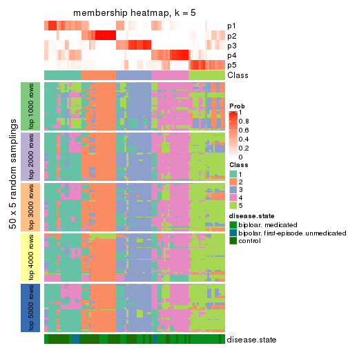
membership_heatmap(res, k = 6)
As soon as we have had the classes for columns, we can look for signatures which are significantly different between classes which can be candidate marks for certain classes. Following are the heatmaps for signatures.
Signature heatmaps where rows are scaled:
get_signatures(res, k = 2)
get_signatures(res, k = 3)
get_signatures(res, k = 4)
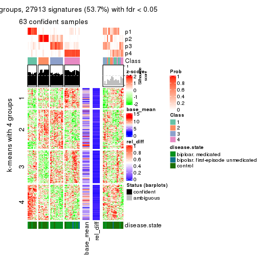
get_signatures(res, k = 5)
get_signatures(res, k = 6)
Signature heatmaps where rows are not scaled:
get_signatures(res, k = 2, scale_rows = FALSE)
get_signatures(res, k = 3, scale_rows = FALSE)
get_signatures(res, k = 4, scale_rows = FALSE)
get_signatures(res, k = 5, scale_rows = FALSE)
get_signatures(res, k = 6, scale_rows = FALSE)
Compare the overlap of signatures from different k:
compare_signatures(res)

get_signature() returns a data frame invisibly. TO get the list of signatures, the function
call should be assigned to a variable explicitly. In following code, if plot argument is set
to FALSE, no heatmap is plotted while only the differential analysis is performed.
# code only for demonstration
tb = get_signature(res, k = ..., plot = FALSE)
An example of the output of tb is:
#> which_row fdr mean_1 mean_2 scaled_mean_1 scaled_mean_2 km
#> 1 38 0.042760348 8.373488 9.131774 -0.5533452 0.5164555 1
#> 2 40 0.018707592 7.106213 8.469186 -0.6173731 0.5762149 1
#> 3 55 0.019134737 10.221463 11.207825 -0.6159697 0.5749050 1
#> 4 59 0.006059896 5.921854 7.869574 -0.6899429 0.6439467 1
#> 5 60 0.018055526 8.928898 10.211722 -0.6204761 0.5791110 1
#> 6 98 0.009384629 15.714769 14.887706 0.6635654 -0.6193277 2
...
The columns in tb are:
which_row: row indices corresponding to the input matrix.fdr: FDR for the differential test. mean_x: The mean value in group x.scaled_mean_x: The mean value in group x after rows are scaled.km: Row groups if k-means clustering is applied to rows.UMAP plot which shows how samples are separated.
dimension_reduction(res, k = 2, method = "UMAP")
dimension_reduction(res, k = 3, method = "UMAP")
dimension_reduction(res, k = 4, method = "UMAP")
dimension_reduction(res, k = 5, method = "UMAP")
dimension_reduction(res, k = 6, method = "UMAP")
Following heatmap shows how subgroups are split when increasing k:
collect_classes(res)
Test correlation between subgroups and known annotations. If the known annotation is numeric, one-way ANOVA test is applied, and if the known annotation is discrete, chi-squared contingency table test is applied.
test_to_known_factors(res)
#> n disease.state(p) k
#> SD:skmeans 83 1.84e-02 2
#> SD:skmeans 84 1.08e-02 3
#> SD:skmeans 63 3.86e-05 4
#> SD:skmeans 54 2.34e-04 5
#> SD:skmeans 60 4.21e-06 6
If matrix rows can be associated to genes, consider to use GO_Enrichment(res,
...) to perform function enrichment for the signature genes.
The object with results only for a single top-value method and a single partition method can be extracted as:
res = res_list["SD", "pam"]
# you can also extract it by
# res = res_list["SD:pam"]
A summary of res and all the functions that can be applied to it:
res
#> A 'ConsensusPartition' object with k = 2, 3, 4, 5, 6.
#> On a matrix with 51941 rows and 88 columns.
#> Top rows (1000, 2000, 3000, 4000, 5000) are extracted by 'SD' method.
#> Subgroups are detected by 'pam' method.
#> Performed in total 1250 partitions by row resampling.
#> Best k for subgroups seems to be 4.
#>
#> Following methods can be applied to this 'ConsensusPartition' object:
#> [1] "cola_report" "collect_classes" "collect_plots"
#> [4] "collect_stats" "colnames" "compare_signatures"
#> [7] "consensus_heatmap" "dimension_reduction" "functional_enrichment"
#> [10] "get_anno_col" "get_anno" "get_classes"
#> [13] "get_consensus" "get_matrix" "get_membership"
#> [16] "get_param" "get_signatures" "get_stats"
#> [19] "is_best_k" "is_stable_k" "membership_heatmap"
#> [22] "ncol" "nrow" "plot_ecdf"
#> [25] "rownames" "select_partition_number" "show"
#> [28] "suggest_best_k" "test_to_known_factors"
collect_plots() function collects all the plots made from res for all k (number of partitions)
into one single page to provide an easy and fast comparison between different k.
collect_plots(res)
The plots are:
k and the heatmap of
predicted classes for each k.k.k.k.All the plots in panels can be made by individual functions and they are plotted later in this section.
select_partition_number() produces several plots showing different
statistics for choosing “optimized” k. There are following statistics:
k;k, the area increased is defined as \(A_k - A_{k-1}\).The detailed explanations of these statistics can be found in the cola vignette.
Generally speaking, lower PAC score, higher mean silhouette score or higher
concordance corresponds to better partition. Rand index and Jaccard index
measure how similar the current partition is compared to partition with k-1.
If they are too similar, we won't accept k is better than k-1.
select_partition_number(res)
The numeric values for all these statistics can be obtained by get_stats().
get_stats(res)
#> k 1-PAC mean_silhouette concordance area_increased Rand Jaccard
#> 2 2 0.223 0.713 0.798 0.4447 0.561 0.561
#> 3 3 0.328 0.637 0.797 0.3159 0.766 0.617
#> 4 4 0.674 0.800 0.889 0.1684 0.858 0.679
#> 5 5 0.679 0.767 0.825 0.1145 0.904 0.703
#> 6 6 0.786 0.747 0.875 0.0617 0.919 0.673
suggest_best_k() suggests the best \(k\) based on these statistics. The rules are as follows:
NA.suggest_best_k(res)
#> [1] 4
Following shows the table of the partitions (You need to click the show/hide
code output link to see it). The membership matrix (columns with name p*)
is inferred by
clue::cl_consensus()
function with the SE method. Basically the value in the membership matrix
represents the probability to belong to a certain group. The finall class
label for an item is determined with the group with highest probability it
belongs to.
In get_classes() function, the entropy is calculated from the membership
matrix and the silhouette score is calculated from the consensus matrix.
cbind(get_classes(res, k = 2), get_membership(res, k = 2))
#> class entropy silhouette p1 p2
#> GSM1130404 1 0.8713 0.7210 0.708 0.292
#> GSM1130405 1 0.9460 0.6097 0.636 0.364
#> GSM1130408 2 0.0672 0.7706 0.008 0.992
#> GSM1130409 1 0.7745 0.7800 0.772 0.228
#> GSM1130410 1 0.7745 0.7800 0.772 0.228
#> GSM1130415 2 0.6623 0.7581 0.172 0.828
#> GSM1130416 2 0.5178 0.7813 0.116 0.884
#> GSM1130417 2 0.6531 0.7622 0.168 0.832
#> GSM1130418 2 0.6531 0.7622 0.168 0.832
#> GSM1130421 2 0.5059 0.7821 0.112 0.888
#> GSM1130422 2 1.0000 -0.3599 0.496 0.504
#> GSM1130423 1 0.0000 0.7923 1.000 0.000
#> GSM1130424 1 0.4815 0.7987 0.896 0.104
#> GSM1130425 1 0.0000 0.7923 1.000 0.000
#> GSM1130426 1 0.9896 0.4341 0.560 0.440
#> GSM1130427 1 0.9896 0.4341 0.560 0.440
#> GSM1130428 1 0.9358 0.6313 0.648 0.352
#> GSM1130429 1 0.8016 0.7696 0.756 0.244
#> GSM1130430 1 0.7745 0.7800 0.772 0.228
#> GSM1130431 1 0.7139 0.7953 0.804 0.196
#> GSM1130432 1 0.4431 0.7918 0.908 0.092
#> GSM1130433 1 0.6148 0.8038 0.848 0.152
#> GSM1130434 1 0.5946 0.7954 0.856 0.144
#> GSM1130435 1 0.5946 0.7954 0.856 0.144
#> GSM1130436 1 0.5629 0.7995 0.868 0.132
#> GSM1130437 1 0.6148 0.7960 0.848 0.152
#> GSM1130438 1 0.9248 0.5507 0.660 0.340
#> GSM1130439 1 0.9491 0.6616 0.632 0.368
#> GSM1130440 2 0.9661 -0.1594 0.392 0.608
#> GSM1130441 2 0.6887 0.7687 0.184 0.816
#> GSM1130442 2 0.5946 0.7511 0.144 0.856
#> GSM1130443 1 0.6531 0.6456 0.832 0.168
#> GSM1130444 1 0.6531 0.6456 0.832 0.168
#> GSM1130445 1 0.7883 0.6883 0.764 0.236
#> GSM1130476 2 0.4939 0.7669 0.108 0.892
#> GSM1130483 1 0.2423 0.7749 0.960 0.040
#> GSM1130484 1 0.6438 0.6524 0.836 0.164
#> GSM1130487 1 0.3584 0.8007 0.932 0.068
#> GSM1130488 1 0.4298 0.8071 0.912 0.088
#> GSM1130419 1 0.0000 0.7923 1.000 0.000
#> GSM1130420 1 0.0000 0.7923 1.000 0.000
#> GSM1130464 1 0.0672 0.7889 0.992 0.008
#> GSM1130465 1 0.0672 0.7889 0.992 0.008
#> GSM1130468 1 0.5946 0.7954 0.856 0.144
#> GSM1130469 1 0.5842 0.7973 0.860 0.140
#> GSM1130402 1 0.7745 0.7800 0.772 0.228
#> GSM1130403 1 0.7745 0.7800 0.772 0.228
#> GSM1130406 1 0.2236 0.7779 0.964 0.036
#> GSM1130407 1 0.2043 0.7800 0.968 0.032
#> GSM1130411 2 0.6531 0.7622 0.168 0.832
#> GSM1130412 2 0.6531 0.7622 0.168 0.832
#> GSM1130413 1 0.9896 0.4341 0.560 0.440
#> GSM1130414 2 0.6623 0.7581 0.172 0.828
#> GSM1130446 2 0.8861 0.7319 0.304 0.696
#> GSM1130447 1 0.6801 0.7949 0.820 0.180
#> GSM1130448 2 0.5946 0.7511 0.144 0.856
#> GSM1130449 1 0.4161 0.7926 0.916 0.084
#> GSM1130450 2 0.8955 0.7267 0.312 0.688
#> GSM1130451 1 0.8763 0.4820 0.704 0.296
#> GSM1130452 2 0.0672 0.7706 0.008 0.992
#> GSM1130453 2 0.5946 0.7511 0.144 0.856
#> GSM1130454 2 0.5946 0.7511 0.144 0.856
#> GSM1130455 2 0.3431 0.7801 0.064 0.936
#> GSM1130456 1 0.7745 0.7800 0.772 0.228
#> GSM1130457 2 0.6531 0.7622 0.168 0.832
#> GSM1130458 1 0.7883 0.7755 0.764 0.236
#> GSM1130459 2 0.3431 0.7801 0.064 0.936
#> GSM1130460 2 0.3584 0.7819 0.068 0.932
#> GSM1130461 2 0.5408 0.7605 0.124 0.876
#> GSM1130462 2 0.8861 0.7319 0.304 0.696
#> GSM1130463 1 0.4431 0.7901 0.908 0.092
#> GSM1130466 1 0.5946 0.7954 0.856 0.144
#> GSM1130467 2 0.6343 0.7664 0.160 0.840
#> GSM1130470 1 0.0000 0.7923 1.000 0.000
#> GSM1130471 1 0.0672 0.7956 0.992 0.008
#> GSM1130472 1 0.0672 0.7956 0.992 0.008
#> GSM1130473 1 0.3584 0.7970 0.932 0.068
#> GSM1130474 1 0.9129 0.4255 0.672 0.328
#> GSM1130475 2 0.5946 0.7511 0.144 0.856
#> GSM1130477 1 0.4431 0.8069 0.908 0.092
#> GSM1130478 1 0.4562 0.8132 0.904 0.096
#> GSM1130479 1 0.7674 0.7823 0.776 0.224
#> GSM1130480 1 0.9170 0.6534 0.668 0.332
#> GSM1130481 1 0.4161 0.7926 0.916 0.084
#> GSM1130482 1 0.9983 -0.0503 0.524 0.476
#> GSM1130485 1 0.6973 0.7978 0.812 0.188
#> GSM1130486 1 0.5408 0.8019 0.876 0.124
#> GSM1130489 1 0.4161 0.7926 0.916 0.084
cbind(get_classes(res, k = 3), get_membership(res, k = 3))
#> class entropy silhouette p1 p2 p3
#> GSM1130404 1 0.0237 0.763 0.996 0.004 0.000
#> GSM1130405 1 0.0237 0.763 0.996 0.004 0.000
#> GSM1130408 2 0.2200 0.730 0.056 0.940 0.004
#> GSM1130409 1 0.0237 0.763 0.996 0.004 0.000
#> GSM1130410 1 0.0661 0.762 0.988 0.004 0.008
#> GSM1130415 1 0.4121 0.656 0.832 0.168 0.000
#> GSM1130416 2 0.4504 0.741 0.196 0.804 0.000
#> GSM1130417 2 0.6095 0.553 0.392 0.608 0.000
#> GSM1130418 2 0.6008 0.586 0.372 0.628 0.000
#> GSM1130421 2 0.5404 0.729 0.256 0.740 0.004
#> GSM1130422 1 0.2680 0.734 0.924 0.068 0.008
#> GSM1130423 3 0.5291 0.670 0.268 0.000 0.732
#> GSM1130424 3 0.5431 0.658 0.284 0.000 0.716
#> GSM1130425 3 0.5291 0.670 0.268 0.000 0.732
#> GSM1130426 1 0.0237 0.763 0.996 0.004 0.000
#> GSM1130427 1 0.0237 0.763 0.996 0.004 0.000
#> GSM1130428 1 0.0237 0.763 0.996 0.004 0.000
#> GSM1130429 1 0.0237 0.763 0.996 0.004 0.000
#> GSM1130430 1 0.0237 0.763 0.996 0.004 0.000
#> GSM1130431 1 0.0237 0.763 0.996 0.004 0.000
#> GSM1130432 1 0.5507 0.664 0.808 0.056 0.136
#> GSM1130433 1 0.2866 0.744 0.916 0.076 0.008
#> GSM1130434 1 0.5285 0.603 0.752 0.004 0.244
#> GSM1130435 1 0.0000 0.762 1.000 0.000 0.000
#> GSM1130436 1 0.6143 0.564 0.684 0.012 0.304
#> GSM1130437 1 0.6875 0.578 0.700 0.056 0.244
#> GSM1130438 1 0.9746 0.190 0.432 0.240 0.328
#> GSM1130439 1 0.5986 0.562 0.736 0.240 0.024
#> GSM1130440 1 0.5903 0.567 0.744 0.232 0.024
#> GSM1130441 2 0.7012 0.697 0.308 0.652 0.040
#> GSM1130442 2 0.4228 0.698 0.008 0.844 0.148
#> GSM1130443 3 0.9601 -0.108 0.364 0.204 0.432
#> GSM1130444 3 0.9783 -0.123 0.360 0.236 0.404
#> GSM1130445 1 0.9446 0.301 0.500 0.228 0.272
#> GSM1130476 2 0.6148 0.635 0.076 0.776 0.148
#> GSM1130483 1 0.7097 0.606 0.720 0.108 0.172
#> GSM1130484 1 0.8649 0.395 0.596 0.232 0.172
#> GSM1130487 1 0.7916 0.513 0.620 0.088 0.292
#> GSM1130488 1 0.6143 0.564 0.684 0.012 0.304
#> GSM1130419 3 0.1031 0.637 0.024 0.000 0.976
#> GSM1130420 3 0.1031 0.637 0.024 0.000 0.976
#> GSM1130464 1 0.6678 0.343 0.512 0.008 0.480
#> GSM1130465 1 0.6763 0.420 0.552 0.012 0.436
#> GSM1130468 1 0.5285 0.605 0.752 0.004 0.244
#> GSM1130469 1 0.5285 0.605 0.752 0.004 0.244
#> GSM1130402 1 0.0424 0.762 0.992 0.000 0.008
#> GSM1130403 1 0.0237 0.763 0.996 0.004 0.000
#> GSM1130406 1 0.8465 0.396 0.528 0.096 0.376
#> GSM1130407 1 0.8202 0.474 0.580 0.092 0.328
#> GSM1130411 2 0.5016 0.723 0.240 0.760 0.000
#> GSM1130412 2 0.5016 0.723 0.240 0.760 0.000
#> GSM1130413 1 0.1031 0.755 0.976 0.024 0.000
#> GSM1130414 1 0.1411 0.751 0.964 0.036 0.000
#> GSM1130446 2 0.8473 0.690 0.208 0.616 0.176
#> GSM1130447 3 0.6126 0.586 0.352 0.004 0.644
#> GSM1130448 2 0.4002 0.684 0.000 0.840 0.160
#> GSM1130449 1 0.4912 0.648 0.796 0.008 0.196
#> GSM1130450 2 0.8489 0.671 0.268 0.596 0.136
#> GSM1130451 1 0.6044 0.611 0.772 0.056 0.172
#> GSM1130452 2 0.2066 0.732 0.060 0.940 0.000
#> GSM1130453 2 0.4413 0.692 0.008 0.832 0.160
#> GSM1130454 2 0.4413 0.692 0.008 0.832 0.160
#> GSM1130455 2 0.5571 0.726 0.056 0.804 0.140
#> GSM1130456 1 0.0237 0.763 0.996 0.004 0.000
#> GSM1130457 2 0.5988 0.643 0.368 0.632 0.000
#> GSM1130458 1 0.0237 0.763 0.996 0.004 0.000
#> GSM1130459 2 0.2356 0.734 0.072 0.928 0.000
#> GSM1130460 2 0.2448 0.735 0.076 0.924 0.000
#> GSM1130461 2 0.3816 0.691 0.000 0.852 0.148
#> GSM1130462 2 0.8334 0.688 0.248 0.616 0.136
#> GSM1130463 1 0.4351 0.656 0.828 0.004 0.168
#> GSM1130466 3 0.4002 0.576 0.160 0.000 0.840
#> GSM1130467 2 0.4931 0.728 0.232 0.768 0.000
#> GSM1130470 3 0.5291 0.670 0.268 0.000 0.732
#> GSM1130471 3 0.1031 0.637 0.024 0.000 0.976
#> GSM1130472 3 0.1031 0.637 0.024 0.000 0.976
#> GSM1130473 3 0.5291 0.670 0.268 0.000 0.732
#> GSM1130474 1 0.7944 0.496 0.656 0.132 0.212
#> GSM1130475 2 0.5407 0.714 0.040 0.804 0.156
#> GSM1130477 1 0.2749 0.739 0.924 0.012 0.064
#> GSM1130478 1 0.2651 0.740 0.928 0.012 0.060
#> GSM1130479 1 0.2796 0.728 0.908 0.000 0.092
#> GSM1130480 1 0.5939 0.568 0.748 0.224 0.028
#> GSM1130481 1 0.4504 0.652 0.804 0.000 0.196
#> GSM1130482 1 0.2496 0.743 0.928 0.004 0.068
#> GSM1130485 1 0.0829 0.761 0.984 0.004 0.012
#> GSM1130486 1 0.5529 0.578 0.704 0.000 0.296
#> GSM1130489 1 0.4504 0.652 0.804 0.000 0.196
cbind(get_classes(res, k = 4), get_membership(res, k = 4))
#> class entropy silhouette p1 p2 p3 p4
#> GSM1130404 1 0.1474 0.900 0.948 0.052 0.000 0.000
#> GSM1130405 1 0.1557 0.899 0.944 0.056 0.000 0.000
#> GSM1130408 2 0.3837 0.627 0.000 0.776 0.224 0.000
#> GSM1130409 1 0.1389 0.901 0.952 0.048 0.000 0.000
#> GSM1130410 1 0.1302 0.901 0.956 0.044 0.000 0.000
#> GSM1130415 1 0.4992 0.263 0.524 0.476 0.000 0.000
#> GSM1130416 2 0.0000 0.733 0.000 1.000 0.000 0.000
#> GSM1130417 2 0.4250 0.501 0.276 0.724 0.000 0.000
#> GSM1130418 2 0.4193 0.517 0.268 0.732 0.000 0.000
#> GSM1130421 2 0.3894 0.717 0.068 0.844 0.088 0.000
#> GSM1130422 1 0.5496 0.661 0.704 0.064 0.232 0.000
#> GSM1130423 4 0.0000 0.986 0.000 0.000 0.000 1.000
#> GSM1130424 4 0.0000 0.986 0.000 0.000 0.000 1.000
#> GSM1130425 4 0.0000 0.986 0.000 0.000 0.000 1.000
#> GSM1130426 1 0.1716 0.896 0.936 0.064 0.000 0.000
#> GSM1130427 1 0.1716 0.896 0.936 0.064 0.000 0.000
#> GSM1130428 1 0.1716 0.896 0.936 0.064 0.000 0.000
#> GSM1130429 1 0.1661 0.901 0.944 0.052 0.000 0.004
#> GSM1130430 1 0.1302 0.901 0.956 0.044 0.000 0.000
#> GSM1130431 1 0.1302 0.901 0.956 0.044 0.000 0.000
#> GSM1130432 1 0.3215 0.872 0.888 0.016 0.076 0.020
#> GSM1130433 1 0.3208 0.806 0.848 0.004 0.148 0.000
#> GSM1130434 1 0.0000 0.898 1.000 0.000 0.000 0.000
#> GSM1130435 1 0.0188 0.900 0.996 0.004 0.000 0.000
#> GSM1130436 1 0.0000 0.898 1.000 0.000 0.000 0.000
#> GSM1130437 1 0.0188 0.898 0.996 0.000 0.004 0.000
#> GSM1130438 3 0.1022 0.877 0.032 0.000 0.968 0.000
#> GSM1130439 3 0.1576 0.870 0.048 0.004 0.948 0.000
#> GSM1130440 3 0.1576 0.870 0.048 0.004 0.948 0.000
#> GSM1130441 2 0.3668 0.717 0.116 0.852 0.028 0.004
#> GSM1130442 2 0.5263 0.367 0.000 0.544 0.448 0.008
#> GSM1130443 3 0.2742 0.833 0.024 0.000 0.900 0.076
#> GSM1130444 3 0.0707 0.873 0.000 0.000 0.980 0.020
#> GSM1130445 3 0.1557 0.870 0.056 0.000 0.944 0.000
#> GSM1130476 3 0.0188 0.876 0.000 0.004 0.996 0.000
#> GSM1130483 3 0.3280 0.781 0.124 0.000 0.860 0.016
#> GSM1130484 3 0.1059 0.875 0.012 0.000 0.972 0.016
#> GSM1130487 3 0.5614 0.568 0.304 0.000 0.652 0.044
#> GSM1130488 1 0.0524 0.898 0.988 0.000 0.004 0.008
#> GSM1130419 4 0.0592 0.977 0.016 0.000 0.000 0.984
#> GSM1130420 4 0.0592 0.977 0.016 0.000 0.000 0.984
#> GSM1130464 1 0.4127 0.798 0.824 0.000 0.052 0.124
#> GSM1130465 1 0.2089 0.873 0.932 0.000 0.048 0.020
#> GSM1130468 1 0.0336 0.900 0.992 0.008 0.000 0.000
#> GSM1130469 1 0.0524 0.900 0.988 0.004 0.000 0.008
#> GSM1130402 1 0.0707 0.902 0.980 0.020 0.000 0.000
#> GSM1130403 1 0.1302 0.901 0.956 0.044 0.000 0.000
#> GSM1130406 3 0.4883 0.559 0.288 0.000 0.696 0.016
#> GSM1130407 1 0.3881 0.792 0.812 0.000 0.172 0.016
#> GSM1130411 2 0.0000 0.733 0.000 1.000 0.000 0.000
#> GSM1130412 2 0.0000 0.733 0.000 1.000 0.000 0.000
#> GSM1130413 1 0.3873 0.721 0.772 0.228 0.000 0.000
#> GSM1130414 1 0.4250 0.651 0.724 0.276 0.000 0.000
#> GSM1130446 2 0.6987 0.586 0.244 0.636 0.052 0.068
#> GSM1130447 4 0.1677 0.929 0.012 0.040 0.000 0.948
#> GSM1130448 3 0.0188 0.877 0.000 0.000 0.996 0.004
#> GSM1130449 1 0.3156 0.868 0.884 0.000 0.048 0.068
#> GSM1130450 2 0.6563 0.488 0.332 0.596 0.048 0.024
#> GSM1130451 1 0.5401 0.813 0.784 0.060 0.052 0.104
#> GSM1130452 2 0.1792 0.724 0.000 0.932 0.068 0.000
#> GSM1130453 3 0.0336 0.876 0.000 0.000 0.992 0.008
#> GSM1130454 3 0.0188 0.877 0.000 0.000 0.996 0.004
#> GSM1130455 2 0.4855 0.532 0.000 0.644 0.352 0.004
#> GSM1130456 1 0.1635 0.902 0.948 0.044 0.000 0.008
#> GSM1130457 2 0.3569 0.681 0.196 0.804 0.000 0.000
#> GSM1130458 1 0.1389 0.901 0.952 0.048 0.000 0.000
#> GSM1130459 2 0.0000 0.733 0.000 1.000 0.000 0.000
#> GSM1130460 2 0.0000 0.733 0.000 1.000 0.000 0.000
#> GSM1130461 2 0.4998 0.285 0.000 0.512 0.488 0.000
#> GSM1130462 2 0.6600 0.502 0.324 0.600 0.052 0.024
#> GSM1130463 1 0.5144 0.825 0.800 0.056 0.052 0.092
#> GSM1130466 4 0.0707 0.964 0.020 0.000 0.000 0.980
#> GSM1130467 2 0.0000 0.733 0.000 1.000 0.000 0.000
#> GSM1130470 4 0.0000 0.986 0.000 0.000 0.000 1.000
#> GSM1130471 4 0.0000 0.986 0.000 0.000 0.000 1.000
#> GSM1130472 4 0.0000 0.986 0.000 0.000 0.000 1.000
#> GSM1130473 4 0.0000 0.986 0.000 0.000 0.000 1.000
#> GSM1130474 1 0.8328 0.325 0.532 0.176 0.228 0.064
#> GSM1130475 2 0.5535 0.406 0.000 0.560 0.420 0.020
#> GSM1130477 1 0.1576 0.895 0.948 0.000 0.004 0.048
#> GSM1130478 1 0.1576 0.895 0.948 0.000 0.004 0.048
#> GSM1130479 1 0.2530 0.862 0.888 0.000 0.000 0.112
#> GSM1130480 3 0.1557 0.870 0.056 0.000 0.944 0.000
#> GSM1130481 1 0.3004 0.871 0.892 0.000 0.048 0.060
#> GSM1130482 1 0.1732 0.898 0.948 0.008 0.004 0.040
#> GSM1130485 1 0.1452 0.903 0.956 0.036 0.000 0.008
#> GSM1130486 1 0.0000 0.898 1.000 0.000 0.000 0.000
#> GSM1130489 1 0.3081 0.869 0.888 0.000 0.048 0.064
cbind(get_classes(res, k = 5), get_membership(res, k = 5))
#> class entropy silhouette p1 p2 p3 p4 p5
#> GSM1130404 1 0.0162 0.8249 0.996 0.000 0.004 0.000 0.000
#> GSM1130405 1 0.0000 0.8254 1.000 0.000 0.000 0.000 0.000
#> GSM1130408 2 0.2674 0.7037 0.004 0.856 0.140 0.000 0.000
#> GSM1130409 1 0.0000 0.8254 1.000 0.000 0.000 0.000 0.000
#> GSM1130410 1 0.0000 0.8254 1.000 0.000 0.000 0.000 0.000
#> GSM1130415 1 0.4455 0.3501 0.588 0.404 0.000 0.008 0.000
#> GSM1130416 2 0.1697 0.7452 0.060 0.932 0.000 0.008 0.000
#> GSM1130417 2 0.4218 0.4194 0.332 0.660 0.000 0.008 0.000
#> GSM1130418 2 0.4201 0.4284 0.328 0.664 0.000 0.008 0.000
#> GSM1130421 2 0.5004 0.7285 0.096 0.748 0.128 0.028 0.000
#> GSM1130422 1 0.3039 0.6805 0.808 0.000 0.192 0.000 0.000
#> GSM1130423 5 0.0000 0.9919 0.000 0.000 0.000 0.000 1.000
#> GSM1130424 5 0.0000 0.9919 0.000 0.000 0.000 0.000 1.000
#> GSM1130425 5 0.0000 0.9919 0.000 0.000 0.000 0.000 1.000
#> GSM1130426 1 0.0000 0.8254 1.000 0.000 0.000 0.000 0.000
#> GSM1130427 1 0.0000 0.8254 1.000 0.000 0.000 0.000 0.000
#> GSM1130428 1 0.0000 0.8254 1.000 0.000 0.000 0.000 0.000
#> GSM1130429 1 0.0290 0.8241 0.992 0.000 0.000 0.000 0.008
#> GSM1130430 1 0.0000 0.8254 1.000 0.000 0.000 0.000 0.000
#> GSM1130431 1 0.0000 0.8254 1.000 0.000 0.000 0.000 0.000
#> GSM1130432 1 0.4376 0.6912 0.768 0.048 0.012 0.172 0.000
#> GSM1130433 1 0.2611 0.7754 0.904 0.040 0.028 0.028 0.000
#> GSM1130434 4 0.4101 0.8437 0.372 0.000 0.000 0.628 0.000
#> GSM1130435 4 0.4101 0.8437 0.372 0.000 0.000 0.628 0.000
#> GSM1130436 4 0.3999 0.8433 0.344 0.000 0.000 0.656 0.000
#> GSM1130437 4 0.3999 0.8433 0.344 0.000 0.000 0.656 0.000
#> GSM1130438 3 0.0162 0.9109 0.000 0.000 0.996 0.004 0.000
#> GSM1130439 3 0.0510 0.9120 0.016 0.000 0.984 0.000 0.000
#> GSM1130440 3 0.0510 0.9120 0.016 0.000 0.984 0.000 0.000
#> GSM1130441 2 0.5530 0.7070 0.132 0.640 0.000 0.228 0.000
#> GSM1130442 2 0.6218 0.5717 0.004 0.552 0.284 0.160 0.000
#> GSM1130443 3 0.3210 0.8347 0.000 0.008 0.832 0.152 0.008
#> GSM1130444 3 0.2886 0.8421 0.000 0.008 0.844 0.148 0.000
#> GSM1130445 3 0.0609 0.9102 0.020 0.000 0.980 0.000 0.000
#> GSM1130476 3 0.0000 0.9113 0.000 0.000 1.000 0.000 0.000
#> GSM1130483 3 0.5000 0.7486 0.048 0.048 0.744 0.160 0.000
#> GSM1130484 3 0.3752 0.8155 0.000 0.048 0.804 0.148 0.000
#> GSM1130487 4 0.5275 0.5975 0.112 0.000 0.200 0.684 0.004
#> GSM1130488 4 0.4384 0.8367 0.324 0.000 0.016 0.660 0.000
#> GSM1130419 5 0.0000 0.9919 0.000 0.000 0.000 0.000 1.000
#> GSM1130420 5 0.0000 0.9919 0.000 0.000 0.000 0.000 1.000
#> GSM1130464 4 0.4033 0.7501 0.212 0.004 0.000 0.760 0.024
#> GSM1130465 4 0.3768 0.7549 0.228 0.008 0.000 0.760 0.004
#> GSM1130468 4 0.4126 0.8378 0.380 0.000 0.000 0.620 0.000
#> GSM1130469 4 0.4264 0.8408 0.376 0.000 0.000 0.620 0.004
#> GSM1130402 1 0.0794 0.8056 0.972 0.000 0.000 0.028 0.000
#> GSM1130403 1 0.0000 0.8254 1.000 0.000 0.000 0.000 0.000
#> GSM1130406 4 0.5214 0.3331 0.024 0.048 0.244 0.684 0.000
#> GSM1130407 1 0.5486 0.6352 0.712 0.048 0.080 0.160 0.000
#> GSM1130411 2 0.1697 0.7452 0.060 0.932 0.000 0.008 0.000
#> GSM1130412 2 0.1697 0.7452 0.060 0.932 0.000 0.008 0.000
#> GSM1130413 1 0.2574 0.7439 0.876 0.112 0.000 0.012 0.000
#> GSM1130414 1 0.3282 0.6653 0.804 0.188 0.000 0.008 0.000
#> GSM1130446 2 0.5892 0.6595 0.104 0.560 0.004 0.332 0.000
#> GSM1130447 5 0.2069 0.9135 0.012 0.000 0.000 0.076 0.912
#> GSM1130448 3 0.0510 0.9127 0.000 0.000 0.984 0.016 0.000
#> GSM1130449 1 0.5065 0.6056 0.676 0.048 0.000 0.264 0.012
#> GSM1130450 2 0.5826 0.6568 0.112 0.556 0.000 0.332 0.000
#> GSM1130451 1 0.4574 0.5563 0.652 0.012 0.000 0.328 0.008
#> GSM1130452 2 0.4499 0.7462 0.048 0.796 0.088 0.068 0.000
#> GSM1130453 3 0.1430 0.9023 0.000 0.004 0.944 0.052 0.000
#> GSM1130454 3 0.0510 0.9127 0.000 0.000 0.984 0.016 0.000
#> GSM1130455 2 0.6942 0.6503 0.048 0.552 0.208 0.192 0.000
#> GSM1130456 1 0.0000 0.8254 1.000 0.000 0.000 0.000 0.000
#> GSM1130457 2 0.5140 0.6155 0.252 0.664 0.000 0.084 0.000
#> GSM1130458 1 0.0000 0.8254 1.000 0.000 0.000 0.000 0.000
#> GSM1130459 2 0.1197 0.7479 0.048 0.952 0.000 0.000 0.000
#> GSM1130460 2 0.1701 0.7515 0.048 0.936 0.000 0.016 0.000
#> GSM1130461 2 0.4302 0.2987 0.000 0.520 0.480 0.000 0.000
#> GSM1130462 2 0.5892 0.6595 0.104 0.560 0.004 0.332 0.000
#> GSM1130463 1 0.4822 0.5403 0.636 0.028 0.000 0.332 0.004
#> GSM1130466 5 0.0000 0.9919 0.000 0.000 0.000 0.000 1.000
#> GSM1130467 2 0.2067 0.7533 0.048 0.920 0.000 0.032 0.000
#> GSM1130470 5 0.0000 0.9919 0.000 0.000 0.000 0.000 1.000
#> GSM1130471 5 0.0000 0.9919 0.000 0.000 0.000 0.000 1.000
#> GSM1130472 5 0.0000 0.9919 0.000 0.000 0.000 0.000 1.000
#> GSM1130473 5 0.0000 0.9919 0.000 0.000 0.000 0.000 1.000
#> GSM1130474 1 0.8392 -0.0566 0.372 0.164 0.120 0.328 0.016
#> GSM1130475 2 0.5892 0.6197 0.004 0.560 0.104 0.332 0.000
#> GSM1130477 1 0.3096 0.7702 0.888 0.040 0.016 0.036 0.020
#> GSM1130478 1 0.3096 0.7702 0.888 0.040 0.016 0.036 0.020
#> GSM1130479 1 0.1768 0.7822 0.924 0.000 0.000 0.004 0.072
#> GSM1130480 3 0.0510 0.9120 0.016 0.000 0.984 0.000 0.000
#> GSM1130481 1 0.3234 0.7308 0.836 0.008 0.000 0.144 0.012
#> GSM1130482 1 0.1012 0.8148 0.968 0.020 0.000 0.000 0.012
#> GSM1130485 1 0.0162 0.8241 0.996 0.000 0.000 0.004 0.000
#> GSM1130486 4 0.4101 0.8437 0.372 0.000 0.000 0.628 0.000
#> GSM1130489 1 0.3336 0.7290 0.832 0.008 0.000 0.144 0.016
cbind(get_classes(res, k = 6), get_membership(res, k = 6))
#> class entropy silhouette p1 p2 p3 p4 p5 p6
#> GSM1130404 1 0.0937 0.8779 0.960 0.000 0.000 0.040 0.000 0.000
#> GSM1130405 1 0.0000 0.8959 1.000 0.000 0.000 0.000 0.000 0.000
#> GSM1130408 2 0.5817 0.2277 0.000 0.476 0.204 0.000 0.320 0.000
#> GSM1130409 1 0.0000 0.8959 1.000 0.000 0.000 0.000 0.000 0.000
#> GSM1130410 1 0.0000 0.8959 1.000 0.000 0.000 0.000 0.000 0.000
#> GSM1130415 2 0.0146 0.7747 0.004 0.996 0.000 0.000 0.000 0.000
#> GSM1130416 2 0.0146 0.7747 0.004 0.996 0.000 0.000 0.000 0.000
#> GSM1130417 2 0.0146 0.7747 0.004 0.996 0.000 0.000 0.000 0.000
#> GSM1130418 2 0.0146 0.7747 0.004 0.996 0.000 0.000 0.000 0.000
#> GSM1130421 2 0.6358 0.0615 0.048 0.424 0.128 0.000 0.400 0.000
#> GSM1130422 1 0.4954 0.5709 0.688 0.032 0.204 0.000 0.076 0.000
#> GSM1130423 6 0.0000 0.9601 0.000 0.000 0.000 0.000 0.000 1.000
#> GSM1130424 6 0.0000 0.9601 0.000 0.000 0.000 0.000 0.000 1.000
#> GSM1130425 6 0.0000 0.9601 0.000 0.000 0.000 0.000 0.000 1.000
#> GSM1130426 1 0.0000 0.8959 1.000 0.000 0.000 0.000 0.000 0.000
#> GSM1130427 1 0.0000 0.8959 1.000 0.000 0.000 0.000 0.000 0.000
#> GSM1130428 1 0.0000 0.8959 1.000 0.000 0.000 0.000 0.000 0.000
#> GSM1130429 1 0.0146 0.8951 0.996 0.000 0.000 0.000 0.000 0.004
#> GSM1130430 1 0.0000 0.8959 1.000 0.000 0.000 0.000 0.000 0.000
#> GSM1130431 1 0.0000 0.8959 1.000 0.000 0.000 0.000 0.000 0.000
#> GSM1130432 1 0.1478 0.8747 0.944 0.004 0.000 0.020 0.032 0.000
#> GSM1130433 1 0.1768 0.8643 0.932 0.004 0.008 0.044 0.012 0.000
#> GSM1130434 4 0.3390 0.8261 0.296 0.000 0.000 0.704 0.000 0.000
#> GSM1130435 4 0.3428 0.8163 0.304 0.000 0.000 0.696 0.000 0.000
#> GSM1130436 4 0.2912 0.8496 0.216 0.000 0.000 0.784 0.000 0.000
#> GSM1130437 4 0.2854 0.8482 0.208 0.000 0.000 0.792 0.000 0.000
#> GSM1130438 3 0.0000 0.9012 0.000 0.000 1.000 0.000 0.000 0.000
#> GSM1130439 3 0.0000 0.9012 0.000 0.000 1.000 0.000 0.000 0.000
#> GSM1130440 3 0.0000 0.9012 0.000 0.000 1.000 0.000 0.000 0.000
#> GSM1130441 5 0.0790 0.6777 0.032 0.000 0.000 0.000 0.968 0.000
#> GSM1130442 5 0.3607 0.4228 0.000 0.000 0.348 0.000 0.652 0.000
#> GSM1130443 3 0.2894 0.8099 0.000 0.000 0.864 0.028 0.088 0.020
#> GSM1130444 3 0.0547 0.8904 0.000 0.000 0.980 0.000 0.020 0.000
#> GSM1130445 3 0.0000 0.9012 0.000 0.000 1.000 0.000 0.000 0.000
#> GSM1130476 3 0.0000 0.9012 0.000 0.000 1.000 0.000 0.000 0.000
#> GSM1130483 3 0.4726 0.6270 0.028 0.004 0.656 0.288 0.024 0.000
#> GSM1130484 3 0.3977 0.6604 0.000 0.004 0.692 0.284 0.020 0.000
#> GSM1130487 4 0.0000 0.6780 0.000 0.000 0.000 1.000 0.000 0.000
#> GSM1130488 4 0.0000 0.6780 0.000 0.000 0.000 1.000 0.000 0.000
#> GSM1130419 6 0.0260 0.9547 0.000 0.000 0.000 0.008 0.000 0.992
#> GSM1130420 6 0.0632 0.9413 0.000 0.000 0.000 0.024 0.000 0.976
#> GSM1130464 4 0.3893 0.8292 0.172 0.000 0.000 0.772 0.016 0.040
#> GSM1130465 4 0.3284 0.8434 0.196 0.000 0.000 0.784 0.020 0.000
#> GSM1130468 4 0.3351 0.8349 0.288 0.000 0.000 0.712 0.000 0.000
#> GSM1130469 4 0.3629 0.8379 0.276 0.000 0.000 0.712 0.000 0.012
#> GSM1130402 1 0.0363 0.8904 0.988 0.000 0.000 0.012 0.000 0.000
#> GSM1130403 1 0.0000 0.8959 1.000 0.000 0.000 0.000 0.000 0.000
#> GSM1130406 4 0.2516 0.6034 0.004 0.004 0.084 0.884 0.024 0.000
#> GSM1130407 1 0.4654 0.5815 0.660 0.004 0.024 0.288 0.024 0.000
#> GSM1130411 2 0.0146 0.7747 0.004 0.996 0.000 0.000 0.000 0.000
#> GSM1130412 2 0.0146 0.7747 0.004 0.996 0.000 0.000 0.000 0.000
#> GSM1130413 1 0.3528 0.5457 0.700 0.296 0.000 0.004 0.000 0.000
#> GSM1130414 2 0.3023 0.5073 0.232 0.768 0.000 0.000 0.000 0.000
#> GSM1130446 5 0.0363 0.6809 0.012 0.000 0.000 0.000 0.988 0.000
#> GSM1130447 6 0.3563 0.4968 0.000 0.000 0.000 0.000 0.336 0.664
#> GSM1130448 3 0.0000 0.9012 0.000 0.000 1.000 0.000 0.000 0.000
#> GSM1130449 1 0.3607 0.4880 0.652 0.000 0.000 0.000 0.348 0.000
#> GSM1130450 5 0.0363 0.6809 0.012 0.000 0.000 0.000 0.988 0.000
#> GSM1130451 5 0.3714 0.3876 0.340 0.000 0.000 0.000 0.656 0.004
#> GSM1130452 5 0.5604 0.1888 0.020 0.332 0.100 0.000 0.548 0.000
#> GSM1130453 3 0.0260 0.8977 0.000 0.000 0.992 0.000 0.008 0.000
#> GSM1130454 3 0.0000 0.9012 0.000 0.000 1.000 0.000 0.000 0.000
#> GSM1130455 5 0.2250 0.6486 0.020 0.000 0.092 0.000 0.888 0.000
#> GSM1130456 1 0.0000 0.8959 1.000 0.000 0.000 0.000 0.000 0.000
#> GSM1130457 5 0.4764 0.4327 0.232 0.108 0.000 0.000 0.660 0.000
#> GSM1130458 1 0.0000 0.8959 1.000 0.000 0.000 0.000 0.000 0.000
#> GSM1130459 2 0.3578 0.3898 0.000 0.660 0.000 0.000 0.340 0.000
#> GSM1130460 5 0.4072 0.0897 0.008 0.448 0.000 0.000 0.544 0.000
#> GSM1130461 3 0.4711 0.3452 0.000 0.000 0.608 0.064 0.328 0.000
#> GSM1130462 5 0.0363 0.6809 0.012 0.000 0.000 0.000 0.988 0.000
#> GSM1130463 5 0.3563 0.3983 0.336 0.000 0.000 0.000 0.664 0.000
#> GSM1130466 6 0.0000 0.9601 0.000 0.000 0.000 0.000 0.000 1.000
#> GSM1130467 5 0.4084 0.2140 0.012 0.400 0.000 0.000 0.588 0.000
#> GSM1130470 6 0.0000 0.9601 0.000 0.000 0.000 0.000 0.000 1.000
#> GSM1130471 6 0.0000 0.9601 0.000 0.000 0.000 0.000 0.000 1.000
#> GSM1130472 6 0.0000 0.9601 0.000 0.000 0.000 0.000 0.000 1.000
#> GSM1130473 6 0.0000 0.9601 0.000 0.000 0.000 0.000 0.000 1.000
#> GSM1130474 5 0.3439 0.6041 0.120 0.000 0.072 0.000 0.808 0.000
#> GSM1130475 5 0.0458 0.6757 0.000 0.000 0.016 0.000 0.984 0.000
#> GSM1130477 1 0.3925 0.6277 0.700 0.004 0.000 0.280 0.012 0.004
#> GSM1130478 1 0.3925 0.6277 0.700 0.004 0.000 0.280 0.012 0.004
#> GSM1130479 1 0.1285 0.8655 0.944 0.000 0.000 0.004 0.000 0.052
#> GSM1130480 3 0.0000 0.9012 0.000 0.000 1.000 0.000 0.000 0.000
#> GSM1130481 1 0.1075 0.8725 0.952 0.000 0.000 0.000 0.048 0.000
#> GSM1130482 1 0.0458 0.8913 0.984 0.000 0.000 0.000 0.016 0.000
#> GSM1130485 1 0.0146 0.8949 0.996 0.000 0.000 0.004 0.000 0.000
#> GSM1130486 4 0.3309 0.8373 0.280 0.000 0.000 0.720 0.000 0.000
#> GSM1130489 1 0.0547 0.8882 0.980 0.000 0.000 0.000 0.020 0.000
Heatmaps for the consensus matrix. It visualizes the probability of two samples to be in a same group.
consensus_heatmap(res, k = 2)
consensus_heatmap(res, k = 3)
consensus_heatmap(res, k = 4)
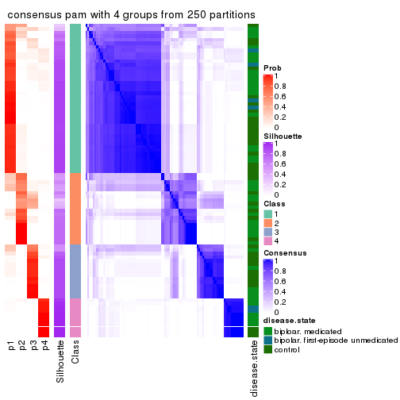
consensus_heatmap(res, k = 5)
consensus_heatmap(res, k = 6)
Heatmaps for the membership of samples in all partitions to see how consistent they are:
membership_heatmap(res, k = 2)
membership_heatmap(res, k = 3)
membership_heatmap(res, k = 4)
membership_heatmap(res, k = 5)
membership_heatmap(res, k = 6)
As soon as we have had the classes for columns, we can look for signatures which are significantly different between classes which can be candidate marks for certain classes. Following are the heatmaps for signatures.
Signature heatmaps where rows are scaled:
get_signatures(res, k = 2)
get_signatures(res, k = 3)
get_signatures(res, k = 4)
get_signatures(res, k = 5)
get_signatures(res, k = 6)

Signature heatmaps where rows are not scaled:
get_signatures(res, k = 2, scale_rows = FALSE)
get_signatures(res, k = 3, scale_rows = FALSE)
get_signatures(res, k = 4, scale_rows = FALSE)
get_signatures(res, k = 5, scale_rows = FALSE)
get_signatures(res, k = 6, scale_rows = FALSE)
Compare the overlap of signatures from different k:
compare_signatures(res)
get_signature() returns a data frame invisibly. TO get the list of signatures, the function
call should be assigned to a variable explicitly. In following code, if plot argument is set
to FALSE, no heatmap is plotted while only the differential analysis is performed.
# code only for demonstration
tb = get_signature(res, k = ..., plot = FALSE)
An example of the output of tb is:
#> which_row fdr mean_1 mean_2 scaled_mean_1 scaled_mean_2 km
#> 1 38 0.042760348 8.373488 9.131774 -0.5533452 0.5164555 1
#> 2 40 0.018707592 7.106213 8.469186 -0.6173731 0.5762149 1
#> 3 55 0.019134737 10.221463 11.207825 -0.6159697 0.5749050 1
#> 4 59 0.006059896 5.921854 7.869574 -0.6899429 0.6439467 1
#> 5 60 0.018055526 8.928898 10.211722 -0.6204761 0.5791110 1
#> 6 98 0.009384629 15.714769 14.887706 0.6635654 -0.6193277 2
...
The columns in tb are:
which_row: row indices corresponding to the input matrix.fdr: FDR for the differential test. mean_x: The mean value in group x.scaled_mean_x: The mean value in group x after rows are scaled.km: Row groups if k-means clustering is applied to rows.UMAP plot which shows how samples are separated.
dimension_reduction(res, k = 2, method = "UMAP")
dimension_reduction(res, k = 3, method = "UMAP")
dimension_reduction(res, k = 4, method = "UMAP")
dimension_reduction(res, k = 5, method = "UMAP")
dimension_reduction(res, k = 6, method = "UMAP")
Following heatmap shows how subgroups are split when increasing k:
collect_classes(res)
Test correlation between subgroups and known annotations. If the known annotation is numeric, one-way ANOVA test is applied, and if the known annotation is discrete, chi-squared contingency table test is applied.
test_to_known_factors(res)
#> n disease.state(p) k
#> SD:pam 80 0.054752 2
#> SD:pam 78 0.061166 3
#> SD:pam 82 0.202463 4
#> SD:pam 82 0.000308 5
#> SD:pam 75 0.005358 6
If matrix rows can be associated to genes, consider to use GO_Enrichment(res,
...) to perform function enrichment for the signature genes.
The object with results only for a single top-value method and a single partition method can be extracted as:
res = res_list["SD", "mclust"]
# you can also extract it by
# res = res_list["SD:mclust"]
A summary of res and all the functions that can be applied to it:
res
#> A 'ConsensusPartition' object with k = 2, 3, 4, 5, 6.
#> On a matrix with 51941 rows and 88 columns.
#> Top rows (1000, 2000, 3000, 4000, 5000) are extracted by 'SD' method.
#> Subgroups are detected by 'mclust' method.
#> Performed in total 1250 partitions by row resampling.
#> Best k for subgroups seems to be 2.
#>
#> Following methods can be applied to this 'ConsensusPartition' object:
#> [1] "cola_report" "collect_classes" "collect_plots"
#> [4] "collect_stats" "colnames" "compare_signatures"
#> [7] "consensus_heatmap" "dimension_reduction" "functional_enrichment"
#> [10] "get_anno_col" "get_anno" "get_classes"
#> [13] "get_consensus" "get_matrix" "get_membership"
#> [16] "get_param" "get_signatures" "get_stats"
#> [19] "is_best_k" "is_stable_k" "membership_heatmap"
#> [22] "ncol" "nrow" "plot_ecdf"
#> [25] "rownames" "select_partition_number" "show"
#> [28] "suggest_best_k" "test_to_known_factors"
collect_plots() function collects all the plots made from res for all k (number of partitions)
into one single page to provide an easy and fast comparison between different k.
collect_plots(res)
The plots are:
k and the heatmap of
predicted classes for each k.k.k.k.All the plots in panels can be made by individual functions and they are plotted later in this section.
select_partition_number() produces several plots showing different
statistics for choosing “optimized” k. There are following statistics:
k;k, the area increased is defined as \(A_k - A_{k-1}\).The detailed explanations of these statistics can be found in the cola vignette.
Generally speaking, lower PAC score, higher mean silhouette score or higher
concordance corresponds to better partition. Rand index and Jaccard index
measure how similar the current partition is compared to partition with k-1.
If they are too similar, we won't accept k is better than k-1.
select_partition_number(res)
The numeric values for all these statistics can be obtained by get_stats().
get_stats(res)
#> k 1-PAC mean_silhouette concordance area_increased Rand Jaccard
#> 2 2 0.276 0.799 0.838 0.4181 0.495 0.495
#> 3 3 0.253 0.684 0.791 0.3843 0.852 0.715
#> 4 4 0.190 0.507 0.660 0.1305 0.746 0.453
#> 5 5 0.356 0.508 0.644 0.0955 0.870 0.588
#> 6 6 0.507 0.399 0.640 0.0758 0.818 0.411
suggest_best_k() suggests the best \(k\) based on these statistics. The rules are as follows:
NA.suggest_best_k(res)
#> [1] 2
Following shows the table of the partitions (You need to click the show/hide
code output link to see it). The membership matrix (columns with name p*)
is inferred by
clue::cl_consensus()
function with the SE method. Basically the value in the membership matrix
represents the probability to belong to a certain group. The finall class
label for an item is determined with the group with highest probability it
belongs to.
In get_classes() function, the entropy is calculated from the membership
matrix and the silhouette score is calculated from the consensus matrix.
cbind(get_classes(res, k = 2), get_membership(res, k = 2))
#> class entropy silhouette p1 p2
#> GSM1130404 1 0.9170 0.6591 0.668 0.332
#> GSM1130405 1 0.9795 0.4562 0.584 0.416
#> GSM1130408 2 0.0000 0.8893 0.000 1.000
#> GSM1130409 1 0.9286 0.8013 0.656 0.344
#> GSM1130410 1 0.7219 0.8111 0.800 0.200
#> GSM1130415 2 0.4298 0.8207 0.088 0.912
#> GSM1130416 2 0.0672 0.8860 0.008 0.992
#> GSM1130417 2 0.4562 0.8130 0.096 0.904
#> GSM1130418 2 0.4562 0.8130 0.096 0.904
#> GSM1130421 2 0.0000 0.8893 0.000 1.000
#> GSM1130422 2 0.0000 0.8893 0.000 1.000
#> GSM1130423 1 0.7376 0.8845 0.792 0.208
#> GSM1130424 1 0.7674 0.8934 0.776 0.224
#> GSM1130425 1 0.7528 0.8916 0.784 0.216
#> GSM1130426 2 0.1184 0.8823 0.016 0.984
#> GSM1130427 2 0.9580 0.3518 0.380 0.620
#> GSM1130428 2 0.9522 0.0559 0.372 0.628
#> GSM1130429 1 0.8661 0.8525 0.712 0.288
#> GSM1130430 1 0.7745 0.7939 0.772 0.228
#> GSM1130431 1 0.5629 0.8155 0.868 0.132
#> GSM1130432 2 0.1414 0.8806 0.020 0.980
#> GSM1130433 2 0.9044 0.2115 0.320 0.680
#> GSM1130434 1 0.9286 0.8175 0.656 0.344
#> GSM1130435 1 0.9044 0.8407 0.680 0.320
#> GSM1130436 1 0.9044 0.8381 0.680 0.320
#> GSM1130437 1 0.9209 0.8221 0.664 0.336
#> GSM1130438 1 0.9998 0.5576 0.508 0.492
#> GSM1130439 1 0.9988 0.5828 0.520 0.480
#> GSM1130440 2 0.5519 0.7375 0.128 0.872
#> GSM1130441 2 0.0376 0.8883 0.004 0.996
#> GSM1130442 2 0.0000 0.8893 0.000 1.000
#> GSM1130443 1 0.7674 0.8934 0.776 0.224
#> GSM1130444 1 0.7815 0.8934 0.768 0.232
#> GSM1130445 1 0.9522 0.7923 0.628 0.372
#> GSM1130476 2 0.0000 0.8893 0.000 1.000
#> GSM1130483 1 0.9393 0.8124 0.644 0.356
#> GSM1130484 1 0.9552 0.7869 0.624 0.376
#> GSM1130487 1 0.7815 0.8934 0.768 0.232
#> GSM1130488 1 0.7745 0.8938 0.772 0.228
#> GSM1130419 1 0.7674 0.8934 0.776 0.224
#> GSM1130420 1 0.7674 0.8934 0.776 0.224
#> GSM1130464 1 0.7674 0.8934 0.776 0.224
#> GSM1130465 1 0.7674 0.8934 0.776 0.224
#> GSM1130468 1 0.7745 0.8938 0.772 0.228
#> GSM1130469 1 0.7674 0.8934 0.776 0.224
#> GSM1130402 1 0.6048 0.8182 0.852 0.148
#> GSM1130403 1 0.7139 0.8211 0.804 0.196
#> GSM1130406 1 0.7745 0.8938 0.772 0.228
#> GSM1130407 1 0.8081 0.8893 0.752 0.248
#> GSM1130411 2 0.4562 0.8130 0.096 0.904
#> GSM1130412 2 0.4562 0.8130 0.096 0.904
#> GSM1130413 2 0.3431 0.8425 0.064 0.936
#> GSM1130414 2 0.0672 0.8860 0.008 0.992
#> GSM1130446 2 0.2778 0.8593 0.048 0.952
#> GSM1130447 1 0.7674 0.8934 0.776 0.224
#> GSM1130448 2 0.0000 0.8893 0.000 1.000
#> GSM1130449 1 0.8608 0.8725 0.716 0.284
#> GSM1130450 2 0.1843 0.8748 0.028 0.972
#> GSM1130451 2 0.9996 -0.3580 0.488 0.512
#> GSM1130452 2 0.0376 0.8883 0.004 0.996
#> GSM1130453 2 0.0000 0.8893 0.000 1.000
#> GSM1130454 2 0.0000 0.8893 0.000 1.000
#> GSM1130455 2 0.0000 0.8893 0.000 1.000
#> GSM1130456 1 0.7745 0.8938 0.772 0.228
#> GSM1130457 2 0.0000 0.8893 0.000 1.000
#> GSM1130458 2 0.1414 0.8801 0.020 0.980
#> GSM1130459 2 0.0376 0.8883 0.004 0.996
#> GSM1130460 2 0.0376 0.8883 0.004 0.996
#> GSM1130461 2 0.0000 0.8893 0.000 1.000
#> GSM1130462 2 0.2948 0.8557 0.052 0.948
#> GSM1130463 2 0.6887 0.6844 0.184 0.816
#> GSM1130466 1 0.7453 0.8871 0.788 0.212
#> GSM1130467 2 0.0376 0.8883 0.004 0.996
#> GSM1130470 1 0.7674 0.8934 0.776 0.224
#> GSM1130471 1 0.7299 0.8816 0.796 0.204
#> GSM1130472 1 0.7299 0.8816 0.796 0.204
#> GSM1130473 1 0.6801 0.8661 0.820 0.180
#> GSM1130474 2 0.1843 0.8748 0.028 0.972
#> GSM1130475 2 0.0000 0.8893 0.000 1.000
#> GSM1130477 1 0.8443 0.8735 0.728 0.272
#> GSM1130478 1 0.9248 0.8178 0.660 0.340
#> GSM1130479 1 0.5408 0.8111 0.876 0.124
#> GSM1130480 2 0.5178 0.7572 0.116 0.884
#> GSM1130481 2 0.2603 0.8612 0.044 0.956
#> GSM1130482 2 0.0672 0.8881 0.008 0.992
#> GSM1130485 1 0.8267 0.8847 0.740 0.260
#> GSM1130486 1 0.7745 0.8938 0.772 0.228
#> GSM1130489 2 0.9970 -0.1680 0.468 0.532
cbind(get_classes(res, k = 3), get_membership(res, k = 3))
#> class entropy silhouette p1 p2 p3
#> GSM1130404 1 0.617 0.5931 0.680 0.308 0.012
#> GSM1130405 2 0.640 0.3333 0.344 0.644 0.012
#> GSM1130408 2 0.419 0.8175 0.064 0.876 0.060
#> GSM1130409 1 0.832 0.4711 0.608 0.124 0.268
#> GSM1130410 1 0.511 0.7423 0.828 0.124 0.048
#> GSM1130415 2 0.312 0.7985 0.012 0.908 0.080
#> GSM1130416 2 0.256 0.8338 0.036 0.936 0.028
#> GSM1130417 2 0.341 0.7450 0.000 0.876 0.124
#> GSM1130418 2 0.362 0.7462 0.000 0.864 0.136
#> GSM1130421 2 0.419 0.8175 0.064 0.876 0.060
#> GSM1130422 2 0.583 0.7661 0.076 0.796 0.128
#> GSM1130423 1 0.380 0.6990 0.884 0.024 0.092
#> GSM1130424 1 0.394 0.6647 0.844 0.156 0.000
#> GSM1130425 1 0.338 0.7543 0.892 0.100 0.008
#> GSM1130426 2 0.361 0.8368 0.112 0.880 0.008
#> GSM1130427 2 0.313 0.8232 0.088 0.904 0.008
#> GSM1130428 1 0.556 0.5134 0.700 0.300 0.000
#> GSM1130429 1 0.502 0.5992 0.760 0.240 0.000
#> GSM1130430 1 0.546 0.7007 0.776 0.204 0.020
#> GSM1130431 1 0.268 0.7594 0.924 0.068 0.008
#> GSM1130432 2 0.611 0.7622 0.080 0.780 0.140
#> GSM1130433 3 0.692 0.7491 0.104 0.164 0.732
#> GSM1130434 1 0.782 0.5356 0.660 0.116 0.224
#> GSM1130435 1 0.531 0.7389 0.820 0.124 0.056
#> GSM1130436 1 0.837 0.3229 0.564 0.100 0.336
#> GSM1130437 1 0.846 0.2650 0.544 0.100 0.356
#> GSM1130438 3 0.685 0.7532 0.164 0.100 0.736
#> GSM1130439 3 0.702 0.7568 0.156 0.116 0.728
#> GSM1130440 3 0.654 0.7347 0.076 0.176 0.748
#> GSM1130441 2 0.314 0.8409 0.068 0.912 0.020
#> GSM1130442 2 0.419 0.8175 0.064 0.876 0.060
#> GSM1130443 1 0.461 0.7124 0.856 0.052 0.092
#> GSM1130444 1 0.786 0.2587 0.572 0.064 0.364
#> GSM1130445 1 0.805 0.1334 0.536 0.068 0.396
#> GSM1130476 3 0.816 0.3248 0.076 0.384 0.540
#> GSM1130483 3 0.754 0.6646 0.292 0.068 0.640
#> GSM1130484 3 0.738 0.6986 0.272 0.068 0.660
#> GSM1130487 1 0.781 0.2451 0.568 0.060 0.372
#> GSM1130488 1 0.718 0.4448 0.648 0.048 0.304
#> GSM1130419 1 0.140 0.7563 0.968 0.028 0.004
#> GSM1130420 1 0.140 0.7563 0.968 0.028 0.004
#> GSM1130464 1 0.292 0.7410 0.924 0.032 0.044
#> GSM1130465 1 0.369 0.7351 0.896 0.048 0.056
#> GSM1130468 1 0.175 0.7554 0.952 0.048 0.000
#> GSM1130469 1 0.141 0.7579 0.964 0.036 0.000
#> GSM1130402 1 0.361 0.7542 0.880 0.112 0.008
#> GSM1130403 1 0.441 0.7219 0.832 0.160 0.008
#> GSM1130406 3 0.736 0.6884 0.280 0.064 0.656
#> GSM1130407 3 0.733 0.6942 0.276 0.064 0.660
#> GSM1130411 2 0.341 0.7450 0.000 0.876 0.124
#> GSM1130412 2 0.341 0.7450 0.000 0.876 0.124
#> GSM1130413 2 0.357 0.8181 0.060 0.900 0.040
#> GSM1130414 2 0.279 0.8339 0.044 0.928 0.028
#> GSM1130446 2 0.418 0.8058 0.172 0.828 0.000
#> GSM1130447 1 0.355 0.7109 0.868 0.132 0.000
#> GSM1130448 3 0.807 0.4021 0.076 0.360 0.564
#> GSM1130449 1 0.651 0.6122 0.748 0.072 0.180
#> GSM1130450 2 0.517 0.8068 0.172 0.804 0.024
#> GSM1130451 2 0.556 0.6724 0.300 0.700 0.000
#> GSM1130452 2 0.314 0.8409 0.068 0.912 0.020
#> GSM1130453 2 0.805 0.3233 0.076 0.568 0.356
#> GSM1130454 2 0.734 0.5986 0.076 0.676 0.248
#> GSM1130455 2 0.391 0.8360 0.104 0.876 0.020
#> GSM1130456 1 0.216 0.7590 0.936 0.064 0.000
#> GSM1130457 2 0.259 0.8416 0.072 0.924 0.004
#> GSM1130458 2 0.371 0.8332 0.128 0.868 0.004
#> GSM1130459 2 0.314 0.8409 0.068 0.912 0.020
#> GSM1130460 2 0.314 0.8409 0.068 0.912 0.020
#> GSM1130461 2 0.649 0.6938 0.064 0.744 0.192
#> GSM1130462 2 0.517 0.8068 0.172 0.804 0.024
#> GSM1130463 2 0.577 0.7616 0.220 0.756 0.024
#> GSM1130466 1 0.353 0.7198 0.900 0.032 0.068
#> GSM1130467 2 0.314 0.8409 0.068 0.912 0.020
#> GSM1130470 1 0.127 0.7452 0.972 0.024 0.004
#> GSM1130471 1 0.380 0.6990 0.884 0.024 0.092
#> GSM1130472 1 0.380 0.6990 0.884 0.024 0.092
#> GSM1130473 1 0.145 0.7480 0.968 0.024 0.008
#> GSM1130474 2 0.394 0.8179 0.156 0.844 0.000
#> GSM1130475 2 0.359 0.8415 0.088 0.892 0.020
#> GSM1130477 1 0.825 0.3654 0.580 0.096 0.324
#> GSM1130478 1 0.862 0.0224 0.480 0.100 0.420
#> GSM1130479 1 0.268 0.7580 0.924 0.068 0.008
#> GSM1130480 2 0.492 0.8072 0.076 0.844 0.080
#> GSM1130481 2 0.460 0.7796 0.204 0.796 0.000
#> GSM1130482 2 0.265 0.8294 0.060 0.928 0.012
#> GSM1130485 1 0.348 0.7288 0.872 0.128 0.000
#> GSM1130486 1 0.216 0.7591 0.936 0.064 0.000
#> GSM1130489 2 0.531 0.7372 0.216 0.772 0.012
cbind(get_classes(res, k = 4), get_membership(res, k = 4))
#> class entropy silhouette p1 p2 p3 p4
#> GSM1130404 4 0.782 0.4039 0.328 0.268 0.000 0.404
#> GSM1130405 4 0.805 0.3770 0.312 0.308 0.004 0.376
#> GSM1130408 2 0.542 0.5366 0.180 0.732 0.088 0.000
#> GSM1130409 1 0.568 0.4604 0.716 0.112 0.000 0.172
#> GSM1130410 1 0.608 0.3738 0.672 0.112 0.000 0.216
#> GSM1130415 2 0.790 0.5214 0.112 0.576 0.240 0.072
#> GSM1130416 2 0.497 0.5899 0.224 0.736 0.040 0.000
#> GSM1130417 2 0.762 0.4942 0.084 0.568 0.288 0.060
#> GSM1130418 2 0.762 0.4942 0.084 0.568 0.288 0.060
#> GSM1130421 2 0.512 0.5705 0.232 0.724 0.044 0.000
#> GSM1130422 2 0.560 0.5120 0.288 0.664 0.048 0.000
#> GSM1130423 4 0.317 0.6288 0.160 0.000 0.000 0.840
#> GSM1130424 4 0.433 0.6415 0.104 0.068 0.004 0.824
#> GSM1130425 1 0.618 0.4047 0.636 0.088 0.000 0.276
#> GSM1130426 2 0.670 0.4257 0.256 0.604 0.000 0.140
#> GSM1130427 2 0.788 -0.2360 0.316 0.388 0.000 0.296
#> GSM1130428 4 0.646 0.5680 0.116 0.236 0.004 0.644
#> GSM1130429 4 0.460 0.6383 0.084 0.104 0.004 0.808
#> GSM1130430 1 0.755 -0.2983 0.432 0.192 0.000 0.376
#> GSM1130431 4 0.632 0.5127 0.300 0.088 0.000 0.612
#> GSM1130432 2 0.701 0.3146 0.396 0.496 0.104 0.004
#> GSM1130433 1 0.591 0.0416 0.636 0.060 0.304 0.000
#> GSM1130434 1 0.274 0.6352 0.900 0.024 0.000 0.076
#> GSM1130435 1 0.499 0.5479 0.772 0.096 0.000 0.132
#> GSM1130436 1 0.257 0.6141 0.920 0.024 0.044 0.012
#> GSM1130437 1 0.235 0.6152 0.928 0.024 0.040 0.008
#> GSM1130438 3 0.604 0.7375 0.348 0.056 0.596 0.000
#> GSM1130439 3 0.623 0.7330 0.348 0.068 0.584 0.000
#> GSM1130440 3 0.636 0.8140 0.288 0.096 0.616 0.000
#> GSM1130441 2 0.435 0.6058 0.068 0.832 0.012 0.088
#> GSM1130442 2 0.514 0.5668 0.216 0.732 0.052 0.000
#> GSM1130443 1 0.605 0.5412 0.680 0.040 0.028 0.252
#> GSM1130444 1 0.404 0.5822 0.852 0.044 0.020 0.084
#> GSM1130445 1 0.407 0.5786 0.852 0.052 0.020 0.076
#> GSM1130476 3 0.647 0.8347 0.256 0.120 0.624 0.000
#> GSM1130483 1 0.388 0.5418 0.840 0.032 0.124 0.004
#> GSM1130484 1 0.384 0.5318 0.836 0.036 0.128 0.000
#> GSM1130487 1 0.438 0.5876 0.836 0.044 0.028 0.092
#> GSM1130488 1 0.374 0.5998 0.856 0.020 0.016 0.108
#> GSM1130419 1 0.604 0.4546 0.608 0.008 0.040 0.344
#> GSM1130420 1 0.602 0.4622 0.612 0.008 0.040 0.340
#> GSM1130464 1 0.527 0.5515 0.692 0.016 0.012 0.280
#> GSM1130465 1 0.524 0.5606 0.708 0.012 0.020 0.260
#> GSM1130468 1 0.620 0.4614 0.596 0.048 0.008 0.348
#> GSM1130469 4 0.606 -0.0574 0.452 0.028 0.008 0.512
#> GSM1130402 4 0.674 0.2237 0.428 0.092 0.000 0.480
#> GSM1130403 4 0.639 0.5780 0.236 0.124 0.000 0.640
#> GSM1130406 1 0.396 0.5276 0.832 0.044 0.124 0.000
#> GSM1130407 1 0.398 0.5198 0.828 0.040 0.132 0.000
#> GSM1130411 2 0.762 0.4942 0.084 0.568 0.288 0.060
#> GSM1130412 2 0.762 0.4942 0.084 0.568 0.288 0.060
#> GSM1130413 2 0.899 0.4265 0.204 0.488 0.180 0.128
#> GSM1130414 2 0.600 0.5804 0.284 0.660 0.024 0.032
#> GSM1130446 4 0.745 0.2308 0.172 0.404 0.000 0.424
#> GSM1130447 4 0.421 0.6343 0.092 0.072 0.004 0.832
#> GSM1130448 3 0.645 0.8337 0.260 0.116 0.624 0.000
#> GSM1130449 1 0.587 0.4981 0.704 0.068 0.012 0.216
#> GSM1130450 2 0.551 0.5955 0.172 0.728 0.000 0.100
#> GSM1130451 4 0.770 0.3495 0.232 0.332 0.000 0.436
#> GSM1130452 2 0.390 0.5916 0.112 0.848 0.016 0.024
#> GSM1130453 3 0.655 0.8273 0.240 0.136 0.624 0.000
#> GSM1130454 3 0.723 0.6977 0.200 0.256 0.544 0.000
#> GSM1130455 2 0.433 0.5964 0.144 0.816 0.016 0.024
#> GSM1130456 4 0.358 0.5982 0.156 0.012 0.000 0.832
#> GSM1130457 2 0.396 0.6144 0.068 0.840 0.000 0.092
#> GSM1130458 4 0.729 0.3485 0.156 0.368 0.000 0.476
#> GSM1130459 2 0.363 0.5840 0.028 0.868 0.016 0.088
#> GSM1130460 2 0.338 0.5887 0.028 0.876 0.008 0.088
#> GSM1130461 3 0.755 0.4259 0.188 0.404 0.408 0.000
#> GSM1130462 2 0.559 0.5907 0.180 0.720 0.000 0.100
#> GSM1130463 4 0.763 0.3507 0.216 0.336 0.000 0.448
#> GSM1130466 4 0.312 0.5206 0.156 0.000 0.000 0.844
#> GSM1130467 2 0.338 0.5887 0.028 0.876 0.008 0.088
#> GSM1130470 4 0.405 0.5358 0.212 0.008 0.000 0.780
#> GSM1130471 4 0.302 0.6300 0.148 0.000 0.000 0.852
#> GSM1130472 4 0.302 0.6300 0.148 0.000 0.000 0.852
#> GSM1130473 4 0.476 0.6086 0.192 0.044 0.000 0.764
#> GSM1130474 2 0.739 0.1589 0.196 0.508 0.000 0.296
#> GSM1130475 2 0.467 0.5865 0.156 0.796 0.032 0.016
#> GSM1130477 1 0.387 0.6170 0.864 0.024 0.044 0.068
#> GSM1130478 1 0.433 0.5739 0.828 0.024 0.120 0.028
#> GSM1130479 4 0.565 0.5794 0.192 0.096 0.000 0.712
#> GSM1130480 2 0.732 0.3408 0.312 0.536 0.144 0.008
#> GSM1130481 4 0.739 0.4516 0.228 0.252 0.000 0.520
#> GSM1130482 2 0.681 0.3888 0.292 0.588 0.004 0.116
#> GSM1130485 4 0.364 0.6243 0.120 0.032 0.000 0.848
#> GSM1130486 1 0.529 0.4283 0.584 0.012 0.000 0.404
#> GSM1130489 4 0.763 0.4567 0.236 0.300 0.000 0.464
cbind(get_classes(res, k = 5), get_membership(res, k = 5))
#> class entropy silhouette p1 p2 p3 p4 p5
#> GSM1130404 5 0.7039 0.33995 0.396 0.008 0.140 0.024 0.432
#> GSM1130405 5 0.7302 0.40251 0.356 0.024 0.136 0.024 0.460
#> GSM1130408 2 0.4273 0.36210 0.000 0.552 0.448 0.000 0.000
#> GSM1130409 1 0.5907 0.43009 0.628 0.008 0.176 0.000 0.188
#> GSM1130410 1 0.6126 0.02417 0.564 0.008 0.128 0.000 0.300
#> GSM1130415 2 0.5448 0.51828 0.008 0.572 0.040 0.376 0.004
#> GSM1130416 2 0.5720 0.45113 0.016 0.584 0.352 0.036 0.012
#> GSM1130417 2 0.4460 0.49704 0.004 0.600 0.004 0.392 0.000
#> GSM1130418 2 0.4460 0.49704 0.004 0.600 0.004 0.392 0.000
#> GSM1130421 2 0.4291 0.34176 0.000 0.536 0.464 0.000 0.000
#> GSM1130422 2 0.4307 0.26422 0.000 0.504 0.496 0.000 0.000
#> GSM1130423 5 0.0451 0.68173 0.004 0.000 0.000 0.008 0.988
#> GSM1130424 5 0.0404 0.68564 0.000 0.000 0.012 0.000 0.988
#> GSM1130425 1 0.6065 -0.00488 0.472 0.004 0.104 0.000 0.420
#> GSM1130426 2 0.8060 0.39969 0.196 0.444 0.184 0.000 0.176
#> GSM1130427 5 0.8199 0.38424 0.312 0.108 0.128 0.024 0.428
#> GSM1130428 5 0.1329 0.68949 0.000 0.008 0.032 0.004 0.956
#> GSM1130429 5 0.0566 0.68758 0.000 0.004 0.012 0.000 0.984
#> GSM1130430 5 0.6853 0.30817 0.420 0.004 0.128 0.024 0.424
#> GSM1130431 5 0.4973 0.56294 0.320 0.000 0.048 0.000 0.632
#> GSM1130432 3 0.6422 0.08978 0.124 0.344 0.516 0.000 0.016
#> GSM1130433 3 0.4911 -0.33878 0.476 0.008 0.504 0.000 0.012
#> GSM1130434 1 0.5462 0.53429 0.612 0.008 0.316 0.000 0.064
#> GSM1130435 1 0.5075 0.49336 0.720 0.008 0.148 0.000 0.124
#> GSM1130436 1 0.4877 0.57574 0.708 0.000 0.236 0.032 0.024
#> GSM1130437 1 0.4904 0.57648 0.704 0.000 0.240 0.032 0.024
#> GSM1130438 3 0.0671 0.67982 0.016 0.000 0.980 0.000 0.004
#> GSM1130439 3 0.0290 0.69203 0.008 0.000 0.992 0.000 0.000
#> GSM1130440 3 0.0000 0.69423 0.000 0.000 1.000 0.000 0.000
#> GSM1130441 2 0.3326 0.61491 0.000 0.824 0.152 0.000 0.024
#> GSM1130442 2 0.4287 0.34793 0.000 0.540 0.460 0.000 0.000
#> GSM1130443 4 0.6380 0.69169 0.020 0.000 0.372 0.504 0.104
#> GSM1130444 4 0.6351 0.62824 0.024 0.000 0.412 0.476 0.088
#> GSM1130445 3 0.6980 -0.53499 0.080 0.000 0.456 0.388 0.076
#> GSM1130476 3 0.0162 0.69617 0.000 0.004 0.996 0.000 0.000
#> GSM1130483 1 0.4803 0.39821 0.536 0.000 0.444 0.000 0.020
#> GSM1130484 1 0.4735 0.36808 0.524 0.000 0.460 0.000 0.016
#> GSM1130487 4 0.7160 0.65458 0.072 0.000 0.376 0.448 0.104
#> GSM1130488 4 0.7455 0.66291 0.096 0.000 0.356 0.436 0.112
#> GSM1130419 4 0.6904 0.66205 0.052 0.000 0.144 0.548 0.256
#> GSM1130420 4 0.6918 0.66460 0.052 0.000 0.148 0.548 0.252
#> GSM1130464 4 0.6448 0.72200 0.020 0.000 0.336 0.524 0.120
#> GSM1130465 4 0.6473 0.72474 0.020 0.000 0.332 0.524 0.124
#> GSM1130468 4 0.6980 0.66150 0.016 0.000 0.336 0.436 0.212
#> GSM1130469 4 0.6647 0.62527 0.016 0.000 0.156 0.496 0.332
#> GSM1130402 5 0.4658 0.45250 0.432 0.000 0.008 0.004 0.556
#> GSM1130403 5 0.5170 0.51022 0.380 0.004 0.008 0.024 0.584
#> GSM1130406 1 0.6426 0.36249 0.476 0.000 0.412 0.076 0.036
#> GSM1130407 1 0.5781 0.32054 0.476 0.000 0.460 0.036 0.028
#> GSM1130411 2 0.4460 0.49704 0.004 0.600 0.004 0.392 0.000
#> GSM1130412 2 0.4460 0.49704 0.004 0.600 0.004 0.392 0.000
#> GSM1130413 2 0.7466 0.49314 0.024 0.524 0.080 0.284 0.088
#> GSM1130414 2 0.6505 0.44422 0.072 0.572 0.304 0.044 0.008
#> GSM1130446 5 0.5519 0.57933 0.016 0.144 0.136 0.004 0.700
#> GSM1130447 5 0.1116 0.68615 0.000 0.004 0.028 0.004 0.964
#> GSM1130448 3 0.0162 0.69617 0.000 0.004 0.996 0.000 0.000
#> GSM1130449 5 0.6315 -0.02656 0.120 0.008 0.420 0.000 0.452
#> GSM1130450 2 0.5683 0.56036 0.020 0.676 0.140 0.000 0.164
#> GSM1130451 5 0.4847 0.55972 0.000 0.080 0.216 0.000 0.704
#> GSM1130452 2 0.3527 0.61247 0.000 0.804 0.172 0.000 0.024
#> GSM1130453 3 0.0880 0.68926 0.000 0.032 0.968 0.000 0.000
#> GSM1130454 3 0.1341 0.67919 0.000 0.056 0.944 0.000 0.000
#> GSM1130455 2 0.4465 0.55160 0.000 0.672 0.304 0.000 0.024
#> GSM1130456 5 0.2349 0.66265 0.004 0.000 0.084 0.012 0.900
#> GSM1130457 2 0.4424 0.60683 0.000 0.768 0.144 0.004 0.084
#> GSM1130458 5 0.4700 0.61119 0.000 0.116 0.132 0.004 0.748
#> GSM1130459 2 0.3152 0.61302 0.000 0.840 0.136 0.000 0.024
#> GSM1130460 2 0.3152 0.61302 0.000 0.840 0.136 0.000 0.024
#> GSM1130461 3 0.3636 0.37652 0.000 0.272 0.728 0.000 0.000
#> GSM1130462 2 0.5713 0.55529 0.020 0.672 0.136 0.000 0.172
#> GSM1130463 5 0.5396 0.59360 0.020 0.116 0.144 0.004 0.716
#> GSM1130466 5 0.1016 0.68192 0.012 0.004 0.004 0.008 0.972
#> GSM1130467 2 0.3241 0.61483 0.000 0.832 0.144 0.000 0.024
#> GSM1130470 5 0.2086 0.67284 0.008 0.000 0.048 0.020 0.924
#> GSM1130471 5 0.0451 0.68173 0.004 0.000 0.000 0.008 0.988
#> GSM1130472 5 0.0451 0.68173 0.004 0.000 0.000 0.008 0.988
#> GSM1130473 5 0.3462 0.66321 0.196 0.000 0.012 0.000 0.792
#> GSM1130474 5 0.6506 0.25587 0.000 0.216 0.308 0.000 0.476
#> GSM1130475 2 0.4833 0.42663 0.000 0.564 0.412 0.000 0.024
#> GSM1130477 1 0.4877 0.57574 0.708 0.000 0.236 0.032 0.024
#> GSM1130478 1 0.4877 0.57574 0.708 0.000 0.236 0.032 0.024
#> GSM1130479 5 0.3910 0.63235 0.248 0.004 0.008 0.000 0.740
#> GSM1130480 3 0.5235 0.53418 0.092 0.120 0.740 0.000 0.048
#> GSM1130481 5 0.4350 0.63355 0.000 0.088 0.132 0.004 0.776
#> GSM1130482 2 0.7679 0.38887 0.288 0.476 0.164 0.016 0.056
#> GSM1130485 5 0.2291 0.67898 0.004 0.016 0.056 0.008 0.916
#> GSM1130486 4 0.7426 0.54683 0.048 0.000 0.188 0.388 0.376
#> GSM1130489 5 0.5376 0.58085 0.304 0.008 0.024 0.024 0.640
cbind(get_classes(res, k = 6), get_membership(res, k = 6))
#> class entropy silhouette p1 p2 p3 p4 p5 p6
#> GSM1130404 6 0.2306 0.4184 0.004 0.000 0.092 0.000 0.016 0.888
#> GSM1130405 6 0.2686 0.4158 0.000 0.032 0.080 0.000 0.012 0.876
#> GSM1130408 3 0.4819 0.3310 0.000 0.056 0.528 0.000 0.416 0.000
#> GSM1130409 6 0.5193 -0.1930 0.296 0.000 0.096 0.000 0.008 0.600
#> GSM1130410 6 0.3646 0.3547 0.116 0.000 0.072 0.000 0.008 0.804
#> GSM1130415 2 0.3310 0.8017 0.000 0.816 0.016 0.000 0.020 0.148
#> GSM1130416 2 0.6174 -0.0409 0.000 0.400 0.332 0.000 0.264 0.004
#> GSM1130417 2 0.2613 0.8038 0.000 0.848 0.000 0.000 0.012 0.140
#> GSM1130418 2 0.2613 0.8038 0.000 0.848 0.000 0.000 0.012 0.140
#> GSM1130421 3 0.4847 0.2821 0.000 0.056 0.500 0.000 0.444 0.000
#> GSM1130422 3 0.5657 0.4947 0.028 0.068 0.688 0.000 0.080 0.136
#> GSM1130423 6 0.8225 0.4523 0.172 0.152 0.004 0.180 0.072 0.420
#> GSM1130424 6 0.8433 0.4240 0.220 0.152 0.004 0.176 0.076 0.372
#> GSM1130425 6 0.4941 -0.0861 0.344 0.000 0.028 0.024 0.004 0.600
#> GSM1130426 6 0.6515 0.2407 0.032 0.112 0.132 0.008 0.088 0.628
#> GSM1130427 6 0.2959 0.4290 0.012 0.036 0.076 0.000 0.008 0.868
#> GSM1130428 6 0.8735 0.4119 0.216 0.152 0.016 0.176 0.084 0.356
#> GSM1130429 6 0.8433 0.4240 0.220 0.152 0.004 0.176 0.076 0.372
#> GSM1130430 6 0.1863 0.4515 0.008 0.008 0.056 0.000 0.004 0.924
#> GSM1130431 6 0.1679 0.5040 0.000 0.000 0.028 0.028 0.008 0.936
#> GSM1130432 3 0.5378 0.4433 0.008 0.092 0.668 0.004 0.024 0.204
#> GSM1130433 3 0.5728 0.2860 0.220 0.000 0.588 0.004 0.012 0.176
#> GSM1130434 1 0.6312 0.5382 0.440 0.000 0.264 0.004 0.008 0.284
#> GSM1130435 1 0.5378 0.3984 0.456 0.000 0.084 0.000 0.008 0.452
#> GSM1130436 1 0.4008 0.7719 0.740 0.000 0.196 0.000 0.000 0.064
#> GSM1130437 1 0.4095 0.7604 0.728 0.000 0.208 0.000 0.000 0.064
#> GSM1130438 3 0.0405 0.5471 0.008 0.000 0.988 0.004 0.000 0.000
#> GSM1130439 3 0.0405 0.5504 0.000 0.000 0.988 0.004 0.008 0.000
#> GSM1130440 3 0.0458 0.5552 0.000 0.000 0.984 0.000 0.016 0.000
#> GSM1130441 5 0.1970 0.6592 0.000 0.008 0.092 0.000 0.900 0.000
#> GSM1130442 3 0.4746 0.2930 0.000 0.048 0.508 0.000 0.444 0.000
#> GSM1130443 4 0.4181 0.2103 0.000 0.000 0.476 0.512 0.012 0.000
#> GSM1130444 4 0.4722 0.1660 0.024 0.000 0.480 0.484 0.012 0.000
#> GSM1130445 3 0.5051 -0.1329 0.056 0.000 0.520 0.416 0.000 0.008
#> GSM1130476 3 0.0363 0.5534 0.000 0.000 0.988 0.000 0.012 0.000
#> GSM1130483 3 0.5322 -0.0152 0.420 0.000 0.504 0.004 0.012 0.060
#> GSM1130484 3 0.5322 -0.0152 0.420 0.000 0.504 0.004 0.012 0.060
#> GSM1130487 3 0.4931 -0.2565 0.044 0.000 0.484 0.464 0.008 0.000
#> GSM1130488 3 0.5345 -0.2348 0.068 0.000 0.472 0.448 0.008 0.004
#> GSM1130419 4 0.1007 0.5944 0.000 0.000 0.044 0.956 0.000 0.000
#> GSM1130420 4 0.1007 0.5944 0.000 0.000 0.044 0.956 0.000 0.000
#> GSM1130464 4 0.3774 0.5200 0.000 0.000 0.328 0.664 0.008 0.000
#> GSM1130465 4 0.3737 0.4414 0.000 0.000 0.392 0.608 0.000 0.000
#> GSM1130468 4 0.4711 0.6057 0.000 0.000 0.180 0.720 0.056 0.044
#> GSM1130469 4 0.4341 0.6120 0.000 0.000 0.144 0.760 0.056 0.040
#> GSM1130402 6 0.1296 0.4707 0.032 0.000 0.004 0.012 0.000 0.952
#> GSM1130403 6 0.0000 0.4887 0.000 0.000 0.000 0.000 0.000 1.000
#> GSM1130406 3 0.5980 0.0204 0.400 0.000 0.484 0.056 0.008 0.052
#> GSM1130407 3 0.5980 0.0204 0.400 0.000 0.484 0.056 0.008 0.052
#> GSM1130411 2 0.2867 0.7923 0.000 0.848 0.000 0.000 0.040 0.112
#> GSM1130412 2 0.2815 0.7987 0.000 0.848 0.000 0.000 0.032 0.120
#> GSM1130413 2 0.3771 0.7670 0.000 0.776 0.044 0.000 0.008 0.172
#> GSM1130414 2 0.6276 0.4650 0.000 0.476 0.140 0.000 0.040 0.344
#> GSM1130446 5 0.8758 0.0711 0.084 0.148 0.052 0.096 0.400 0.220
#> GSM1130447 6 0.8735 0.4037 0.220 0.152 0.012 0.176 0.092 0.348
#> GSM1130448 3 0.0363 0.5534 0.000 0.000 0.988 0.000 0.012 0.000
#> GSM1130449 3 0.5578 0.1937 0.016 0.000 0.480 0.028 0.036 0.440
#> GSM1130450 5 0.7239 0.4359 0.076 0.076 0.048 0.064 0.596 0.140
#> GSM1130451 6 0.8336 -0.0316 0.048 0.040 0.120 0.100 0.344 0.348
#> GSM1130452 5 0.1970 0.6552 0.000 0.008 0.092 0.000 0.900 0.000
#> GSM1130453 3 0.0790 0.5544 0.000 0.000 0.968 0.000 0.032 0.000
#> GSM1130454 3 0.0937 0.5525 0.000 0.000 0.960 0.000 0.040 0.000
#> GSM1130455 5 0.3023 0.5305 0.000 0.000 0.232 0.000 0.768 0.000
#> GSM1130456 6 0.7960 0.3406 0.020 0.148 0.056 0.344 0.060 0.372
#> GSM1130457 5 0.3079 0.6569 0.000 0.008 0.092 0.052 0.848 0.000
#> GSM1130458 5 0.8880 -0.0811 0.048 0.148 0.080 0.104 0.328 0.292
#> GSM1130459 5 0.1956 0.6561 0.000 0.008 0.080 0.004 0.908 0.000
#> GSM1130460 5 0.1956 0.6561 0.000 0.008 0.080 0.004 0.908 0.000
#> GSM1130461 3 0.2941 0.5196 0.000 0.000 0.780 0.000 0.220 0.000
#> GSM1130462 5 0.6042 0.5324 0.084 0.008 0.044 0.076 0.680 0.108
#> GSM1130463 5 0.8576 0.0109 0.088 0.104 0.044 0.096 0.384 0.284
#> GSM1130466 6 0.8119 0.4380 0.172 0.152 0.000 0.228 0.056 0.392
#> GSM1130467 5 0.1956 0.6561 0.000 0.008 0.080 0.004 0.908 0.000
#> GSM1130470 6 0.7720 0.3678 0.020 0.152 0.028 0.360 0.068 0.372
#> GSM1130471 6 0.8225 0.4523 0.172 0.152 0.004 0.180 0.072 0.420
#> GSM1130472 6 0.8225 0.4523 0.172 0.152 0.004 0.180 0.072 0.420
#> GSM1130473 6 0.4835 0.5218 0.016 0.124 0.004 0.100 0.016 0.740
#> GSM1130474 6 0.7566 -0.0979 0.048 0.000 0.160 0.068 0.336 0.388
#> GSM1130475 5 0.4332 0.1611 0.000 0.032 0.352 0.000 0.616 0.000
#> GSM1130477 1 0.4008 0.7719 0.740 0.000 0.196 0.000 0.000 0.064
#> GSM1130478 1 0.4008 0.7719 0.740 0.000 0.196 0.000 0.000 0.064
#> GSM1130479 6 0.2526 0.5029 0.000 0.096 0.004 0.024 0.000 0.876
#> GSM1130480 3 0.3960 0.5173 0.028 0.004 0.784 0.000 0.032 0.152
#> GSM1130481 6 0.7273 0.2162 0.052 0.004 0.060 0.128 0.256 0.500
#> GSM1130482 6 0.5553 0.0385 0.020 0.204 0.104 0.000 0.020 0.652
#> GSM1130485 6 0.8933 0.2938 0.064 0.148 0.056 0.160 0.196 0.376
#> GSM1130486 4 0.4624 0.4017 0.000 0.000 0.060 0.668 0.008 0.264
#> GSM1130489 6 0.0972 0.4700 0.000 0.028 0.008 0.000 0.000 0.964
Heatmaps for the consensus matrix. It visualizes the probability of two samples to be in a same group.
consensus_heatmap(res, k = 2)
consensus_heatmap(res, k = 3)
consensus_heatmap(res, k = 4)
consensus_heatmap(res, k = 5)
consensus_heatmap(res, k = 6)
Heatmaps for the membership of samples in all partitions to see how consistent they are:
membership_heatmap(res, k = 2)
membership_heatmap(res, k = 3)
membership_heatmap(res, k = 4)
membership_heatmap(res, k = 5)

membership_heatmap(res, k = 6)
As soon as we have had the classes for columns, we can look for signatures which are significantly different between classes which can be candidate marks for certain classes. Following are the heatmaps for signatures.
Signature heatmaps where rows are scaled:
get_signatures(res, k = 2)
get_signatures(res, k = 3)
get_signatures(res, k = 4)

get_signatures(res, k = 5)
get_signatures(res, k = 6)
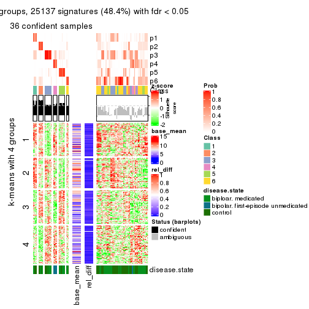
Signature heatmaps where rows are not scaled:
get_signatures(res, k = 2, scale_rows = FALSE)
get_signatures(res, k = 3, scale_rows = FALSE)
get_signatures(res, k = 4, scale_rows = FALSE)
get_signatures(res, k = 5, scale_rows = FALSE)
get_signatures(res, k = 6, scale_rows = FALSE)
Compare the overlap of signatures from different k:
compare_signatures(res)
get_signature() returns a data frame invisibly. TO get the list of signatures, the function
call should be assigned to a variable explicitly. In following code, if plot argument is set
to FALSE, no heatmap is plotted while only the differential analysis is performed.
# code only for demonstration
tb = get_signature(res, k = ..., plot = FALSE)
An example of the output of tb is:
#> which_row fdr mean_1 mean_2 scaled_mean_1 scaled_mean_2 km
#> 1 38 0.042760348 8.373488 9.131774 -0.5533452 0.5164555 1
#> 2 40 0.018707592 7.106213 8.469186 -0.6173731 0.5762149 1
#> 3 55 0.019134737 10.221463 11.207825 -0.6159697 0.5749050 1
#> 4 59 0.006059896 5.921854 7.869574 -0.6899429 0.6439467 1
#> 5 60 0.018055526 8.928898 10.211722 -0.6204761 0.5791110 1
#> 6 98 0.009384629 15.714769 14.887706 0.6635654 -0.6193277 2
...
The columns in tb are:
which_row: row indices corresponding to the input matrix.fdr: FDR for the differential test. mean_x: The mean value in group x.scaled_mean_x: The mean value in group x after rows are scaled.km: Row groups if k-means clustering is applied to rows.UMAP plot which shows how samples are separated.
dimension_reduction(res, k = 2, method = "UMAP")
dimension_reduction(res, k = 3, method = "UMAP")
dimension_reduction(res, k = 4, method = "UMAP")
dimension_reduction(res, k = 5, method = "UMAP")
dimension_reduction(res, k = 6, method = "UMAP")
Following heatmap shows how subgroups are split when increasing k:
collect_classes(res)
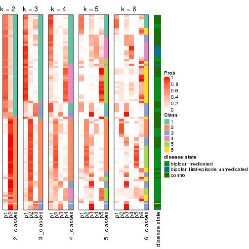
Test correlation between subgroups and known annotations. If the known annotation is numeric, one-way ANOVA test is applied, and if the known annotation is discrete, chi-squared contingency table test is applied.
test_to_known_factors(res)
#> n disease.state(p) k
#> SD:mclust 82 1.22e-02 2
#> SD:mclust 75 5.62e-03 3
#> SD:mclust 56 1.18e-01 4
#> SD:mclust 55 4.02e-05 5
#> SD:mclust 36 1.46e-05 6
If matrix rows can be associated to genes, consider to use GO_Enrichment(res,
...) to perform function enrichment for the signature genes.
The object with results only for a single top-value method and a single partition method can be extracted as:
res = res_list["SD", "NMF"]
# you can also extract it by
# res = res_list["SD:NMF"]
A summary of res and all the functions that can be applied to it:
res
#> A 'ConsensusPartition' object with k = 2, 3, 4, 5, 6.
#> On a matrix with 51941 rows and 88 columns.
#> Top rows (1000, 2000, 3000, 4000, 5000) are extracted by 'SD' method.
#> Subgroups are detected by 'NMF' method.
#> Performed in total 1250 partitions by row resampling.
#> Best k for subgroups seems to be 2.
#>
#> Following methods can be applied to this 'ConsensusPartition' object:
#> [1] "cola_report" "collect_classes" "collect_plots"
#> [4] "collect_stats" "colnames" "compare_signatures"
#> [7] "consensus_heatmap" "dimension_reduction" "functional_enrichment"
#> [10] "get_anno_col" "get_anno" "get_classes"
#> [13] "get_consensus" "get_matrix" "get_membership"
#> [16] "get_param" "get_signatures" "get_stats"
#> [19] "is_best_k" "is_stable_k" "membership_heatmap"
#> [22] "ncol" "nrow" "plot_ecdf"
#> [25] "rownames" "select_partition_number" "show"
#> [28] "suggest_best_k" "test_to_known_factors"
collect_plots() function collects all the plots made from res for all k (number of partitions)
into one single page to provide an easy and fast comparison between different k.
collect_plots(res)
The plots are:
k and the heatmap of
predicted classes for each k.k.k.k.All the plots in panels can be made by individual functions and they are plotted later in this section.
select_partition_number() produces several plots showing different
statistics for choosing “optimized” k. There are following statistics:
k;k, the area increased is defined as \(A_k - A_{k-1}\).The detailed explanations of these statistics can be found in the cola vignette.
Generally speaking, lower PAC score, higher mean silhouette score or higher
concordance corresponds to better partition. Rand index and Jaccard index
measure how similar the current partition is compared to partition with k-1.
If they are too similar, we won't accept k is better than k-1.
select_partition_number(res)

The numeric values for all these statistics can be obtained by get_stats().
get_stats(res)
#> k 1-PAC mean_silhouette concordance area_increased Rand Jaccard
#> 2 2 0.743 0.902 0.952 0.5006 0.494 0.494
#> 3 3 0.684 0.779 0.901 0.3195 0.754 0.547
#> 4 4 0.514 0.598 0.769 0.1305 0.786 0.472
#> 5 5 0.568 0.533 0.732 0.0610 0.841 0.487
#> 6 6 0.574 0.444 0.691 0.0336 0.925 0.691
suggest_best_k() suggests the best \(k\) based on these statistics. The rules are as follows:
NA.suggest_best_k(res)
#> [1] 2
Following shows the table of the partitions (You need to click the show/hide
code output link to see it). The membership matrix (columns with name p*)
is inferred by
clue::cl_consensus()
function with the SE method. Basically the value in the membership matrix
represents the probability to belong to a certain group. The finall class
label for an item is determined with the group with highest probability it
belongs to.
In get_classes() function, the entropy is calculated from the membership
matrix and the silhouette score is calculated from the consensus matrix.
cbind(get_classes(res, k = 2), get_membership(res, k = 2))
#> class entropy silhouette p1 p2
#> GSM1130404 1 0.9993 0.219 0.516 0.484
#> GSM1130405 2 0.8661 0.530 0.288 0.712
#> GSM1130408 2 0.0000 0.975 0.000 1.000
#> GSM1130409 1 0.7815 0.758 0.768 0.232
#> GSM1130410 1 0.3584 0.891 0.932 0.068
#> GSM1130415 2 0.0000 0.975 0.000 1.000
#> GSM1130416 2 0.0000 0.975 0.000 1.000
#> GSM1130417 2 0.0000 0.975 0.000 1.000
#> GSM1130418 2 0.0000 0.975 0.000 1.000
#> GSM1130421 2 0.0000 0.975 0.000 1.000
#> GSM1130422 2 0.0000 0.975 0.000 1.000
#> GSM1130423 1 0.0000 0.921 1.000 0.000
#> GSM1130424 1 0.0000 0.921 1.000 0.000
#> GSM1130425 1 0.0000 0.921 1.000 0.000
#> GSM1130426 2 0.0000 0.975 0.000 1.000
#> GSM1130427 2 0.0000 0.975 0.000 1.000
#> GSM1130428 1 0.5629 0.850 0.868 0.132
#> GSM1130429 1 0.0000 0.921 1.000 0.000
#> GSM1130430 1 0.8081 0.731 0.752 0.248
#> GSM1130431 1 0.0000 0.921 1.000 0.000
#> GSM1130432 2 0.0000 0.975 0.000 1.000
#> GSM1130433 2 0.0000 0.975 0.000 1.000
#> GSM1130434 1 0.7139 0.796 0.804 0.196
#> GSM1130435 1 0.5059 0.864 0.888 0.112
#> GSM1130436 1 0.6343 0.828 0.840 0.160
#> GSM1130437 1 0.7056 0.800 0.808 0.192
#> GSM1130438 2 0.0000 0.975 0.000 1.000
#> GSM1130439 2 0.0000 0.975 0.000 1.000
#> GSM1130440 2 0.0000 0.975 0.000 1.000
#> GSM1130441 2 0.0000 0.975 0.000 1.000
#> GSM1130442 2 0.0000 0.975 0.000 1.000
#> GSM1130443 1 0.0000 0.921 1.000 0.000
#> GSM1130444 1 0.0000 0.921 1.000 0.000
#> GSM1130445 1 0.7299 0.788 0.796 0.204
#> GSM1130476 2 0.0000 0.975 0.000 1.000
#> GSM1130483 1 0.7602 0.771 0.780 0.220
#> GSM1130484 1 0.9896 0.352 0.560 0.440
#> GSM1130487 1 0.0000 0.921 1.000 0.000
#> GSM1130488 1 0.0000 0.921 1.000 0.000
#> GSM1130419 1 0.0000 0.921 1.000 0.000
#> GSM1130420 1 0.0000 0.921 1.000 0.000
#> GSM1130464 1 0.0000 0.921 1.000 0.000
#> GSM1130465 1 0.0000 0.921 1.000 0.000
#> GSM1130468 1 0.0000 0.921 1.000 0.000
#> GSM1130469 1 0.0000 0.921 1.000 0.000
#> GSM1130402 1 0.0000 0.921 1.000 0.000
#> GSM1130403 1 0.0938 0.917 0.988 0.012
#> GSM1130406 1 0.0000 0.921 1.000 0.000
#> GSM1130407 1 0.1843 0.909 0.972 0.028
#> GSM1130411 2 0.0000 0.975 0.000 1.000
#> GSM1130412 2 0.0000 0.975 0.000 1.000
#> GSM1130413 2 0.0000 0.975 0.000 1.000
#> GSM1130414 2 0.0000 0.975 0.000 1.000
#> GSM1130446 2 0.2236 0.942 0.036 0.964
#> GSM1130447 1 0.0000 0.921 1.000 0.000
#> GSM1130448 2 0.0000 0.975 0.000 1.000
#> GSM1130449 1 0.8608 0.643 0.716 0.284
#> GSM1130450 2 0.0000 0.975 0.000 1.000
#> GSM1130451 2 0.7139 0.752 0.196 0.804
#> GSM1130452 2 0.0000 0.975 0.000 1.000
#> GSM1130453 2 0.0000 0.975 0.000 1.000
#> GSM1130454 2 0.0000 0.975 0.000 1.000
#> GSM1130455 2 0.0000 0.975 0.000 1.000
#> GSM1130456 1 0.0000 0.921 1.000 0.000
#> GSM1130457 2 0.0000 0.975 0.000 1.000
#> GSM1130458 2 0.0000 0.975 0.000 1.000
#> GSM1130459 2 0.0000 0.975 0.000 1.000
#> GSM1130460 2 0.0000 0.975 0.000 1.000
#> GSM1130461 2 0.0000 0.975 0.000 1.000
#> GSM1130462 2 0.2423 0.939 0.040 0.960
#> GSM1130463 2 0.7139 0.752 0.196 0.804
#> GSM1130466 1 0.0000 0.921 1.000 0.000
#> GSM1130467 2 0.0000 0.975 0.000 1.000
#> GSM1130470 1 0.0000 0.921 1.000 0.000
#> GSM1130471 1 0.0000 0.921 1.000 0.000
#> GSM1130472 1 0.0000 0.921 1.000 0.000
#> GSM1130473 1 0.0000 0.921 1.000 0.000
#> GSM1130474 2 0.0000 0.975 0.000 1.000
#> GSM1130475 2 0.0000 0.975 0.000 1.000
#> GSM1130477 1 0.3274 0.896 0.940 0.060
#> GSM1130478 1 0.7453 0.780 0.788 0.212
#> GSM1130479 1 0.0000 0.921 1.000 0.000
#> GSM1130480 2 0.0000 0.975 0.000 1.000
#> GSM1130481 2 0.0000 0.975 0.000 1.000
#> GSM1130482 2 0.0000 0.975 0.000 1.000
#> GSM1130485 1 0.0000 0.921 1.000 0.000
#> GSM1130486 1 0.0000 0.921 1.000 0.000
#> GSM1130489 2 0.7219 0.735 0.200 0.800
cbind(get_classes(res, k = 3), get_membership(res, k = 3))
#> class entropy silhouette p1 p2 p3
#> GSM1130404 3 0.6205 0.4828 0.336 0.008 0.656
#> GSM1130405 3 0.8873 0.3874 0.200 0.224 0.576
#> GSM1130408 2 0.6045 0.4884 0.380 0.620 0.000
#> GSM1130409 1 0.0237 0.8740 0.996 0.000 0.004
#> GSM1130410 3 0.5905 0.5051 0.352 0.000 0.648
#> GSM1130415 2 0.4702 0.7463 0.212 0.788 0.000
#> GSM1130416 2 0.5016 0.7207 0.240 0.760 0.000
#> GSM1130417 2 0.4605 0.7564 0.204 0.796 0.000
#> GSM1130418 2 0.4702 0.7503 0.212 0.788 0.000
#> GSM1130421 2 0.0592 0.8993 0.012 0.988 0.000
#> GSM1130422 2 0.0592 0.8993 0.012 0.988 0.000
#> GSM1130423 3 0.0000 0.8677 0.000 0.000 1.000
#> GSM1130424 3 0.2711 0.8044 0.000 0.088 0.912
#> GSM1130425 3 0.0592 0.8651 0.012 0.000 0.988
#> GSM1130426 2 0.0000 0.9023 0.000 1.000 0.000
#> GSM1130427 2 0.1315 0.8925 0.008 0.972 0.020
#> GSM1130428 2 0.6026 0.3274 0.000 0.624 0.376
#> GSM1130429 3 0.4750 0.6784 0.000 0.216 0.784
#> GSM1130430 3 0.1765 0.8510 0.040 0.004 0.956
#> GSM1130431 3 0.0237 0.8677 0.004 0.000 0.996
#> GSM1130432 1 0.1163 0.8650 0.972 0.028 0.000
#> GSM1130433 1 0.0237 0.8742 0.996 0.004 0.000
#> GSM1130434 3 0.6235 0.3150 0.436 0.000 0.564
#> GSM1130435 3 0.5968 0.4910 0.364 0.000 0.636
#> GSM1130436 1 0.4178 0.7195 0.828 0.000 0.172
#> GSM1130437 1 0.3551 0.7719 0.868 0.000 0.132
#> GSM1130438 1 0.0000 0.8748 1.000 0.000 0.000
#> GSM1130439 1 0.0000 0.8748 1.000 0.000 0.000
#> GSM1130440 1 0.0237 0.8742 0.996 0.004 0.000
#> GSM1130441 2 0.0000 0.9023 0.000 1.000 0.000
#> GSM1130442 2 0.2537 0.8582 0.080 0.920 0.000
#> GSM1130443 3 0.0000 0.8677 0.000 0.000 1.000
#> GSM1130444 3 0.6309 0.1034 0.496 0.000 0.504
#> GSM1130445 1 0.2066 0.8406 0.940 0.000 0.060
#> GSM1130476 1 0.3619 0.7855 0.864 0.136 0.000
#> GSM1130483 1 0.0000 0.8748 1.000 0.000 0.000
#> GSM1130484 1 0.0000 0.8748 1.000 0.000 0.000
#> GSM1130487 3 0.5926 0.4943 0.356 0.000 0.644
#> GSM1130488 3 0.4002 0.7612 0.160 0.000 0.840
#> GSM1130419 3 0.0237 0.8677 0.004 0.000 0.996
#> GSM1130420 3 0.0237 0.8677 0.004 0.000 0.996
#> GSM1130464 3 0.0237 0.8677 0.004 0.000 0.996
#> GSM1130465 3 0.0424 0.8665 0.008 0.000 0.992
#> GSM1130468 3 0.0000 0.8677 0.000 0.000 1.000
#> GSM1130469 3 0.0000 0.8677 0.000 0.000 1.000
#> GSM1130402 3 0.1411 0.8538 0.036 0.000 0.964
#> GSM1130403 3 0.0237 0.8677 0.004 0.000 0.996
#> GSM1130406 1 0.4605 0.6547 0.796 0.000 0.204
#> GSM1130407 1 0.4504 0.6668 0.804 0.000 0.196
#> GSM1130411 2 0.0747 0.8985 0.016 0.984 0.000
#> GSM1130412 2 0.1031 0.8952 0.024 0.976 0.000
#> GSM1130413 2 0.5650 0.6097 0.312 0.688 0.000
#> GSM1130414 2 0.4654 0.7533 0.208 0.792 0.000
#> GSM1130446 2 0.0592 0.8973 0.000 0.988 0.012
#> GSM1130447 3 0.0892 0.8586 0.000 0.020 0.980
#> GSM1130448 1 0.6307 0.0493 0.512 0.488 0.000
#> GSM1130449 3 0.5253 0.7237 0.188 0.020 0.792
#> GSM1130450 2 0.0000 0.9023 0.000 1.000 0.000
#> GSM1130451 2 0.0237 0.9011 0.000 0.996 0.004
#> GSM1130452 2 0.0000 0.9023 0.000 1.000 0.000
#> GSM1130453 2 0.1964 0.8761 0.056 0.944 0.000
#> GSM1130454 2 0.3340 0.8233 0.120 0.880 0.000
#> GSM1130455 2 0.0000 0.9023 0.000 1.000 0.000
#> GSM1130456 3 0.0000 0.8677 0.000 0.000 1.000
#> GSM1130457 2 0.0000 0.9023 0.000 1.000 0.000
#> GSM1130458 2 0.0424 0.8994 0.000 0.992 0.008
#> GSM1130459 2 0.0000 0.9023 0.000 1.000 0.000
#> GSM1130460 2 0.0000 0.9023 0.000 1.000 0.000
#> GSM1130461 1 0.5138 0.5960 0.748 0.252 0.000
#> GSM1130462 2 0.0000 0.9023 0.000 1.000 0.000
#> GSM1130463 2 0.0237 0.9011 0.000 0.996 0.004
#> GSM1130466 3 0.0000 0.8677 0.000 0.000 1.000
#> GSM1130467 2 0.0000 0.9023 0.000 1.000 0.000
#> GSM1130470 3 0.0000 0.8677 0.000 0.000 1.000
#> GSM1130471 3 0.0000 0.8677 0.000 0.000 1.000
#> GSM1130472 3 0.0000 0.8677 0.000 0.000 1.000
#> GSM1130473 3 0.0237 0.8677 0.004 0.000 0.996
#> GSM1130474 2 0.0000 0.9023 0.000 1.000 0.000
#> GSM1130475 2 0.0000 0.9023 0.000 1.000 0.000
#> GSM1130477 1 0.0424 0.8722 0.992 0.000 0.008
#> GSM1130478 1 0.0000 0.8748 1.000 0.000 0.000
#> GSM1130479 3 0.0000 0.8677 0.000 0.000 1.000
#> GSM1130480 1 0.3941 0.7513 0.844 0.156 0.000
#> GSM1130481 2 0.0592 0.8986 0.000 0.988 0.012
#> GSM1130482 2 0.5497 0.6354 0.292 0.708 0.000
#> GSM1130485 3 0.1031 0.8553 0.000 0.024 0.976
#> GSM1130486 3 0.0237 0.8677 0.004 0.000 0.996
#> GSM1130489 3 0.6260 0.1910 0.000 0.448 0.552
cbind(get_classes(res, k = 4), get_membership(res, k = 4))
#> class entropy silhouette p1 p2 p3 p4
#> GSM1130404 1 0.7284 0.277 0.564 0.324 0.048 0.064
#> GSM1130405 2 0.5756 0.382 0.400 0.568 0.000 0.032
#> GSM1130408 3 0.7732 0.148 0.228 0.380 0.392 0.000
#> GSM1130409 1 0.4296 0.674 0.824 0.060 0.112 0.004
#> GSM1130410 1 0.6783 0.597 0.676 0.064 0.068 0.192
#> GSM1130415 2 0.4356 0.607 0.292 0.708 0.000 0.000
#> GSM1130416 2 0.4253 0.669 0.208 0.776 0.016 0.000
#> GSM1130417 2 0.4737 0.634 0.252 0.728 0.020 0.000
#> GSM1130418 2 0.4711 0.644 0.236 0.740 0.024 0.000
#> GSM1130421 2 0.0657 0.741 0.004 0.984 0.012 0.000
#> GSM1130422 2 0.1398 0.737 0.004 0.956 0.040 0.000
#> GSM1130423 4 0.3335 0.798 0.128 0.000 0.016 0.856
#> GSM1130424 4 0.6797 0.567 0.128 0.244 0.008 0.620
#> GSM1130425 4 0.4214 0.762 0.204 0.000 0.016 0.780
#> GSM1130426 2 0.0469 0.742 0.012 0.988 0.000 0.000
#> GSM1130427 2 0.3051 0.727 0.088 0.884 0.000 0.028
#> GSM1130428 2 0.3249 0.688 0.008 0.852 0.000 0.140
#> GSM1130429 2 0.5793 0.298 0.036 0.580 0.000 0.384
#> GSM1130430 1 0.8272 0.346 0.472 0.296 0.032 0.200
#> GSM1130431 4 0.5262 0.671 0.248 0.036 0.004 0.712
#> GSM1130432 3 0.3810 0.596 0.188 0.008 0.804 0.000
#> GSM1130433 1 0.4088 0.650 0.764 0.004 0.232 0.000
#> GSM1130434 1 0.5264 0.624 0.732 0.028 0.016 0.224
#> GSM1130435 1 0.5026 0.583 0.740 0.028 0.008 0.224
#> GSM1130436 1 0.3004 0.699 0.892 0.000 0.060 0.048
#> GSM1130437 1 0.3198 0.693 0.880 0.000 0.080 0.040
#> GSM1130438 3 0.4866 0.102 0.404 0.000 0.596 0.000
#> GSM1130439 3 0.2859 0.579 0.112 0.000 0.880 0.008
#> GSM1130440 3 0.2281 0.592 0.096 0.000 0.904 0.000
#> GSM1130441 2 0.2469 0.691 0.000 0.892 0.108 0.000
#> GSM1130442 3 0.4500 0.558 0.000 0.316 0.684 0.000
#> GSM1130443 4 0.3881 0.685 0.016 0.000 0.172 0.812
#> GSM1130444 3 0.5532 0.481 0.068 0.000 0.704 0.228
#> GSM1130445 3 0.5812 0.500 0.136 0.000 0.708 0.156
#> GSM1130476 3 0.1767 0.630 0.044 0.012 0.944 0.000
#> GSM1130483 1 0.4477 0.611 0.688 0.000 0.312 0.000
#> GSM1130484 1 0.4543 0.605 0.676 0.000 0.324 0.000
#> GSM1130487 4 0.6982 0.317 0.252 0.000 0.172 0.576
#> GSM1130488 4 0.6763 0.245 0.320 0.000 0.116 0.564
#> GSM1130419 4 0.1182 0.808 0.016 0.000 0.016 0.968
#> GSM1130420 4 0.1059 0.809 0.016 0.000 0.012 0.972
#> GSM1130464 4 0.1182 0.808 0.016 0.000 0.016 0.968
#> GSM1130465 4 0.1610 0.806 0.032 0.000 0.016 0.952
#> GSM1130468 4 0.2432 0.805 0.024 0.020 0.028 0.928
#> GSM1130469 4 0.1509 0.810 0.020 0.008 0.012 0.960
#> GSM1130402 1 0.5503 -0.117 0.516 0.016 0.000 0.468
#> GSM1130403 4 0.6857 0.496 0.324 0.108 0.004 0.564
#> GSM1130406 1 0.5865 0.595 0.612 0.000 0.340 0.048
#> GSM1130407 1 0.5686 0.589 0.616 0.004 0.352 0.028
#> GSM1130411 2 0.1940 0.738 0.076 0.924 0.000 0.000
#> GSM1130412 2 0.2704 0.722 0.124 0.876 0.000 0.000
#> GSM1130413 2 0.5931 0.193 0.460 0.504 0.036 0.000
#> GSM1130414 2 0.3942 0.666 0.236 0.764 0.000 0.000
#> GSM1130446 2 0.2546 0.722 0.000 0.912 0.060 0.028
#> GSM1130447 4 0.5022 0.635 0.044 0.220 0.000 0.736
#> GSM1130448 3 0.1576 0.661 0.004 0.048 0.948 0.000
#> GSM1130449 3 0.4648 0.619 0.072 0.020 0.820 0.088
#> GSM1130450 2 0.4193 0.444 0.000 0.732 0.268 0.000
#> GSM1130451 3 0.7384 0.332 0.000 0.352 0.476 0.172
#> GSM1130452 3 0.4916 0.401 0.000 0.424 0.576 0.000
#> GSM1130453 3 0.3791 0.645 0.000 0.200 0.796 0.004
#> GSM1130454 3 0.3668 0.659 0.004 0.188 0.808 0.000
#> GSM1130455 2 0.4996 -0.209 0.000 0.516 0.484 0.000
#> GSM1130456 4 0.1042 0.810 0.020 0.000 0.008 0.972
#> GSM1130457 2 0.1022 0.736 0.000 0.968 0.032 0.000
#> GSM1130458 2 0.1877 0.742 0.020 0.948 0.012 0.020
#> GSM1130459 2 0.1792 0.721 0.000 0.932 0.068 0.000
#> GSM1130460 2 0.1792 0.721 0.000 0.932 0.068 0.000
#> GSM1130461 3 0.3907 0.644 0.120 0.044 0.836 0.000
#> GSM1130462 2 0.2868 0.664 0.000 0.864 0.136 0.000
#> GSM1130463 2 0.6852 0.349 0.000 0.600 0.208 0.192
#> GSM1130466 4 0.2053 0.812 0.072 0.004 0.000 0.924
#> GSM1130467 2 0.0817 0.738 0.000 0.976 0.024 0.000
#> GSM1130470 4 0.3160 0.804 0.108 0.000 0.020 0.872
#> GSM1130471 4 0.3166 0.801 0.116 0.000 0.016 0.868
#> GSM1130472 4 0.2928 0.804 0.108 0.000 0.012 0.880
#> GSM1130473 4 0.3390 0.797 0.132 0.000 0.016 0.852
#> GSM1130474 3 0.5217 0.470 0.000 0.380 0.608 0.012
#> GSM1130475 3 0.4830 0.460 0.000 0.392 0.608 0.000
#> GSM1130477 1 0.3266 0.681 0.868 0.000 0.108 0.024
#> GSM1130478 1 0.3266 0.668 0.832 0.000 0.168 0.000
#> GSM1130479 4 0.3695 0.790 0.156 0.000 0.016 0.828
#> GSM1130480 3 0.4501 0.584 0.212 0.024 0.764 0.000
#> GSM1130481 2 0.7974 0.291 0.036 0.544 0.224 0.196
#> GSM1130482 3 0.7419 0.511 0.284 0.168 0.540 0.008
#> GSM1130485 4 0.2843 0.781 0.020 0.088 0.000 0.892
#> GSM1130486 4 0.2076 0.804 0.056 0.008 0.004 0.932
#> GSM1130489 4 0.7055 0.667 0.156 0.060 0.116 0.668
cbind(get_classes(res, k = 5), get_membership(res, k = 5))
#> class entropy silhouette p1 p2 p3 p4 p5
#> GSM1130404 2 0.6993 0.3613 0.308 0.532 0.008 0.092 0.060
#> GSM1130405 2 0.4161 0.6777 0.188 0.772 0.000 0.016 0.024
#> GSM1130408 3 0.6649 0.2755 0.208 0.324 0.464 0.004 0.000
#> GSM1130409 1 0.5619 0.5170 0.656 0.264 0.008 0.044 0.028
#> GSM1130410 1 0.6631 0.5613 0.612 0.188 0.000 0.072 0.128
#> GSM1130415 2 0.2112 0.7234 0.084 0.908 0.000 0.004 0.004
#> GSM1130416 2 0.2228 0.7285 0.092 0.900 0.004 0.004 0.000
#> GSM1130417 2 0.4328 0.6576 0.204 0.756 0.008 0.004 0.028
#> GSM1130418 2 0.4295 0.6612 0.200 0.760 0.008 0.004 0.028
#> GSM1130421 2 0.2171 0.7347 0.032 0.924 0.028 0.016 0.000
#> GSM1130422 2 0.2987 0.7177 0.056 0.880 0.012 0.052 0.000
#> GSM1130423 5 0.2488 0.7156 0.004 0.000 0.000 0.124 0.872
#> GSM1130424 5 0.4350 0.6497 0.000 0.068 0.020 0.120 0.792
#> GSM1130425 5 0.2708 0.6895 0.072 0.000 0.000 0.044 0.884
#> GSM1130426 2 0.0889 0.7376 0.004 0.976 0.012 0.004 0.004
#> GSM1130427 2 0.1943 0.7327 0.056 0.924 0.000 0.020 0.000
#> GSM1130428 2 0.3699 0.7060 0.004 0.836 0.020 0.112 0.028
#> GSM1130429 2 0.6451 0.4645 0.004 0.604 0.024 0.172 0.196
#> GSM1130430 2 0.5790 0.3854 0.312 0.604 0.000 0.052 0.032
#> GSM1130431 2 0.7828 0.0481 0.084 0.424 0.000 0.268 0.224
#> GSM1130432 3 0.4128 0.6607 0.116 0.008 0.812 0.012 0.052
#> GSM1130433 1 0.2987 0.6650 0.868 0.020 0.104 0.004 0.004
#> GSM1130434 4 0.6476 0.1670 0.308 0.116 0.000 0.548 0.028
#> GSM1130435 1 0.7041 0.3215 0.508 0.116 0.000 0.312 0.064
#> GSM1130436 1 0.3824 0.6211 0.820 0.024 0.000 0.128 0.028
#> GSM1130437 1 0.4752 0.5553 0.724 0.036 0.000 0.220 0.020
#> GSM1130438 1 0.5771 0.2998 0.588 0.000 0.316 0.088 0.008
#> GSM1130439 3 0.6380 0.2478 0.224 0.000 0.516 0.260 0.000
#> GSM1130440 3 0.6133 0.3371 0.216 0.000 0.564 0.220 0.000
#> GSM1130441 3 0.4698 0.0309 0.004 0.468 0.520 0.000 0.008
#> GSM1130442 3 0.1668 0.7173 0.028 0.032 0.940 0.000 0.000
#> GSM1130443 4 0.3113 0.5900 0.024 0.000 0.036 0.876 0.064
#> GSM1130444 4 0.5750 0.2838 0.108 0.000 0.244 0.636 0.012
#> GSM1130445 4 0.5909 0.2364 0.244 0.000 0.164 0.592 0.000
#> GSM1130476 3 0.5329 0.5007 0.144 0.000 0.672 0.184 0.000
#> GSM1130483 1 0.4393 0.6643 0.808 0.004 0.088 0.056 0.044
#> GSM1130484 1 0.3708 0.6571 0.836 0.004 0.096 0.056 0.008
#> GSM1130487 4 0.3280 0.4643 0.160 0.000 0.004 0.824 0.012
#> GSM1130488 4 0.3513 0.4480 0.180 0.000 0.000 0.800 0.020
#> GSM1130419 4 0.4045 0.4605 0.000 0.000 0.000 0.644 0.356
#> GSM1130420 4 0.3966 0.4915 0.000 0.000 0.000 0.664 0.336
#> GSM1130464 4 0.3876 0.5113 0.000 0.000 0.000 0.684 0.316
#> GSM1130465 4 0.3690 0.5831 0.012 0.000 0.000 0.764 0.224
#> GSM1130468 4 0.3201 0.6014 0.000 0.096 0.000 0.852 0.052
#> GSM1130469 4 0.3432 0.6108 0.000 0.040 0.000 0.828 0.132
#> GSM1130402 1 0.7653 0.3766 0.504 0.132 0.000 0.168 0.196
#> GSM1130403 2 0.7588 0.0863 0.192 0.380 0.000 0.060 0.368
#> GSM1130406 1 0.4942 0.5905 0.696 0.008 0.024 0.256 0.016
#> GSM1130407 1 0.5132 0.6124 0.704 0.028 0.036 0.228 0.004
#> GSM1130411 2 0.1082 0.7383 0.028 0.964 0.008 0.000 0.000
#> GSM1130412 2 0.1041 0.7374 0.032 0.964 0.004 0.000 0.000
#> GSM1130413 2 0.3715 0.5705 0.260 0.736 0.000 0.000 0.004
#> GSM1130414 2 0.1768 0.7289 0.072 0.924 0.000 0.004 0.000
#> GSM1130446 2 0.6547 0.5232 0.004 0.624 0.204 0.100 0.068
#> GSM1130447 4 0.6777 0.1087 0.000 0.404 0.012 0.408 0.176
#> GSM1130448 3 0.2900 0.6765 0.028 0.000 0.864 0.108 0.000
#> GSM1130449 3 0.2929 0.6727 0.008 0.000 0.840 0.000 0.152
#> GSM1130450 3 0.4860 0.4539 0.004 0.292 0.664 0.000 0.040
#> GSM1130451 3 0.4285 0.6525 0.004 0.080 0.796 0.008 0.112
#> GSM1130452 3 0.2464 0.6969 0.004 0.092 0.892 0.000 0.012
#> GSM1130453 3 0.1012 0.7129 0.020 0.000 0.968 0.012 0.000
#> GSM1130454 3 0.1153 0.7127 0.024 0.004 0.964 0.008 0.000
#> GSM1130455 3 0.2597 0.6879 0.004 0.120 0.872 0.000 0.004
#> GSM1130456 4 0.4040 0.5428 0.000 0.012 0.000 0.712 0.276
#> GSM1130457 2 0.3124 0.6899 0.004 0.844 0.136 0.000 0.016
#> GSM1130458 2 0.4740 0.6902 0.004 0.784 0.060 0.104 0.048
#> GSM1130459 2 0.4421 0.5469 0.004 0.704 0.272 0.004 0.016
#> GSM1130460 2 0.4776 0.4617 0.004 0.648 0.324 0.004 0.020
#> GSM1130461 3 0.3053 0.6668 0.128 0.012 0.852 0.008 0.000
#> GSM1130462 2 0.5271 0.2930 0.004 0.568 0.384 0.000 0.044
#> GSM1130463 3 0.7401 0.0156 0.004 0.384 0.428 0.084 0.100
#> GSM1130466 5 0.4313 0.3586 0.000 0.008 0.000 0.356 0.636
#> GSM1130467 2 0.2604 0.7129 0.004 0.880 0.108 0.004 0.004
#> GSM1130470 5 0.2813 0.7005 0.000 0.000 0.000 0.168 0.832
#> GSM1130471 5 0.3143 0.6689 0.000 0.000 0.000 0.204 0.796
#> GSM1130472 5 0.3177 0.6654 0.000 0.000 0.000 0.208 0.792
#> GSM1130473 5 0.1893 0.7192 0.024 0.000 0.000 0.048 0.928
#> GSM1130474 3 0.1490 0.7158 0.004 0.008 0.952 0.004 0.032
#> GSM1130475 3 0.1758 0.7162 0.008 0.024 0.944 0.004 0.020
#> GSM1130477 1 0.6013 0.3238 0.512 0.004 0.044 0.028 0.412
#> GSM1130478 1 0.5711 0.4954 0.608 0.008 0.064 0.008 0.312
#> GSM1130479 5 0.2499 0.7155 0.028 0.008 0.004 0.052 0.908
#> GSM1130480 3 0.3517 0.6847 0.112 0.016 0.844 0.024 0.004
#> GSM1130481 5 0.5884 -0.0554 0.000 0.060 0.436 0.016 0.488
#> GSM1130482 3 0.6934 0.3274 0.184 0.012 0.488 0.008 0.308
#> GSM1130485 4 0.6974 0.2483 0.012 0.136 0.020 0.480 0.352
#> GSM1130486 4 0.4378 0.5887 0.012 0.040 0.000 0.760 0.188
#> GSM1130489 5 0.3959 0.6039 0.028 0.000 0.140 0.024 0.808
cbind(get_classes(res, k = 6), get_membership(res, k = 6))
#> class entropy silhouette p1 p2 p3 p4 p5 p6
#> GSM1130404 3 0.6106 0.27650 0.048 0.200 0.632 0.092 0.008 0.020
#> GSM1130405 2 0.5995 0.46200 0.068 0.592 0.276 0.044 0.004 0.016
#> GSM1130408 5 0.7209 0.20277 0.120 0.312 0.152 0.004 0.412 0.000
#> GSM1130409 1 0.5732 0.40978 0.596 0.284 0.060 0.008 0.000 0.052
#> GSM1130410 1 0.6269 0.43449 0.568 0.244 0.044 0.012 0.000 0.132
#> GSM1130415 2 0.1908 0.67155 0.056 0.916 0.028 0.000 0.000 0.000
#> GSM1130416 2 0.2165 0.65153 0.108 0.884 0.008 0.000 0.000 0.000
#> GSM1130417 2 0.5048 0.60537 0.088 0.736 0.112 0.000 0.036 0.028
#> GSM1130418 2 0.4977 0.60571 0.088 0.736 0.120 0.000 0.036 0.020
#> GSM1130421 2 0.3244 0.57746 0.204 0.784 0.004 0.004 0.004 0.000
#> GSM1130422 2 0.3756 0.53014 0.240 0.736 0.008 0.016 0.000 0.000
#> GSM1130423 6 0.1411 0.72395 0.000 0.000 0.004 0.060 0.000 0.936
#> GSM1130424 6 0.5173 0.61161 0.000 0.064 0.024 0.096 0.084 0.732
#> GSM1130425 6 0.1572 0.69074 0.028 0.000 0.036 0.000 0.000 0.936
#> GSM1130426 2 0.1293 0.67792 0.020 0.956 0.000 0.004 0.016 0.004
#> GSM1130427 2 0.1396 0.67986 0.024 0.952 0.008 0.012 0.000 0.004
#> GSM1130428 2 0.5583 0.53708 0.000 0.652 0.064 0.216 0.056 0.012
#> GSM1130429 2 0.7257 0.37513 0.000 0.500 0.084 0.260 0.064 0.092
#> GSM1130430 2 0.6637 0.41989 0.164 0.556 0.156 0.120 0.000 0.004
#> GSM1130431 2 0.8229 0.17004 0.128 0.380 0.128 0.280 0.004 0.080
#> GSM1130432 5 0.5906 0.46095 0.128 0.008 0.132 0.000 0.648 0.084
#> GSM1130433 1 0.5325 0.40575 0.676 0.032 0.220 0.004 0.048 0.020
#> GSM1130434 4 0.5464 0.18569 0.028 0.072 0.336 0.564 0.000 0.000
#> GSM1130435 4 0.6374 -0.14545 0.048 0.112 0.408 0.428 0.000 0.004
#> GSM1130436 3 0.4604 0.47788 0.068 0.016 0.744 0.156 0.000 0.016
#> GSM1130437 3 0.6038 0.40517 0.128 0.028 0.560 0.276 0.000 0.008
#> GSM1130438 3 0.6570 0.14256 0.252 0.000 0.516 0.080 0.152 0.000
#> GSM1130439 5 0.7726 -0.23660 0.236 0.000 0.240 0.248 0.276 0.000
#> GSM1130440 5 0.7598 -0.09412 0.248 0.000 0.204 0.204 0.344 0.000
#> GSM1130441 5 0.3861 0.43184 0.008 0.316 0.004 0.000 0.672 0.000
#> GSM1130442 5 0.2916 0.61596 0.096 0.024 0.020 0.000 0.860 0.000
#> GSM1130443 4 0.3403 0.57680 0.068 0.000 0.040 0.848 0.008 0.036
#> GSM1130444 4 0.6995 0.16510 0.208 0.000 0.124 0.524 0.128 0.016
#> GSM1130445 4 0.5389 0.22212 0.076 0.000 0.300 0.596 0.028 0.000
#> GSM1130476 5 0.6914 0.15965 0.396 0.040 0.072 0.072 0.420 0.000
#> GSM1130483 1 0.5879 0.34162 0.588 0.004 0.248 0.000 0.032 0.128
#> GSM1130484 1 0.4950 0.38669 0.688 0.008 0.224 0.000 0.032 0.048
#> GSM1130487 4 0.4800 0.41618 0.192 0.000 0.104 0.692 0.000 0.012
#> GSM1130488 4 0.4708 0.46443 0.184 0.000 0.068 0.716 0.000 0.032
#> GSM1130419 4 0.3727 0.37230 0.000 0.000 0.000 0.612 0.000 0.388
#> GSM1130420 4 0.4089 0.43096 0.004 0.000 0.012 0.632 0.000 0.352
#> GSM1130464 4 0.3053 0.59841 0.004 0.000 0.012 0.812 0.000 0.172
#> GSM1130465 4 0.3366 0.58207 0.016 0.000 0.100 0.832 0.000 0.052
#> GSM1130468 4 0.2592 0.59994 0.004 0.056 0.024 0.892 0.000 0.024
#> GSM1130469 4 0.2622 0.60495 0.000 0.044 0.024 0.888 0.000 0.044
#> GSM1130402 1 0.8669 0.00335 0.296 0.112 0.160 0.256 0.000 0.176
#> GSM1130403 2 0.8545 -0.07315 0.192 0.316 0.088 0.124 0.004 0.276
#> GSM1130406 1 0.3413 0.47856 0.844 0.016 0.020 0.088 0.000 0.032
#> GSM1130407 1 0.3263 0.49390 0.856 0.044 0.020 0.068 0.000 0.012
#> GSM1130411 2 0.0767 0.68090 0.008 0.976 0.012 0.000 0.004 0.000
#> GSM1130412 2 0.1140 0.68218 0.008 0.964 0.012 0.008 0.008 0.000
#> GSM1130413 2 0.3458 0.64500 0.068 0.820 0.104 0.008 0.000 0.000
#> GSM1130414 2 0.2190 0.67667 0.040 0.908 0.044 0.008 0.000 0.000
#> GSM1130446 2 0.7039 0.10999 0.004 0.412 0.044 0.144 0.372 0.024
#> GSM1130447 4 0.6995 0.07079 0.004 0.360 0.060 0.456 0.052 0.068
#> GSM1130448 5 0.5160 0.50706 0.208 0.016 0.040 0.048 0.688 0.000
#> GSM1130449 5 0.3815 0.58174 0.056 0.000 0.016 0.000 0.792 0.136
#> GSM1130450 5 0.3817 0.55735 0.012 0.188 0.008 0.000 0.772 0.020
#> GSM1130451 5 0.4175 0.58999 0.000 0.076 0.012 0.024 0.792 0.096
#> GSM1130452 5 0.1514 0.62887 0.004 0.036 0.012 0.004 0.944 0.000
#> GSM1130453 5 0.2812 0.61173 0.072 0.000 0.040 0.016 0.872 0.000
#> GSM1130454 5 0.2753 0.61094 0.072 0.000 0.048 0.008 0.872 0.000
#> GSM1130455 5 0.2417 0.62474 0.012 0.088 0.008 0.004 0.888 0.000
#> GSM1130456 4 0.3526 0.59091 0.000 0.016 0.012 0.792 0.004 0.176
#> GSM1130457 2 0.4570 0.54059 0.000 0.688 0.044 0.020 0.248 0.000
#> GSM1130458 2 0.7203 0.41318 0.000 0.496 0.108 0.216 0.160 0.020
#> GSM1130459 5 0.4234 0.17951 0.004 0.408 0.012 0.000 0.576 0.000
#> GSM1130460 5 0.4320 0.33189 0.004 0.332 0.020 0.000 0.640 0.004
#> GSM1130461 5 0.5192 0.49323 0.168 0.016 0.140 0.004 0.672 0.000
#> GSM1130462 5 0.4746 0.24842 0.008 0.384 0.012 0.004 0.580 0.012
#> GSM1130463 5 0.5269 0.47603 0.008 0.228 0.016 0.044 0.676 0.028
#> GSM1130466 6 0.4980 -0.01192 0.000 0.008 0.048 0.452 0.000 0.492
#> GSM1130467 2 0.3807 0.56260 0.004 0.740 0.028 0.000 0.228 0.000
#> GSM1130470 6 0.1843 0.72253 0.000 0.000 0.004 0.080 0.004 0.912
#> GSM1130471 6 0.1908 0.71361 0.000 0.000 0.004 0.096 0.000 0.900
#> GSM1130472 6 0.1958 0.71065 0.000 0.000 0.004 0.100 0.000 0.896
#> GSM1130473 6 0.1129 0.71624 0.004 0.000 0.012 0.008 0.012 0.964
#> GSM1130474 5 0.1338 0.62614 0.004 0.000 0.032 0.004 0.952 0.008
#> GSM1130475 5 0.1570 0.62815 0.028 0.004 0.016 0.000 0.944 0.008
#> GSM1130477 6 0.5341 0.42068 0.144 0.000 0.196 0.012 0.004 0.644
#> GSM1130478 6 0.6676 0.10248 0.228 0.008 0.260 0.008 0.020 0.476
#> GSM1130479 6 0.3707 0.67160 0.004 0.000 0.088 0.064 0.024 0.820
#> GSM1130480 5 0.4899 0.36727 0.024 0.000 0.332 0.036 0.608 0.000
#> GSM1130481 5 0.5223 0.46895 0.000 0.036 0.048 0.016 0.672 0.228
#> GSM1130482 5 0.7011 0.30905 0.036 0.016 0.212 0.020 0.516 0.200
#> GSM1130485 4 0.6188 0.48930 0.004 0.084 0.072 0.668 0.072 0.100
#> GSM1130486 4 0.3542 0.53271 0.000 0.020 0.164 0.796 0.000 0.020
#> GSM1130489 6 0.5064 0.39471 0.012 0.000 0.052 0.008 0.312 0.616
Heatmaps for the consensus matrix. It visualizes the probability of two samples to be in a same group.
consensus_heatmap(res, k = 2)
consensus_heatmap(res, k = 3)
consensus_heatmap(res, k = 4)
consensus_heatmap(res, k = 5)
consensus_heatmap(res, k = 6)
Heatmaps for the membership of samples in all partitions to see how consistent they are:
membership_heatmap(res, k = 2)
membership_heatmap(res, k = 3)
membership_heatmap(res, k = 4)
membership_heatmap(res, k = 5)
membership_heatmap(res, k = 6)
As soon as we have had the classes for columns, we can look for signatures which are significantly different between classes which can be candidate marks for certain classes. Following are the heatmaps for signatures.
Signature heatmaps where rows are scaled:
get_signatures(res, k = 2)
get_signatures(res, k = 3)
get_signatures(res, k = 4)
get_signatures(res, k = 5)
get_signatures(res, k = 6)
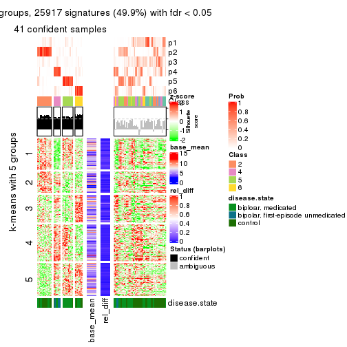
Signature heatmaps where rows are not scaled:
get_signatures(res, k = 2, scale_rows = FALSE)
get_signatures(res, k = 3, scale_rows = FALSE)

get_signatures(res, k = 4, scale_rows = FALSE)
get_signatures(res, k = 5, scale_rows = FALSE)
get_signatures(res, k = 6, scale_rows = FALSE)
Compare the overlap of signatures from different k:
compare_signatures(res)
get_signature() returns a data frame invisibly. TO get the list of signatures, the function
call should be assigned to a variable explicitly. In following code, if plot argument is set
to FALSE, no heatmap is plotted while only the differential analysis is performed.
# code only for demonstration
tb = get_signature(res, k = ..., plot = FALSE)
An example of the output of tb is:
#> which_row fdr mean_1 mean_2 scaled_mean_1 scaled_mean_2 km
#> 1 38 0.042760348 8.373488 9.131774 -0.5533452 0.5164555 1
#> 2 40 0.018707592 7.106213 8.469186 -0.6173731 0.5762149 1
#> 3 55 0.019134737 10.221463 11.207825 -0.6159697 0.5749050 1
#> 4 59 0.006059896 5.921854 7.869574 -0.6899429 0.6439467 1
#> 5 60 0.018055526 8.928898 10.211722 -0.6204761 0.5791110 1
#> 6 98 0.009384629 15.714769 14.887706 0.6635654 -0.6193277 2
...
The columns in tb are:
which_row: row indices corresponding to the input matrix.fdr: FDR for the differential test. mean_x: The mean value in group x.scaled_mean_x: The mean value in group x after rows are scaled.km: Row groups if k-means clustering is applied to rows.UMAP plot which shows how samples are separated.
dimension_reduction(res, k = 2, method = "UMAP")
dimension_reduction(res, k = 3, method = "UMAP")
dimension_reduction(res, k = 4, method = "UMAP")
dimension_reduction(res, k = 5, method = "UMAP")
dimension_reduction(res, k = 6, method = "UMAP")
Following heatmap shows how subgroups are split when increasing k:
collect_classes(res)
Test correlation between subgroups and known annotations. If the known annotation is numeric, one-way ANOVA test is applied, and if the known annotation is discrete, chi-squared contingency table test is applied.
test_to_known_factors(res)
#> n disease.state(p) k
#> SD:NMF 86 1.96e-02 2
#> SD:NMF 78 1.21e-03 3
#> SD:NMF 68 6.77e-03 4
#> SD:NMF 58 3.23e-06 5
#> SD:NMF 41 5.35e-05 6
If matrix rows can be associated to genes, consider to use GO_Enrichment(res,
...) to perform function enrichment for the signature genes.
The object with results only for a single top-value method and a single partition method can be extracted as:
res = res_list["CV", "hclust"]
# you can also extract it by
# res = res_list["CV:hclust"]
A summary of res and all the functions that can be applied to it:
res
#> A 'ConsensusPartition' object with k = 2, 3, 4, 5, 6.
#> On a matrix with 51941 rows and 88 columns.
#> Top rows (1000, 2000, 3000, 4000, 5000) are extracted by 'CV' method.
#> Subgroups are detected by 'hclust' method.
#> Performed in total 1250 partitions by row resampling.
#> Best k for subgroups seems to be 2.
#>
#> Following methods can be applied to this 'ConsensusPartition' object:
#> [1] "cola_report" "collect_classes" "collect_plots"
#> [4] "collect_stats" "colnames" "compare_signatures"
#> [7] "consensus_heatmap" "dimension_reduction" "functional_enrichment"
#> [10] "get_anno_col" "get_anno" "get_classes"
#> [13] "get_consensus" "get_matrix" "get_membership"
#> [16] "get_param" "get_signatures" "get_stats"
#> [19] "is_best_k" "is_stable_k" "membership_heatmap"
#> [22] "ncol" "nrow" "plot_ecdf"
#> [25] "rownames" "select_partition_number" "show"
#> [28] "suggest_best_k" "test_to_known_factors"
collect_plots() function collects all the plots made from res for all k (number of partitions)
into one single page to provide an easy and fast comparison between different k.
collect_plots(res)
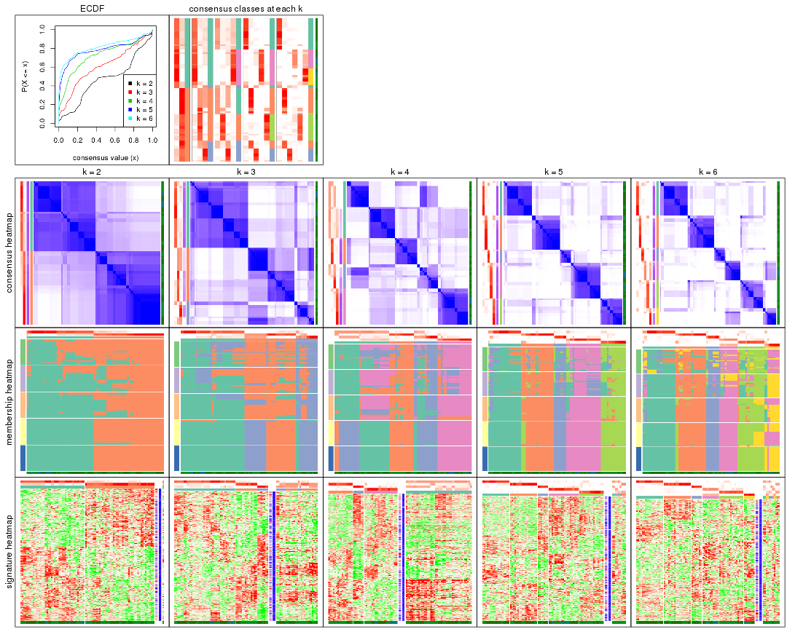
The plots are:
k and the heatmap of
predicted classes for each k.k.k.k.All the plots in panels can be made by individual functions and they are plotted later in this section.
select_partition_number() produces several plots showing different
statistics for choosing “optimized” k. There are following statistics:
k;k, the area increased is defined as \(A_k - A_{k-1}\).The detailed explanations of these statistics can be found in the cola vignette.
Generally speaking, lower PAC score, higher mean silhouette score or higher
concordance corresponds to better partition. Rand index and Jaccard index
measure how similar the current partition is compared to partition with k-1.
If they are too similar, we won't accept k is better than k-1.
select_partition_number(res)
The numeric values for all these statistics can be obtained by get_stats().
get_stats(res)
#> k 1-PAC mean_silhouette concordance area_increased Rand Jaccard
#> 2 2 0.272 0.817 0.871 0.4679 0.495 0.495
#> 3 3 0.312 0.539 0.761 0.3110 0.869 0.738
#> 4 4 0.499 0.439 0.690 0.1838 0.732 0.417
#> 5 5 0.711 0.770 0.869 0.0816 0.873 0.583
#> 6 6 0.728 0.713 0.808 0.0391 0.959 0.809
suggest_best_k() suggests the best \(k\) based on these statistics. The rules are as follows:
NA.suggest_best_k(res)
#> [1] 2
Following shows the table of the partitions (You need to click the show/hide
code output link to see it). The membership matrix (columns with name p*)
is inferred by
clue::cl_consensus()
function with the SE method. Basically the value in the membership matrix
represents the probability to belong to a certain group. The finall class
label for an item is determined with the group with highest probability it
belongs to.
In get_classes() function, the entropy is calculated from the membership
matrix and the silhouette score is calculated from the consensus matrix.
cbind(get_classes(res, k = 2), get_membership(res, k = 2))
#> class entropy silhouette p1 p2
#> GSM1130404 1 0.7815 0.831 0.768 0.232
#> GSM1130405 1 0.7815 0.831 0.768 0.232
#> GSM1130408 2 0.0000 0.863 0.000 1.000
#> GSM1130409 1 0.7883 0.828 0.764 0.236
#> GSM1130410 1 0.7883 0.828 0.764 0.236
#> GSM1130415 2 0.0000 0.863 0.000 1.000
#> GSM1130416 2 0.0000 0.863 0.000 1.000
#> GSM1130417 2 0.0000 0.863 0.000 1.000
#> GSM1130418 2 0.0000 0.863 0.000 1.000
#> GSM1130421 2 0.0672 0.864 0.008 0.992
#> GSM1130422 2 0.0672 0.864 0.008 0.992
#> GSM1130423 1 0.0000 0.836 1.000 0.000
#> GSM1130424 2 0.7453 0.798 0.212 0.788
#> GSM1130425 1 0.0000 0.836 1.000 0.000
#> GSM1130426 2 0.4815 0.837 0.104 0.896
#> GSM1130427 2 0.4815 0.837 0.104 0.896
#> GSM1130428 2 0.7139 0.809 0.196 0.804
#> GSM1130429 2 0.7139 0.809 0.196 0.804
#> GSM1130430 1 0.7883 0.828 0.764 0.236
#> GSM1130431 1 0.7883 0.828 0.764 0.236
#> GSM1130432 1 0.7950 0.827 0.760 0.240
#> GSM1130433 1 0.7950 0.827 0.760 0.240
#> GSM1130434 1 0.6712 0.853 0.824 0.176
#> GSM1130435 1 0.6712 0.853 0.824 0.176
#> GSM1130436 1 0.6712 0.853 0.824 0.176
#> GSM1130437 1 0.6712 0.853 0.824 0.176
#> GSM1130438 2 0.8763 0.637 0.296 0.704
#> GSM1130439 2 0.8763 0.637 0.296 0.704
#> GSM1130440 2 0.8763 0.637 0.296 0.704
#> GSM1130441 2 0.0376 0.864 0.004 0.996
#> GSM1130442 2 0.0376 0.864 0.004 0.996
#> GSM1130443 1 0.1633 0.845 0.976 0.024
#> GSM1130444 1 0.2423 0.841 0.960 0.040
#> GSM1130445 1 0.7745 0.800 0.772 0.228
#> GSM1130476 2 0.8713 0.644 0.292 0.708
#> GSM1130483 1 0.7815 0.833 0.768 0.232
#> GSM1130484 1 0.7815 0.833 0.768 0.232
#> GSM1130487 1 0.1633 0.845 0.976 0.024
#> GSM1130488 1 0.1633 0.845 0.976 0.024
#> GSM1130419 1 0.0000 0.836 1.000 0.000
#> GSM1130420 1 0.0000 0.836 1.000 0.000
#> GSM1130464 1 0.1633 0.845 0.976 0.024
#> GSM1130465 1 0.1633 0.845 0.976 0.024
#> GSM1130468 1 0.1843 0.847 0.972 0.028
#> GSM1130469 1 0.1843 0.847 0.972 0.028
#> GSM1130402 1 0.7883 0.828 0.764 0.236
#> GSM1130403 1 0.7883 0.828 0.764 0.236
#> GSM1130406 1 0.7883 0.792 0.764 0.236
#> GSM1130407 1 0.7883 0.792 0.764 0.236
#> GSM1130411 2 0.0000 0.863 0.000 1.000
#> GSM1130412 2 0.0000 0.863 0.000 1.000
#> GSM1130413 2 0.0000 0.863 0.000 1.000
#> GSM1130414 2 0.0000 0.863 0.000 1.000
#> GSM1130446 2 0.7219 0.808 0.200 0.800
#> GSM1130447 2 0.7219 0.808 0.200 0.800
#> GSM1130448 2 0.8713 0.644 0.292 0.708
#> GSM1130449 1 0.9732 0.497 0.596 0.404
#> GSM1130450 2 0.6247 0.829 0.156 0.844
#> GSM1130451 2 0.6247 0.829 0.156 0.844
#> GSM1130452 2 0.0000 0.863 0.000 1.000
#> GSM1130453 2 0.7883 0.718 0.236 0.764
#> GSM1130454 2 0.7883 0.718 0.236 0.764
#> GSM1130455 2 0.1184 0.863 0.016 0.984
#> GSM1130456 1 0.4815 0.850 0.896 0.104
#> GSM1130457 2 0.3274 0.858 0.060 0.940
#> GSM1130458 2 0.3274 0.858 0.060 0.940
#> GSM1130459 2 0.0000 0.863 0.000 1.000
#> GSM1130460 2 0.0000 0.863 0.000 1.000
#> GSM1130461 2 0.0000 0.863 0.000 1.000
#> GSM1130462 2 0.7056 0.813 0.192 0.808
#> GSM1130463 2 0.7056 0.813 0.192 0.808
#> GSM1130466 1 0.0376 0.838 0.996 0.004
#> GSM1130467 2 0.0000 0.863 0.000 1.000
#> GSM1130470 1 0.0000 0.836 1.000 0.000
#> GSM1130471 1 0.0000 0.836 1.000 0.000
#> GSM1130472 1 0.0000 0.836 1.000 0.000
#> GSM1130473 1 0.8081 0.791 0.752 0.248
#> GSM1130474 2 0.7883 0.767 0.236 0.764
#> GSM1130475 2 0.3879 0.856 0.076 0.924
#> GSM1130477 1 0.6712 0.853 0.824 0.176
#> GSM1130478 1 0.6712 0.853 0.824 0.176
#> GSM1130479 1 0.8207 0.785 0.744 0.256
#> GSM1130480 2 0.8499 0.683 0.276 0.724
#> GSM1130481 2 0.7745 0.774 0.228 0.772
#> GSM1130482 2 0.7745 0.774 0.228 0.772
#> GSM1130485 1 0.4690 0.847 0.900 0.100
#> GSM1130486 1 0.4690 0.847 0.900 0.100
#> GSM1130489 2 0.7745 0.774 0.228 0.772
cbind(get_classes(res, k = 3), get_membership(res, k = 3))
#> class entropy silhouette p1 p2 p3
#> GSM1130404 1 0.7042 0.7712 0.728 0.140 0.132
#> GSM1130405 1 0.7042 0.7712 0.728 0.140 0.132
#> GSM1130408 2 0.6291 0.2186 0.000 0.532 0.468
#> GSM1130409 1 0.7091 0.7644 0.724 0.152 0.124
#> GSM1130410 1 0.7091 0.7644 0.724 0.152 0.124
#> GSM1130415 2 0.6286 0.2238 0.000 0.536 0.464
#> GSM1130416 2 0.6286 0.2238 0.000 0.536 0.464
#> GSM1130417 2 0.6286 0.2238 0.000 0.536 0.464
#> GSM1130418 2 0.6286 0.2238 0.000 0.536 0.464
#> GSM1130421 3 0.6489 -0.0990 0.004 0.456 0.540
#> GSM1130422 3 0.6489 -0.0990 0.004 0.456 0.540
#> GSM1130423 1 0.0661 0.7893 0.988 0.004 0.008
#> GSM1130424 2 0.4178 0.5380 0.172 0.828 0.000
#> GSM1130425 1 0.0661 0.7893 0.988 0.004 0.008
#> GSM1130426 3 0.8659 0.0183 0.104 0.408 0.488
#> GSM1130427 3 0.8659 0.0183 0.104 0.408 0.488
#> GSM1130428 2 0.3879 0.5485 0.152 0.848 0.000
#> GSM1130429 2 0.3879 0.5485 0.152 0.848 0.000
#> GSM1130430 1 0.7091 0.7644 0.724 0.152 0.124
#> GSM1130431 1 0.7091 0.7644 0.724 0.152 0.124
#> GSM1130432 1 0.6854 0.7719 0.716 0.068 0.216
#> GSM1130433 1 0.6854 0.7719 0.716 0.068 0.216
#> GSM1130434 1 0.5911 0.8006 0.784 0.060 0.156
#> GSM1130435 1 0.5911 0.8006 0.784 0.060 0.156
#> GSM1130436 1 0.5911 0.8006 0.784 0.060 0.156
#> GSM1130437 1 0.5911 0.8006 0.784 0.060 0.156
#> GSM1130438 3 0.0592 0.5760 0.012 0.000 0.988
#> GSM1130439 3 0.0592 0.5760 0.012 0.000 0.988
#> GSM1130440 3 0.0592 0.5760 0.012 0.000 0.988
#> GSM1130441 2 0.6280 0.2244 0.000 0.540 0.460
#> GSM1130442 2 0.6302 0.1835 0.000 0.520 0.480
#> GSM1130443 1 0.3551 0.7678 0.868 0.000 0.132
#> GSM1130444 1 0.4291 0.7352 0.820 0.000 0.180
#> GSM1130445 1 0.6079 0.6008 0.612 0.000 0.388
#> GSM1130476 3 0.0661 0.5750 0.008 0.004 0.988
#> GSM1130483 1 0.6678 0.7748 0.724 0.060 0.216
#> GSM1130484 1 0.6678 0.7748 0.724 0.060 0.216
#> GSM1130487 1 0.3551 0.7678 0.868 0.000 0.132
#> GSM1130488 1 0.3551 0.7678 0.868 0.000 0.132
#> GSM1130419 1 0.0661 0.7893 0.988 0.004 0.008
#> GSM1130420 1 0.0661 0.7893 0.988 0.004 0.008
#> GSM1130464 1 0.3551 0.7678 0.868 0.000 0.132
#> GSM1130465 1 0.3551 0.7678 0.868 0.000 0.132
#> GSM1130468 1 0.3896 0.7715 0.864 0.008 0.128
#> GSM1130469 1 0.3896 0.7715 0.864 0.008 0.128
#> GSM1130402 1 0.7091 0.7644 0.724 0.152 0.124
#> GSM1130403 1 0.7091 0.7644 0.724 0.152 0.124
#> GSM1130406 3 0.6302 -0.4253 0.480 0.000 0.520
#> GSM1130407 3 0.6302 -0.4253 0.480 0.000 0.520
#> GSM1130411 2 0.6286 0.2238 0.000 0.536 0.464
#> GSM1130412 2 0.6286 0.2238 0.000 0.536 0.464
#> GSM1130413 2 0.6286 0.2238 0.000 0.536 0.464
#> GSM1130414 2 0.6286 0.2238 0.000 0.536 0.464
#> GSM1130446 2 0.3941 0.5468 0.156 0.844 0.000
#> GSM1130447 2 0.3941 0.5468 0.156 0.844 0.000
#> GSM1130448 3 0.0661 0.5750 0.008 0.004 0.988
#> GSM1130449 1 0.8330 0.4540 0.552 0.356 0.092
#> GSM1130450 2 0.5449 0.5297 0.116 0.816 0.068
#> GSM1130451 2 0.5449 0.5297 0.116 0.816 0.068
#> GSM1130452 2 0.6274 0.2300 0.000 0.544 0.456
#> GSM1130453 3 0.3618 0.5331 0.012 0.104 0.884
#> GSM1130454 3 0.3618 0.5331 0.012 0.104 0.884
#> GSM1130455 2 0.6521 0.1253 0.004 0.500 0.496
#> GSM1130456 1 0.5875 0.7669 0.784 0.056 0.160
#> GSM1130457 2 0.1129 0.5485 0.020 0.976 0.004
#> GSM1130458 2 0.1129 0.5485 0.020 0.976 0.004
#> GSM1130459 2 0.1643 0.5374 0.000 0.956 0.044
#> GSM1130460 2 0.1643 0.5374 0.000 0.956 0.044
#> GSM1130461 2 0.6291 0.2186 0.000 0.532 0.468
#> GSM1130462 2 0.3983 0.5506 0.144 0.852 0.004
#> GSM1130463 2 0.3983 0.5506 0.144 0.852 0.004
#> GSM1130466 1 0.0829 0.7908 0.984 0.004 0.012
#> GSM1130467 2 0.1643 0.5374 0.000 0.956 0.044
#> GSM1130470 1 0.0661 0.7893 0.988 0.004 0.008
#> GSM1130471 1 0.0661 0.7893 0.988 0.004 0.008
#> GSM1130472 1 0.0661 0.7893 0.988 0.004 0.008
#> GSM1130473 1 0.6586 0.7044 0.728 0.216 0.056
#> GSM1130474 2 0.6208 0.4790 0.200 0.752 0.048
#> GSM1130475 2 0.5734 0.4691 0.048 0.788 0.164
#> GSM1130477 1 0.5911 0.8006 0.784 0.060 0.156
#> GSM1130478 1 0.5911 0.8006 0.784 0.060 0.156
#> GSM1130479 1 0.6621 0.6910 0.720 0.228 0.052
#> GSM1130480 3 0.8043 0.2723 0.128 0.228 0.644
#> GSM1130481 2 0.6208 0.4858 0.192 0.756 0.052
#> GSM1130482 2 0.6208 0.4858 0.192 0.756 0.052
#> GSM1130485 1 0.3502 0.7982 0.896 0.084 0.020
#> GSM1130486 1 0.3502 0.7982 0.896 0.084 0.020
#> GSM1130489 2 0.6208 0.4858 0.192 0.756 0.052
cbind(get_classes(res, k = 4), get_membership(res, k = 4))
#> class entropy silhouette p1 p2 p3 p4
#> GSM1130404 1 0.7782 0.31562 0.560 0.068 0.088 0.284
#> GSM1130405 1 0.7782 0.31562 0.560 0.068 0.088 0.284
#> GSM1130408 1 0.5906 -0.26761 0.528 0.036 0.436 0.000
#> GSM1130409 1 0.7652 0.32016 0.572 0.068 0.080 0.280
#> GSM1130410 1 0.7652 0.32016 0.572 0.068 0.080 0.280
#> GSM1130415 1 0.5977 -0.26386 0.528 0.040 0.432 0.000
#> GSM1130416 1 0.5977 -0.26386 0.528 0.040 0.432 0.000
#> GSM1130417 1 0.5977 -0.26386 0.528 0.040 0.432 0.000
#> GSM1130418 1 0.5977 -0.26386 0.528 0.040 0.432 0.000
#> GSM1130421 3 0.7009 0.36850 0.372 0.108 0.516 0.004
#> GSM1130422 3 0.7009 0.36850 0.372 0.108 0.516 0.004
#> GSM1130423 4 0.0469 0.86767 0.000 0.012 0.000 0.988
#> GSM1130424 2 0.1637 0.87810 0.000 0.940 0.000 0.060
#> GSM1130425 4 0.0336 0.86742 0.000 0.008 0.000 0.992
#> GSM1130426 3 0.8138 0.35007 0.376 0.080 0.464 0.080
#> GSM1130427 3 0.8138 0.35007 0.376 0.080 0.464 0.080
#> GSM1130428 2 0.1489 0.88205 0.004 0.952 0.000 0.044
#> GSM1130429 2 0.1489 0.88205 0.004 0.952 0.000 0.044
#> GSM1130430 1 0.7652 0.32016 0.572 0.068 0.080 0.280
#> GSM1130431 1 0.7652 0.32016 0.572 0.068 0.080 0.280
#> GSM1130432 1 0.8722 0.27229 0.476 0.076 0.176 0.272
#> GSM1130433 1 0.8722 0.27229 0.476 0.076 0.176 0.272
#> GSM1130434 1 0.8435 0.24638 0.468 0.080 0.112 0.340
#> GSM1130435 1 0.8435 0.24638 0.468 0.080 0.112 0.340
#> GSM1130436 1 0.8435 0.24638 0.468 0.080 0.112 0.340
#> GSM1130437 1 0.8435 0.24638 0.468 0.080 0.112 0.340
#> GSM1130438 3 0.0524 0.60353 0.004 0.000 0.988 0.008
#> GSM1130439 3 0.0524 0.60353 0.004 0.000 0.988 0.008
#> GSM1130440 3 0.0524 0.60353 0.004 0.000 0.988 0.008
#> GSM1130441 1 0.6376 -0.27945 0.504 0.064 0.432 0.000
#> GSM1130442 1 0.6140 -0.28964 0.500 0.048 0.452 0.000
#> GSM1130443 4 0.2999 0.87032 0.004 0.000 0.132 0.864
#> GSM1130444 4 0.3583 0.83653 0.004 0.000 0.180 0.816
#> GSM1130445 4 0.4991 0.62711 0.004 0.000 0.388 0.608
#> GSM1130476 3 0.0524 0.60390 0.000 0.004 0.988 0.008
#> GSM1130483 1 0.8587 0.27392 0.480 0.064 0.176 0.280
#> GSM1130484 1 0.8587 0.27392 0.480 0.064 0.176 0.280
#> GSM1130487 4 0.2999 0.87032 0.004 0.000 0.132 0.864
#> GSM1130488 4 0.2999 0.87032 0.004 0.000 0.132 0.864
#> GSM1130419 4 0.0336 0.86742 0.000 0.008 0.000 0.992
#> GSM1130420 4 0.0336 0.86742 0.000 0.008 0.000 0.992
#> GSM1130464 4 0.2999 0.87032 0.004 0.000 0.132 0.864
#> GSM1130465 4 0.2999 0.87032 0.004 0.000 0.132 0.864
#> GSM1130468 4 0.3272 0.87082 0.004 0.008 0.128 0.860
#> GSM1130469 4 0.3272 0.87082 0.004 0.008 0.128 0.860
#> GSM1130402 1 0.7652 0.32016 0.572 0.068 0.080 0.280
#> GSM1130403 1 0.7652 0.32016 0.572 0.068 0.080 0.280
#> GSM1130406 3 0.6561 -0.00928 0.460 0.004 0.472 0.064
#> GSM1130407 3 0.6561 -0.00928 0.460 0.004 0.472 0.064
#> GSM1130411 1 0.5977 -0.26386 0.528 0.040 0.432 0.000
#> GSM1130412 1 0.5977 -0.26386 0.528 0.040 0.432 0.000
#> GSM1130413 1 0.6187 -0.27191 0.516 0.052 0.432 0.000
#> GSM1130414 1 0.6187 -0.27191 0.516 0.052 0.432 0.000
#> GSM1130446 2 0.1302 0.88019 0.000 0.956 0.000 0.044
#> GSM1130447 2 0.1302 0.88019 0.000 0.956 0.000 0.044
#> GSM1130448 3 0.0524 0.60390 0.000 0.004 0.988 0.008
#> GSM1130449 1 0.8440 -0.08444 0.448 0.364 0.080 0.108
#> GSM1130450 2 0.4789 0.83478 0.076 0.816 0.080 0.028
#> GSM1130451 2 0.4789 0.83478 0.076 0.816 0.080 0.028
#> GSM1130452 1 0.6482 -0.28092 0.504 0.072 0.424 0.000
#> GSM1130453 3 0.2919 0.59426 0.060 0.044 0.896 0.000
#> GSM1130454 3 0.2919 0.59426 0.060 0.044 0.896 0.000
#> GSM1130455 3 0.7214 0.33847 0.380 0.144 0.476 0.000
#> GSM1130456 4 0.5027 0.82596 0.012 0.052 0.160 0.776
#> GSM1130457 2 0.2611 0.81238 0.096 0.896 0.008 0.000
#> GSM1130458 2 0.2611 0.81238 0.096 0.896 0.008 0.000
#> GSM1130459 1 0.5682 -0.27065 0.520 0.456 0.024 0.000
#> GSM1130460 1 0.5682 -0.27065 0.520 0.456 0.024 0.000
#> GSM1130461 1 0.5906 -0.26761 0.528 0.036 0.436 0.000
#> GSM1130462 2 0.1796 0.88139 0.016 0.948 0.004 0.032
#> GSM1130463 2 0.1796 0.88139 0.016 0.948 0.004 0.032
#> GSM1130466 4 0.0524 0.86597 0.000 0.008 0.004 0.988
#> GSM1130467 1 0.5696 -0.30439 0.492 0.484 0.024 0.000
#> GSM1130470 4 0.0336 0.86742 0.000 0.008 0.000 0.992
#> GSM1130471 4 0.0469 0.86767 0.000 0.012 0.000 0.988
#> GSM1130472 4 0.0469 0.86767 0.000 0.012 0.000 0.988
#> GSM1130473 4 0.6477 0.57392 0.032 0.268 0.052 0.648
#> GSM1130474 2 0.4505 0.83626 0.024 0.828 0.052 0.096
#> GSM1130475 2 0.6155 0.62594 0.148 0.676 0.176 0.000
#> GSM1130477 1 0.8435 0.24638 0.468 0.080 0.112 0.340
#> GSM1130478 1 0.8435 0.24638 0.468 0.080 0.112 0.340
#> GSM1130479 4 0.6425 0.55875 0.032 0.284 0.044 0.640
#> GSM1130480 3 0.6395 0.41027 0.016 0.272 0.644 0.068
#> GSM1130481 2 0.4409 0.84110 0.032 0.836 0.044 0.088
#> GSM1130482 2 0.4409 0.84110 0.032 0.836 0.044 0.088
#> GSM1130485 4 0.3474 0.84048 0.012 0.092 0.024 0.872
#> GSM1130486 4 0.3474 0.84048 0.012 0.092 0.024 0.872
#> GSM1130489 2 0.4409 0.84110 0.032 0.836 0.044 0.088
cbind(get_classes(res, k = 5), get_membership(res, k = 5))
#> class entropy silhouette p1 p2 p3 p4 p5
#> GSM1130404 1 0.2068 0.855 0.904 0.092 0.000 0.000 0.004
#> GSM1130405 1 0.2068 0.855 0.904 0.092 0.000 0.000 0.004
#> GSM1130408 2 0.0162 0.861 0.000 0.996 0.004 0.000 0.000
#> GSM1130409 1 0.2233 0.851 0.892 0.104 0.000 0.000 0.004
#> GSM1130410 1 0.2233 0.851 0.892 0.104 0.000 0.000 0.004
#> GSM1130415 2 0.0162 0.862 0.004 0.996 0.000 0.000 0.000
#> GSM1130416 2 0.0162 0.862 0.004 0.996 0.000 0.000 0.000
#> GSM1130417 2 0.0162 0.862 0.004 0.996 0.000 0.000 0.000
#> GSM1130418 2 0.0162 0.862 0.004 0.996 0.000 0.000 0.000
#> GSM1130421 2 0.3827 0.783 0.016 0.836 0.080 0.004 0.064
#> GSM1130422 2 0.3827 0.783 0.016 0.836 0.080 0.004 0.064
#> GSM1130423 4 0.1124 0.838 0.036 0.000 0.000 0.960 0.004
#> GSM1130424 5 0.0798 0.846 0.008 0.000 0.000 0.016 0.976
#> GSM1130425 4 0.1205 0.838 0.040 0.000 0.000 0.956 0.004
#> GSM1130426 2 0.3492 0.704 0.188 0.796 0.000 0.000 0.016
#> GSM1130427 2 0.3492 0.704 0.188 0.796 0.000 0.000 0.016
#> GSM1130428 5 0.0162 0.849 0.000 0.000 0.000 0.004 0.996
#> GSM1130429 5 0.0162 0.849 0.000 0.000 0.000 0.004 0.996
#> GSM1130430 1 0.2233 0.851 0.892 0.104 0.000 0.000 0.004
#> GSM1130431 1 0.2233 0.851 0.892 0.104 0.000 0.000 0.004
#> GSM1130432 1 0.2354 0.835 0.904 0.008 0.076 0.000 0.012
#> GSM1130433 1 0.2354 0.835 0.904 0.008 0.076 0.000 0.012
#> GSM1130434 1 0.0000 0.853 1.000 0.000 0.000 0.000 0.000
#> GSM1130435 1 0.0000 0.853 1.000 0.000 0.000 0.000 0.000
#> GSM1130436 1 0.0000 0.853 1.000 0.000 0.000 0.000 0.000
#> GSM1130437 1 0.0000 0.853 1.000 0.000 0.000 0.000 0.000
#> GSM1130438 3 0.1792 0.869 0.084 0.000 0.916 0.000 0.000
#> GSM1130439 3 0.1671 0.872 0.076 0.000 0.924 0.000 0.000
#> GSM1130440 3 0.1671 0.872 0.076 0.000 0.924 0.000 0.000
#> GSM1130441 2 0.0794 0.857 0.000 0.972 0.000 0.000 0.028
#> GSM1130442 2 0.1012 0.856 0.000 0.968 0.020 0.000 0.012
#> GSM1130443 4 0.2563 0.838 0.008 0.000 0.120 0.872 0.000
#> GSM1130444 4 0.3093 0.810 0.008 0.000 0.168 0.824 0.000
#> GSM1130445 4 0.5390 0.552 0.076 0.000 0.324 0.600 0.000
#> GSM1130476 3 0.0324 0.863 0.000 0.000 0.992 0.004 0.004
#> GSM1130483 1 0.2006 0.842 0.916 0.012 0.072 0.000 0.000
#> GSM1130484 1 0.2006 0.842 0.916 0.012 0.072 0.000 0.000
#> GSM1130487 4 0.2563 0.838 0.008 0.000 0.120 0.872 0.000
#> GSM1130488 4 0.2563 0.838 0.008 0.000 0.120 0.872 0.000
#> GSM1130419 4 0.0794 0.839 0.028 0.000 0.000 0.972 0.000
#> GSM1130420 4 0.0794 0.839 0.028 0.000 0.000 0.972 0.000
#> GSM1130464 4 0.2563 0.838 0.008 0.000 0.120 0.872 0.000
#> GSM1130465 4 0.2563 0.838 0.008 0.000 0.120 0.872 0.000
#> GSM1130468 4 0.2796 0.838 0.008 0.000 0.116 0.868 0.008
#> GSM1130469 4 0.2796 0.838 0.008 0.000 0.116 0.868 0.008
#> GSM1130402 1 0.2233 0.851 0.892 0.104 0.000 0.000 0.004
#> GSM1130403 1 0.2233 0.851 0.892 0.104 0.000 0.000 0.004
#> GSM1130406 1 0.5471 0.214 0.516 0.000 0.428 0.052 0.004
#> GSM1130407 1 0.5471 0.214 0.516 0.000 0.428 0.052 0.004
#> GSM1130411 2 0.0162 0.862 0.004 0.996 0.000 0.000 0.000
#> GSM1130412 2 0.0162 0.862 0.004 0.996 0.000 0.000 0.000
#> GSM1130413 2 0.0566 0.862 0.004 0.984 0.000 0.000 0.012
#> GSM1130414 2 0.0566 0.862 0.004 0.984 0.000 0.000 0.012
#> GSM1130446 5 0.0290 0.849 0.000 0.000 0.000 0.008 0.992
#> GSM1130447 5 0.0290 0.849 0.000 0.000 0.000 0.008 0.992
#> GSM1130448 3 0.0324 0.863 0.000 0.000 0.992 0.004 0.004
#> GSM1130449 1 0.6535 0.275 0.544 0.056 0.052 0.008 0.340
#> GSM1130450 5 0.4417 0.807 0.032 0.088 0.064 0.008 0.808
#> GSM1130451 5 0.4417 0.807 0.032 0.088 0.064 0.008 0.808
#> GSM1130452 2 0.0963 0.855 0.000 0.964 0.000 0.000 0.036
#> GSM1130453 3 0.2970 0.839 0.028 0.060 0.884 0.000 0.028
#> GSM1130454 3 0.2970 0.839 0.028 0.060 0.884 0.000 0.028
#> GSM1130455 2 0.3582 0.778 0.004 0.836 0.044 0.004 0.112
#> GSM1130456 4 0.4281 0.787 0.008 0.004 0.144 0.788 0.056
#> GSM1130457 5 0.2471 0.797 0.000 0.136 0.000 0.000 0.864
#> GSM1130458 5 0.2471 0.797 0.000 0.136 0.000 0.000 0.864
#> GSM1130459 2 0.4227 0.196 0.000 0.580 0.000 0.000 0.420
#> GSM1130460 2 0.4227 0.196 0.000 0.580 0.000 0.000 0.420
#> GSM1130461 2 0.0162 0.861 0.000 0.996 0.004 0.000 0.000
#> GSM1130462 5 0.1153 0.852 0.004 0.024 0.000 0.008 0.964
#> GSM1130463 5 0.1153 0.852 0.004 0.024 0.000 0.008 0.964
#> GSM1130466 4 0.1357 0.836 0.048 0.000 0.000 0.948 0.004
#> GSM1130467 2 0.4273 0.132 0.000 0.552 0.000 0.000 0.448
#> GSM1130470 4 0.1124 0.838 0.036 0.000 0.000 0.960 0.004
#> GSM1130471 4 0.1124 0.838 0.036 0.000 0.000 0.960 0.004
#> GSM1130472 4 0.1124 0.838 0.036 0.000 0.000 0.960 0.004
#> GSM1130473 4 0.6503 0.315 0.332 0.000 0.000 0.464 0.204
#> GSM1130474 5 0.3866 0.765 0.192 0.024 0.000 0.004 0.780
#> GSM1130475 5 0.6179 0.608 0.024 0.188 0.164 0.000 0.624
#> GSM1130477 1 0.0000 0.853 1.000 0.000 0.000 0.000 0.000
#> GSM1130478 1 0.0000 0.853 1.000 0.000 0.000 0.000 0.000
#> GSM1130479 4 0.6523 0.316 0.332 0.000 0.000 0.460 0.208
#> GSM1130480 3 0.5902 0.497 0.192 0.000 0.600 0.000 0.208
#> GSM1130481 5 0.3690 0.766 0.200 0.020 0.000 0.000 0.780
#> GSM1130482 5 0.3690 0.766 0.200 0.020 0.000 0.000 0.780
#> GSM1130485 4 0.3831 0.794 0.112 0.000 0.016 0.824 0.048
#> GSM1130486 4 0.3831 0.794 0.112 0.000 0.016 0.824 0.048
#> GSM1130489 5 0.3690 0.766 0.200 0.020 0.000 0.000 0.780
cbind(get_classes(res, k = 6), get_membership(res, k = 6))
#> class entropy silhouette p1 p2 p3 p4 p5 p6
#> GSM1130404 1 0.1858 0.8593 0.904 0.092 0.000 0.000 0.000 0.004
#> GSM1130405 1 0.1858 0.8593 0.904 0.092 0.000 0.000 0.000 0.004
#> GSM1130408 2 0.1349 0.8429 0.000 0.940 0.004 0.056 0.000 0.000
#> GSM1130409 1 0.2006 0.8563 0.892 0.104 0.000 0.000 0.000 0.004
#> GSM1130410 1 0.2006 0.8563 0.892 0.104 0.000 0.000 0.000 0.004
#> GSM1130415 2 0.0146 0.8578 0.004 0.996 0.000 0.000 0.000 0.000
#> GSM1130416 2 0.0146 0.8578 0.004 0.996 0.000 0.000 0.000 0.000
#> GSM1130417 2 0.0146 0.8578 0.004 0.996 0.000 0.000 0.000 0.000
#> GSM1130418 2 0.0146 0.8578 0.004 0.996 0.000 0.000 0.000 0.000
#> GSM1130421 2 0.3784 0.7726 0.004 0.820 0.080 0.044 0.052 0.000
#> GSM1130422 2 0.3784 0.7726 0.004 0.820 0.080 0.044 0.052 0.000
#> GSM1130423 6 0.0146 0.6892 0.004 0.000 0.000 0.000 0.000 0.996
#> GSM1130424 5 0.3333 0.7377 0.000 0.000 0.000 0.192 0.784 0.024
#> GSM1130425 6 0.0260 0.6883 0.008 0.000 0.000 0.000 0.000 0.992
#> GSM1130426 2 0.3370 0.7040 0.188 0.792 0.004 0.004 0.008 0.004
#> GSM1130427 2 0.3370 0.7040 0.188 0.792 0.004 0.004 0.008 0.004
#> GSM1130428 5 0.2871 0.7436 0.000 0.000 0.000 0.192 0.804 0.004
#> GSM1130429 5 0.2871 0.7436 0.000 0.000 0.000 0.192 0.804 0.004
#> GSM1130430 1 0.2006 0.8563 0.892 0.104 0.000 0.000 0.000 0.004
#> GSM1130431 1 0.2006 0.8563 0.892 0.104 0.000 0.000 0.000 0.004
#> GSM1130432 1 0.2817 0.8238 0.872 0.004 0.076 0.040 0.008 0.000
#> GSM1130433 1 0.2817 0.8238 0.872 0.004 0.076 0.040 0.008 0.000
#> GSM1130434 1 0.0000 0.8570 1.000 0.000 0.000 0.000 0.000 0.000
#> GSM1130435 1 0.0000 0.8570 1.000 0.000 0.000 0.000 0.000 0.000
#> GSM1130436 1 0.0000 0.8570 1.000 0.000 0.000 0.000 0.000 0.000
#> GSM1130437 1 0.0000 0.8570 1.000 0.000 0.000 0.000 0.000 0.000
#> GSM1130438 3 0.2119 0.8655 0.036 0.000 0.904 0.060 0.000 0.000
#> GSM1130439 3 0.2046 0.8668 0.032 0.000 0.908 0.060 0.000 0.000
#> GSM1130440 3 0.2046 0.8668 0.032 0.000 0.908 0.060 0.000 0.000
#> GSM1130441 2 0.2325 0.8321 0.000 0.892 0.000 0.060 0.048 0.000
#> GSM1130442 2 0.2582 0.8338 0.000 0.888 0.020 0.060 0.032 0.000
#> GSM1130443 4 0.3872 0.8504 0.000 0.000 0.004 0.604 0.000 0.392
#> GSM1130444 4 0.5166 0.7735 0.000 0.000 0.100 0.552 0.000 0.348
#> GSM1130445 4 0.6283 0.4010 0.032 0.000 0.308 0.488 0.000 0.172
#> GSM1130476 3 0.0547 0.8667 0.000 0.000 0.980 0.020 0.000 0.000
#> GSM1130483 1 0.2444 0.8352 0.892 0.012 0.068 0.028 0.000 0.000
#> GSM1130484 1 0.2444 0.8352 0.892 0.012 0.068 0.028 0.000 0.000
#> GSM1130487 4 0.3872 0.8504 0.000 0.000 0.004 0.604 0.000 0.392
#> GSM1130488 4 0.3872 0.8504 0.000 0.000 0.004 0.604 0.000 0.392
#> GSM1130419 6 0.0603 0.6780 0.004 0.000 0.000 0.016 0.000 0.980
#> GSM1130420 6 0.0603 0.6780 0.004 0.000 0.000 0.016 0.000 0.980
#> GSM1130464 4 0.3872 0.8504 0.000 0.000 0.004 0.604 0.000 0.392
#> GSM1130465 4 0.3872 0.8504 0.000 0.000 0.004 0.604 0.000 0.392
#> GSM1130468 4 0.3965 0.8475 0.000 0.000 0.000 0.604 0.008 0.388
#> GSM1130469 4 0.3965 0.8475 0.000 0.000 0.000 0.604 0.008 0.388
#> GSM1130402 1 0.2006 0.8563 0.892 0.104 0.000 0.000 0.000 0.004
#> GSM1130403 1 0.2006 0.8563 0.892 0.104 0.000 0.000 0.000 0.004
#> GSM1130406 1 0.5824 0.2993 0.504 0.000 0.304 0.188 0.000 0.004
#> GSM1130407 1 0.5824 0.2993 0.504 0.000 0.304 0.188 0.000 0.004
#> GSM1130411 2 0.0146 0.8578 0.004 0.996 0.000 0.000 0.000 0.000
#> GSM1130412 2 0.0146 0.8578 0.004 0.996 0.000 0.000 0.000 0.000
#> GSM1130413 2 0.0696 0.8556 0.004 0.980 0.004 0.004 0.008 0.000
#> GSM1130414 2 0.0696 0.8556 0.004 0.980 0.004 0.004 0.008 0.000
#> GSM1130446 5 0.2980 0.7424 0.000 0.000 0.000 0.192 0.800 0.008
#> GSM1130447 5 0.2980 0.7424 0.000 0.000 0.000 0.192 0.800 0.008
#> GSM1130448 3 0.0547 0.8667 0.000 0.000 0.980 0.020 0.000 0.000
#> GSM1130449 1 0.5923 0.2691 0.528 0.016 0.056 0.040 0.360 0.000
#> GSM1130450 5 0.3978 0.6990 0.012 0.036 0.060 0.080 0.812 0.000
#> GSM1130451 5 0.3978 0.6990 0.012 0.036 0.060 0.080 0.812 0.000
#> GSM1130452 2 0.2451 0.8280 0.000 0.884 0.000 0.060 0.056 0.000
#> GSM1130453 3 0.2755 0.8425 0.016 0.032 0.888 0.048 0.016 0.000
#> GSM1130454 3 0.2755 0.8425 0.016 0.032 0.888 0.048 0.016 0.000
#> GSM1130455 2 0.4509 0.7437 0.000 0.756 0.044 0.088 0.112 0.000
#> GSM1130456 4 0.5343 0.7556 0.000 0.004 0.036 0.600 0.048 0.312
#> GSM1130457 5 0.2526 0.7187 0.000 0.096 0.004 0.024 0.876 0.000
#> GSM1130458 5 0.2526 0.7187 0.000 0.096 0.004 0.024 0.876 0.000
#> GSM1130459 2 0.4941 0.0727 0.000 0.492 0.000 0.064 0.444 0.000
#> GSM1130460 2 0.4941 0.0727 0.000 0.492 0.000 0.064 0.444 0.000
#> GSM1130461 2 0.2011 0.8361 0.000 0.912 0.004 0.064 0.020 0.000
#> GSM1130462 5 0.2884 0.7483 0.000 0.008 0.000 0.164 0.824 0.004
#> GSM1130463 5 0.2884 0.7483 0.000 0.008 0.000 0.164 0.824 0.004
#> GSM1130466 6 0.4110 -0.4844 0.016 0.000 0.000 0.376 0.000 0.608
#> GSM1130467 5 0.4903 -0.1101 0.000 0.468 0.000 0.060 0.472 0.000
#> GSM1130470 6 0.1285 0.6236 0.004 0.000 0.000 0.052 0.000 0.944
#> GSM1130471 6 0.0146 0.6892 0.004 0.000 0.000 0.000 0.000 0.996
#> GSM1130472 6 0.0146 0.6892 0.004 0.000 0.000 0.000 0.000 0.996
#> GSM1130473 6 0.6239 0.2889 0.320 0.000 0.004 0.012 0.200 0.464
#> GSM1130474 5 0.3262 0.6811 0.180 0.000 0.004 0.012 0.800 0.004
#> GSM1130475 5 0.6223 0.5195 0.012 0.116 0.168 0.088 0.616 0.000
#> GSM1130477 1 0.0146 0.8555 0.996 0.000 0.000 0.004 0.000 0.000
#> GSM1130478 1 0.0146 0.8555 0.996 0.000 0.000 0.004 0.000 0.000
#> GSM1130479 6 0.6318 0.2852 0.320 0.000 0.004 0.016 0.200 0.460
#> GSM1130480 3 0.5588 0.4722 0.180 0.000 0.604 0.016 0.200 0.000
#> GSM1130481 5 0.3277 0.6791 0.188 0.000 0.004 0.016 0.792 0.000
#> GSM1130482 5 0.3277 0.6791 0.188 0.000 0.004 0.016 0.792 0.000
#> GSM1130485 4 0.6093 0.6581 0.100 0.000 0.000 0.460 0.044 0.396
#> GSM1130486 4 0.6093 0.6581 0.100 0.000 0.000 0.460 0.044 0.396
#> GSM1130489 5 0.3277 0.6791 0.188 0.000 0.004 0.016 0.792 0.000
Heatmaps for the consensus matrix. It visualizes the probability of two samples to be in a same group.
consensus_heatmap(res, k = 2)
consensus_heatmap(res, k = 3)

consensus_heatmap(res, k = 4)
consensus_heatmap(res, k = 5)
consensus_heatmap(res, k = 6)
Heatmaps for the membership of samples in all partitions to see how consistent they are:
membership_heatmap(res, k = 2)
membership_heatmap(res, k = 3)
membership_heatmap(res, k = 4)
membership_heatmap(res, k = 5)
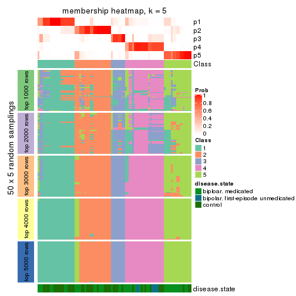
membership_heatmap(res, k = 6)
As soon as we have had the classes for columns, we can look for signatures which are significantly different between classes which can be candidate marks for certain classes. Following are the heatmaps for signatures.
Signature heatmaps where rows are scaled:
get_signatures(res, k = 2)
get_signatures(res, k = 3)
get_signatures(res, k = 4)
get_signatures(res, k = 5)

get_signatures(res, k = 6)
Signature heatmaps where rows are not scaled:
get_signatures(res, k = 2, scale_rows = FALSE)
get_signatures(res, k = 3, scale_rows = FALSE)
get_signatures(res, k = 4, scale_rows = FALSE)
get_signatures(res, k = 5, scale_rows = FALSE)
get_signatures(res, k = 6, scale_rows = FALSE)
Compare the overlap of signatures from different k:
compare_signatures(res)
get_signature() returns a data frame invisibly. TO get the list of signatures, the function
call should be assigned to a variable explicitly. In following code, if plot argument is set
to FALSE, no heatmap is plotted while only the differential analysis is performed.
# code only for demonstration
tb = get_signature(res, k = ..., plot = FALSE)
An example of the output of tb is:
#> which_row fdr mean_1 mean_2 scaled_mean_1 scaled_mean_2 km
#> 1 38 0.042760348 8.373488 9.131774 -0.5533452 0.5164555 1
#> 2 40 0.018707592 7.106213 8.469186 -0.6173731 0.5762149 1
#> 3 55 0.019134737 10.221463 11.207825 -0.6159697 0.5749050 1
#> 4 59 0.006059896 5.921854 7.869574 -0.6899429 0.6439467 1
#> 5 60 0.018055526 8.928898 10.211722 -0.6204761 0.5791110 1
#> 6 98 0.009384629 15.714769 14.887706 0.6635654 -0.6193277 2
...
The columns in tb are:
which_row: row indices corresponding to the input matrix.fdr: FDR for the differential test. mean_x: The mean value in group x.scaled_mean_x: The mean value in group x after rows are scaled.km: Row groups if k-means clustering is applied to rows.UMAP plot which shows how samples are separated.
dimension_reduction(res, k = 2, method = "UMAP")
dimension_reduction(res, k = 3, method = "UMAP")
dimension_reduction(res, k = 4, method = "UMAP")
dimension_reduction(res, k = 5, method = "UMAP")
dimension_reduction(res, k = 6, method = "UMAP")
Following heatmap shows how subgroups are split when increasing k:
collect_classes(res)
Test correlation between subgroups and known annotations. If the known annotation is numeric, one-way ANOVA test is applied, and if the known annotation is discrete, chi-squared contingency table test is applied.
test_to_known_factors(res)
#> n disease.state(p) k
#> CV:hclust 87 8.37e-03 2
#> CV:hclust 61 3.24e-02 3
#> CV:hclust 45 2.11e-02 4
#> CV:hclust 79 6.92e-05 5
#> CV:hclust 77 1.01e-04 6
If matrix rows can be associated to genes, consider to use GO_Enrichment(res,
...) to perform function enrichment for the signature genes.
The object with results only for a single top-value method and a single partition method can be extracted as:
res = res_list["CV", "kmeans"]
# you can also extract it by
# res = res_list["CV:kmeans"]
A summary of res and all the functions that can be applied to it:
res
#> A 'ConsensusPartition' object with k = 2, 3, 4, 5, 6.
#> On a matrix with 51941 rows and 88 columns.
#> Top rows (1000, 2000, 3000, 4000, 5000) are extracted by 'CV' method.
#> Subgroups are detected by 'kmeans' method.
#> Performed in total 1250 partitions by row resampling.
#> Best k for subgroups seems to be 2.
#>
#> Following methods can be applied to this 'ConsensusPartition' object:
#> [1] "cola_report" "collect_classes" "collect_plots"
#> [4] "collect_stats" "colnames" "compare_signatures"
#> [7] "consensus_heatmap" "dimension_reduction" "functional_enrichment"
#> [10] "get_anno_col" "get_anno" "get_classes"
#> [13] "get_consensus" "get_matrix" "get_membership"
#> [16] "get_param" "get_signatures" "get_stats"
#> [19] "is_best_k" "is_stable_k" "membership_heatmap"
#> [22] "ncol" "nrow" "plot_ecdf"
#> [25] "rownames" "select_partition_number" "show"
#> [28] "suggest_best_k" "test_to_known_factors"
collect_plots() function collects all the plots made from res for all k (number of partitions)
into one single page to provide an easy and fast comparison between different k.
collect_plots(res)
The plots are:
k and the heatmap of
predicted classes for each k.k.k.k.All the plots in panels can be made by individual functions and they are plotted later in this section.
select_partition_number() produces several plots showing different
statistics for choosing “optimized” k. There are following statistics:
k;k, the area increased is defined as \(A_k - A_{k-1}\).The detailed explanations of these statistics can be found in the cola vignette.
Generally speaking, lower PAC score, higher mean silhouette score or higher
concordance corresponds to better partition. Rand index and Jaccard index
measure how similar the current partition is compared to partition with k-1.
If they are too similar, we won't accept k is better than k-1.
select_partition_number(res)
The numeric values for all these statistics can be obtained by get_stats().
get_stats(res)
#> k 1-PAC mean_silhouette concordance area_increased Rand Jaccard
#> 2 2 0.947 0.930 0.962 0.5034 0.495 0.495
#> 3 3 0.373 0.400 0.660 0.3115 0.784 0.587
#> 4 4 0.438 0.365 0.606 0.1296 0.786 0.463
#> 5 5 0.547 0.484 0.650 0.0658 0.785 0.356
#> 6 6 0.639 0.512 0.665 0.0429 0.924 0.661
suggest_best_k() suggests the best \(k\) based on these statistics. The rules are as follows:
NA.suggest_best_k(res)
#> [1] 2
Following shows the table of the partitions (You need to click the show/hide
code output link to see it). The membership matrix (columns with name p*)
is inferred by
clue::cl_consensus()
function with the SE method. Basically the value in the membership matrix
represents the probability to belong to a certain group. The finall class
label for an item is determined with the group with highest probability it
belongs to.
In get_classes() function, the entropy is calculated from the membership
matrix and the silhouette score is calculated from the consensus matrix.
cbind(get_classes(res, k = 2), get_membership(res, k = 2))
#> class entropy silhouette p1 p2
#> GSM1130404 1 0.6531 0.815 0.832 0.168
#> GSM1130405 1 0.7056 0.782 0.808 0.192
#> GSM1130408 2 0.0000 0.948 0.000 1.000
#> GSM1130409 1 0.1843 0.965 0.972 0.028
#> GSM1130410 1 0.1633 0.967 0.976 0.024
#> GSM1130415 2 0.2948 0.933 0.052 0.948
#> GSM1130416 2 0.0000 0.948 0.000 1.000
#> GSM1130417 2 0.2948 0.933 0.052 0.948
#> GSM1130418 2 0.2948 0.933 0.052 0.948
#> GSM1130421 2 0.0000 0.948 0.000 1.000
#> GSM1130422 2 0.0376 0.948 0.004 0.996
#> GSM1130423 1 0.0672 0.971 0.992 0.008
#> GSM1130424 1 0.0672 0.971 0.992 0.008
#> GSM1130425 1 0.0376 0.971 0.996 0.004
#> GSM1130426 2 0.2948 0.933 0.052 0.948
#> GSM1130427 2 0.2948 0.933 0.052 0.948
#> GSM1130428 1 0.5408 0.869 0.876 0.124
#> GSM1130429 1 0.1633 0.966 0.976 0.024
#> GSM1130430 1 0.0938 0.971 0.988 0.012
#> GSM1130431 1 0.0672 0.971 0.992 0.008
#> GSM1130432 2 0.0672 0.948 0.008 0.992
#> GSM1130433 2 0.0672 0.948 0.008 0.992
#> GSM1130434 1 0.1414 0.966 0.980 0.020
#> GSM1130435 1 0.1843 0.965 0.972 0.028
#> GSM1130436 1 0.1414 0.966 0.980 0.020
#> GSM1130437 1 0.1414 0.966 0.980 0.020
#> GSM1130438 2 0.9732 0.312 0.404 0.596
#> GSM1130439 2 0.9732 0.312 0.404 0.596
#> GSM1130440 2 0.1184 0.946 0.016 0.984
#> GSM1130441 2 0.0000 0.948 0.000 1.000
#> GSM1130442 2 0.0000 0.948 0.000 1.000
#> GSM1130443 1 0.2948 0.942 0.948 0.052
#> GSM1130444 1 0.2948 0.942 0.948 0.052
#> GSM1130445 1 0.3584 0.937 0.932 0.068
#> GSM1130476 2 0.1184 0.946 0.016 0.984
#> GSM1130483 1 0.3431 0.942 0.936 0.064
#> GSM1130484 1 0.3431 0.942 0.936 0.064
#> GSM1130487 1 0.0000 0.971 1.000 0.000
#> GSM1130488 1 0.0000 0.971 1.000 0.000
#> GSM1130419 1 0.0000 0.971 1.000 0.000
#> GSM1130420 1 0.0000 0.971 1.000 0.000
#> GSM1130464 1 0.0000 0.971 1.000 0.000
#> GSM1130465 1 0.0000 0.971 1.000 0.000
#> GSM1130468 1 0.0000 0.971 1.000 0.000
#> GSM1130469 1 0.0000 0.971 1.000 0.000
#> GSM1130402 1 0.0938 0.971 0.988 0.012
#> GSM1130403 1 0.0938 0.971 0.988 0.012
#> GSM1130406 1 0.2948 0.942 0.948 0.052
#> GSM1130407 1 0.2948 0.942 0.948 0.052
#> GSM1130411 2 0.2948 0.933 0.052 0.948
#> GSM1130412 2 0.2948 0.933 0.052 0.948
#> GSM1130413 2 0.2948 0.933 0.052 0.948
#> GSM1130414 2 0.2948 0.933 0.052 0.948
#> GSM1130446 2 0.1184 0.944 0.016 0.984
#> GSM1130447 1 0.0672 0.971 0.992 0.008
#> GSM1130448 2 0.1184 0.946 0.016 0.984
#> GSM1130449 1 0.2948 0.942 0.948 0.052
#> GSM1130450 2 0.0938 0.946 0.012 0.988
#> GSM1130451 2 0.4939 0.882 0.108 0.892
#> GSM1130452 2 0.0000 0.948 0.000 1.000
#> GSM1130453 2 0.1184 0.946 0.016 0.984
#> GSM1130454 2 0.1184 0.946 0.016 0.984
#> GSM1130455 2 0.0000 0.948 0.000 1.000
#> GSM1130456 1 0.0000 0.971 1.000 0.000
#> GSM1130457 2 0.0000 0.948 0.000 1.000
#> GSM1130458 2 0.2948 0.933 0.052 0.948
#> GSM1130459 2 0.0000 0.948 0.000 1.000
#> GSM1130460 2 0.0000 0.948 0.000 1.000
#> GSM1130461 2 0.0000 0.948 0.000 1.000
#> GSM1130462 2 0.1184 0.944 0.016 0.984
#> GSM1130463 2 0.2948 0.928 0.052 0.948
#> GSM1130466 1 0.0000 0.971 1.000 0.000
#> GSM1130467 2 0.0000 0.948 0.000 1.000
#> GSM1130470 1 0.0000 0.971 1.000 0.000
#> GSM1130471 1 0.0672 0.971 0.992 0.008
#> GSM1130472 1 0.0672 0.971 0.992 0.008
#> GSM1130473 1 0.0672 0.971 0.992 0.008
#> GSM1130474 2 0.0672 0.948 0.008 0.992
#> GSM1130475 2 0.0000 0.948 0.000 1.000
#> GSM1130477 1 0.1843 0.965 0.972 0.028
#> GSM1130478 1 0.1843 0.965 0.972 0.028
#> GSM1130479 1 0.0672 0.971 0.992 0.008
#> GSM1130480 2 0.0938 0.947 0.012 0.988
#> GSM1130481 2 0.4431 0.906 0.092 0.908
#> GSM1130482 2 0.3431 0.928 0.064 0.936
#> GSM1130485 1 0.0000 0.971 1.000 0.000
#> GSM1130486 1 0.0000 0.971 1.000 0.000
#> GSM1130489 2 0.8713 0.633 0.292 0.708
cbind(get_classes(res, k = 3), get_membership(res, k = 3))
#> class entropy silhouette p1 p2 p3
#> GSM1130404 1 0.7199 0.3509 0.704 0.092 0.204
#> GSM1130405 1 0.7372 0.3528 0.704 0.128 0.168
#> GSM1130408 2 0.2261 0.6724 0.068 0.932 0.000
#> GSM1130409 1 0.6420 0.3082 0.688 0.024 0.288
#> GSM1130410 1 0.6357 0.3056 0.684 0.020 0.296
#> GSM1130415 2 0.5905 0.5882 0.352 0.648 0.000
#> GSM1130416 2 0.4931 0.6566 0.232 0.768 0.000
#> GSM1130417 2 0.5905 0.5882 0.352 0.648 0.000
#> GSM1130418 2 0.5905 0.5882 0.352 0.648 0.000
#> GSM1130421 2 0.2356 0.6765 0.072 0.928 0.000
#> GSM1130422 2 0.4351 0.6482 0.168 0.828 0.004
#> GSM1130423 3 0.5363 0.4780 0.276 0.000 0.724
#> GSM1130424 3 0.7647 0.0902 0.440 0.044 0.516
#> GSM1130425 3 0.5254 0.4925 0.264 0.000 0.736
#> GSM1130426 2 0.5988 0.5806 0.368 0.632 0.000
#> GSM1130427 2 0.6280 0.4620 0.460 0.540 0.000
#> GSM1130428 1 0.9076 0.1011 0.488 0.144 0.368
#> GSM1130429 1 0.8326 0.0121 0.488 0.080 0.432
#> GSM1130430 1 0.6294 0.3044 0.692 0.020 0.288
#> GSM1130431 1 0.6026 0.1516 0.624 0.000 0.376
#> GSM1130432 1 0.7074 -0.1885 0.500 0.480 0.020
#> GSM1130433 1 0.7054 -0.1490 0.524 0.456 0.020
#> GSM1130434 3 0.6033 0.2914 0.336 0.004 0.660
#> GSM1130435 3 0.6500 0.0789 0.464 0.004 0.532
#> GSM1130436 3 0.6008 0.2958 0.332 0.004 0.664
#> GSM1130437 3 0.6008 0.2956 0.332 0.004 0.664
#> GSM1130438 1 0.9555 0.1752 0.480 0.288 0.232
#> GSM1130439 1 0.9519 0.1669 0.484 0.292 0.224
#> GSM1130440 2 0.7397 0.1290 0.484 0.484 0.032
#> GSM1130441 2 0.2165 0.6854 0.064 0.936 0.000
#> GSM1130442 2 0.2448 0.6595 0.076 0.924 0.000
#> GSM1130443 3 0.4931 0.4200 0.232 0.000 0.768
#> GSM1130444 3 0.5873 0.3500 0.312 0.004 0.684
#> GSM1130445 3 0.6677 0.3085 0.324 0.024 0.652
#> GSM1130476 2 0.6772 0.4526 0.304 0.664 0.032
#> GSM1130483 1 0.7138 0.0165 0.540 0.024 0.436
#> GSM1130484 1 0.7130 0.0228 0.544 0.024 0.432
#> GSM1130487 3 0.4887 0.4564 0.228 0.000 0.772
#> GSM1130488 3 0.2878 0.5708 0.096 0.000 0.904
#> GSM1130419 3 0.0892 0.6022 0.020 0.000 0.980
#> GSM1130420 3 0.0892 0.6022 0.020 0.000 0.980
#> GSM1130464 3 0.2537 0.5768 0.080 0.000 0.920
#> GSM1130465 3 0.2261 0.5867 0.068 0.000 0.932
#> GSM1130468 3 0.1529 0.5960 0.040 0.000 0.960
#> GSM1130469 3 0.1289 0.5988 0.032 0.000 0.968
#> GSM1130402 1 0.6189 0.2144 0.632 0.004 0.364
#> GSM1130403 1 0.6229 0.2535 0.652 0.008 0.340
#> GSM1130406 3 0.6822 0.0428 0.480 0.012 0.508
#> GSM1130407 1 0.6948 -0.0478 0.512 0.016 0.472
#> GSM1130411 2 0.5678 0.5973 0.316 0.684 0.000
#> GSM1130412 2 0.5678 0.5973 0.316 0.684 0.000
#> GSM1130413 2 0.6045 0.5596 0.380 0.620 0.000
#> GSM1130414 2 0.5835 0.5981 0.340 0.660 0.000
#> GSM1130446 2 0.7251 0.4573 0.348 0.612 0.040
#> GSM1130447 3 0.6314 0.2658 0.392 0.004 0.604
#> GSM1130448 2 0.6772 0.4526 0.304 0.664 0.032
#> GSM1130449 1 0.7027 0.2587 0.724 0.104 0.172
#> GSM1130450 2 0.4575 0.6742 0.160 0.828 0.012
#> GSM1130451 1 0.9873 0.0816 0.392 0.348 0.260
#> GSM1130452 2 0.0237 0.6765 0.004 0.996 0.000
#> GSM1130453 2 0.6772 0.4526 0.304 0.664 0.032
#> GSM1130454 2 0.6387 0.4693 0.300 0.680 0.020
#> GSM1130455 2 0.1964 0.6596 0.056 0.944 0.000
#> GSM1130456 3 0.4346 0.5740 0.184 0.000 0.816
#> GSM1130457 2 0.4346 0.6608 0.184 0.816 0.000
#> GSM1130458 2 0.8128 0.2774 0.440 0.492 0.068
#> GSM1130459 2 0.2066 0.6854 0.060 0.940 0.000
#> GSM1130460 2 0.2165 0.6852 0.064 0.936 0.000
#> GSM1130461 2 0.3412 0.6351 0.124 0.876 0.000
#> GSM1130462 2 0.5020 0.6668 0.192 0.796 0.012
#> GSM1130463 2 0.7890 0.3944 0.372 0.564 0.064
#> GSM1130466 3 0.4062 0.5656 0.164 0.000 0.836
#> GSM1130467 2 0.2356 0.6852 0.072 0.928 0.000
#> GSM1130470 3 0.4002 0.5674 0.160 0.000 0.840
#> GSM1130471 3 0.5254 0.4905 0.264 0.000 0.736
#> GSM1130472 3 0.5254 0.4905 0.264 0.000 0.736
#> GSM1130473 3 0.5591 0.4393 0.304 0.000 0.696
#> GSM1130474 2 0.7366 0.3033 0.400 0.564 0.036
#> GSM1130475 2 0.3267 0.6319 0.116 0.884 0.000
#> GSM1130477 1 0.6451 0.0709 0.560 0.004 0.436
#> GSM1130478 1 0.6565 0.1091 0.576 0.008 0.416
#> GSM1130479 3 0.5859 0.3739 0.344 0.000 0.656
#> GSM1130480 2 0.7072 0.1651 0.476 0.504 0.020
#> GSM1130481 1 0.8725 -0.1398 0.476 0.416 0.108
#> GSM1130482 2 0.8277 0.2091 0.456 0.468 0.076
#> GSM1130485 3 0.4654 0.5664 0.208 0.000 0.792
#> GSM1130486 3 0.2356 0.5998 0.072 0.000 0.928
#> GSM1130489 1 0.9089 0.1844 0.536 0.288 0.176
cbind(get_classes(res, k = 4), get_membership(res, k = 4))
#> class entropy silhouette p1 p2 p3 p4
#> GSM1130404 1 0.582 0.2823 0.628 0.008 0.332 0.032
#> GSM1130405 1 0.565 0.3410 0.680 0.016 0.276 0.028
#> GSM1130408 2 0.314 0.5815 0.132 0.860 0.008 0.000
#> GSM1130409 1 0.630 0.2477 0.600 0.008 0.336 0.056
#> GSM1130410 1 0.623 0.2472 0.600 0.004 0.336 0.060
#> GSM1130415 2 0.614 0.2989 0.456 0.496 0.048 0.000
#> GSM1130416 2 0.557 0.4135 0.368 0.604 0.028 0.000
#> GSM1130417 2 0.614 0.3052 0.452 0.500 0.048 0.000
#> GSM1130418 2 0.614 0.3052 0.452 0.500 0.048 0.000
#> GSM1130421 2 0.376 0.5619 0.172 0.816 0.012 0.000
#> GSM1130422 2 0.620 0.5543 0.168 0.672 0.160 0.000
#> GSM1130423 4 0.481 0.4312 0.316 0.000 0.008 0.676
#> GSM1130424 1 0.552 0.0813 0.560 0.008 0.008 0.424
#> GSM1130425 4 0.549 0.4163 0.296 0.000 0.040 0.664
#> GSM1130426 1 0.620 -0.2639 0.508 0.440 0.052 0.000
#> GSM1130427 1 0.669 0.1042 0.596 0.276 0.128 0.000
#> GSM1130428 1 0.598 0.3451 0.668 0.060 0.008 0.264
#> GSM1130429 1 0.570 0.2830 0.652 0.032 0.008 0.308
#> GSM1130430 1 0.661 0.3221 0.604 0.004 0.292 0.100
#> GSM1130431 1 0.727 0.3086 0.540 0.004 0.296 0.160
#> GSM1130432 3 0.562 0.4599 0.108 0.172 0.720 0.000
#> GSM1130433 3 0.552 0.4745 0.152 0.116 0.732 0.000
#> GSM1130434 3 0.725 0.3555 0.216 0.000 0.544 0.240
#> GSM1130435 3 0.712 0.0615 0.428 0.000 0.444 0.128
#> GSM1130436 3 0.725 0.3564 0.216 0.000 0.544 0.240
#> GSM1130437 3 0.724 0.3546 0.212 0.000 0.544 0.244
#> GSM1130438 3 0.358 0.5164 0.008 0.140 0.844 0.008
#> GSM1130439 3 0.330 0.5047 0.000 0.144 0.848 0.008
#> GSM1130440 3 0.422 0.3897 0.000 0.248 0.748 0.004
#> GSM1130441 2 0.233 0.5957 0.072 0.916 0.012 0.000
#> GSM1130442 2 0.259 0.5895 0.004 0.892 0.104 0.000
#> GSM1130443 4 0.473 0.4324 0.000 0.000 0.364 0.636
#> GSM1130444 3 0.499 -0.1603 0.000 0.000 0.524 0.476
#> GSM1130445 3 0.525 -0.0384 0.004 0.004 0.572 0.420
#> GSM1130476 2 0.528 0.1898 0.000 0.524 0.468 0.008
#> GSM1130483 3 0.396 0.5502 0.100 0.004 0.844 0.052
#> GSM1130484 3 0.396 0.5502 0.100 0.004 0.844 0.052
#> GSM1130487 4 0.496 0.3908 0.004 0.000 0.380 0.616
#> GSM1130488 4 0.528 0.4836 0.028 0.000 0.304 0.668
#> GSM1130419 4 0.233 0.6427 0.012 0.000 0.072 0.916
#> GSM1130420 4 0.233 0.6427 0.012 0.000 0.072 0.916
#> GSM1130464 4 0.416 0.5776 0.004 0.000 0.240 0.756
#> GSM1130465 4 0.467 0.5685 0.020 0.000 0.244 0.736
#> GSM1130468 4 0.487 0.5964 0.040 0.000 0.212 0.748
#> GSM1130469 4 0.487 0.5964 0.040 0.000 0.212 0.748
#> GSM1130402 1 0.690 0.3120 0.580 0.004 0.292 0.124
#> GSM1130403 1 0.692 0.3331 0.584 0.004 0.280 0.132
#> GSM1130406 3 0.417 0.5366 0.060 0.000 0.824 0.116
#> GSM1130407 3 0.413 0.5443 0.064 0.000 0.828 0.108
#> GSM1130411 2 0.585 0.3240 0.460 0.508 0.032 0.000
#> GSM1130412 2 0.585 0.3240 0.460 0.508 0.032 0.000
#> GSM1130413 1 0.634 -0.2941 0.480 0.460 0.060 0.000
#> GSM1130414 2 0.621 0.2980 0.452 0.496 0.052 0.000
#> GSM1130446 1 0.776 0.1312 0.484 0.384 0.056 0.076
#> GSM1130447 1 0.552 0.0503 0.564 0.008 0.008 0.420
#> GSM1130448 2 0.528 0.1898 0.000 0.524 0.468 0.008
#> GSM1130449 3 0.746 0.2682 0.268 0.080 0.592 0.060
#> GSM1130450 2 0.655 0.3752 0.288 0.624 0.072 0.016
#> GSM1130451 3 0.982 -0.0226 0.180 0.300 0.308 0.212
#> GSM1130452 2 0.111 0.5995 0.004 0.968 0.028 0.000
#> GSM1130453 2 0.545 0.1929 0.004 0.520 0.468 0.008
#> GSM1130454 2 0.545 0.1929 0.004 0.520 0.468 0.008
#> GSM1130455 2 0.283 0.5816 0.004 0.876 0.120 0.000
#> GSM1130456 4 0.409 0.6467 0.096 0.000 0.072 0.832
#> GSM1130457 2 0.371 0.5298 0.192 0.804 0.004 0.000
#> GSM1130458 1 0.704 0.2996 0.572 0.320 0.020 0.088
#> GSM1130459 2 0.179 0.5953 0.068 0.932 0.000 0.000
#> GSM1130460 2 0.238 0.5944 0.068 0.916 0.016 0.000
#> GSM1130461 2 0.358 0.5558 0.004 0.816 0.180 0.000
#> GSM1130462 2 0.679 0.3356 0.308 0.600 0.068 0.024
#> GSM1130463 1 0.796 0.1482 0.488 0.364 0.072 0.076
#> GSM1130466 4 0.182 0.6425 0.060 0.000 0.004 0.936
#> GSM1130467 2 0.222 0.5910 0.092 0.908 0.000 0.000
#> GSM1130470 4 0.270 0.6128 0.124 0.000 0.000 0.876
#> GSM1130471 4 0.456 0.4602 0.296 0.000 0.004 0.700
#> GSM1130472 4 0.456 0.4602 0.296 0.000 0.004 0.700
#> GSM1130473 4 0.584 0.3172 0.352 0.000 0.044 0.604
#> GSM1130474 2 0.819 0.1783 0.192 0.468 0.312 0.028
#> GSM1130475 2 0.412 0.5105 0.008 0.772 0.220 0.000
#> GSM1130477 3 0.776 0.0110 0.372 0.000 0.392 0.236
#> GSM1130478 3 0.757 0.0436 0.372 0.000 0.432 0.196
#> GSM1130479 4 0.645 -0.0213 0.464 0.000 0.068 0.468
#> GSM1130480 3 0.536 0.3305 0.036 0.288 0.676 0.000
#> GSM1130481 1 0.694 0.4279 0.648 0.220 0.040 0.092
#> GSM1130482 1 0.740 0.3478 0.576 0.292 0.092 0.040
#> GSM1130485 4 0.458 0.6345 0.120 0.000 0.080 0.800
#> GSM1130486 4 0.556 0.5838 0.076 0.000 0.216 0.708
#> GSM1130489 1 0.687 0.4799 0.688 0.100 0.072 0.140
cbind(get_classes(res, k = 5), get_membership(res, k = 5))
#> class entropy silhouette p1 p2 p3 p4 p5
#> GSM1130404 1 0.6023 0.49471 0.636 0.212 0.000 0.024 0.128
#> GSM1130405 1 0.6083 0.46232 0.596 0.260 0.000 0.012 0.132
#> GSM1130408 2 0.5274 0.40380 0.028 0.640 0.308 0.004 0.020
#> GSM1130409 1 0.5875 0.49473 0.616 0.284 0.000 0.028 0.072
#> GSM1130410 1 0.5875 0.49473 0.616 0.284 0.000 0.028 0.072
#> GSM1130415 2 0.0671 0.85345 0.016 0.980 0.000 0.000 0.004
#> GSM1130416 2 0.1484 0.81781 0.000 0.944 0.048 0.000 0.008
#> GSM1130417 2 0.0960 0.85540 0.016 0.972 0.008 0.000 0.004
#> GSM1130418 2 0.0960 0.85540 0.016 0.972 0.008 0.000 0.004
#> GSM1130421 2 0.4456 0.59424 0.020 0.752 0.204 0.004 0.020
#> GSM1130422 2 0.5566 0.54642 0.072 0.696 0.200 0.016 0.016
#> GSM1130423 5 0.3368 0.53134 0.024 0.000 0.000 0.156 0.820
#> GSM1130424 5 0.4768 0.60737 0.092 0.044 0.040 0.028 0.796
#> GSM1130425 5 0.4194 0.53151 0.088 0.000 0.000 0.132 0.780
#> GSM1130426 2 0.2367 0.79013 0.072 0.904 0.004 0.000 0.020
#> GSM1130427 2 0.3331 0.71509 0.132 0.840 0.004 0.004 0.020
#> GSM1130428 5 0.7483 0.49899 0.144 0.180 0.056 0.044 0.576
#> GSM1130429 5 0.7202 0.52599 0.144 0.152 0.052 0.044 0.608
#> GSM1130430 1 0.6916 0.42564 0.564 0.200 0.008 0.032 0.196
#> GSM1130431 1 0.6989 0.41088 0.572 0.156 0.008 0.048 0.216
#> GSM1130432 1 0.4477 0.44090 0.736 0.016 0.228 0.012 0.008
#> GSM1130433 1 0.4475 0.49138 0.768 0.024 0.176 0.028 0.004
#> GSM1130434 1 0.5899 0.52654 0.632 0.036 0.000 0.260 0.072
#> GSM1130435 1 0.6387 0.54159 0.648 0.100 0.000 0.152 0.100
#> GSM1130436 1 0.5649 0.53222 0.652 0.028 0.000 0.252 0.068
#> GSM1130437 1 0.5714 0.53263 0.644 0.032 0.000 0.260 0.064
#> GSM1130438 1 0.7365 0.13214 0.432 0.004 0.340 0.188 0.036
#> GSM1130439 1 0.7536 0.07491 0.388 0.008 0.372 0.196 0.036
#> GSM1130440 3 0.7117 -0.06142 0.392 0.008 0.440 0.124 0.036
#> GSM1130441 3 0.4753 0.36954 0.004 0.340 0.636 0.004 0.016
#> GSM1130442 3 0.5044 0.42245 0.028 0.264 0.684 0.004 0.020
#> GSM1130443 4 0.2305 0.71672 0.028 0.000 0.044 0.916 0.012
#> GSM1130444 4 0.4422 0.59973 0.124 0.000 0.076 0.784 0.016
#> GSM1130445 4 0.5016 0.55014 0.160 0.000 0.092 0.732 0.016
#> GSM1130476 3 0.6693 0.33449 0.204 0.024 0.624 0.108 0.040
#> GSM1130483 1 0.4720 0.52922 0.748 0.008 0.064 0.176 0.004
#> GSM1130484 1 0.4720 0.52922 0.748 0.008 0.064 0.176 0.004
#> GSM1130487 4 0.1981 0.71896 0.048 0.000 0.028 0.924 0.000
#> GSM1130488 4 0.3076 0.73337 0.088 0.000 0.008 0.868 0.036
#> GSM1130419 4 0.4150 0.50966 0.000 0.000 0.000 0.612 0.388
#> GSM1130420 4 0.4150 0.50966 0.000 0.000 0.000 0.612 0.388
#> GSM1130464 4 0.3059 0.75340 0.016 0.000 0.008 0.856 0.120
#> GSM1130465 4 0.3340 0.75497 0.044 0.000 0.008 0.852 0.096
#> GSM1130468 4 0.3047 0.74883 0.024 0.000 0.012 0.868 0.096
#> GSM1130469 4 0.3047 0.74883 0.024 0.000 0.012 0.868 0.096
#> GSM1130402 1 0.6698 0.43160 0.576 0.184 0.004 0.028 0.208
#> GSM1130403 1 0.6837 0.41187 0.568 0.184 0.008 0.028 0.212
#> GSM1130406 1 0.5939 0.43930 0.616 0.004 0.088 0.276 0.016
#> GSM1130407 1 0.6035 0.44410 0.616 0.008 0.088 0.272 0.016
#> GSM1130411 2 0.0727 0.85209 0.004 0.980 0.012 0.000 0.004
#> GSM1130412 2 0.0727 0.85209 0.004 0.980 0.012 0.000 0.004
#> GSM1130413 2 0.1041 0.84327 0.032 0.964 0.000 0.000 0.004
#> GSM1130414 2 0.0510 0.85425 0.016 0.984 0.000 0.000 0.000
#> GSM1130446 3 0.7979 0.21364 0.116 0.080 0.456 0.032 0.316
#> GSM1130447 5 0.6947 0.56953 0.140 0.088 0.044 0.084 0.644
#> GSM1130448 3 0.6693 0.33449 0.204 0.024 0.624 0.108 0.040
#> GSM1130449 1 0.7349 0.31364 0.544 0.016 0.164 0.052 0.224
#> GSM1130450 3 0.7516 0.43205 0.096 0.140 0.556 0.016 0.192
#> GSM1130451 3 0.6672 0.42072 0.108 0.004 0.628 0.092 0.168
#> GSM1130452 3 0.4146 0.43593 0.000 0.268 0.716 0.004 0.012
#> GSM1130453 3 0.6367 0.35888 0.196 0.020 0.652 0.092 0.040
#> GSM1130454 3 0.6318 0.36090 0.196 0.020 0.656 0.088 0.040
#> GSM1130455 3 0.2873 0.51775 0.000 0.128 0.856 0.000 0.016
#> GSM1130456 4 0.4794 0.65639 0.080 0.000 0.012 0.744 0.164
#> GSM1130457 3 0.6782 0.28752 0.056 0.376 0.496 0.008 0.064
#> GSM1130458 3 0.8485 0.03093 0.140 0.112 0.372 0.032 0.344
#> GSM1130459 3 0.4913 0.35410 0.008 0.352 0.620 0.004 0.016
#> GSM1130460 3 0.5176 0.38325 0.012 0.328 0.628 0.004 0.028
#> GSM1130461 3 0.5823 0.45366 0.112 0.144 0.700 0.012 0.032
#> GSM1130462 3 0.7739 0.39496 0.108 0.140 0.528 0.016 0.208
#> GSM1130463 3 0.8013 0.20645 0.120 0.080 0.452 0.032 0.316
#> GSM1130466 4 0.4552 0.35065 0.008 0.000 0.000 0.524 0.468
#> GSM1130467 3 0.5012 0.29990 0.008 0.384 0.588 0.004 0.016
#> GSM1130470 5 0.4425 -0.25557 0.004 0.000 0.000 0.452 0.544
#> GSM1130471 5 0.3639 0.49940 0.024 0.000 0.000 0.184 0.792
#> GSM1130472 5 0.3639 0.49940 0.024 0.000 0.000 0.184 0.792
#> GSM1130473 5 0.3866 0.57756 0.096 0.008 0.000 0.076 0.820
#> GSM1130474 3 0.5037 0.49066 0.084 0.008 0.752 0.020 0.136
#> GSM1130475 3 0.3068 0.53274 0.028 0.084 0.872 0.000 0.016
#> GSM1130477 1 0.5973 0.40229 0.596 0.040 0.000 0.056 0.308
#> GSM1130478 1 0.5851 0.40908 0.604 0.040 0.000 0.048 0.308
#> GSM1130479 5 0.4104 0.55528 0.164 0.016 0.000 0.032 0.788
#> GSM1130480 1 0.6502 -0.00281 0.452 0.008 0.444 0.060 0.036
#> GSM1130481 5 0.8159 0.21343 0.184 0.092 0.248 0.020 0.456
#> GSM1130482 3 0.8494 -0.10622 0.292 0.092 0.312 0.016 0.288
#> GSM1130485 4 0.5657 0.59140 0.124 0.000 0.020 0.676 0.180
#> GSM1130486 4 0.4073 0.71720 0.092 0.000 0.004 0.800 0.104
#> GSM1130489 5 0.7796 0.35628 0.288 0.120 0.104 0.012 0.476
cbind(get_classes(res, k = 6), get_membership(res, k = 6))
#> class entropy silhouette p1 p2 p3 p4 p5 p6
#> GSM1130404 1 0.5334 0.653383 0.692 0.116 0.024 0.012 0.004 0.152
#> GSM1130405 1 0.5487 0.637570 0.664 0.144 0.020 0.008 0.004 0.160
#> GSM1130408 2 0.4925 0.034698 0.004 0.504 0.052 0.000 0.440 0.000
#> GSM1130409 1 0.4594 0.654168 0.708 0.224 0.012 0.012 0.000 0.044
#> GSM1130410 1 0.4594 0.654168 0.708 0.224 0.012 0.012 0.000 0.044
#> GSM1130415 2 0.0146 0.851690 0.004 0.996 0.000 0.000 0.000 0.000
#> GSM1130416 2 0.1124 0.830775 0.000 0.956 0.008 0.000 0.036 0.000
#> GSM1130417 2 0.0436 0.852009 0.004 0.988 0.004 0.000 0.004 0.000
#> GSM1130418 2 0.0436 0.852009 0.004 0.988 0.004 0.000 0.004 0.000
#> GSM1130421 2 0.3414 0.705570 0.008 0.812 0.040 0.000 0.140 0.000
#> GSM1130422 2 0.5064 0.607027 0.032 0.704 0.112 0.004 0.148 0.000
#> GSM1130423 6 0.5884 -0.244555 0.024 0.000 0.428 0.108 0.000 0.440
#> GSM1130424 6 0.2890 0.456759 0.008 0.004 0.120 0.016 0.000 0.852
#> GSM1130425 3 0.6369 0.127449 0.076 0.000 0.456 0.092 0.000 0.376
#> GSM1130426 2 0.3626 0.719970 0.096 0.808 0.008 0.000 0.000 0.088
#> GSM1130427 2 0.3764 0.702988 0.108 0.796 0.008 0.000 0.000 0.088
#> GSM1130428 6 0.3379 0.573414 0.048 0.060 0.008 0.016 0.012 0.856
#> GSM1130429 6 0.3158 0.571066 0.048 0.052 0.008 0.016 0.008 0.868
#> GSM1130430 1 0.5952 0.595594 0.600 0.132 0.016 0.024 0.000 0.228
#> GSM1130431 1 0.6068 0.567933 0.588 0.076 0.016 0.056 0.000 0.264
#> GSM1130432 1 0.5386 0.518781 0.708 0.012 0.120 0.012 0.116 0.032
#> GSM1130433 1 0.4566 0.551892 0.756 0.012 0.124 0.012 0.092 0.004
#> GSM1130434 1 0.4602 0.664415 0.764 0.016 0.040 0.140 0.008 0.032
#> GSM1130435 1 0.4836 0.680529 0.768 0.044 0.040 0.100 0.008 0.040
#> GSM1130436 1 0.3893 0.666304 0.804 0.012 0.040 0.128 0.008 0.008
#> GSM1130437 1 0.4040 0.661380 0.792 0.012 0.044 0.136 0.008 0.008
#> GSM1130438 3 0.6546 0.077905 0.296 0.000 0.400 0.024 0.280 0.000
#> GSM1130439 3 0.6703 0.051121 0.248 0.000 0.412 0.040 0.300 0.000
#> GSM1130440 3 0.6561 0.031004 0.248 0.004 0.412 0.020 0.316 0.000
#> GSM1130441 5 0.3606 0.493682 0.000 0.256 0.000 0.000 0.728 0.016
#> GSM1130442 5 0.3999 0.569094 0.004 0.164 0.072 0.000 0.760 0.000
#> GSM1130443 4 0.1542 0.805875 0.004 0.000 0.052 0.936 0.008 0.000
#> GSM1130444 4 0.3079 0.740121 0.028 0.000 0.128 0.836 0.008 0.000
#> GSM1130445 4 0.4363 0.660841 0.048 0.000 0.176 0.744 0.032 0.000
#> GSM1130476 5 0.5768 0.231534 0.080 0.008 0.396 0.020 0.496 0.000
#> GSM1130483 1 0.4129 0.614344 0.796 0.004 0.116 0.044 0.032 0.008
#> GSM1130484 1 0.4129 0.614344 0.796 0.004 0.116 0.044 0.032 0.008
#> GSM1130487 4 0.1864 0.806373 0.032 0.000 0.040 0.924 0.004 0.000
#> GSM1130488 4 0.1692 0.809652 0.048 0.000 0.012 0.932 0.008 0.000
#> GSM1130419 4 0.4435 0.572049 0.000 0.000 0.264 0.672 0.000 0.064
#> GSM1130420 4 0.4435 0.572049 0.000 0.000 0.264 0.672 0.000 0.064
#> GSM1130464 4 0.0717 0.819376 0.008 0.000 0.016 0.976 0.000 0.000
#> GSM1130465 4 0.1180 0.818777 0.024 0.000 0.008 0.960 0.004 0.004
#> GSM1130468 4 0.1338 0.819625 0.008 0.000 0.004 0.952 0.004 0.032
#> GSM1130469 4 0.1338 0.819625 0.008 0.000 0.004 0.952 0.004 0.032
#> GSM1130402 1 0.5892 0.616932 0.624 0.124 0.020 0.028 0.000 0.204
#> GSM1130403 1 0.6066 0.568875 0.580 0.120 0.020 0.024 0.000 0.256
#> GSM1130406 1 0.5777 0.518127 0.624 0.000 0.160 0.176 0.036 0.004
#> GSM1130407 1 0.5777 0.518127 0.624 0.000 0.160 0.176 0.036 0.004
#> GSM1130411 2 0.0458 0.849111 0.000 0.984 0.000 0.000 0.016 0.000
#> GSM1130412 2 0.0458 0.849111 0.000 0.984 0.000 0.000 0.016 0.000
#> GSM1130413 2 0.1082 0.830271 0.040 0.956 0.004 0.000 0.000 0.000
#> GSM1130414 2 0.0291 0.851092 0.004 0.992 0.004 0.000 0.000 0.000
#> GSM1130446 6 0.4750 0.505053 0.000 0.040 0.008 0.012 0.280 0.660
#> GSM1130447 6 0.3036 0.564053 0.036 0.032 0.008 0.044 0.004 0.876
#> GSM1130448 5 0.5768 0.231534 0.080 0.008 0.396 0.020 0.496 0.000
#> GSM1130449 1 0.6801 0.402069 0.524 0.000 0.096 0.032 0.072 0.276
#> GSM1130450 6 0.5941 0.241709 0.004 0.068 0.024 0.012 0.408 0.484
#> GSM1130451 5 0.6771 -0.073712 0.012 0.000 0.072 0.112 0.456 0.348
#> GSM1130452 5 0.2882 0.566073 0.000 0.180 0.000 0.000 0.812 0.008
#> GSM1130453 5 0.5698 0.273395 0.080 0.008 0.368 0.012 0.528 0.004
#> GSM1130454 5 0.5698 0.273395 0.080 0.008 0.368 0.012 0.528 0.004
#> GSM1130455 5 0.1692 0.574171 0.000 0.048 0.012 0.000 0.932 0.008
#> GSM1130456 4 0.2662 0.784950 0.008 0.000 0.012 0.868 0.004 0.108
#> GSM1130457 5 0.5865 0.156322 0.000 0.228 0.000 0.000 0.476 0.296
#> GSM1130458 6 0.4766 0.556843 0.032 0.048 0.000 0.004 0.212 0.704
#> GSM1130459 5 0.3756 0.481428 0.000 0.268 0.000 0.000 0.712 0.020
#> GSM1130460 5 0.4244 0.514236 0.000 0.200 0.000 0.000 0.720 0.080
#> GSM1130461 5 0.4023 0.504810 0.008 0.052 0.188 0.000 0.752 0.000
#> GSM1130462 6 0.5637 0.347034 0.004 0.068 0.012 0.012 0.360 0.544
#> GSM1130463 6 0.4961 0.506040 0.004 0.040 0.012 0.012 0.276 0.656
#> GSM1130466 4 0.5510 0.412807 0.008 0.000 0.312 0.556 0.000 0.124
#> GSM1130467 5 0.3879 0.447615 0.000 0.292 0.000 0.000 0.688 0.020
#> GSM1130470 3 0.5955 -0.000596 0.000 0.000 0.436 0.332 0.000 0.232
#> GSM1130471 3 0.5988 0.128181 0.020 0.000 0.432 0.132 0.000 0.416
#> GSM1130472 3 0.5988 0.128181 0.020 0.000 0.432 0.132 0.000 0.416
#> GSM1130473 3 0.5978 0.044064 0.072 0.000 0.452 0.044 0.004 0.428
#> GSM1130474 5 0.5661 0.256068 0.032 0.000 0.096 0.008 0.620 0.244
#> GSM1130475 5 0.3190 0.562827 0.012 0.036 0.052 0.004 0.868 0.028
#> GSM1130477 1 0.4822 0.541046 0.672 0.012 0.248 0.000 0.004 0.064
#> GSM1130478 1 0.4822 0.541046 0.672 0.012 0.248 0.000 0.004 0.064
#> GSM1130479 6 0.6027 -0.084064 0.120 0.000 0.404 0.020 0.004 0.452
#> GSM1130480 3 0.6836 0.016195 0.272 0.004 0.380 0.008 0.316 0.020
#> GSM1130481 6 0.5350 0.591689 0.084 0.012 0.060 0.000 0.144 0.700
#> GSM1130482 6 0.7356 0.350510 0.256 0.020 0.064 0.000 0.256 0.404
#> GSM1130485 4 0.3537 0.755132 0.040 0.000 0.020 0.824 0.004 0.112
#> GSM1130486 4 0.3262 0.777930 0.072 0.000 0.016 0.852 0.008 0.052
#> GSM1130489 6 0.4892 0.488913 0.144 0.036 0.084 0.000 0.008 0.728
Heatmaps for the consensus matrix. It visualizes the probability of two samples to be in a same group.
consensus_heatmap(res, k = 2)
consensus_heatmap(res, k = 3)
consensus_heatmap(res, k = 4)
consensus_heatmap(res, k = 5)
consensus_heatmap(res, k = 6)
Heatmaps for the membership of samples in all partitions to see how consistent they are:
membership_heatmap(res, k = 2)
membership_heatmap(res, k = 3)
membership_heatmap(res, k = 4)
membership_heatmap(res, k = 5)
membership_heatmap(res, k = 6)
As soon as we have had the classes for columns, we can look for signatures which are significantly different between classes which can be candidate marks for certain classes. Following are the heatmaps for signatures.
Signature heatmaps where rows are scaled:
get_signatures(res, k = 2)
get_signatures(res, k = 3)
get_signatures(res, k = 4)
get_signatures(res, k = 5)
get_signatures(res, k = 6)
Signature heatmaps where rows are not scaled:
get_signatures(res, k = 2, scale_rows = FALSE)
get_signatures(res, k = 3, scale_rows = FALSE)
get_signatures(res, k = 4, scale_rows = FALSE)
get_signatures(res, k = 5, scale_rows = FALSE)
get_signatures(res, k = 6, scale_rows = FALSE)
Compare the overlap of signatures from different k:
compare_signatures(res)
get_signature() returns a data frame invisibly. TO get the list of signatures, the function
call should be assigned to a variable explicitly. In following code, if plot argument is set
to FALSE, no heatmap is plotted while only the differential analysis is performed.
# code only for demonstration
tb = get_signature(res, k = ..., plot = FALSE)
An example of the output of tb is:
#> which_row fdr mean_1 mean_2 scaled_mean_1 scaled_mean_2 km
#> 1 38 0.042760348 8.373488 9.131774 -0.5533452 0.5164555 1
#> 2 40 0.018707592 7.106213 8.469186 -0.6173731 0.5762149 1
#> 3 55 0.019134737 10.221463 11.207825 -0.6159697 0.5749050 1
#> 4 59 0.006059896 5.921854 7.869574 -0.6899429 0.6439467 1
#> 5 60 0.018055526 8.928898 10.211722 -0.6204761 0.5791110 1
#> 6 98 0.009384629 15.714769 14.887706 0.6635654 -0.6193277 2
...
The columns in tb are:
which_row: row indices corresponding to the input matrix.fdr: FDR for the differential test. mean_x: The mean value in group x.scaled_mean_x: The mean value in group x after rows are scaled.km: Row groups if k-means clustering is applied to rows.UMAP plot which shows how samples are separated.
dimension_reduction(res, k = 2, method = "UMAP")
dimension_reduction(res, k = 3, method = "UMAP")
dimension_reduction(res, k = 4, method = "UMAP")
dimension_reduction(res, k = 5, method = "UMAP")
dimension_reduction(res, k = 6, method = "UMAP")
Following heatmap shows how subgroups are split when increasing k:
collect_classes(res)
Test correlation between subgroups and known annotations. If the known annotation is numeric, one-way ANOVA test is applied, and if the known annotation is discrete, chi-squared contingency table test is applied.
test_to_known_factors(res)
#> n disease.state(p) k
#> CV:kmeans 86 0.010881 2
#> CV:kmeans 36 0.000469 3
#> CV:kmeans 30 0.001625 4
#> CV:kmeans 41 0.004897 5
#> CV:kmeans 59 0.000169 6
If matrix rows can be associated to genes, consider to use GO_Enrichment(res,
...) to perform function enrichment for the signature genes.
The object with results only for a single top-value method and a single partition method can be extracted as:
res = res_list["CV", "skmeans"]
# you can also extract it by
# res = res_list["CV:skmeans"]
A summary of res and all the functions that can be applied to it:
res
#> A 'ConsensusPartition' object with k = 2, 3, 4, 5, 6.
#> On a matrix with 51941 rows and 88 columns.
#> Top rows (1000, 2000, 3000, 4000, 5000) are extracted by 'CV' method.
#> Subgroups are detected by 'skmeans' method.
#> Performed in total 1250 partitions by row resampling.
#> Best k for subgroups seems to be 2.
#>
#> Following methods can be applied to this 'ConsensusPartition' object:
#> [1] "cola_report" "collect_classes" "collect_plots"
#> [4] "collect_stats" "colnames" "compare_signatures"
#> [7] "consensus_heatmap" "dimension_reduction" "functional_enrichment"
#> [10] "get_anno_col" "get_anno" "get_classes"
#> [13] "get_consensus" "get_matrix" "get_membership"
#> [16] "get_param" "get_signatures" "get_stats"
#> [19] "is_best_k" "is_stable_k" "membership_heatmap"
#> [22] "ncol" "nrow" "plot_ecdf"
#> [25] "rownames" "select_partition_number" "show"
#> [28] "suggest_best_k" "test_to_known_factors"
collect_plots() function collects all the plots made from res for all k (number of partitions)
into one single page to provide an easy and fast comparison between different k.
collect_plots(res)
The plots are:
k and the heatmap of
predicted classes for each k.k.k.k.All the plots in panels can be made by individual functions and they are plotted later in this section.
select_partition_number() produces several plots showing different
statistics for choosing “optimized” k. There are following statistics:
k;k, the area increased is defined as \(A_k - A_{k-1}\).The detailed explanations of these statistics can be found in the cola vignette.
Generally speaking, lower PAC score, higher mean silhouette score or higher
concordance corresponds to better partition. Rand index and Jaccard index
measure how similar the current partition is compared to partition with k-1.
If they are too similar, we won't accept k is better than k-1.
select_partition_number(res)
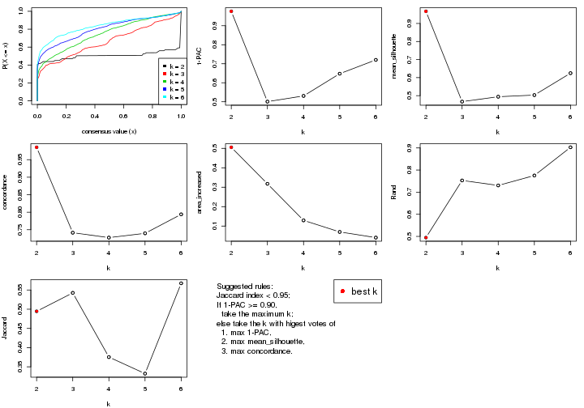
The numeric values for all these statistics can be obtained by get_stats().
get_stats(res)
#> k 1-PAC mean_silhouette concordance area_increased Rand Jaccard
#> 2 2 0.976 0.967 0.985 0.5054 0.495 0.495
#> 3 3 0.501 0.467 0.741 0.3176 0.753 0.543
#> 4 4 0.531 0.494 0.728 0.1293 0.730 0.375
#> 5 5 0.648 0.503 0.740 0.0698 0.775 0.332
#> 6 6 0.720 0.625 0.794 0.0406 0.903 0.567
suggest_best_k() suggests the best \(k\) based on these statistics. The rules are as follows:
NA.suggest_best_k(res)
#> [1] 2
Following shows the table of the partitions (You need to click the show/hide
code output link to see it). The membership matrix (columns with name p*)
is inferred by
clue::cl_consensus()
function with the SE method. Basically the value in the membership matrix
represents the probability to belong to a certain group. The finall class
label for an item is determined with the group with highest probability it
belongs to.
In get_classes() function, the entropy is calculated from the membership
matrix and the silhouette score is calculated from the consensus matrix.
cbind(get_classes(res, k = 2), get_membership(res, k = 2))
#> class entropy silhouette p1 p2
#> GSM1130404 1 0.6247 0.818 0.844 0.156
#> GSM1130405 1 0.6438 0.808 0.836 0.164
#> GSM1130408 2 0.0000 0.980 0.000 1.000
#> GSM1130409 1 0.0000 0.989 1.000 0.000
#> GSM1130410 1 0.0000 0.989 1.000 0.000
#> GSM1130415 2 0.0000 0.980 0.000 1.000
#> GSM1130416 2 0.0000 0.980 0.000 1.000
#> GSM1130417 2 0.0000 0.980 0.000 1.000
#> GSM1130418 2 0.0000 0.980 0.000 1.000
#> GSM1130421 2 0.0000 0.980 0.000 1.000
#> GSM1130422 2 0.0000 0.980 0.000 1.000
#> GSM1130423 1 0.0000 0.989 1.000 0.000
#> GSM1130424 1 0.0000 0.989 1.000 0.000
#> GSM1130425 1 0.0000 0.989 1.000 0.000
#> GSM1130426 2 0.0000 0.980 0.000 1.000
#> GSM1130427 2 0.0000 0.980 0.000 1.000
#> GSM1130428 1 0.5294 0.866 0.880 0.120
#> GSM1130429 1 0.0000 0.989 1.000 0.000
#> GSM1130430 1 0.0000 0.989 1.000 0.000
#> GSM1130431 1 0.0000 0.989 1.000 0.000
#> GSM1130432 2 0.0000 0.980 0.000 1.000
#> GSM1130433 2 0.0000 0.980 0.000 1.000
#> GSM1130434 1 0.0000 0.989 1.000 0.000
#> GSM1130435 1 0.0000 0.989 1.000 0.000
#> GSM1130436 1 0.0000 0.989 1.000 0.000
#> GSM1130437 1 0.0000 0.989 1.000 0.000
#> GSM1130438 2 0.8386 0.638 0.268 0.732
#> GSM1130439 2 0.8386 0.638 0.268 0.732
#> GSM1130440 2 0.0000 0.980 0.000 1.000
#> GSM1130441 2 0.0000 0.980 0.000 1.000
#> GSM1130442 2 0.0000 0.980 0.000 1.000
#> GSM1130443 1 0.0000 0.989 1.000 0.000
#> GSM1130444 1 0.0000 0.989 1.000 0.000
#> GSM1130445 1 0.0000 0.989 1.000 0.000
#> GSM1130476 2 0.0000 0.980 0.000 1.000
#> GSM1130483 1 0.0000 0.989 1.000 0.000
#> GSM1130484 1 0.0000 0.989 1.000 0.000
#> GSM1130487 1 0.0000 0.989 1.000 0.000
#> GSM1130488 1 0.0000 0.989 1.000 0.000
#> GSM1130419 1 0.0000 0.989 1.000 0.000
#> GSM1130420 1 0.0000 0.989 1.000 0.000
#> GSM1130464 1 0.0000 0.989 1.000 0.000
#> GSM1130465 1 0.0000 0.989 1.000 0.000
#> GSM1130468 1 0.0000 0.989 1.000 0.000
#> GSM1130469 1 0.0000 0.989 1.000 0.000
#> GSM1130402 1 0.0000 0.989 1.000 0.000
#> GSM1130403 1 0.0000 0.989 1.000 0.000
#> GSM1130406 1 0.0000 0.989 1.000 0.000
#> GSM1130407 1 0.0000 0.989 1.000 0.000
#> GSM1130411 2 0.0000 0.980 0.000 1.000
#> GSM1130412 2 0.0000 0.980 0.000 1.000
#> GSM1130413 2 0.0000 0.980 0.000 1.000
#> GSM1130414 2 0.0000 0.980 0.000 1.000
#> GSM1130446 2 0.0000 0.980 0.000 1.000
#> GSM1130447 1 0.0000 0.989 1.000 0.000
#> GSM1130448 2 0.0000 0.980 0.000 1.000
#> GSM1130449 1 0.1633 0.967 0.976 0.024
#> GSM1130450 2 0.0000 0.980 0.000 1.000
#> GSM1130451 2 0.2236 0.947 0.036 0.964
#> GSM1130452 2 0.0000 0.980 0.000 1.000
#> GSM1130453 2 0.0000 0.980 0.000 1.000
#> GSM1130454 2 0.0000 0.980 0.000 1.000
#> GSM1130455 2 0.0000 0.980 0.000 1.000
#> GSM1130456 1 0.0000 0.989 1.000 0.000
#> GSM1130457 2 0.0000 0.980 0.000 1.000
#> GSM1130458 2 0.0000 0.980 0.000 1.000
#> GSM1130459 2 0.0000 0.980 0.000 1.000
#> GSM1130460 2 0.0000 0.980 0.000 1.000
#> GSM1130461 2 0.0000 0.980 0.000 1.000
#> GSM1130462 2 0.0000 0.980 0.000 1.000
#> GSM1130463 2 0.0000 0.980 0.000 1.000
#> GSM1130466 1 0.0000 0.989 1.000 0.000
#> GSM1130467 2 0.0000 0.980 0.000 1.000
#> GSM1130470 1 0.0000 0.989 1.000 0.000
#> GSM1130471 1 0.0000 0.989 1.000 0.000
#> GSM1130472 1 0.0000 0.989 1.000 0.000
#> GSM1130473 1 0.0000 0.989 1.000 0.000
#> GSM1130474 2 0.0000 0.980 0.000 1.000
#> GSM1130475 2 0.0000 0.980 0.000 1.000
#> GSM1130477 1 0.0000 0.989 1.000 0.000
#> GSM1130478 1 0.0000 0.989 1.000 0.000
#> GSM1130479 1 0.0000 0.989 1.000 0.000
#> GSM1130480 2 0.0000 0.980 0.000 1.000
#> GSM1130481 2 0.0672 0.973 0.008 0.992
#> GSM1130482 2 0.0000 0.980 0.000 1.000
#> GSM1130485 1 0.0000 0.989 1.000 0.000
#> GSM1130486 1 0.0000 0.989 1.000 0.000
#> GSM1130489 2 0.8081 0.678 0.248 0.752
cbind(get_classes(res, k = 3), get_membership(res, k = 3))
#> class entropy silhouette p1 p2 p3
#> GSM1130404 2 0.4796 0.0491 0.220 0.780 0.000
#> GSM1130405 2 0.4452 0.1344 0.192 0.808 0.000
#> GSM1130408 3 0.6305 -0.5454 0.000 0.484 0.516
#> GSM1130409 1 0.6305 0.5602 0.516 0.484 0.000
#> GSM1130410 1 0.6299 0.5679 0.524 0.476 0.000
#> GSM1130415 2 0.5621 0.7546 0.000 0.692 0.308
#> GSM1130416 2 0.5733 0.7456 0.000 0.676 0.324
#> GSM1130417 2 0.5621 0.7546 0.000 0.692 0.308
#> GSM1130418 2 0.5621 0.7546 0.000 0.692 0.308
#> GSM1130421 3 0.6305 -0.5454 0.000 0.484 0.516
#> GSM1130422 3 0.5497 -0.0598 0.000 0.292 0.708
#> GSM1130423 1 0.1643 0.7693 0.956 0.044 0.000
#> GSM1130424 1 0.4702 0.6681 0.788 0.212 0.000
#> GSM1130425 1 0.1643 0.7693 0.956 0.044 0.000
#> GSM1130426 2 0.5621 0.7546 0.000 0.692 0.308
#> GSM1130427 2 0.5621 0.7546 0.000 0.692 0.308
#> GSM1130428 2 0.6299 -0.0937 0.476 0.524 0.000
#> GSM1130429 1 0.6274 0.2401 0.544 0.456 0.000
#> GSM1130430 1 0.6302 0.5635 0.520 0.480 0.000
#> GSM1130431 1 0.5882 0.6558 0.652 0.348 0.000
#> GSM1130432 3 0.5291 0.4915 0.000 0.268 0.732
#> GSM1130433 3 0.5560 0.4836 0.000 0.300 0.700
#> GSM1130434 1 0.5497 0.6639 0.708 0.292 0.000
#> GSM1130435 1 0.5810 0.6539 0.664 0.336 0.000
#> GSM1130436 1 0.5497 0.6639 0.708 0.292 0.000
#> GSM1130437 1 0.5722 0.6625 0.704 0.292 0.004
#> GSM1130438 3 0.7002 0.4524 0.048 0.280 0.672
#> GSM1130439 3 0.6905 0.4563 0.044 0.280 0.676
#> GSM1130440 3 0.5397 0.4911 0.000 0.280 0.720
#> GSM1130441 2 0.6308 0.5564 0.000 0.508 0.492
#> GSM1130442 3 0.5678 -0.1337 0.000 0.316 0.684
#> GSM1130443 1 0.6299 0.1326 0.524 0.000 0.476
#> GSM1130444 1 0.7075 0.1041 0.496 0.020 0.484
#> GSM1130445 1 0.7075 0.0965 0.492 0.020 0.488
#> GSM1130476 3 0.0000 0.4397 0.000 0.000 1.000
#> GSM1130483 3 0.9437 0.2042 0.208 0.300 0.492
#> GSM1130484 3 0.9437 0.2042 0.208 0.300 0.492
#> GSM1130487 1 0.6053 0.5321 0.720 0.020 0.260
#> GSM1130488 1 0.1315 0.7686 0.972 0.020 0.008
#> GSM1130419 1 0.0000 0.7717 1.000 0.000 0.000
#> GSM1130420 1 0.0000 0.7717 1.000 0.000 0.000
#> GSM1130464 1 0.0592 0.7696 0.988 0.000 0.012
#> GSM1130465 1 0.1315 0.7686 0.972 0.020 0.008
#> GSM1130468 1 0.0592 0.7696 0.988 0.000 0.012
#> GSM1130469 1 0.0237 0.7712 0.996 0.000 0.004
#> GSM1130402 1 0.6260 0.5911 0.552 0.448 0.000
#> GSM1130403 1 0.6260 0.5911 0.552 0.448 0.000
#> GSM1130406 3 0.9509 0.1851 0.220 0.296 0.484
#> GSM1130407 3 0.9468 0.1980 0.212 0.300 0.488
#> GSM1130411 2 0.5621 0.7546 0.000 0.692 0.308
#> GSM1130412 2 0.5621 0.7546 0.000 0.692 0.308
#> GSM1130413 2 0.5621 0.7546 0.000 0.692 0.308
#> GSM1130414 2 0.5621 0.7546 0.000 0.692 0.308
#> GSM1130446 2 0.7069 0.6128 0.024 0.568 0.408
#> GSM1130447 1 0.4346 0.6942 0.816 0.184 0.000
#> GSM1130448 3 0.0000 0.4397 0.000 0.000 1.000
#> GSM1130449 3 0.6998 0.4481 0.044 0.292 0.664
#> GSM1130450 3 0.6280 -0.4954 0.000 0.460 0.540
#> GSM1130451 3 0.6539 0.2813 0.288 0.028 0.684
#> GSM1130452 3 0.6307 -0.5529 0.000 0.488 0.512
#> GSM1130453 3 0.0000 0.4397 0.000 0.000 1.000
#> GSM1130454 3 0.0000 0.4397 0.000 0.000 1.000
#> GSM1130455 3 0.5560 -0.0851 0.000 0.300 0.700
#> GSM1130456 1 0.1163 0.7688 0.972 0.028 0.000
#> GSM1130457 2 0.5926 0.7259 0.000 0.644 0.356
#> GSM1130458 2 0.6387 0.7214 0.020 0.680 0.300
#> GSM1130459 2 0.6308 0.5564 0.000 0.508 0.492
#> GSM1130460 2 0.6308 0.5564 0.000 0.508 0.492
#> GSM1130461 3 0.4504 0.1827 0.000 0.196 0.804
#> GSM1130462 3 0.6495 -0.4988 0.004 0.460 0.536
#> GSM1130463 3 0.7188 -0.4952 0.024 0.484 0.492
#> GSM1130466 1 0.1163 0.7688 0.972 0.028 0.000
#> GSM1130467 2 0.6308 0.5564 0.000 0.508 0.492
#> GSM1130470 1 0.1163 0.7688 0.972 0.028 0.000
#> GSM1130471 1 0.1643 0.7693 0.956 0.044 0.000
#> GSM1130472 1 0.1643 0.7693 0.956 0.044 0.000
#> GSM1130473 1 0.1643 0.7693 0.956 0.044 0.000
#> GSM1130474 3 0.2318 0.4414 0.028 0.028 0.944
#> GSM1130475 3 0.4452 0.1901 0.000 0.192 0.808
#> GSM1130477 1 0.5706 0.6572 0.680 0.320 0.000
#> GSM1130478 1 0.7285 0.6252 0.632 0.320 0.048
#> GSM1130479 1 0.1753 0.7691 0.952 0.048 0.000
#> GSM1130480 3 0.2537 0.4690 0.000 0.080 0.920
#> GSM1130481 2 0.7334 0.6977 0.048 0.624 0.328
#> GSM1130482 2 0.7072 0.5467 0.020 0.504 0.476
#> GSM1130485 1 0.1163 0.7688 0.972 0.028 0.000
#> GSM1130486 1 0.0424 0.7716 0.992 0.008 0.000
#> GSM1130489 2 0.8009 0.6337 0.100 0.624 0.276
cbind(get_classes(res, k = 4), get_membership(res, k = 4))
#> class entropy silhouette p1 p2 p3 p4
#> GSM1130404 2 0.5800 0.3682 0.420 0.548 0.000 0.032
#> GSM1130405 2 0.5453 0.5186 0.320 0.648 0.000 0.032
#> GSM1130408 3 0.6008 0.3111 0.040 0.464 0.496 0.000
#> GSM1130409 2 0.5548 0.4956 0.340 0.628 0.000 0.032
#> GSM1130410 2 0.5632 0.4920 0.340 0.624 0.000 0.036
#> GSM1130415 2 0.0000 0.7813 0.000 1.000 0.000 0.000
#> GSM1130416 2 0.0000 0.7813 0.000 1.000 0.000 0.000
#> GSM1130417 2 0.0000 0.7813 0.000 1.000 0.000 0.000
#> GSM1130418 2 0.0000 0.7813 0.000 1.000 0.000 0.000
#> GSM1130421 2 0.4049 0.5280 0.008 0.780 0.212 0.000
#> GSM1130422 2 0.5137 0.4373 0.040 0.716 0.244 0.000
#> GSM1130423 4 0.0188 0.6461 0.000 0.000 0.004 0.996
#> GSM1130424 4 0.4318 0.5333 0.000 0.116 0.068 0.816
#> GSM1130425 4 0.0336 0.6469 0.008 0.000 0.000 0.992
#> GSM1130426 2 0.0188 0.7774 0.000 0.996 0.004 0.000
#> GSM1130427 2 0.0000 0.7813 0.000 1.000 0.000 0.000
#> GSM1130428 4 0.5927 0.4070 0.000 0.264 0.076 0.660
#> GSM1130429 4 0.5240 0.4792 0.000 0.188 0.072 0.740
#> GSM1130430 2 0.7360 0.3513 0.328 0.512 0.004 0.156
#> GSM1130431 4 0.5328 0.2735 0.316 0.020 0.004 0.660
#> GSM1130432 3 0.5203 0.3340 0.348 0.016 0.636 0.000
#> GSM1130433 1 0.7106 0.2070 0.528 0.148 0.324 0.000
#> GSM1130434 1 0.3876 0.5590 0.836 0.040 0.000 0.124
#> GSM1130435 1 0.5484 0.4997 0.732 0.104 0.000 0.164
#> GSM1130436 1 0.3821 0.5621 0.840 0.040 0.000 0.120
#> GSM1130437 1 0.3821 0.5621 0.840 0.040 0.000 0.120
#> GSM1130438 1 0.4713 0.4323 0.640 0.000 0.360 0.000
#> GSM1130439 1 0.4888 0.3560 0.588 0.000 0.412 0.000
#> GSM1130440 3 0.5137 -0.0796 0.452 0.004 0.544 0.000
#> GSM1130441 3 0.4679 0.5954 0.000 0.352 0.648 0.000
#> GSM1130442 3 0.4638 0.6545 0.044 0.180 0.776 0.000
#> GSM1130443 4 0.6709 0.0219 0.452 0.000 0.088 0.460
#> GSM1130444 1 0.6889 0.3772 0.592 0.000 0.176 0.232
#> GSM1130445 1 0.6790 0.3844 0.604 0.000 0.168 0.228
#> GSM1130476 3 0.3306 0.5425 0.156 0.004 0.840 0.000
#> GSM1130483 1 0.1716 0.6256 0.936 0.000 0.064 0.000
#> GSM1130484 1 0.1716 0.6256 0.936 0.000 0.064 0.000
#> GSM1130487 1 0.6357 0.1191 0.544 0.000 0.068 0.388
#> GSM1130488 1 0.5399 -0.0701 0.520 0.000 0.012 0.468
#> GSM1130419 4 0.4088 0.5326 0.232 0.000 0.004 0.764
#> GSM1130420 4 0.4088 0.5326 0.232 0.000 0.004 0.764
#> GSM1130464 4 0.5203 0.2726 0.416 0.000 0.008 0.576
#> GSM1130465 4 0.5250 0.2190 0.440 0.000 0.008 0.552
#> GSM1130468 4 0.5150 0.3128 0.396 0.000 0.008 0.596
#> GSM1130469 4 0.5138 0.3197 0.392 0.000 0.008 0.600
#> GSM1130402 4 0.7652 0.0362 0.336 0.192 0.004 0.468
#> GSM1130403 4 0.7605 0.0578 0.328 0.188 0.004 0.480
#> GSM1130406 1 0.1824 0.6263 0.936 0.000 0.060 0.004
#> GSM1130407 1 0.1902 0.6264 0.932 0.000 0.064 0.004
#> GSM1130411 2 0.0000 0.7813 0.000 1.000 0.000 0.000
#> GSM1130412 2 0.0000 0.7813 0.000 1.000 0.000 0.000
#> GSM1130413 2 0.0000 0.7813 0.000 1.000 0.000 0.000
#> GSM1130414 2 0.0000 0.7813 0.000 1.000 0.000 0.000
#> GSM1130446 3 0.6934 0.5560 0.000 0.276 0.572 0.152
#> GSM1130447 4 0.0657 0.6449 0.004 0.000 0.012 0.984
#> GSM1130448 3 0.3157 0.5535 0.144 0.004 0.852 0.000
#> GSM1130449 3 0.6646 0.0197 0.428 0.000 0.488 0.084
#> GSM1130450 3 0.5003 0.6160 0.000 0.308 0.676 0.016
#> GSM1130451 3 0.4485 0.5479 0.052 0.000 0.796 0.152
#> GSM1130452 3 0.3907 0.6384 0.000 0.232 0.768 0.000
#> GSM1130453 3 0.2999 0.5634 0.132 0.004 0.864 0.000
#> GSM1130454 3 0.3142 0.5664 0.132 0.008 0.860 0.000
#> GSM1130455 3 0.3088 0.6636 0.008 0.128 0.864 0.000
#> GSM1130456 4 0.3668 0.5694 0.188 0.000 0.004 0.808
#> GSM1130457 3 0.5250 0.4788 0.000 0.440 0.552 0.008
#> GSM1130458 3 0.7566 0.4461 0.000 0.320 0.468 0.212
#> GSM1130459 3 0.4679 0.5949 0.000 0.352 0.648 0.000
#> GSM1130460 3 0.4661 0.5957 0.000 0.348 0.652 0.000
#> GSM1130461 3 0.4426 0.6446 0.092 0.096 0.812 0.000
#> GSM1130462 3 0.5578 0.6044 0.000 0.312 0.648 0.040
#> GSM1130463 3 0.7063 0.5604 0.004 0.268 0.576 0.152
#> GSM1130466 4 0.1557 0.6399 0.056 0.000 0.000 0.944
#> GSM1130467 3 0.4866 0.5409 0.000 0.404 0.596 0.000
#> GSM1130470 4 0.1118 0.6440 0.036 0.000 0.000 0.964
#> GSM1130471 4 0.0000 0.6470 0.000 0.000 0.000 1.000
#> GSM1130472 4 0.0000 0.6470 0.000 0.000 0.000 1.000
#> GSM1130473 4 0.0000 0.6470 0.000 0.000 0.000 1.000
#> GSM1130474 3 0.0779 0.6296 0.016 0.000 0.980 0.004
#> GSM1130475 3 0.2402 0.6629 0.012 0.076 0.912 0.000
#> GSM1130477 1 0.6392 0.1990 0.528 0.068 0.000 0.404
#> GSM1130478 1 0.6187 0.2846 0.596 0.068 0.000 0.336
#> GSM1130479 4 0.0707 0.6397 0.020 0.000 0.000 0.980
#> GSM1130480 3 0.4122 0.4515 0.236 0.004 0.760 0.000
#> GSM1130481 3 0.8255 0.3623 0.016 0.256 0.412 0.316
#> GSM1130482 3 0.7324 0.5745 0.036 0.256 0.600 0.108
#> GSM1130485 4 0.2530 0.6224 0.100 0.000 0.004 0.896
#> GSM1130486 4 0.4978 0.3415 0.384 0.000 0.004 0.612
#> GSM1130489 4 0.8173 -0.0622 0.020 0.308 0.220 0.452
cbind(get_classes(res, k = 5), get_membership(res, k = 5))
#> class entropy silhouette p1 p2 p3 p4 p5
#> GSM1130404 1 0.4960 0.2415 0.584 0.388 0.000 0.020 0.008
#> GSM1130405 2 0.4559 -0.0898 0.480 0.512 0.000 0.000 0.008
#> GSM1130408 2 0.4703 0.3931 0.000 0.632 0.340 0.000 0.028
#> GSM1130409 1 0.4450 0.0560 0.508 0.488 0.000 0.004 0.000
#> GSM1130410 1 0.4450 0.0560 0.508 0.488 0.000 0.004 0.000
#> GSM1130415 2 0.0000 0.8950 0.000 1.000 0.000 0.000 0.000
#> GSM1130416 2 0.0000 0.8950 0.000 1.000 0.000 0.000 0.000
#> GSM1130417 2 0.0000 0.8950 0.000 1.000 0.000 0.000 0.000
#> GSM1130418 2 0.0000 0.8950 0.000 1.000 0.000 0.000 0.000
#> GSM1130421 2 0.2172 0.8176 0.000 0.908 0.076 0.000 0.016
#> GSM1130422 2 0.2763 0.7632 0.000 0.848 0.148 0.000 0.004
#> GSM1130423 5 0.6821 -0.0945 0.324 0.000 0.000 0.324 0.352
#> GSM1130424 5 0.5159 0.3235 0.284 0.000 0.000 0.072 0.644
#> GSM1130425 1 0.6808 -0.1407 0.360 0.000 0.000 0.340 0.300
#> GSM1130426 2 0.0000 0.8950 0.000 1.000 0.000 0.000 0.000
#> GSM1130427 2 0.0000 0.8950 0.000 1.000 0.000 0.000 0.000
#> GSM1130428 5 0.4880 0.3947 0.180 0.028 0.000 0.052 0.740
#> GSM1130429 5 0.4870 0.3718 0.224 0.012 0.000 0.052 0.712
#> GSM1130430 1 0.6783 0.3616 0.524 0.304 0.000 0.036 0.136
#> GSM1130431 1 0.5937 0.4399 0.612 0.004 0.000 0.204 0.180
#> GSM1130432 3 0.3527 0.6517 0.172 0.000 0.804 0.000 0.024
#> GSM1130433 3 0.4270 0.3995 0.336 0.000 0.656 0.004 0.004
#> GSM1130434 1 0.4335 0.4567 0.664 0.008 0.000 0.324 0.004
#> GSM1130435 1 0.4636 0.4683 0.664 0.024 0.000 0.308 0.004
#> GSM1130436 1 0.4201 0.4565 0.664 0.008 0.000 0.328 0.000
#> GSM1130437 1 0.4218 0.4526 0.660 0.008 0.000 0.332 0.000
#> GSM1130438 3 0.3565 0.6376 0.144 0.000 0.816 0.040 0.000
#> GSM1130439 3 0.3112 0.6699 0.100 0.000 0.856 0.044 0.000
#> GSM1130440 3 0.2249 0.6973 0.096 0.000 0.896 0.008 0.000
#> GSM1130441 5 0.6791 0.1410 0.000 0.312 0.304 0.000 0.384
#> GSM1130442 3 0.5740 0.3957 0.000 0.152 0.616 0.000 0.232
#> GSM1130443 4 0.1410 0.7848 0.000 0.000 0.060 0.940 0.000
#> GSM1130444 4 0.2561 0.7069 0.000 0.000 0.144 0.856 0.000
#> GSM1130445 4 0.2818 0.7101 0.012 0.000 0.132 0.856 0.000
#> GSM1130476 3 0.0000 0.7160 0.000 0.000 1.000 0.000 0.000
#> GSM1130483 1 0.5456 0.3212 0.608 0.000 0.316 0.072 0.004
#> GSM1130484 1 0.5456 0.3212 0.608 0.000 0.316 0.072 0.004
#> GSM1130487 4 0.1364 0.7897 0.012 0.000 0.036 0.952 0.000
#> GSM1130488 4 0.0865 0.7989 0.024 0.000 0.004 0.972 0.000
#> GSM1130419 4 0.1043 0.8059 0.040 0.000 0.000 0.960 0.000
#> GSM1130420 4 0.1043 0.8059 0.040 0.000 0.000 0.960 0.000
#> GSM1130464 4 0.0162 0.8098 0.000 0.000 0.004 0.996 0.000
#> GSM1130465 4 0.0451 0.8075 0.008 0.000 0.004 0.988 0.000
#> GSM1130468 4 0.0566 0.8101 0.000 0.000 0.004 0.984 0.012
#> GSM1130469 4 0.0566 0.8101 0.000 0.000 0.004 0.984 0.012
#> GSM1130402 1 0.4549 0.4122 0.768 0.056 0.000 0.020 0.156
#> GSM1130403 1 0.4729 0.3881 0.748 0.048 0.000 0.024 0.180
#> GSM1130406 1 0.6491 0.3363 0.484 0.000 0.296 0.220 0.000
#> GSM1130407 1 0.6422 0.3296 0.492 0.000 0.308 0.200 0.000
#> GSM1130411 2 0.0000 0.8950 0.000 1.000 0.000 0.000 0.000
#> GSM1130412 2 0.0000 0.8950 0.000 1.000 0.000 0.000 0.000
#> GSM1130413 2 0.0000 0.8950 0.000 1.000 0.000 0.000 0.000
#> GSM1130414 2 0.0000 0.8950 0.000 1.000 0.000 0.000 0.000
#> GSM1130446 5 0.2124 0.5059 0.000 0.000 0.096 0.004 0.900
#> GSM1130447 5 0.5382 0.3144 0.212 0.000 0.000 0.128 0.660
#> GSM1130448 3 0.0000 0.7160 0.000 0.000 1.000 0.000 0.000
#> GSM1130449 3 0.7042 0.2182 0.260 0.000 0.444 0.016 0.280
#> GSM1130450 5 0.5263 0.4116 0.000 0.144 0.176 0.000 0.680
#> GSM1130451 5 0.6750 0.1033 0.000 0.000 0.292 0.300 0.408
#> GSM1130452 3 0.6254 0.1531 0.000 0.160 0.500 0.000 0.340
#> GSM1130453 3 0.0609 0.7126 0.000 0.000 0.980 0.000 0.020
#> GSM1130454 3 0.0609 0.7126 0.000 0.000 0.980 0.000 0.020
#> GSM1130455 3 0.4435 0.4057 0.000 0.016 0.648 0.000 0.336
#> GSM1130456 4 0.1364 0.8055 0.036 0.000 0.000 0.952 0.012
#> GSM1130457 5 0.5578 0.3993 0.000 0.272 0.112 0.000 0.616
#> GSM1130458 5 0.1518 0.5202 0.000 0.004 0.048 0.004 0.944
#> GSM1130459 5 0.6748 0.1801 0.000 0.308 0.284 0.000 0.408
#> GSM1130460 5 0.6445 0.2330 0.000 0.216 0.288 0.000 0.496
#> GSM1130461 3 0.1638 0.6941 0.000 0.004 0.932 0.000 0.064
#> GSM1130462 5 0.4588 0.4581 0.000 0.116 0.136 0.000 0.748
#> GSM1130463 5 0.2124 0.5059 0.000 0.000 0.096 0.004 0.900
#> GSM1130466 4 0.3400 0.7030 0.136 0.000 0.000 0.828 0.036
#> GSM1130467 5 0.6680 0.2040 0.000 0.364 0.236 0.000 0.400
#> GSM1130470 4 0.5122 0.4520 0.312 0.000 0.000 0.628 0.060
#> GSM1130471 4 0.6824 0.0336 0.324 0.000 0.000 0.344 0.332
#> GSM1130472 4 0.6824 0.0336 0.324 0.000 0.000 0.344 0.332
#> GSM1130473 1 0.6823 -0.1234 0.344 0.000 0.000 0.320 0.336
#> GSM1130474 3 0.3913 0.4461 0.000 0.000 0.676 0.000 0.324
#> GSM1130475 3 0.4009 0.4592 0.000 0.004 0.684 0.000 0.312
#> GSM1130477 1 0.1087 0.5097 0.968 0.000 0.016 0.008 0.008
#> GSM1130478 1 0.1087 0.5097 0.968 0.000 0.016 0.008 0.008
#> GSM1130479 1 0.6783 -0.0717 0.380 0.000 0.000 0.284 0.336
#> GSM1130480 3 0.1956 0.7076 0.076 0.000 0.916 0.000 0.008
#> GSM1130481 5 0.2179 0.4944 0.112 0.000 0.000 0.000 0.888
#> GSM1130482 5 0.6651 0.2011 0.212 0.008 0.280 0.000 0.500
#> GSM1130485 4 0.1800 0.7940 0.048 0.000 0.000 0.932 0.020
#> GSM1130486 4 0.0798 0.8069 0.016 0.000 0.000 0.976 0.008
#> GSM1130489 5 0.4323 0.3313 0.332 0.000 0.000 0.012 0.656
cbind(get_classes(res, k = 6), get_membership(res, k = 6))
#> class entropy silhouette p1 p2 p3 p4 p5 p6
#> GSM1130404 1 0.3636 0.6623 0.808 0.148 0.008 0.008 0.012 0.016
#> GSM1130405 1 0.3887 0.6342 0.744 0.224 0.004 0.000 0.016 0.012
#> GSM1130408 2 0.4925 0.4224 0.016 0.616 0.316 0.000 0.052 0.000
#> GSM1130409 1 0.3636 0.5654 0.676 0.320 0.000 0.004 0.000 0.000
#> GSM1130410 1 0.3636 0.5654 0.676 0.320 0.000 0.004 0.000 0.000
#> GSM1130415 2 0.0000 0.9379 0.000 1.000 0.000 0.000 0.000 0.000
#> GSM1130416 2 0.0000 0.9379 0.000 1.000 0.000 0.000 0.000 0.000
#> GSM1130417 2 0.0146 0.9357 0.004 0.996 0.000 0.000 0.000 0.000
#> GSM1130418 2 0.0146 0.9357 0.004 0.996 0.000 0.000 0.000 0.000
#> GSM1130421 2 0.2367 0.8454 0.008 0.888 0.088 0.000 0.016 0.000
#> GSM1130422 2 0.2600 0.8220 0.008 0.860 0.124 0.000 0.008 0.000
#> GSM1130423 6 0.1464 0.6785 0.004 0.000 0.000 0.036 0.016 0.944
#> GSM1130424 6 0.3629 0.5342 0.012 0.000 0.000 0.000 0.276 0.712
#> GSM1130425 6 0.1367 0.6752 0.012 0.000 0.000 0.044 0.000 0.944
#> GSM1130426 2 0.0000 0.9379 0.000 1.000 0.000 0.000 0.000 0.000
#> GSM1130427 2 0.0000 0.9379 0.000 1.000 0.000 0.000 0.000 0.000
#> GSM1130428 5 0.5697 -0.2929 0.088 0.004 0.000 0.016 0.472 0.420
#> GSM1130429 6 0.5668 0.2637 0.084 0.004 0.000 0.016 0.440 0.456
#> GSM1130430 1 0.5463 0.6108 0.696 0.112 0.000 0.024 0.040 0.128
#> GSM1130431 1 0.5278 0.5346 0.660 0.000 0.000 0.088 0.040 0.212
#> GSM1130432 3 0.3716 0.6651 0.176 0.000 0.780 0.000 0.016 0.028
#> GSM1130433 3 0.3878 0.4747 0.296 0.000 0.688 0.000 0.008 0.008
#> GSM1130434 1 0.3341 0.6801 0.836 0.004 0.016 0.120 0.012 0.012
#> GSM1130435 1 0.3389 0.6854 0.852 0.020 0.012 0.084 0.012 0.020
#> GSM1130436 1 0.3091 0.6795 0.844 0.000 0.028 0.116 0.004 0.008
#> GSM1130437 1 0.3091 0.6795 0.844 0.000 0.028 0.116 0.004 0.008
#> GSM1130438 3 0.2361 0.7337 0.104 0.000 0.880 0.012 0.000 0.004
#> GSM1130439 3 0.1921 0.7647 0.044 0.000 0.924 0.024 0.004 0.004
#> GSM1130440 3 0.1484 0.7723 0.040 0.000 0.944 0.008 0.004 0.004
#> GSM1130441 5 0.5633 0.5492 0.016 0.212 0.176 0.000 0.596 0.000
#> GSM1130442 3 0.5717 0.0982 0.016 0.124 0.536 0.000 0.324 0.000
#> GSM1130443 4 0.0458 0.9010 0.000 0.000 0.016 0.984 0.000 0.000
#> GSM1130444 4 0.1918 0.8499 0.008 0.000 0.088 0.904 0.000 0.000
#> GSM1130445 4 0.2748 0.8034 0.024 0.000 0.128 0.848 0.000 0.000
#> GSM1130476 3 0.1297 0.7725 0.000 0.000 0.948 0.012 0.040 0.000
#> GSM1130483 1 0.4483 0.4991 0.668 0.000 0.288 0.028 0.004 0.012
#> GSM1130484 1 0.4429 0.4945 0.668 0.000 0.292 0.024 0.004 0.012
#> GSM1130487 4 0.0405 0.9013 0.004 0.000 0.008 0.988 0.000 0.000
#> GSM1130488 4 0.0508 0.9001 0.012 0.000 0.004 0.984 0.000 0.000
#> GSM1130419 4 0.1663 0.8797 0.000 0.000 0.000 0.912 0.000 0.088
#> GSM1130420 4 0.1663 0.8797 0.000 0.000 0.000 0.912 0.000 0.088
#> GSM1130464 4 0.0291 0.9031 0.000 0.000 0.004 0.992 0.000 0.004
#> GSM1130465 4 0.0291 0.9031 0.000 0.000 0.004 0.992 0.000 0.004
#> GSM1130468 4 0.0146 0.9024 0.004 0.000 0.000 0.996 0.000 0.000
#> GSM1130469 4 0.0146 0.9024 0.004 0.000 0.000 0.996 0.000 0.000
#> GSM1130402 1 0.4401 0.4840 0.664 0.008 0.000 0.008 0.020 0.300
#> GSM1130403 1 0.4736 0.3450 0.584 0.008 0.000 0.008 0.024 0.376
#> GSM1130406 1 0.6012 0.4859 0.536 0.000 0.256 0.192 0.008 0.008
#> GSM1130407 1 0.5997 0.4819 0.536 0.000 0.264 0.184 0.008 0.008
#> GSM1130411 2 0.0000 0.9379 0.000 1.000 0.000 0.000 0.000 0.000
#> GSM1130412 2 0.0000 0.9379 0.000 1.000 0.000 0.000 0.000 0.000
#> GSM1130413 2 0.0000 0.9379 0.000 1.000 0.000 0.000 0.000 0.000
#> GSM1130414 2 0.0000 0.9379 0.000 1.000 0.000 0.000 0.000 0.000
#> GSM1130446 5 0.1624 0.5870 0.008 0.000 0.012 0.000 0.936 0.044
#> GSM1130447 6 0.6282 0.2851 0.080 0.000 0.000 0.076 0.408 0.436
#> GSM1130448 3 0.1297 0.7725 0.000 0.000 0.948 0.012 0.040 0.000
#> GSM1130449 6 0.7750 0.0158 0.148 0.000 0.320 0.016 0.180 0.336
#> GSM1130450 5 0.2384 0.6398 0.000 0.056 0.040 0.000 0.896 0.008
#> GSM1130451 5 0.5286 0.4250 0.000 0.000 0.116 0.272 0.604 0.008
#> GSM1130452 5 0.5803 0.4435 0.020 0.128 0.316 0.000 0.536 0.000
#> GSM1130453 3 0.1812 0.7544 0.000 0.000 0.912 0.008 0.080 0.000
#> GSM1130454 3 0.1812 0.7544 0.000 0.000 0.912 0.008 0.080 0.000
#> GSM1130455 5 0.4747 0.3158 0.016 0.024 0.412 0.000 0.548 0.000
#> GSM1130456 4 0.1387 0.8888 0.000 0.000 0.000 0.932 0.000 0.068
#> GSM1130457 5 0.3513 0.6180 0.024 0.144 0.012 0.000 0.812 0.008
#> GSM1130458 5 0.2778 0.5356 0.036 0.004 0.004 0.008 0.880 0.068
#> GSM1130459 5 0.5737 0.5503 0.020 0.212 0.180 0.000 0.588 0.000
#> GSM1130460 5 0.5072 0.5901 0.020 0.120 0.184 0.000 0.676 0.000
#> GSM1130461 3 0.2982 0.6850 0.016 0.016 0.844 0.000 0.124 0.000
#> GSM1130462 5 0.1705 0.6062 0.008 0.012 0.016 0.000 0.940 0.024
#> GSM1130463 5 0.1624 0.5870 0.008 0.000 0.012 0.000 0.936 0.044
#> GSM1130466 4 0.2969 0.7379 0.000 0.000 0.000 0.776 0.000 0.224
#> GSM1130467 5 0.5873 0.5273 0.020 0.268 0.160 0.000 0.552 0.000
#> GSM1130470 4 0.3868 0.1746 0.000 0.000 0.000 0.508 0.000 0.492
#> GSM1130471 6 0.1701 0.6705 0.000 0.000 0.000 0.072 0.008 0.920
#> GSM1130472 6 0.1701 0.6705 0.000 0.000 0.000 0.072 0.008 0.920
#> GSM1130473 6 0.1196 0.6768 0.008 0.000 0.000 0.040 0.000 0.952
#> GSM1130474 5 0.4599 0.2840 0.016 0.000 0.412 0.000 0.556 0.016
#> GSM1130475 3 0.4551 -0.0463 0.016 0.012 0.536 0.000 0.436 0.000
#> GSM1130477 6 0.4536 0.0270 0.476 0.000 0.024 0.000 0.004 0.496
#> GSM1130478 6 0.4601 0.0304 0.472 0.000 0.028 0.000 0.004 0.496
#> GSM1130479 6 0.0964 0.6733 0.012 0.000 0.000 0.016 0.004 0.968
#> GSM1130480 3 0.1410 0.7737 0.044 0.000 0.944 0.000 0.008 0.004
#> GSM1130481 6 0.4388 0.2510 0.012 0.000 0.004 0.004 0.420 0.560
#> GSM1130482 5 0.6895 0.0586 0.140 0.000 0.096 0.000 0.388 0.376
#> GSM1130485 4 0.2182 0.8770 0.020 0.000 0.000 0.904 0.008 0.068
#> GSM1130486 4 0.1490 0.8906 0.024 0.000 0.004 0.948 0.008 0.016
#> GSM1130489 6 0.1757 0.6605 0.008 0.000 0.000 0.000 0.076 0.916
Heatmaps for the consensus matrix. It visualizes the probability of two samples to be in a same group.
consensus_heatmap(res, k = 2)
consensus_heatmap(res, k = 3)
consensus_heatmap(res, k = 4)
consensus_heatmap(res, k = 5)
consensus_heatmap(res, k = 6)
Heatmaps for the membership of samples in all partitions to see how consistent they are:
membership_heatmap(res, k = 2)
membership_heatmap(res, k = 3)
membership_heatmap(res, k = 4)
membership_heatmap(res, k = 5)
membership_heatmap(res, k = 6)
As soon as we have had the classes for columns, we can look for signatures which are significantly different between classes which can be candidate marks for certain classes. Following are the heatmaps for signatures.
Signature heatmaps where rows are scaled:
get_signatures(res, k = 2)
get_signatures(res, k = 3)
get_signatures(res, k = 4)
get_signatures(res, k = 5)
get_signatures(res, k = 6)
Signature heatmaps where rows are not scaled:
get_signatures(res, k = 2, scale_rows = FALSE)
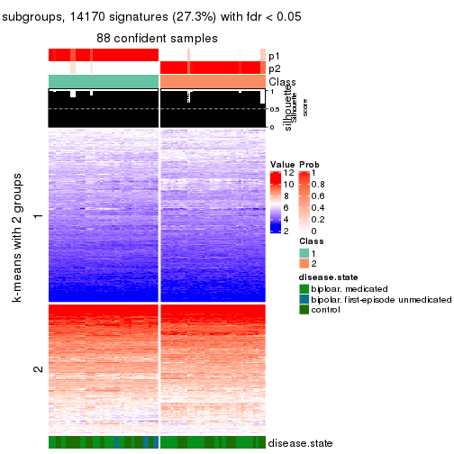
get_signatures(res, k = 3, scale_rows = FALSE)
get_signatures(res, k = 4, scale_rows = FALSE)
get_signatures(res, k = 5, scale_rows = FALSE)
get_signatures(res, k = 6, scale_rows = FALSE)
Compare the overlap of signatures from different k:
compare_signatures(res)
get_signature() returns a data frame invisibly. TO get the list of signatures, the function
call should be assigned to a variable explicitly. In following code, if plot argument is set
to FALSE, no heatmap is plotted while only the differential analysis is performed.
# code only for demonstration
tb = get_signature(res, k = ..., plot = FALSE)
An example of the output of tb is:
#> which_row fdr mean_1 mean_2 scaled_mean_1 scaled_mean_2 km
#> 1 38 0.042760348 8.373488 9.131774 -0.5533452 0.5164555 1
#> 2 40 0.018707592 7.106213 8.469186 -0.6173731 0.5762149 1
#> 3 55 0.019134737 10.221463 11.207825 -0.6159697 0.5749050 1
#> 4 59 0.006059896 5.921854 7.869574 -0.6899429 0.6439467 1
#> 5 60 0.018055526 8.928898 10.211722 -0.6204761 0.5791110 1
#> 6 98 0.009384629 15.714769 14.887706 0.6635654 -0.6193277 2
...
The columns in tb are:
which_row: row indices corresponding to the input matrix.fdr: FDR for the differential test. mean_x: The mean value in group x.scaled_mean_x: The mean value in group x after rows are scaled.km: Row groups if k-means clustering is applied to rows.UMAP plot which shows how samples are separated.
dimension_reduction(res, k = 2, method = "UMAP")
dimension_reduction(res, k = 3, method = "UMAP")
dimension_reduction(res, k = 4, method = "UMAP")
dimension_reduction(res, k = 5, method = "UMAP")
dimension_reduction(res, k = 6, method = "UMAP")
Following heatmap shows how subgroups are split when increasing k:
collect_classes(res)
Test correlation between subgroups and known annotations. If the known annotation is numeric, one-way ANOVA test is applied, and if the known annotation is discrete, chi-squared contingency table test is applied.
test_to_known_factors(res)
#> n disease.state(p) k
#> CV:skmeans 88 1.44e-02 2
#> CV:skmeans 53 8.43e-02 3
#> CV:skmeans 53 3.95e-03 4
#> CV:skmeans 42 1.01e-02 5
#> CV:skmeans 65 7.76e-06 6
If matrix rows can be associated to genes, consider to use GO_Enrichment(res,
...) to perform function enrichment for the signature genes.
The object with results only for a single top-value method and a single partition method can be extracted as:
res = res_list["CV", "pam"]
# you can also extract it by
# res = res_list["CV:pam"]
A summary of res and all the functions that can be applied to it:
res
#> A 'ConsensusPartition' object with k = 2, 3, 4, 5, 6.
#> On a matrix with 51941 rows and 88 columns.
#> Top rows (1000, 2000, 3000, 4000, 5000) are extracted by 'CV' method.
#> Subgroups are detected by 'pam' method.
#> Performed in total 1250 partitions by row resampling.
#> Best k for subgroups seems to be 4.
#>
#> Following methods can be applied to this 'ConsensusPartition' object:
#> [1] "cola_report" "collect_classes" "collect_plots"
#> [4] "collect_stats" "colnames" "compare_signatures"
#> [7] "consensus_heatmap" "dimension_reduction" "functional_enrichment"
#> [10] "get_anno_col" "get_anno" "get_classes"
#> [13] "get_consensus" "get_matrix" "get_membership"
#> [16] "get_param" "get_signatures" "get_stats"
#> [19] "is_best_k" "is_stable_k" "membership_heatmap"
#> [22] "ncol" "nrow" "plot_ecdf"
#> [25] "rownames" "select_partition_number" "show"
#> [28] "suggest_best_k" "test_to_known_factors"
collect_plots() function collects all the plots made from res for all k (number of partitions)
into one single page to provide an easy and fast comparison between different k.
collect_plots(res)
The plots are:
k and the heatmap of
predicted classes for each k.k.k.k.All the plots in panels can be made by individual functions and they are plotted later in this section.
select_partition_number() produces several plots showing different
statistics for choosing “optimized” k. There are following statistics:
k;k, the area increased is defined as \(A_k - A_{k-1}\).The detailed explanations of these statistics can be found in the cola vignette.
Generally speaking, lower PAC score, higher mean silhouette score or higher
concordance corresponds to better partition. Rand index and Jaccard index
measure how similar the current partition is compared to partition with k-1.
If they are too similar, we won't accept k is better than k-1.
select_partition_number(res)
The numeric values for all these statistics can be obtained by get_stats().
get_stats(res)
#> k 1-PAC mean_silhouette concordance area_increased Rand Jaccard
#> 2 2 0.366 0.753 0.878 0.4027 0.621 0.621
#> 3 3 0.389 0.636 0.814 0.4412 0.811 0.698
#> 4 4 0.744 0.831 0.908 0.1836 0.829 0.634
#> 5 5 0.656 0.635 0.761 0.0994 0.863 0.606
#> 6 6 0.711 0.666 0.837 0.0664 0.934 0.737
suggest_best_k() suggests the best \(k\) based on these statistics. The rules are as follows:
NA.suggest_best_k(res)
#> [1] 4
Following shows the table of the partitions (You need to click the show/hide
code output link to see it). The membership matrix (columns with name p*)
is inferred by
clue::cl_consensus()
function with the SE method. Basically the value in the membership matrix
represents the probability to belong to a certain group. The finall class
label for an item is determined with the group with highest probability it
belongs to.
In get_classes() function, the entropy is calculated from the membership
matrix and the silhouette score is calculated from the consensus matrix.
cbind(get_classes(res, k = 2), get_membership(res, k = 2))
#> class entropy silhouette p1 p2
#> GSM1130404 1 0.1633 0.8648 0.976 0.024
#> GSM1130405 1 0.1633 0.8638 0.976 0.024
#> GSM1130408 2 0.5178 0.7406 0.116 0.884
#> GSM1130409 1 0.0938 0.8668 0.988 0.012
#> GSM1130410 1 0.0376 0.8680 0.996 0.004
#> GSM1130415 1 0.6438 0.7635 0.836 0.164
#> GSM1130416 1 0.7376 0.7221 0.792 0.208
#> GSM1130417 1 0.6438 0.7635 0.836 0.164
#> GSM1130418 1 0.6438 0.7635 0.836 0.164
#> GSM1130421 1 0.7815 0.6925 0.768 0.232
#> GSM1130422 1 0.6801 0.7152 0.820 0.180
#> GSM1130423 1 0.0376 0.8680 0.996 0.004
#> GSM1130424 1 0.0376 0.8680 0.996 0.004
#> GSM1130425 1 0.2603 0.8580 0.956 0.044
#> GSM1130426 1 0.1843 0.8624 0.972 0.028
#> GSM1130427 1 0.1843 0.8624 0.972 0.028
#> GSM1130428 1 0.0672 0.8676 0.992 0.008
#> GSM1130429 1 0.0000 0.8680 1.000 0.000
#> GSM1130430 1 0.0000 0.8680 1.000 0.000
#> GSM1130431 1 0.0000 0.8680 1.000 0.000
#> GSM1130432 1 0.5059 0.8302 0.888 0.112
#> GSM1130433 1 0.2948 0.8529 0.948 0.052
#> GSM1130434 1 0.0000 0.8680 1.000 0.000
#> GSM1130435 1 0.0000 0.8680 1.000 0.000
#> GSM1130436 1 0.2043 0.8621 0.968 0.032
#> GSM1130437 1 0.1184 0.8663 0.984 0.016
#> GSM1130438 2 0.5842 0.7718 0.140 0.860
#> GSM1130439 2 0.7056 0.7543 0.192 0.808
#> GSM1130440 2 0.6531 0.7683 0.168 0.832
#> GSM1130441 1 0.8608 0.6206 0.716 0.284
#> GSM1130442 2 0.7299 0.6738 0.204 0.796
#> GSM1130443 2 0.6438 0.7612 0.164 0.836
#> GSM1130444 2 0.8207 0.6991 0.256 0.744
#> GSM1130445 2 0.8267 0.7007 0.260 0.740
#> GSM1130476 2 0.0376 0.7734 0.004 0.996
#> GSM1130483 1 0.9129 0.4733 0.672 0.328
#> GSM1130484 2 0.8909 0.6355 0.308 0.692
#> GSM1130487 2 0.9358 0.5594 0.352 0.648
#> GSM1130488 1 0.5059 0.8132 0.888 0.112
#> GSM1130419 1 0.5059 0.8132 0.888 0.112
#> GSM1130420 1 0.5059 0.8132 0.888 0.112
#> GSM1130464 1 0.9988 -0.1144 0.520 0.480
#> GSM1130465 1 0.5294 0.8066 0.880 0.120
#> GSM1130468 1 0.3733 0.8418 0.928 0.072
#> GSM1130469 1 0.3733 0.8418 0.928 0.072
#> GSM1130402 1 0.0000 0.8680 1.000 0.000
#> GSM1130403 1 0.0000 0.8680 1.000 0.000
#> GSM1130406 1 0.9866 0.0416 0.568 0.432
#> GSM1130407 1 0.4690 0.8261 0.900 0.100
#> GSM1130411 1 0.6438 0.7635 0.836 0.164
#> GSM1130412 1 0.6438 0.7635 0.836 0.164
#> GSM1130413 1 0.1843 0.8624 0.972 0.028
#> GSM1130414 1 0.6438 0.7635 0.836 0.164
#> GSM1130446 1 0.8144 0.6793 0.748 0.252
#> GSM1130447 1 0.0000 0.8680 1.000 0.000
#> GSM1130448 2 0.0000 0.7739 0.000 1.000
#> GSM1130449 1 0.5629 0.8063 0.868 0.132
#> GSM1130450 1 0.6973 0.7556 0.812 0.188
#> GSM1130451 1 0.9209 0.4935 0.664 0.336
#> GSM1130452 2 0.9944 0.1449 0.456 0.544
#> GSM1130453 2 0.0000 0.7739 0.000 1.000
#> GSM1130454 2 0.0000 0.7739 0.000 1.000
#> GSM1130455 2 0.4161 0.7544 0.084 0.916
#> GSM1130456 1 0.3733 0.8418 0.928 0.072
#> GSM1130457 1 0.6438 0.7635 0.836 0.164
#> GSM1130458 1 0.0000 0.8680 1.000 0.000
#> GSM1130459 2 0.9944 0.1453 0.456 0.544
#> GSM1130460 2 0.9661 0.3424 0.392 0.608
#> GSM1130461 2 0.3879 0.7568 0.076 0.924
#> GSM1130462 1 0.7139 0.7458 0.804 0.196
#> GSM1130463 1 0.4939 0.8276 0.892 0.108
#> GSM1130466 1 0.2043 0.8623 0.968 0.032
#> GSM1130467 1 0.9286 0.4768 0.656 0.344
#> GSM1130470 1 0.5842 0.7987 0.860 0.140
#> GSM1130471 1 0.1184 0.8676 0.984 0.016
#> GSM1130472 1 0.2043 0.8627 0.968 0.032
#> GSM1130473 1 0.4298 0.8436 0.912 0.088
#> GSM1130474 2 0.5946 0.7726 0.144 0.856
#> GSM1130475 2 0.0672 0.7745 0.008 0.992
#> GSM1130477 1 0.0672 0.8679 0.992 0.008
#> GSM1130478 1 0.0672 0.8683 0.992 0.008
#> GSM1130479 1 0.0376 0.8680 0.996 0.004
#> GSM1130480 2 0.7299 0.7602 0.204 0.796
#> GSM1130481 1 0.2043 0.8627 0.968 0.032
#> GSM1130482 1 0.6438 0.7734 0.836 0.164
#> GSM1130485 1 0.3879 0.8400 0.924 0.076
#> GSM1130486 1 0.3584 0.8441 0.932 0.068
#> GSM1130489 1 0.0376 0.8680 0.996 0.004
cbind(get_classes(res, k = 3), get_membership(res, k = 3))
#> class entropy silhouette p1 p2 p3
#> GSM1130404 2 0.0661 0.7974 0.004 0.988 0.008
#> GSM1130405 2 0.0424 0.7964 0.000 0.992 0.008
#> GSM1130408 3 0.3412 0.6215 0.000 0.124 0.876
#> GSM1130409 2 0.0747 0.7983 0.016 0.984 0.000
#> GSM1130410 2 0.1163 0.7973 0.028 0.972 0.000
#> GSM1130415 2 0.0424 0.7964 0.000 0.992 0.008
#> GSM1130416 2 0.5138 0.6376 0.000 0.748 0.252
#> GSM1130417 2 0.0747 0.7949 0.000 0.984 0.016
#> GSM1130418 2 0.0892 0.7940 0.000 0.980 0.020
#> GSM1130421 2 0.5497 0.5904 0.000 0.708 0.292
#> GSM1130422 2 0.4178 0.6517 0.000 0.828 0.172
#> GSM1130423 1 0.5465 0.6468 0.712 0.288 0.000
#> GSM1130424 1 0.5465 0.6468 0.712 0.288 0.000
#> GSM1130425 1 0.5431 0.6465 0.716 0.284 0.000
#> GSM1130426 2 0.0424 0.7964 0.000 0.992 0.008
#> GSM1130427 2 0.0424 0.7964 0.000 0.992 0.008
#> GSM1130428 2 0.1129 0.7986 0.020 0.976 0.004
#> GSM1130429 2 0.1163 0.7973 0.028 0.972 0.000
#> GSM1130430 2 0.1163 0.7973 0.028 0.972 0.000
#> GSM1130431 2 0.1163 0.7973 0.028 0.972 0.000
#> GSM1130432 2 0.3765 0.7702 0.028 0.888 0.084
#> GSM1130433 2 0.2796 0.7732 0.000 0.908 0.092
#> GSM1130434 2 0.4663 0.7381 0.156 0.828 0.016
#> GSM1130435 2 0.1163 0.7973 0.028 0.972 0.000
#> GSM1130436 2 0.6026 0.5232 0.376 0.624 0.000
#> GSM1130437 2 0.7801 0.5478 0.276 0.636 0.088
#> GSM1130438 3 0.5461 0.5491 0.244 0.008 0.748
#> GSM1130439 3 0.6124 0.5598 0.036 0.220 0.744
#> GSM1130440 3 0.6124 0.5598 0.036 0.220 0.744
#> GSM1130441 2 0.5706 0.5461 0.000 0.680 0.320
#> GSM1130442 3 0.2878 0.6455 0.000 0.096 0.904
#> GSM1130443 3 0.5859 0.4618 0.344 0.000 0.656
#> GSM1130444 3 0.7453 0.4925 0.292 0.064 0.644
#> GSM1130445 3 0.7507 0.4936 0.288 0.068 0.644
#> GSM1130476 3 0.1031 0.6646 0.024 0.000 0.976
#> GSM1130483 2 0.6369 0.4433 0.016 0.668 0.316
#> GSM1130484 3 0.6667 0.3984 0.016 0.368 0.616
#> GSM1130487 3 0.8390 0.3979 0.340 0.100 0.560
#> GSM1130488 2 0.7589 0.4950 0.360 0.588 0.052
#> GSM1130419 1 0.1529 0.6545 0.960 0.000 0.040
#> GSM1130420 1 0.1411 0.6580 0.964 0.000 0.036
#> GSM1130464 1 0.9134 -0.0191 0.500 0.156 0.344
#> GSM1130465 2 0.8202 0.4849 0.328 0.580 0.092
#> GSM1130468 2 0.6927 0.5719 0.296 0.664 0.040
#> GSM1130469 2 0.6867 0.5802 0.288 0.672 0.040
#> GSM1130402 2 0.1163 0.7973 0.028 0.972 0.000
#> GSM1130403 2 0.1163 0.7973 0.028 0.972 0.000
#> GSM1130406 3 0.9864 0.2040 0.288 0.296 0.416
#> GSM1130407 2 0.4449 0.7568 0.040 0.860 0.100
#> GSM1130411 2 0.5138 0.6376 0.000 0.748 0.252
#> GSM1130412 2 0.5138 0.6376 0.000 0.748 0.252
#> GSM1130413 2 0.0237 0.7979 0.004 0.996 0.000
#> GSM1130414 2 0.0000 0.7973 0.000 1.000 0.000
#> GSM1130446 2 0.5690 0.5931 0.004 0.708 0.288
#> GSM1130447 1 0.6291 0.3919 0.532 0.468 0.000
#> GSM1130448 3 0.1411 0.6637 0.036 0.000 0.964
#> GSM1130449 2 0.4558 0.7573 0.100 0.856 0.044
#> GSM1130450 2 0.5016 0.6503 0.000 0.760 0.240
#> GSM1130451 2 0.8561 0.2767 0.104 0.528 0.368
#> GSM1130452 3 0.5905 0.3676 0.000 0.352 0.648
#> GSM1130453 3 0.1411 0.6637 0.036 0.000 0.964
#> GSM1130454 3 0.0747 0.6642 0.016 0.000 0.984
#> GSM1130455 3 0.3412 0.6215 0.000 0.124 0.876
#> GSM1130456 2 0.4708 0.7570 0.120 0.844 0.036
#> GSM1130457 2 0.5138 0.6376 0.000 0.748 0.252
#> GSM1130458 2 0.1163 0.7973 0.028 0.972 0.000
#> GSM1130459 3 0.5905 0.3678 0.000 0.352 0.648
#> GSM1130460 3 0.5560 0.4804 0.000 0.300 0.700
#> GSM1130461 3 0.1529 0.6540 0.000 0.040 0.960
#> GSM1130462 2 0.5443 0.6328 0.004 0.736 0.260
#> GSM1130463 2 0.2269 0.7984 0.040 0.944 0.016
#> GSM1130466 1 0.0747 0.6852 0.984 0.016 0.000
#> GSM1130467 2 0.6140 0.3770 0.000 0.596 0.404
#> GSM1130470 1 0.0000 0.6757 1.000 0.000 0.000
#> GSM1130471 1 0.1529 0.6951 0.960 0.040 0.000
#> GSM1130472 1 0.1411 0.6940 0.964 0.036 0.000
#> GSM1130473 1 0.5690 0.6448 0.708 0.288 0.004
#> GSM1130474 3 0.8231 0.4828 0.136 0.236 0.628
#> GSM1130475 3 0.0747 0.6642 0.016 0.000 0.984
#> GSM1130477 2 0.3482 0.7491 0.128 0.872 0.000
#> GSM1130478 2 0.3715 0.7486 0.128 0.868 0.004
#> GSM1130479 2 0.4062 0.7201 0.164 0.836 0.000
#> GSM1130480 3 0.5138 0.5358 0.000 0.252 0.748
#> GSM1130481 2 0.3644 0.7511 0.124 0.872 0.004
#> GSM1130482 2 0.3644 0.7511 0.124 0.872 0.004
#> GSM1130485 2 0.4586 0.7535 0.048 0.856 0.096
#> GSM1130486 2 0.7971 0.5354 0.280 0.624 0.096
#> GSM1130489 2 0.3412 0.7512 0.124 0.876 0.000
cbind(get_classes(res, k = 4), get_membership(res, k = 4))
#> class entropy silhouette p1 p2 p3 p4
#> GSM1130404 1 0.3172 0.806 0.840 0.160 0.000 0.000
#> GSM1130405 1 0.3219 0.802 0.836 0.164 0.000 0.000
#> GSM1130408 2 0.1792 0.814 0.000 0.932 0.068 0.000
#> GSM1130409 1 0.0817 0.893 0.976 0.024 0.000 0.000
#> GSM1130410 1 0.0188 0.896 0.996 0.004 0.000 0.000
#> GSM1130415 1 0.4746 0.555 0.632 0.368 0.000 0.000
#> GSM1130416 2 0.1022 0.823 0.032 0.968 0.000 0.000
#> GSM1130417 1 0.4888 0.464 0.588 0.412 0.000 0.000
#> GSM1130418 1 0.4941 0.404 0.564 0.436 0.000 0.000
#> GSM1130421 2 0.1824 0.824 0.060 0.936 0.004 0.000
#> GSM1130422 1 0.4507 0.768 0.788 0.168 0.044 0.000
#> GSM1130423 4 0.0707 0.961 0.020 0.000 0.000 0.980
#> GSM1130424 4 0.0707 0.961 0.020 0.000 0.000 0.980
#> GSM1130425 4 0.0707 0.961 0.020 0.000 0.000 0.980
#> GSM1130426 1 0.3266 0.798 0.832 0.168 0.000 0.000
#> GSM1130427 1 0.3266 0.798 0.832 0.168 0.000 0.000
#> GSM1130428 1 0.1211 0.889 0.960 0.040 0.000 0.000
#> GSM1130429 1 0.0000 0.896 1.000 0.000 0.000 0.000
#> GSM1130430 1 0.0000 0.896 1.000 0.000 0.000 0.000
#> GSM1130431 1 0.0000 0.896 1.000 0.000 0.000 0.000
#> GSM1130432 1 0.0779 0.897 0.980 0.004 0.016 0.000
#> GSM1130433 1 0.1557 0.881 0.944 0.000 0.056 0.000
#> GSM1130434 1 0.1042 0.891 0.972 0.000 0.020 0.008
#> GSM1130435 1 0.0000 0.896 1.000 0.000 0.000 0.000
#> GSM1130436 1 0.1724 0.881 0.948 0.000 0.032 0.020
#> GSM1130437 1 0.1820 0.881 0.944 0.000 0.036 0.020
#> GSM1130438 3 0.1209 0.920 0.000 0.032 0.964 0.004
#> GSM1130439 3 0.1209 0.919 0.004 0.032 0.964 0.000
#> GSM1130440 3 0.1209 0.919 0.004 0.032 0.964 0.000
#> GSM1130441 2 0.1902 0.825 0.064 0.932 0.004 0.000
#> GSM1130442 2 0.4304 0.629 0.000 0.716 0.284 0.000
#> GSM1130443 3 0.1807 0.893 0.008 0.000 0.940 0.052
#> GSM1130444 3 0.0707 0.910 0.000 0.000 0.980 0.020
#> GSM1130445 3 0.0707 0.910 0.000 0.000 0.980 0.020
#> GSM1130476 3 0.1022 0.919 0.000 0.032 0.968 0.000
#> GSM1130483 1 0.4877 0.380 0.592 0.000 0.408 0.000
#> GSM1130484 3 0.1474 0.891 0.052 0.000 0.948 0.000
#> GSM1130487 3 0.2060 0.888 0.016 0.000 0.932 0.052
#> GSM1130488 1 0.3219 0.842 0.868 0.000 0.112 0.020
#> GSM1130419 4 0.0817 0.949 0.000 0.000 0.024 0.976
#> GSM1130420 4 0.1022 0.945 0.000 0.000 0.032 0.968
#> GSM1130464 3 0.2816 0.866 0.036 0.000 0.900 0.064
#> GSM1130465 1 0.3335 0.836 0.860 0.000 0.120 0.020
#> GSM1130468 1 0.1724 0.881 0.948 0.000 0.032 0.020
#> GSM1130469 1 0.1724 0.881 0.948 0.000 0.032 0.020
#> GSM1130402 1 0.0000 0.896 1.000 0.000 0.000 0.000
#> GSM1130403 1 0.0000 0.896 1.000 0.000 0.000 0.000
#> GSM1130406 3 0.5108 0.504 0.308 0.000 0.672 0.020
#> GSM1130407 1 0.1637 0.881 0.940 0.000 0.060 0.000
#> GSM1130411 2 0.1022 0.823 0.032 0.968 0.000 0.000
#> GSM1130412 2 0.1022 0.823 0.032 0.968 0.000 0.000
#> GSM1130413 1 0.1557 0.883 0.944 0.056 0.000 0.000
#> GSM1130414 1 0.2011 0.873 0.920 0.080 0.000 0.000
#> GSM1130446 2 0.4194 0.717 0.228 0.764 0.008 0.000
#> GSM1130447 4 0.2921 0.813 0.140 0.000 0.000 0.860
#> GSM1130448 3 0.1022 0.919 0.000 0.032 0.968 0.000
#> GSM1130449 1 0.2081 0.866 0.916 0.000 0.084 0.000
#> GSM1130450 2 0.4781 0.532 0.336 0.660 0.004 0.000
#> GSM1130451 1 0.7962 0.334 0.524 0.276 0.168 0.032
#> GSM1130452 2 0.2563 0.819 0.020 0.908 0.072 0.000
#> GSM1130453 3 0.1022 0.919 0.000 0.032 0.968 0.000
#> GSM1130454 3 0.1022 0.919 0.000 0.032 0.968 0.000
#> GSM1130455 2 0.3649 0.728 0.000 0.796 0.204 0.000
#> GSM1130456 1 0.0707 0.895 0.980 0.000 0.000 0.020
#> GSM1130457 2 0.3266 0.767 0.168 0.832 0.000 0.000
#> GSM1130458 1 0.0000 0.896 1.000 0.000 0.000 0.000
#> GSM1130459 2 0.0000 0.820 0.000 1.000 0.000 0.000
#> GSM1130460 2 0.0921 0.822 0.000 0.972 0.028 0.000
#> GSM1130461 2 0.4382 0.611 0.000 0.704 0.296 0.000
#> GSM1130462 2 0.4053 0.720 0.228 0.768 0.004 0.000
#> GSM1130463 1 0.3266 0.838 0.868 0.108 0.024 0.000
#> GSM1130466 4 0.0000 0.963 0.000 0.000 0.000 1.000
#> GSM1130467 2 0.0000 0.820 0.000 1.000 0.000 0.000
#> GSM1130470 4 0.0000 0.963 0.000 0.000 0.000 1.000
#> GSM1130471 4 0.0000 0.963 0.000 0.000 0.000 1.000
#> GSM1130472 4 0.0000 0.963 0.000 0.000 0.000 1.000
#> GSM1130473 4 0.0895 0.959 0.020 0.000 0.004 0.976
#> GSM1130474 3 0.2198 0.891 0.008 0.072 0.920 0.000
#> GSM1130475 2 0.4776 0.448 0.000 0.624 0.376 0.000
#> GSM1130477 1 0.1474 0.886 0.948 0.000 0.000 0.052
#> GSM1130478 1 0.0376 0.897 0.992 0.000 0.004 0.004
#> GSM1130479 1 0.0817 0.894 0.976 0.000 0.000 0.024
#> GSM1130480 3 0.3013 0.855 0.080 0.032 0.888 0.000
#> GSM1130481 1 0.0188 0.896 0.996 0.000 0.004 0.000
#> GSM1130482 1 0.0188 0.896 0.996 0.000 0.004 0.000
#> GSM1130485 1 0.0469 0.896 0.988 0.000 0.000 0.012
#> GSM1130486 1 0.1724 0.881 0.948 0.000 0.032 0.020
#> GSM1130489 1 0.0000 0.896 1.000 0.000 0.000 0.000
cbind(get_classes(res, k = 5), get_membership(res, k = 5))
#> class entropy silhouette p1 p2 p3 p4 p5
#> GSM1130404 1 0.2408 0.8075 0.892 0.016 0.000 0.092 0.000
#> GSM1130405 1 0.2482 0.8047 0.892 0.084 0.000 0.024 0.000
#> GSM1130408 2 0.6325 0.1479 0.000 0.428 0.416 0.156 0.000
#> GSM1130409 1 0.0880 0.8344 0.968 0.032 0.000 0.000 0.000
#> GSM1130410 1 0.0290 0.8382 0.992 0.008 0.000 0.000 0.000
#> GSM1130415 2 0.6343 0.4768 0.200 0.516 0.000 0.284 0.000
#> GSM1130416 2 0.3707 0.5827 0.000 0.716 0.000 0.284 0.000
#> GSM1130417 2 0.6319 0.4815 0.196 0.520 0.000 0.284 0.000
#> GSM1130418 2 0.6269 0.4891 0.188 0.528 0.000 0.284 0.000
#> GSM1130421 2 0.3390 0.6089 0.060 0.840 0.000 0.100 0.000
#> GSM1130422 1 0.4450 0.6518 0.760 0.108 0.132 0.000 0.000
#> GSM1130423 5 0.0000 0.9416 0.000 0.000 0.000 0.000 1.000
#> GSM1130424 5 0.0000 0.9416 0.000 0.000 0.000 0.000 1.000
#> GSM1130425 5 0.0000 0.9416 0.000 0.000 0.000 0.000 1.000
#> GSM1130426 1 0.1908 0.8041 0.908 0.092 0.000 0.000 0.000
#> GSM1130427 1 0.1908 0.8041 0.908 0.092 0.000 0.000 0.000
#> GSM1130428 1 0.0794 0.8372 0.972 0.028 0.000 0.000 0.000
#> GSM1130429 1 0.0000 0.8371 1.000 0.000 0.000 0.000 0.000
#> GSM1130430 1 0.0000 0.8371 1.000 0.000 0.000 0.000 0.000
#> GSM1130431 1 0.0000 0.8371 1.000 0.000 0.000 0.000 0.000
#> GSM1130432 1 0.2608 0.8083 0.888 0.020 0.004 0.088 0.000
#> GSM1130433 1 0.1741 0.8280 0.936 0.000 0.024 0.040 0.000
#> GSM1130434 1 0.3983 0.0438 0.660 0.000 0.000 0.340 0.000
#> GSM1130435 1 0.2852 0.6106 0.828 0.000 0.000 0.172 0.000
#> GSM1130436 4 0.3966 0.7721 0.336 0.000 0.000 0.664 0.000
#> GSM1130437 4 0.4015 0.7727 0.348 0.000 0.000 0.652 0.000
#> GSM1130438 3 0.0880 0.7475 0.000 0.000 0.968 0.032 0.000
#> GSM1130439 3 0.0324 0.7498 0.004 0.000 0.992 0.004 0.000
#> GSM1130440 3 0.0324 0.7498 0.004 0.000 0.992 0.004 0.000
#> GSM1130441 2 0.1405 0.5827 0.020 0.956 0.008 0.016 0.000
#> GSM1130442 3 0.4452 0.0208 0.000 0.496 0.500 0.004 0.000
#> GSM1130443 3 0.4510 0.2079 0.000 0.000 0.560 0.432 0.008
#> GSM1130444 3 0.3242 0.6035 0.000 0.000 0.784 0.216 0.000
#> GSM1130445 3 0.3143 0.6087 0.000 0.000 0.796 0.204 0.000
#> GSM1130476 3 0.0324 0.7489 0.000 0.004 0.992 0.004 0.000
#> GSM1130483 1 0.5312 0.4822 0.668 0.000 0.208 0.124 0.000
#> GSM1130484 3 0.5104 0.4441 0.192 0.000 0.692 0.116 0.000
#> GSM1130487 4 0.4403 -0.0746 0.000 0.000 0.436 0.560 0.004
#> GSM1130488 4 0.4661 0.7785 0.312 0.000 0.032 0.656 0.000
#> GSM1130419 5 0.1012 0.9235 0.000 0.000 0.012 0.020 0.968
#> GSM1130420 5 0.3796 0.5835 0.000 0.000 0.000 0.300 0.700
#> GSM1130464 3 0.5084 0.1330 0.012 0.000 0.520 0.452 0.016
#> GSM1130465 4 0.4891 0.7750 0.316 0.000 0.044 0.640 0.000
#> GSM1130468 4 0.4219 0.7523 0.416 0.000 0.000 0.584 0.000
#> GSM1130469 4 0.4219 0.7523 0.416 0.000 0.000 0.584 0.000
#> GSM1130402 1 0.0000 0.8371 1.000 0.000 0.000 0.000 0.000
#> GSM1130403 1 0.0000 0.8371 1.000 0.000 0.000 0.000 0.000
#> GSM1130406 4 0.4904 0.4242 0.072 0.000 0.240 0.688 0.000
#> GSM1130407 1 0.4138 0.4586 0.708 0.000 0.016 0.276 0.000
#> GSM1130411 2 0.3707 0.5827 0.000 0.716 0.000 0.284 0.000
#> GSM1130412 2 0.3707 0.5827 0.000 0.716 0.000 0.284 0.000
#> GSM1130413 1 0.1522 0.8295 0.944 0.044 0.000 0.012 0.000
#> GSM1130414 1 0.5268 0.4392 0.668 0.220 0.000 0.112 0.000
#> GSM1130446 2 0.6169 0.3552 0.332 0.560 0.080 0.028 0.000
#> GSM1130447 5 0.4138 0.7552 0.080 0.104 0.000 0.012 0.804
#> GSM1130448 3 0.0000 0.7492 0.000 0.000 1.000 0.000 0.000
#> GSM1130449 1 0.3569 0.7598 0.852 0.040 0.036 0.072 0.000
#> GSM1130450 2 0.5089 0.1456 0.432 0.536 0.004 0.028 0.000
#> GSM1130451 1 0.7669 -0.1601 0.396 0.312 0.248 0.036 0.008
#> GSM1130452 2 0.4666 0.1108 0.016 0.572 0.412 0.000 0.000
#> GSM1130453 3 0.0693 0.7471 0.000 0.012 0.980 0.008 0.000
#> GSM1130454 3 0.0290 0.7476 0.000 0.008 0.992 0.000 0.000
#> GSM1130455 2 0.4528 0.0377 0.000 0.548 0.444 0.008 0.000
#> GSM1130456 1 0.0771 0.8280 0.976 0.000 0.000 0.020 0.004
#> GSM1130457 2 0.3109 0.5551 0.200 0.800 0.000 0.000 0.000
#> GSM1130458 1 0.0000 0.8371 1.000 0.000 0.000 0.000 0.000
#> GSM1130459 2 0.2890 0.5963 0.000 0.836 0.004 0.160 0.000
#> GSM1130460 2 0.4010 0.4557 0.000 0.760 0.208 0.032 0.000
#> GSM1130461 3 0.5456 0.2928 0.000 0.328 0.592 0.080 0.000
#> GSM1130462 2 0.5128 0.2499 0.392 0.572 0.008 0.028 0.000
#> GSM1130463 1 0.4415 0.5923 0.728 0.236 0.008 0.028 0.000
#> GSM1130466 5 0.0000 0.9416 0.000 0.000 0.000 0.000 1.000
#> GSM1130467 2 0.1357 0.5936 0.000 0.948 0.004 0.048 0.000
#> GSM1130470 5 0.0000 0.9416 0.000 0.000 0.000 0.000 1.000
#> GSM1130471 5 0.0000 0.9416 0.000 0.000 0.000 0.000 1.000
#> GSM1130472 5 0.0000 0.9416 0.000 0.000 0.000 0.000 1.000
#> GSM1130473 5 0.0671 0.9282 0.000 0.016 0.004 0.000 0.980
#> GSM1130474 3 0.2388 0.7077 0.000 0.072 0.900 0.028 0.000
#> GSM1130475 3 0.4827 0.0517 0.000 0.476 0.504 0.020 0.000
#> GSM1130477 1 0.2408 0.8046 0.892 0.000 0.000 0.092 0.016
#> GSM1130478 1 0.2068 0.8103 0.904 0.004 0.000 0.092 0.000
#> GSM1130479 1 0.0162 0.8369 0.996 0.000 0.000 0.000 0.004
#> GSM1130480 3 0.1041 0.7344 0.032 0.004 0.964 0.000 0.000
#> GSM1130481 1 0.1074 0.8325 0.968 0.016 0.004 0.012 0.000
#> GSM1130482 1 0.1461 0.8346 0.952 0.016 0.004 0.028 0.000
#> GSM1130485 1 0.0162 0.8370 0.996 0.000 0.000 0.000 0.004
#> GSM1130486 4 0.4219 0.7523 0.416 0.000 0.000 0.584 0.000
#> GSM1130489 1 0.0404 0.8366 0.988 0.000 0.000 0.012 0.000
cbind(get_classes(res, k = 6), get_membership(res, k = 6))
#> class entropy silhouette p1 p2 p3 p4 p5 p6
#> GSM1130404 1 0.2948 0.7252 0.804 0.000 0.000 0.188 0.008 0.000
#> GSM1130405 1 0.2257 0.7863 0.876 0.000 0.000 0.116 0.008 0.000
#> GSM1130408 2 0.6059 -0.0203 0.000 0.408 0.312 0.000 0.280 0.000
#> GSM1130409 1 0.0000 0.8466 1.000 0.000 0.000 0.000 0.000 0.000
#> GSM1130410 1 0.0000 0.8466 1.000 0.000 0.000 0.000 0.000 0.000
#> GSM1130415 2 0.0000 0.8075 0.000 1.000 0.000 0.000 0.000 0.000
#> GSM1130416 2 0.0000 0.8075 0.000 1.000 0.000 0.000 0.000 0.000
#> GSM1130417 2 0.0000 0.8075 0.000 1.000 0.000 0.000 0.000 0.000
#> GSM1130418 2 0.0000 0.8075 0.000 1.000 0.000 0.000 0.000 0.000
#> GSM1130421 2 0.5662 0.2059 0.132 0.516 0.008 0.000 0.344 0.000
#> GSM1130422 1 0.3718 0.6699 0.784 0.000 0.132 0.000 0.084 0.000
#> GSM1130423 6 0.0000 0.9073 0.000 0.000 0.000 0.000 0.000 1.000
#> GSM1130424 6 0.0260 0.9040 0.000 0.000 0.000 0.000 0.008 0.992
#> GSM1130425 6 0.0000 0.9073 0.000 0.000 0.000 0.000 0.000 1.000
#> GSM1130426 1 0.0260 0.8463 0.992 0.000 0.000 0.000 0.008 0.000
#> GSM1130427 1 0.0260 0.8463 0.992 0.000 0.000 0.000 0.008 0.000
#> GSM1130428 1 0.0363 0.8456 0.988 0.000 0.000 0.000 0.012 0.000
#> GSM1130429 1 0.0260 0.8454 0.992 0.000 0.000 0.000 0.008 0.000
#> GSM1130430 1 0.0000 0.8466 1.000 0.000 0.000 0.000 0.000 0.000
#> GSM1130431 1 0.0000 0.8466 1.000 0.000 0.000 0.000 0.000 0.000
#> GSM1130432 1 0.2768 0.7516 0.832 0.000 0.000 0.156 0.012 0.000
#> GSM1130433 1 0.1461 0.8272 0.940 0.000 0.016 0.044 0.000 0.000
#> GSM1130434 4 0.3854 0.2957 0.464 0.000 0.000 0.536 0.000 0.000
#> GSM1130435 1 0.3672 0.2109 0.632 0.000 0.000 0.368 0.000 0.000
#> GSM1130436 4 0.3395 0.7094 0.060 0.000 0.000 0.808 0.132 0.000
#> GSM1130437 4 0.2513 0.7633 0.140 0.000 0.000 0.852 0.008 0.000
#> GSM1130438 3 0.2513 0.7383 0.000 0.000 0.852 0.008 0.140 0.000
#> GSM1130439 3 0.0260 0.7898 0.000 0.000 0.992 0.008 0.000 0.000
#> GSM1130440 3 0.0146 0.7894 0.000 0.000 0.996 0.004 0.000 0.000
#> GSM1130441 5 0.2697 0.5261 0.000 0.188 0.000 0.000 0.812 0.000
#> GSM1130442 5 0.3714 0.5677 0.000 0.000 0.340 0.004 0.656 0.000
#> GSM1130443 3 0.3828 0.3056 0.000 0.000 0.560 0.440 0.000 0.000
#> GSM1130444 3 0.2768 0.7280 0.000 0.000 0.832 0.156 0.012 0.000
#> GSM1130445 3 0.2491 0.7236 0.000 0.000 0.836 0.164 0.000 0.000
#> GSM1130476 3 0.0000 0.7887 0.000 0.000 1.000 0.000 0.000 0.000
#> GSM1130483 1 0.6875 0.3184 0.500 0.000 0.140 0.216 0.144 0.000
#> GSM1130484 3 0.5190 0.5475 0.008 0.000 0.640 0.208 0.144 0.000
#> GSM1130487 4 0.2912 0.4461 0.000 0.000 0.216 0.784 0.000 0.000
#> GSM1130488 4 0.0146 0.7148 0.004 0.000 0.000 0.996 0.000 0.000
#> GSM1130419 6 0.0713 0.8903 0.000 0.000 0.000 0.028 0.000 0.972
#> GSM1130420 6 0.3499 0.4958 0.000 0.000 0.000 0.320 0.000 0.680
#> GSM1130464 3 0.4097 0.1835 0.000 0.000 0.500 0.492 0.000 0.008
#> GSM1130465 4 0.0891 0.7307 0.024 0.000 0.008 0.968 0.000 0.000
#> GSM1130468 4 0.2823 0.7487 0.204 0.000 0.000 0.796 0.000 0.000
#> GSM1130469 4 0.2854 0.7480 0.208 0.000 0.000 0.792 0.000 0.000
#> GSM1130402 1 0.0000 0.8466 1.000 0.000 0.000 0.000 0.000 0.000
#> GSM1130403 1 0.0000 0.8466 1.000 0.000 0.000 0.000 0.000 0.000
#> GSM1130406 4 0.3053 0.6392 0.004 0.000 0.024 0.828 0.144 0.000
#> GSM1130407 1 0.5598 0.1373 0.460 0.000 0.000 0.396 0.144 0.000
#> GSM1130411 2 0.0000 0.8075 0.000 1.000 0.000 0.000 0.000 0.000
#> GSM1130412 2 0.0000 0.8075 0.000 1.000 0.000 0.000 0.000 0.000
#> GSM1130413 1 0.0713 0.8395 0.972 0.028 0.000 0.000 0.000 0.000
#> GSM1130414 1 0.3833 0.2069 0.556 0.444 0.000 0.000 0.000 0.000
#> GSM1130446 5 0.3204 0.6492 0.112 0.000 0.052 0.004 0.832 0.000
#> GSM1130447 6 0.5111 0.1353 0.052 0.000 0.000 0.012 0.440 0.496
#> GSM1130448 3 0.0000 0.7887 0.000 0.000 1.000 0.000 0.000 0.000
#> GSM1130449 1 0.3979 0.5827 0.708 0.000 0.000 0.036 0.256 0.000
#> GSM1130450 5 0.2668 0.6233 0.168 0.000 0.000 0.004 0.828 0.000
#> GSM1130451 5 0.5470 0.5494 0.204 0.000 0.160 0.016 0.620 0.000
#> GSM1130452 5 0.4437 0.6035 0.020 0.020 0.304 0.000 0.656 0.000
#> GSM1130453 3 0.0520 0.7860 0.000 0.000 0.984 0.008 0.008 0.000
#> GSM1130454 3 0.0146 0.7873 0.000 0.000 0.996 0.000 0.004 0.000
#> GSM1130455 5 0.3221 0.6295 0.000 0.000 0.264 0.000 0.736 0.000
#> GSM1130456 1 0.0713 0.8351 0.972 0.000 0.000 0.028 0.000 0.000
#> GSM1130457 5 0.5436 0.3557 0.248 0.180 0.000 0.000 0.572 0.000
#> GSM1130458 1 0.1204 0.8221 0.944 0.000 0.000 0.000 0.056 0.000
#> GSM1130459 2 0.3266 0.5270 0.000 0.728 0.000 0.000 0.272 0.000
#> GSM1130460 5 0.5035 0.5158 0.000 0.192 0.168 0.000 0.640 0.000
#> GSM1130461 3 0.5348 0.2110 0.000 0.000 0.576 0.152 0.272 0.000
#> GSM1130462 5 0.2624 0.6334 0.148 0.000 0.004 0.004 0.844 0.000
#> GSM1130463 5 0.3915 0.2505 0.412 0.000 0.000 0.004 0.584 0.000
#> GSM1130466 6 0.0000 0.9073 0.000 0.000 0.000 0.000 0.000 1.000
#> GSM1130467 5 0.3961 0.1095 0.000 0.440 0.004 0.000 0.556 0.000
#> GSM1130470 6 0.0000 0.9073 0.000 0.000 0.000 0.000 0.000 1.000
#> GSM1130471 6 0.0000 0.9073 0.000 0.000 0.000 0.000 0.000 1.000
#> GSM1130472 6 0.0000 0.9073 0.000 0.000 0.000 0.000 0.000 1.000
#> GSM1130473 6 0.0260 0.9024 0.000 0.000 0.000 0.000 0.008 0.992
#> GSM1130474 3 0.3509 0.5665 0.000 0.000 0.744 0.016 0.240 0.000
#> GSM1130475 5 0.3489 0.6198 0.000 0.000 0.288 0.004 0.708 0.000
#> GSM1130477 1 0.4815 0.5776 0.668 0.000 0.000 0.188 0.144 0.000
#> GSM1130478 1 0.4815 0.5776 0.668 0.000 0.000 0.188 0.144 0.000
#> GSM1130479 1 0.0000 0.8466 1.000 0.000 0.000 0.000 0.000 0.000
#> GSM1130480 3 0.0146 0.7887 0.004 0.000 0.996 0.000 0.000 0.000
#> GSM1130481 1 0.0405 0.8459 0.988 0.000 0.000 0.004 0.008 0.000
#> GSM1130482 1 0.0405 0.8459 0.988 0.000 0.000 0.004 0.008 0.000
#> GSM1130485 1 0.0603 0.8411 0.980 0.000 0.000 0.016 0.000 0.004
#> GSM1130486 4 0.2883 0.7457 0.212 0.000 0.000 0.788 0.000 0.000
#> GSM1130489 1 0.0146 0.8467 0.996 0.000 0.000 0.004 0.000 0.000
Heatmaps for the consensus matrix. It visualizes the probability of two samples to be in a same group.
consensus_heatmap(res, k = 2)
consensus_heatmap(res, k = 3)
consensus_heatmap(res, k = 4)
consensus_heatmap(res, k = 5)
consensus_heatmap(res, k = 6)
Heatmaps for the membership of samples in all partitions to see how consistent they are:
membership_heatmap(res, k = 2)
membership_heatmap(res, k = 3)
membership_heatmap(res, k = 4)
membership_heatmap(res, k = 5)
membership_heatmap(res, k = 6)
As soon as we have had the classes for columns, we can look for signatures which are significantly different between classes which can be candidate marks for certain classes. Following are the heatmaps for signatures.
Signature heatmaps where rows are scaled:
get_signatures(res, k = 2)
get_signatures(res, k = 3)
get_signatures(res, k = 4)
get_signatures(res, k = 5)
get_signatures(res, k = 6)
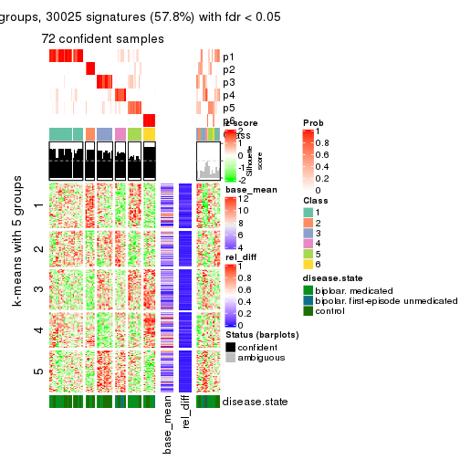
Signature heatmaps where rows are not scaled:
get_signatures(res, k = 2, scale_rows = FALSE)
get_signatures(res, k = 3, scale_rows = FALSE)
get_signatures(res, k = 4, scale_rows = FALSE)
get_signatures(res, k = 5, scale_rows = FALSE)
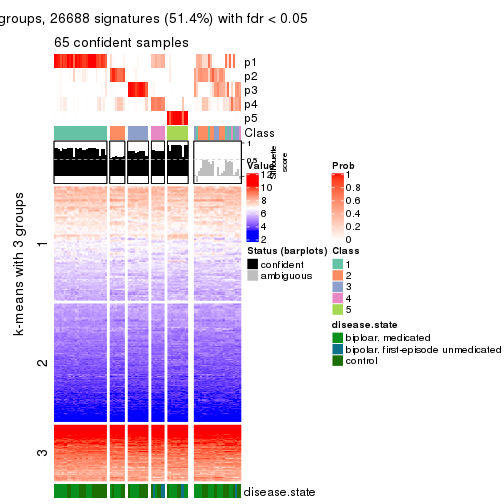
get_signatures(res, k = 6, scale_rows = FALSE)
Compare the overlap of signatures from different k:
compare_signatures(res)
get_signature() returns a data frame invisibly. TO get the list of signatures, the function
call should be assigned to a variable explicitly. In following code, if plot argument is set
to FALSE, no heatmap is plotted while only the differential analysis is performed.
# code only for demonstration
tb = get_signature(res, k = ..., plot = FALSE)
An example of the output of tb is:
#> which_row fdr mean_1 mean_2 scaled_mean_1 scaled_mean_2 km
#> 1 38 0.042760348 8.373488 9.131774 -0.5533452 0.5164555 1
#> 2 40 0.018707592 7.106213 8.469186 -0.6173731 0.5762149 1
#> 3 55 0.019134737 10.221463 11.207825 -0.6159697 0.5749050 1
#> 4 59 0.006059896 5.921854 7.869574 -0.6899429 0.6439467 1
#> 5 60 0.018055526 8.928898 10.211722 -0.6204761 0.5791110 1
#> 6 98 0.009384629 15.714769 14.887706 0.6635654 -0.6193277 2
...
The columns in tb are:
which_row: row indices corresponding to the input matrix.fdr: FDR for the differential test. mean_x: The mean value in group x.scaled_mean_x: The mean value in group x after rows are scaled.km: Row groups if k-means clustering is applied to rows.UMAP plot which shows how samples are separated.
dimension_reduction(res, k = 2, method = "UMAP")
dimension_reduction(res, k = 3, method = "UMAP")
dimension_reduction(res, k = 4, method = "UMAP")
dimension_reduction(res, k = 5, method = "UMAP")
dimension_reduction(res, k = 6, method = "UMAP")
Following heatmap shows how subgroups are split when increasing k:
collect_classes(res)
Test correlation between subgroups and known annotations. If the known annotation is numeric, one-way ANOVA test is applied, and if the known annotation is discrete, chi-squared contingency table test is applied.
test_to_known_factors(res)
#> n disease.state(p) k
#> CV:pam 80 0.33009 2
#> CV:pam 71 0.26289 3
#> CV:pam 83 0.26042 4
#> CV:pam 65 0.01088 5
#> CV:pam 72 0.00765 6
If matrix rows can be associated to genes, consider to use GO_Enrichment(res,
...) to perform function enrichment for the signature genes.
The object with results only for a single top-value method and a single partition method can be extracted as:
res = res_list["CV", "mclust"]
# you can also extract it by
# res = res_list["CV:mclust"]
A summary of res and all the functions that can be applied to it:
res
#> A 'ConsensusPartition' object with k = 2, 3, 4, 5, 6.
#> On a matrix with 51941 rows and 88 columns.
#> Top rows (1000, 2000, 3000, 4000, 5000) are extracted by 'CV' method.
#> Subgroups are detected by 'mclust' method.
#> Performed in total 1250 partitions by row resampling.
#> Best k for subgroups seems to be 2.
#>
#> Following methods can be applied to this 'ConsensusPartition' object:
#> [1] "cola_report" "collect_classes" "collect_plots"
#> [4] "collect_stats" "colnames" "compare_signatures"
#> [7] "consensus_heatmap" "dimension_reduction" "functional_enrichment"
#> [10] "get_anno_col" "get_anno" "get_classes"
#> [13] "get_consensus" "get_matrix" "get_membership"
#> [16] "get_param" "get_signatures" "get_stats"
#> [19] "is_best_k" "is_stable_k" "membership_heatmap"
#> [22] "ncol" "nrow" "plot_ecdf"
#> [25] "rownames" "select_partition_number" "show"
#> [28] "suggest_best_k" "test_to_known_factors"
collect_plots() function collects all the plots made from res for all k (number of partitions)
into one single page to provide an easy and fast comparison between different k.
collect_plots(res)
The plots are:
k and the heatmap of
predicted classes for each k.k.k.k.All the plots in panels can be made by individual functions and they are plotted later in this section.
select_partition_number() produces several plots showing different
statistics for choosing “optimized” k. There are following statistics:
k;k, the area increased is defined as \(A_k - A_{k-1}\).The detailed explanations of these statistics can be found in the cola vignette.
Generally speaking, lower PAC score, higher mean silhouette score or higher
concordance corresponds to better partition. Rand index and Jaccard index
measure how similar the current partition is compared to partition with k-1.
If they are too similar, we won't accept k is better than k-1.
select_partition_number(res)
The numeric values for all these statistics can be obtained by get_stats().
get_stats(res)
#> k 1-PAC mean_silhouette concordance area_increased Rand Jaccard
#> 2 2 0.316 0.811 0.866 0.4487 0.520 0.520
#> 3 3 0.274 0.513 0.690 0.3060 0.542 0.318
#> 4 4 0.199 0.532 0.635 0.0871 0.773 0.471
#> 5 5 0.390 0.559 0.664 0.1448 0.770 0.369
#> 6 6 0.650 0.699 0.775 0.0897 0.839 0.432
suggest_best_k() suggests the best \(k\) based on these statistics. The rules are as follows:
NA.suggest_best_k(res)
#> [1] 2
Following shows the table of the partitions (You need to click the show/hide
code output link to see it). The membership matrix (columns with name p*)
is inferred by
clue::cl_consensus()
function with the SE method. Basically the value in the membership matrix
represents the probability to belong to a certain group. The finall class
label for an item is determined with the group with highest probability it
belongs to.
In get_classes() function, the entropy is calculated from the membership
matrix and the silhouette score is calculated from the consensus matrix.
cbind(get_classes(res, k = 2), get_membership(res, k = 2))
#> class entropy silhouette p1 p2
#> GSM1130404 1 0.7602 0.7675 0.780 0.220
#> GSM1130405 1 0.9710 0.4468 0.600 0.400
#> GSM1130408 2 0.4562 0.8835 0.096 0.904
#> GSM1130409 1 0.6048 0.8333 0.852 0.148
#> GSM1130410 1 0.5059 0.8468 0.888 0.112
#> GSM1130415 2 0.1843 0.8405 0.028 0.972
#> GSM1130416 2 0.4431 0.8811 0.092 0.908
#> GSM1130417 2 0.1843 0.8401 0.028 0.972
#> GSM1130418 2 0.1633 0.8365 0.024 0.976
#> GSM1130421 2 0.4939 0.8888 0.108 0.892
#> GSM1130422 2 0.6438 0.9032 0.164 0.836
#> GSM1130423 1 0.0672 0.8696 0.992 0.008
#> GSM1130424 1 0.0000 0.8720 1.000 0.000
#> GSM1130425 1 0.4562 0.8478 0.904 0.096
#> GSM1130426 2 0.6148 0.9018 0.152 0.848
#> GSM1130427 1 0.9815 0.3916 0.580 0.420
#> GSM1130428 1 0.6531 0.7240 0.832 0.168
#> GSM1130429 1 0.1633 0.8673 0.976 0.024
#> GSM1130430 1 0.6148 0.8299 0.848 0.152
#> GSM1130431 1 0.1184 0.8720 0.984 0.016
#> GSM1130432 2 0.6048 0.8792 0.148 0.852
#> GSM1130433 2 0.8386 0.6818 0.268 0.732
#> GSM1130434 1 0.4939 0.8474 0.892 0.108
#> GSM1130435 1 0.5059 0.8454 0.888 0.112
#> GSM1130436 1 0.5294 0.8390 0.880 0.120
#> GSM1130437 1 0.5178 0.8414 0.884 0.116
#> GSM1130438 1 0.9323 0.5768 0.652 0.348
#> GSM1130439 1 0.7056 0.6919 0.808 0.192
#> GSM1130440 2 0.8267 0.8419 0.260 0.740
#> GSM1130441 2 0.7139 0.9146 0.196 0.804
#> GSM1130442 2 0.6712 0.9153 0.176 0.824
#> GSM1130443 1 0.0376 0.8712 0.996 0.004
#> GSM1130444 1 0.0376 0.8712 0.996 0.004
#> GSM1130445 1 0.1184 0.8698 0.984 0.016
#> GSM1130476 2 0.7602 0.9075 0.220 0.780
#> GSM1130483 1 0.5294 0.8458 0.880 0.120
#> GSM1130484 1 0.6048 0.8342 0.852 0.148
#> GSM1130487 1 0.0376 0.8712 0.996 0.004
#> GSM1130488 1 0.4562 0.8499 0.904 0.096
#> GSM1130419 1 0.0000 0.8720 1.000 0.000
#> GSM1130420 1 0.0000 0.8720 1.000 0.000
#> GSM1130464 1 0.0376 0.8712 0.996 0.004
#> GSM1130465 1 0.0376 0.8712 0.996 0.004
#> GSM1130468 1 0.0000 0.8720 1.000 0.000
#> GSM1130469 1 0.0000 0.8720 1.000 0.000
#> GSM1130402 1 0.4690 0.8479 0.900 0.100
#> GSM1130403 1 0.4161 0.8580 0.916 0.084
#> GSM1130406 1 0.4690 0.8478 0.900 0.100
#> GSM1130407 1 0.4815 0.8479 0.896 0.104
#> GSM1130411 2 0.2236 0.8471 0.036 0.964
#> GSM1130412 2 0.2236 0.8471 0.036 0.964
#> GSM1130413 2 0.4298 0.8792 0.088 0.912
#> GSM1130414 2 0.4690 0.8834 0.100 0.900
#> GSM1130446 2 0.7815 0.9024 0.232 0.768
#> GSM1130447 1 0.0000 0.8720 1.000 0.000
#> GSM1130448 2 0.7674 0.9052 0.224 0.776
#> GSM1130449 1 0.1633 0.8649 0.976 0.024
#> GSM1130450 2 0.7745 0.9050 0.228 0.772
#> GSM1130451 1 0.1414 0.8679 0.980 0.020
#> GSM1130452 2 0.7139 0.9146 0.196 0.804
#> GSM1130453 2 0.7745 0.9027 0.228 0.772
#> GSM1130454 2 0.7453 0.9107 0.212 0.788
#> GSM1130455 2 0.7056 0.9137 0.192 0.808
#> GSM1130456 1 0.0000 0.8720 1.000 0.000
#> GSM1130457 2 0.7139 0.9146 0.196 0.804
#> GSM1130458 2 0.7883 0.8990 0.236 0.764
#> GSM1130459 2 0.7139 0.9146 0.196 0.804
#> GSM1130460 2 0.7139 0.9146 0.196 0.804
#> GSM1130461 2 0.6973 0.9150 0.188 0.812
#> GSM1130462 2 0.7815 0.9024 0.232 0.768
#> GSM1130463 1 0.9970 -0.1925 0.532 0.468
#> GSM1130466 1 0.0000 0.8720 1.000 0.000
#> GSM1130467 2 0.7139 0.9146 0.196 0.804
#> GSM1130470 1 0.0000 0.8720 1.000 0.000
#> GSM1130471 1 0.0376 0.8708 0.996 0.004
#> GSM1130472 1 0.0672 0.8696 0.992 0.008
#> GSM1130473 1 0.0000 0.8720 1.000 0.000
#> GSM1130474 1 0.8909 0.4532 0.692 0.308
#> GSM1130475 2 0.7299 0.9130 0.204 0.796
#> GSM1130477 1 0.5178 0.8414 0.884 0.116
#> GSM1130478 1 0.5294 0.8418 0.880 0.120
#> GSM1130479 1 0.0672 0.8724 0.992 0.008
#> GSM1130480 1 0.9896 -0.0317 0.560 0.440
#> GSM1130481 1 0.9944 -0.1292 0.544 0.456
#> GSM1130482 2 0.7883 0.8991 0.236 0.764
#> GSM1130485 1 0.0376 0.8715 0.996 0.004
#> GSM1130486 1 0.0000 0.8720 1.000 0.000
#> GSM1130489 1 0.8713 0.5319 0.708 0.292
cbind(get_classes(res, k = 3), get_membership(res, k = 3))
#> class entropy silhouette p1 p2 p3
#> GSM1130404 1 0.1163 0.747 0.972 0.028 0.000
#> GSM1130405 1 0.2165 0.747 0.936 0.064 0.000
#> GSM1130408 1 0.8261 0.479 0.616 0.124 0.260
#> GSM1130409 1 0.0000 0.746 1.000 0.000 0.000
#> GSM1130410 1 0.0983 0.744 0.980 0.004 0.016
#> GSM1130415 1 0.5465 0.643 0.712 0.288 0.000
#> GSM1130416 1 0.7319 0.604 0.708 0.128 0.164
#> GSM1130417 1 0.5621 0.635 0.692 0.308 0.000
#> GSM1130418 1 0.5621 0.635 0.692 0.308 0.000
#> GSM1130421 1 0.7572 0.586 0.688 0.128 0.184
#> GSM1130422 1 0.7872 0.507 0.620 0.084 0.296
#> GSM1130423 1 0.6286 -0.146 0.536 0.000 0.464
#> GSM1130424 3 0.9704 0.469 0.280 0.264 0.456
#> GSM1130425 1 0.2496 0.721 0.928 0.004 0.068
#> GSM1130426 1 0.5010 0.714 0.840 0.084 0.076
#> GSM1130427 1 0.2448 0.745 0.924 0.076 0.000
#> GSM1130428 3 0.9823 0.468 0.288 0.284 0.428
#> GSM1130429 3 0.9768 0.472 0.296 0.264 0.440
#> GSM1130430 1 0.1129 0.746 0.976 0.020 0.004
#> GSM1130431 1 0.3030 0.686 0.904 0.004 0.092
#> GSM1130432 1 0.5787 0.690 0.796 0.068 0.136
#> GSM1130433 1 0.5267 0.693 0.816 0.044 0.140
#> GSM1130434 1 0.1163 0.742 0.972 0.000 0.028
#> GSM1130435 1 0.0747 0.744 0.984 0.000 0.016
#> GSM1130436 1 0.1585 0.742 0.964 0.008 0.028
#> GSM1130437 1 0.1525 0.742 0.964 0.004 0.032
#> GSM1130438 1 0.7353 0.146 0.532 0.032 0.436
#> GSM1130439 3 0.9431 -0.272 0.400 0.176 0.424
#> GSM1130440 3 0.8334 -0.221 0.440 0.080 0.480
#> GSM1130441 2 0.7471 0.813 0.036 0.516 0.448
#> GSM1130442 2 0.8737 0.747 0.108 0.464 0.428
#> GSM1130443 3 0.5378 0.568 0.236 0.008 0.756
#> GSM1130444 3 0.5578 0.562 0.240 0.012 0.748
#> GSM1130445 3 0.5763 0.550 0.244 0.016 0.740
#> GSM1130476 3 0.7758 -0.785 0.048 0.468 0.484
#> GSM1130483 1 0.2066 0.741 0.940 0.000 0.060
#> GSM1130484 1 0.2261 0.739 0.932 0.000 0.068
#> GSM1130487 3 0.5659 0.575 0.248 0.012 0.740
#> GSM1130488 1 0.6809 -0.228 0.524 0.012 0.464
#> GSM1130419 3 0.5115 0.602 0.228 0.004 0.768
#> GSM1130420 3 0.5115 0.602 0.228 0.004 0.768
#> GSM1130464 3 0.5541 0.600 0.252 0.008 0.740
#> GSM1130465 3 0.5737 0.601 0.256 0.012 0.732
#> GSM1130468 3 0.5291 0.596 0.268 0.000 0.732
#> GSM1130469 3 0.5016 0.603 0.240 0.000 0.760
#> GSM1130402 1 0.1031 0.741 0.976 0.000 0.024
#> GSM1130403 1 0.1453 0.741 0.968 0.008 0.024
#> GSM1130406 1 0.2955 0.733 0.912 0.008 0.080
#> GSM1130407 1 0.2866 0.734 0.916 0.008 0.076
#> GSM1130411 1 0.5621 0.635 0.692 0.308 0.000
#> GSM1130412 1 0.5591 0.636 0.696 0.304 0.000
#> GSM1130413 1 0.4196 0.730 0.864 0.112 0.024
#> GSM1130414 1 0.6834 0.638 0.740 0.112 0.148
#> GSM1130446 2 0.9367 0.701 0.180 0.476 0.344
#> GSM1130447 3 0.9701 0.475 0.284 0.260 0.456
#> GSM1130448 3 0.7918 -0.778 0.056 0.460 0.484
#> GSM1130449 1 0.6297 0.108 0.640 0.008 0.352
#> GSM1130450 2 0.8107 0.813 0.068 0.508 0.424
#> GSM1130451 2 0.9873 0.466 0.268 0.404 0.328
#> GSM1130452 2 0.7471 0.813 0.036 0.516 0.448
#> GSM1130453 3 0.7918 -0.778 0.056 0.460 0.484
#> GSM1130454 3 0.7585 -0.792 0.040 0.476 0.484
#> GSM1130455 2 0.7575 0.813 0.040 0.504 0.456
#> GSM1130456 3 0.5327 0.596 0.272 0.000 0.728
#> GSM1130457 2 0.7647 0.816 0.044 0.516 0.440
#> GSM1130458 2 0.9676 0.559 0.252 0.460 0.288
#> GSM1130459 2 0.7555 0.816 0.040 0.520 0.440
#> GSM1130460 2 0.7476 0.812 0.036 0.512 0.452
#> GSM1130461 2 0.7665 0.800 0.044 0.500 0.456
#> GSM1130462 2 0.8179 0.812 0.072 0.504 0.424
#> GSM1130463 2 0.9838 0.490 0.288 0.424 0.288
#> GSM1130466 3 0.5098 0.601 0.248 0.000 0.752
#> GSM1130467 2 0.7471 0.813 0.036 0.516 0.448
#> GSM1130470 3 0.4974 0.603 0.236 0.000 0.764
#> GSM1130471 3 0.9379 0.513 0.276 0.216 0.508
#> GSM1130472 3 0.9379 0.513 0.276 0.216 0.508
#> GSM1130473 1 0.5982 0.252 0.668 0.004 0.328
#> GSM1130474 2 0.9466 0.676 0.188 0.456 0.356
#> GSM1130475 2 0.7672 0.803 0.044 0.488 0.468
#> GSM1130477 1 0.0829 0.744 0.984 0.004 0.012
#> GSM1130478 1 0.0424 0.746 0.992 0.008 0.000
#> GSM1130479 1 0.6189 0.144 0.632 0.004 0.364
#> GSM1130480 3 0.9641 -0.355 0.356 0.212 0.432
#> GSM1130481 2 0.9863 0.453 0.300 0.416 0.284
#> GSM1130482 1 0.9581 -0.275 0.476 0.236 0.288
#> GSM1130485 3 0.5497 0.585 0.292 0.000 0.708
#> GSM1130486 3 0.5517 0.597 0.268 0.004 0.728
#> GSM1130489 1 0.1711 0.745 0.960 0.032 0.008
cbind(get_classes(res, k = 4), get_membership(res, k = 4))
#> class entropy silhouette p1 p2 p3 p4
#> GSM1130404 1 0.7933 0.626 0.548 0.036 0.184 0.232
#> GSM1130405 1 0.7741 0.648 0.588 0.048 0.152 0.212
#> GSM1130408 3 0.5610 0.410 0.228 0.012 0.712 0.048
#> GSM1130409 1 0.6069 0.681 0.704 0.036 0.048 0.212
#> GSM1130410 1 0.5959 0.679 0.700 0.036 0.036 0.228
#> GSM1130415 1 0.5252 0.330 0.692 0.020 0.280 0.008
#> GSM1130416 1 0.6567 0.221 0.480 0.008 0.456 0.056
#> GSM1130417 1 0.5252 0.330 0.692 0.020 0.280 0.008
#> GSM1130418 1 0.5252 0.330 0.692 0.020 0.280 0.008
#> GSM1130421 3 0.5571 0.423 0.188 0.024 0.740 0.048
#> GSM1130422 3 0.5902 0.470 0.140 0.004 0.712 0.144
#> GSM1130423 4 0.4504 0.661 0.004 0.152 0.044 0.800
#> GSM1130424 4 0.3342 0.744 0.008 0.080 0.032 0.880
#> GSM1130425 4 0.7237 -0.300 0.432 0.024 0.076 0.468
#> GSM1130426 1 0.7751 0.368 0.404 0.004 0.396 0.196
#> GSM1130427 1 0.8523 0.508 0.440 0.040 0.308 0.212
#> GSM1130428 4 0.5397 0.593 0.008 0.080 0.160 0.752
#> GSM1130429 4 0.4014 0.727 0.008 0.080 0.064 0.848
#> GSM1130430 1 0.7985 0.623 0.544 0.040 0.172 0.244
#> GSM1130431 4 0.8063 -0.268 0.392 0.048 0.112 0.448
#> GSM1130432 3 0.7527 -0.320 0.356 0.000 0.452 0.192
#> GSM1130433 1 0.7193 0.594 0.552 0.000 0.240 0.208
#> GSM1130434 1 0.5251 0.675 0.740 0.016 0.032 0.212
#> GSM1130435 1 0.5133 0.674 0.740 0.016 0.024 0.220
#> GSM1130436 1 0.4737 0.665 0.760 0.016 0.012 0.212
#> GSM1130437 1 0.4737 0.665 0.760 0.016 0.012 0.212
#> GSM1130438 3 0.8359 0.444 0.188 0.096 0.556 0.160
#> GSM1130439 3 0.6699 0.491 0.032 0.112 0.676 0.180
#> GSM1130440 3 0.5662 0.511 0.016 0.100 0.748 0.136
#> GSM1130441 2 0.4877 0.639 0.000 0.592 0.408 0.000
#> GSM1130442 3 0.4558 0.426 0.112 0.020 0.820 0.048
#> GSM1130443 4 0.5555 0.605 0.004 0.088 0.176 0.732
#> GSM1130444 4 0.4386 0.662 0.004 0.020 0.192 0.784
#> GSM1130445 4 0.5278 0.586 0.008 0.020 0.284 0.688
#> GSM1130476 3 0.5550 0.345 0.000 0.248 0.692 0.060
#> GSM1130483 1 0.5950 0.661 0.704 0.016 0.068 0.212
#> GSM1130484 1 0.5982 0.660 0.704 0.016 0.072 0.208
#> GSM1130487 4 0.4862 0.630 0.008 0.020 0.228 0.744
#> GSM1130488 4 0.6464 0.145 0.308 0.000 0.096 0.596
#> GSM1130419 4 0.0712 0.754 0.008 0.004 0.004 0.984
#> GSM1130420 4 0.0524 0.753 0.008 0.004 0.000 0.988
#> GSM1130464 4 0.4082 0.685 0.008 0.020 0.152 0.820
#> GSM1130465 4 0.2179 0.749 0.012 0.000 0.064 0.924
#> GSM1130468 4 0.2674 0.748 0.004 0.020 0.068 0.908
#> GSM1130469 4 0.1247 0.756 0.004 0.016 0.012 0.968
#> GSM1130402 1 0.6160 0.673 0.680 0.044 0.032 0.244
#> GSM1130403 1 0.8284 0.586 0.496 0.044 0.176 0.284
#> GSM1130406 1 0.6850 0.610 0.632 0.016 0.120 0.232
#> GSM1130407 1 0.6266 0.654 0.684 0.016 0.088 0.212
#> GSM1130411 1 0.5252 0.330 0.692 0.020 0.280 0.008
#> GSM1130412 1 0.5252 0.330 0.692 0.020 0.280 0.008
#> GSM1130413 1 0.7556 0.472 0.496 0.004 0.312 0.188
#> GSM1130414 1 0.7581 0.435 0.476 0.004 0.340 0.180
#> GSM1130446 2 0.7229 0.620 0.000 0.536 0.280 0.184
#> GSM1130447 4 0.3245 0.745 0.008 0.080 0.028 0.884
#> GSM1130448 3 0.5859 0.293 0.000 0.284 0.652 0.064
#> GSM1130449 4 0.6992 0.202 0.280 0.000 0.156 0.564
#> GSM1130450 2 0.7278 0.643 0.000 0.508 0.324 0.168
#> GSM1130451 2 0.7357 0.398 0.000 0.500 0.180 0.320
#> GSM1130452 2 0.4877 0.639 0.000 0.592 0.408 0.000
#> GSM1130453 2 0.6653 0.198 0.000 0.480 0.436 0.084
#> GSM1130454 3 0.5877 0.287 0.000 0.276 0.656 0.068
#> GSM1130455 2 0.6336 0.647 0.000 0.480 0.460 0.060
#> GSM1130456 4 0.2218 0.757 0.004 0.028 0.036 0.932
#> GSM1130457 2 0.6626 0.678 0.000 0.528 0.384 0.088
#> GSM1130458 2 0.7453 0.576 0.004 0.532 0.256 0.208
#> GSM1130459 2 0.5080 0.645 0.000 0.576 0.420 0.004
#> GSM1130460 2 0.4877 0.639 0.000 0.592 0.408 0.000
#> GSM1130461 3 0.2142 0.397 0.000 0.016 0.928 0.056
#> GSM1130462 2 0.7225 0.652 0.000 0.512 0.328 0.160
#> GSM1130463 2 0.7785 0.487 0.000 0.428 0.288 0.284
#> GSM1130466 4 0.0937 0.760 0.012 0.000 0.012 0.976
#> GSM1130467 2 0.4877 0.639 0.000 0.592 0.408 0.000
#> GSM1130470 4 0.0336 0.757 0.000 0.000 0.008 0.992
#> GSM1130471 4 0.4504 0.661 0.004 0.152 0.044 0.800
#> GSM1130472 4 0.4504 0.661 0.004 0.152 0.044 0.800
#> GSM1130473 4 0.4314 0.739 0.032 0.060 0.064 0.844
#> GSM1130474 2 0.7402 0.602 0.000 0.500 0.308 0.192
#> GSM1130475 2 0.6605 0.655 0.000 0.480 0.440 0.080
#> GSM1130477 1 0.4544 0.661 0.760 0.016 0.004 0.220
#> GSM1130478 1 0.4737 0.665 0.760 0.016 0.012 0.212
#> GSM1130479 4 0.4363 0.739 0.028 0.060 0.072 0.840
#> GSM1130480 3 0.3992 0.466 0.008 0.004 0.800 0.188
#> GSM1130481 4 0.6899 0.220 0.012 0.108 0.280 0.600
#> GSM1130482 3 0.7719 0.170 0.132 0.020 0.460 0.388
#> GSM1130485 4 0.5008 0.670 0.008 0.144 0.068 0.780
#> GSM1130486 4 0.2402 0.751 0.012 0.000 0.076 0.912
#> GSM1130489 1 0.8255 0.384 0.364 0.012 0.344 0.280
cbind(get_classes(res, k = 5), get_membership(res, k = 5))
#> class entropy silhouette p1 p2 p3 p4 p5
#> GSM1130404 1 0.5777 0.715 0.732 0.056 0.056 0.040 0.116
#> GSM1130405 1 0.5962 0.704 0.712 0.056 0.056 0.036 0.140
#> GSM1130408 2 0.7042 0.387 0.064 0.592 0.232 0.028 0.084
#> GSM1130409 1 0.3629 0.748 0.860 0.044 0.052 0.032 0.012
#> GSM1130410 1 0.4924 0.735 0.792 0.044 0.048 0.040 0.076
#> GSM1130415 2 0.7770 0.455 0.248 0.472 0.136 0.000 0.144
#> GSM1130416 2 0.6783 0.492 0.256 0.584 0.032 0.020 0.108
#> GSM1130417 2 0.7770 0.455 0.248 0.472 0.136 0.000 0.144
#> GSM1130418 2 0.7770 0.455 0.248 0.472 0.136 0.000 0.144
#> GSM1130421 2 0.7136 0.509 0.192 0.604 0.096 0.028 0.080
#> GSM1130422 2 0.6712 0.230 0.072 0.552 0.316 0.048 0.012
#> GSM1130423 5 0.2605 0.706 0.000 0.000 0.000 0.148 0.852
#> GSM1130424 5 0.4715 0.775 0.056 0.024 0.000 0.164 0.756
#> GSM1130425 1 0.6555 0.173 0.512 0.008 0.000 0.188 0.292
#> GSM1130426 2 0.7371 0.452 0.280 0.536 0.036 0.048 0.100
#> GSM1130427 1 0.7030 0.548 0.616 0.184 0.056 0.036 0.108
#> GSM1130428 5 0.5366 0.756 0.056 0.076 0.000 0.140 0.728
#> GSM1130429 5 0.4715 0.775 0.056 0.024 0.000 0.164 0.756
#> GSM1130430 1 0.5864 0.709 0.720 0.040 0.048 0.056 0.136
#> GSM1130431 1 0.7054 0.508 0.604 0.028 0.048 0.176 0.144
#> GSM1130432 1 0.8807 0.330 0.432 0.236 0.160 0.076 0.096
#> GSM1130433 1 0.7320 0.619 0.624 0.116 0.092 0.072 0.096
#> GSM1130434 1 0.2632 0.741 0.892 0.032 0.004 0.072 0.000
#> GSM1130435 1 0.1996 0.744 0.928 0.032 0.004 0.036 0.000
#> GSM1130436 1 0.1408 0.715 0.948 0.000 0.008 0.044 0.000
#> GSM1130437 1 0.1331 0.715 0.952 0.000 0.008 0.040 0.000
#> GSM1130438 3 0.5222 0.858 0.088 0.112 0.744 0.056 0.000
#> GSM1130439 3 0.5106 0.874 0.064 0.132 0.748 0.056 0.000
#> GSM1130440 3 0.5058 0.873 0.064 0.140 0.748 0.048 0.000
#> GSM1130441 2 0.0162 0.511 0.000 0.996 0.000 0.004 0.000
#> GSM1130442 2 0.5669 0.284 0.048 0.608 0.316 0.028 0.000
#> GSM1130443 4 0.1651 0.806 0.012 0.008 0.036 0.944 0.000
#> GSM1130444 4 0.2875 0.787 0.056 0.008 0.052 0.884 0.000
#> GSM1130445 4 0.5645 0.507 0.060 0.044 0.224 0.672 0.000
#> GSM1130476 3 0.3881 0.870 0.008 0.128 0.812 0.052 0.000
#> GSM1130483 1 0.3905 0.722 0.832 0.052 0.036 0.080 0.000
#> GSM1130484 1 0.4844 0.665 0.772 0.052 0.100 0.076 0.000
#> GSM1130487 4 0.3566 0.703 0.024 0.004 0.160 0.812 0.000
#> GSM1130488 4 0.2086 0.809 0.048 0.008 0.020 0.924 0.000
#> GSM1130419 4 0.0566 0.801 0.004 0.000 0.000 0.984 0.012
#> GSM1130420 4 0.0566 0.801 0.004 0.000 0.000 0.984 0.012
#> GSM1130464 4 0.1243 0.810 0.008 0.004 0.028 0.960 0.000
#> GSM1130465 4 0.0854 0.811 0.008 0.004 0.012 0.976 0.000
#> GSM1130468 4 0.2276 0.800 0.040 0.028 0.008 0.920 0.004
#> GSM1130469 4 0.1419 0.805 0.012 0.016 0.000 0.956 0.016
#> GSM1130402 1 0.5067 0.728 0.776 0.028 0.048 0.044 0.104
#> GSM1130403 1 0.6666 0.596 0.616 0.032 0.048 0.064 0.240
#> GSM1130406 1 0.5556 0.451 0.656 0.004 0.204 0.136 0.000
#> GSM1130407 1 0.5708 0.454 0.668 0.032 0.216 0.084 0.000
#> GSM1130411 2 0.7770 0.455 0.248 0.472 0.136 0.000 0.144
#> GSM1130412 2 0.7770 0.455 0.248 0.472 0.136 0.000 0.144
#> GSM1130413 2 0.7767 0.334 0.336 0.440 0.080 0.012 0.132
#> GSM1130414 2 0.7410 0.459 0.272 0.536 0.032 0.052 0.108
#> GSM1130446 2 0.6409 -0.191 0.052 0.488 0.000 0.056 0.404
#> GSM1130447 5 0.4779 0.775 0.060 0.024 0.000 0.164 0.752
#> GSM1130448 3 0.3881 0.870 0.008 0.128 0.812 0.052 0.000
#> GSM1130449 1 0.7401 0.337 0.448 0.136 0.008 0.356 0.052
#> GSM1130450 2 0.2965 0.540 0.052 0.884 0.004 0.052 0.008
#> GSM1130451 2 0.7392 -0.245 0.060 0.428 0.016 0.096 0.400
#> GSM1130452 2 0.0510 0.514 0.000 0.984 0.000 0.016 0.000
#> GSM1130453 3 0.5176 0.790 0.016 0.236 0.688 0.060 0.000
#> GSM1130454 3 0.4067 0.876 0.016 0.132 0.804 0.048 0.000
#> GSM1130455 2 0.2980 0.530 0.056 0.884 0.024 0.036 0.000
#> GSM1130456 4 0.6070 0.130 0.056 0.044 0.000 0.584 0.316
#> GSM1130457 2 0.1970 0.544 0.060 0.924 0.000 0.012 0.004
#> GSM1130458 2 0.6532 -0.264 0.060 0.460 0.000 0.056 0.424
#> GSM1130459 2 0.0932 0.527 0.020 0.972 0.000 0.004 0.004
#> GSM1130460 2 0.0162 0.511 0.000 0.996 0.000 0.004 0.000
#> GSM1130461 2 0.5967 0.213 0.056 0.584 0.324 0.036 0.000
#> GSM1130462 2 0.2965 0.540 0.052 0.884 0.004 0.052 0.008
#> GSM1130463 2 0.6613 -0.240 0.052 0.468 0.000 0.072 0.408
#> GSM1130466 4 0.4125 0.662 0.056 0.000 0.000 0.772 0.172
#> GSM1130467 2 0.0290 0.513 0.000 0.992 0.000 0.008 0.000
#> GSM1130470 4 0.2689 0.771 0.012 0.016 0.000 0.888 0.084
#> GSM1130471 5 0.2605 0.706 0.000 0.000 0.000 0.148 0.852
#> GSM1130472 5 0.2605 0.706 0.000 0.000 0.000 0.148 0.852
#> GSM1130473 5 0.5657 0.737 0.124 0.020 0.000 0.180 0.676
#> GSM1130474 2 0.6712 0.193 0.064 0.592 0.008 0.084 0.252
#> GSM1130475 2 0.3254 0.529 0.060 0.868 0.020 0.052 0.000
#> GSM1130477 1 0.1331 0.717 0.952 0.000 0.008 0.040 0.000
#> GSM1130478 1 0.1251 0.717 0.956 0.000 0.008 0.036 0.000
#> GSM1130479 5 0.6241 0.682 0.192 0.024 0.000 0.168 0.616
#> GSM1130480 3 0.6463 0.730 0.144 0.192 0.616 0.048 0.000
#> GSM1130481 5 0.7181 0.375 0.072 0.364 0.000 0.108 0.456
#> GSM1130482 2 0.7066 0.458 0.292 0.552 0.028 0.052 0.076
#> GSM1130485 4 0.6536 -0.179 0.060 0.060 0.000 0.500 0.380
#> GSM1130486 4 0.3046 0.769 0.076 0.020 0.000 0.876 0.028
#> GSM1130489 5 0.7286 0.143 0.324 0.064 0.040 0.056 0.516
cbind(get_classes(res, k = 6), get_membership(res, k = 6))
#> class entropy silhouette p1 p2 p3 p4 p5 p6
#> GSM1130404 2 0.4806 0.668 0.152 0.736 0.028 0.016 0.000 0.068
#> GSM1130405 2 0.4284 0.689 0.108 0.780 0.020 0.012 0.000 0.080
#> GSM1130408 3 0.5474 0.343 0.000 0.312 0.552 0.004 0.132 0.000
#> GSM1130409 2 0.4699 0.577 0.260 0.680 0.016 0.012 0.000 0.032
#> GSM1130410 2 0.4418 0.639 0.204 0.732 0.016 0.012 0.000 0.036
#> GSM1130415 2 0.3733 0.607 0.164 0.784 0.004 0.044 0.004 0.000
#> GSM1130416 2 0.3655 0.630 0.000 0.812 0.100 0.016 0.072 0.000
#> GSM1130417 2 0.3733 0.607 0.164 0.784 0.004 0.044 0.004 0.000
#> GSM1130418 2 0.3733 0.607 0.164 0.784 0.004 0.044 0.004 0.000
#> GSM1130421 2 0.5692 0.296 0.000 0.524 0.308 0.004 0.164 0.000
#> GSM1130422 3 0.4916 0.138 0.000 0.396 0.548 0.008 0.048 0.000
#> GSM1130423 6 0.0260 0.858 0.000 0.000 0.000 0.008 0.000 0.992
#> GSM1130424 6 0.0291 0.861 0.000 0.000 0.004 0.004 0.000 0.992
#> GSM1130425 6 0.4539 0.634 0.028 0.244 0.012 0.016 0.000 0.700
#> GSM1130426 2 0.5312 0.688 0.040 0.732 0.044 0.008 0.060 0.116
#> GSM1130427 2 0.4117 0.693 0.100 0.788 0.024 0.004 0.000 0.084
#> GSM1130428 6 0.0665 0.856 0.000 0.000 0.008 0.004 0.008 0.980
#> GSM1130429 6 0.0291 0.861 0.000 0.000 0.004 0.004 0.000 0.992
#> GSM1130430 2 0.4655 0.674 0.140 0.740 0.028 0.004 0.000 0.088
#> GSM1130431 2 0.5060 0.528 0.052 0.628 0.020 0.004 0.000 0.296
#> GSM1130432 2 0.5684 0.288 0.068 0.516 0.388 0.008 0.016 0.004
#> GSM1130433 2 0.6521 0.327 0.228 0.456 0.292 0.008 0.012 0.004
#> GSM1130434 1 0.4554 0.714 0.736 0.188 0.036 0.020 0.000 0.020
#> GSM1130435 1 0.4246 0.677 0.736 0.212 0.012 0.012 0.000 0.028
#> GSM1130436 1 0.3270 0.773 0.836 0.084 0.072 0.008 0.000 0.000
#> GSM1130437 1 0.3202 0.756 0.832 0.020 0.132 0.012 0.004 0.000
#> GSM1130438 3 0.0291 0.797 0.000 0.000 0.992 0.004 0.004 0.000
#> GSM1130439 3 0.0291 0.797 0.000 0.000 0.992 0.004 0.004 0.000
#> GSM1130440 3 0.0291 0.797 0.000 0.000 0.992 0.004 0.004 0.000
#> GSM1130441 5 0.0260 0.874 0.000 0.000 0.008 0.000 0.992 0.000
#> GSM1130442 3 0.5727 0.127 0.000 0.372 0.476 0.004 0.148 0.000
#> GSM1130443 4 0.3717 0.758 0.000 0.000 0.276 0.708 0.000 0.016
#> GSM1130444 4 0.3371 0.739 0.000 0.000 0.292 0.708 0.000 0.000
#> GSM1130445 4 0.3428 0.729 0.000 0.000 0.304 0.696 0.000 0.000
#> GSM1130476 3 0.0146 0.797 0.000 0.000 0.996 0.000 0.004 0.000
#> GSM1130483 1 0.3884 0.700 0.708 0.000 0.272 0.012 0.004 0.004
#> GSM1130484 1 0.3733 0.691 0.700 0.000 0.288 0.008 0.000 0.004
#> GSM1130487 4 0.3351 0.742 0.000 0.000 0.288 0.712 0.000 0.000
#> GSM1130488 4 0.5816 0.670 0.128 0.004 0.236 0.604 0.004 0.024
#> GSM1130419 4 0.1434 0.744 0.000 0.000 0.012 0.940 0.000 0.048
#> GSM1130420 4 0.1434 0.744 0.000 0.000 0.012 0.940 0.000 0.048
#> GSM1130464 4 0.3711 0.765 0.000 0.000 0.260 0.720 0.000 0.020
#> GSM1130465 4 0.3807 0.779 0.000 0.000 0.228 0.740 0.004 0.028
#> GSM1130468 4 0.4105 0.783 0.000 0.000 0.216 0.732 0.008 0.044
#> GSM1130469 4 0.3024 0.769 0.000 0.000 0.040 0.856 0.016 0.088
#> GSM1130402 2 0.4634 0.626 0.212 0.708 0.016 0.004 0.000 0.060
#> GSM1130403 2 0.4522 0.642 0.060 0.724 0.016 0.004 0.000 0.196
#> GSM1130406 1 0.4029 0.670 0.680 0.000 0.292 0.028 0.000 0.000
#> GSM1130407 1 0.3879 0.678 0.688 0.000 0.292 0.020 0.000 0.000
#> GSM1130411 2 0.3733 0.607 0.164 0.784 0.004 0.044 0.004 0.000
#> GSM1130412 2 0.3733 0.607 0.164 0.784 0.004 0.044 0.004 0.000
#> GSM1130413 2 0.2377 0.677 0.020 0.908 0.012 0.040 0.020 0.000
#> GSM1130414 2 0.2501 0.685 0.000 0.896 0.028 0.016 0.056 0.004
#> GSM1130446 5 0.2554 0.852 0.000 0.000 0.020 0.012 0.880 0.088
#> GSM1130447 6 0.0291 0.861 0.000 0.000 0.004 0.004 0.000 0.992
#> GSM1130448 3 0.0146 0.797 0.000 0.000 0.996 0.000 0.004 0.000
#> GSM1130449 2 0.8049 0.290 0.020 0.400 0.236 0.144 0.016 0.184
#> GSM1130450 5 0.1749 0.881 0.000 0.000 0.024 0.008 0.932 0.036
#> GSM1130451 5 0.4852 0.634 0.000 0.000 0.244 0.016 0.668 0.072
#> GSM1130452 5 0.0603 0.875 0.000 0.000 0.016 0.004 0.980 0.000
#> GSM1130453 3 0.1007 0.770 0.000 0.000 0.956 0.000 0.044 0.000
#> GSM1130454 3 0.0363 0.796 0.000 0.000 0.988 0.000 0.012 0.000
#> GSM1130455 5 0.2915 0.742 0.000 0.000 0.184 0.008 0.808 0.000
#> GSM1130456 4 0.4133 0.692 0.000 0.004 0.040 0.748 0.012 0.196
#> GSM1130457 5 0.1390 0.882 0.000 0.000 0.032 0.004 0.948 0.016
#> GSM1130458 5 0.3042 0.812 0.000 0.000 0.032 0.004 0.836 0.128
#> GSM1130459 5 0.0458 0.877 0.000 0.000 0.016 0.000 0.984 0.000
#> GSM1130460 5 0.0260 0.874 0.000 0.000 0.008 0.000 0.992 0.000
#> GSM1130461 3 0.2003 0.725 0.000 0.000 0.884 0.000 0.116 0.000
#> GSM1130462 5 0.1767 0.881 0.000 0.000 0.020 0.012 0.932 0.036
#> GSM1130463 5 0.2704 0.841 0.000 0.000 0.020 0.012 0.868 0.100
#> GSM1130466 4 0.4257 0.636 0.000 0.060 0.008 0.728 0.000 0.204
#> GSM1130467 5 0.0260 0.874 0.000 0.000 0.008 0.000 0.992 0.000
#> GSM1130470 4 0.3319 0.747 0.000 0.004 0.028 0.828 0.012 0.128
#> GSM1130471 6 0.0260 0.858 0.000 0.000 0.000 0.008 0.000 0.992
#> GSM1130472 6 0.0260 0.858 0.000 0.000 0.000 0.008 0.000 0.992
#> GSM1130473 6 0.3426 0.744 0.000 0.192 0.012 0.012 0.000 0.784
#> GSM1130474 5 0.3905 0.793 0.000 0.000 0.136 0.008 0.780 0.076
#> GSM1130475 5 0.2882 0.747 0.000 0.000 0.180 0.008 0.812 0.000
#> GSM1130477 1 0.2833 0.734 0.836 0.148 0.012 0.004 0.000 0.000
#> GSM1130478 1 0.2905 0.737 0.836 0.144 0.012 0.008 0.000 0.000
#> GSM1130479 6 0.3776 0.727 0.016 0.196 0.016 0.004 0.000 0.768
#> GSM1130480 3 0.0984 0.790 0.000 0.008 0.968 0.012 0.012 0.000
#> GSM1130481 6 0.6342 0.425 0.004 0.208 0.032 0.008 0.188 0.560
#> GSM1130482 2 0.5946 0.676 0.052 0.688 0.088 0.012 0.044 0.116
#> GSM1130485 4 0.4560 0.678 0.000 0.004 0.044 0.716 0.024 0.212
#> GSM1130486 4 0.4980 0.781 0.020 0.032 0.128 0.740 0.004 0.076
#> GSM1130489 2 0.4130 0.634 0.028 0.740 0.016 0.004 0.000 0.212
Heatmaps for the consensus matrix. It visualizes the probability of two samples to be in a same group.
consensus_heatmap(res, k = 2)
consensus_heatmap(res, k = 3)
consensus_heatmap(res, k = 4)
consensus_heatmap(res, k = 5)
consensus_heatmap(res, k = 6)
Heatmaps for the membership of samples in all partitions to see how consistent they are:
membership_heatmap(res, k = 2)

membership_heatmap(res, k = 3)
membership_heatmap(res, k = 4)
membership_heatmap(res, k = 5)
membership_heatmap(res, k = 6)
As soon as we have had the classes for columns, we can look for signatures which are significantly different between classes which can be candidate marks for certain classes. Following are the heatmaps for signatures.
Signature heatmaps where rows are scaled:
get_signatures(res, k = 2)
get_signatures(res, k = 3)

get_signatures(res, k = 4)

get_signatures(res, k = 5)
get_signatures(res, k = 6)
Signature heatmaps where rows are not scaled:
get_signatures(res, k = 2, scale_rows = FALSE)
get_signatures(res, k = 3, scale_rows = FALSE)
get_signatures(res, k = 4, scale_rows = FALSE)
get_signatures(res, k = 5, scale_rows = FALSE)
get_signatures(res, k = 6, scale_rows = FALSE)
Compare the overlap of signatures from different k:
compare_signatures(res)
get_signature() returns a data frame invisibly. TO get the list of signatures, the function
call should be assigned to a variable explicitly. In following code, if plot argument is set
to FALSE, no heatmap is plotted while only the differential analysis is performed.
# code only for demonstration
tb = get_signature(res, k = ..., plot = FALSE)
An example of the output of tb is:
#> which_row fdr mean_1 mean_2 scaled_mean_1 scaled_mean_2 km
#> 1 38 0.042760348 8.373488 9.131774 -0.5533452 0.5164555 1
#> 2 40 0.018707592 7.106213 8.469186 -0.6173731 0.5762149 1
#> 3 55 0.019134737 10.221463 11.207825 -0.6159697 0.5749050 1
#> 4 59 0.006059896 5.921854 7.869574 -0.6899429 0.6439467 1
#> 5 60 0.018055526 8.928898 10.211722 -0.6204761 0.5791110 1
#> 6 98 0.009384629 15.714769 14.887706 0.6635654 -0.6193277 2
...
The columns in tb are:
which_row: row indices corresponding to the input matrix.fdr: FDR for the differential test. mean_x: The mean value in group x.scaled_mean_x: The mean value in group x after rows are scaled.km: Row groups if k-means clustering is applied to rows.UMAP plot which shows how samples are separated.
dimension_reduction(res, k = 2, method = "UMAP")
dimension_reduction(res, k = 3, method = "UMAP")
dimension_reduction(res, k = 4, method = "UMAP")
dimension_reduction(res, k = 5, method = "UMAP")
dimension_reduction(res, k = 6, method = "UMAP")
Following heatmap shows how subgroups are split when increasing k:
collect_classes(res)
Test correlation between subgroups and known annotations. If the known annotation is numeric, one-way ANOVA test is applied, and if the known annotation is discrete, chi-squared contingency table test is applied.
test_to_known_factors(res)
#> n disease.state(p) k
#> CV:mclust 82 4.98e-02 2
#> CV:mclust 66 1.11e-06 3
#> CV:mclust 57 6.56e-04 4
#> CV:mclust 60 5.39e-05 5
#> CV:mclust 80 2.85e-05 6
If matrix rows can be associated to genes, consider to use GO_Enrichment(res,
...) to perform function enrichment for the signature genes.
The object with results only for a single top-value method and a single partition method can be extracted as:
res = res_list["CV", "NMF"]
# you can also extract it by
# res = res_list["CV:NMF"]
A summary of res and all the functions that can be applied to it:
res
#> A 'ConsensusPartition' object with k = 2, 3, 4, 5, 6.
#> On a matrix with 51941 rows and 88 columns.
#> Top rows (1000, 2000, 3000, 4000, 5000) are extracted by 'CV' method.
#> Subgroups are detected by 'NMF' method.
#> Performed in total 1250 partitions by row resampling.
#> Best k for subgroups seems to be 2.
#>
#> Following methods can be applied to this 'ConsensusPartition' object:
#> [1] "cola_report" "collect_classes" "collect_plots"
#> [4] "collect_stats" "colnames" "compare_signatures"
#> [7] "consensus_heatmap" "dimension_reduction" "functional_enrichment"
#> [10] "get_anno_col" "get_anno" "get_classes"
#> [13] "get_consensus" "get_matrix" "get_membership"
#> [16] "get_param" "get_signatures" "get_stats"
#> [19] "is_best_k" "is_stable_k" "membership_heatmap"
#> [22] "ncol" "nrow" "plot_ecdf"
#> [25] "rownames" "select_partition_number" "show"
#> [28] "suggest_best_k" "test_to_known_factors"
collect_plots() function collects all the plots made from res for all k (number of partitions)
into one single page to provide an easy and fast comparison between different k.
collect_plots(res)
The plots are:
k and the heatmap of
predicted classes for each k.k.k.k.All the plots in panels can be made by individual functions and they are plotted later in this section.
select_partition_number() produces several plots showing different
statistics for choosing “optimized” k. There are following statistics:
k;k, the area increased is defined as \(A_k - A_{k-1}\).The detailed explanations of these statistics can be found in the cola vignette.
Generally speaking, lower PAC score, higher mean silhouette score or higher
concordance corresponds to better partition. Rand index and Jaccard index
measure how similar the current partition is compared to partition with k-1.
If they are too similar, we won't accept k is better than k-1.
select_partition_number(res)
The numeric values for all these statistics can be obtained by get_stats().
get_stats(res)
#> k 1-PAC mean_silhouette concordance area_increased Rand Jaccard
#> 2 2 0.839 0.917 0.966 0.5027 0.495 0.495
#> 3 3 0.694 0.805 0.905 0.3265 0.754 0.543
#> 4 4 0.559 0.644 0.786 0.1261 0.800 0.487
#> 5 5 0.602 0.589 0.775 0.0596 0.869 0.553
#> 6 6 0.655 0.601 0.780 0.0288 0.922 0.675
suggest_best_k() suggests the best \(k\) based on these statistics. The rules are as follows:
NA.suggest_best_k(res)
#> [1] 2
Following shows the table of the partitions (You need to click the show/hide
code output link to see it). The membership matrix (columns with name p*)
is inferred by
clue::cl_consensus()
function with the SE method. Basically the value in the membership matrix
represents the probability to belong to a certain group. The finall class
label for an item is determined with the group with highest probability it
belongs to.
In get_classes() function, the entropy is calculated from the membership
matrix and the silhouette score is calculated from the consensus matrix.
cbind(get_classes(res, k = 2), get_membership(res, k = 2))
#> class entropy silhouette p1 p2
#> GSM1130404 2 0.9963 0.091 0.464 0.536
#> GSM1130405 2 0.6247 0.792 0.156 0.844
#> GSM1130408 2 0.0000 0.966 0.000 1.000
#> GSM1130409 1 0.7815 0.720 0.768 0.232
#> GSM1130410 1 0.0672 0.956 0.992 0.008
#> GSM1130415 2 0.0000 0.966 0.000 1.000
#> GSM1130416 2 0.0000 0.966 0.000 1.000
#> GSM1130417 2 0.0000 0.966 0.000 1.000
#> GSM1130418 2 0.0000 0.966 0.000 1.000
#> GSM1130421 2 0.0000 0.966 0.000 1.000
#> GSM1130422 2 0.0000 0.966 0.000 1.000
#> GSM1130423 1 0.0000 0.961 1.000 0.000
#> GSM1130424 1 0.0000 0.961 1.000 0.000
#> GSM1130425 1 0.0000 0.961 1.000 0.000
#> GSM1130426 2 0.0000 0.966 0.000 1.000
#> GSM1130427 2 0.0000 0.966 0.000 1.000
#> GSM1130428 1 0.4690 0.881 0.900 0.100
#> GSM1130429 1 0.0000 0.961 1.000 0.000
#> GSM1130430 1 0.6343 0.814 0.840 0.160
#> GSM1130431 1 0.0000 0.961 1.000 0.000
#> GSM1130432 2 0.0000 0.966 0.000 1.000
#> GSM1130433 2 0.0000 0.966 0.000 1.000
#> GSM1130434 1 0.0000 0.961 1.000 0.000
#> GSM1130435 1 0.0000 0.961 1.000 0.000
#> GSM1130436 1 0.0000 0.961 1.000 0.000
#> GSM1130437 1 0.0000 0.961 1.000 0.000
#> GSM1130438 2 0.0000 0.966 0.000 1.000
#> GSM1130439 2 0.0000 0.966 0.000 1.000
#> GSM1130440 2 0.0000 0.966 0.000 1.000
#> GSM1130441 2 0.0000 0.966 0.000 1.000
#> GSM1130442 2 0.0000 0.966 0.000 1.000
#> GSM1130443 1 0.0000 0.961 1.000 0.000
#> GSM1130444 1 0.0000 0.961 1.000 0.000
#> GSM1130445 1 0.7056 0.776 0.808 0.192
#> GSM1130476 2 0.0000 0.966 0.000 1.000
#> GSM1130483 1 0.7219 0.766 0.800 0.200
#> GSM1130484 2 0.9954 0.107 0.460 0.540
#> GSM1130487 1 0.0000 0.961 1.000 0.000
#> GSM1130488 1 0.0000 0.961 1.000 0.000
#> GSM1130419 1 0.0000 0.961 1.000 0.000
#> GSM1130420 1 0.0000 0.961 1.000 0.000
#> GSM1130464 1 0.0000 0.961 1.000 0.000
#> GSM1130465 1 0.0000 0.961 1.000 0.000
#> GSM1130468 1 0.0000 0.961 1.000 0.000
#> GSM1130469 1 0.0000 0.961 1.000 0.000
#> GSM1130402 1 0.0000 0.961 1.000 0.000
#> GSM1130403 1 0.0672 0.956 0.992 0.008
#> GSM1130406 1 0.0000 0.961 1.000 0.000
#> GSM1130407 1 0.5629 0.848 0.868 0.132
#> GSM1130411 2 0.0000 0.966 0.000 1.000
#> GSM1130412 2 0.0000 0.966 0.000 1.000
#> GSM1130413 2 0.0000 0.966 0.000 1.000
#> GSM1130414 2 0.0000 0.966 0.000 1.000
#> GSM1130446 2 0.0376 0.963 0.004 0.996
#> GSM1130447 1 0.0000 0.961 1.000 0.000
#> GSM1130448 2 0.0000 0.966 0.000 1.000
#> GSM1130449 1 0.9710 0.349 0.600 0.400
#> GSM1130450 2 0.0000 0.966 0.000 1.000
#> GSM1130451 2 0.1843 0.942 0.028 0.972
#> GSM1130452 2 0.0000 0.966 0.000 1.000
#> GSM1130453 2 0.0000 0.966 0.000 1.000
#> GSM1130454 2 0.0000 0.966 0.000 1.000
#> GSM1130455 2 0.0000 0.966 0.000 1.000
#> GSM1130456 1 0.0000 0.961 1.000 0.000
#> GSM1130457 2 0.0000 0.966 0.000 1.000
#> GSM1130458 2 0.0376 0.963 0.004 0.996
#> GSM1130459 2 0.0000 0.966 0.000 1.000
#> GSM1130460 2 0.0000 0.966 0.000 1.000
#> GSM1130461 2 0.0000 0.966 0.000 1.000
#> GSM1130462 2 0.0000 0.966 0.000 1.000
#> GSM1130463 2 0.2236 0.934 0.036 0.964
#> GSM1130466 1 0.0000 0.961 1.000 0.000
#> GSM1130467 2 0.0000 0.966 0.000 1.000
#> GSM1130470 1 0.0000 0.961 1.000 0.000
#> GSM1130471 1 0.0000 0.961 1.000 0.000
#> GSM1130472 1 0.0000 0.961 1.000 0.000
#> GSM1130473 1 0.0000 0.961 1.000 0.000
#> GSM1130474 2 0.0000 0.966 0.000 1.000
#> GSM1130475 2 0.0000 0.966 0.000 1.000
#> GSM1130477 1 0.0000 0.961 1.000 0.000
#> GSM1130478 1 0.4939 0.873 0.892 0.108
#> GSM1130479 1 0.0000 0.961 1.000 0.000
#> GSM1130480 2 0.0000 0.966 0.000 1.000
#> GSM1130481 2 0.0376 0.963 0.004 0.996
#> GSM1130482 2 0.0000 0.966 0.000 1.000
#> GSM1130485 1 0.0000 0.961 1.000 0.000
#> GSM1130486 1 0.0000 0.961 1.000 0.000
#> GSM1130489 2 0.8763 0.567 0.296 0.704
cbind(get_classes(res, k = 3), get_membership(res, k = 3))
#> class entropy silhouette p1 p2 p3
#> GSM1130404 1 0.3192 0.857 0.888 0.000 0.112
#> GSM1130405 1 0.7153 0.699 0.708 0.092 0.200
#> GSM1130408 2 0.6045 0.544 0.380 0.620 0.000
#> GSM1130409 1 0.0000 0.901 1.000 0.000 0.000
#> GSM1130410 1 0.4235 0.783 0.824 0.000 0.176
#> GSM1130415 2 0.6274 0.372 0.456 0.544 0.000
#> GSM1130416 2 0.6286 0.359 0.464 0.536 0.000
#> GSM1130417 2 0.5431 0.676 0.284 0.716 0.000
#> GSM1130418 2 0.5650 0.642 0.312 0.688 0.000
#> GSM1130421 2 0.0892 0.873 0.020 0.980 0.000
#> GSM1130422 2 0.5431 0.652 0.284 0.716 0.000
#> GSM1130423 3 0.0000 0.900 0.000 0.000 1.000
#> GSM1130424 3 0.0747 0.891 0.000 0.016 0.984
#> GSM1130425 3 0.0000 0.900 0.000 0.000 1.000
#> GSM1130426 2 0.0000 0.879 0.000 1.000 0.000
#> GSM1130427 2 0.4232 0.825 0.084 0.872 0.044
#> GSM1130428 3 0.6045 0.413 0.000 0.380 0.620
#> GSM1130429 3 0.1753 0.866 0.000 0.048 0.952
#> GSM1130430 3 0.5733 0.528 0.324 0.000 0.676
#> GSM1130431 3 0.0237 0.898 0.004 0.000 0.996
#> GSM1130432 1 0.0424 0.898 0.992 0.008 0.000
#> GSM1130433 1 0.0000 0.901 1.000 0.000 0.000
#> GSM1130434 1 0.4235 0.793 0.824 0.000 0.176
#> GSM1130435 1 0.4346 0.781 0.816 0.000 0.184
#> GSM1130436 1 0.1860 0.890 0.948 0.000 0.052
#> GSM1130437 1 0.1163 0.898 0.972 0.000 0.028
#> GSM1130438 1 0.0000 0.901 1.000 0.000 0.000
#> GSM1130439 1 0.0000 0.901 1.000 0.000 0.000
#> GSM1130440 1 0.0000 0.901 1.000 0.000 0.000
#> GSM1130441 2 0.0000 0.879 0.000 1.000 0.000
#> GSM1130442 2 0.2711 0.843 0.088 0.912 0.000
#> GSM1130443 3 0.0000 0.900 0.000 0.000 1.000
#> GSM1130444 3 0.3551 0.793 0.132 0.000 0.868
#> GSM1130445 1 0.4452 0.779 0.808 0.000 0.192
#> GSM1130476 1 0.4702 0.671 0.788 0.212 0.000
#> GSM1130483 1 0.0000 0.901 1.000 0.000 0.000
#> GSM1130484 1 0.0000 0.901 1.000 0.000 0.000
#> GSM1130487 3 0.5465 0.588 0.288 0.000 0.712
#> GSM1130488 3 0.5497 0.587 0.292 0.000 0.708
#> GSM1130419 3 0.0000 0.900 0.000 0.000 1.000
#> GSM1130420 3 0.0000 0.900 0.000 0.000 1.000
#> GSM1130464 3 0.0000 0.900 0.000 0.000 1.000
#> GSM1130465 3 0.0237 0.898 0.004 0.000 0.996
#> GSM1130468 3 0.0000 0.900 0.000 0.000 1.000
#> GSM1130469 3 0.0000 0.900 0.000 0.000 1.000
#> GSM1130402 3 0.5760 0.522 0.328 0.000 0.672
#> GSM1130403 3 0.0237 0.898 0.004 0.000 0.996
#> GSM1130406 1 0.4399 0.756 0.812 0.000 0.188
#> GSM1130407 1 0.2711 0.865 0.912 0.000 0.088
#> GSM1130411 2 0.0237 0.878 0.004 0.996 0.000
#> GSM1130412 2 0.0747 0.875 0.016 0.984 0.000
#> GSM1130413 1 0.1964 0.865 0.944 0.056 0.000
#> GSM1130414 2 0.6168 0.475 0.412 0.588 0.000
#> GSM1130446 2 0.0000 0.879 0.000 1.000 0.000
#> GSM1130447 3 0.0424 0.896 0.000 0.008 0.992
#> GSM1130448 2 0.4452 0.772 0.192 0.808 0.000
#> GSM1130449 3 0.6978 0.465 0.336 0.032 0.632
#> GSM1130450 2 0.0000 0.879 0.000 1.000 0.000
#> GSM1130451 2 0.0000 0.879 0.000 1.000 0.000
#> GSM1130452 2 0.0000 0.879 0.000 1.000 0.000
#> GSM1130453 2 0.0237 0.878 0.004 0.996 0.000
#> GSM1130454 2 0.2356 0.851 0.072 0.928 0.000
#> GSM1130455 2 0.0000 0.879 0.000 1.000 0.000
#> GSM1130456 3 0.0000 0.900 0.000 0.000 1.000
#> GSM1130457 2 0.0000 0.879 0.000 1.000 0.000
#> GSM1130458 2 0.0237 0.877 0.000 0.996 0.004
#> GSM1130459 2 0.0000 0.879 0.000 1.000 0.000
#> GSM1130460 2 0.0000 0.879 0.000 1.000 0.000
#> GSM1130461 2 0.6154 0.492 0.408 0.592 0.000
#> GSM1130462 2 0.0000 0.879 0.000 1.000 0.000
#> GSM1130463 2 0.0000 0.879 0.000 1.000 0.000
#> GSM1130466 3 0.0000 0.900 0.000 0.000 1.000
#> GSM1130467 2 0.0000 0.879 0.000 1.000 0.000
#> GSM1130470 3 0.0000 0.900 0.000 0.000 1.000
#> GSM1130471 3 0.0000 0.900 0.000 0.000 1.000
#> GSM1130472 3 0.0000 0.900 0.000 0.000 1.000
#> GSM1130473 3 0.0000 0.900 0.000 0.000 1.000
#> GSM1130474 2 0.0000 0.879 0.000 1.000 0.000
#> GSM1130475 2 0.0000 0.879 0.000 1.000 0.000
#> GSM1130477 1 0.0237 0.901 0.996 0.000 0.004
#> GSM1130478 1 0.0000 0.901 1.000 0.000 0.000
#> GSM1130479 3 0.0000 0.900 0.000 0.000 1.000
#> GSM1130480 1 0.3116 0.812 0.892 0.108 0.000
#> GSM1130481 2 0.1860 0.848 0.000 0.948 0.052
#> GSM1130482 2 0.4887 0.728 0.228 0.772 0.000
#> GSM1130485 3 0.0892 0.888 0.000 0.020 0.980
#> GSM1130486 3 0.0000 0.900 0.000 0.000 1.000
#> GSM1130489 3 0.6252 0.189 0.000 0.444 0.556
cbind(get_classes(res, k = 4), get_membership(res, k = 4))
#> class entropy silhouette p1 p2 p3 p4
#> GSM1130404 1 0.2125 0.8006 0.932 0.052 0.004 0.012
#> GSM1130405 2 0.6188 -0.1225 0.480 0.480 0.028 0.012
#> GSM1130408 3 0.7347 0.5386 0.228 0.244 0.528 0.000
#> GSM1130409 1 0.3402 0.7371 0.832 0.164 0.000 0.004
#> GSM1130410 1 0.5159 0.6937 0.748 0.200 0.008 0.044
#> GSM1130415 2 0.4250 0.5100 0.276 0.724 0.000 0.000
#> GSM1130416 2 0.4428 0.5350 0.276 0.720 0.004 0.000
#> GSM1130417 2 0.3591 0.6440 0.168 0.824 0.008 0.000
#> GSM1130418 2 0.3636 0.6406 0.172 0.820 0.008 0.000
#> GSM1130421 2 0.1520 0.7235 0.024 0.956 0.020 0.000
#> GSM1130422 2 0.4690 0.5007 0.260 0.724 0.016 0.000
#> GSM1130423 4 0.2266 0.8265 0.000 0.004 0.084 0.912
#> GSM1130424 4 0.5620 0.6587 0.000 0.208 0.084 0.708
#> GSM1130425 4 0.2412 0.8270 0.008 0.000 0.084 0.908
#> GSM1130426 2 0.0524 0.7239 0.008 0.988 0.004 0.000
#> GSM1130427 2 0.3949 0.6472 0.140 0.832 0.016 0.012
#> GSM1130428 2 0.2473 0.6978 0.000 0.908 0.012 0.080
#> GSM1130429 2 0.5773 0.3403 0.000 0.620 0.044 0.336
#> GSM1130430 1 0.7810 0.1986 0.440 0.428 0.072 0.060
#> GSM1130431 4 0.8340 0.4452 0.156 0.220 0.080 0.544
#> GSM1130432 3 0.4737 0.6323 0.296 0.004 0.696 0.004
#> GSM1130433 1 0.1059 0.7982 0.972 0.016 0.012 0.000
#> GSM1130434 1 0.5187 0.7614 0.800 0.060 0.064 0.076
#> GSM1130435 1 0.4462 0.7831 0.836 0.068 0.032 0.064
#> GSM1130436 1 0.0469 0.8004 0.988 0.000 0.000 0.012
#> GSM1130437 1 0.1271 0.8027 0.968 0.012 0.012 0.008
#> GSM1130438 1 0.4776 0.0896 0.624 0.000 0.376 0.000
#> GSM1130439 3 0.4643 0.4958 0.344 0.000 0.656 0.000
#> GSM1130440 3 0.4543 0.5508 0.324 0.000 0.676 0.000
#> GSM1130441 2 0.4382 0.4853 0.000 0.704 0.296 0.000
#> GSM1130442 3 0.3982 0.7046 0.004 0.220 0.776 0.000
#> GSM1130443 4 0.3052 0.8124 0.012 0.004 0.104 0.880
#> GSM1130444 3 0.6187 0.3020 0.068 0.000 0.596 0.336
#> GSM1130445 3 0.6650 0.4819 0.200 0.000 0.624 0.176
#> GSM1130476 3 0.4701 0.7322 0.164 0.056 0.780 0.000
#> GSM1130483 1 0.0707 0.7919 0.980 0.000 0.020 0.000
#> GSM1130484 1 0.0707 0.7919 0.980 0.000 0.020 0.000
#> GSM1130487 4 0.5560 0.6847 0.156 0.000 0.116 0.728
#> GSM1130488 4 0.6478 0.4001 0.336 0.000 0.088 0.576
#> GSM1130419 4 0.1004 0.8352 0.004 0.000 0.024 0.972
#> GSM1130420 4 0.1004 0.8352 0.004 0.000 0.024 0.972
#> GSM1130464 4 0.1890 0.8311 0.008 0.000 0.056 0.936
#> GSM1130465 4 0.2623 0.8244 0.028 0.000 0.064 0.908
#> GSM1130468 4 0.3587 0.8129 0.000 0.052 0.088 0.860
#> GSM1130469 4 0.2662 0.8247 0.000 0.016 0.084 0.900
#> GSM1130402 1 0.6929 0.4938 0.608 0.072 0.032 0.288
#> GSM1130403 4 0.8260 0.4438 0.200 0.176 0.072 0.552
#> GSM1130406 1 0.4388 0.7228 0.812 0.004 0.048 0.136
#> GSM1130407 1 0.3877 0.7841 0.852 0.096 0.044 0.008
#> GSM1130411 2 0.0524 0.7239 0.008 0.988 0.004 0.000
#> GSM1130412 2 0.0524 0.7239 0.008 0.988 0.004 0.000
#> GSM1130413 1 0.5244 0.2582 0.556 0.436 0.008 0.000
#> GSM1130414 2 0.3942 0.5739 0.236 0.764 0.000 0.000
#> GSM1130446 2 0.3450 0.6525 0.000 0.836 0.156 0.008
#> GSM1130447 4 0.5626 0.3516 0.000 0.384 0.028 0.588
#> GSM1130448 3 0.3557 0.7491 0.036 0.108 0.856 0.000
#> GSM1130449 3 0.5487 0.7326 0.100 0.068 0.780 0.052
#> GSM1130450 2 0.4830 0.2688 0.000 0.608 0.392 0.000
#> GSM1130451 3 0.5417 0.6629 0.000 0.240 0.704 0.056
#> GSM1130452 3 0.3942 0.6918 0.000 0.236 0.764 0.000
#> GSM1130453 3 0.3196 0.7402 0.000 0.136 0.856 0.008
#> GSM1130454 3 0.3172 0.7352 0.000 0.160 0.840 0.000
#> GSM1130455 3 0.4331 0.6313 0.000 0.288 0.712 0.000
#> GSM1130456 4 0.2048 0.8310 0.000 0.008 0.064 0.928
#> GSM1130457 2 0.2149 0.7010 0.000 0.912 0.088 0.000
#> GSM1130458 2 0.2342 0.7019 0.000 0.912 0.080 0.008
#> GSM1130459 2 0.4522 0.4531 0.000 0.680 0.320 0.000
#> GSM1130460 2 0.4907 0.2053 0.000 0.580 0.420 0.000
#> GSM1130461 3 0.4985 0.7364 0.152 0.080 0.768 0.000
#> GSM1130462 2 0.3831 0.6122 0.000 0.792 0.204 0.004
#> GSM1130463 2 0.5599 0.4767 0.000 0.672 0.276 0.052
#> GSM1130466 4 0.1545 0.8356 0.000 0.008 0.040 0.952
#> GSM1130467 2 0.2216 0.6997 0.000 0.908 0.092 0.000
#> GSM1130470 4 0.1824 0.8315 0.004 0.000 0.060 0.936
#> GSM1130471 4 0.2011 0.8283 0.000 0.000 0.080 0.920
#> GSM1130472 4 0.2011 0.8283 0.000 0.000 0.080 0.920
#> GSM1130473 4 0.2266 0.8275 0.004 0.000 0.084 0.912
#> GSM1130474 3 0.3768 0.7265 0.000 0.184 0.808 0.008
#> GSM1130475 3 0.3649 0.7157 0.000 0.204 0.796 0.000
#> GSM1130477 1 0.2189 0.7866 0.932 0.004 0.044 0.020
#> GSM1130478 1 0.1339 0.7910 0.964 0.004 0.024 0.008
#> GSM1130479 4 0.2081 0.8270 0.000 0.000 0.084 0.916
#> GSM1130480 3 0.4360 0.6829 0.248 0.008 0.744 0.000
#> GSM1130481 3 0.6478 0.5090 0.000 0.236 0.632 0.132
#> GSM1130482 3 0.5266 0.7365 0.140 0.108 0.752 0.000
#> GSM1130485 4 0.2443 0.8346 0.000 0.024 0.060 0.916
#> GSM1130486 4 0.2820 0.8256 0.020 0.008 0.068 0.904
#> GSM1130489 4 0.6194 0.2868 0.004 0.044 0.416 0.536
cbind(get_classes(res, k = 5), get_membership(res, k = 5))
#> class entropy silhouette p1 p2 p3 p4 p5
#> GSM1130404 1 0.4512 0.6583 0.760 0.048 0.000 0.176 0.016
#> GSM1130405 2 0.5442 0.4261 0.352 0.592 0.000 0.036 0.020
#> GSM1130408 3 0.5462 0.5790 0.192 0.124 0.676 0.008 0.000
#> GSM1130409 1 0.4273 0.5670 0.748 0.212 0.000 0.036 0.004
#> GSM1130410 1 0.4782 0.5449 0.720 0.224 0.000 0.036 0.020
#> GSM1130415 2 0.3779 0.6019 0.236 0.752 0.000 0.012 0.000
#> GSM1130416 2 0.3849 0.6131 0.232 0.752 0.000 0.016 0.000
#> GSM1130417 2 0.4795 0.5079 0.320 0.652 0.012 0.004 0.012
#> GSM1130418 2 0.4957 0.4820 0.336 0.632 0.012 0.004 0.016
#> GSM1130421 2 0.2519 0.7033 0.060 0.900 0.004 0.036 0.000
#> GSM1130422 2 0.3875 0.6511 0.160 0.792 0.000 0.048 0.000
#> GSM1130423 5 0.1124 0.8419 0.004 0.000 0.000 0.036 0.960
#> GSM1130424 5 0.2376 0.8111 0.000 0.044 0.000 0.052 0.904
#> GSM1130425 5 0.1331 0.8178 0.040 0.000 0.000 0.008 0.952
#> GSM1130426 2 0.0693 0.7095 0.012 0.980 0.000 0.008 0.000
#> GSM1130427 2 0.2462 0.6871 0.112 0.880 0.000 0.008 0.000
#> GSM1130428 2 0.1996 0.7060 0.000 0.928 0.012 0.048 0.012
#> GSM1130429 2 0.4447 0.6317 0.000 0.772 0.008 0.080 0.140
#> GSM1130430 2 0.5466 0.3359 0.368 0.572 0.000 0.052 0.008
#> GSM1130431 2 0.6855 0.4828 0.140 0.600 0.000 0.164 0.096
#> GSM1130432 3 0.3759 0.6656 0.220 0.000 0.764 0.000 0.016
#> GSM1130433 1 0.1695 0.7015 0.940 0.008 0.044 0.008 0.000
#> GSM1130434 4 0.4725 0.3139 0.280 0.036 0.000 0.680 0.004
#> GSM1130435 1 0.5176 0.5882 0.656 0.056 0.000 0.280 0.008
#> GSM1130436 1 0.4092 0.5827 0.732 0.004 0.004 0.252 0.008
#> GSM1130437 1 0.4288 0.4746 0.664 0.012 0.000 0.324 0.000
#> GSM1130438 1 0.6090 0.1529 0.516 0.000 0.348 0.136 0.000
#> GSM1130439 3 0.6337 0.3333 0.216 0.000 0.524 0.260 0.000
#> GSM1130440 3 0.5372 0.5499 0.180 0.000 0.668 0.152 0.000
#> GSM1130441 3 0.4562 -0.0567 0.000 0.492 0.500 0.000 0.008
#> GSM1130442 3 0.0566 0.7767 0.004 0.012 0.984 0.000 0.000
#> GSM1130443 4 0.2707 0.7532 0.000 0.000 0.008 0.860 0.132
#> GSM1130444 4 0.5024 0.5603 0.052 0.000 0.232 0.700 0.016
#> GSM1130445 4 0.4807 0.5625 0.140 0.000 0.132 0.728 0.000
#> GSM1130476 3 0.4232 0.7053 0.048 0.032 0.804 0.116 0.000
#> GSM1130483 1 0.1806 0.6998 0.940 0.000 0.028 0.016 0.016
#> GSM1130484 1 0.1728 0.6992 0.940 0.000 0.036 0.020 0.004
#> GSM1130487 4 0.3629 0.7368 0.072 0.000 0.004 0.832 0.092
#> GSM1130488 4 0.3727 0.7195 0.104 0.004 0.000 0.824 0.068
#> GSM1130419 5 0.4307 -0.2613 0.000 0.000 0.000 0.500 0.500
#> GSM1130420 4 0.4262 0.3377 0.000 0.000 0.000 0.560 0.440
#> GSM1130464 4 0.3796 0.6250 0.000 0.000 0.000 0.700 0.300
#> GSM1130465 4 0.3132 0.7425 0.008 0.000 0.000 0.820 0.172
#> GSM1130468 4 0.2812 0.7493 0.004 0.024 0.000 0.876 0.096
#> GSM1130469 4 0.2873 0.7524 0.000 0.020 0.000 0.860 0.120
#> GSM1130402 1 0.5873 0.6098 0.692 0.108 0.000 0.068 0.132
#> GSM1130403 2 0.7063 0.1142 0.352 0.420 0.000 0.020 0.208
#> GSM1130406 1 0.4415 0.6299 0.728 0.028 0.000 0.236 0.008
#> GSM1130407 1 0.4480 0.6541 0.748 0.048 0.000 0.196 0.008
#> GSM1130411 2 0.0960 0.7101 0.016 0.972 0.008 0.000 0.004
#> GSM1130412 2 0.1248 0.7102 0.016 0.964 0.008 0.008 0.004
#> GSM1130413 1 0.5160 -0.0764 0.492 0.476 0.000 0.024 0.008
#> GSM1130414 2 0.3659 0.6223 0.220 0.768 0.000 0.012 0.000
#> GSM1130446 2 0.4496 0.6141 0.000 0.756 0.188 0.036 0.020
#> GSM1130447 2 0.5392 0.5112 0.000 0.668 0.004 0.216 0.112
#> GSM1130448 3 0.1012 0.7746 0.020 0.000 0.968 0.012 0.000
#> GSM1130449 3 0.2141 0.7662 0.016 0.000 0.916 0.004 0.064
#> GSM1130450 3 0.4269 0.4594 0.000 0.300 0.684 0.000 0.016
#> GSM1130451 3 0.2800 0.7511 0.000 0.040 0.892 0.016 0.052
#> GSM1130452 3 0.0880 0.7716 0.000 0.032 0.968 0.000 0.000
#> GSM1130453 3 0.0865 0.7760 0.004 0.000 0.972 0.024 0.000
#> GSM1130454 3 0.0579 0.7763 0.008 0.000 0.984 0.008 0.000
#> GSM1130455 3 0.1608 0.7566 0.000 0.072 0.928 0.000 0.000
#> GSM1130456 4 0.4090 0.6469 0.000 0.016 0.000 0.716 0.268
#> GSM1130457 2 0.2692 0.6951 0.000 0.884 0.092 0.016 0.008
#> GSM1130458 2 0.3679 0.6800 0.000 0.836 0.104 0.040 0.020
#> GSM1130459 2 0.4621 0.2624 0.000 0.576 0.412 0.004 0.008
#> GSM1130460 3 0.4448 -0.0132 0.000 0.480 0.516 0.000 0.004
#> GSM1130461 3 0.2612 0.7350 0.124 0.008 0.868 0.000 0.000
#> GSM1130462 2 0.3980 0.5130 0.000 0.708 0.284 0.000 0.008
#> GSM1130463 2 0.5862 0.2641 0.000 0.552 0.372 0.044 0.032
#> GSM1130466 5 0.3010 0.7276 0.000 0.004 0.000 0.172 0.824
#> GSM1130467 2 0.2339 0.7026 0.004 0.908 0.072 0.008 0.008
#> GSM1130470 5 0.1608 0.8353 0.000 0.000 0.000 0.072 0.928
#> GSM1130471 5 0.1341 0.8422 0.000 0.000 0.000 0.056 0.944
#> GSM1130472 5 0.1544 0.8377 0.000 0.000 0.000 0.068 0.932
#> GSM1130473 5 0.0912 0.8352 0.016 0.000 0.000 0.012 0.972
#> GSM1130474 3 0.0162 0.7762 0.000 0.004 0.996 0.000 0.000
#> GSM1130475 3 0.0404 0.7754 0.000 0.012 0.988 0.000 0.000
#> GSM1130477 1 0.5179 0.3987 0.600 0.000 0.004 0.044 0.352
#> GSM1130478 1 0.5091 0.5970 0.716 0.000 0.032 0.048 0.204
#> GSM1130479 5 0.0798 0.8368 0.016 0.000 0.000 0.008 0.976
#> GSM1130480 3 0.3098 0.7159 0.148 0.000 0.836 0.016 0.000
#> GSM1130481 3 0.4841 0.1402 0.004 0.008 0.520 0.004 0.464
#> GSM1130482 3 0.5025 0.6785 0.152 0.004 0.744 0.020 0.080
#> GSM1130485 4 0.5178 0.2260 0.000 0.032 0.004 0.516 0.448
#> GSM1130486 4 0.2956 0.7532 0.004 0.008 0.000 0.848 0.140
#> GSM1130489 5 0.3847 0.6522 0.040 0.000 0.156 0.004 0.800
cbind(get_classes(res, k = 6), get_membership(res, k = 6))
#> class entropy silhouette p1 p2 p3 p4 p5 p6
#> GSM1130404 3 0.2554 0.592 0.044 0.024 0.896 0.032 0.000 0.004
#> GSM1130405 2 0.4817 0.593 0.068 0.680 0.236 0.008 0.000 0.008
#> GSM1130408 5 0.6254 0.470 0.112 0.156 0.140 0.000 0.592 0.000
#> GSM1130409 1 0.2149 0.690 0.900 0.080 0.004 0.000 0.000 0.016
#> GSM1130410 1 0.2631 0.691 0.876 0.076 0.004 0.000 0.000 0.044
#> GSM1130415 2 0.2558 0.669 0.104 0.868 0.028 0.000 0.000 0.000
#> GSM1130416 2 0.3558 0.568 0.248 0.736 0.016 0.000 0.000 0.000
#> GSM1130417 2 0.4090 0.655 0.120 0.784 0.076 0.000 0.012 0.008
#> GSM1130418 2 0.4047 0.656 0.116 0.788 0.076 0.000 0.012 0.008
#> GSM1130421 2 0.4150 0.328 0.372 0.612 0.012 0.000 0.004 0.000
#> GSM1130422 1 0.4009 0.405 0.632 0.356 0.004 0.008 0.000 0.000
#> GSM1130423 6 0.0790 0.813 0.000 0.000 0.000 0.032 0.000 0.968
#> GSM1130424 6 0.2836 0.770 0.000 0.052 0.028 0.036 0.004 0.880
#> GSM1130425 6 0.0692 0.804 0.020 0.000 0.004 0.000 0.000 0.976
#> GSM1130426 2 0.1285 0.688 0.052 0.944 0.004 0.000 0.000 0.000
#> GSM1130427 2 0.2668 0.633 0.168 0.828 0.004 0.000 0.000 0.000
#> GSM1130428 2 0.3237 0.674 0.004 0.840 0.044 0.104 0.008 0.000
#> GSM1130429 2 0.4025 0.654 0.004 0.796 0.044 0.128 0.008 0.020
#> GSM1130430 2 0.5946 0.427 0.236 0.596 0.084 0.084 0.000 0.000
#> GSM1130431 2 0.7017 0.321 0.200 0.500 0.088 0.200 0.000 0.012
#> GSM1130432 5 0.2879 0.758 0.052 0.004 0.048 0.000 0.876 0.020
#> GSM1130433 1 0.3708 0.604 0.800 0.004 0.124 0.000 0.068 0.004
#> GSM1130434 4 0.4976 0.267 0.060 0.012 0.324 0.604 0.000 0.000
#> GSM1130435 3 0.6117 0.369 0.144 0.028 0.488 0.340 0.000 0.000
#> GSM1130436 3 0.3017 0.643 0.072 0.000 0.844 0.084 0.000 0.000
#> GSM1130437 3 0.5334 0.578 0.132 0.008 0.608 0.252 0.000 0.000
#> GSM1130438 3 0.5785 0.401 0.100 0.000 0.592 0.048 0.260 0.000
#> GSM1130439 5 0.6345 0.293 0.060 0.000 0.204 0.188 0.548 0.000
#> GSM1130440 5 0.5241 0.574 0.072 0.000 0.164 0.076 0.688 0.000
#> GSM1130441 2 0.4326 0.142 0.008 0.500 0.008 0.000 0.484 0.000
#> GSM1130442 5 0.0881 0.788 0.008 0.012 0.008 0.000 0.972 0.000
#> GSM1130443 4 0.1498 0.738 0.012 0.000 0.012 0.948 0.004 0.024
#> GSM1130444 4 0.4742 0.392 0.028 0.000 0.044 0.676 0.252 0.000
#> GSM1130445 4 0.3742 0.579 0.020 0.000 0.188 0.772 0.020 0.000
#> GSM1130476 5 0.5226 0.524 0.264 0.016 0.044 0.028 0.648 0.000
#> GSM1130483 1 0.5189 0.531 0.692 0.004 0.180 0.000 0.068 0.056
#> GSM1130484 1 0.4418 0.565 0.756 0.004 0.144 0.000 0.072 0.024
#> GSM1130487 4 0.2249 0.710 0.032 0.000 0.064 0.900 0.000 0.004
#> GSM1130488 4 0.2532 0.710 0.060 0.000 0.052 0.884 0.000 0.004
#> GSM1130419 4 0.3907 0.364 0.004 0.000 0.000 0.588 0.000 0.408
#> GSM1130420 4 0.3911 0.451 0.008 0.000 0.000 0.624 0.000 0.368
#> GSM1130464 4 0.2442 0.706 0.004 0.000 0.000 0.852 0.000 0.144
#> GSM1130465 4 0.3392 0.710 0.028 0.004 0.092 0.840 0.000 0.036
#> GSM1130468 4 0.1592 0.734 0.012 0.024 0.016 0.944 0.000 0.004
#> GSM1130469 4 0.1705 0.734 0.008 0.024 0.016 0.940 0.000 0.012
#> GSM1130402 1 0.6270 0.552 0.640 0.100 0.068 0.048 0.000 0.144
#> GSM1130403 1 0.6433 0.392 0.488 0.312 0.024 0.012 0.000 0.164
#> GSM1130406 1 0.2113 0.668 0.912 0.008 0.032 0.048 0.000 0.000
#> GSM1130407 1 0.2095 0.675 0.916 0.016 0.028 0.040 0.000 0.000
#> GSM1130411 2 0.1218 0.692 0.028 0.956 0.012 0.000 0.004 0.000
#> GSM1130412 2 0.1515 0.693 0.028 0.944 0.020 0.000 0.008 0.000
#> GSM1130413 2 0.4697 0.540 0.172 0.684 0.144 0.000 0.000 0.000
#> GSM1130414 2 0.2846 0.674 0.084 0.856 0.060 0.000 0.000 0.000
#> GSM1130446 2 0.5068 0.637 0.000 0.724 0.040 0.084 0.136 0.016
#> GSM1130447 2 0.5316 0.322 0.004 0.560 0.044 0.368 0.004 0.020
#> GSM1130448 5 0.1649 0.781 0.036 0.000 0.032 0.000 0.932 0.000
#> GSM1130449 5 0.2108 0.775 0.016 0.000 0.016 0.000 0.912 0.056
#> GSM1130450 5 0.4145 0.304 0.004 0.356 0.004 0.000 0.628 0.008
#> GSM1130451 5 0.3592 0.717 0.000 0.084 0.000 0.028 0.824 0.064
#> GSM1130452 5 0.1141 0.769 0.000 0.052 0.000 0.000 0.948 0.000
#> GSM1130453 5 0.0653 0.787 0.004 0.000 0.004 0.012 0.980 0.000
#> GSM1130454 5 0.0665 0.787 0.008 0.000 0.008 0.004 0.980 0.000
#> GSM1130455 5 0.2003 0.731 0.000 0.116 0.000 0.000 0.884 0.000
#> GSM1130456 4 0.2392 0.728 0.004 0.032 0.004 0.896 0.000 0.064
#> GSM1130457 2 0.2339 0.692 0.000 0.896 0.020 0.012 0.072 0.000
#> GSM1130458 2 0.4314 0.669 0.000 0.788 0.072 0.092 0.032 0.016
#> GSM1130459 2 0.4161 0.428 0.000 0.608 0.012 0.000 0.376 0.004
#> GSM1130460 2 0.4701 0.339 0.000 0.556 0.024 0.004 0.408 0.008
#> GSM1130461 5 0.1708 0.779 0.024 0.004 0.040 0.000 0.932 0.000
#> GSM1130462 2 0.4242 0.522 0.004 0.660 0.020 0.000 0.312 0.004
#> GSM1130463 2 0.5573 0.278 0.000 0.508 0.032 0.024 0.412 0.024
#> GSM1130466 6 0.4176 0.183 0.000 0.000 0.016 0.404 0.000 0.580
#> GSM1130467 2 0.1781 0.695 0.000 0.924 0.008 0.008 0.060 0.000
#> GSM1130470 6 0.1501 0.802 0.000 0.000 0.000 0.076 0.000 0.924
#> GSM1130471 6 0.1267 0.808 0.000 0.000 0.000 0.060 0.000 0.940
#> GSM1130472 6 0.1501 0.801 0.000 0.000 0.000 0.076 0.000 0.924
#> GSM1130473 6 0.0291 0.810 0.004 0.000 0.000 0.004 0.000 0.992
#> GSM1130474 5 0.0291 0.784 0.000 0.004 0.000 0.000 0.992 0.004
#> GSM1130475 5 0.0291 0.786 0.004 0.000 0.000 0.000 0.992 0.004
#> GSM1130477 6 0.4045 0.635 0.120 0.000 0.124 0.000 0.000 0.756
#> GSM1130478 6 0.6485 0.296 0.216 0.004 0.196 0.000 0.052 0.532
#> GSM1130479 6 0.1408 0.805 0.008 0.000 0.024 0.008 0.008 0.952
#> GSM1130480 5 0.3624 0.642 0.008 0.000 0.220 0.016 0.756 0.000
#> GSM1130481 5 0.5503 0.437 0.000 0.052 0.040 0.008 0.604 0.296
#> GSM1130482 5 0.4957 0.640 0.004 0.028 0.164 0.000 0.708 0.096
#> GSM1130485 4 0.5302 0.562 0.000 0.096 0.056 0.700 0.008 0.140
#> GSM1130486 4 0.2615 0.698 0.012 0.008 0.104 0.872 0.000 0.004
#> GSM1130489 6 0.4002 0.593 0.008 0.016 0.016 0.000 0.212 0.748
Heatmaps for the consensus matrix. It visualizes the probability of two samples to be in a same group.
consensus_heatmap(res, k = 2)
consensus_heatmap(res, k = 3)
consensus_heatmap(res, k = 4)
consensus_heatmap(res, k = 5)
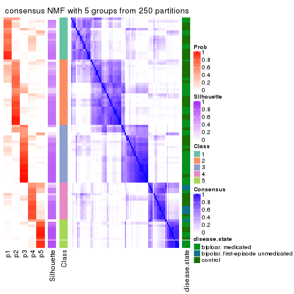
consensus_heatmap(res, k = 6)
Heatmaps for the membership of samples in all partitions to see how consistent they are:
membership_heatmap(res, k = 2)
membership_heatmap(res, k = 3)
membership_heatmap(res, k = 4)
membership_heatmap(res, k = 5)
membership_heatmap(res, k = 6)
As soon as we have had the classes for columns, we can look for signatures which are significantly different between classes which can be candidate marks for certain classes. Following are the heatmaps for signatures.
Signature heatmaps where rows are scaled:
get_signatures(res, k = 2)

get_signatures(res, k = 3)
get_signatures(res, k = 4)
get_signatures(res, k = 5)
get_signatures(res, k = 6)
Signature heatmaps where rows are not scaled:
get_signatures(res, k = 2, scale_rows = FALSE)
get_signatures(res, k = 3, scale_rows = FALSE)
get_signatures(res, k = 4, scale_rows = FALSE)
get_signatures(res, k = 5, scale_rows = FALSE)
get_signatures(res, k = 6, scale_rows = FALSE)
Compare the overlap of signatures from different k:
compare_signatures(res)
get_signature() returns a data frame invisibly. TO get the list of signatures, the function
call should be assigned to a variable explicitly. In following code, if plot argument is set
to FALSE, no heatmap is plotted while only the differential analysis is performed.
# code only for demonstration
tb = get_signature(res, k = ..., plot = FALSE)
An example of the output of tb is:
#> which_row fdr mean_1 mean_2 scaled_mean_1 scaled_mean_2 km
#> 1 38 0.042760348 8.373488 9.131774 -0.5533452 0.5164555 1
#> 2 40 0.018707592 7.106213 8.469186 -0.6173731 0.5762149 1
#> 3 55 0.019134737 10.221463 11.207825 -0.6159697 0.5749050 1
#> 4 59 0.006059896 5.921854 7.869574 -0.6899429 0.6439467 1
#> 5 60 0.018055526 8.928898 10.211722 -0.6204761 0.5791110 1
#> 6 98 0.009384629 15.714769 14.887706 0.6635654 -0.6193277 2
...
The columns in tb are:
which_row: row indices corresponding to the input matrix.fdr: FDR for the differential test. mean_x: The mean value in group x.scaled_mean_x: The mean value in group x after rows are scaled.km: Row groups if k-means clustering is applied to rows.UMAP plot which shows how samples are separated.
dimension_reduction(res, k = 2, method = "UMAP")
dimension_reduction(res, k = 3, method = "UMAP")
dimension_reduction(res, k = 4, method = "UMAP")
dimension_reduction(res, k = 5, method = "UMAP")
dimension_reduction(res, k = 6, method = "UMAP")
Following heatmap shows how subgroups are split when increasing k:
collect_classes(res)
Test correlation between subgroups and known annotations. If the known annotation is numeric, one-way ANOVA test is applied, and if the known annotation is discrete, chi-squared contingency table test is applied.
test_to_known_factors(res)
#> n disease.state(p) k
#> CV:NMF 85 0.015667 2
#> CV:NMF 81 0.000115 3
#> CV:NMF 69 0.000634 4
#> CV:NMF 68 0.000361 5
#> CV:NMF 66 0.000725 6
If matrix rows can be associated to genes, consider to use GO_Enrichment(res,
...) to perform function enrichment for the signature genes.
The object with results only for a single top-value method and a single partition method can be extracted as:
res = res_list["MAD", "hclust"]
# you can also extract it by
# res = res_list["MAD:hclust"]
A summary of res and all the functions that can be applied to it:
res
#> A 'ConsensusPartition' object with k = 2, 3, 4, 5, 6.
#> On a matrix with 51941 rows and 88 columns.
#> Top rows (1000, 2000, 3000, 4000, 5000) are extracted by 'MAD' method.
#> Subgroups are detected by 'hclust' method.
#> Performed in total 1250 partitions by row resampling.
#> Best k for subgroups seems to be 5.
#>
#> Following methods can be applied to this 'ConsensusPartition' object:
#> [1] "cola_report" "collect_classes" "collect_plots"
#> [4] "collect_stats" "colnames" "compare_signatures"
#> [7] "consensus_heatmap" "dimension_reduction" "functional_enrichment"
#> [10] "get_anno_col" "get_anno" "get_classes"
#> [13] "get_consensus" "get_matrix" "get_membership"
#> [16] "get_param" "get_signatures" "get_stats"
#> [19] "is_best_k" "is_stable_k" "membership_heatmap"
#> [22] "ncol" "nrow" "plot_ecdf"
#> [25] "rownames" "select_partition_number" "show"
#> [28] "suggest_best_k" "test_to_known_factors"
collect_plots() function collects all the plots made from res for all k (number of partitions)
into one single page to provide an easy and fast comparison between different k.
collect_plots(res)
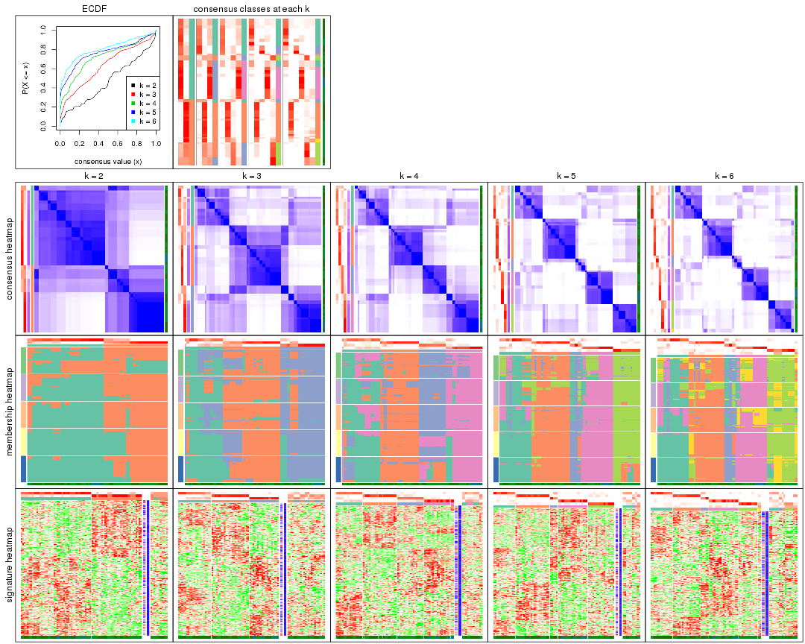
The plots are:
k and the heatmap of
predicted classes for each k.k.k.k.All the plots in panels can be made by individual functions and they are plotted later in this section.
select_partition_number() produces several plots showing different
statistics for choosing “optimized” k. There are following statistics:
k;k, the area increased is defined as \(A_k - A_{k-1}\).The detailed explanations of these statistics can be found in the cola vignette.
Generally speaking, lower PAC score, higher mean silhouette score or higher
concordance corresponds to better partition. Rand index and Jaccard index
measure how similar the current partition is compared to partition with k-1.
If they are too similar, we won't accept k is better than k-1.
select_partition_number(res)
The numeric values for all these statistics can be obtained by get_stats().
get_stats(res)
#> k 1-PAC mean_silhouette concordance area_increased Rand Jaccard
#> 2 2 0.378 0.692 0.820 0.4682 0.498 0.498
#> 3 3 0.439 0.560 0.785 0.3507 0.702 0.474
#> 4 4 0.487 0.683 0.774 0.1425 0.879 0.656
#> 5 5 0.600 0.713 0.829 0.0631 0.923 0.713
#> 6 6 0.672 0.623 0.758 0.0535 0.989 0.946
suggest_best_k() suggests the best \(k\) based on these statistics. The rules are as follows:
NA.suggest_best_k(res)
#> [1] 5
Following shows the table of the partitions (You need to click the show/hide
code output link to see it). The membership matrix (columns with name p*)
is inferred by
clue::cl_consensus()
function with the SE method. Basically the value in the membership matrix
represents the probability to belong to a certain group. The finall class
label for an item is determined with the group with highest probability it
belongs to.
In get_classes() function, the entropy is calculated from the membership
matrix and the silhouette score is calculated from the consensus matrix.
cbind(get_classes(res, k = 2), get_membership(res, k = 2))
#> class entropy silhouette p1 p2
#> GSM1130404 1 0.7528 0.760 0.784 0.216
#> GSM1130405 1 0.7528 0.760 0.784 0.216
#> GSM1130408 2 0.0000 0.788 0.000 1.000
#> GSM1130409 1 0.7528 0.760 0.784 0.216
#> GSM1130410 1 0.7528 0.760 0.784 0.216
#> GSM1130415 2 0.0000 0.788 0.000 1.000
#> GSM1130416 2 0.0000 0.788 0.000 1.000
#> GSM1130417 2 0.0000 0.788 0.000 1.000
#> GSM1130418 2 0.0000 0.788 0.000 1.000
#> GSM1130421 2 0.1414 0.784 0.020 0.980
#> GSM1130422 2 0.1414 0.784 0.020 0.980
#> GSM1130423 1 0.1184 0.853 0.984 0.016
#> GSM1130424 2 1.0000 0.179 0.496 0.504
#> GSM1130425 1 0.1414 0.853 0.980 0.020
#> GSM1130426 2 0.2603 0.775 0.044 0.956
#> GSM1130427 2 0.2603 0.775 0.044 0.956
#> GSM1130428 2 1.0000 0.179 0.496 0.504
#> GSM1130429 2 1.0000 0.179 0.496 0.504
#> GSM1130430 1 0.3114 0.850 0.944 0.056
#> GSM1130431 1 0.3114 0.850 0.944 0.056
#> GSM1130432 1 0.8499 0.695 0.724 0.276
#> GSM1130433 1 0.8499 0.695 0.724 0.276
#> GSM1130434 1 0.5737 0.823 0.864 0.136
#> GSM1130435 1 0.5737 0.823 0.864 0.136
#> GSM1130436 1 0.5737 0.823 0.864 0.136
#> GSM1130437 1 0.5737 0.823 0.864 0.136
#> GSM1130438 1 0.8267 0.708 0.740 0.260
#> GSM1130439 1 0.8267 0.708 0.740 0.260
#> GSM1130440 1 0.8267 0.708 0.740 0.260
#> GSM1130441 2 0.0000 0.788 0.000 1.000
#> GSM1130442 2 0.1633 0.776 0.024 0.976
#> GSM1130443 1 0.0000 0.847 1.000 0.000
#> GSM1130444 1 0.0376 0.849 0.996 0.004
#> GSM1130445 1 0.7299 0.774 0.796 0.204
#> GSM1130476 1 0.8443 0.694 0.728 0.272
#> GSM1130483 1 0.3274 0.852 0.940 0.060
#> GSM1130484 1 0.3274 0.852 0.940 0.060
#> GSM1130487 1 0.1843 0.854 0.972 0.028
#> GSM1130488 1 0.1843 0.854 0.972 0.028
#> GSM1130419 1 0.0000 0.847 1.000 0.000
#> GSM1130420 1 0.0000 0.847 1.000 0.000
#> GSM1130464 1 0.0000 0.847 1.000 0.000
#> GSM1130465 1 0.0000 0.847 1.000 0.000
#> GSM1130468 1 0.0000 0.847 1.000 0.000
#> GSM1130469 1 0.0000 0.847 1.000 0.000
#> GSM1130402 1 0.3114 0.850 0.944 0.056
#> GSM1130403 1 0.3114 0.850 0.944 0.056
#> GSM1130406 1 0.2778 0.853 0.952 0.048
#> GSM1130407 1 0.2778 0.853 0.952 0.048
#> GSM1130411 2 0.0000 0.788 0.000 1.000
#> GSM1130412 2 0.0000 0.788 0.000 1.000
#> GSM1130413 2 0.0000 0.788 0.000 1.000
#> GSM1130414 2 0.0000 0.788 0.000 1.000
#> GSM1130446 2 1.0000 0.179 0.496 0.504
#> GSM1130447 2 1.0000 0.179 0.496 0.504
#> GSM1130448 1 0.8443 0.694 0.728 0.272
#> GSM1130449 2 0.9988 0.206 0.480 0.520
#> GSM1130450 2 0.9087 0.561 0.324 0.676
#> GSM1130451 2 0.9087 0.561 0.324 0.676
#> GSM1130452 2 0.0000 0.788 0.000 1.000
#> GSM1130453 2 0.9427 0.328 0.360 0.640
#> GSM1130454 2 0.9427 0.328 0.360 0.640
#> GSM1130455 2 0.0000 0.788 0.000 1.000
#> GSM1130456 1 0.0000 0.847 1.000 0.000
#> GSM1130457 2 0.0000 0.788 0.000 1.000
#> GSM1130458 2 0.0000 0.788 0.000 1.000
#> GSM1130459 2 0.0000 0.788 0.000 1.000
#> GSM1130460 2 0.0000 0.788 0.000 1.000
#> GSM1130461 2 0.0000 0.788 0.000 1.000
#> GSM1130462 2 0.9286 0.540 0.344 0.656
#> GSM1130463 2 0.9286 0.540 0.344 0.656
#> GSM1130466 1 0.1184 0.853 0.984 0.016
#> GSM1130467 2 0.0000 0.788 0.000 1.000
#> GSM1130470 1 0.1184 0.853 0.984 0.016
#> GSM1130471 1 0.1184 0.853 0.984 0.016
#> GSM1130472 1 0.1184 0.853 0.984 0.016
#> GSM1130473 1 0.9998 -0.172 0.508 0.492
#> GSM1130474 2 0.9491 0.506 0.368 0.632
#> GSM1130475 2 0.3584 0.760 0.068 0.932
#> GSM1130477 1 0.5946 0.820 0.856 0.144
#> GSM1130478 1 0.5946 0.820 0.856 0.144
#> GSM1130479 1 0.9998 -0.172 0.508 0.492
#> GSM1130480 1 1.0000 -0.201 0.500 0.500
#> GSM1130481 2 0.9491 0.506 0.368 0.632
#> GSM1130482 2 0.9491 0.506 0.368 0.632
#> GSM1130485 1 0.2778 0.850 0.952 0.048
#> GSM1130486 1 0.2778 0.850 0.952 0.048
#> GSM1130489 2 0.9491 0.506 0.368 0.632
cbind(get_classes(res, k = 3), get_membership(res, k = 3))
#> class entropy silhouette p1 p2 p3
#> GSM1130404 1 0.9030 0.5130 0.476 0.136 0.388
#> GSM1130405 1 0.9030 0.5130 0.476 0.136 0.388
#> GSM1130408 2 0.2711 0.7377 0.088 0.912 0.000
#> GSM1130409 1 0.9030 0.5130 0.476 0.136 0.388
#> GSM1130410 1 0.9030 0.5130 0.476 0.136 0.388
#> GSM1130415 2 0.1289 0.7681 0.032 0.968 0.000
#> GSM1130416 2 0.1289 0.7681 0.032 0.968 0.000
#> GSM1130417 2 0.1289 0.7681 0.032 0.968 0.000
#> GSM1130418 2 0.1289 0.7681 0.032 0.968 0.000
#> GSM1130421 2 0.3091 0.7566 0.072 0.912 0.016
#> GSM1130422 2 0.3091 0.7566 0.072 0.912 0.016
#> GSM1130423 3 0.0424 0.7291 0.000 0.008 0.992
#> GSM1130424 3 0.7974 -0.1067 0.060 0.436 0.504
#> GSM1130425 3 0.1453 0.7211 0.024 0.008 0.968
#> GSM1130426 2 0.3028 0.7637 0.032 0.920 0.048
#> GSM1130427 2 0.3028 0.7637 0.032 0.920 0.048
#> GSM1130428 3 0.7974 -0.1067 0.060 0.436 0.504
#> GSM1130429 3 0.7974 -0.1067 0.060 0.436 0.504
#> GSM1130430 3 0.7140 0.0616 0.328 0.040 0.632
#> GSM1130431 3 0.7140 0.0616 0.328 0.040 0.632
#> GSM1130432 1 0.7988 0.6614 0.656 0.144 0.200
#> GSM1130433 1 0.7988 0.6614 0.656 0.144 0.200
#> GSM1130434 1 0.5497 0.6767 0.708 0.000 0.292
#> GSM1130435 1 0.5497 0.6767 0.708 0.000 0.292
#> GSM1130436 1 0.5497 0.6767 0.708 0.000 0.292
#> GSM1130437 1 0.5497 0.6767 0.708 0.000 0.292
#> GSM1130438 1 0.2301 0.6560 0.936 0.060 0.004
#> GSM1130439 1 0.2301 0.6560 0.936 0.060 0.004
#> GSM1130440 1 0.2301 0.6560 0.936 0.060 0.004
#> GSM1130441 2 0.0747 0.7699 0.016 0.984 0.000
#> GSM1130442 2 0.4293 0.6849 0.164 0.832 0.004
#> GSM1130443 3 0.0592 0.7278 0.012 0.000 0.988
#> GSM1130444 3 0.1647 0.7129 0.036 0.004 0.960
#> GSM1130445 1 0.7091 0.1993 0.560 0.024 0.416
#> GSM1130476 1 0.2590 0.6520 0.924 0.072 0.004
#> GSM1130483 1 0.6129 0.6384 0.668 0.008 0.324
#> GSM1130484 1 0.6129 0.6384 0.668 0.008 0.324
#> GSM1130487 3 0.4346 0.5408 0.184 0.000 0.816
#> GSM1130488 3 0.4346 0.5408 0.184 0.000 0.816
#> GSM1130419 3 0.0592 0.7278 0.012 0.000 0.988
#> GSM1130420 3 0.0592 0.7278 0.012 0.000 0.988
#> GSM1130464 3 0.0592 0.7278 0.012 0.000 0.988
#> GSM1130465 3 0.0592 0.7278 0.012 0.000 0.988
#> GSM1130468 3 0.0592 0.7278 0.012 0.000 0.988
#> GSM1130469 3 0.0592 0.7278 0.012 0.000 0.988
#> GSM1130402 3 0.7140 0.0616 0.328 0.040 0.632
#> GSM1130403 3 0.7140 0.0616 0.328 0.040 0.632
#> GSM1130406 1 0.5138 0.6586 0.748 0.000 0.252
#> GSM1130407 1 0.5138 0.6586 0.748 0.000 0.252
#> GSM1130411 2 0.1289 0.7681 0.032 0.968 0.000
#> GSM1130412 2 0.1289 0.7681 0.032 0.968 0.000
#> GSM1130413 2 0.1289 0.7681 0.032 0.968 0.000
#> GSM1130414 2 0.1289 0.7681 0.032 0.968 0.000
#> GSM1130446 3 0.7974 -0.1067 0.060 0.436 0.504
#> GSM1130447 3 0.7974 -0.1067 0.060 0.436 0.504
#> GSM1130448 1 0.2590 0.6520 0.924 0.072 0.004
#> GSM1130449 2 0.9417 0.2456 0.180 0.456 0.364
#> GSM1130450 2 0.7683 0.4948 0.064 0.608 0.328
#> GSM1130451 2 0.7683 0.4948 0.064 0.608 0.328
#> GSM1130452 2 0.0592 0.7699 0.012 0.988 0.000
#> GSM1130453 1 0.7493 0.0156 0.488 0.476 0.036
#> GSM1130454 1 0.7493 0.0156 0.488 0.476 0.036
#> GSM1130455 2 0.0747 0.7699 0.016 0.984 0.000
#> GSM1130456 3 0.0592 0.7278 0.012 0.000 0.988
#> GSM1130457 2 0.2301 0.7585 0.060 0.936 0.004
#> GSM1130458 2 0.2301 0.7585 0.060 0.936 0.004
#> GSM1130459 2 0.1289 0.7656 0.032 0.968 0.000
#> GSM1130460 2 0.1289 0.7656 0.032 0.968 0.000
#> GSM1130461 2 0.2796 0.7347 0.092 0.908 0.000
#> GSM1130462 2 0.7368 0.4697 0.044 0.604 0.352
#> GSM1130463 2 0.7368 0.4697 0.044 0.604 0.352
#> GSM1130466 3 0.0424 0.7291 0.000 0.008 0.992
#> GSM1130467 2 0.1289 0.7656 0.032 0.968 0.000
#> GSM1130470 3 0.0424 0.7291 0.000 0.008 0.992
#> GSM1130471 3 0.0424 0.7291 0.000 0.008 0.992
#> GSM1130472 3 0.0424 0.7291 0.000 0.008 0.992
#> GSM1130473 2 0.8792 0.1696 0.112 0.456 0.432
#> GSM1130474 2 0.7379 0.4319 0.040 0.584 0.376
#> GSM1130475 2 0.5618 0.6785 0.156 0.796 0.048
#> GSM1130477 1 0.5216 0.6906 0.740 0.000 0.260
#> GSM1130478 1 0.5216 0.6906 0.740 0.000 0.260
#> GSM1130479 2 0.8792 0.1696 0.112 0.456 0.432
#> GSM1130480 2 0.9274 0.2179 0.160 0.456 0.384
#> GSM1130481 2 0.7379 0.4319 0.040 0.584 0.376
#> GSM1130482 2 0.7379 0.4319 0.040 0.584 0.376
#> GSM1130485 3 0.1529 0.7118 0.000 0.040 0.960
#> GSM1130486 3 0.1529 0.7118 0.000 0.040 0.960
#> GSM1130489 2 0.7379 0.4319 0.040 0.584 0.376
cbind(get_classes(res, k = 4), get_membership(res, k = 4))
#> class entropy silhouette p1 p2 p3 p4
#> GSM1130404 1 0.8269 0.4142 0.496 0.092 0.088 0.324
#> GSM1130405 1 0.8269 0.4142 0.496 0.092 0.088 0.324
#> GSM1130408 2 0.1936 0.8412 0.028 0.940 0.032 0.000
#> GSM1130409 1 0.8269 0.4142 0.496 0.092 0.088 0.324
#> GSM1130410 1 0.8269 0.4142 0.496 0.092 0.088 0.324
#> GSM1130415 2 0.1474 0.8826 0.000 0.948 0.052 0.000
#> GSM1130416 2 0.1474 0.8826 0.000 0.948 0.052 0.000
#> GSM1130417 2 0.1474 0.8826 0.000 0.948 0.052 0.000
#> GSM1130418 2 0.1474 0.8826 0.000 0.948 0.052 0.000
#> GSM1130421 2 0.3741 0.8367 0.036 0.852 0.108 0.004
#> GSM1130422 2 0.3741 0.8367 0.036 0.852 0.108 0.004
#> GSM1130423 4 0.2704 0.7813 0.000 0.000 0.124 0.876
#> GSM1130424 3 0.4888 0.8215 0.000 0.036 0.740 0.224
#> GSM1130425 4 0.3441 0.7772 0.024 0.000 0.120 0.856
#> GSM1130426 2 0.3447 0.8301 0.000 0.852 0.128 0.020
#> GSM1130427 2 0.3447 0.8301 0.000 0.852 0.128 0.020
#> GSM1130428 3 0.4888 0.8215 0.000 0.036 0.740 0.224
#> GSM1130429 3 0.4888 0.8215 0.000 0.036 0.740 0.224
#> GSM1130430 4 0.7479 0.2001 0.364 0.008 0.144 0.484
#> GSM1130431 4 0.7479 0.2001 0.364 0.008 0.144 0.484
#> GSM1130432 1 0.6837 0.5835 0.688 0.096 0.068 0.148
#> GSM1130433 1 0.6837 0.5835 0.688 0.096 0.068 0.148
#> GSM1130434 1 0.4103 0.5880 0.744 0.000 0.000 0.256
#> GSM1130435 1 0.4103 0.5880 0.744 0.000 0.000 0.256
#> GSM1130436 1 0.4103 0.5880 0.744 0.000 0.000 0.256
#> GSM1130437 1 0.4103 0.5880 0.744 0.000 0.000 0.256
#> GSM1130438 1 0.4888 0.5325 0.740 0.036 0.224 0.000
#> GSM1130439 1 0.4888 0.5325 0.740 0.036 0.224 0.000
#> GSM1130440 1 0.4888 0.5325 0.740 0.036 0.224 0.000
#> GSM1130441 2 0.1022 0.8714 0.000 0.968 0.032 0.000
#> GSM1130442 2 0.4590 0.7546 0.148 0.792 0.060 0.000
#> GSM1130443 4 0.0000 0.7905 0.000 0.000 0.000 1.000
#> GSM1130444 4 0.0921 0.7722 0.028 0.000 0.000 0.972
#> GSM1130445 1 0.5060 0.1112 0.584 0.000 0.004 0.412
#> GSM1130476 1 0.5640 0.5180 0.688 0.052 0.256 0.004
#> GSM1130483 1 0.4922 0.5710 0.700 0.004 0.012 0.284
#> GSM1130484 1 0.4922 0.5710 0.700 0.004 0.012 0.284
#> GSM1130487 4 0.3311 0.6096 0.172 0.000 0.000 0.828
#> GSM1130488 4 0.3311 0.6096 0.172 0.000 0.000 0.828
#> GSM1130419 4 0.0000 0.7905 0.000 0.000 0.000 1.000
#> GSM1130420 4 0.0000 0.7905 0.000 0.000 0.000 1.000
#> GSM1130464 4 0.0000 0.7905 0.000 0.000 0.000 1.000
#> GSM1130465 4 0.0000 0.7905 0.000 0.000 0.000 1.000
#> GSM1130468 4 0.0000 0.7905 0.000 0.000 0.000 1.000
#> GSM1130469 4 0.0000 0.7905 0.000 0.000 0.000 1.000
#> GSM1130402 4 0.7479 0.2001 0.364 0.008 0.144 0.484
#> GSM1130403 4 0.7479 0.2001 0.364 0.008 0.144 0.484
#> GSM1130406 1 0.3982 0.5863 0.776 0.000 0.004 0.220
#> GSM1130407 1 0.3982 0.5863 0.776 0.000 0.004 0.220
#> GSM1130411 2 0.1474 0.8826 0.000 0.948 0.052 0.000
#> GSM1130412 2 0.1474 0.8826 0.000 0.948 0.052 0.000
#> GSM1130413 2 0.1557 0.8814 0.000 0.944 0.056 0.000
#> GSM1130414 2 0.1557 0.8814 0.000 0.944 0.056 0.000
#> GSM1130446 3 0.4888 0.8215 0.000 0.036 0.740 0.224
#> GSM1130447 3 0.4888 0.8215 0.000 0.036 0.740 0.224
#> GSM1130448 1 0.5640 0.5180 0.688 0.052 0.256 0.004
#> GSM1130449 3 0.6711 0.8006 0.144 0.060 0.696 0.100
#> GSM1130450 3 0.6486 0.8129 0.020 0.212 0.672 0.096
#> GSM1130451 3 0.6486 0.8129 0.020 0.212 0.672 0.096
#> GSM1130452 2 0.0817 0.8689 0.000 0.976 0.024 0.000
#> GSM1130453 1 0.8042 -0.0381 0.360 0.284 0.352 0.004
#> GSM1130454 1 0.8042 -0.0381 0.360 0.284 0.352 0.004
#> GSM1130455 2 0.1022 0.8714 0.000 0.968 0.032 0.000
#> GSM1130456 4 0.0000 0.7905 0.000 0.000 0.000 1.000
#> GSM1130457 2 0.4877 0.3603 0.000 0.592 0.408 0.000
#> GSM1130458 2 0.4877 0.3603 0.000 0.592 0.408 0.000
#> GSM1130459 2 0.1792 0.8572 0.000 0.932 0.068 0.000
#> GSM1130460 2 0.1792 0.8572 0.000 0.932 0.068 0.000
#> GSM1130461 2 0.2036 0.8398 0.032 0.936 0.032 0.000
#> GSM1130462 3 0.5875 0.8366 0.000 0.204 0.692 0.104
#> GSM1130463 3 0.5875 0.8366 0.000 0.204 0.692 0.104
#> GSM1130466 4 0.2704 0.7813 0.000 0.000 0.124 0.876
#> GSM1130467 2 0.1792 0.8572 0.000 0.932 0.068 0.000
#> GSM1130470 4 0.2704 0.7813 0.000 0.000 0.124 0.876
#> GSM1130471 4 0.2704 0.7813 0.000 0.000 0.124 0.876
#> GSM1130472 4 0.2704 0.7813 0.000 0.000 0.124 0.876
#> GSM1130473 3 0.6478 0.8298 0.092 0.056 0.712 0.140
#> GSM1130474 3 0.5517 0.8520 0.000 0.184 0.724 0.092
#> GSM1130475 2 0.6678 0.5648 0.148 0.612 0.240 0.000
#> GSM1130477 1 0.3982 0.6072 0.776 0.000 0.004 0.220
#> GSM1130478 1 0.3982 0.6072 0.776 0.000 0.004 0.220
#> GSM1130479 3 0.6478 0.8298 0.092 0.056 0.712 0.140
#> GSM1130480 3 0.6464 0.8097 0.128 0.060 0.716 0.096
#> GSM1130481 3 0.5517 0.8520 0.000 0.184 0.724 0.092
#> GSM1130482 3 0.5517 0.8520 0.000 0.184 0.724 0.092
#> GSM1130485 4 0.3257 0.7561 0.000 0.004 0.152 0.844
#> GSM1130486 4 0.3257 0.7561 0.000 0.004 0.152 0.844
#> GSM1130489 3 0.5517 0.8520 0.000 0.184 0.724 0.092
cbind(get_classes(res, k = 5), get_membership(res, k = 5))
#> class entropy silhouette p1 p2 p3 p4 p5
#> GSM1130404 1 0.5859 0.6438 0.696 0.092 0.000 0.128 0.084
#> GSM1130405 1 0.5859 0.6438 0.696 0.092 0.000 0.128 0.084
#> GSM1130408 2 0.1341 0.8310 0.000 0.944 0.056 0.000 0.000
#> GSM1130409 1 0.5859 0.6438 0.696 0.092 0.000 0.128 0.084
#> GSM1130410 1 0.5859 0.6438 0.696 0.092 0.000 0.128 0.084
#> GSM1130415 2 0.1197 0.8728 0.000 0.952 0.000 0.000 0.048
#> GSM1130416 2 0.1197 0.8728 0.000 0.952 0.000 0.000 0.048
#> GSM1130417 2 0.1197 0.8728 0.000 0.952 0.000 0.000 0.048
#> GSM1130418 2 0.1197 0.8728 0.000 0.952 0.000 0.000 0.048
#> GSM1130421 2 0.3216 0.8312 0.000 0.848 0.044 0.000 0.108
#> GSM1130422 2 0.3216 0.8312 0.000 0.848 0.044 0.000 0.108
#> GSM1130423 4 0.3532 0.8041 0.048 0.000 0.000 0.824 0.128
#> GSM1130424 5 0.0324 0.8351 0.000 0.004 0.004 0.000 0.992
#> GSM1130425 4 0.4458 0.7561 0.120 0.000 0.000 0.760 0.120
#> GSM1130426 2 0.2984 0.8277 0.000 0.856 0.004 0.016 0.124
#> GSM1130427 2 0.2984 0.8277 0.000 0.856 0.004 0.016 0.124
#> GSM1130428 5 0.0324 0.8351 0.000 0.004 0.004 0.000 0.992
#> GSM1130429 5 0.0324 0.8351 0.000 0.004 0.004 0.000 0.992
#> GSM1130430 1 0.6331 0.4122 0.508 0.004 0.000 0.336 0.152
#> GSM1130431 1 0.6331 0.4122 0.508 0.004 0.000 0.336 0.152
#> GSM1130432 1 0.5024 0.5703 0.768 0.096 0.068 0.004 0.064
#> GSM1130433 1 0.5024 0.5703 0.768 0.096 0.068 0.004 0.064
#> GSM1130434 1 0.1205 0.6489 0.956 0.000 0.004 0.040 0.000
#> GSM1130435 1 0.1205 0.6489 0.956 0.000 0.004 0.040 0.000
#> GSM1130436 1 0.1205 0.6489 0.956 0.000 0.004 0.040 0.000
#> GSM1130437 1 0.1205 0.6489 0.956 0.000 0.004 0.040 0.000
#> GSM1130438 3 0.4161 0.5284 0.392 0.000 0.608 0.000 0.000
#> GSM1130439 3 0.4161 0.5284 0.392 0.000 0.608 0.000 0.000
#> GSM1130440 3 0.4161 0.5284 0.392 0.000 0.608 0.000 0.000
#> GSM1130441 2 0.1168 0.8596 0.000 0.960 0.008 0.000 0.032
#> GSM1130442 2 0.3983 0.7248 0.000 0.784 0.164 0.000 0.052
#> GSM1130443 4 0.0000 0.8385 0.000 0.000 0.000 1.000 0.000
#> GSM1130444 4 0.0898 0.8239 0.008 0.000 0.020 0.972 0.000
#> GSM1130445 4 0.6552 -0.0161 0.388 0.000 0.200 0.412 0.000
#> GSM1130476 3 0.0162 0.5939 0.000 0.004 0.996 0.000 0.000
#> GSM1130483 1 0.3931 0.5869 0.804 0.004 0.032 0.152 0.008
#> GSM1130484 1 0.3931 0.5869 0.804 0.004 0.032 0.152 0.008
#> GSM1130487 4 0.3123 0.6799 0.184 0.000 0.004 0.812 0.000
#> GSM1130488 4 0.3123 0.6799 0.184 0.000 0.004 0.812 0.000
#> GSM1130419 4 0.0000 0.8385 0.000 0.000 0.000 1.000 0.000
#> GSM1130420 4 0.0000 0.8385 0.000 0.000 0.000 1.000 0.000
#> GSM1130464 4 0.0000 0.8385 0.000 0.000 0.000 1.000 0.000
#> GSM1130465 4 0.0000 0.8385 0.000 0.000 0.000 1.000 0.000
#> GSM1130468 4 0.0000 0.8385 0.000 0.000 0.000 1.000 0.000
#> GSM1130469 4 0.0000 0.8385 0.000 0.000 0.000 1.000 0.000
#> GSM1130402 1 0.6331 0.4122 0.508 0.004 0.000 0.336 0.152
#> GSM1130403 1 0.6331 0.4122 0.508 0.004 0.000 0.336 0.152
#> GSM1130406 1 0.6392 0.2864 0.468 0.000 0.356 0.176 0.000
#> GSM1130407 1 0.6392 0.2864 0.468 0.000 0.356 0.176 0.000
#> GSM1130411 2 0.1197 0.8728 0.000 0.952 0.000 0.000 0.048
#> GSM1130412 2 0.1197 0.8728 0.000 0.952 0.000 0.000 0.048
#> GSM1130413 2 0.1270 0.8719 0.000 0.948 0.000 0.000 0.052
#> GSM1130414 2 0.1270 0.8719 0.000 0.948 0.000 0.000 0.052
#> GSM1130446 5 0.0324 0.8351 0.000 0.004 0.004 0.000 0.992
#> GSM1130447 5 0.0324 0.8351 0.000 0.004 0.004 0.000 0.992
#> GSM1130448 3 0.0162 0.5939 0.000 0.004 0.996 0.000 0.000
#> GSM1130449 5 0.4103 0.8015 0.124 0.032 0.028 0.004 0.812
#> GSM1130450 5 0.3724 0.8267 0.000 0.184 0.028 0.000 0.788
#> GSM1130451 5 0.3724 0.8267 0.000 0.184 0.028 0.000 0.788
#> GSM1130452 2 0.0771 0.8554 0.000 0.976 0.004 0.000 0.020
#> GSM1130453 3 0.6250 0.3170 0.000 0.256 0.540 0.000 0.204
#> GSM1130454 3 0.6250 0.3170 0.000 0.256 0.540 0.000 0.204
#> GSM1130455 2 0.1168 0.8596 0.000 0.960 0.008 0.000 0.032
#> GSM1130456 4 0.0000 0.8385 0.000 0.000 0.000 1.000 0.000
#> GSM1130457 2 0.4390 0.2967 0.000 0.568 0.004 0.000 0.428
#> GSM1130458 2 0.4390 0.2967 0.000 0.568 0.004 0.000 0.428
#> GSM1130459 2 0.1478 0.8469 0.000 0.936 0.000 0.000 0.064
#> GSM1130460 2 0.1478 0.8469 0.000 0.936 0.000 0.000 0.064
#> GSM1130461 2 0.1544 0.8258 0.000 0.932 0.068 0.000 0.000
#> GSM1130462 5 0.2852 0.8487 0.000 0.172 0.000 0.000 0.828
#> GSM1130463 5 0.2852 0.8487 0.000 0.172 0.000 0.000 0.828
#> GSM1130466 4 0.3532 0.8041 0.048 0.000 0.000 0.824 0.128
#> GSM1130467 2 0.1478 0.8469 0.000 0.936 0.000 0.000 0.064
#> GSM1130470 4 0.3532 0.8041 0.048 0.000 0.000 0.824 0.128
#> GSM1130471 4 0.3532 0.8041 0.048 0.000 0.000 0.824 0.128
#> GSM1130472 4 0.3532 0.8041 0.048 0.000 0.000 0.824 0.128
#> GSM1130473 5 0.3896 0.8126 0.096 0.028 0.000 0.048 0.828
#> GSM1130474 5 0.2848 0.8622 0.004 0.156 0.000 0.000 0.840
#> GSM1130475 2 0.5840 0.5536 0.000 0.604 0.164 0.000 0.232
#> GSM1130477 1 0.0162 0.6301 0.996 0.000 0.000 0.004 0.000
#> GSM1130478 1 0.0162 0.6301 0.996 0.000 0.000 0.004 0.000
#> GSM1130479 5 0.3896 0.8126 0.096 0.028 0.000 0.048 0.828
#> GSM1130480 5 0.3545 0.8041 0.128 0.032 0.004 0.004 0.832
#> GSM1130481 5 0.2848 0.8622 0.004 0.156 0.000 0.000 0.840
#> GSM1130482 5 0.2848 0.8622 0.004 0.156 0.000 0.000 0.840
#> GSM1130485 4 0.3577 0.7821 0.032 0.000 0.000 0.808 0.160
#> GSM1130486 4 0.3577 0.7821 0.032 0.000 0.000 0.808 0.160
#> GSM1130489 5 0.2848 0.8622 0.004 0.156 0.000 0.000 0.840
cbind(get_classes(res, k = 6), get_membership(res, k = 6))
#> class entropy silhouette p1 p2 p3 p4 p5 p6
#> GSM1130404 1 0.5301 0.6457 0.720 0.084 0.000 0.020 0.080 0.096
#> GSM1130405 1 0.5301 0.6457 0.720 0.084 0.000 0.020 0.080 0.096
#> GSM1130408 2 0.2052 0.7348 0.000 0.912 0.056 0.000 0.004 0.028
#> GSM1130409 1 0.5301 0.6457 0.720 0.084 0.000 0.020 0.080 0.096
#> GSM1130410 1 0.5301 0.6457 0.720 0.084 0.000 0.020 0.080 0.096
#> GSM1130415 2 0.1204 0.7817 0.000 0.944 0.000 0.000 0.056 0.000
#> GSM1130416 2 0.1204 0.7817 0.000 0.944 0.000 0.000 0.056 0.000
#> GSM1130417 2 0.1204 0.7817 0.000 0.944 0.000 0.000 0.056 0.000
#> GSM1130418 2 0.1204 0.7817 0.000 0.944 0.000 0.000 0.056 0.000
#> GSM1130421 2 0.3377 0.7327 0.000 0.828 0.044 0.000 0.112 0.016
#> GSM1130422 2 0.3377 0.7327 0.000 0.828 0.044 0.000 0.112 0.016
#> GSM1130423 4 0.4807 0.7473 0.036 0.000 0.000 0.692 0.052 0.220
#> GSM1130424 5 0.3797 0.4459 0.000 0.000 0.000 0.000 0.580 0.420
#> GSM1130425 4 0.5633 0.6959 0.108 0.000 0.000 0.628 0.048 0.216
#> GSM1130426 2 0.3142 0.7306 0.000 0.836 0.004 0.004 0.124 0.032
#> GSM1130427 2 0.3142 0.7306 0.000 0.836 0.004 0.004 0.124 0.032
#> GSM1130428 5 0.3797 0.4459 0.000 0.000 0.000 0.000 0.580 0.420
#> GSM1130429 5 0.3797 0.4459 0.000 0.000 0.000 0.000 0.580 0.420
#> GSM1130430 1 0.6873 0.4528 0.508 0.004 0.000 0.224 0.108 0.156
#> GSM1130431 1 0.6873 0.4528 0.508 0.004 0.000 0.224 0.108 0.156
#> GSM1130432 1 0.5029 0.5953 0.748 0.084 0.068 0.000 0.068 0.032
#> GSM1130433 1 0.5029 0.5953 0.748 0.084 0.068 0.000 0.068 0.032
#> GSM1130434 1 0.0909 0.6524 0.968 0.000 0.000 0.012 0.000 0.020
#> GSM1130435 1 0.0909 0.6524 0.968 0.000 0.000 0.012 0.000 0.020
#> GSM1130436 1 0.0909 0.6524 0.968 0.000 0.000 0.012 0.000 0.020
#> GSM1130437 1 0.0909 0.6524 0.968 0.000 0.000 0.012 0.000 0.020
#> GSM1130438 3 0.4322 0.5521 0.372 0.000 0.600 0.000 0.000 0.028
#> GSM1130439 3 0.4322 0.5521 0.372 0.000 0.600 0.000 0.000 0.028
#> GSM1130440 3 0.4322 0.5521 0.372 0.000 0.600 0.000 0.000 0.028
#> GSM1130441 2 0.2876 0.6940 0.000 0.844 0.008 0.000 0.016 0.132
#> GSM1130442 2 0.4970 0.5981 0.000 0.708 0.164 0.000 0.052 0.076
#> GSM1130443 4 0.0000 0.7978 0.000 0.000 0.000 1.000 0.000 0.000
#> GSM1130444 4 0.0806 0.7893 0.008 0.000 0.020 0.972 0.000 0.000
#> GSM1130445 4 0.6360 0.0211 0.372 0.000 0.192 0.412 0.000 0.024
#> GSM1130476 3 0.0000 0.5544 0.000 0.000 1.000 0.000 0.000 0.000
#> GSM1130483 1 0.4032 0.5862 0.784 0.000 0.032 0.148 0.008 0.028
#> GSM1130484 1 0.4032 0.5862 0.784 0.000 0.032 0.148 0.008 0.028
#> GSM1130487 4 0.2946 0.6513 0.176 0.000 0.000 0.812 0.000 0.012
#> GSM1130488 4 0.2946 0.6513 0.176 0.000 0.000 0.812 0.000 0.012
#> GSM1130419 4 0.0146 0.7984 0.000 0.000 0.000 0.996 0.000 0.004
#> GSM1130420 4 0.0146 0.7984 0.000 0.000 0.000 0.996 0.000 0.004
#> GSM1130464 4 0.0000 0.7978 0.000 0.000 0.000 1.000 0.000 0.000
#> GSM1130465 4 0.0000 0.7978 0.000 0.000 0.000 1.000 0.000 0.000
#> GSM1130468 4 0.0603 0.8022 0.016 0.000 0.000 0.980 0.000 0.004
#> GSM1130469 4 0.0603 0.8022 0.016 0.000 0.000 0.980 0.000 0.004
#> GSM1130402 1 0.6873 0.4528 0.508 0.004 0.000 0.224 0.108 0.156
#> GSM1130403 1 0.6873 0.4528 0.508 0.004 0.000 0.224 0.108 0.156
#> GSM1130406 1 0.6333 0.2684 0.440 0.000 0.356 0.176 0.000 0.028
#> GSM1130407 1 0.6333 0.2684 0.440 0.000 0.356 0.176 0.000 0.028
#> GSM1130411 2 0.1204 0.7817 0.000 0.944 0.000 0.000 0.056 0.000
#> GSM1130412 2 0.1204 0.7817 0.000 0.944 0.000 0.000 0.056 0.000
#> GSM1130413 2 0.1327 0.7795 0.000 0.936 0.000 0.000 0.064 0.000
#> GSM1130414 2 0.1327 0.7795 0.000 0.936 0.000 0.000 0.064 0.000
#> GSM1130446 5 0.3797 0.4459 0.000 0.000 0.000 0.000 0.580 0.420
#> GSM1130447 5 0.3797 0.4459 0.000 0.000 0.000 0.000 0.580 0.420
#> GSM1130448 3 0.0000 0.5544 0.000 0.000 1.000 0.000 0.000 0.000
#> GSM1130449 5 0.3067 0.6569 0.124 0.000 0.028 0.004 0.840 0.004
#> GSM1130450 5 0.1644 0.6713 0.000 0.000 0.028 0.000 0.932 0.040
#> GSM1130451 5 0.1644 0.6713 0.000 0.000 0.028 0.000 0.932 0.040
#> GSM1130452 2 0.2488 0.6946 0.000 0.864 0.004 0.000 0.008 0.124
#> GSM1130453 3 0.6202 0.3106 0.000 0.188 0.544 0.000 0.228 0.040
#> GSM1130454 3 0.6202 0.3106 0.000 0.188 0.544 0.000 0.228 0.040
#> GSM1130455 2 0.2876 0.6940 0.000 0.844 0.008 0.000 0.016 0.132
#> GSM1130456 4 0.0603 0.8022 0.016 0.000 0.000 0.980 0.000 0.004
#> GSM1130457 6 0.5600 1.0000 0.000 0.172 0.000 0.000 0.304 0.524
#> GSM1130458 6 0.5600 1.0000 0.000 0.172 0.000 0.000 0.304 0.524
#> GSM1130459 2 0.5431 -0.0117 0.000 0.524 0.000 0.000 0.132 0.344
#> GSM1130460 2 0.5431 -0.0117 0.000 0.524 0.000 0.000 0.132 0.344
#> GSM1130461 2 0.2231 0.7305 0.000 0.900 0.068 0.000 0.004 0.028
#> GSM1130462 5 0.1588 0.6902 0.000 0.004 0.000 0.000 0.924 0.072
#> GSM1130463 5 0.1588 0.6902 0.000 0.004 0.000 0.000 0.924 0.072
#> GSM1130466 4 0.4838 0.7473 0.036 0.000 0.000 0.692 0.056 0.216
#> GSM1130467 2 0.5431 -0.0117 0.000 0.524 0.000 0.000 0.132 0.344
#> GSM1130470 4 0.4807 0.7473 0.036 0.000 0.000 0.692 0.052 0.220
#> GSM1130471 4 0.4807 0.7473 0.036 0.000 0.000 0.692 0.052 0.220
#> GSM1130472 4 0.4807 0.7473 0.036 0.000 0.000 0.692 0.052 0.220
#> GSM1130473 5 0.2812 0.6702 0.096 0.000 0.000 0.048 0.856 0.000
#> GSM1130474 5 0.0146 0.7162 0.004 0.000 0.000 0.000 0.996 0.000
#> GSM1130475 2 0.6695 0.1002 0.000 0.400 0.164 0.000 0.376 0.060
#> GSM1130477 1 0.0547 0.6393 0.980 0.000 0.000 0.000 0.000 0.020
#> GSM1130478 1 0.0547 0.6393 0.980 0.000 0.000 0.000 0.000 0.020
#> GSM1130479 5 0.2812 0.6702 0.096 0.000 0.000 0.048 0.856 0.000
#> GSM1130480 5 0.2420 0.6587 0.128 0.000 0.004 0.004 0.864 0.000
#> GSM1130481 5 0.0146 0.7162 0.004 0.000 0.000 0.000 0.996 0.000
#> GSM1130482 5 0.0146 0.7162 0.004 0.000 0.000 0.000 0.996 0.000
#> GSM1130485 4 0.5035 0.7236 0.032 0.000 0.000 0.696 0.116 0.156
#> GSM1130486 4 0.5035 0.7236 0.032 0.000 0.000 0.696 0.116 0.156
#> GSM1130489 5 0.0146 0.7162 0.004 0.000 0.000 0.000 0.996 0.000
Heatmaps for the consensus matrix. It visualizes the probability of two samples to be in a same group.
consensus_heatmap(res, k = 2)
consensus_heatmap(res, k = 3)
consensus_heatmap(res, k = 4)
consensus_heatmap(res, k = 5)
consensus_heatmap(res, k = 6)
Heatmaps for the membership of samples in all partitions to see how consistent they are:
membership_heatmap(res, k = 2)
membership_heatmap(res, k = 3)
membership_heatmap(res, k = 4)
membership_heatmap(res, k = 5)
membership_heatmap(res, k = 6)
As soon as we have had the classes for columns, we can look for signatures which are significantly different between classes which can be candidate marks for certain classes. Following are the heatmaps for signatures.
Signature heatmaps where rows are scaled:
get_signatures(res, k = 2)
get_signatures(res, k = 3)
get_signatures(res, k = 4)
get_signatures(res, k = 5)
get_signatures(res, k = 6)
Signature heatmaps where rows are not scaled:
get_signatures(res, k = 2, scale_rows = FALSE)
get_signatures(res, k = 3, scale_rows = FALSE)
get_signatures(res, k = 4, scale_rows = FALSE)
get_signatures(res, k = 5, scale_rows = FALSE)
get_signatures(res, k = 6, scale_rows = FALSE)
Compare the overlap of signatures from different k:
compare_signatures(res)
get_signature() returns a data frame invisibly. TO get the list of signatures, the function
call should be assigned to a variable explicitly. In following code, if plot argument is set
to FALSE, no heatmap is plotted while only the differential analysis is performed.
# code only for demonstration
tb = get_signature(res, k = ..., plot = FALSE)
An example of the output of tb is:
#> which_row fdr mean_1 mean_2 scaled_mean_1 scaled_mean_2 km
#> 1 38 0.042760348 8.373488 9.131774 -0.5533452 0.5164555 1
#> 2 40 0.018707592 7.106213 8.469186 -0.6173731 0.5762149 1
#> 3 55 0.019134737 10.221463 11.207825 -0.6159697 0.5749050 1
#> 4 59 0.006059896 5.921854 7.869574 -0.6899429 0.6439467 1
#> 5 60 0.018055526 8.928898 10.211722 -0.6204761 0.5791110 1
#> 6 98 0.009384629 15.714769 14.887706 0.6635654 -0.6193277 2
...
The columns in tb are:
which_row: row indices corresponding to the input matrix.fdr: FDR for the differential test. mean_x: The mean value in group x.scaled_mean_x: The mean value in group x after rows are scaled.km: Row groups if k-means clustering is applied to rows.UMAP plot which shows how samples are separated.
dimension_reduction(res, k = 2, method = "UMAP")
dimension_reduction(res, k = 3, method = "UMAP")
dimension_reduction(res, k = 4, method = "UMAP")
dimension_reduction(res, k = 5, method = "UMAP")

dimension_reduction(res, k = 6, method = "UMAP")
Following heatmap shows how subgroups are split when increasing k:
collect_classes(res)
Test correlation between subgroups and known annotations. If the known annotation is numeric, one-way ANOVA test is applied, and if the known annotation is discrete, chi-squared contingency table test is applied.
test_to_known_factors(res)
#> n disease.state(p) k
#> MAD:hclust 77 4.16e-03 2
#> MAD:hclust 64 3.19e-04 3
#> MAD:hclust 75 4.22e-05 4
#> MAD:hclust 77 1.01e-05 5
#> MAD:hclust 70 3.77e-06 6
If matrix rows can be associated to genes, consider to use GO_Enrichment(res,
...) to perform function enrichment for the signature genes.
The object with results only for a single top-value method and a single partition method can be extracted as:
res = res_list["MAD", "kmeans"]
# you can also extract it by
# res = res_list["MAD:kmeans"]
A summary of res and all the functions that can be applied to it:
res
#> A 'ConsensusPartition' object with k = 2, 3, 4, 5, 6.
#> On a matrix with 51941 rows and 88 columns.
#> Top rows (1000, 2000, 3000, 4000, 5000) are extracted by 'MAD' method.
#> Subgroups are detected by 'kmeans' method.
#> Performed in total 1250 partitions by row resampling.
#> Best k for subgroups seems to be 2.
#>
#> Following methods can be applied to this 'ConsensusPartition' object:
#> [1] "cola_report" "collect_classes" "collect_plots"
#> [4] "collect_stats" "colnames" "compare_signatures"
#> [7] "consensus_heatmap" "dimension_reduction" "functional_enrichment"
#> [10] "get_anno_col" "get_anno" "get_classes"
#> [13] "get_consensus" "get_matrix" "get_membership"
#> [16] "get_param" "get_signatures" "get_stats"
#> [19] "is_best_k" "is_stable_k" "membership_heatmap"
#> [22] "ncol" "nrow" "plot_ecdf"
#> [25] "rownames" "select_partition_number" "show"
#> [28] "suggest_best_k" "test_to_known_factors"
collect_plots() function collects all the plots made from res for all k (number of partitions)
into one single page to provide an easy and fast comparison between different k.
collect_plots(res)
The plots are:
k and the heatmap of
predicted classes for each k.k.k.k.All the plots in panels can be made by individual functions and they are plotted later in this section.
select_partition_number() produces several plots showing different
statistics for choosing “optimized” k. There are following statistics:
k;k, the area increased is defined as \(A_k - A_{k-1}\).The detailed explanations of these statistics can be found in the cola vignette.
Generally speaking, lower PAC score, higher mean silhouette score or higher
concordance corresponds to better partition. Rand index and Jaccard index
measure how similar the current partition is compared to partition with k-1.
If they are too similar, we won't accept k is better than k-1.
select_partition_number(res)
The numeric values for all these statistics can be obtained by get_stats().
get_stats(res)
#> k 1-PAC mean_silhouette concordance area_increased Rand Jaccard
#> 2 2 0.930 0.936 0.969 0.5046 0.495 0.495
#> 3 3 0.442 0.482 0.718 0.3096 0.780 0.583
#> 4 4 0.458 0.419 0.682 0.1236 0.698 0.321
#> 5 5 0.545 0.372 0.610 0.0707 0.841 0.470
#> 6 6 0.626 0.480 0.671 0.0440 0.878 0.497
suggest_best_k() suggests the best \(k\) based on these statistics. The rules are as follows:
NA.suggest_best_k(res)
#> [1] 2
Following shows the table of the partitions (You need to click the show/hide
code output link to see it). The membership matrix (columns with name p*)
is inferred by
clue::cl_consensus()
function with the SE method. Basically the value in the membership matrix
represents the probability to belong to a certain group. The finall class
label for an item is determined with the group with highest probability it
belongs to.
In get_classes() function, the entropy is calculated from the membership
matrix and the silhouette score is calculated from the consensus matrix.
cbind(get_classes(res, k = 2), get_membership(res, k = 2))
#> class entropy silhouette p1 p2
#> GSM1130404 1 0.7219 0.763 0.800 0.200
#> GSM1130405 1 0.9881 0.245 0.564 0.436
#> GSM1130408 2 0.0376 0.974 0.004 0.996
#> GSM1130409 1 0.1633 0.956 0.976 0.024
#> GSM1130410 1 0.1414 0.958 0.980 0.020
#> GSM1130415 2 0.0376 0.974 0.004 0.996
#> GSM1130416 2 0.0376 0.974 0.004 0.996
#> GSM1130417 2 0.0376 0.974 0.004 0.996
#> GSM1130418 2 0.0376 0.974 0.004 0.996
#> GSM1130421 2 0.0376 0.974 0.004 0.996
#> GSM1130422 2 0.0376 0.974 0.004 0.996
#> GSM1130423 1 0.0376 0.962 0.996 0.004
#> GSM1130424 2 0.8555 0.629 0.280 0.720
#> GSM1130425 1 0.0376 0.962 0.996 0.004
#> GSM1130426 2 0.0376 0.974 0.004 0.996
#> GSM1130427 2 0.0376 0.974 0.004 0.996
#> GSM1130428 2 0.8081 0.682 0.248 0.752
#> GSM1130429 2 0.8081 0.682 0.248 0.752
#> GSM1130430 1 0.1414 0.958 0.980 0.020
#> GSM1130431 1 0.0000 0.962 1.000 0.000
#> GSM1130432 2 0.1414 0.964 0.020 0.980
#> GSM1130433 1 0.9170 0.536 0.668 0.332
#> GSM1130434 1 0.1633 0.956 0.976 0.024
#> GSM1130435 1 0.1633 0.956 0.976 0.024
#> GSM1130436 1 0.1633 0.956 0.976 0.024
#> GSM1130437 1 0.1633 0.956 0.976 0.024
#> GSM1130438 1 0.1843 0.954 0.972 0.028
#> GSM1130439 1 0.1843 0.954 0.972 0.028
#> GSM1130440 1 0.8267 0.670 0.740 0.260
#> GSM1130441 2 0.0000 0.974 0.000 1.000
#> GSM1130442 2 0.0376 0.974 0.004 0.996
#> GSM1130443 1 0.0376 0.962 0.996 0.004
#> GSM1130444 1 0.0000 0.962 1.000 0.000
#> GSM1130445 1 0.1633 0.956 0.976 0.024
#> GSM1130476 2 0.1184 0.967 0.016 0.984
#> GSM1130483 1 0.1633 0.956 0.976 0.024
#> GSM1130484 1 0.1633 0.956 0.976 0.024
#> GSM1130487 1 0.0000 0.962 1.000 0.000
#> GSM1130488 1 0.0000 0.962 1.000 0.000
#> GSM1130419 1 0.0376 0.962 0.996 0.004
#> GSM1130420 1 0.0376 0.962 0.996 0.004
#> GSM1130464 1 0.0376 0.962 0.996 0.004
#> GSM1130465 1 0.0000 0.962 1.000 0.000
#> GSM1130468 1 0.0376 0.962 0.996 0.004
#> GSM1130469 1 0.0376 0.962 0.996 0.004
#> GSM1130402 1 0.0000 0.962 1.000 0.000
#> GSM1130403 1 0.0000 0.962 1.000 0.000
#> GSM1130406 1 0.0000 0.962 1.000 0.000
#> GSM1130407 1 0.0000 0.962 1.000 0.000
#> GSM1130411 2 0.0000 0.974 0.000 1.000
#> GSM1130412 2 0.0000 0.974 0.000 1.000
#> GSM1130413 2 0.0376 0.974 0.004 0.996
#> GSM1130414 2 0.0376 0.974 0.004 0.996
#> GSM1130446 2 0.1633 0.959 0.024 0.976
#> GSM1130447 1 0.2236 0.942 0.964 0.036
#> GSM1130448 2 0.1184 0.967 0.016 0.984
#> GSM1130449 1 0.0000 0.962 1.000 0.000
#> GSM1130450 2 0.1184 0.965 0.016 0.984
#> GSM1130451 2 0.1843 0.957 0.028 0.972
#> GSM1130452 2 0.0000 0.974 0.000 1.000
#> GSM1130453 2 0.0376 0.974 0.004 0.996
#> GSM1130454 2 0.0376 0.974 0.004 0.996
#> GSM1130455 2 0.0000 0.974 0.000 1.000
#> GSM1130456 1 0.0376 0.962 0.996 0.004
#> GSM1130457 2 0.0000 0.974 0.000 1.000
#> GSM1130458 2 0.0000 0.974 0.000 1.000
#> GSM1130459 2 0.0000 0.974 0.000 1.000
#> GSM1130460 2 0.0000 0.974 0.000 1.000
#> GSM1130461 2 0.0376 0.974 0.004 0.996
#> GSM1130462 2 0.1633 0.959 0.024 0.976
#> GSM1130463 2 0.1633 0.959 0.024 0.976
#> GSM1130466 1 0.0376 0.962 0.996 0.004
#> GSM1130467 2 0.0000 0.974 0.000 1.000
#> GSM1130470 1 0.0376 0.962 0.996 0.004
#> GSM1130471 1 0.0376 0.962 0.996 0.004
#> GSM1130472 1 0.0376 0.962 0.996 0.004
#> GSM1130473 1 0.0376 0.962 0.996 0.004
#> GSM1130474 2 0.0000 0.974 0.000 1.000
#> GSM1130475 2 0.0000 0.974 0.000 1.000
#> GSM1130477 1 0.1633 0.956 0.976 0.024
#> GSM1130478 1 0.1633 0.956 0.976 0.024
#> GSM1130479 1 0.0672 0.962 0.992 0.008
#> GSM1130480 2 0.1184 0.967 0.016 0.984
#> GSM1130481 2 0.0000 0.974 0.000 1.000
#> GSM1130482 2 0.0000 0.974 0.000 1.000
#> GSM1130485 1 0.0376 0.962 0.996 0.004
#> GSM1130486 1 0.0000 0.962 1.000 0.000
#> GSM1130489 2 0.0000 0.974 0.000 1.000
cbind(get_classes(res, k = 3), get_membership(res, k = 3))
#> class entropy silhouette p1 p2 p3
#> GSM1130404 1 0.9018 -0.1026 0.456 0.132 0.412
#> GSM1130405 3 0.9924 0.1924 0.288 0.320 0.392
#> GSM1130408 2 0.4679 0.7507 0.020 0.832 0.148
#> GSM1130409 1 0.6510 0.2535 0.624 0.012 0.364
#> GSM1130410 1 0.6529 0.2433 0.620 0.012 0.368
#> GSM1130415 2 0.4075 0.7643 0.048 0.880 0.072
#> GSM1130416 2 0.3375 0.7691 0.048 0.908 0.044
#> GSM1130417 2 0.4075 0.7643 0.048 0.880 0.072
#> GSM1130418 2 0.4075 0.7643 0.048 0.880 0.072
#> GSM1130421 2 0.4411 0.7552 0.016 0.844 0.140
#> GSM1130422 2 0.5159 0.7483 0.040 0.820 0.140
#> GSM1130423 3 0.4887 0.6255 0.228 0.000 0.772
#> GSM1130424 3 0.5881 0.4487 0.016 0.256 0.728
#> GSM1130425 3 0.5138 0.6068 0.252 0.000 0.748
#> GSM1130426 2 0.4075 0.7643 0.048 0.880 0.072
#> GSM1130427 2 0.6007 0.6833 0.048 0.768 0.184
#> GSM1130428 3 0.6651 0.3157 0.024 0.320 0.656
#> GSM1130429 3 0.6625 0.3239 0.024 0.316 0.660
#> GSM1130430 1 0.6683 -0.1525 0.500 0.008 0.492
#> GSM1130431 3 0.6260 0.2331 0.448 0.000 0.552
#> GSM1130432 1 0.9172 -0.0285 0.488 0.356 0.156
#> GSM1130433 1 0.7862 0.3757 0.668 0.184 0.148
#> GSM1130434 1 0.4062 0.5416 0.836 0.000 0.164
#> GSM1130435 1 0.4291 0.5272 0.820 0.000 0.180
#> GSM1130436 1 0.4062 0.5416 0.836 0.000 0.164
#> GSM1130437 1 0.4002 0.5433 0.840 0.000 0.160
#> GSM1130438 1 0.4865 0.4986 0.832 0.032 0.136
#> GSM1130439 1 0.5408 0.4919 0.812 0.052 0.136
#> GSM1130440 1 0.6653 0.4513 0.752 0.112 0.136
#> GSM1130441 2 0.0892 0.7733 0.000 0.980 0.020
#> GSM1130442 2 0.4618 0.7418 0.024 0.840 0.136
#> GSM1130443 1 0.6225 0.1153 0.568 0.000 0.432
#> GSM1130444 1 0.2356 0.5757 0.928 0.000 0.072
#> GSM1130445 1 0.1964 0.5832 0.944 0.000 0.056
#> GSM1130476 2 0.8573 0.4924 0.280 0.584 0.136
#> GSM1130483 1 0.0424 0.5784 0.992 0.008 0.000
#> GSM1130484 1 0.0424 0.5784 0.992 0.008 0.000
#> GSM1130487 1 0.4750 0.5073 0.784 0.000 0.216
#> GSM1130488 1 0.4796 0.5034 0.780 0.000 0.220
#> GSM1130419 1 0.6309 -0.0619 0.500 0.000 0.500
#> GSM1130420 1 0.6309 -0.0619 0.500 0.000 0.500
#> GSM1130464 1 0.6274 0.0804 0.544 0.000 0.456
#> GSM1130465 1 0.6111 0.2298 0.604 0.000 0.396
#> GSM1130468 3 0.6286 0.1185 0.464 0.000 0.536
#> GSM1130469 3 0.6286 0.1185 0.464 0.000 0.536
#> GSM1130402 3 0.6286 0.1880 0.464 0.000 0.536
#> GSM1130403 3 0.6513 0.3213 0.400 0.008 0.592
#> GSM1130406 1 0.2066 0.5777 0.940 0.000 0.060
#> GSM1130407 1 0.2066 0.5777 0.940 0.000 0.060
#> GSM1130411 2 0.3947 0.7635 0.040 0.884 0.076
#> GSM1130412 2 0.3947 0.7635 0.040 0.884 0.076
#> GSM1130413 2 0.4075 0.7643 0.048 0.880 0.072
#> GSM1130414 2 0.3983 0.7649 0.048 0.884 0.068
#> GSM1130446 2 0.6252 0.2909 0.000 0.556 0.444
#> GSM1130447 3 0.4618 0.5320 0.024 0.136 0.840
#> GSM1130448 2 0.8599 0.4929 0.276 0.584 0.140
#> GSM1130449 1 0.7475 0.0948 0.580 0.044 0.376
#> GSM1130450 2 0.4663 0.7284 0.016 0.828 0.156
#> GSM1130451 3 0.7156 -0.1769 0.028 0.400 0.572
#> GSM1130452 2 0.3038 0.7627 0.000 0.896 0.104
#> GSM1130453 2 0.8408 0.5392 0.244 0.612 0.144
#> GSM1130454 2 0.8408 0.5392 0.244 0.612 0.144
#> GSM1130455 2 0.4475 0.7458 0.016 0.840 0.144
#> GSM1130456 3 0.4974 0.6233 0.236 0.000 0.764
#> GSM1130457 2 0.2261 0.7660 0.000 0.932 0.068
#> GSM1130458 2 0.6192 0.3521 0.000 0.580 0.420
#> GSM1130459 2 0.0592 0.7732 0.000 0.988 0.012
#> GSM1130460 2 0.1289 0.7708 0.000 0.968 0.032
#> GSM1130461 2 0.7104 0.6576 0.140 0.724 0.136
#> GSM1130462 2 0.5008 0.7088 0.016 0.804 0.180
#> GSM1130463 2 0.6941 0.2446 0.016 0.520 0.464
#> GSM1130466 3 0.4974 0.6233 0.236 0.000 0.764
#> GSM1130467 2 0.0892 0.7733 0.000 0.980 0.020
#> GSM1130470 3 0.4974 0.6233 0.236 0.000 0.764
#> GSM1130471 3 0.4931 0.6252 0.232 0.000 0.768
#> GSM1130472 3 0.4931 0.6252 0.232 0.000 0.768
#> GSM1130473 3 0.4974 0.6233 0.236 0.000 0.764
#> GSM1130474 2 0.6944 0.4335 0.016 0.516 0.468
#> GSM1130475 2 0.4539 0.7427 0.016 0.836 0.148
#> GSM1130477 1 0.2165 0.5766 0.936 0.000 0.064
#> GSM1130478 1 0.2486 0.5747 0.932 0.008 0.060
#> GSM1130479 3 0.5178 0.6024 0.256 0.000 0.744
#> GSM1130480 1 0.9148 0.0366 0.504 0.336 0.160
#> GSM1130481 2 0.6274 0.2767 0.000 0.544 0.456
#> GSM1130482 2 0.5202 0.7343 0.044 0.820 0.136
#> GSM1130485 3 0.4555 0.6201 0.200 0.000 0.800
#> GSM1130486 1 0.6307 -0.0226 0.512 0.000 0.488
#> GSM1130489 2 0.7581 0.2230 0.040 0.496 0.464
cbind(get_classes(res, k = 4), get_membership(res, k = 4))
#> class entropy silhouette p1 p2 p3 p4
#> GSM1130404 1 0.8979 0.3312 0.488 0.184 0.204 0.124
#> GSM1130405 1 0.8474 0.3834 0.508 0.276 0.132 0.084
#> GSM1130408 2 0.4017 0.7011 0.044 0.828 0.128 0.000
#> GSM1130409 1 0.9740 0.1803 0.356 0.216 0.256 0.172
#> GSM1130410 1 0.9740 0.1803 0.356 0.216 0.256 0.172
#> GSM1130415 2 0.2101 0.7266 0.060 0.928 0.012 0.000
#> GSM1130416 2 0.0804 0.7319 0.008 0.980 0.012 0.000
#> GSM1130417 2 0.2101 0.7266 0.060 0.928 0.012 0.000
#> GSM1130418 2 0.2101 0.7266 0.060 0.928 0.012 0.000
#> GSM1130421 2 0.2546 0.7245 0.028 0.912 0.060 0.000
#> GSM1130422 2 0.3504 0.7063 0.036 0.872 0.084 0.008
#> GSM1130423 4 0.5487 0.1444 0.400 0.000 0.020 0.580
#> GSM1130424 1 0.5589 0.4842 0.724 0.080 0.004 0.192
#> GSM1130425 4 0.6024 0.1010 0.416 0.000 0.044 0.540
#> GSM1130426 2 0.3249 0.6492 0.140 0.852 0.008 0.000
#> GSM1130427 2 0.4387 0.5348 0.200 0.776 0.024 0.000
#> GSM1130428 1 0.5747 0.5087 0.724 0.120 0.004 0.152
#> GSM1130429 1 0.5747 0.5087 0.724 0.120 0.004 0.152
#> GSM1130430 1 0.8530 0.2851 0.516 0.080 0.164 0.240
#> GSM1130431 1 0.7484 0.2368 0.540 0.020 0.128 0.312
#> GSM1130432 3 0.4090 0.5765 0.140 0.032 0.824 0.004
#> GSM1130433 3 0.4331 0.5969 0.068 0.040 0.844 0.048
#> GSM1130434 4 0.7146 0.1346 0.096 0.012 0.388 0.504
#> GSM1130435 4 0.7242 0.1385 0.096 0.016 0.384 0.504
#> GSM1130436 4 0.7036 0.0828 0.084 0.012 0.412 0.492
#> GSM1130437 4 0.7036 0.0828 0.084 0.012 0.412 0.492
#> GSM1130438 3 0.2647 0.5932 0.000 0.000 0.880 0.120
#> GSM1130439 3 0.2976 0.5970 0.008 0.000 0.872 0.120
#> GSM1130440 3 0.3053 0.6087 0.016 0.012 0.892 0.080
#> GSM1130441 2 0.5787 0.6570 0.244 0.680 0.076 0.000
#> GSM1130442 2 0.7344 0.5058 0.208 0.524 0.268 0.000
#> GSM1130443 4 0.2984 0.5511 0.028 0.000 0.084 0.888
#> GSM1130444 4 0.5345 -0.0421 0.012 0.000 0.428 0.560
#> GSM1130445 3 0.5290 0.1039 0.008 0.000 0.516 0.476
#> GSM1130476 3 0.6755 0.4033 0.140 0.180 0.660 0.020
#> GSM1130483 3 0.5448 0.4789 0.056 0.000 0.700 0.244
#> GSM1130484 3 0.5448 0.4789 0.056 0.000 0.700 0.244
#> GSM1130487 4 0.4482 0.3749 0.008 0.000 0.264 0.728
#> GSM1130488 4 0.4630 0.3857 0.016 0.000 0.252 0.732
#> GSM1130419 4 0.0921 0.5666 0.028 0.000 0.000 0.972
#> GSM1130420 4 0.0921 0.5666 0.028 0.000 0.000 0.972
#> GSM1130464 4 0.1970 0.5689 0.008 0.000 0.060 0.932
#> GSM1130465 4 0.2342 0.5576 0.008 0.000 0.080 0.912
#> GSM1130468 4 0.2542 0.5509 0.084 0.000 0.012 0.904
#> GSM1130469 4 0.2542 0.5509 0.084 0.000 0.012 0.904
#> GSM1130402 1 0.7959 0.2811 0.544 0.052 0.128 0.276
#> GSM1130403 1 0.7719 0.3098 0.572 0.052 0.112 0.264
#> GSM1130406 3 0.6005 0.4276 0.060 0.000 0.616 0.324
#> GSM1130407 3 0.6005 0.4276 0.060 0.000 0.616 0.324
#> GSM1130411 2 0.1890 0.7272 0.056 0.936 0.008 0.000
#> GSM1130412 2 0.1890 0.7272 0.056 0.936 0.008 0.000
#> GSM1130413 2 0.2473 0.7126 0.080 0.908 0.012 0.000
#> GSM1130414 2 0.2179 0.7243 0.064 0.924 0.012 0.000
#> GSM1130446 1 0.4482 0.4747 0.808 0.148 0.028 0.016
#> GSM1130447 1 0.5560 0.3119 0.628 0.024 0.004 0.344
#> GSM1130448 3 0.6781 0.3867 0.152 0.180 0.652 0.016
#> GSM1130449 1 0.6197 0.2810 0.596 0.004 0.344 0.056
#> GSM1130450 1 0.6482 -0.0511 0.572 0.352 0.072 0.004
#> GSM1130451 1 0.5711 0.4132 0.748 0.136 0.096 0.020
#> GSM1130452 2 0.6488 0.6394 0.244 0.628 0.128 0.000
#> GSM1130453 3 0.7157 0.3239 0.180 0.192 0.612 0.016
#> GSM1130454 3 0.7157 0.3239 0.180 0.192 0.612 0.016
#> GSM1130455 2 0.6950 0.5976 0.272 0.572 0.156 0.000
#> GSM1130456 4 0.5028 0.1691 0.400 0.000 0.004 0.596
#> GSM1130457 2 0.5917 0.6092 0.320 0.624 0.056 0.000
#> GSM1130458 1 0.4114 0.4803 0.812 0.164 0.016 0.008
#> GSM1130459 2 0.5727 0.6585 0.236 0.688 0.076 0.000
#> GSM1130460 2 0.6004 0.6280 0.276 0.648 0.076 0.000
#> GSM1130461 3 0.7314 -0.2629 0.152 0.420 0.428 0.000
#> GSM1130462 1 0.6353 0.0135 0.604 0.320 0.072 0.004
#> GSM1130463 1 0.4627 0.4771 0.808 0.136 0.036 0.020
#> GSM1130466 4 0.5220 0.2297 0.352 0.000 0.016 0.632
#> GSM1130467 2 0.5528 0.6643 0.236 0.700 0.064 0.000
#> GSM1130470 4 0.5465 0.1618 0.392 0.000 0.020 0.588
#> GSM1130471 4 0.5487 0.1498 0.400 0.000 0.020 0.580
#> GSM1130472 4 0.5487 0.1498 0.400 0.000 0.020 0.580
#> GSM1130473 1 0.6005 0.0172 0.500 0.000 0.040 0.460
#> GSM1130474 1 0.5792 0.3607 0.708 0.124 0.168 0.000
#> GSM1130475 2 0.7677 0.4520 0.268 0.460 0.272 0.000
#> GSM1130477 3 0.6615 0.4406 0.128 0.012 0.656 0.204
#> GSM1130478 3 0.6310 0.4761 0.128 0.016 0.696 0.160
#> GSM1130479 1 0.6598 0.1575 0.540 0.008 0.064 0.388
#> GSM1130480 3 0.3842 0.5684 0.136 0.024 0.836 0.004
#> GSM1130481 1 0.4057 0.5176 0.836 0.120 0.036 0.008
#> GSM1130482 1 0.6362 0.3671 0.656 0.168 0.176 0.000
#> GSM1130485 1 0.5607 0.0183 0.496 0.000 0.020 0.484
#> GSM1130486 4 0.2943 0.5670 0.076 0.000 0.032 0.892
#> GSM1130489 1 0.4060 0.5443 0.840 0.108 0.044 0.008
cbind(get_classes(res, k = 5), get_membership(res, k = 5))
#> class entropy silhouette p1 p2 p3 p4 p5
#> GSM1130404 1 0.6732 0.32945 0.548 0.128 0.012 0.020 0.292
#> GSM1130405 1 0.6876 0.30256 0.516 0.168 0.012 0.012 0.292
#> GSM1130408 2 0.3816 0.48543 0.000 0.696 0.304 0.000 0.000
#> GSM1130409 1 0.6765 0.41382 0.592 0.212 0.012 0.032 0.152
#> GSM1130410 1 0.6765 0.41382 0.592 0.212 0.012 0.032 0.152
#> GSM1130415 2 0.0671 0.71454 0.004 0.980 0.000 0.000 0.016
#> GSM1130416 2 0.0609 0.70706 0.000 0.980 0.020 0.000 0.000
#> GSM1130417 2 0.0671 0.71665 0.000 0.980 0.004 0.000 0.016
#> GSM1130418 2 0.0671 0.71665 0.000 0.980 0.004 0.000 0.016
#> GSM1130421 2 0.2561 0.64298 0.000 0.856 0.144 0.000 0.000
#> GSM1130422 2 0.3462 0.60134 0.012 0.792 0.196 0.000 0.000
#> GSM1130423 4 0.7301 0.12731 0.180 0.004 0.032 0.396 0.388
#> GSM1130424 5 0.4019 0.54873 0.072 0.012 0.004 0.092 0.820
#> GSM1130425 1 0.7643 -0.14897 0.412 0.004 0.044 0.292 0.248
#> GSM1130426 2 0.3984 0.58737 0.044 0.804 0.012 0.000 0.140
#> GSM1130427 2 0.4275 0.56787 0.056 0.784 0.012 0.000 0.148
#> GSM1130428 5 0.4249 0.57350 0.060 0.056 0.004 0.060 0.820
#> GSM1130429 5 0.4249 0.57350 0.060 0.056 0.004 0.060 0.820
#> GSM1130430 1 0.7115 0.25213 0.500 0.092 0.016 0.048 0.344
#> GSM1130431 1 0.7155 0.20182 0.476 0.040 0.016 0.104 0.364
#> GSM1130432 3 0.4947 0.04251 0.480 0.004 0.500 0.004 0.012
#> GSM1130433 1 0.5103 0.11695 0.588 0.012 0.380 0.016 0.004
#> GSM1130434 1 0.5384 0.24853 0.536 0.000 0.008 0.416 0.040
#> GSM1130435 1 0.5558 0.26867 0.548 0.004 0.008 0.396 0.044
#> GSM1130436 1 0.4836 0.25761 0.568 0.000 0.012 0.412 0.008
#> GSM1130437 1 0.4836 0.25761 0.568 0.000 0.012 0.412 0.008
#> GSM1130438 1 0.5646 0.00298 0.480 0.000 0.444 0.076 0.000
#> GSM1130439 3 0.5513 0.02443 0.408 0.000 0.524 0.068 0.000
#> GSM1130440 3 0.5360 0.08539 0.396 0.004 0.552 0.048 0.000
#> GSM1130441 2 0.6644 0.14786 0.004 0.432 0.372 0.000 0.192
#> GSM1130442 3 0.5433 0.22232 0.000 0.288 0.620 0.000 0.092
#> GSM1130443 4 0.1662 0.56982 0.004 0.000 0.056 0.936 0.004
#> GSM1130444 4 0.5163 0.30994 0.152 0.000 0.156 0.692 0.000
#> GSM1130445 4 0.6009 0.03105 0.320 0.000 0.136 0.544 0.000
#> GSM1130476 3 0.2853 0.55646 0.068 0.040 0.884 0.008 0.000
#> GSM1130483 1 0.5489 0.33580 0.648 0.000 0.216 0.136 0.000
#> GSM1130484 1 0.5489 0.33580 0.648 0.000 0.216 0.136 0.000
#> GSM1130487 4 0.3745 0.40983 0.196 0.000 0.024 0.780 0.000
#> GSM1130488 4 0.3745 0.40983 0.196 0.000 0.024 0.780 0.000
#> GSM1130419 4 0.2631 0.58929 0.044 0.004 0.012 0.904 0.036
#> GSM1130420 4 0.2631 0.58929 0.044 0.004 0.012 0.904 0.036
#> GSM1130464 4 0.0727 0.58385 0.012 0.000 0.004 0.980 0.004
#> GSM1130465 4 0.1408 0.56576 0.044 0.000 0.008 0.948 0.000
#> GSM1130468 4 0.2110 0.58956 0.016 0.000 0.000 0.912 0.072
#> GSM1130469 4 0.2110 0.58956 0.016 0.000 0.000 0.912 0.072
#> GSM1130402 1 0.7212 0.22413 0.488 0.060 0.016 0.084 0.352
#> GSM1130403 1 0.7211 0.18983 0.472 0.072 0.016 0.068 0.372
#> GSM1130406 1 0.6867 0.29172 0.504 0.004 0.232 0.248 0.012
#> GSM1130407 1 0.6867 0.29172 0.504 0.004 0.232 0.248 0.012
#> GSM1130411 2 0.0671 0.71665 0.000 0.980 0.004 0.000 0.016
#> GSM1130412 2 0.0671 0.71665 0.000 0.980 0.004 0.000 0.016
#> GSM1130413 2 0.1310 0.70149 0.024 0.956 0.000 0.000 0.020
#> GSM1130414 2 0.0798 0.71321 0.008 0.976 0.000 0.000 0.016
#> GSM1130446 5 0.3841 0.60460 0.004 0.056 0.116 0.004 0.820
#> GSM1130447 5 0.4290 0.48575 0.052 0.012 0.000 0.156 0.780
#> GSM1130448 3 0.2519 0.56158 0.060 0.036 0.900 0.004 0.000
#> GSM1130449 1 0.6950 0.00780 0.404 0.000 0.252 0.008 0.336
#> GSM1130450 5 0.5956 0.31365 0.000 0.140 0.296 0.000 0.564
#> GSM1130451 5 0.5338 0.46991 0.020 0.024 0.292 0.012 0.652
#> GSM1130452 3 0.6580 -0.17842 0.004 0.408 0.412 0.000 0.176
#> GSM1130453 3 0.2673 0.57276 0.044 0.036 0.900 0.000 0.020
#> GSM1130454 3 0.2673 0.57276 0.044 0.036 0.900 0.000 0.020
#> GSM1130455 3 0.6410 0.02993 0.000 0.320 0.488 0.000 0.192
#> GSM1130456 4 0.5762 0.18526 0.076 0.000 0.004 0.508 0.412
#> GSM1130457 2 0.6730 0.23920 0.004 0.420 0.212 0.000 0.364
#> GSM1130458 5 0.3415 0.62081 0.012 0.060 0.064 0.004 0.860
#> GSM1130459 2 0.6627 0.26063 0.004 0.480 0.300 0.000 0.216
#> GSM1130460 2 0.6750 0.23314 0.004 0.452 0.300 0.000 0.244
#> GSM1130461 3 0.4263 0.42634 0.016 0.200 0.760 0.000 0.024
#> GSM1130462 5 0.5508 0.40620 0.000 0.120 0.244 0.000 0.636
#> GSM1130463 5 0.3779 0.60195 0.000 0.048 0.136 0.004 0.812
#> GSM1130466 4 0.7150 0.26173 0.172 0.004 0.032 0.480 0.312
#> GSM1130467 2 0.6555 0.29105 0.004 0.500 0.284 0.000 0.212
#> GSM1130470 4 0.7295 0.16104 0.180 0.004 0.032 0.412 0.372
#> GSM1130471 4 0.7299 0.14864 0.180 0.004 0.032 0.404 0.380
#> GSM1130472 4 0.7299 0.14864 0.180 0.004 0.032 0.404 0.380
#> GSM1130473 5 0.7739 0.04118 0.316 0.004 0.044 0.272 0.364
#> GSM1130474 5 0.6437 0.34558 0.076 0.032 0.368 0.004 0.520
#> GSM1130475 3 0.5990 0.25488 0.004 0.232 0.600 0.000 0.164
#> GSM1130477 1 0.3256 0.41850 0.864 0.000 0.084 0.028 0.024
#> GSM1130478 1 0.3282 0.41451 0.860 0.000 0.092 0.024 0.024
#> GSM1130479 5 0.7292 0.17567 0.392 0.004 0.040 0.156 0.408
#> GSM1130480 3 0.5024 0.16942 0.396 0.004 0.572 0.000 0.028
#> GSM1130481 5 0.4726 0.60172 0.112 0.032 0.072 0.004 0.780
#> GSM1130482 5 0.7472 0.37469 0.268 0.056 0.216 0.000 0.460
#> GSM1130485 5 0.6290 0.14199 0.116 0.000 0.016 0.324 0.544
#> GSM1130486 4 0.3915 0.51768 0.088 0.000 0.004 0.812 0.096
#> GSM1130489 5 0.5406 0.50905 0.240 0.024 0.052 0.004 0.680
cbind(get_classes(res, k = 6), get_membership(res, k = 6))
#> class entropy silhouette p1 p2 p3 p4 p5 p6
#> GSM1130404 1 0.6133 0.3897 0.620 0.072 0.004 0.032 0.048 0.224
#> GSM1130405 1 0.6428 0.3749 0.592 0.100 0.004 0.028 0.052 0.224
#> GSM1130408 2 0.5323 0.3794 0.004 0.580 0.312 0.004 0.100 0.000
#> GSM1130409 1 0.5858 0.4397 0.652 0.164 0.000 0.036 0.028 0.120
#> GSM1130410 1 0.5858 0.4397 0.652 0.164 0.000 0.036 0.028 0.120
#> GSM1130415 2 0.0508 0.8606 0.012 0.984 0.000 0.000 0.004 0.000
#> GSM1130416 2 0.0363 0.8548 0.000 0.988 0.000 0.000 0.012 0.000
#> GSM1130417 2 0.0551 0.8618 0.004 0.984 0.000 0.000 0.008 0.004
#> GSM1130418 2 0.0551 0.8618 0.004 0.984 0.000 0.000 0.008 0.004
#> GSM1130421 2 0.3595 0.7122 0.000 0.780 0.180 0.000 0.036 0.004
#> GSM1130422 2 0.4428 0.6800 0.012 0.728 0.212 0.008 0.036 0.004
#> GSM1130423 6 0.3636 0.6121 0.016 0.000 0.000 0.208 0.012 0.764
#> GSM1130424 6 0.4579 0.4552 0.032 0.008 0.000 0.004 0.316 0.640
#> GSM1130425 6 0.5845 0.3934 0.224 0.000 0.004 0.100 0.056 0.616
#> GSM1130426 2 0.3757 0.7236 0.124 0.804 0.000 0.000 0.040 0.032
#> GSM1130427 2 0.4055 0.6970 0.140 0.780 0.000 0.000 0.040 0.040
#> GSM1130428 6 0.5409 0.4184 0.068 0.020 0.000 0.004 0.336 0.572
#> GSM1130429 6 0.5409 0.4184 0.068 0.020 0.000 0.004 0.336 0.572
#> GSM1130430 1 0.6395 0.2849 0.544 0.044 0.000 0.056 0.052 0.304
#> GSM1130431 1 0.6402 0.2649 0.536 0.036 0.000 0.064 0.052 0.312
#> GSM1130432 1 0.6684 -0.1323 0.412 0.000 0.384 0.000 0.112 0.092
#> GSM1130433 1 0.4828 0.0603 0.584 0.000 0.372 0.008 0.020 0.016
#> GSM1130434 1 0.4406 0.2369 0.624 0.000 0.000 0.344 0.008 0.024
#> GSM1130435 1 0.4477 0.2899 0.648 0.000 0.000 0.308 0.008 0.036
#> GSM1130436 1 0.4959 0.2209 0.592 0.000 0.016 0.356 0.020 0.016
#> GSM1130437 1 0.4959 0.2209 0.592 0.000 0.016 0.356 0.020 0.016
#> GSM1130438 3 0.5675 0.3215 0.340 0.000 0.560 0.060 0.020 0.020
#> GSM1130439 3 0.5085 0.4663 0.264 0.000 0.652 0.056 0.012 0.016
#> GSM1130440 3 0.4870 0.4881 0.256 0.000 0.672 0.044 0.012 0.016
#> GSM1130441 5 0.5906 0.4583 0.004 0.248 0.216 0.004 0.528 0.000
#> GSM1130442 3 0.5389 0.1556 0.004 0.124 0.596 0.004 0.272 0.000
#> GSM1130443 4 0.1708 0.7666 0.000 0.000 0.024 0.932 0.004 0.040
#> GSM1130444 4 0.4566 0.6128 0.108 0.000 0.120 0.748 0.012 0.012
#> GSM1130445 4 0.6137 0.3600 0.236 0.000 0.160 0.568 0.016 0.020
#> GSM1130476 3 0.1807 0.6467 0.012 0.012 0.936 0.016 0.024 0.000
#> GSM1130483 1 0.6140 0.2593 0.588 0.000 0.232 0.128 0.036 0.016
#> GSM1130484 1 0.6140 0.2593 0.588 0.000 0.232 0.128 0.036 0.016
#> GSM1130487 4 0.2872 0.6781 0.152 0.000 0.012 0.832 0.000 0.004
#> GSM1130488 4 0.2773 0.6797 0.152 0.000 0.008 0.836 0.000 0.004
#> GSM1130419 4 0.2845 0.6969 0.004 0.000 0.000 0.820 0.004 0.172
#> GSM1130420 4 0.2845 0.6969 0.004 0.000 0.000 0.820 0.004 0.172
#> GSM1130464 4 0.1285 0.7679 0.000 0.000 0.000 0.944 0.004 0.052
#> GSM1130465 4 0.0862 0.7717 0.008 0.000 0.000 0.972 0.004 0.016
#> GSM1130468 4 0.3386 0.7124 0.032 0.000 0.000 0.824 0.020 0.124
#> GSM1130469 4 0.3386 0.7124 0.032 0.000 0.000 0.824 0.020 0.124
#> GSM1130402 1 0.6394 0.2462 0.528 0.040 0.000 0.060 0.048 0.324
#> GSM1130403 1 0.6414 0.2404 0.524 0.044 0.000 0.052 0.052 0.328
#> GSM1130406 1 0.6509 0.2552 0.496 0.000 0.204 0.264 0.024 0.012
#> GSM1130407 1 0.6509 0.2552 0.496 0.000 0.204 0.264 0.024 0.012
#> GSM1130411 2 0.0405 0.8612 0.000 0.988 0.000 0.000 0.008 0.004
#> GSM1130412 2 0.0405 0.8612 0.000 0.988 0.000 0.000 0.008 0.004
#> GSM1130413 2 0.0692 0.8573 0.020 0.976 0.000 0.000 0.004 0.000
#> GSM1130414 2 0.0405 0.8616 0.008 0.988 0.000 0.000 0.004 0.000
#> GSM1130446 5 0.4231 0.4457 0.016 0.024 0.012 0.000 0.740 0.208
#> GSM1130447 6 0.5447 0.4613 0.068 0.008 0.000 0.020 0.316 0.588
#> GSM1130448 3 0.1705 0.6466 0.008 0.012 0.940 0.016 0.024 0.000
#> GSM1130449 1 0.7602 0.0476 0.328 0.000 0.148 0.004 0.212 0.308
#> GSM1130450 5 0.5524 0.5571 0.012 0.064 0.128 0.000 0.688 0.108
#> GSM1130451 5 0.5182 0.5186 0.012 0.004 0.132 0.000 0.664 0.188
#> GSM1130452 5 0.6184 0.4012 0.004 0.220 0.284 0.004 0.484 0.004
#> GSM1130453 3 0.2689 0.6064 0.000 0.016 0.864 0.004 0.112 0.004
#> GSM1130454 3 0.2689 0.6064 0.000 0.016 0.864 0.004 0.112 0.004
#> GSM1130455 5 0.5620 0.3608 0.004 0.124 0.340 0.004 0.528 0.000
#> GSM1130456 6 0.6042 0.3241 0.084 0.000 0.000 0.388 0.052 0.476
#> GSM1130457 5 0.4920 0.5075 0.004 0.248 0.024 0.004 0.676 0.044
#> GSM1130458 5 0.4525 0.3830 0.032 0.032 0.000 0.000 0.700 0.236
#> GSM1130459 5 0.5970 0.4361 0.004 0.316 0.148 0.004 0.520 0.008
#> GSM1130460 5 0.5956 0.4744 0.004 0.284 0.148 0.004 0.548 0.012
#> GSM1130461 3 0.4016 0.4769 0.004 0.068 0.768 0.004 0.156 0.000
#> GSM1130462 5 0.4662 0.5340 0.016 0.060 0.044 0.000 0.760 0.120
#> GSM1130463 5 0.4433 0.4628 0.016 0.020 0.032 0.000 0.740 0.192
#> GSM1130466 6 0.3791 0.5138 0.008 0.000 0.000 0.300 0.004 0.688
#> GSM1130467 5 0.5920 0.4093 0.004 0.336 0.148 0.004 0.504 0.004
#> GSM1130470 6 0.3571 0.5896 0.008 0.000 0.000 0.240 0.008 0.744
#> GSM1130471 6 0.3589 0.5994 0.012 0.000 0.000 0.228 0.008 0.752
#> GSM1130472 6 0.3589 0.5994 0.012 0.000 0.000 0.228 0.008 0.752
#> GSM1130473 6 0.5103 0.4910 0.176 0.000 0.000 0.084 0.048 0.692
#> GSM1130474 5 0.6394 0.4227 0.064 0.000 0.204 0.000 0.544 0.188
#> GSM1130475 5 0.5668 0.1935 0.016 0.060 0.420 0.000 0.488 0.016
#> GSM1130477 1 0.5244 0.4246 0.708 0.000 0.036 0.032 0.060 0.164
#> GSM1130478 1 0.5244 0.4246 0.708 0.000 0.036 0.032 0.060 0.164
#> GSM1130479 6 0.4875 0.4401 0.200 0.004 0.000 0.040 0.052 0.704
#> GSM1130480 3 0.6480 0.3043 0.288 0.000 0.512 0.000 0.108 0.092
#> GSM1130481 5 0.6227 0.0639 0.128 0.020 0.012 0.000 0.476 0.364
#> GSM1130482 5 0.7566 0.1451 0.240 0.024 0.084 0.000 0.396 0.256
#> GSM1130485 6 0.5456 0.5913 0.072 0.000 0.000 0.216 0.064 0.648
#> GSM1130486 4 0.4802 0.5562 0.152 0.000 0.000 0.700 0.012 0.136
#> GSM1130489 6 0.6484 0.2768 0.200 0.020 0.016 0.000 0.260 0.504
Heatmaps for the consensus matrix. It visualizes the probability of two samples to be in a same group.
consensus_heatmap(res, k = 2)

consensus_heatmap(res, k = 3)
consensus_heatmap(res, k = 4)
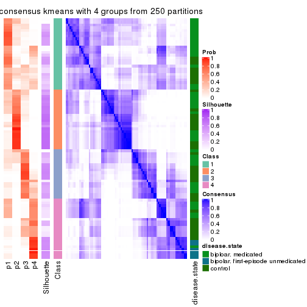
consensus_heatmap(res, k = 5)
consensus_heatmap(res, k = 6)
Heatmaps for the membership of samples in all partitions to see how consistent they are:
membership_heatmap(res, k = 2)
membership_heatmap(res, k = 3)
membership_heatmap(res, k = 4)
membership_heatmap(res, k = 5)
membership_heatmap(res, k = 6)
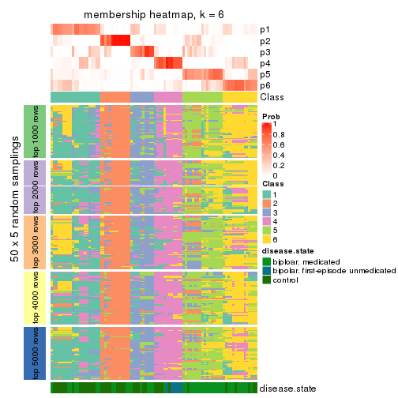
As soon as we have had the classes for columns, we can look for signatures which are significantly different between classes which can be candidate marks for certain classes. Following are the heatmaps for signatures.
Signature heatmaps where rows are scaled:
get_signatures(res, k = 2)
get_signatures(res, k = 3)
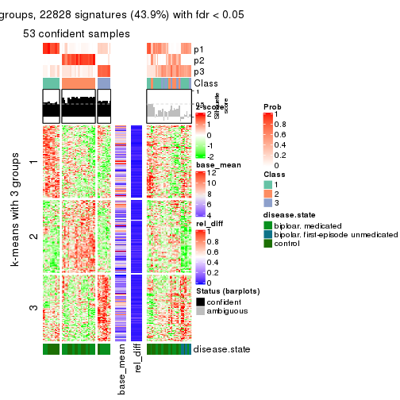
get_signatures(res, k = 4)
get_signatures(res, k = 5)
get_signatures(res, k = 6)
Signature heatmaps where rows are not scaled:
get_signatures(res, k = 2, scale_rows = FALSE)
get_signatures(res, k = 3, scale_rows = FALSE)
get_signatures(res, k = 4, scale_rows = FALSE)
get_signatures(res, k = 5, scale_rows = FALSE)
get_signatures(res, k = 6, scale_rows = FALSE)
Compare the overlap of signatures from different k:
compare_signatures(res)
get_signature() returns a data frame invisibly. TO get the list of signatures, the function
call should be assigned to a variable explicitly. In following code, if plot argument is set
to FALSE, no heatmap is plotted while only the differential analysis is performed.
# code only for demonstration
tb = get_signature(res, k = ..., plot = FALSE)
An example of the output of tb is:
#> which_row fdr mean_1 mean_2 scaled_mean_1 scaled_mean_2 km
#> 1 38 0.042760348 8.373488 9.131774 -0.5533452 0.5164555 1
#> 2 40 0.018707592 7.106213 8.469186 -0.6173731 0.5762149 1
#> 3 55 0.019134737 10.221463 11.207825 -0.6159697 0.5749050 1
#> 4 59 0.006059896 5.921854 7.869574 -0.6899429 0.6439467 1
#> 5 60 0.018055526 8.928898 10.211722 -0.6204761 0.5791110 1
#> 6 98 0.009384629 15.714769 14.887706 0.6635654 -0.6193277 2
...
The columns in tb are:
which_row: row indices corresponding to the input matrix.fdr: FDR for the differential test. mean_x: The mean value in group x.scaled_mean_x: The mean value in group x after rows are scaled.km: Row groups if k-means clustering is applied to rows.UMAP plot which shows how samples are separated.
dimension_reduction(res, k = 2, method = "UMAP")
dimension_reduction(res, k = 3, method = "UMAP")
dimension_reduction(res, k = 4, method = "UMAP")
dimension_reduction(res, k = 5, method = "UMAP")
dimension_reduction(res, k = 6, method = "UMAP")
Following heatmap shows how subgroups are split when increasing k:
collect_classes(res)
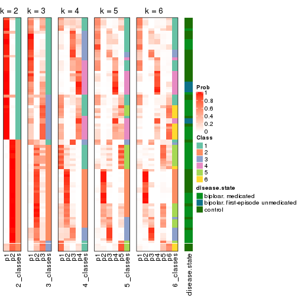
Test correlation between subgroups and known annotations. If the known annotation is numeric, one-way ANOVA test is applied, and if the known annotation is discrete, chi-squared contingency table test is applied.
test_to_known_factors(res)
#> n disease.state(p) k
#> MAD:kmeans 87 1.27e-02 2
#> MAD:kmeans 53 2.33e-02 3
#> MAD:kmeans 39 4.29e-05 4
#> MAD:kmeans 32 2.60e-04 5
#> MAD:kmeans 37 4.75e-04 6
If matrix rows can be associated to genes, consider to use GO_Enrichment(res,
...) to perform function enrichment for the signature genes.
The object with results only for a single top-value method and a single partition method can be extracted as:
res = res_list["MAD", "skmeans"]
# you can also extract it by
# res = res_list["MAD:skmeans"]
A summary of res and all the functions that can be applied to it:
res
#> A 'ConsensusPartition' object with k = 2, 3, 4, 5, 6.
#> On a matrix with 51941 rows and 88 columns.
#> Top rows (1000, 2000, 3000, 4000, 5000) are extracted by 'MAD' method.
#> Subgroups are detected by 'skmeans' method.
#> Performed in total 1250 partitions by row resampling.
#> Best k for subgroups seems to be 2.
#>
#> Following methods can be applied to this 'ConsensusPartition' object:
#> [1] "cola_report" "collect_classes" "collect_plots"
#> [4] "collect_stats" "colnames" "compare_signatures"
#> [7] "consensus_heatmap" "dimension_reduction" "functional_enrichment"
#> [10] "get_anno_col" "get_anno" "get_classes"
#> [13] "get_consensus" "get_matrix" "get_membership"
#> [16] "get_param" "get_signatures" "get_stats"
#> [19] "is_best_k" "is_stable_k" "membership_heatmap"
#> [22] "ncol" "nrow" "plot_ecdf"
#> [25] "rownames" "select_partition_number" "show"
#> [28] "suggest_best_k" "test_to_known_factors"
collect_plots() function collects all the plots made from res for all k (number of partitions)
into one single page to provide an easy and fast comparison between different k.
collect_plots(res)
The plots are:
k and the heatmap of
predicted classes for each k.k.k.k.All the plots in panels can be made by individual functions and they are plotted later in this section.
select_partition_number() produces several plots showing different
statistics for choosing “optimized” k. There are following statistics:
k;k, the area increased is defined as \(A_k - A_{k-1}\).The detailed explanations of these statistics can be found in the cola vignette.
Generally speaking, lower PAC score, higher mean silhouette score or higher
concordance corresponds to better partition. Rand index and Jaccard index
measure how similar the current partition is compared to partition with k-1.
If they are too similar, we won't accept k is better than k-1.
select_partition_number(res)
The numeric values for all these statistics can be obtained by get_stats().
get_stats(res)
#> k 1-PAC mean_silhouette concordance area_increased Rand Jaccard
#> 2 2 1.000 0.972 0.989 0.5057 0.495 0.495
#> 3 3 0.568 0.739 0.861 0.3084 0.743 0.533
#> 4 4 0.625 0.706 0.838 0.1362 0.787 0.471
#> 5 5 0.664 0.515 0.761 0.0684 0.877 0.562
#> 6 6 0.690 0.566 0.725 0.0411 0.883 0.508
suggest_best_k() suggests the best \(k\) based on these statistics. The rules are as follows:
NA.suggest_best_k(res)
#> [1] 2
Following shows the table of the partitions (You need to click the show/hide
code output link to see it). The membership matrix (columns with name p*)
is inferred by
clue::cl_consensus()
function with the SE method. Basically the value in the membership matrix
represents the probability to belong to a certain group. The finall class
label for an item is determined with the group with highest probability it
belongs to.
In get_classes() function, the entropy is calculated from the membership
matrix and the silhouette score is calculated from the consensus matrix.
cbind(get_classes(res, k = 2), get_membership(res, k = 2))
#> class entropy silhouette p1 p2
#> GSM1130404 1 0.7219 0.7538 0.800 0.200
#> GSM1130405 1 0.9993 0.0935 0.516 0.484
#> GSM1130408 2 0.0000 0.9993 0.000 1.000
#> GSM1130409 1 0.0000 0.9785 1.000 0.000
#> GSM1130410 1 0.0000 0.9785 1.000 0.000
#> GSM1130415 2 0.0000 0.9993 0.000 1.000
#> GSM1130416 2 0.0000 0.9993 0.000 1.000
#> GSM1130417 2 0.0000 0.9993 0.000 1.000
#> GSM1130418 2 0.0000 0.9993 0.000 1.000
#> GSM1130421 2 0.0000 0.9993 0.000 1.000
#> GSM1130422 2 0.0000 0.9993 0.000 1.000
#> GSM1130423 1 0.0000 0.9785 1.000 0.000
#> GSM1130424 2 0.1843 0.9702 0.028 0.972
#> GSM1130425 1 0.0000 0.9785 1.000 0.000
#> GSM1130426 2 0.0000 0.9993 0.000 1.000
#> GSM1130427 2 0.0000 0.9993 0.000 1.000
#> GSM1130428 2 0.0000 0.9993 0.000 1.000
#> GSM1130429 2 0.0000 0.9993 0.000 1.000
#> GSM1130430 1 0.0000 0.9785 1.000 0.000
#> GSM1130431 1 0.0000 0.9785 1.000 0.000
#> GSM1130432 2 0.0000 0.9993 0.000 1.000
#> GSM1130433 1 0.7674 0.7175 0.776 0.224
#> GSM1130434 1 0.0000 0.9785 1.000 0.000
#> GSM1130435 1 0.0000 0.9785 1.000 0.000
#> GSM1130436 1 0.0000 0.9785 1.000 0.000
#> GSM1130437 1 0.0000 0.9785 1.000 0.000
#> GSM1130438 1 0.0000 0.9785 1.000 0.000
#> GSM1130439 1 0.0000 0.9785 1.000 0.000
#> GSM1130440 1 0.2603 0.9390 0.956 0.044
#> GSM1130441 2 0.0000 0.9993 0.000 1.000
#> GSM1130442 2 0.0000 0.9993 0.000 1.000
#> GSM1130443 1 0.0000 0.9785 1.000 0.000
#> GSM1130444 1 0.0000 0.9785 1.000 0.000
#> GSM1130445 1 0.0000 0.9785 1.000 0.000
#> GSM1130476 2 0.0000 0.9993 0.000 1.000
#> GSM1130483 1 0.0000 0.9785 1.000 0.000
#> GSM1130484 1 0.0000 0.9785 1.000 0.000
#> GSM1130487 1 0.0000 0.9785 1.000 0.000
#> GSM1130488 1 0.0000 0.9785 1.000 0.000
#> GSM1130419 1 0.0000 0.9785 1.000 0.000
#> GSM1130420 1 0.0000 0.9785 1.000 0.000
#> GSM1130464 1 0.0000 0.9785 1.000 0.000
#> GSM1130465 1 0.0000 0.9785 1.000 0.000
#> GSM1130468 1 0.0000 0.9785 1.000 0.000
#> GSM1130469 1 0.0000 0.9785 1.000 0.000
#> GSM1130402 1 0.0000 0.9785 1.000 0.000
#> GSM1130403 1 0.0000 0.9785 1.000 0.000
#> GSM1130406 1 0.0000 0.9785 1.000 0.000
#> GSM1130407 1 0.0000 0.9785 1.000 0.000
#> GSM1130411 2 0.0000 0.9993 0.000 1.000
#> GSM1130412 2 0.0000 0.9993 0.000 1.000
#> GSM1130413 2 0.0000 0.9993 0.000 1.000
#> GSM1130414 2 0.0000 0.9993 0.000 1.000
#> GSM1130446 2 0.0000 0.9993 0.000 1.000
#> GSM1130447 1 0.0938 0.9683 0.988 0.012
#> GSM1130448 2 0.0000 0.9993 0.000 1.000
#> GSM1130449 1 0.0000 0.9785 1.000 0.000
#> GSM1130450 2 0.0000 0.9993 0.000 1.000
#> GSM1130451 2 0.0000 0.9993 0.000 1.000
#> GSM1130452 2 0.0000 0.9993 0.000 1.000
#> GSM1130453 2 0.0000 0.9993 0.000 1.000
#> GSM1130454 2 0.0000 0.9993 0.000 1.000
#> GSM1130455 2 0.0000 0.9993 0.000 1.000
#> GSM1130456 1 0.0000 0.9785 1.000 0.000
#> GSM1130457 2 0.0000 0.9993 0.000 1.000
#> GSM1130458 2 0.0000 0.9993 0.000 1.000
#> GSM1130459 2 0.0000 0.9993 0.000 1.000
#> GSM1130460 2 0.0000 0.9993 0.000 1.000
#> GSM1130461 2 0.0000 0.9993 0.000 1.000
#> GSM1130462 2 0.0000 0.9993 0.000 1.000
#> GSM1130463 2 0.0000 0.9993 0.000 1.000
#> GSM1130466 1 0.0000 0.9785 1.000 0.000
#> GSM1130467 2 0.0000 0.9993 0.000 1.000
#> GSM1130470 1 0.0000 0.9785 1.000 0.000
#> GSM1130471 1 0.0000 0.9785 1.000 0.000
#> GSM1130472 1 0.0000 0.9785 1.000 0.000
#> GSM1130473 1 0.0000 0.9785 1.000 0.000
#> GSM1130474 2 0.0000 0.9993 0.000 1.000
#> GSM1130475 2 0.0000 0.9993 0.000 1.000
#> GSM1130477 1 0.0000 0.9785 1.000 0.000
#> GSM1130478 1 0.0000 0.9785 1.000 0.000
#> GSM1130479 1 0.0000 0.9785 1.000 0.000
#> GSM1130480 2 0.0000 0.9993 0.000 1.000
#> GSM1130481 2 0.0000 0.9993 0.000 1.000
#> GSM1130482 2 0.0000 0.9993 0.000 1.000
#> GSM1130485 1 0.0000 0.9785 1.000 0.000
#> GSM1130486 1 0.0000 0.9785 1.000 0.000
#> GSM1130489 2 0.0000 0.9993 0.000 1.000
cbind(get_classes(res, k = 3), get_membership(res, k = 3))
#> class entropy silhouette p1 p2 p3
#> GSM1130404 1 0.9413 0.453 0.468 0.184 0.348
#> GSM1130405 2 0.9886 -0.258 0.320 0.404 0.276
#> GSM1130408 2 0.0592 0.894 0.000 0.988 0.012
#> GSM1130409 1 0.6468 0.520 0.552 0.004 0.444
#> GSM1130410 1 0.6468 0.520 0.552 0.004 0.444
#> GSM1130415 2 0.0000 0.896 0.000 1.000 0.000
#> GSM1130416 2 0.0000 0.896 0.000 1.000 0.000
#> GSM1130417 2 0.0000 0.896 0.000 1.000 0.000
#> GSM1130418 2 0.0000 0.896 0.000 1.000 0.000
#> GSM1130421 2 0.0424 0.894 0.000 0.992 0.008
#> GSM1130422 2 0.1031 0.887 0.000 0.976 0.024
#> GSM1130423 1 0.0000 0.767 1.000 0.000 0.000
#> GSM1130424 1 0.4842 0.551 0.776 0.224 0.000
#> GSM1130425 1 0.0237 0.767 0.996 0.000 0.004
#> GSM1130426 2 0.0000 0.896 0.000 1.000 0.000
#> GSM1130427 2 0.0000 0.896 0.000 1.000 0.000
#> GSM1130428 1 0.5216 0.493 0.740 0.260 0.000
#> GSM1130429 1 0.5098 0.511 0.752 0.248 0.000
#> GSM1130430 1 0.5873 0.674 0.684 0.004 0.312
#> GSM1130431 1 0.5058 0.724 0.756 0.000 0.244
#> GSM1130432 3 0.3412 0.780 0.000 0.124 0.876
#> GSM1130433 3 0.0000 0.828 0.000 0.000 1.000
#> GSM1130434 1 0.6280 0.497 0.540 0.000 0.460
#> GSM1130435 1 0.6260 0.516 0.552 0.000 0.448
#> GSM1130436 1 0.6309 0.430 0.504 0.000 0.496
#> GSM1130437 1 0.6309 0.430 0.504 0.000 0.496
#> GSM1130438 3 0.0237 0.829 0.004 0.000 0.996
#> GSM1130439 3 0.0237 0.829 0.004 0.000 0.996
#> GSM1130440 3 0.0000 0.828 0.000 0.000 1.000
#> GSM1130441 2 0.0237 0.896 0.000 0.996 0.004
#> GSM1130442 2 0.1031 0.889 0.000 0.976 0.024
#> GSM1130443 1 0.4750 0.725 0.784 0.000 0.216
#> GSM1130444 3 0.2959 0.769 0.100 0.000 0.900
#> GSM1130445 3 0.2959 0.768 0.100 0.000 0.900
#> GSM1130476 3 0.5363 0.639 0.000 0.276 0.724
#> GSM1130483 3 0.0747 0.826 0.016 0.000 0.984
#> GSM1130484 3 0.0747 0.826 0.016 0.000 0.984
#> GSM1130487 1 0.6252 0.478 0.556 0.000 0.444
#> GSM1130488 1 0.6168 0.534 0.588 0.000 0.412
#> GSM1130419 1 0.3192 0.772 0.888 0.000 0.112
#> GSM1130420 1 0.3192 0.772 0.888 0.000 0.112
#> GSM1130464 1 0.3752 0.765 0.856 0.000 0.144
#> GSM1130465 1 0.4654 0.738 0.792 0.000 0.208
#> GSM1130468 1 0.3116 0.773 0.892 0.000 0.108
#> GSM1130469 1 0.3116 0.773 0.892 0.000 0.108
#> GSM1130402 1 0.5285 0.724 0.752 0.004 0.244
#> GSM1130403 1 0.4293 0.745 0.832 0.004 0.164
#> GSM1130406 3 0.0747 0.826 0.016 0.000 0.984
#> GSM1130407 3 0.0747 0.826 0.016 0.000 0.984
#> GSM1130411 2 0.0000 0.896 0.000 1.000 0.000
#> GSM1130412 2 0.0000 0.896 0.000 1.000 0.000
#> GSM1130413 2 0.0000 0.896 0.000 1.000 0.000
#> GSM1130414 2 0.0000 0.896 0.000 1.000 0.000
#> GSM1130446 2 0.5443 0.712 0.260 0.736 0.004
#> GSM1130447 1 0.0592 0.761 0.988 0.012 0.000
#> GSM1130448 3 0.5363 0.639 0.000 0.276 0.724
#> GSM1130449 3 0.5397 0.532 0.280 0.000 0.720
#> GSM1130450 2 0.2152 0.877 0.036 0.948 0.016
#> GSM1130451 2 0.7238 0.593 0.328 0.628 0.044
#> GSM1130452 2 0.0424 0.895 0.000 0.992 0.008
#> GSM1130453 3 0.5926 0.498 0.000 0.356 0.644
#> GSM1130454 3 0.5926 0.498 0.000 0.356 0.644
#> GSM1130455 2 0.1031 0.889 0.000 0.976 0.024
#> GSM1130456 1 0.0000 0.767 1.000 0.000 0.000
#> GSM1130457 2 0.0000 0.896 0.000 1.000 0.000
#> GSM1130458 2 0.3619 0.813 0.136 0.864 0.000
#> GSM1130459 2 0.0237 0.896 0.000 0.996 0.004
#> GSM1130460 2 0.0237 0.896 0.000 0.996 0.004
#> GSM1130461 2 0.5098 0.591 0.000 0.752 0.248
#> GSM1130462 2 0.4209 0.811 0.128 0.856 0.016
#> GSM1130463 2 0.6284 0.648 0.304 0.680 0.016
#> GSM1130466 1 0.0000 0.767 1.000 0.000 0.000
#> GSM1130467 2 0.0237 0.896 0.000 0.996 0.004
#> GSM1130470 1 0.0000 0.767 1.000 0.000 0.000
#> GSM1130471 1 0.0000 0.767 1.000 0.000 0.000
#> GSM1130472 1 0.0000 0.767 1.000 0.000 0.000
#> GSM1130473 1 0.0000 0.767 1.000 0.000 0.000
#> GSM1130474 2 0.6306 0.745 0.200 0.748 0.052
#> GSM1130475 2 0.1529 0.878 0.000 0.960 0.040
#> GSM1130477 3 0.1529 0.805 0.040 0.000 0.960
#> GSM1130478 3 0.1163 0.817 0.028 0.000 0.972
#> GSM1130479 1 0.0000 0.767 1.000 0.000 0.000
#> GSM1130480 3 0.3482 0.778 0.000 0.128 0.872
#> GSM1130481 2 0.5502 0.723 0.248 0.744 0.008
#> GSM1130482 2 0.0747 0.893 0.000 0.984 0.016
#> GSM1130485 1 0.0000 0.767 1.000 0.000 0.000
#> GSM1130486 1 0.3551 0.769 0.868 0.000 0.132
#> GSM1130489 2 0.5541 0.719 0.252 0.740 0.008
cbind(get_classes(res, k = 4), get_membership(res, k = 4))
#> class entropy silhouette p1 p2 p3 p4
#> GSM1130404 2 0.5240 0.682 0.188 0.740 0.000 0.072
#> GSM1130405 2 0.3471 0.798 0.072 0.868 0.000 0.060
#> GSM1130408 2 0.3074 0.725 0.000 0.848 0.152 0.000
#> GSM1130409 2 0.5240 0.679 0.188 0.740 0.000 0.072
#> GSM1130410 2 0.5307 0.674 0.188 0.736 0.000 0.076
#> GSM1130415 2 0.0469 0.886 0.000 0.988 0.012 0.000
#> GSM1130416 2 0.0469 0.886 0.000 0.988 0.012 0.000
#> GSM1130417 2 0.0469 0.886 0.000 0.988 0.012 0.000
#> GSM1130418 2 0.0469 0.886 0.000 0.988 0.012 0.000
#> GSM1130421 2 0.0921 0.877 0.000 0.972 0.028 0.000
#> GSM1130422 2 0.1022 0.876 0.000 0.968 0.032 0.000
#> GSM1130423 4 0.1902 0.825 0.000 0.004 0.064 0.932
#> GSM1130424 4 0.5149 0.513 0.000 0.016 0.336 0.648
#> GSM1130425 4 0.2521 0.825 0.020 0.004 0.060 0.916
#> GSM1130426 2 0.0469 0.886 0.000 0.988 0.012 0.000
#> GSM1130427 2 0.0336 0.885 0.000 0.992 0.008 0.000
#> GSM1130428 4 0.6794 0.406 0.000 0.116 0.328 0.556
#> GSM1130429 4 0.6748 0.412 0.000 0.112 0.328 0.560
#> GSM1130430 2 0.7733 0.206 0.256 0.440 0.000 0.304
#> GSM1130431 4 0.4137 0.674 0.208 0.012 0.000 0.780
#> GSM1130432 1 0.4804 0.300 0.616 0.000 0.384 0.000
#> GSM1130433 1 0.2060 0.735 0.932 0.016 0.052 0.000
#> GSM1130434 1 0.5127 0.401 0.632 0.012 0.000 0.356
#> GSM1130435 1 0.5220 0.405 0.632 0.016 0.000 0.352
#> GSM1130436 1 0.4877 0.455 0.664 0.008 0.000 0.328
#> GSM1130437 1 0.4877 0.455 0.664 0.008 0.000 0.328
#> GSM1130438 1 0.1792 0.736 0.932 0.000 0.068 0.000
#> GSM1130439 1 0.1792 0.736 0.932 0.000 0.068 0.000
#> GSM1130440 1 0.1792 0.736 0.932 0.000 0.068 0.000
#> GSM1130441 3 0.3400 0.824 0.000 0.180 0.820 0.000
#> GSM1130442 3 0.3803 0.824 0.032 0.132 0.836 0.000
#> GSM1130443 4 0.3893 0.672 0.196 0.000 0.008 0.796
#> GSM1130444 1 0.3485 0.708 0.856 0.000 0.028 0.116
#> GSM1130445 1 0.3464 0.719 0.860 0.000 0.032 0.108
#> GSM1130476 1 0.5472 0.113 0.544 0.016 0.440 0.000
#> GSM1130483 1 0.0000 0.750 1.000 0.000 0.000 0.000
#> GSM1130484 1 0.0000 0.750 1.000 0.000 0.000 0.000
#> GSM1130487 1 0.4877 0.347 0.592 0.000 0.000 0.408
#> GSM1130488 1 0.5060 0.331 0.584 0.004 0.000 0.412
#> GSM1130419 4 0.1716 0.802 0.064 0.000 0.000 0.936
#> GSM1130420 4 0.1716 0.802 0.064 0.000 0.000 0.936
#> GSM1130464 4 0.3528 0.683 0.192 0.000 0.000 0.808
#> GSM1130465 4 0.4800 0.410 0.340 0.004 0.000 0.656
#> GSM1130468 4 0.2088 0.803 0.064 0.004 0.004 0.928
#> GSM1130469 4 0.2088 0.803 0.064 0.004 0.004 0.928
#> GSM1130402 4 0.4501 0.657 0.212 0.024 0.000 0.764
#> GSM1130403 4 0.4045 0.728 0.144 0.028 0.004 0.824
#> GSM1130406 1 0.0921 0.746 0.972 0.000 0.000 0.028
#> GSM1130407 1 0.0921 0.746 0.972 0.000 0.000 0.028
#> GSM1130411 2 0.0469 0.886 0.000 0.988 0.012 0.000
#> GSM1130412 2 0.0469 0.886 0.000 0.988 0.012 0.000
#> GSM1130413 2 0.0469 0.886 0.000 0.988 0.012 0.000
#> GSM1130414 2 0.0469 0.886 0.000 0.988 0.012 0.000
#> GSM1130446 3 0.2578 0.818 0.000 0.036 0.912 0.052
#> GSM1130447 4 0.2546 0.812 0.000 0.008 0.092 0.900
#> GSM1130448 3 0.5387 0.293 0.400 0.016 0.584 0.000
#> GSM1130449 1 0.5217 0.306 0.608 0.000 0.380 0.012
#> GSM1130450 3 0.2987 0.841 0.000 0.104 0.880 0.016
#> GSM1130451 3 0.1557 0.804 0.000 0.000 0.944 0.056
#> GSM1130452 3 0.3356 0.826 0.000 0.176 0.824 0.000
#> GSM1130453 3 0.5090 0.464 0.324 0.016 0.660 0.000
#> GSM1130454 3 0.5090 0.464 0.324 0.016 0.660 0.000
#> GSM1130455 3 0.2814 0.836 0.000 0.132 0.868 0.000
#> GSM1130456 4 0.0376 0.819 0.004 0.000 0.004 0.992
#> GSM1130457 3 0.3873 0.781 0.000 0.228 0.772 0.000
#> GSM1130458 3 0.4070 0.785 0.000 0.132 0.824 0.044
#> GSM1130459 3 0.3569 0.816 0.000 0.196 0.804 0.000
#> GSM1130460 3 0.3311 0.826 0.000 0.172 0.828 0.000
#> GSM1130461 3 0.6140 0.569 0.252 0.096 0.652 0.000
#> GSM1130462 3 0.3143 0.841 0.000 0.100 0.876 0.024
#> GSM1130463 3 0.2578 0.818 0.000 0.036 0.912 0.052
#> GSM1130466 4 0.1716 0.825 0.000 0.000 0.064 0.936
#> GSM1130467 3 0.4040 0.771 0.000 0.248 0.752 0.000
#> GSM1130470 4 0.1902 0.825 0.000 0.004 0.064 0.932
#> GSM1130471 4 0.1902 0.825 0.000 0.004 0.064 0.932
#> GSM1130472 4 0.1902 0.825 0.000 0.004 0.064 0.932
#> GSM1130473 4 0.1902 0.825 0.000 0.004 0.064 0.932
#> GSM1130474 3 0.0469 0.809 0.000 0.000 0.988 0.012
#> GSM1130475 3 0.2530 0.836 0.004 0.100 0.896 0.000
#> GSM1130477 1 0.0376 0.749 0.992 0.000 0.004 0.004
#> GSM1130478 1 0.0895 0.750 0.976 0.000 0.020 0.004
#> GSM1130479 4 0.2629 0.819 0.024 0.004 0.060 0.912
#> GSM1130480 1 0.4855 0.247 0.600 0.000 0.400 0.000
#> GSM1130481 3 0.2751 0.815 0.000 0.040 0.904 0.056
#> GSM1130482 3 0.3377 0.838 0.012 0.140 0.848 0.000
#> GSM1130485 4 0.1716 0.825 0.000 0.000 0.064 0.936
#> GSM1130486 4 0.2266 0.791 0.084 0.004 0.000 0.912
#> GSM1130489 3 0.3383 0.802 0.000 0.052 0.872 0.076
cbind(get_classes(res, k = 5), get_membership(res, k = 5))
#> class entropy silhouette p1 p2 p3 p4 p5
#> GSM1130404 1 0.5687 0.0170 0.536 0.400 0.052 0.004 0.008
#> GSM1130405 2 0.5175 0.2874 0.420 0.548 0.020 0.004 0.008
#> GSM1130408 2 0.4152 0.6578 0.000 0.772 0.168 0.000 0.060
#> GSM1130409 2 0.5116 0.1818 0.460 0.508 0.028 0.004 0.000
#> GSM1130410 2 0.5045 0.1826 0.464 0.508 0.024 0.004 0.000
#> GSM1130415 2 0.0404 0.8677 0.000 0.988 0.000 0.000 0.012
#> GSM1130416 2 0.0404 0.8677 0.000 0.988 0.000 0.000 0.012
#> GSM1130417 2 0.0404 0.8677 0.000 0.988 0.000 0.000 0.012
#> GSM1130418 2 0.0404 0.8677 0.000 0.988 0.000 0.000 0.012
#> GSM1130421 2 0.1018 0.8571 0.000 0.968 0.016 0.000 0.016
#> GSM1130422 2 0.1211 0.8536 0.000 0.960 0.016 0.000 0.024
#> GSM1130423 4 0.0794 0.6527 0.000 0.000 0.000 0.972 0.028
#> GSM1130424 4 0.5440 -0.1554 0.048 0.000 0.004 0.476 0.472
#> GSM1130425 4 0.2537 0.6165 0.056 0.000 0.016 0.904 0.024
#> GSM1130426 2 0.0162 0.8606 0.004 0.996 0.000 0.000 0.000
#> GSM1130427 2 0.0162 0.8606 0.004 0.996 0.000 0.000 0.000
#> GSM1130428 5 0.6411 0.1436 0.080 0.024 0.004 0.416 0.476
#> GSM1130429 5 0.6338 0.1378 0.080 0.020 0.004 0.420 0.476
#> GSM1130430 1 0.4421 0.5095 0.780 0.160 0.016 0.036 0.008
#> GSM1130431 1 0.3381 0.4992 0.840 0.012 0.008 0.132 0.008
#> GSM1130432 3 0.1626 0.6285 0.016 0.000 0.940 0.000 0.044
#> GSM1130433 3 0.3421 0.4918 0.204 0.008 0.788 0.000 0.000
#> GSM1130434 1 0.2511 0.5641 0.892 0.000 0.080 0.028 0.000
#> GSM1130435 1 0.2362 0.5648 0.900 0.000 0.076 0.024 0.000
#> GSM1130436 1 0.2813 0.5551 0.868 0.000 0.108 0.024 0.000
#> GSM1130437 1 0.2813 0.5551 0.868 0.000 0.108 0.024 0.000
#> GSM1130438 3 0.1908 0.6003 0.092 0.000 0.908 0.000 0.000
#> GSM1130439 3 0.1671 0.6078 0.076 0.000 0.924 0.000 0.000
#> GSM1130440 3 0.1608 0.6097 0.072 0.000 0.928 0.000 0.000
#> GSM1130441 5 0.4017 0.7258 0.000 0.148 0.064 0.000 0.788
#> GSM1130442 5 0.5773 0.3154 0.000 0.092 0.396 0.000 0.512
#> GSM1130443 4 0.4746 0.5213 0.376 0.000 0.024 0.600 0.000
#> GSM1130444 3 0.6707 -0.1016 0.368 0.000 0.388 0.244 0.000
#> GSM1130445 3 0.6478 -0.1211 0.396 0.000 0.420 0.184 0.000
#> GSM1130476 3 0.2516 0.6115 0.000 0.000 0.860 0.000 0.140
#> GSM1130483 3 0.4443 0.0145 0.472 0.000 0.524 0.004 0.000
#> GSM1130484 3 0.4443 0.0145 0.472 0.000 0.524 0.004 0.000
#> GSM1130487 1 0.5376 -0.2502 0.520 0.000 0.056 0.424 0.000
#> GSM1130488 1 0.5143 -0.2455 0.532 0.000 0.040 0.428 0.000
#> GSM1130419 4 0.4182 0.5615 0.352 0.000 0.004 0.644 0.000
#> GSM1130420 4 0.4182 0.5615 0.352 0.000 0.004 0.644 0.000
#> GSM1130464 4 0.4415 0.5208 0.388 0.000 0.008 0.604 0.000
#> GSM1130465 4 0.4648 0.3896 0.464 0.000 0.012 0.524 0.000
#> GSM1130468 4 0.4238 0.5509 0.368 0.000 0.004 0.628 0.000
#> GSM1130469 4 0.4238 0.5509 0.368 0.000 0.004 0.628 0.000
#> GSM1130402 1 0.5258 0.3951 0.636 0.024 0.008 0.316 0.016
#> GSM1130403 1 0.5482 0.3427 0.596 0.024 0.008 0.352 0.020
#> GSM1130406 1 0.4917 0.0717 0.556 0.000 0.416 0.028 0.000
#> GSM1130407 1 0.4930 0.0518 0.548 0.000 0.424 0.028 0.000
#> GSM1130411 2 0.0404 0.8677 0.000 0.988 0.000 0.000 0.012
#> GSM1130412 2 0.0404 0.8677 0.000 0.988 0.000 0.000 0.012
#> GSM1130413 2 0.0162 0.8646 0.000 0.996 0.000 0.000 0.004
#> GSM1130414 2 0.0404 0.8677 0.000 0.988 0.000 0.000 0.012
#> GSM1130446 5 0.1806 0.7362 0.020 0.004 0.004 0.032 0.940
#> GSM1130447 4 0.5387 0.3510 0.072 0.000 0.004 0.624 0.300
#> GSM1130448 3 0.2605 0.6045 0.000 0.000 0.852 0.000 0.148
#> GSM1130449 3 0.5273 0.5717 0.056 0.000 0.724 0.052 0.168
#> GSM1130450 5 0.1997 0.7548 0.000 0.036 0.040 0.000 0.924
#> GSM1130451 5 0.1597 0.7493 0.000 0.000 0.048 0.012 0.940
#> GSM1130452 5 0.4723 0.6999 0.000 0.132 0.132 0.000 0.736
#> GSM1130453 3 0.3684 0.4391 0.000 0.000 0.720 0.000 0.280
#> GSM1130454 3 0.3684 0.4391 0.000 0.000 0.720 0.000 0.280
#> GSM1130455 5 0.4294 0.6997 0.000 0.080 0.152 0.000 0.768
#> GSM1130456 4 0.4183 0.5740 0.324 0.000 0.008 0.668 0.000
#> GSM1130457 5 0.2813 0.7494 0.024 0.108 0.000 0.000 0.868
#> GSM1130458 5 0.2911 0.7250 0.040 0.020 0.004 0.044 0.892
#> GSM1130459 5 0.3944 0.7279 0.000 0.160 0.052 0.000 0.788
#> GSM1130460 5 0.3255 0.7505 0.000 0.100 0.052 0.000 0.848
#> GSM1130461 3 0.4854 0.3851 0.000 0.060 0.680 0.000 0.260
#> GSM1130462 5 0.1442 0.7539 0.012 0.032 0.004 0.000 0.952
#> GSM1130463 5 0.1622 0.7389 0.016 0.004 0.004 0.028 0.948
#> GSM1130466 4 0.0807 0.6546 0.012 0.000 0.000 0.976 0.012
#> GSM1130467 5 0.4054 0.7073 0.000 0.204 0.036 0.000 0.760
#> GSM1130470 4 0.0703 0.6534 0.000 0.000 0.000 0.976 0.024
#> GSM1130471 4 0.0794 0.6527 0.000 0.000 0.000 0.972 0.028
#> GSM1130472 4 0.0794 0.6527 0.000 0.000 0.000 0.972 0.028
#> GSM1130473 4 0.1588 0.6437 0.008 0.000 0.016 0.948 0.028
#> GSM1130474 5 0.3519 0.6618 0.000 0.000 0.216 0.008 0.776
#> GSM1130475 5 0.4797 0.5477 0.000 0.044 0.296 0.000 0.660
#> GSM1130477 1 0.5896 -0.0105 0.452 0.000 0.448 0.100 0.000
#> GSM1130478 3 0.5895 -0.0975 0.444 0.000 0.456 0.100 0.000
#> GSM1130479 4 0.3114 0.5918 0.076 0.000 0.016 0.872 0.036
#> GSM1130480 3 0.1668 0.6248 0.032 0.000 0.940 0.000 0.028
#> GSM1130481 5 0.3481 0.6958 0.044 0.000 0.020 0.084 0.852
#> GSM1130482 5 0.5398 0.6984 0.028 0.036 0.140 0.052 0.744
#> GSM1130485 4 0.1728 0.6478 0.036 0.000 0.004 0.940 0.020
#> GSM1130486 4 0.4559 0.3814 0.480 0.000 0.008 0.512 0.000
#> GSM1130489 5 0.5720 0.4342 0.060 0.000 0.020 0.324 0.596
cbind(get_classes(res, k = 6), get_membership(res, k = 6))
#> class entropy silhouette p1 p2 p3 p4 p5 p6
#> GSM1130404 1 0.4741 0.6398 0.740 0.168 0.008 0.024 0.012 0.048
#> GSM1130405 1 0.4528 0.5999 0.700 0.236 0.000 0.004 0.012 0.048
#> GSM1130408 2 0.4880 0.5899 0.016 0.700 0.184 0.000 0.096 0.004
#> GSM1130409 1 0.3936 0.5852 0.700 0.276 0.020 0.000 0.000 0.004
#> GSM1130410 1 0.3936 0.5852 0.700 0.276 0.020 0.000 0.000 0.004
#> GSM1130415 2 0.0000 0.9544 0.000 1.000 0.000 0.000 0.000 0.000
#> GSM1130416 2 0.0000 0.9544 0.000 1.000 0.000 0.000 0.000 0.000
#> GSM1130417 2 0.0000 0.9544 0.000 1.000 0.000 0.000 0.000 0.000
#> GSM1130418 2 0.0000 0.9544 0.000 1.000 0.000 0.000 0.000 0.000
#> GSM1130421 2 0.1390 0.9177 0.004 0.948 0.032 0.000 0.016 0.000
#> GSM1130422 2 0.1718 0.9081 0.008 0.932 0.044 0.000 0.016 0.000
#> GSM1130423 6 0.4210 0.5943 0.008 0.000 0.000 0.332 0.016 0.644
#> GSM1130424 6 0.5776 0.0841 0.068 0.000 0.000 0.048 0.360 0.524
#> GSM1130425 6 0.3781 0.6025 0.036 0.000 0.004 0.204 0.000 0.756
#> GSM1130426 2 0.0547 0.9385 0.020 0.980 0.000 0.000 0.000 0.000
#> GSM1130427 2 0.0547 0.9385 0.020 0.980 0.000 0.000 0.000 0.000
#> GSM1130428 5 0.6869 0.1605 0.204 0.012 0.000 0.040 0.436 0.308
#> GSM1130429 5 0.6806 0.1370 0.204 0.008 0.000 0.040 0.428 0.320
#> GSM1130430 1 0.3573 0.6702 0.824 0.024 0.004 0.108 0.000 0.040
#> GSM1130431 1 0.3381 0.6573 0.800 0.000 0.000 0.156 0.000 0.044
#> GSM1130432 3 0.3953 0.6136 0.072 0.000 0.784 0.004 0.008 0.132
#> GSM1130433 3 0.4538 0.5391 0.200 0.000 0.708 0.008 0.000 0.084
#> GSM1130434 1 0.4824 0.4719 0.596 0.000 0.020 0.352 0.000 0.032
#> GSM1130435 1 0.4528 0.5122 0.632 0.000 0.016 0.328 0.000 0.024
#> GSM1130436 1 0.5439 0.4518 0.560 0.000 0.040 0.348 0.000 0.052
#> GSM1130437 1 0.5439 0.4518 0.560 0.000 0.040 0.348 0.000 0.052
#> GSM1130438 3 0.3787 0.5974 0.104 0.000 0.804 0.020 0.000 0.072
#> GSM1130439 3 0.3103 0.6140 0.064 0.000 0.856 0.020 0.000 0.060
#> GSM1130440 3 0.2958 0.6168 0.060 0.000 0.864 0.016 0.000 0.060
#> GSM1130441 5 0.4622 0.6030 0.012 0.132 0.136 0.000 0.720 0.000
#> GSM1130442 3 0.5544 -0.1148 0.016 0.056 0.492 0.000 0.424 0.012
#> GSM1130443 4 0.0881 0.8065 0.008 0.000 0.012 0.972 0.000 0.008
#> GSM1130444 4 0.4712 0.5514 0.020 0.000 0.216 0.696 0.000 0.068
#> GSM1130445 4 0.5720 0.4559 0.084 0.000 0.212 0.628 0.000 0.076
#> GSM1130476 3 0.2118 0.5719 0.008 0.000 0.888 0.000 0.104 0.000
#> GSM1130483 3 0.6432 0.2311 0.388 0.000 0.436 0.068 0.000 0.108
#> GSM1130484 3 0.6432 0.2311 0.388 0.000 0.436 0.068 0.000 0.108
#> GSM1130487 4 0.3092 0.7450 0.064 0.000 0.036 0.860 0.000 0.040
#> GSM1130488 4 0.3113 0.7413 0.076 0.000 0.028 0.856 0.000 0.040
#> GSM1130419 4 0.0777 0.7967 0.004 0.000 0.000 0.972 0.000 0.024
#> GSM1130420 4 0.0777 0.7967 0.004 0.000 0.000 0.972 0.000 0.024
#> GSM1130464 4 0.0767 0.8058 0.012 0.000 0.004 0.976 0.000 0.008
#> GSM1130465 4 0.1410 0.7975 0.044 0.000 0.004 0.944 0.000 0.008
#> GSM1130468 4 0.1003 0.8009 0.020 0.000 0.000 0.964 0.000 0.016
#> GSM1130469 4 0.1003 0.8009 0.020 0.000 0.000 0.964 0.000 0.016
#> GSM1130402 1 0.3614 0.5528 0.752 0.000 0.000 0.028 0.000 0.220
#> GSM1130403 1 0.3648 0.5270 0.740 0.004 0.000 0.016 0.000 0.240
#> GSM1130406 3 0.7164 0.1946 0.304 0.000 0.392 0.204 0.000 0.100
#> GSM1130407 3 0.7149 0.2017 0.304 0.000 0.396 0.200 0.000 0.100
#> GSM1130411 2 0.0000 0.9544 0.000 1.000 0.000 0.000 0.000 0.000
#> GSM1130412 2 0.0000 0.9544 0.000 1.000 0.000 0.000 0.000 0.000
#> GSM1130413 2 0.0000 0.9544 0.000 1.000 0.000 0.000 0.000 0.000
#> GSM1130414 2 0.0000 0.9544 0.000 1.000 0.000 0.000 0.000 0.000
#> GSM1130446 5 0.3096 0.6270 0.048 0.000 0.004 0.000 0.840 0.108
#> GSM1130447 5 0.7237 -0.0898 0.192 0.000 0.000 0.112 0.348 0.348
#> GSM1130448 3 0.2420 0.5660 0.008 0.000 0.876 0.000 0.108 0.008
#> GSM1130449 3 0.6928 0.3664 0.060 0.000 0.468 0.024 0.128 0.320
#> GSM1130450 5 0.1936 0.6559 0.016 0.008 0.036 0.000 0.928 0.012
#> GSM1130451 5 0.2084 0.6541 0.016 0.000 0.044 0.000 0.916 0.024
#> GSM1130452 5 0.5591 0.5437 0.012 0.140 0.196 0.000 0.636 0.016
#> GSM1130453 3 0.3801 0.4216 0.016 0.000 0.740 0.000 0.232 0.012
#> GSM1130454 3 0.3801 0.4216 0.016 0.000 0.740 0.000 0.232 0.012
#> GSM1130455 5 0.4856 0.5450 0.012 0.080 0.220 0.000 0.684 0.004
#> GSM1130456 4 0.1826 0.7537 0.020 0.000 0.000 0.924 0.004 0.052
#> GSM1130457 5 0.3792 0.6545 0.028 0.080 0.008 0.000 0.820 0.064
#> GSM1130458 5 0.4008 0.6120 0.064 0.028 0.000 0.000 0.788 0.120
#> GSM1130459 5 0.4962 0.6124 0.012 0.148 0.112 0.000 0.712 0.016
#> GSM1130460 5 0.4655 0.6304 0.012 0.108 0.112 0.000 0.748 0.020
#> GSM1130461 3 0.4826 0.3440 0.016 0.044 0.680 0.000 0.248 0.012
#> GSM1130462 5 0.2501 0.6517 0.028 0.004 0.016 0.000 0.896 0.056
#> GSM1130463 5 0.2988 0.6412 0.044 0.000 0.016 0.000 0.860 0.080
#> GSM1130466 6 0.4300 0.4004 0.012 0.000 0.000 0.456 0.004 0.528
#> GSM1130467 5 0.5052 0.5954 0.012 0.192 0.096 0.000 0.688 0.012
#> GSM1130470 6 0.4034 0.5701 0.008 0.000 0.000 0.364 0.004 0.624
#> GSM1130471 6 0.4206 0.5788 0.008 0.000 0.000 0.356 0.012 0.624
#> GSM1130472 6 0.4206 0.5788 0.008 0.000 0.000 0.356 0.012 0.624
#> GSM1130473 6 0.3780 0.6166 0.012 0.000 0.004 0.236 0.008 0.740
#> GSM1130474 5 0.4782 0.5200 0.016 0.000 0.232 0.000 0.680 0.072
#> GSM1130475 5 0.5412 0.3715 0.012 0.036 0.348 0.000 0.572 0.032
#> GSM1130477 6 0.6157 -0.0763 0.308 0.000 0.216 0.012 0.000 0.464
#> GSM1130478 6 0.6189 -0.0946 0.308 0.000 0.224 0.012 0.000 0.456
#> GSM1130479 6 0.3704 0.6153 0.024 0.000 0.004 0.204 0.004 0.764
#> GSM1130480 3 0.3083 0.6077 0.048 0.000 0.864 0.004 0.024 0.060
#> GSM1130481 5 0.4743 0.4403 0.044 0.000 0.008 0.000 0.600 0.348
#> GSM1130482 5 0.6783 0.4429 0.048 0.028 0.140 0.000 0.516 0.268
#> GSM1130485 4 0.4672 -0.2616 0.028 0.000 0.000 0.532 0.008 0.432
#> GSM1130486 4 0.2843 0.7369 0.116 0.000 0.000 0.848 0.000 0.036
#> GSM1130489 6 0.3905 0.3472 0.040 0.000 0.004 0.000 0.212 0.744
Heatmaps for the consensus matrix. It visualizes the probability of two samples to be in a same group.
consensus_heatmap(res, k = 2)
consensus_heatmap(res, k = 3)
consensus_heatmap(res, k = 4)
consensus_heatmap(res, k = 5)
consensus_heatmap(res, k = 6)

Heatmaps for the membership of samples in all partitions to see how consistent they are:
membership_heatmap(res, k = 2)
membership_heatmap(res, k = 3)
membership_heatmap(res, k = 4)
membership_heatmap(res, k = 5)
membership_heatmap(res, k = 6)
As soon as we have had the classes for columns, we can look for signatures which are significantly different between classes which can be candidate marks for certain classes. Following are the heatmaps for signatures.
Signature heatmaps where rows are scaled:
get_signatures(res, k = 2)
get_signatures(res, k = 3)

get_signatures(res, k = 4)
get_signatures(res, k = 5)
get_signatures(res, k = 6)
Signature heatmaps where rows are not scaled:
get_signatures(res, k = 2, scale_rows = FALSE)
get_signatures(res, k = 3, scale_rows = FALSE)
get_signatures(res, k = 4, scale_rows = FALSE)
get_signatures(res, k = 5, scale_rows = FALSE)
get_signatures(res, k = 6, scale_rows = FALSE)
Compare the overlap of signatures from different k:
compare_signatures(res)
get_signature() returns a data frame invisibly. TO get the list of signatures, the function
call should be assigned to a variable explicitly. In following code, if plot argument is set
to FALSE, no heatmap is plotted while only the differential analysis is performed.
# code only for demonstration
tb = get_signature(res, k = ..., plot = FALSE)
An example of the output of tb is:
#> which_row fdr mean_1 mean_2 scaled_mean_1 scaled_mean_2 km
#> 1 38 0.042760348 8.373488 9.131774 -0.5533452 0.5164555 1
#> 2 40 0.018707592 7.106213 8.469186 -0.6173731 0.5762149 1
#> 3 55 0.019134737 10.221463 11.207825 -0.6159697 0.5749050 1
#> 4 59 0.006059896 5.921854 7.869574 -0.6899429 0.6439467 1
#> 5 60 0.018055526 8.928898 10.211722 -0.6204761 0.5791110 1
#> 6 98 0.009384629 15.714769 14.887706 0.6635654 -0.6193277 2
...
The columns in tb are:
which_row: row indices corresponding to the input matrix.fdr: FDR for the differential test. mean_x: The mean value in group x.scaled_mean_x: The mean value in group x after rows are scaled.km: Row groups if k-means clustering is applied to rows.UMAP plot which shows how samples are separated.
dimension_reduction(res, k = 2, method = "UMAP")
dimension_reduction(res, k = 3, method = "UMAP")
dimension_reduction(res, k = 4, method = "UMAP")
dimension_reduction(res, k = 5, method = "UMAP")
dimension_reduction(res, k = 6, method = "UMAP")
Following heatmap shows how subgroups are split when increasing k:
collect_classes(res)
Test correlation between subgroups and known annotations. If the known annotation is numeric, one-way ANOVA test is applied, and if the known annotation is discrete, chi-squared contingency table test is applied.
test_to_known_factors(res)
#> n disease.state(p) k
#> MAD:skmeans 87 1.27e-02 2
#> MAD:skmeans 79 5.60e-03 3
#> MAD:skmeans 71 6.71e-06 4
#> MAD:skmeans 59 5.80e-06 5
#> MAD:skmeans 63 4.48e-07 6
If matrix rows can be associated to genes, consider to use GO_Enrichment(res,
...) to perform function enrichment for the signature genes.
The object with results only for a single top-value method and a single partition method can be extracted as:
res = res_list["MAD", "pam"]
# you can also extract it by
# res = res_list["MAD:pam"]
A summary of res and all the functions that can be applied to it:
res
#> A 'ConsensusPartition' object with k = 2, 3, 4, 5, 6.
#> On a matrix with 51941 rows and 88 columns.
#> Top rows (1000, 2000, 3000, 4000, 5000) are extracted by 'MAD' method.
#> Subgroups are detected by 'pam' method.
#> Performed in total 1250 partitions by row resampling.
#> Best k for subgroups seems to be 2.
#>
#> Following methods can be applied to this 'ConsensusPartition' object:
#> [1] "cola_report" "collect_classes" "collect_plots"
#> [4] "collect_stats" "colnames" "compare_signatures"
#> [7] "consensus_heatmap" "dimension_reduction" "functional_enrichment"
#> [10] "get_anno_col" "get_anno" "get_classes"
#> [13] "get_consensus" "get_matrix" "get_membership"
#> [16] "get_param" "get_signatures" "get_stats"
#> [19] "is_best_k" "is_stable_k" "membership_heatmap"
#> [22] "ncol" "nrow" "plot_ecdf"
#> [25] "rownames" "select_partition_number" "show"
#> [28] "suggest_best_k" "test_to_known_factors"
collect_plots() function collects all the plots made from res for all k (number of partitions)
into one single page to provide an easy and fast comparison between different k.
collect_plots(res)
The plots are:
k and the heatmap of
predicted classes for each k.k.k.k.All the plots in panels can be made by individual functions and they are plotted later in this section.
select_partition_number() produces several plots showing different
statistics for choosing “optimized” k. There are following statistics:
k;k, the area increased is defined as \(A_k - A_{k-1}\).The detailed explanations of these statistics can be found in the cola vignette.
Generally speaking, lower PAC score, higher mean silhouette score or higher
concordance corresponds to better partition. Rand index and Jaccard index
measure how similar the current partition is compared to partition with k-1.
If they are too similar, we won't accept k is better than k-1.
select_partition_number(res)
The numeric values for all these statistics can be obtained by get_stats().
get_stats(res)
#> k 1-PAC mean_silhouette concordance area_increased Rand Jaccard
#> 2 2 0.505 0.858 0.896 0.4498 0.570 0.570
#> 3 3 0.560 0.775 0.861 0.4182 0.730 0.551
#> 4 4 0.666 0.810 0.865 0.1042 0.730 0.423
#> 5 5 0.627 0.687 0.818 0.1039 0.909 0.707
#> 6 6 0.793 0.796 0.885 0.0582 0.914 0.651
suggest_best_k() suggests the best \(k\) based on these statistics. The rules are as follows:
NA.suggest_best_k(res)
#> [1] 2
Following shows the table of the partitions (You need to click the show/hide
code output link to see it). The membership matrix (columns with name p*)
is inferred by
clue::cl_consensus()
function with the SE method. Basically the value in the membership matrix
represents the probability to belong to a certain group. The finall class
label for an item is determined with the group with highest probability it
belongs to.
In get_classes() function, the entropy is calculated from the membership
matrix and the silhouette score is calculated from the consensus matrix.
cbind(get_classes(res, k = 2), get_membership(res, k = 2))
#> class entropy silhouette p1 p2
#> GSM1130404 1 0.7219 0.840 0.800 0.200
#> GSM1130405 1 0.7376 0.835 0.792 0.208
#> GSM1130408 2 0.1843 0.888 0.028 0.972
#> GSM1130409 1 0.7139 0.842 0.804 0.196
#> GSM1130410 1 0.7139 0.842 0.804 0.196
#> GSM1130415 2 0.2423 0.883 0.040 0.960
#> GSM1130416 2 0.1843 0.888 0.028 0.972
#> GSM1130417 2 0.2236 0.885 0.036 0.964
#> GSM1130418 2 0.1843 0.888 0.028 0.972
#> GSM1130421 2 0.1843 0.888 0.028 0.972
#> GSM1130422 1 0.7376 0.835 0.792 0.208
#> GSM1130423 1 0.1843 0.879 0.972 0.028
#> GSM1130424 1 0.3114 0.880 0.944 0.056
#> GSM1130425 1 0.1843 0.879 0.972 0.028
#> GSM1130426 1 0.7376 0.835 0.792 0.208
#> GSM1130427 1 0.7376 0.835 0.792 0.208
#> GSM1130428 1 0.7139 0.842 0.804 0.196
#> GSM1130429 1 0.7139 0.842 0.804 0.196
#> GSM1130430 1 0.7139 0.842 0.804 0.196
#> GSM1130431 1 0.3274 0.881 0.940 0.060
#> GSM1130432 1 0.3274 0.876 0.940 0.060
#> GSM1130433 1 0.1843 0.882 0.972 0.028
#> GSM1130434 1 0.6531 0.845 0.832 0.168
#> GSM1130435 1 0.6531 0.845 0.832 0.168
#> GSM1130436 1 0.6438 0.847 0.836 0.164
#> GSM1130437 1 0.6531 0.845 0.832 0.168
#> GSM1130438 1 0.2043 0.879 0.968 0.032
#> GSM1130439 1 0.1843 0.882 0.972 0.028
#> GSM1130440 1 0.6973 0.847 0.812 0.188
#> GSM1130441 2 0.0376 0.890 0.004 0.996
#> GSM1130442 2 0.6531 0.858 0.168 0.832
#> GSM1130443 1 0.1843 0.879 0.972 0.028
#> GSM1130444 1 0.1843 0.879 0.972 0.028
#> GSM1130445 1 0.0000 0.884 1.000 0.000
#> GSM1130476 2 0.6531 0.858 0.168 0.832
#> GSM1130483 1 0.1843 0.879 0.972 0.028
#> GSM1130484 1 0.1843 0.879 0.972 0.028
#> GSM1130487 1 0.0000 0.884 1.000 0.000
#> GSM1130488 1 0.0000 0.884 1.000 0.000
#> GSM1130419 1 0.1843 0.879 0.972 0.028
#> GSM1130420 1 0.1843 0.879 0.972 0.028
#> GSM1130464 1 0.1843 0.879 0.972 0.028
#> GSM1130465 1 0.1843 0.879 0.972 0.028
#> GSM1130468 1 0.6531 0.845 0.832 0.168
#> GSM1130469 1 0.6531 0.845 0.832 0.168
#> GSM1130402 1 0.7139 0.842 0.804 0.196
#> GSM1130403 1 0.7139 0.842 0.804 0.196
#> GSM1130406 1 0.1843 0.879 0.972 0.028
#> GSM1130407 1 0.1843 0.879 0.972 0.028
#> GSM1130411 2 0.1843 0.888 0.028 0.972
#> GSM1130412 2 0.1843 0.888 0.028 0.972
#> GSM1130413 1 0.7528 0.829 0.784 0.216
#> GSM1130414 2 0.2423 0.883 0.040 0.960
#> GSM1130446 2 0.6531 0.858 0.168 0.832
#> GSM1130447 1 0.7139 0.842 0.804 0.196
#> GSM1130448 2 0.6801 0.850 0.180 0.820
#> GSM1130449 1 0.3114 0.877 0.944 0.056
#> GSM1130450 2 0.6531 0.858 0.168 0.832
#> GSM1130451 1 0.5294 0.831 0.880 0.120
#> GSM1130452 2 0.0938 0.890 0.012 0.988
#> GSM1130453 2 0.6531 0.858 0.168 0.832
#> GSM1130454 2 0.6531 0.858 0.168 0.832
#> GSM1130455 2 0.4939 0.875 0.108 0.892
#> GSM1130456 1 0.6973 0.843 0.812 0.188
#> GSM1130457 2 0.2043 0.887 0.032 0.968
#> GSM1130458 1 0.8555 0.759 0.720 0.280
#> GSM1130459 2 0.0000 0.890 0.000 1.000
#> GSM1130460 2 0.0672 0.890 0.008 0.992
#> GSM1130461 2 0.6531 0.858 0.168 0.832
#> GSM1130462 2 0.6531 0.858 0.168 0.832
#> GSM1130463 1 0.3431 0.874 0.936 0.064
#> GSM1130466 1 0.6531 0.845 0.832 0.168
#> GSM1130467 2 0.1843 0.888 0.028 0.972
#> GSM1130470 1 0.1843 0.879 0.972 0.028
#> GSM1130471 1 0.1843 0.879 0.972 0.028
#> GSM1130472 1 0.1843 0.879 0.972 0.028
#> GSM1130473 1 0.2043 0.879 0.968 0.032
#> GSM1130474 1 0.9815 0.163 0.580 0.420
#> GSM1130475 2 0.6531 0.858 0.168 0.832
#> GSM1130477 1 0.0000 0.884 1.000 0.000
#> GSM1130478 1 0.0376 0.884 0.996 0.004
#> GSM1130479 1 0.5842 0.863 0.860 0.140
#> GSM1130480 1 0.2236 0.882 0.964 0.036
#> GSM1130481 1 0.3274 0.876 0.940 0.060
#> GSM1130482 2 0.7453 0.838 0.212 0.788
#> GSM1130485 1 0.1843 0.882 0.972 0.028
#> GSM1130486 1 0.0376 0.884 0.996 0.004
#> GSM1130489 1 0.3114 0.877 0.944 0.056
cbind(get_classes(res, k = 3), get_membership(res, k = 3))
#> class entropy silhouette p1 p2 p3
#> GSM1130404 1 0.0475 0.837 0.992 0.004 0.004
#> GSM1130405 1 0.0475 0.837 0.992 0.004 0.004
#> GSM1130408 2 0.0000 0.848 0.000 1.000 0.000
#> GSM1130409 1 0.0475 0.837 0.992 0.004 0.004
#> GSM1130410 1 0.0475 0.837 0.992 0.004 0.004
#> GSM1130415 1 0.6111 0.471 0.604 0.396 0.000
#> GSM1130416 2 0.0000 0.848 0.000 1.000 0.000
#> GSM1130417 2 0.3412 0.763 0.124 0.876 0.000
#> GSM1130418 2 0.2959 0.786 0.100 0.900 0.000
#> GSM1130421 2 0.1964 0.830 0.056 0.944 0.000
#> GSM1130422 1 0.0661 0.838 0.988 0.004 0.008
#> GSM1130423 1 0.4605 0.761 0.796 0.000 0.204
#> GSM1130424 1 0.4605 0.763 0.796 0.000 0.204
#> GSM1130425 1 0.4654 0.760 0.792 0.000 0.208
#> GSM1130426 1 0.0747 0.836 0.984 0.016 0.000
#> GSM1130427 1 0.1411 0.832 0.964 0.036 0.000
#> GSM1130428 1 0.0424 0.837 0.992 0.008 0.000
#> GSM1130429 1 0.0424 0.837 0.992 0.008 0.000
#> GSM1130430 1 0.0475 0.837 0.992 0.004 0.004
#> GSM1130431 1 0.0237 0.837 0.996 0.004 0.000
#> GSM1130432 1 0.4784 0.764 0.796 0.004 0.200
#> GSM1130433 1 0.1411 0.832 0.964 0.000 0.036
#> GSM1130434 3 0.5138 0.823 0.252 0.000 0.748
#> GSM1130435 1 0.0475 0.837 0.992 0.004 0.004
#> GSM1130436 3 0.5138 0.823 0.252 0.000 0.748
#> GSM1130437 3 0.5138 0.823 0.252 0.000 0.748
#> GSM1130438 3 0.1525 0.812 0.032 0.004 0.964
#> GSM1130439 1 0.1860 0.827 0.948 0.000 0.052
#> GSM1130440 1 0.1860 0.827 0.948 0.000 0.052
#> GSM1130441 2 0.0000 0.848 0.000 1.000 0.000
#> GSM1130442 2 0.4931 0.814 0.004 0.784 0.212
#> GSM1130443 3 0.1031 0.810 0.024 0.000 0.976
#> GSM1130444 3 0.0892 0.804 0.020 0.000 0.980
#> GSM1130445 3 0.4605 0.819 0.204 0.000 0.796
#> GSM1130476 2 0.9410 0.484 0.220 0.504 0.276
#> GSM1130483 1 0.6079 0.560 0.612 0.000 0.388
#> GSM1130484 1 0.6126 0.536 0.600 0.000 0.400
#> GSM1130487 3 0.4654 0.832 0.208 0.000 0.792
#> GSM1130488 3 0.5058 0.826 0.244 0.000 0.756
#> GSM1130419 3 0.1643 0.818 0.044 0.000 0.956
#> GSM1130420 3 0.1643 0.818 0.044 0.000 0.956
#> GSM1130464 3 0.1753 0.821 0.048 0.000 0.952
#> GSM1130465 3 0.2165 0.824 0.064 0.000 0.936
#> GSM1130468 3 0.5365 0.821 0.252 0.004 0.744
#> GSM1130469 3 0.5365 0.821 0.252 0.004 0.744
#> GSM1130402 1 0.0475 0.837 0.992 0.004 0.004
#> GSM1130403 1 0.0475 0.837 0.992 0.004 0.004
#> GSM1130406 3 0.2066 0.823 0.060 0.000 0.940
#> GSM1130407 3 0.5835 0.434 0.340 0.000 0.660
#> GSM1130411 2 0.0237 0.848 0.004 0.996 0.000
#> GSM1130412 2 0.0237 0.848 0.004 0.996 0.000
#> GSM1130413 1 0.4654 0.739 0.792 0.208 0.000
#> GSM1130414 1 0.4796 0.731 0.780 0.220 0.000
#> GSM1130446 2 0.5635 0.804 0.036 0.784 0.180
#> GSM1130447 1 0.2096 0.832 0.944 0.004 0.052
#> GSM1130448 2 0.7860 0.701 0.116 0.656 0.228
#> GSM1130449 1 0.4504 0.764 0.804 0.000 0.196
#> GSM1130450 2 0.5635 0.804 0.036 0.784 0.180
#> GSM1130451 1 0.9498 0.118 0.452 0.356 0.192
#> GSM1130452 2 0.0000 0.848 0.000 1.000 0.000
#> GSM1130453 2 0.5115 0.805 0.004 0.768 0.228
#> GSM1130454 2 0.4978 0.812 0.004 0.780 0.216
#> GSM1130455 2 0.4784 0.818 0.004 0.796 0.200
#> GSM1130456 1 0.0000 0.837 1.000 0.000 0.000
#> GSM1130457 2 0.0424 0.847 0.008 0.992 0.000
#> GSM1130458 1 0.2448 0.802 0.924 0.076 0.000
#> GSM1130459 2 0.0000 0.848 0.000 1.000 0.000
#> GSM1130460 2 0.0000 0.848 0.000 1.000 0.000
#> GSM1130461 2 0.4978 0.812 0.004 0.780 0.216
#> GSM1130462 2 0.5635 0.804 0.036 0.784 0.180
#> GSM1130463 1 0.5277 0.763 0.796 0.024 0.180
#> GSM1130466 3 0.4887 0.824 0.228 0.000 0.772
#> GSM1130467 2 0.0000 0.848 0.000 1.000 0.000
#> GSM1130470 1 0.4974 0.742 0.764 0.000 0.236
#> GSM1130471 3 0.1964 0.820 0.056 0.000 0.944
#> GSM1130472 3 0.1964 0.820 0.056 0.000 0.944
#> GSM1130473 1 0.4750 0.755 0.784 0.000 0.216
#> GSM1130474 1 0.9702 0.180 0.444 0.320 0.236
#> GSM1130475 2 0.5109 0.812 0.008 0.780 0.212
#> GSM1130477 1 0.2625 0.786 0.916 0.000 0.084
#> GSM1130478 1 0.1411 0.833 0.964 0.000 0.036
#> GSM1130479 1 0.0747 0.835 0.984 0.000 0.016
#> GSM1130480 1 0.2796 0.826 0.908 0.000 0.092
#> GSM1130481 1 0.4346 0.769 0.816 0.000 0.184
#> GSM1130482 1 0.8732 0.320 0.552 0.316 0.132
#> GSM1130485 1 0.0000 0.837 1.000 0.000 0.000
#> GSM1130486 3 0.5178 0.823 0.256 0.000 0.744
#> GSM1130489 1 0.4346 0.769 0.816 0.000 0.184
cbind(get_classes(res, k = 4), get_membership(res, k = 4))
#> class entropy silhouette p1 p2 p3 p4
#> GSM1130404 1 0.1743 0.877 0.940 0.004 0.056 0.000
#> GSM1130405 1 0.0376 0.889 0.992 0.004 0.004 0.000
#> GSM1130408 2 0.0000 0.843 0.000 1.000 0.000 0.000
#> GSM1130409 1 0.0188 0.888 0.996 0.004 0.000 0.000
#> GSM1130410 1 0.0188 0.888 0.996 0.004 0.000 0.000
#> GSM1130415 1 0.4955 0.340 0.556 0.444 0.000 0.000
#> GSM1130416 2 0.0000 0.843 0.000 1.000 0.000 0.000
#> GSM1130417 2 0.3688 0.645 0.208 0.792 0.000 0.000
#> GSM1130418 2 0.3266 0.695 0.168 0.832 0.000 0.000
#> GSM1130421 2 0.1211 0.827 0.040 0.960 0.000 0.000
#> GSM1130422 1 0.0376 0.888 0.992 0.004 0.004 0.000
#> GSM1130423 4 0.1211 0.961 0.040 0.000 0.000 0.960
#> GSM1130424 4 0.0817 0.953 0.024 0.000 0.000 0.976
#> GSM1130425 4 0.0921 0.916 0.000 0.000 0.028 0.972
#> GSM1130426 1 0.0592 0.888 0.984 0.016 0.000 0.000
#> GSM1130427 1 0.1389 0.879 0.952 0.048 0.000 0.000
#> GSM1130428 1 0.0336 0.888 0.992 0.008 0.000 0.000
#> GSM1130429 1 0.0336 0.888 0.992 0.008 0.000 0.000
#> GSM1130430 1 0.0188 0.888 0.996 0.004 0.000 0.000
#> GSM1130431 1 0.0376 0.888 0.992 0.004 0.004 0.000
#> GSM1130432 1 0.4669 0.778 0.796 0.000 0.100 0.104
#> GSM1130433 1 0.1716 0.877 0.936 0.000 0.064 0.000
#> GSM1130434 1 0.0188 0.888 0.996 0.000 0.004 0.000
#> GSM1130435 1 0.0000 0.888 1.000 0.000 0.000 0.000
#> GSM1130436 1 0.1867 0.872 0.928 0.000 0.072 0.000
#> GSM1130437 1 0.1474 0.879 0.948 0.000 0.052 0.000
#> GSM1130438 3 0.0469 0.835 0.012 0.000 0.988 0.000
#> GSM1130439 3 0.3725 0.769 0.180 0.000 0.812 0.008
#> GSM1130440 3 0.4095 0.779 0.172 0.000 0.804 0.024
#> GSM1130441 2 0.0000 0.843 0.000 1.000 0.000 0.000
#> GSM1130442 2 0.5766 0.658 0.000 0.704 0.192 0.104
#> GSM1130443 3 0.2408 0.829 0.000 0.000 0.896 0.104
#> GSM1130444 3 0.2408 0.829 0.000 0.000 0.896 0.104
#> GSM1130445 3 0.3751 0.755 0.196 0.000 0.800 0.004
#> GSM1130476 3 0.0376 0.836 0.004 0.004 0.992 0.000
#> GSM1130483 3 0.0592 0.837 0.016 0.000 0.984 0.000
#> GSM1130484 3 0.0188 0.836 0.004 0.000 0.996 0.000
#> GSM1130487 3 0.2408 0.790 0.104 0.000 0.896 0.000
#> GSM1130488 1 0.2654 0.855 0.888 0.000 0.108 0.004
#> GSM1130419 4 0.1398 0.961 0.040 0.000 0.004 0.956
#> GSM1130420 4 0.1545 0.959 0.040 0.000 0.008 0.952
#> GSM1130464 3 0.5626 0.464 0.028 0.000 0.588 0.384
#> GSM1130465 1 0.4552 0.792 0.800 0.000 0.128 0.072
#> GSM1130468 1 0.0188 0.888 0.996 0.000 0.004 0.000
#> GSM1130469 1 0.0779 0.885 0.980 0.000 0.004 0.016
#> GSM1130402 1 0.0000 0.888 1.000 0.000 0.000 0.000
#> GSM1130403 1 0.0188 0.888 0.996 0.004 0.000 0.000
#> GSM1130406 3 0.2408 0.782 0.104 0.000 0.896 0.000
#> GSM1130407 1 0.3649 0.798 0.796 0.000 0.204 0.000
#> GSM1130411 2 0.0000 0.843 0.000 1.000 0.000 0.000
#> GSM1130412 2 0.0000 0.843 0.000 1.000 0.000 0.000
#> GSM1130413 1 0.4477 0.622 0.688 0.312 0.000 0.000
#> GSM1130414 1 0.4585 0.589 0.668 0.332 0.000 0.000
#> GSM1130446 2 0.6043 0.678 0.008 0.696 0.096 0.200
#> GSM1130447 4 0.2593 0.899 0.104 0.004 0.000 0.892
#> GSM1130448 3 0.2593 0.829 0.000 0.004 0.892 0.104
#> GSM1130449 1 0.4667 0.779 0.796 0.000 0.096 0.108
#> GSM1130450 2 0.7048 0.650 0.120 0.680 0.096 0.104
#> GSM1130451 1 0.8247 0.379 0.540 0.260 0.096 0.104
#> GSM1130452 2 0.0000 0.843 0.000 1.000 0.000 0.000
#> GSM1130453 3 0.2593 0.829 0.000 0.004 0.892 0.104
#> GSM1130454 3 0.2593 0.829 0.000 0.004 0.892 0.104
#> GSM1130455 2 0.4851 0.741 0.004 0.792 0.100 0.104
#> GSM1130456 1 0.0376 0.888 0.992 0.000 0.004 0.004
#> GSM1130457 2 0.0188 0.842 0.004 0.996 0.000 0.000
#> GSM1130458 1 0.1576 0.871 0.948 0.048 0.004 0.000
#> GSM1130459 2 0.0000 0.843 0.000 1.000 0.000 0.000
#> GSM1130460 2 0.0000 0.843 0.000 1.000 0.000 0.000
#> GSM1130461 2 0.4585 0.602 0.000 0.668 0.332 0.000
#> GSM1130462 2 0.7048 0.650 0.120 0.680 0.096 0.104
#> GSM1130463 1 0.5174 0.772 0.784 0.016 0.096 0.104
#> GSM1130466 4 0.2408 0.887 0.104 0.000 0.000 0.896
#> GSM1130467 2 0.0000 0.843 0.000 1.000 0.000 0.000
#> GSM1130470 4 0.1211 0.961 0.040 0.000 0.000 0.960
#> GSM1130471 4 0.1118 0.961 0.036 0.000 0.000 0.964
#> GSM1130472 4 0.1118 0.961 0.036 0.000 0.000 0.964
#> GSM1130473 4 0.0000 0.926 0.000 0.000 0.000 1.000
#> GSM1130474 3 0.7283 0.562 0.036 0.204 0.624 0.136
#> GSM1130475 2 0.6031 0.623 0.000 0.676 0.216 0.108
#> GSM1130477 1 0.3099 0.853 0.876 0.000 0.104 0.020
#> GSM1130478 1 0.3099 0.853 0.876 0.000 0.104 0.020
#> GSM1130479 1 0.1867 0.854 0.928 0.000 0.000 0.072
#> GSM1130480 3 0.4356 0.812 0.124 0.000 0.812 0.064
#> GSM1130481 1 0.4888 0.772 0.780 0.000 0.096 0.124
#> GSM1130482 1 0.7572 0.524 0.612 0.216 0.068 0.104
#> GSM1130485 1 0.0657 0.887 0.984 0.000 0.004 0.012
#> GSM1130486 1 0.0188 0.888 0.996 0.000 0.004 0.000
#> GSM1130489 1 0.4888 0.772 0.780 0.000 0.096 0.124
cbind(get_classes(res, k = 5), get_membership(res, k = 5))
#> class entropy silhouette p1 p2 p3 p4 p5
#> GSM1130404 1 0.4800 0.7225 0.676 0.000 0.052 0.272 0.000
#> GSM1130405 1 0.3913 0.7385 0.676 0.000 0.000 0.324 0.000
#> GSM1130408 2 0.2361 0.7446 0.096 0.892 0.012 0.000 0.000
#> GSM1130409 1 0.3913 0.7385 0.676 0.000 0.000 0.324 0.000
#> GSM1130410 1 0.3913 0.7385 0.676 0.000 0.000 0.324 0.000
#> GSM1130415 1 0.4341 0.2628 0.592 0.404 0.000 0.004 0.000
#> GSM1130416 2 0.3010 0.7202 0.172 0.824 0.000 0.004 0.000
#> GSM1130417 2 0.4066 0.5110 0.324 0.672 0.000 0.004 0.000
#> GSM1130418 2 0.3969 0.5498 0.304 0.692 0.000 0.004 0.000
#> GSM1130421 2 0.3922 0.6991 0.180 0.780 0.000 0.040 0.000
#> GSM1130422 1 0.3949 0.7333 0.696 0.004 0.000 0.300 0.000
#> GSM1130423 5 0.0000 0.9593 0.000 0.000 0.000 0.000 1.000
#> GSM1130424 5 0.0324 0.9560 0.004 0.004 0.000 0.000 0.992
#> GSM1130425 5 0.1251 0.9285 0.036 0.000 0.008 0.000 0.956
#> GSM1130426 1 0.3913 0.7385 0.676 0.000 0.000 0.324 0.000
#> GSM1130427 1 0.4380 0.7352 0.676 0.020 0.000 0.304 0.000
#> GSM1130428 1 0.3895 0.7385 0.680 0.000 0.000 0.320 0.000
#> GSM1130429 1 0.3895 0.7385 0.680 0.000 0.000 0.320 0.000
#> GSM1130430 1 0.3913 0.7385 0.676 0.000 0.000 0.324 0.000
#> GSM1130431 1 0.3913 0.7385 0.676 0.000 0.000 0.324 0.000
#> GSM1130432 1 0.4884 0.5381 0.720 0.000 0.152 0.128 0.000
#> GSM1130433 1 0.6294 0.6234 0.524 0.000 0.192 0.284 0.000
#> GSM1130434 4 0.0963 0.7529 0.036 0.000 0.000 0.964 0.000
#> GSM1130435 4 0.1671 0.6947 0.076 0.000 0.000 0.924 0.000
#> GSM1130436 4 0.1892 0.7698 0.004 0.000 0.080 0.916 0.000
#> GSM1130437 4 0.1041 0.7723 0.004 0.000 0.032 0.964 0.000
#> GSM1130438 3 0.0162 0.7382 0.000 0.000 0.996 0.004 0.000
#> GSM1130439 3 0.3266 0.6899 0.004 0.000 0.796 0.200 0.000
#> GSM1130440 3 0.3266 0.6899 0.004 0.000 0.796 0.200 0.000
#> GSM1130441 2 0.1965 0.7542 0.096 0.904 0.000 0.000 0.000
#> GSM1130442 2 0.4445 0.6524 0.300 0.676 0.024 0.000 0.000
#> GSM1130443 3 0.4433 0.7428 0.200 0.000 0.740 0.060 0.000
#> GSM1130444 3 0.3266 0.7717 0.200 0.000 0.796 0.004 0.000
#> GSM1130445 3 0.3353 0.6944 0.008 0.000 0.796 0.196 0.000
#> GSM1130476 3 0.0000 0.7398 0.000 0.000 1.000 0.000 0.000
#> GSM1130483 3 0.1740 0.7033 0.012 0.000 0.932 0.056 0.000
#> GSM1130484 3 0.0880 0.7229 0.000 0.000 0.968 0.032 0.000
#> GSM1130487 4 0.3932 0.5519 0.000 0.000 0.328 0.672 0.000
#> GSM1130488 4 0.3266 0.6972 0.004 0.000 0.200 0.796 0.000
#> GSM1130419 5 0.1410 0.9210 0.000 0.000 0.000 0.060 0.940
#> GSM1130420 5 0.1410 0.9210 0.000 0.000 0.000 0.060 0.940
#> GSM1130464 4 0.5639 0.4997 0.200 0.000 0.108 0.672 0.020
#> GSM1130465 4 0.3771 0.6742 0.164 0.000 0.040 0.796 0.000
#> GSM1130468 4 0.0963 0.7529 0.036 0.000 0.000 0.964 0.000
#> GSM1130469 4 0.1364 0.7555 0.036 0.000 0.000 0.952 0.012
#> GSM1130402 1 0.3913 0.7385 0.676 0.000 0.000 0.324 0.000
#> GSM1130403 1 0.3913 0.7385 0.676 0.000 0.000 0.324 0.000
#> GSM1130406 4 0.4060 0.5227 0.000 0.000 0.360 0.640 0.000
#> GSM1130407 1 0.6605 0.3498 0.452 0.000 0.236 0.312 0.000
#> GSM1130411 2 0.3048 0.7180 0.176 0.820 0.000 0.004 0.000
#> GSM1130412 2 0.3048 0.7180 0.176 0.820 0.000 0.004 0.000
#> GSM1130413 1 0.4297 0.5128 0.692 0.288 0.000 0.020 0.000
#> GSM1130414 1 0.4193 0.4812 0.684 0.304 0.000 0.012 0.000
#> GSM1130446 2 0.3949 0.6632 0.300 0.696 0.004 0.000 0.000
#> GSM1130447 5 0.4091 0.7741 0.092 0.096 0.000 0.008 0.804
#> GSM1130448 3 0.3109 0.7716 0.200 0.000 0.800 0.000 0.000
#> GSM1130449 1 0.4060 0.5097 0.788 0.004 0.000 0.052 0.156
#> GSM1130450 2 0.3837 0.6606 0.308 0.692 0.000 0.000 0.000
#> GSM1130451 1 0.5460 0.0739 0.648 0.272 0.004 0.008 0.068
#> GSM1130452 2 0.1341 0.7627 0.056 0.944 0.000 0.000 0.000
#> GSM1130453 3 0.3109 0.7716 0.200 0.000 0.800 0.000 0.000
#> GSM1130454 3 0.3109 0.7716 0.200 0.000 0.800 0.000 0.000
#> GSM1130455 2 0.3949 0.6632 0.300 0.696 0.004 0.000 0.000
#> GSM1130456 1 0.3913 0.7385 0.676 0.000 0.000 0.324 0.000
#> GSM1130457 2 0.1041 0.7685 0.032 0.964 0.000 0.004 0.000
#> GSM1130458 1 0.5730 0.6888 0.576 0.108 0.000 0.316 0.000
#> GSM1130459 2 0.0162 0.7650 0.004 0.996 0.000 0.000 0.000
#> GSM1130460 2 0.0404 0.7664 0.012 0.988 0.000 0.000 0.000
#> GSM1130461 2 0.4219 0.3986 0.000 0.584 0.416 0.000 0.000
#> GSM1130462 2 0.3969 0.6607 0.304 0.692 0.004 0.000 0.000
#> GSM1130463 1 0.3171 0.4198 0.816 0.176 0.000 0.008 0.000
#> GSM1130466 5 0.0000 0.9593 0.000 0.000 0.000 0.000 1.000
#> GSM1130467 2 0.0290 0.7663 0.008 0.992 0.000 0.000 0.000
#> GSM1130470 5 0.0000 0.9593 0.000 0.000 0.000 0.000 1.000
#> GSM1130471 5 0.0000 0.9593 0.000 0.000 0.000 0.000 1.000
#> GSM1130472 5 0.0000 0.9593 0.000 0.000 0.000 0.000 1.000
#> GSM1130473 5 0.0000 0.9593 0.000 0.000 0.000 0.000 1.000
#> GSM1130474 3 0.8252 0.2537 0.320 0.164 0.348 0.000 0.168
#> GSM1130475 2 0.4067 0.6599 0.300 0.692 0.008 0.000 0.000
#> GSM1130477 1 0.7907 0.4826 0.468 0.000 0.204 0.164 0.164
#> GSM1130478 1 0.7846 0.4907 0.476 0.000 0.208 0.152 0.164
#> GSM1130479 1 0.6581 0.5938 0.452 0.000 0.000 0.324 0.224
#> GSM1130480 3 0.3821 0.7366 0.052 0.000 0.800 0.148 0.000
#> GSM1130481 1 0.5154 0.5413 0.720 0.016 0.000 0.100 0.164
#> GSM1130482 1 0.7180 0.4720 0.544 0.212 0.000 0.168 0.076
#> GSM1130485 1 0.4787 0.7275 0.640 0.000 0.000 0.324 0.036
#> GSM1130486 4 0.0963 0.7529 0.036 0.000 0.000 0.964 0.000
#> GSM1130489 1 0.4953 0.5549 0.712 0.000 0.000 0.124 0.164
cbind(get_classes(res, k = 6), get_membership(res, k = 6))
#> class entropy silhouette p1 p2 p3 p4 p5 p6
#> GSM1130404 1 0.1411 0.856 0.936 0.000 0.004 0.060 0.000 0.000
#> GSM1130405 1 0.0000 0.878 1.000 0.000 0.000 0.000 0.000 0.000
#> GSM1130408 2 0.1765 0.853 0.000 0.904 0.000 0.000 0.096 0.000
#> GSM1130409 1 0.0000 0.878 1.000 0.000 0.000 0.000 0.000 0.000
#> GSM1130410 1 0.0000 0.878 1.000 0.000 0.000 0.000 0.000 0.000
#> GSM1130415 2 0.0000 0.926 0.000 1.000 0.000 0.000 0.000 0.000
#> GSM1130416 2 0.0000 0.926 0.000 1.000 0.000 0.000 0.000 0.000
#> GSM1130417 2 0.0000 0.926 0.000 1.000 0.000 0.000 0.000 0.000
#> GSM1130418 2 0.0000 0.926 0.000 1.000 0.000 0.000 0.000 0.000
#> GSM1130421 2 0.3422 0.746 0.036 0.788 0.000 0.000 0.176 0.000
#> GSM1130422 1 0.5766 0.555 0.640 0.148 0.072 0.000 0.140 0.000
#> GSM1130423 6 0.0000 0.935 0.000 0.000 0.000 0.000 0.000 1.000
#> GSM1130424 6 0.1075 0.904 0.000 0.000 0.000 0.000 0.048 0.952
#> GSM1130425 6 0.0914 0.921 0.000 0.000 0.000 0.016 0.016 0.968
#> GSM1130426 1 0.0000 0.878 1.000 0.000 0.000 0.000 0.000 0.000
#> GSM1130427 1 0.0547 0.874 0.980 0.020 0.000 0.000 0.000 0.000
#> GSM1130428 1 0.1075 0.864 0.952 0.000 0.000 0.000 0.048 0.000
#> GSM1130429 1 0.1075 0.864 0.952 0.000 0.000 0.000 0.048 0.000
#> GSM1130430 1 0.0000 0.878 1.000 0.000 0.000 0.000 0.000 0.000
#> GSM1130431 1 0.0000 0.878 1.000 0.000 0.000 0.000 0.000 0.000
#> GSM1130432 1 0.2672 0.825 0.868 0.000 0.000 0.052 0.080 0.000
#> GSM1130433 1 0.1124 0.867 0.956 0.000 0.008 0.036 0.000 0.000
#> GSM1130434 4 0.2454 0.824 0.160 0.000 0.000 0.840 0.000 0.000
#> GSM1130435 4 0.3266 0.714 0.272 0.000 0.000 0.728 0.000 0.000
#> GSM1130436 4 0.0146 0.829 0.004 0.000 0.000 0.996 0.000 0.000
#> GSM1130437 4 0.1663 0.841 0.088 0.000 0.000 0.912 0.000 0.000
#> GSM1130438 3 0.0000 0.879 0.000 0.000 1.000 0.000 0.000 0.000
#> GSM1130439 3 0.1556 0.859 0.080 0.000 0.920 0.000 0.000 0.000
#> GSM1130440 3 0.1556 0.859 0.080 0.000 0.920 0.000 0.000 0.000
#> GSM1130441 5 0.2048 0.715 0.000 0.120 0.000 0.000 0.880 0.000
#> GSM1130442 5 0.2048 0.725 0.000 0.000 0.120 0.000 0.880 0.000
#> GSM1130443 3 0.3747 0.798 0.000 0.000 0.784 0.112 0.104 0.000
#> GSM1130444 3 0.1556 0.881 0.000 0.000 0.920 0.000 0.080 0.000
#> GSM1130445 3 0.1556 0.874 0.000 0.000 0.920 0.080 0.000 0.000
#> GSM1130476 3 0.0000 0.879 0.000 0.000 1.000 0.000 0.000 0.000
#> GSM1130483 3 0.3136 0.739 0.016 0.000 0.796 0.188 0.000 0.000
#> GSM1130484 3 0.2454 0.777 0.000 0.000 0.840 0.160 0.000 0.000
#> GSM1130487 4 0.0937 0.818 0.000 0.000 0.040 0.960 0.000 0.000
#> GSM1130488 4 0.0000 0.827 0.000 0.000 0.000 1.000 0.000 0.000
#> GSM1130419 6 0.1957 0.854 0.000 0.000 0.000 0.112 0.000 0.888
#> GSM1130420 6 0.1957 0.854 0.000 0.000 0.000 0.112 0.000 0.888
#> GSM1130464 4 0.1913 0.801 0.000 0.000 0.012 0.908 0.080 0.000
#> GSM1130465 4 0.1349 0.817 0.000 0.000 0.004 0.940 0.056 0.000
#> GSM1130468 4 0.3126 0.776 0.248 0.000 0.000 0.752 0.000 0.000
#> GSM1130469 4 0.3101 0.780 0.244 0.000 0.000 0.756 0.000 0.000
#> GSM1130402 1 0.0000 0.878 1.000 0.000 0.000 0.000 0.000 0.000
#> GSM1130403 1 0.0000 0.878 1.000 0.000 0.000 0.000 0.000 0.000
#> GSM1130406 4 0.2597 0.717 0.000 0.000 0.176 0.824 0.000 0.000
#> GSM1130407 1 0.4673 0.568 0.648 0.000 0.080 0.272 0.000 0.000
#> GSM1130411 2 0.0000 0.926 0.000 1.000 0.000 0.000 0.000 0.000
#> GSM1130412 2 0.0000 0.926 0.000 1.000 0.000 0.000 0.000 0.000
#> GSM1130413 2 0.1141 0.875 0.052 0.948 0.000 0.000 0.000 0.000
#> GSM1130414 2 0.0260 0.921 0.008 0.992 0.000 0.000 0.000 0.000
#> GSM1130446 5 0.0000 0.777 0.000 0.000 0.000 0.000 1.000 0.000
#> GSM1130447 6 0.3508 0.595 0.004 0.000 0.000 0.000 0.292 0.704
#> GSM1130448 3 0.1556 0.881 0.000 0.000 0.920 0.000 0.080 0.000
#> GSM1130449 1 0.4252 0.484 0.604 0.000 0.000 0.000 0.372 0.024
#> GSM1130450 5 0.0000 0.777 0.000 0.000 0.000 0.000 1.000 0.000
#> GSM1130451 5 0.1958 0.716 0.100 0.000 0.000 0.000 0.896 0.004
#> GSM1130452 5 0.3817 0.277 0.000 0.432 0.000 0.000 0.568 0.000
#> GSM1130453 3 0.1556 0.881 0.000 0.000 0.920 0.000 0.080 0.000
#> GSM1130454 3 0.1556 0.881 0.000 0.000 0.920 0.000 0.080 0.000
#> GSM1130455 5 0.0000 0.777 0.000 0.000 0.000 0.000 1.000 0.000
#> GSM1130456 1 0.0000 0.878 1.000 0.000 0.000 0.000 0.000 0.000
#> GSM1130457 5 0.3937 0.320 0.004 0.424 0.000 0.000 0.572 0.000
#> GSM1130458 1 0.1765 0.838 0.904 0.000 0.000 0.000 0.096 0.000
#> GSM1130459 2 0.3023 0.656 0.000 0.768 0.000 0.000 0.232 0.000
#> GSM1130460 5 0.3789 0.343 0.000 0.416 0.000 0.000 0.584 0.000
#> GSM1130461 3 0.3551 0.686 0.000 0.000 0.772 0.036 0.192 0.000
#> GSM1130462 5 0.0000 0.777 0.000 0.000 0.000 0.000 1.000 0.000
#> GSM1130463 5 0.2454 0.658 0.160 0.000 0.000 0.000 0.840 0.000
#> GSM1130466 6 0.0000 0.935 0.000 0.000 0.000 0.000 0.000 1.000
#> GSM1130467 5 0.3851 0.231 0.000 0.460 0.000 0.000 0.540 0.000
#> GSM1130470 6 0.0000 0.935 0.000 0.000 0.000 0.000 0.000 1.000
#> GSM1130471 6 0.0000 0.935 0.000 0.000 0.000 0.000 0.000 1.000
#> GSM1130472 6 0.0000 0.935 0.000 0.000 0.000 0.000 0.000 1.000
#> GSM1130473 6 0.0000 0.935 0.000 0.000 0.000 0.000 0.000 1.000
#> GSM1130474 5 0.3017 0.691 0.000 0.000 0.108 0.000 0.840 0.052
#> GSM1130475 5 0.0363 0.776 0.000 0.000 0.012 0.000 0.988 0.000
#> GSM1130477 1 0.5114 0.661 0.692 0.000 0.080 0.176 0.000 0.052
#> GSM1130478 1 0.4987 0.680 0.708 0.000 0.080 0.160 0.000 0.052
#> GSM1130479 1 0.1863 0.832 0.896 0.000 0.000 0.000 0.000 0.104
#> GSM1130480 3 0.1556 0.874 0.000 0.000 0.920 0.080 0.000 0.000
#> GSM1130481 1 0.4309 0.595 0.660 0.000 0.000 0.000 0.296 0.044
#> GSM1130482 1 0.1714 0.848 0.908 0.000 0.000 0.000 0.092 0.000
#> GSM1130485 1 0.0260 0.877 0.992 0.000 0.000 0.000 0.000 0.008
#> GSM1130486 4 0.2454 0.824 0.160 0.000 0.000 0.840 0.000 0.000
#> GSM1130489 1 0.2724 0.823 0.864 0.000 0.000 0.000 0.084 0.052
Heatmaps for the consensus matrix. It visualizes the probability of two samples to be in a same group.
consensus_heatmap(res, k = 2)
consensus_heatmap(res, k = 3)
consensus_heatmap(res, k = 4)
consensus_heatmap(res, k = 5)
consensus_heatmap(res, k = 6)

Heatmaps for the membership of samples in all partitions to see how consistent they are:
membership_heatmap(res, k = 2)
membership_heatmap(res, k = 3)
membership_heatmap(res, k = 4)
membership_heatmap(res, k = 5)
membership_heatmap(res, k = 6)
As soon as we have had the classes for columns, we can look for signatures which are significantly different between classes which can be candidate marks for certain classes. Following are the heatmaps for signatures.
Signature heatmaps where rows are scaled:
get_signatures(res, k = 2)
get_signatures(res, k = 3)
get_signatures(res, k = 4)
get_signatures(res, k = 5)
get_signatures(res, k = 6)
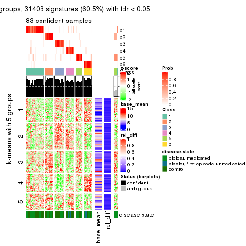
Signature heatmaps where rows are not scaled:
get_signatures(res, k = 2, scale_rows = FALSE)
get_signatures(res, k = 3, scale_rows = FALSE)
get_signatures(res, k = 4, scale_rows = FALSE)
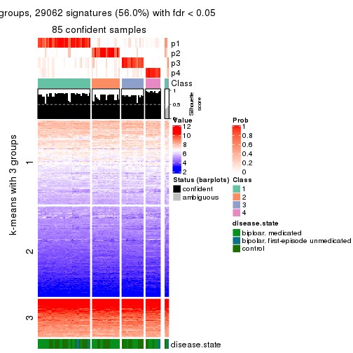
get_signatures(res, k = 5, scale_rows = FALSE)
get_signatures(res, k = 6, scale_rows = FALSE)
Compare the overlap of signatures from different k:
compare_signatures(res)
get_signature() returns a data frame invisibly. TO get the list of signatures, the function
call should be assigned to a variable explicitly. In following code, if plot argument is set
to FALSE, no heatmap is plotted while only the differential analysis is performed.
# code only for demonstration
tb = get_signature(res, k = ..., plot = FALSE)
An example of the output of tb is:
#> which_row fdr mean_1 mean_2 scaled_mean_1 scaled_mean_2 km
#> 1 38 0.042760348 8.373488 9.131774 -0.5533452 0.5164555 1
#> 2 40 0.018707592 7.106213 8.469186 -0.6173731 0.5762149 1
#> 3 55 0.019134737 10.221463 11.207825 -0.6159697 0.5749050 1
#> 4 59 0.006059896 5.921854 7.869574 -0.6899429 0.6439467 1
#> 5 60 0.018055526 8.928898 10.211722 -0.6204761 0.5791110 1
#> 6 98 0.009384629 15.714769 14.887706 0.6635654 -0.6193277 2
...
The columns in tb are:
which_row: row indices corresponding to the input matrix.fdr: FDR for the differential test. mean_x: The mean value in group x.scaled_mean_x: The mean value in group x after rows are scaled.km: Row groups if k-means clustering is applied to rows.UMAP plot which shows how samples are separated.
dimension_reduction(res, k = 2, method = "UMAP")
dimension_reduction(res, k = 3, method = "UMAP")
dimension_reduction(res, k = 4, method = "UMAP")
dimension_reduction(res, k = 5, method = "UMAP")
dimension_reduction(res, k = 6, method = "UMAP")
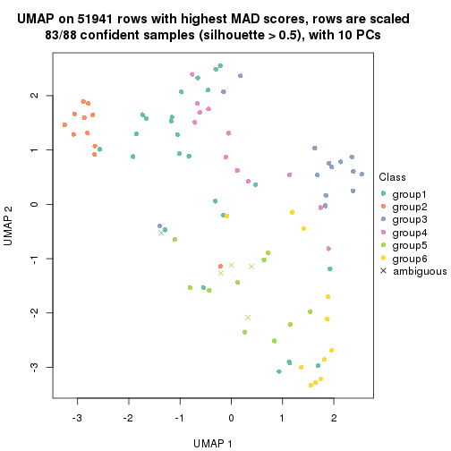
Following heatmap shows how subgroups are split when increasing k:
collect_classes(res)
Test correlation between subgroups and known annotations. If the known annotation is numeric, one-way ANOVA test is applied, and if the known annotation is discrete, chi-squared contingency table test is applied.
test_to_known_factors(res)
#> n disease.state(p) k
#> MAD:pam 87 3.69e-02 2
#> MAD:pam 82 5.38e-05 3
#> MAD:pam 85 1.60e-01 4
#> MAD:pam 77 9.39e-03 5
#> MAD:pam 83 3.22e-03 6
If matrix rows can be associated to genes, consider to use GO_Enrichment(res,
...) to perform function enrichment for the signature genes.
The object with results only for a single top-value method and a single partition method can be extracted as:
res = res_list["MAD", "mclust"]
# you can also extract it by
# res = res_list["MAD:mclust"]
A summary of res and all the functions that can be applied to it:
res
#> A 'ConsensusPartition' object with k = 2, 3, 4, 5, 6.
#> On a matrix with 51941 rows and 88 columns.
#> Top rows (1000, 2000, 3000, 4000, 5000) are extracted by 'MAD' method.
#> Subgroups are detected by 'mclust' method.
#> Performed in total 1250 partitions by row resampling.
#> Best k for subgroups seems to be 2.
#>
#> Following methods can be applied to this 'ConsensusPartition' object:
#> [1] "cola_report" "collect_classes" "collect_plots"
#> [4] "collect_stats" "colnames" "compare_signatures"
#> [7] "consensus_heatmap" "dimension_reduction" "functional_enrichment"
#> [10] "get_anno_col" "get_anno" "get_classes"
#> [13] "get_consensus" "get_matrix" "get_membership"
#> [16] "get_param" "get_signatures" "get_stats"
#> [19] "is_best_k" "is_stable_k" "membership_heatmap"
#> [22] "ncol" "nrow" "plot_ecdf"
#> [25] "rownames" "select_partition_number" "show"
#> [28] "suggest_best_k" "test_to_known_factors"
collect_plots() function collects all the plots made from res for all k (number of partitions)
into one single page to provide an easy and fast comparison between different k.
collect_plots(res)
The plots are:
k and the heatmap of
predicted classes for each k.k.k.k.All the plots in panels can be made by individual functions and they are plotted later in this section.
select_partition_number() produces several plots showing different
statistics for choosing “optimized” k. There are following statistics:
k;k, the area increased is defined as \(A_k - A_{k-1}\).The detailed explanations of these statistics can be found in the cola vignette.
Generally speaking, lower PAC score, higher mean silhouette score or higher
concordance corresponds to better partition. Rand index and Jaccard index
measure how similar the current partition is compared to partition with k-1.
If they are too similar, we won't accept k is better than k-1.
select_partition_number(res)
The numeric values for all these statistics can be obtained by get_stats().
get_stats(res)
#> k 1-PAC mean_silhouette concordance area_increased Rand Jaccard
#> 2 2 0.323 0.721 0.801 0.4375 0.495 0.495
#> 3 3 0.208 0.421 0.675 0.3482 0.513 0.316
#> 4 4 0.397 0.630 0.682 0.1608 0.778 0.533
#> 5 5 0.435 0.515 0.702 0.0399 0.859 0.592
#> 6 6 0.566 0.591 0.740 0.0777 0.868 0.559
suggest_best_k() suggests the best \(k\) based on these statistics. The rules are as follows:
NA.suggest_best_k(res)
#> [1] 2
Following shows the table of the partitions (You need to click the show/hide
code output link to see it). The membership matrix (columns with name p*)
is inferred by
clue::cl_consensus()
function with the SE method. Basically the value in the membership matrix
represents the probability to belong to a certain group. The finall class
label for an item is determined with the group with highest probability it
belongs to.
In get_classes() function, the entropy is calculated from the membership
matrix and the silhouette score is calculated from the consensus matrix.
cbind(get_classes(res, k = 2), get_membership(res, k = 2))
#> class entropy silhouette p1 p2
#> GSM1130404 1 0.8861 0.693 0.696 0.304
#> GSM1130405 1 0.9608 0.530 0.616 0.384
#> GSM1130408 2 0.0000 0.797 0.000 1.000
#> GSM1130409 1 0.2778 0.629 0.952 0.048
#> GSM1130410 1 0.2778 0.629 0.952 0.048
#> GSM1130415 2 0.9608 0.560 0.384 0.616
#> GSM1130416 2 0.9209 0.582 0.336 0.664
#> GSM1130417 2 0.9608 0.560 0.384 0.616
#> GSM1130418 2 0.9608 0.560 0.384 0.616
#> GSM1130421 2 0.1414 0.791 0.020 0.980
#> GSM1130422 2 0.2236 0.782 0.036 0.964
#> GSM1130423 1 0.9491 0.827 0.632 0.368
#> GSM1130424 2 0.9954 -0.505 0.460 0.540
#> GSM1130425 1 0.7453 0.779 0.788 0.212
#> GSM1130426 2 0.6973 0.680 0.188 0.812
#> GSM1130427 2 0.7453 0.670 0.212 0.788
#> GSM1130428 2 0.4022 0.746 0.080 0.920
#> GSM1130429 2 0.8713 0.194 0.292 0.708
#> GSM1130430 1 0.7453 0.779 0.788 0.212
#> GSM1130431 1 0.7602 0.783 0.780 0.220
#> GSM1130432 2 0.6623 0.570 0.172 0.828
#> GSM1130433 1 0.9087 0.681 0.676 0.324
#> GSM1130434 1 0.7376 0.776 0.792 0.208
#> GSM1130435 1 0.2778 0.629 0.952 0.048
#> GSM1130436 1 0.2778 0.629 0.952 0.048
#> GSM1130437 1 0.2778 0.629 0.952 0.048
#> GSM1130438 1 0.9635 0.816 0.612 0.388
#> GSM1130439 1 0.9635 0.816 0.612 0.388
#> GSM1130440 1 0.9866 0.759 0.568 0.432
#> GSM1130441 2 0.0000 0.797 0.000 1.000
#> GSM1130442 2 0.0000 0.797 0.000 1.000
#> GSM1130443 1 0.9635 0.816 0.612 0.388
#> GSM1130444 1 0.9635 0.816 0.612 0.388
#> GSM1130445 1 0.9552 0.826 0.624 0.376
#> GSM1130476 2 0.3114 0.763 0.056 0.944
#> GSM1130483 1 0.7602 0.779 0.780 0.220
#> GSM1130484 1 0.7674 0.779 0.776 0.224
#> GSM1130487 1 0.9522 0.828 0.628 0.372
#> GSM1130488 1 0.9522 0.828 0.628 0.372
#> GSM1130419 1 0.9522 0.828 0.628 0.372
#> GSM1130420 1 0.9522 0.828 0.628 0.372
#> GSM1130464 1 0.9552 0.826 0.624 0.376
#> GSM1130465 1 0.9522 0.828 0.628 0.372
#> GSM1130468 1 0.9522 0.828 0.628 0.372
#> GSM1130469 1 0.9522 0.828 0.628 0.372
#> GSM1130402 1 0.7453 0.779 0.788 0.212
#> GSM1130403 1 0.7453 0.779 0.788 0.212
#> GSM1130406 1 0.8144 0.790 0.748 0.252
#> GSM1130407 1 0.7950 0.785 0.760 0.240
#> GSM1130411 2 0.9608 0.560 0.384 0.616
#> GSM1130412 2 0.9608 0.560 0.384 0.616
#> GSM1130413 2 0.9608 0.560 0.384 0.616
#> GSM1130414 2 0.9248 0.581 0.340 0.660
#> GSM1130446 2 0.0000 0.797 0.000 1.000
#> GSM1130447 1 0.9522 0.828 0.628 0.372
#> GSM1130448 2 0.5629 0.653 0.132 0.868
#> GSM1130449 1 0.9635 0.816 0.612 0.388
#> GSM1130450 2 0.1184 0.793 0.016 0.984
#> GSM1130451 2 0.8327 0.306 0.264 0.736
#> GSM1130452 2 0.0000 0.797 0.000 1.000
#> GSM1130453 2 0.2778 0.771 0.048 0.952
#> GSM1130454 2 0.1414 0.791 0.020 0.980
#> GSM1130455 2 0.0000 0.797 0.000 1.000
#> GSM1130456 1 0.9522 0.828 0.628 0.372
#> GSM1130457 2 0.1184 0.794 0.016 0.984
#> GSM1130458 2 0.1184 0.794 0.016 0.984
#> GSM1130459 2 0.0000 0.797 0.000 1.000
#> GSM1130460 2 0.0000 0.797 0.000 1.000
#> GSM1130461 2 0.0000 0.797 0.000 1.000
#> GSM1130462 2 0.1184 0.793 0.016 0.984
#> GSM1130463 2 0.2236 0.782 0.036 0.964
#> GSM1130466 1 0.9522 0.828 0.628 0.372
#> GSM1130467 2 0.0938 0.795 0.012 0.988
#> GSM1130470 1 0.9522 0.828 0.628 0.372
#> GSM1130471 1 0.9491 0.827 0.632 0.368
#> GSM1130472 1 0.9491 0.827 0.632 0.368
#> GSM1130473 1 0.9522 0.828 0.628 0.372
#> GSM1130474 2 0.2423 0.778 0.040 0.960
#> GSM1130475 2 0.0000 0.797 0.000 1.000
#> GSM1130477 1 0.2778 0.629 0.952 0.048
#> GSM1130478 1 0.2948 0.633 0.948 0.052
#> GSM1130479 1 0.9522 0.828 0.628 0.372
#> GSM1130480 2 0.7453 0.482 0.212 0.788
#> GSM1130481 2 0.2603 0.782 0.044 0.956
#> GSM1130482 2 0.1633 0.793 0.024 0.976
#> GSM1130485 1 0.9522 0.828 0.628 0.372
#> GSM1130486 1 0.9522 0.828 0.628 0.372
#> GSM1130489 2 0.8327 0.608 0.264 0.736
cbind(get_classes(res, k = 3), get_membership(res, k = 3))
#> class entropy silhouette p1 p2 p3
#> GSM1130404 1 0.5260 0.61786 0.828 0.092 0.080
#> GSM1130405 1 0.5365 0.63837 0.744 0.004 0.252
#> GSM1130408 3 0.6535 0.33118 0.220 0.052 0.728
#> GSM1130409 1 0.1711 0.64844 0.960 0.008 0.032
#> GSM1130410 1 0.1636 0.64120 0.964 0.016 0.020
#> GSM1130415 1 0.8334 0.61939 0.616 0.136 0.248
#> GSM1130416 1 0.7056 0.53570 0.572 0.024 0.404
#> GSM1130417 1 0.8334 0.61939 0.616 0.136 0.248
#> GSM1130418 1 0.8334 0.61939 0.616 0.136 0.248
#> GSM1130421 3 0.6443 0.28758 0.240 0.040 0.720
#> GSM1130422 3 0.6723 0.31510 0.248 0.048 0.704
#> GSM1130423 2 0.8937 0.89741 0.152 0.540 0.308
#> GSM1130424 2 0.8796 0.89738 0.120 0.508 0.372
#> GSM1130425 1 0.5551 0.45038 0.760 0.224 0.016
#> GSM1130426 1 0.7184 0.38964 0.504 0.024 0.472
#> GSM1130427 1 0.6161 0.62970 0.708 0.020 0.272
#> GSM1130428 2 0.8844 0.86458 0.120 0.488 0.392
#> GSM1130429 2 0.8875 0.89772 0.128 0.508 0.364
#> GSM1130430 1 0.3039 0.64139 0.920 0.044 0.036
#> GSM1130431 1 0.8410 0.27380 0.620 0.216 0.164
#> GSM1130432 3 0.7718 0.24731 0.320 0.068 0.612
#> GSM1130433 1 0.7367 0.44416 0.648 0.060 0.292
#> GSM1130434 1 0.1182 0.63274 0.976 0.012 0.012
#> GSM1130435 1 0.1877 0.64146 0.956 0.012 0.032
#> GSM1130436 1 0.2550 0.64615 0.932 0.012 0.056
#> GSM1130437 1 0.2384 0.64644 0.936 0.008 0.056
#> GSM1130438 3 0.9738 0.40992 0.264 0.288 0.448
#> GSM1130439 3 0.9721 0.41006 0.264 0.284 0.452
#> GSM1130440 3 0.9663 0.41684 0.256 0.280 0.464
#> GSM1130441 3 0.0000 0.51456 0.000 0.000 1.000
#> GSM1130442 3 0.6253 0.52245 0.036 0.232 0.732
#> GSM1130443 3 0.8792 0.32910 0.112 0.432 0.456
#> GSM1130444 3 0.9876 0.39519 0.300 0.288 0.412
#> GSM1130445 3 0.9910 0.39028 0.308 0.292 0.400
#> GSM1130476 3 0.7157 0.53036 0.056 0.276 0.668
#> GSM1130483 1 0.7419 0.47028 0.680 0.088 0.232
#> GSM1130484 1 0.7712 0.42865 0.652 0.092 0.256
#> GSM1130487 3 0.9929 0.38379 0.312 0.296 0.392
#> GSM1130488 1 0.7464 0.01571 0.560 0.040 0.400
#> GSM1130419 3 0.8322 -0.06404 0.124 0.268 0.608
#> GSM1130420 3 0.8322 -0.06404 0.124 0.268 0.608
#> GSM1130464 3 0.8559 -0.00528 0.124 0.304 0.572
#> GSM1130465 3 0.8386 0.04162 0.172 0.204 0.624
#> GSM1130468 3 0.8343 -0.04699 0.132 0.256 0.612
#> GSM1130469 3 0.8399 -0.05931 0.136 0.256 0.608
#> GSM1130402 1 0.2796 0.59065 0.908 0.092 0.000
#> GSM1130403 1 0.6678 0.49083 0.728 0.208 0.064
#> GSM1130406 1 0.8403 -0.00434 0.512 0.088 0.400
#> GSM1130407 1 0.8162 0.19606 0.568 0.084 0.348
#> GSM1130411 1 0.8334 0.61939 0.616 0.136 0.248
#> GSM1130412 1 0.8334 0.61939 0.616 0.136 0.248
#> GSM1130413 1 0.8278 0.62116 0.620 0.132 0.248
#> GSM1130414 1 0.8113 0.59749 0.596 0.092 0.312
#> GSM1130446 3 0.0424 0.51162 0.000 0.008 0.992
#> GSM1130447 2 0.8913 0.88612 0.132 0.508 0.360
#> GSM1130448 3 0.7246 0.52919 0.060 0.276 0.664
#> GSM1130449 3 0.6895 0.32481 0.228 0.064 0.708
#> GSM1130450 3 0.0000 0.51456 0.000 0.000 1.000
#> GSM1130451 3 0.2998 0.49738 0.016 0.068 0.916
#> GSM1130452 3 0.5178 0.54052 0.000 0.256 0.744
#> GSM1130453 3 0.6665 0.53457 0.036 0.276 0.688
#> GSM1130454 3 0.5588 0.53511 0.004 0.276 0.720
#> GSM1130455 3 0.4931 0.54562 0.000 0.232 0.768
#> GSM1130456 3 0.8743 -0.17154 0.156 0.268 0.576
#> GSM1130457 3 0.0661 0.50931 0.008 0.004 0.988
#> GSM1130458 3 0.4075 0.40077 0.048 0.072 0.880
#> GSM1130459 3 0.0000 0.51456 0.000 0.000 1.000
#> GSM1130460 3 0.0000 0.51456 0.000 0.000 1.000
#> GSM1130461 3 0.5363 0.53504 0.000 0.276 0.724
#> GSM1130462 3 0.0592 0.51083 0.000 0.012 0.988
#> GSM1130463 3 0.2590 0.46608 0.004 0.072 0.924
#> GSM1130466 3 0.9280 -0.63258 0.160 0.388 0.452
#> GSM1130467 3 0.0475 0.51161 0.004 0.004 0.992
#> GSM1130470 3 0.8437 -0.10893 0.128 0.276 0.596
#> GSM1130471 2 0.8964 0.89339 0.160 0.544 0.296
#> GSM1130472 2 0.8964 0.89339 0.160 0.544 0.296
#> GSM1130473 3 0.9460 -0.36219 0.260 0.240 0.500
#> GSM1130474 3 0.4749 0.55120 0.012 0.172 0.816
#> GSM1130475 3 0.5254 0.53566 0.000 0.264 0.736
#> GSM1130477 1 0.2550 0.64615 0.932 0.012 0.056
#> GSM1130478 1 0.3682 0.65215 0.876 0.008 0.116
#> GSM1130479 3 0.9766 -0.49477 0.348 0.236 0.416
#> GSM1130480 3 0.7831 0.53007 0.088 0.280 0.632
#> GSM1130481 3 0.3337 0.45697 0.060 0.032 0.908
#> GSM1130482 3 0.4110 0.45502 0.152 0.004 0.844
#> GSM1130485 3 0.8452 -0.12647 0.140 0.256 0.604
#> GSM1130486 3 0.9409 -0.35051 0.256 0.236 0.508
#> GSM1130489 1 0.7181 0.45666 0.564 0.028 0.408
cbind(get_classes(res, k = 4), get_membership(res, k = 4))
#> class entropy silhouette p1 p2 p3 p4
#> GSM1130404 1 0.3707 0.6589 0.840 0.028 0.000 0.132
#> GSM1130405 1 0.4070 0.6470 0.824 0.044 0.000 0.132
#> GSM1130408 2 0.1256 0.7017 0.028 0.964 0.000 0.008
#> GSM1130409 1 0.3647 0.6718 0.832 0.016 0.000 0.152
#> GSM1130410 1 0.3355 0.6601 0.836 0.004 0.000 0.160
#> GSM1130415 3 0.5959 0.7631 0.388 0.044 0.568 0.000
#> GSM1130416 1 0.8029 -0.3234 0.376 0.280 0.340 0.004
#> GSM1130417 3 0.5959 0.7631 0.388 0.044 0.568 0.000
#> GSM1130418 3 0.5959 0.7631 0.388 0.044 0.568 0.000
#> GSM1130421 2 0.1256 0.7017 0.028 0.964 0.000 0.008
#> GSM1130422 2 0.2843 0.6708 0.088 0.892 0.000 0.020
#> GSM1130423 4 0.2101 0.7644 0.060 0.012 0.000 0.928
#> GSM1130424 4 0.3424 0.7818 0.052 0.068 0.004 0.876
#> GSM1130425 1 0.4472 0.6698 0.760 0.020 0.000 0.220
#> GSM1130426 1 0.7068 0.2487 0.492 0.380 0.000 0.128
#> GSM1130427 1 0.4552 0.6250 0.800 0.072 0.000 0.128
#> GSM1130428 4 0.4023 0.7532 0.052 0.104 0.004 0.840
#> GSM1130429 4 0.3272 0.7780 0.052 0.060 0.004 0.884
#> GSM1130430 1 0.3401 0.6458 0.840 0.008 0.000 0.152
#> GSM1130431 1 0.5108 0.5823 0.672 0.020 0.000 0.308
#> GSM1130432 2 0.4041 0.6451 0.084 0.852 0.044 0.020
#> GSM1130433 1 0.6805 0.4674 0.588 0.328 0.048 0.036
#> GSM1130434 1 0.3743 0.6739 0.824 0.016 0.000 0.160
#> GSM1130435 1 0.3708 0.6695 0.832 0.020 0.000 0.148
#> GSM1130436 1 0.4122 0.6439 0.840 0.056 0.008 0.096
#> GSM1130437 1 0.4122 0.6439 0.840 0.056 0.008 0.096
#> GSM1130438 2 0.4326 0.6428 0.036 0.840 0.088 0.036
#> GSM1130439 2 0.4126 0.6488 0.024 0.848 0.088 0.040
#> GSM1130440 2 0.3408 0.6647 0.024 0.876 0.088 0.012
#> GSM1130441 2 0.4655 0.7521 0.000 0.684 0.312 0.004
#> GSM1130442 2 0.0592 0.7157 0.000 0.984 0.016 0.000
#> GSM1130443 3 0.8603 -0.4819 0.028 0.304 0.360 0.308
#> GSM1130444 2 0.8799 0.2464 0.040 0.352 0.316 0.292
#> GSM1130445 2 0.8697 0.1362 0.052 0.432 0.208 0.308
#> GSM1130476 2 0.2053 0.7108 0.000 0.924 0.072 0.004
#> GSM1130483 1 0.6540 0.5049 0.652 0.256 0.060 0.032
#> GSM1130484 1 0.6511 0.4842 0.636 0.280 0.060 0.024
#> GSM1130487 4 0.6953 0.4636 0.076 0.340 0.020 0.564
#> GSM1130488 4 0.7421 0.0564 0.372 0.172 0.000 0.456
#> GSM1130419 4 0.4581 0.7890 0.048 0.140 0.008 0.804
#> GSM1130420 4 0.4581 0.7890 0.048 0.140 0.008 0.804
#> GSM1130464 4 0.5162 0.7401 0.048 0.192 0.008 0.752
#> GSM1130465 4 0.4544 0.7719 0.048 0.164 0.000 0.788
#> GSM1130468 4 0.4711 0.7879 0.064 0.152 0.000 0.784
#> GSM1130469 4 0.3913 0.7970 0.028 0.148 0.000 0.824
#> GSM1130402 1 0.3852 0.6571 0.800 0.008 0.000 0.192
#> GSM1130403 1 0.3810 0.6274 0.804 0.008 0.000 0.188
#> GSM1130406 1 0.6718 0.4451 0.596 0.320 0.060 0.024
#> GSM1130407 1 0.6546 0.4671 0.616 0.304 0.060 0.020
#> GSM1130411 3 0.5959 0.7631 0.388 0.044 0.568 0.000
#> GSM1130412 3 0.5959 0.7631 0.388 0.044 0.568 0.000
#> GSM1130413 3 0.6272 0.7525 0.388 0.052 0.556 0.004
#> GSM1130414 3 0.6853 0.6706 0.424 0.056 0.500 0.020
#> GSM1130446 2 0.5130 0.7498 0.000 0.668 0.312 0.020
#> GSM1130447 4 0.2675 0.7925 0.048 0.044 0.000 0.908
#> GSM1130448 2 0.2586 0.7173 0.004 0.900 0.092 0.004
#> GSM1130449 2 0.8809 0.3054 0.044 0.380 0.272 0.304
#> GSM1130450 2 0.5130 0.7498 0.000 0.668 0.312 0.020
#> GSM1130451 2 0.5322 0.7501 0.000 0.660 0.312 0.028
#> GSM1130452 2 0.4655 0.7521 0.000 0.684 0.312 0.004
#> GSM1130453 2 0.4509 0.7505 0.000 0.708 0.288 0.004
#> GSM1130454 2 0.2401 0.7272 0.000 0.904 0.092 0.004
#> GSM1130455 2 0.4655 0.7521 0.000 0.684 0.312 0.004
#> GSM1130456 4 0.3674 0.8074 0.044 0.104 0.000 0.852
#> GSM1130457 2 0.5649 0.7444 0.000 0.664 0.284 0.052
#> GSM1130458 2 0.8455 0.3846 0.052 0.468 0.168 0.312
#> GSM1130459 2 0.4891 0.7528 0.000 0.680 0.308 0.012
#> GSM1130460 2 0.5130 0.7498 0.000 0.668 0.312 0.020
#> GSM1130461 2 0.0469 0.7101 0.000 0.988 0.012 0.000
#> GSM1130462 2 0.5130 0.7498 0.000 0.668 0.312 0.020
#> GSM1130463 2 0.5951 0.7422 0.000 0.636 0.300 0.064
#> GSM1130466 4 0.1452 0.7976 0.008 0.036 0.000 0.956
#> GSM1130467 2 0.5417 0.7499 0.000 0.676 0.284 0.040
#> GSM1130470 4 0.3390 0.8041 0.016 0.132 0.000 0.852
#> GSM1130471 4 0.0672 0.7770 0.008 0.008 0.000 0.984
#> GSM1130472 4 0.0336 0.7733 0.008 0.000 0.000 0.992
#> GSM1130473 4 0.4423 0.6986 0.168 0.040 0.000 0.792
#> GSM1130474 2 0.5026 0.7527 0.000 0.672 0.312 0.016
#> GSM1130475 2 0.4454 0.7526 0.000 0.692 0.308 0.000
#> GSM1130477 1 0.4122 0.6439 0.840 0.056 0.008 0.096
#> GSM1130478 1 0.4347 0.6502 0.828 0.068 0.008 0.096
#> GSM1130479 4 0.5599 0.3374 0.352 0.032 0.000 0.616
#> GSM1130480 2 0.2660 0.6882 0.012 0.916 0.048 0.024
#> GSM1130481 2 0.7629 0.2770 0.052 0.500 0.072 0.376
#> GSM1130482 2 0.7556 0.3258 0.288 0.568 0.044 0.100
#> GSM1130485 4 0.5292 0.7774 0.056 0.140 0.028 0.776
#> GSM1130486 4 0.3156 0.7950 0.068 0.048 0.000 0.884
#> GSM1130489 1 0.6429 0.5122 0.644 0.144 0.000 0.212
cbind(get_classes(res, k = 5), get_membership(res, k = 5))
#> class entropy silhouette p1 p2 p3 p4 p5
#> GSM1130404 1 0.2843 0.7383 0.848 0.000 0.008 0.000 0.144
#> GSM1130405 1 0.3047 0.7281 0.832 0.004 0.004 0.000 0.160
#> GSM1130408 3 0.2677 0.5036 0.000 0.112 0.872 0.016 0.000
#> GSM1130409 1 0.3301 0.7477 0.856 0.000 0.008 0.048 0.088
#> GSM1130410 1 0.2464 0.7472 0.892 0.000 0.004 0.012 0.092
#> GSM1130415 2 0.0324 0.9374 0.004 0.992 0.004 0.000 0.000
#> GSM1130416 2 0.4480 0.4536 0.004 0.732 0.220 0.044 0.000
#> GSM1130417 2 0.0324 0.9374 0.004 0.992 0.004 0.000 0.000
#> GSM1130418 2 0.0324 0.9374 0.004 0.992 0.004 0.000 0.000
#> GSM1130421 3 0.2625 0.5054 0.000 0.108 0.876 0.016 0.000
#> GSM1130422 3 0.3274 0.5249 0.004 0.108 0.856 0.012 0.020
#> GSM1130423 5 0.1197 0.5911 0.048 0.000 0.000 0.000 0.952
#> GSM1130424 5 0.0865 0.6131 0.000 0.000 0.004 0.024 0.972
#> GSM1130425 1 0.3151 0.7429 0.836 0.000 0.000 0.020 0.144
#> GSM1130426 1 0.7989 0.4396 0.488 0.108 0.248 0.020 0.136
#> GSM1130427 1 0.4231 0.7005 0.784 0.060 0.008 0.000 0.148
#> GSM1130428 5 0.1106 0.6136 0.000 0.000 0.012 0.024 0.964
#> GSM1130429 5 0.0992 0.6137 0.000 0.000 0.008 0.024 0.968
#> GSM1130430 1 0.2674 0.7392 0.856 0.000 0.004 0.000 0.140
#> GSM1130431 1 0.3909 0.6970 0.760 0.000 0.024 0.000 0.216
#> GSM1130432 3 0.4101 0.5471 0.132 0.012 0.808 0.008 0.040
#> GSM1130433 1 0.6303 0.4444 0.560 0.000 0.324 0.076 0.040
#> GSM1130434 1 0.2960 0.7501 0.876 0.000 0.008 0.036 0.080
#> GSM1130435 1 0.3810 0.7408 0.828 0.000 0.012 0.084 0.076
#> GSM1130436 1 0.5074 0.6860 0.724 0.004 0.032 0.200 0.040
#> GSM1130437 1 0.5074 0.6860 0.724 0.004 0.032 0.200 0.040
#> GSM1130438 3 0.2124 0.5577 0.004 0.000 0.900 0.096 0.000
#> GSM1130439 3 0.2353 0.5864 0.004 0.000 0.908 0.060 0.028
#> GSM1130440 3 0.0880 0.5738 0.000 0.000 0.968 0.032 0.000
#> GSM1130441 4 0.5928 0.9862 0.000 0.108 0.392 0.500 0.000
#> GSM1130442 3 0.2625 0.5054 0.000 0.108 0.876 0.016 0.000
#> GSM1130443 3 0.4462 0.5576 0.000 0.000 0.740 0.196 0.064
#> GSM1130444 3 0.4497 0.5541 0.000 0.000 0.732 0.208 0.060
#> GSM1130445 3 0.4881 0.5404 0.004 0.000 0.696 0.240 0.060
#> GSM1130476 3 0.0510 0.5721 0.000 0.000 0.984 0.016 0.000
#> GSM1130483 1 0.5606 0.4676 0.600 0.000 0.296 0.104 0.000
#> GSM1130484 1 0.5568 0.4565 0.596 0.000 0.308 0.096 0.000
#> GSM1130487 3 0.5135 0.5189 0.004 0.000 0.660 0.272 0.064
#> GSM1130488 3 0.7832 -0.1122 0.072 0.000 0.384 0.236 0.308
#> GSM1130419 5 0.6893 0.1603 0.000 0.004 0.364 0.264 0.368
#> GSM1130420 5 0.6888 0.2047 0.000 0.004 0.348 0.264 0.384
#> GSM1130464 3 0.5449 0.4932 0.000 0.000 0.636 0.256 0.108
#> GSM1130465 3 0.6691 -0.0305 0.000 0.000 0.428 0.260 0.312
#> GSM1130468 3 0.6588 -0.1854 0.000 0.000 0.400 0.208 0.392
#> GSM1130469 5 0.6599 0.2675 0.000 0.000 0.344 0.220 0.436
#> GSM1130402 1 0.2424 0.7416 0.868 0.000 0.000 0.000 0.132
#> GSM1130403 1 0.2929 0.7182 0.820 0.000 0.000 0.000 0.180
#> GSM1130406 3 0.5840 0.1117 0.416 0.000 0.488 0.096 0.000
#> GSM1130407 1 0.5632 0.2469 0.528 0.000 0.392 0.080 0.000
#> GSM1130411 2 0.0324 0.9374 0.004 0.992 0.004 0.000 0.000
#> GSM1130412 2 0.0324 0.9374 0.004 0.992 0.004 0.000 0.000
#> GSM1130413 2 0.0324 0.9374 0.004 0.992 0.004 0.000 0.000
#> GSM1130414 2 0.1729 0.8987 0.032 0.944 0.008 0.004 0.012
#> GSM1130446 3 0.5342 0.3097 0.000 0.000 0.672 0.172 0.156
#> GSM1130447 5 0.0807 0.6198 0.000 0.000 0.012 0.012 0.976
#> GSM1130448 3 0.0510 0.5721 0.000 0.000 0.984 0.016 0.000
#> GSM1130449 3 0.4143 0.5617 0.108 0.000 0.808 0.020 0.064
#> GSM1130450 3 0.6547 -0.7099 0.000 0.108 0.452 0.416 0.024
#> GSM1130451 3 0.3764 0.5285 0.000 0.000 0.800 0.044 0.156
#> GSM1130452 3 0.5992 -0.7954 0.000 0.112 0.472 0.416 0.000
#> GSM1130453 3 0.0162 0.5686 0.000 0.000 0.996 0.004 0.000
#> GSM1130454 3 0.0162 0.5686 0.000 0.000 0.996 0.004 0.000
#> GSM1130455 3 0.4406 0.3120 0.000 0.108 0.764 0.128 0.000
#> GSM1130456 5 0.5067 0.4876 0.000 0.000 0.288 0.064 0.648
#> GSM1130457 4 0.6104 0.9869 0.000 0.112 0.388 0.496 0.004
#> GSM1130458 5 0.6199 0.1268 0.000 0.000 0.392 0.140 0.468
#> GSM1130459 4 0.5953 0.9900 0.000 0.112 0.384 0.504 0.000
#> GSM1130460 4 0.5953 0.9900 0.000 0.112 0.384 0.504 0.000
#> GSM1130461 3 0.0671 0.5599 0.000 0.004 0.980 0.016 0.000
#> GSM1130462 3 0.6205 -0.6961 0.000 0.108 0.472 0.412 0.008
#> GSM1130463 3 0.5541 0.2914 0.000 0.000 0.648 0.164 0.188
#> GSM1130466 5 0.3578 0.6301 0.000 0.000 0.132 0.048 0.820
#> GSM1130467 4 0.5959 0.9883 0.000 0.112 0.388 0.500 0.000
#> GSM1130470 5 0.5656 0.4370 0.000 0.000 0.308 0.104 0.588
#> GSM1130471 5 0.0162 0.6182 0.004 0.000 0.000 0.000 0.996
#> GSM1130472 5 0.0162 0.6193 0.000 0.000 0.000 0.004 0.996
#> GSM1130473 5 0.5816 0.4483 0.280 0.000 0.132 0.000 0.588
#> GSM1130474 3 0.4204 0.5079 0.000 0.096 0.812 0.040 0.052
#> GSM1130475 3 0.3620 0.4199 0.000 0.108 0.824 0.068 0.000
#> GSM1130477 1 0.5074 0.6860 0.724 0.004 0.032 0.200 0.040
#> GSM1130478 1 0.5150 0.6861 0.720 0.004 0.036 0.200 0.040
#> GSM1130479 5 0.5308 0.1757 0.416 0.000 0.052 0.000 0.532
#> GSM1130480 3 0.3207 0.5742 0.084 0.000 0.864 0.012 0.040
#> GSM1130481 3 0.5136 0.0519 0.000 0.008 0.528 0.024 0.440
#> GSM1130482 3 0.6623 0.4259 0.072 0.112 0.672 0.040 0.104
#> GSM1130485 5 0.4359 0.2985 0.000 0.000 0.412 0.004 0.584
#> GSM1130486 5 0.8061 0.4509 0.164 0.000 0.216 0.180 0.440
#> GSM1130489 1 0.6834 0.4326 0.572 0.076 0.108 0.000 0.244
cbind(get_classes(res, k = 6), get_membership(res, k = 6))
#> class entropy silhouette p1 p2 p3 p4 p5 p6
#> GSM1130404 1 0.1261 0.7432 0.956 0.008 0.000 0.004 0.004 0.028
#> GSM1130405 1 0.1680 0.7429 0.940 0.020 0.000 0.004 0.012 0.024
#> GSM1130408 3 0.3587 0.5785 0.000 0.068 0.792 0.000 0.140 0.000
#> GSM1130409 1 0.3136 0.7323 0.856 0.008 0.000 0.060 0.068 0.008
#> GSM1130410 1 0.2263 0.7427 0.912 0.008 0.000 0.032 0.036 0.012
#> GSM1130415 2 0.1010 0.9042 0.036 0.960 0.000 0.000 0.004 0.000
#> GSM1130416 2 0.4662 0.4533 0.036 0.684 0.248 0.000 0.032 0.000
#> GSM1130417 2 0.1010 0.9042 0.036 0.960 0.000 0.000 0.004 0.000
#> GSM1130418 2 0.0935 0.9008 0.032 0.964 0.000 0.000 0.004 0.000
#> GSM1130421 3 0.5655 0.4930 0.132 0.080 0.656 0.000 0.132 0.000
#> GSM1130422 3 0.5716 0.3731 0.288 0.012 0.572 0.000 0.120 0.008
#> GSM1130423 6 0.1753 0.7401 0.084 0.000 0.000 0.004 0.000 0.912
#> GSM1130424 6 0.0632 0.7918 0.024 0.000 0.000 0.000 0.000 0.976
#> GSM1130425 1 0.1858 0.7456 0.932 0.000 0.016 0.024 0.004 0.024
#> GSM1130426 1 0.4550 0.6094 0.752 0.024 0.168 0.004 0.024 0.028
#> GSM1130427 1 0.1413 0.7412 0.948 0.008 0.000 0.004 0.004 0.036
#> GSM1130428 6 0.0891 0.7901 0.024 0.000 0.000 0.000 0.008 0.968
#> GSM1130429 6 0.0891 0.7901 0.024 0.000 0.000 0.000 0.008 0.968
#> GSM1130430 1 0.1413 0.7412 0.948 0.008 0.000 0.004 0.004 0.036
#> GSM1130431 1 0.1686 0.7395 0.932 0.008 0.000 0.004 0.004 0.052
#> GSM1130432 3 0.4622 0.3594 0.356 0.008 0.608 0.000 0.016 0.012
#> GSM1130433 1 0.5822 0.1820 0.500 0.032 0.400 0.052 0.016 0.000
#> GSM1130434 1 0.2848 0.7307 0.872 0.000 0.008 0.056 0.060 0.004
#> GSM1130435 1 0.3540 0.7190 0.828 0.000 0.004 0.064 0.088 0.016
#> GSM1130436 1 0.6322 0.6150 0.608 0.032 0.024 0.080 0.232 0.024
#> GSM1130437 1 0.6322 0.6150 0.608 0.032 0.024 0.080 0.232 0.024
#> GSM1130438 3 0.1972 0.6142 0.024 0.000 0.916 0.056 0.004 0.000
#> GSM1130439 3 0.1152 0.6250 0.004 0.000 0.952 0.044 0.000 0.000
#> GSM1130440 3 0.0632 0.6350 0.000 0.000 0.976 0.024 0.000 0.000
#> GSM1130441 5 0.3725 0.7916 0.000 0.008 0.316 0.000 0.676 0.000
#> GSM1130442 3 0.2743 0.5756 0.000 0.008 0.828 0.000 0.164 0.000
#> GSM1130443 3 0.3076 0.5661 0.000 0.000 0.760 0.240 0.000 0.000
#> GSM1130444 3 0.3189 0.5661 0.000 0.000 0.760 0.236 0.004 0.000
#> GSM1130445 3 0.3941 0.5635 0.024 0.000 0.724 0.244 0.008 0.000
#> GSM1130476 3 0.0547 0.6396 0.000 0.000 0.980 0.000 0.020 0.000
#> GSM1130483 1 0.5943 0.2298 0.516 0.036 0.368 0.068 0.012 0.000
#> GSM1130484 1 0.5950 0.2210 0.512 0.036 0.372 0.068 0.012 0.000
#> GSM1130487 3 0.4113 0.5184 0.016 0.000 0.668 0.308 0.008 0.000
#> GSM1130488 1 0.6317 -0.0546 0.364 0.000 0.340 0.288 0.008 0.000
#> GSM1130419 4 0.2724 0.6713 0.000 0.000 0.052 0.864 0.000 0.084
#> GSM1130420 4 0.2762 0.6673 0.000 0.000 0.048 0.860 0.000 0.092
#> GSM1130464 4 0.3360 0.6464 0.000 0.000 0.264 0.732 0.004 0.000
#> GSM1130465 4 0.3996 0.6672 0.004 0.000 0.248 0.720 0.004 0.024
#> GSM1130468 4 0.4945 0.6912 0.004 0.000 0.192 0.664 0.000 0.140
#> GSM1130469 4 0.4530 0.7199 0.004 0.000 0.136 0.716 0.000 0.144
#> GSM1130402 1 0.0632 0.7446 0.976 0.000 0.000 0.000 0.000 0.024
#> GSM1130403 1 0.1413 0.7412 0.948 0.008 0.000 0.004 0.004 0.036
#> GSM1130406 3 0.6122 0.0331 0.408 0.036 0.464 0.080 0.012 0.000
#> GSM1130407 1 0.6107 0.1580 0.480 0.036 0.392 0.080 0.012 0.000
#> GSM1130411 2 0.1010 0.9042 0.036 0.960 0.000 0.000 0.004 0.000
#> GSM1130412 2 0.1010 0.9042 0.036 0.960 0.000 0.000 0.004 0.000
#> GSM1130413 2 0.1010 0.9042 0.036 0.960 0.000 0.000 0.004 0.000
#> GSM1130414 2 0.3163 0.7508 0.172 0.808 0.008 0.000 0.012 0.000
#> GSM1130446 5 0.3911 0.8231 0.000 0.000 0.256 0.000 0.712 0.032
#> GSM1130447 6 0.0632 0.7918 0.024 0.000 0.000 0.000 0.000 0.976
#> GSM1130448 3 0.0458 0.6403 0.000 0.000 0.984 0.000 0.016 0.000
#> GSM1130449 3 0.4580 0.5405 0.200 0.008 0.728 0.004 0.020 0.040
#> GSM1130450 5 0.3151 0.8325 0.000 0.000 0.252 0.000 0.748 0.000
#> GSM1130451 3 0.3817 -0.1422 0.000 0.000 0.568 0.000 0.432 0.000
#> GSM1130452 5 0.4183 0.3707 0.000 0.012 0.480 0.000 0.508 0.000
#> GSM1130453 3 0.0547 0.6396 0.000 0.000 0.980 0.000 0.020 0.000
#> GSM1130454 3 0.0632 0.6396 0.000 0.000 0.976 0.000 0.024 0.000
#> GSM1130455 3 0.3737 0.0476 0.000 0.000 0.608 0.000 0.392 0.000
#> GSM1130456 4 0.5691 0.6240 0.024 0.000 0.148 0.596 0.000 0.232
#> GSM1130457 5 0.3518 0.8319 0.000 0.012 0.256 0.000 0.732 0.000
#> GSM1130458 5 0.5476 0.5777 0.020 0.000 0.136 0.000 0.620 0.224
#> GSM1130459 5 0.3784 0.7973 0.000 0.012 0.308 0.000 0.680 0.000
#> GSM1130460 5 0.3629 0.8258 0.000 0.012 0.276 0.000 0.712 0.000
#> GSM1130461 3 0.2234 0.6048 0.000 0.004 0.872 0.000 0.124 0.000
#> GSM1130462 5 0.3151 0.8325 0.000 0.000 0.252 0.000 0.748 0.000
#> GSM1130463 5 0.3398 0.8320 0.000 0.000 0.252 0.000 0.740 0.008
#> GSM1130466 6 0.4408 -0.1151 0.024 0.000 0.000 0.488 0.000 0.488
#> GSM1130467 5 0.3853 0.8042 0.000 0.016 0.304 0.000 0.680 0.000
#> GSM1130470 4 0.4523 0.6424 0.008 0.000 0.076 0.704 0.000 0.212
#> GSM1130471 6 0.1633 0.7800 0.024 0.000 0.000 0.044 0.000 0.932
#> GSM1130472 6 0.1633 0.7800 0.024 0.000 0.000 0.044 0.000 0.932
#> GSM1130473 1 0.2913 0.6501 0.812 0.000 0.000 0.004 0.004 0.180
#> GSM1130474 3 0.4072 -0.2691 0.000 0.000 0.544 0.000 0.448 0.008
#> GSM1130475 3 0.3221 0.4605 0.000 0.000 0.736 0.000 0.264 0.000
#> GSM1130477 1 0.6340 0.6146 0.608 0.036 0.024 0.076 0.232 0.024
#> GSM1130478 1 0.6290 0.6177 0.612 0.036 0.028 0.072 0.232 0.020
#> GSM1130479 1 0.2355 0.6901 0.876 0.000 0.000 0.008 0.004 0.112
#> GSM1130480 3 0.2191 0.6073 0.000 0.000 0.876 0.000 0.120 0.004
#> GSM1130481 5 0.6613 0.5840 0.056 0.004 0.248 0.000 0.508 0.184
#> GSM1130482 3 0.6769 0.1828 0.324 0.028 0.436 0.000 0.196 0.016
#> GSM1130485 6 0.7906 -0.2951 0.024 0.000 0.280 0.272 0.120 0.304
#> GSM1130486 4 0.6062 0.2837 0.400 0.000 0.024 0.456 0.004 0.116
#> GSM1130489 1 0.1772 0.7402 0.936 0.012 0.004 0.004 0.008 0.036
Heatmaps for the consensus matrix. It visualizes the probability of two samples to be in a same group.
consensus_heatmap(res, k = 2)
consensus_heatmap(res, k = 3)
consensus_heatmap(res, k = 4)
consensus_heatmap(res, k = 5)
consensus_heatmap(res, k = 6)
Heatmaps for the membership of samples in all partitions to see how consistent they are:
membership_heatmap(res, k = 2)
membership_heatmap(res, k = 3)
membership_heatmap(res, k = 4)
membership_heatmap(res, k = 5)
membership_heatmap(res, k = 6)
As soon as we have had the classes for columns, we can look for signatures which are significantly different between classes which can be candidate marks for certain classes. Following are the heatmaps for signatures.
Signature heatmaps where rows are scaled:
get_signatures(res, k = 2)
get_signatures(res, k = 3)
get_signatures(res, k = 4)
get_signatures(res, k = 5)
get_signatures(res, k = 6)
Signature heatmaps where rows are not scaled:
get_signatures(res, k = 2, scale_rows = FALSE)
get_signatures(res, k = 3, scale_rows = FALSE)
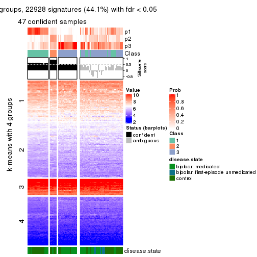
get_signatures(res, k = 4, scale_rows = FALSE)
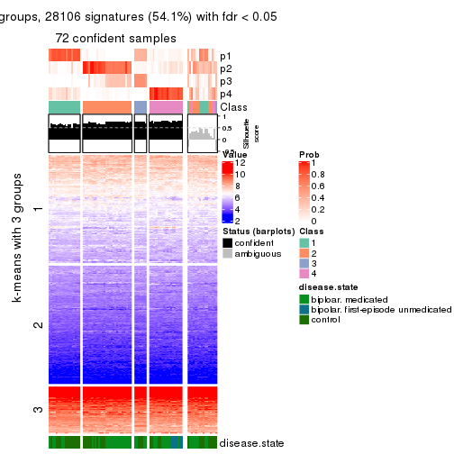
get_signatures(res, k = 5, scale_rows = FALSE)
get_signatures(res, k = 6, scale_rows = FALSE)
Compare the overlap of signatures from different k:
compare_signatures(res)
get_signature() returns a data frame invisibly. TO get the list of signatures, the function
call should be assigned to a variable explicitly. In following code, if plot argument is set
to FALSE, no heatmap is plotted while only the differential analysis is performed.
# code only for demonstration
tb = get_signature(res, k = ..., plot = FALSE)
An example of the output of tb is:
#> which_row fdr mean_1 mean_2 scaled_mean_1 scaled_mean_2 km
#> 1 38 0.042760348 8.373488 9.131774 -0.5533452 0.5164555 1
#> 2 40 0.018707592 7.106213 8.469186 -0.6173731 0.5762149 1
#> 3 55 0.019134737 10.221463 11.207825 -0.6159697 0.5749050 1
#> 4 59 0.006059896 5.921854 7.869574 -0.6899429 0.6439467 1
#> 5 60 0.018055526 8.928898 10.211722 -0.6204761 0.5791110 1
#> 6 98 0.009384629 15.714769 14.887706 0.6635654 -0.6193277 2
...
The columns in tb are:
which_row: row indices corresponding to the input matrix.fdr: FDR for the differential test. mean_x: The mean value in group x.scaled_mean_x: The mean value in group x after rows are scaled.km: Row groups if k-means clustering is applied to rows.UMAP plot which shows how samples are separated.
dimension_reduction(res, k = 2, method = "UMAP")
dimension_reduction(res, k = 3, method = "UMAP")
dimension_reduction(res, k = 4, method = "UMAP")
dimension_reduction(res, k = 5, method = "UMAP")
dimension_reduction(res, k = 6, method = "UMAP")
Following heatmap shows how subgroups are split when increasing k:
collect_classes(res)
Test correlation between subgroups and known annotations. If the known annotation is numeric, one-way ANOVA test is applied, and if the known annotation is discrete, chi-squared contingency table test is applied.
test_to_known_factors(res)
#> n disease.state(p) k
#> MAD:mclust 84 1.29e-02 2
#> MAD:mclust 47 4.16e-03 3
#> MAD:mclust 72 2.26e-04 4
#> MAD:mclust 57 2.10e-01 5
#> MAD:mclust 69 1.43e-09 6
If matrix rows can be associated to genes, consider to use GO_Enrichment(res,
...) to perform function enrichment for the signature genes.
The object with results only for a single top-value method and a single partition method can be extracted as:
res = res_list["MAD", "NMF"]
# you can also extract it by
# res = res_list["MAD:NMF"]
A summary of res and all the functions that can be applied to it:
res
#> A 'ConsensusPartition' object with k = 2, 3, 4, 5, 6.
#> On a matrix with 51941 rows and 88 columns.
#> Top rows (1000, 2000, 3000, 4000, 5000) are extracted by 'MAD' method.
#> Subgroups are detected by 'NMF' method.
#> Performed in total 1250 partitions by row resampling.
#> Best k for subgroups seems to be 2.
#>
#> Following methods can be applied to this 'ConsensusPartition' object:
#> [1] "cola_report" "collect_classes" "collect_plots"
#> [4] "collect_stats" "colnames" "compare_signatures"
#> [7] "consensus_heatmap" "dimension_reduction" "functional_enrichment"
#> [10] "get_anno_col" "get_anno" "get_classes"
#> [13] "get_consensus" "get_matrix" "get_membership"
#> [16] "get_param" "get_signatures" "get_stats"
#> [19] "is_best_k" "is_stable_k" "membership_heatmap"
#> [22] "ncol" "nrow" "plot_ecdf"
#> [25] "rownames" "select_partition_number" "show"
#> [28] "suggest_best_k" "test_to_known_factors"
collect_plots() function collects all the plots made from res for all k (number of partitions)
into one single page to provide an easy and fast comparison between different k.
collect_plots(res)
The plots are:
k and the heatmap of
predicted classes for each k.k.k.k.All the plots in panels can be made by individual functions and they are plotted later in this section.
select_partition_number() produces several plots showing different
statistics for choosing “optimized” k. There are following statistics:
k;k, the area increased is defined as \(A_k - A_{k-1}\).The detailed explanations of these statistics can be found in the cola vignette.
Generally speaking, lower PAC score, higher mean silhouette score or higher
concordance corresponds to better partition. Rand index and Jaccard index
measure how similar the current partition is compared to partition with k-1.
If they are too similar, we won't accept k is better than k-1.
select_partition_number(res)
The numeric values for all these statistics can be obtained by get_stats().
get_stats(res)
#> k 1-PAC mean_silhouette concordance area_increased Rand Jaccard
#> 2 2 1.000 0.955 0.981 0.5052 0.494 0.494
#> 3 3 0.617 0.713 0.876 0.3096 0.748 0.535
#> 4 4 0.601 0.679 0.826 0.1338 0.782 0.457
#> 5 5 0.592 0.512 0.729 0.0548 0.873 0.569
#> 6 6 0.615 0.489 0.735 0.0299 0.943 0.757
suggest_best_k() suggests the best \(k\) based on these statistics. The rules are as follows:
NA.suggest_best_k(res)
#> [1] 2
Following shows the table of the partitions (You need to click the show/hide
code output link to see it). The membership matrix (columns with name p*)
is inferred by
clue::cl_consensus()
function with the SE method. Basically the value in the membership matrix
represents the probability to belong to a certain group. The finall class
label for an item is determined with the group with highest probability it
belongs to.
In get_classes() function, the entropy is calculated from the membership
matrix and the silhouette score is calculated from the consensus matrix.
cbind(get_classes(res, k = 2), get_membership(res, k = 2))
#> class entropy silhouette p1 p2
#> GSM1130404 1 0.8909 0.580 0.692 0.308
#> GSM1130405 2 0.9909 0.143 0.444 0.556
#> GSM1130408 2 0.0000 0.988 0.000 1.000
#> GSM1130409 1 0.3431 0.923 0.936 0.064
#> GSM1130410 1 0.0000 0.973 1.000 0.000
#> GSM1130415 2 0.0000 0.988 0.000 1.000
#> GSM1130416 2 0.0000 0.988 0.000 1.000
#> GSM1130417 2 0.0000 0.988 0.000 1.000
#> GSM1130418 2 0.0000 0.988 0.000 1.000
#> GSM1130421 2 0.0000 0.988 0.000 1.000
#> GSM1130422 2 0.0000 0.988 0.000 1.000
#> GSM1130423 1 0.0000 0.973 1.000 0.000
#> GSM1130424 1 0.0000 0.973 1.000 0.000
#> GSM1130425 1 0.0000 0.973 1.000 0.000
#> GSM1130426 2 0.0000 0.988 0.000 1.000
#> GSM1130427 2 0.0000 0.988 0.000 1.000
#> GSM1130428 1 0.8661 0.619 0.712 0.288
#> GSM1130429 1 0.1843 0.954 0.972 0.028
#> GSM1130430 1 0.1843 0.954 0.972 0.028
#> GSM1130431 1 0.0000 0.973 1.000 0.000
#> GSM1130432 2 0.0000 0.988 0.000 1.000
#> GSM1130433 2 0.0000 0.988 0.000 1.000
#> GSM1130434 1 0.0000 0.973 1.000 0.000
#> GSM1130435 1 0.0000 0.973 1.000 0.000
#> GSM1130436 1 0.0000 0.973 1.000 0.000
#> GSM1130437 1 0.0000 0.973 1.000 0.000
#> GSM1130438 2 0.0000 0.988 0.000 1.000
#> GSM1130439 2 0.0000 0.988 0.000 1.000
#> GSM1130440 2 0.0000 0.988 0.000 1.000
#> GSM1130441 2 0.0000 0.988 0.000 1.000
#> GSM1130442 2 0.0000 0.988 0.000 1.000
#> GSM1130443 1 0.0000 0.973 1.000 0.000
#> GSM1130444 1 0.0000 0.973 1.000 0.000
#> GSM1130445 1 0.0000 0.973 1.000 0.000
#> GSM1130476 2 0.0000 0.988 0.000 1.000
#> GSM1130483 1 0.0376 0.970 0.996 0.004
#> GSM1130484 1 0.3431 0.923 0.936 0.064
#> GSM1130487 1 0.0000 0.973 1.000 0.000
#> GSM1130488 1 0.0000 0.973 1.000 0.000
#> GSM1130419 1 0.0000 0.973 1.000 0.000
#> GSM1130420 1 0.0000 0.973 1.000 0.000
#> GSM1130464 1 0.0000 0.973 1.000 0.000
#> GSM1130465 1 0.0000 0.973 1.000 0.000
#> GSM1130468 1 0.0000 0.973 1.000 0.000
#> GSM1130469 1 0.0000 0.973 1.000 0.000
#> GSM1130402 1 0.0000 0.973 1.000 0.000
#> GSM1130403 1 0.0938 0.965 0.988 0.012
#> GSM1130406 1 0.0000 0.973 1.000 0.000
#> GSM1130407 1 0.0000 0.973 1.000 0.000
#> GSM1130411 2 0.0000 0.988 0.000 1.000
#> GSM1130412 2 0.0000 0.988 0.000 1.000
#> GSM1130413 2 0.0000 0.988 0.000 1.000
#> GSM1130414 2 0.0000 0.988 0.000 1.000
#> GSM1130446 2 0.0000 0.988 0.000 1.000
#> GSM1130447 1 0.0000 0.973 1.000 0.000
#> GSM1130448 2 0.0000 0.988 0.000 1.000
#> GSM1130449 1 0.8763 0.596 0.704 0.296
#> GSM1130450 2 0.0000 0.988 0.000 1.000
#> GSM1130451 2 0.0672 0.981 0.008 0.992
#> GSM1130452 2 0.0000 0.988 0.000 1.000
#> GSM1130453 2 0.0000 0.988 0.000 1.000
#> GSM1130454 2 0.0000 0.988 0.000 1.000
#> GSM1130455 2 0.0000 0.988 0.000 1.000
#> GSM1130456 1 0.0000 0.973 1.000 0.000
#> GSM1130457 2 0.0000 0.988 0.000 1.000
#> GSM1130458 2 0.0000 0.988 0.000 1.000
#> GSM1130459 2 0.0000 0.988 0.000 1.000
#> GSM1130460 2 0.0000 0.988 0.000 1.000
#> GSM1130461 2 0.0000 0.988 0.000 1.000
#> GSM1130462 2 0.0000 0.988 0.000 1.000
#> GSM1130463 2 0.1414 0.969 0.020 0.980
#> GSM1130466 1 0.0000 0.973 1.000 0.000
#> GSM1130467 2 0.0000 0.988 0.000 1.000
#> GSM1130470 1 0.0000 0.973 1.000 0.000
#> GSM1130471 1 0.0000 0.973 1.000 0.000
#> GSM1130472 1 0.0000 0.973 1.000 0.000
#> GSM1130473 1 0.0000 0.973 1.000 0.000
#> GSM1130474 2 0.0000 0.988 0.000 1.000
#> GSM1130475 2 0.0000 0.988 0.000 1.000
#> GSM1130477 1 0.0000 0.973 1.000 0.000
#> GSM1130478 1 0.2948 0.934 0.948 0.052
#> GSM1130479 1 0.0000 0.973 1.000 0.000
#> GSM1130480 2 0.0000 0.988 0.000 1.000
#> GSM1130481 2 0.0000 0.988 0.000 1.000
#> GSM1130482 2 0.0000 0.988 0.000 1.000
#> GSM1130485 1 0.0938 0.965 0.988 0.012
#> GSM1130486 1 0.0000 0.973 1.000 0.000
#> GSM1130489 2 0.1843 0.961 0.028 0.972
cbind(get_classes(res, k = 3), get_membership(res, k = 3))
#> class entropy silhouette p1 p2 p3
#> GSM1130404 3 0.6505 0.091242 0.468 0.004 0.528
#> GSM1130405 3 0.9417 0.176484 0.224 0.272 0.504
#> GSM1130408 2 0.6204 0.360748 0.424 0.576 0.000
#> GSM1130409 1 0.0237 0.778241 0.996 0.000 0.004
#> GSM1130410 1 0.5988 0.336469 0.632 0.000 0.368
#> GSM1130415 2 0.4178 0.783286 0.172 0.828 0.000
#> GSM1130416 2 0.4504 0.771505 0.196 0.804 0.000
#> GSM1130417 2 0.4235 0.783765 0.176 0.824 0.000
#> GSM1130418 2 0.4346 0.777146 0.184 0.816 0.000
#> GSM1130421 2 0.1411 0.880938 0.036 0.964 0.000
#> GSM1130422 2 0.1860 0.873712 0.052 0.948 0.000
#> GSM1130423 3 0.0237 0.842615 0.004 0.000 0.996
#> GSM1130424 3 0.5517 0.567876 0.004 0.268 0.728
#> GSM1130425 3 0.2261 0.817553 0.068 0.000 0.932
#> GSM1130426 2 0.0000 0.890882 0.000 1.000 0.000
#> GSM1130427 2 0.0592 0.889873 0.012 0.988 0.000
#> GSM1130428 2 0.6421 0.200884 0.004 0.572 0.424
#> GSM1130429 3 0.6298 0.352796 0.004 0.388 0.608
#> GSM1130430 3 0.4605 0.698222 0.204 0.000 0.796
#> GSM1130431 3 0.0892 0.842876 0.020 0.000 0.980
#> GSM1130432 1 0.2796 0.742035 0.908 0.092 0.000
#> GSM1130433 1 0.0592 0.778271 0.988 0.012 0.000
#> GSM1130434 1 0.6308 -0.056717 0.508 0.000 0.492
#> GSM1130435 1 0.6299 0.000217 0.524 0.000 0.476
#> GSM1130436 1 0.4555 0.638084 0.800 0.000 0.200
#> GSM1130437 1 0.4178 0.669902 0.828 0.000 0.172
#> GSM1130438 1 0.0592 0.778271 0.988 0.012 0.000
#> GSM1130439 1 0.0592 0.778271 0.988 0.012 0.000
#> GSM1130440 1 0.0892 0.775694 0.980 0.020 0.000
#> GSM1130441 2 0.0000 0.890882 0.000 1.000 0.000
#> GSM1130442 2 0.3686 0.811569 0.140 0.860 0.000
#> GSM1130443 3 0.0424 0.844478 0.008 0.000 0.992
#> GSM1130444 3 0.6307 0.078340 0.488 0.000 0.512
#> GSM1130445 1 0.4178 0.670843 0.828 0.000 0.172
#> GSM1130476 1 0.5216 0.533702 0.740 0.260 0.000
#> GSM1130483 1 0.0237 0.778241 0.996 0.000 0.004
#> GSM1130484 1 0.0237 0.778241 0.996 0.000 0.004
#> GSM1130487 3 0.5859 0.467340 0.344 0.000 0.656
#> GSM1130488 3 0.4887 0.662431 0.228 0.000 0.772
#> GSM1130419 3 0.0747 0.844042 0.016 0.000 0.984
#> GSM1130420 3 0.0747 0.844042 0.016 0.000 0.984
#> GSM1130464 3 0.0592 0.844572 0.012 0.000 0.988
#> GSM1130465 3 0.1964 0.825309 0.056 0.000 0.944
#> GSM1130468 3 0.0000 0.843936 0.000 0.000 1.000
#> GSM1130469 3 0.0000 0.843936 0.000 0.000 1.000
#> GSM1130402 3 0.4062 0.737324 0.164 0.000 0.836
#> GSM1130403 3 0.1529 0.834403 0.040 0.000 0.960
#> GSM1130406 1 0.4291 0.633142 0.820 0.000 0.180
#> GSM1130407 1 0.3482 0.695624 0.872 0.000 0.128
#> GSM1130411 2 0.0000 0.890882 0.000 1.000 0.000
#> GSM1130412 2 0.0237 0.890662 0.004 0.996 0.000
#> GSM1130413 2 0.5882 0.535572 0.348 0.652 0.000
#> GSM1130414 2 0.4178 0.787715 0.172 0.828 0.000
#> GSM1130446 2 0.2496 0.851129 0.004 0.928 0.068
#> GSM1130447 3 0.2096 0.810753 0.004 0.052 0.944
#> GSM1130448 1 0.6307 -0.063417 0.512 0.488 0.000
#> GSM1130449 3 0.7824 0.303365 0.376 0.060 0.564
#> GSM1130450 2 0.0237 0.890267 0.000 0.996 0.004
#> GSM1130451 2 0.1129 0.883473 0.004 0.976 0.020
#> GSM1130452 2 0.0000 0.890882 0.000 1.000 0.000
#> GSM1130453 2 0.1964 0.873323 0.056 0.944 0.000
#> GSM1130454 2 0.3816 0.803782 0.148 0.852 0.000
#> GSM1130455 2 0.0000 0.890882 0.000 1.000 0.000
#> GSM1130456 3 0.0237 0.842615 0.004 0.000 0.996
#> GSM1130457 2 0.0661 0.887974 0.004 0.988 0.008
#> GSM1130458 2 0.2200 0.861342 0.004 0.940 0.056
#> GSM1130459 2 0.0000 0.890882 0.000 1.000 0.000
#> GSM1130460 2 0.0475 0.889296 0.004 0.992 0.004
#> GSM1130461 1 0.6062 0.238096 0.616 0.384 0.000
#> GSM1130462 2 0.0829 0.886937 0.004 0.984 0.012
#> GSM1130463 2 0.2096 0.865041 0.004 0.944 0.052
#> GSM1130466 3 0.0237 0.842615 0.004 0.000 0.996
#> GSM1130467 2 0.0000 0.890882 0.000 1.000 0.000
#> GSM1130470 3 0.0000 0.843936 0.000 0.000 1.000
#> GSM1130471 3 0.0000 0.843936 0.000 0.000 1.000
#> GSM1130472 3 0.0237 0.842615 0.004 0.000 0.996
#> GSM1130473 3 0.0592 0.844572 0.012 0.000 0.988
#> GSM1130474 2 0.0000 0.890882 0.000 1.000 0.000
#> GSM1130475 2 0.0000 0.890882 0.000 1.000 0.000
#> GSM1130477 1 0.0237 0.778241 0.996 0.000 0.004
#> GSM1130478 1 0.0237 0.778241 0.996 0.000 0.004
#> GSM1130479 3 0.0592 0.844779 0.012 0.000 0.988
#> GSM1130480 1 0.4842 0.588772 0.776 0.224 0.000
#> GSM1130481 2 0.0983 0.885173 0.004 0.980 0.016
#> GSM1130482 2 0.5291 0.658265 0.268 0.732 0.000
#> GSM1130485 3 0.2860 0.777877 0.004 0.084 0.912
#> GSM1130486 3 0.0747 0.844042 0.016 0.000 0.984
#> GSM1130489 2 0.4261 0.780895 0.012 0.848 0.140
cbind(get_classes(res, k = 4), get_membership(res, k = 4))
#> class entropy silhouette p1 p2 p3 p4
#> GSM1130404 1 0.5189 0.31291 0.616 0.372 0.000 0.012
#> GSM1130405 2 0.4854 0.52910 0.316 0.676 0.004 0.004
#> GSM1130408 2 0.7527 0.20693 0.216 0.484 0.300 0.000
#> GSM1130409 1 0.3048 0.76559 0.876 0.108 0.016 0.000
#> GSM1130410 1 0.4370 0.72342 0.808 0.148 0.004 0.040
#> GSM1130415 2 0.3311 0.72301 0.172 0.828 0.000 0.000
#> GSM1130416 2 0.2987 0.77065 0.104 0.880 0.016 0.000
#> GSM1130417 2 0.3271 0.75442 0.132 0.856 0.012 0.000
#> GSM1130418 2 0.3217 0.75657 0.128 0.860 0.012 0.000
#> GSM1130421 2 0.0657 0.79177 0.004 0.984 0.012 0.000
#> GSM1130422 2 0.1209 0.79107 0.032 0.964 0.004 0.000
#> GSM1130423 4 0.0937 0.86379 0.012 0.000 0.012 0.976
#> GSM1130424 4 0.6103 -0.01618 0.024 0.476 0.012 0.488
#> GSM1130425 4 0.2329 0.83904 0.072 0.000 0.012 0.916
#> GSM1130426 2 0.0469 0.79190 0.012 0.988 0.000 0.000
#> GSM1130427 2 0.2814 0.74180 0.132 0.868 0.000 0.000
#> GSM1130428 2 0.3778 0.73237 0.052 0.848 0.000 0.100
#> GSM1130429 2 0.5203 0.60133 0.048 0.720 0.000 0.232
#> GSM1130430 1 0.6823 0.35639 0.544 0.356 0.004 0.096
#> GSM1130431 4 0.7154 0.40198 0.252 0.172 0.004 0.572
#> GSM1130432 3 0.1661 0.75859 0.052 0.004 0.944 0.000
#> GSM1130433 1 0.2610 0.78412 0.900 0.012 0.088 0.000
#> GSM1130434 1 0.3176 0.77771 0.880 0.036 0.000 0.084
#> GSM1130435 1 0.2660 0.78820 0.908 0.056 0.000 0.036
#> GSM1130436 1 0.1362 0.79969 0.964 0.004 0.020 0.012
#> GSM1130437 1 0.1114 0.79937 0.972 0.004 0.016 0.008
#> GSM1130438 3 0.4998 0.00663 0.488 0.000 0.512 0.000
#> GSM1130439 3 0.3610 0.63872 0.200 0.000 0.800 0.000
#> GSM1130440 3 0.3172 0.68089 0.160 0.000 0.840 0.000
#> GSM1130441 2 0.3569 0.65683 0.000 0.804 0.196 0.000
#> GSM1130442 3 0.3219 0.74689 0.000 0.164 0.836 0.000
#> GSM1130443 4 0.2335 0.83491 0.020 0.000 0.060 0.920
#> GSM1130444 3 0.6058 0.47451 0.068 0.000 0.624 0.308
#> GSM1130445 3 0.6846 0.47482 0.216 0.000 0.600 0.184
#> GSM1130476 3 0.1510 0.77004 0.028 0.016 0.956 0.000
#> GSM1130483 1 0.3494 0.73193 0.824 0.000 0.172 0.004
#> GSM1130484 1 0.3266 0.73597 0.832 0.000 0.168 0.000
#> GSM1130487 4 0.5222 0.56033 0.280 0.000 0.032 0.688
#> GSM1130488 4 0.5236 0.22785 0.432 0.000 0.008 0.560
#> GSM1130419 4 0.0707 0.86473 0.020 0.000 0.000 0.980
#> GSM1130420 4 0.0921 0.86414 0.028 0.000 0.000 0.972
#> GSM1130464 4 0.0592 0.86582 0.016 0.000 0.000 0.984
#> GSM1130465 4 0.1557 0.85743 0.056 0.000 0.000 0.944
#> GSM1130468 4 0.1913 0.85654 0.040 0.020 0.000 0.940
#> GSM1130469 4 0.1913 0.85654 0.040 0.020 0.000 0.940
#> GSM1130402 1 0.6280 0.39302 0.600 0.064 0.004 0.332
#> GSM1130403 2 0.8037 -0.07746 0.284 0.372 0.004 0.340
#> GSM1130406 1 0.5649 0.71763 0.732 0.004 0.148 0.116
#> GSM1130407 1 0.4837 0.75010 0.788 0.008 0.148 0.056
#> GSM1130411 2 0.1151 0.79259 0.024 0.968 0.008 0.000
#> GSM1130412 2 0.1677 0.79182 0.040 0.948 0.012 0.000
#> GSM1130413 2 0.5057 0.46994 0.340 0.648 0.012 0.000
#> GSM1130414 2 0.3351 0.74545 0.148 0.844 0.008 0.000
#> GSM1130446 2 0.3463 0.74756 0.000 0.864 0.096 0.040
#> GSM1130447 4 0.5786 0.48519 0.052 0.308 0.000 0.640
#> GSM1130448 3 0.0921 0.77959 0.000 0.028 0.972 0.000
#> GSM1130449 3 0.2742 0.75818 0.024 0.000 0.900 0.076
#> GSM1130450 2 0.4941 0.11773 0.000 0.564 0.436 0.000
#> GSM1130451 3 0.5077 0.71578 0.000 0.160 0.760 0.080
#> GSM1130452 3 0.4072 0.65865 0.000 0.252 0.748 0.000
#> GSM1130453 3 0.1867 0.78331 0.000 0.072 0.928 0.000
#> GSM1130454 3 0.1940 0.78306 0.000 0.076 0.924 0.000
#> GSM1130455 3 0.4543 0.55040 0.000 0.324 0.676 0.000
#> GSM1130456 4 0.1452 0.86182 0.036 0.008 0.000 0.956
#> GSM1130457 2 0.1389 0.78251 0.000 0.952 0.048 0.000
#> GSM1130458 2 0.1771 0.78779 0.004 0.948 0.012 0.036
#> GSM1130459 2 0.2011 0.76701 0.000 0.920 0.080 0.000
#> GSM1130460 2 0.2530 0.74663 0.000 0.888 0.112 0.000
#> GSM1130461 3 0.2313 0.77943 0.032 0.044 0.924 0.000
#> GSM1130462 2 0.3486 0.66873 0.000 0.812 0.188 0.000
#> GSM1130463 2 0.6982 0.37642 0.000 0.576 0.252 0.172
#> GSM1130466 4 0.0927 0.86593 0.016 0.000 0.008 0.976
#> GSM1130467 2 0.1118 0.78648 0.000 0.964 0.036 0.000
#> GSM1130470 4 0.0469 0.86329 0.000 0.000 0.012 0.988
#> GSM1130471 4 0.0657 0.86391 0.004 0.000 0.012 0.984
#> GSM1130472 4 0.0469 0.86329 0.000 0.000 0.012 0.988
#> GSM1130473 4 0.1406 0.86151 0.024 0.000 0.016 0.960
#> GSM1130474 3 0.3243 0.77739 0.000 0.088 0.876 0.036
#> GSM1130475 3 0.2760 0.76448 0.000 0.128 0.872 0.000
#> GSM1130477 1 0.2775 0.78327 0.896 0.000 0.084 0.020
#> GSM1130478 1 0.2593 0.77727 0.892 0.000 0.104 0.004
#> GSM1130479 4 0.1510 0.86026 0.028 0.000 0.016 0.956
#> GSM1130480 3 0.2610 0.76169 0.088 0.012 0.900 0.000
#> GSM1130481 3 0.6862 0.42643 0.000 0.312 0.560 0.128
#> GSM1130482 3 0.6246 0.70021 0.164 0.104 0.708 0.024
#> GSM1130485 4 0.1305 0.85739 0.000 0.036 0.004 0.960
#> GSM1130486 4 0.2021 0.85405 0.056 0.012 0.000 0.932
#> GSM1130489 3 0.7379 0.49356 0.020 0.128 0.564 0.288
cbind(get_classes(res, k = 5), get_membership(res, k = 5))
#> class entropy silhouette p1 p2 p3 p4 p5
#> GSM1130404 2 0.7432 0.03792 0.292 0.424 0.000 0.040 0.244
#> GSM1130405 2 0.4520 0.67244 0.060 0.768 0.000 0.016 0.156
#> GSM1130408 2 0.7319 -0.00965 0.116 0.412 0.396 0.000 0.076
#> GSM1130409 1 0.4775 0.53634 0.688 0.268 0.000 0.008 0.036
#> GSM1130410 1 0.5369 0.51498 0.652 0.280 0.000 0.028 0.040
#> GSM1130415 2 0.1591 0.73250 0.052 0.940 0.000 0.004 0.004
#> GSM1130416 2 0.1644 0.73780 0.048 0.940 0.004 0.000 0.008
#> GSM1130417 2 0.4275 0.67924 0.136 0.788 0.012 0.000 0.064
#> GSM1130418 2 0.4202 0.68876 0.124 0.796 0.012 0.000 0.068
#> GSM1130421 2 0.1988 0.74054 0.048 0.928 0.016 0.000 0.008
#> GSM1130422 2 0.2568 0.71922 0.092 0.888 0.004 0.000 0.016
#> GSM1130423 5 0.4126 0.58403 0.000 0.000 0.000 0.380 0.620
#> GSM1130424 5 0.6425 0.51217 0.000 0.108 0.028 0.316 0.548
#> GSM1130425 5 0.4754 0.60162 0.052 0.000 0.000 0.264 0.684
#> GSM1130426 2 0.0162 0.74179 0.000 0.996 0.000 0.004 0.000
#> GSM1130427 2 0.1372 0.73545 0.024 0.956 0.000 0.016 0.004
#> GSM1130428 2 0.3138 0.71567 0.008 0.864 0.016 0.104 0.008
#> GSM1130429 2 0.4994 0.52271 0.008 0.680 0.008 0.272 0.032
#> GSM1130430 2 0.5560 0.09090 0.412 0.528 0.000 0.052 0.008
#> GSM1130431 4 0.7017 0.12973 0.136 0.388 0.000 0.436 0.040
#> GSM1130432 3 0.3519 0.71493 0.136 0.008 0.828 0.000 0.028
#> GSM1130433 1 0.3556 0.69681 0.840 0.012 0.044 0.000 0.104
#> GSM1130434 4 0.7020 0.03448 0.312 0.052 0.000 0.504 0.132
#> GSM1130435 1 0.7222 0.42567 0.496 0.060 0.000 0.292 0.152
#> GSM1130436 1 0.5164 0.63406 0.672 0.000 0.000 0.096 0.232
#> GSM1130437 1 0.5716 0.60152 0.652 0.008 0.000 0.172 0.168
#> GSM1130438 1 0.7109 0.23238 0.484 0.000 0.340 0.076 0.100
#> GSM1130439 3 0.6618 0.21290 0.344 0.000 0.512 0.112 0.032
#> GSM1130440 3 0.6151 0.38220 0.284 0.000 0.596 0.088 0.032
#> GSM1130441 2 0.4645 0.31458 0.008 0.564 0.424 0.000 0.004
#> GSM1130442 3 0.1547 0.77170 0.016 0.032 0.948 0.000 0.004
#> GSM1130443 4 0.2882 0.56882 0.060 0.000 0.028 0.888 0.024
#> GSM1130444 4 0.7034 0.19181 0.180 0.000 0.304 0.484 0.032
#> GSM1130445 4 0.7348 0.16421 0.228 0.000 0.224 0.492 0.056
#> GSM1130476 3 0.5328 0.59689 0.164 0.024 0.736 0.028 0.048
#> GSM1130483 1 0.2300 0.69549 0.908 0.000 0.052 0.000 0.040
#> GSM1130484 1 0.2120 0.69518 0.924 0.004 0.048 0.004 0.020
#> GSM1130487 4 0.5294 0.38452 0.284 0.000 0.020 0.652 0.044
#> GSM1130488 4 0.5205 0.39142 0.284 0.008 0.008 0.660 0.040
#> GSM1130419 4 0.2536 0.50260 0.004 0.000 0.000 0.868 0.128
#> GSM1130420 4 0.2304 0.53492 0.008 0.000 0.000 0.892 0.100
#> GSM1130464 4 0.2230 0.51514 0.000 0.000 0.000 0.884 0.116
#> GSM1130465 4 0.1996 0.57859 0.036 0.000 0.004 0.928 0.032
#> GSM1130468 4 0.2448 0.57566 0.020 0.088 0.000 0.892 0.000
#> GSM1130469 4 0.1205 0.58462 0.000 0.040 0.000 0.956 0.004
#> GSM1130402 1 0.6392 0.36848 0.552 0.072 0.000 0.328 0.048
#> GSM1130403 2 0.7212 0.28942 0.260 0.516 0.000 0.160 0.064
#> GSM1130406 1 0.3498 0.66481 0.856 0.004 0.016 0.076 0.048
#> GSM1130407 1 0.4048 0.67601 0.840 0.036 0.020 0.056 0.048
#> GSM1130411 2 0.0579 0.74271 0.000 0.984 0.008 0.000 0.008
#> GSM1130412 2 0.0798 0.74338 0.000 0.976 0.008 0.000 0.016
#> GSM1130413 2 0.4509 0.53899 0.236 0.716 0.000 0.000 0.048
#> GSM1130414 2 0.1914 0.73055 0.060 0.924 0.000 0.000 0.016
#> GSM1130446 2 0.6028 0.58210 0.008 0.656 0.216 0.088 0.032
#> GSM1130447 4 0.4817 0.26129 0.008 0.368 0.000 0.608 0.016
#> GSM1130448 3 0.1704 0.75683 0.068 0.004 0.928 0.000 0.000
#> GSM1130449 3 0.3206 0.72374 0.024 0.000 0.856 0.012 0.108
#> GSM1130450 3 0.5394 0.29577 0.008 0.328 0.608 0.000 0.056
#> GSM1130451 3 0.3674 0.71442 0.008 0.060 0.844 0.008 0.080
#> GSM1130452 3 0.1983 0.75630 0.008 0.060 0.924 0.000 0.008
#> GSM1130453 3 0.0960 0.77102 0.016 0.004 0.972 0.008 0.000
#> GSM1130454 3 0.1106 0.77065 0.024 0.012 0.964 0.000 0.000
#> GSM1130455 3 0.2517 0.73110 0.008 0.104 0.884 0.000 0.004
#> GSM1130456 4 0.2104 0.55392 0.000 0.024 0.000 0.916 0.060
#> GSM1130457 2 0.2989 0.71891 0.008 0.852 0.132 0.000 0.008
#> GSM1130458 2 0.4568 0.70938 0.008 0.796 0.108 0.048 0.040
#> GSM1130459 2 0.4387 0.59306 0.008 0.704 0.272 0.000 0.016
#> GSM1130460 2 0.4871 0.52038 0.008 0.648 0.316 0.000 0.028
#> GSM1130461 3 0.2736 0.75664 0.068 0.024 0.892 0.000 0.016
#> GSM1130462 2 0.4934 0.45429 0.008 0.616 0.352 0.000 0.024
#> GSM1130463 3 0.7386 -0.11406 0.008 0.400 0.416 0.116 0.060
#> GSM1130466 4 0.4528 -0.33635 0.000 0.008 0.000 0.548 0.444
#> GSM1130467 2 0.2770 0.72502 0.004 0.864 0.124 0.000 0.008
#> GSM1130470 5 0.4273 0.52723 0.000 0.000 0.000 0.448 0.552
#> GSM1130471 5 0.4287 0.50949 0.000 0.000 0.000 0.460 0.540
#> GSM1130472 5 0.4287 0.51029 0.000 0.000 0.000 0.460 0.540
#> GSM1130473 5 0.4003 0.61794 0.008 0.000 0.000 0.288 0.704
#> GSM1130474 3 0.1282 0.76613 0.000 0.004 0.952 0.000 0.044
#> GSM1130475 3 0.1117 0.77032 0.000 0.020 0.964 0.000 0.016
#> GSM1130477 5 0.4994 -0.40456 0.452 0.000 0.012 0.012 0.524
#> GSM1130478 1 0.5455 0.44592 0.528 0.004 0.052 0.000 0.416
#> GSM1130479 5 0.4141 0.61270 0.024 0.000 0.000 0.248 0.728
#> GSM1130480 3 0.2804 0.74394 0.056 0.008 0.888 0.000 0.048
#> GSM1130481 5 0.5732 0.10163 0.004 0.020 0.412 0.036 0.528
#> GSM1130482 3 0.5598 0.17487 0.060 0.004 0.484 0.000 0.452
#> GSM1130485 4 0.5167 0.32085 0.008 0.044 0.032 0.728 0.188
#> GSM1130486 4 0.1569 0.57852 0.008 0.012 0.000 0.948 0.032
#> GSM1130489 5 0.5246 0.37898 0.020 0.000 0.288 0.040 0.652
cbind(get_classes(res, k = 6), get_membership(res, k = 6))
#> class entropy silhouette p1 p2 p3 p4 p5 p6
#> GSM1130404 3 0.5026 0.34479 0.020 0.140 0.720 0.104 0.004 0.012
#> GSM1130405 2 0.5807 0.50042 0.040 0.616 0.264 0.056 0.004 0.020
#> GSM1130408 2 0.6534 0.06523 0.068 0.440 0.124 0.000 0.368 0.000
#> GSM1130409 1 0.4636 0.50737 0.676 0.260 0.020 0.000 0.000 0.044
#> GSM1130410 1 0.5046 0.50731 0.648 0.256 0.020 0.000 0.000 0.076
#> GSM1130415 2 0.1498 0.67072 0.028 0.940 0.032 0.000 0.000 0.000
#> GSM1130416 2 0.1411 0.67098 0.060 0.936 0.000 0.000 0.004 0.000
#> GSM1130417 2 0.3658 0.64021 0.088 0.824 0.064 0.000 0.012 0.012
#> GSM1130418 2 0.3749 0.64046 0.088 0.820 0.064 0.000 0.016 0.012
#> GSM1130421 2 0.2454 0.61135 0.160 0.840 0.000 0.000 0.000 0.000
#> GSM1130422 2 0.3288 0.47263 0.276 0.724 0.000 0.000 0.000 0.000
#> GSM1130423 6 0.1858 0.76986 0.012 0.000 0.000 0.076 0.000 0.912
#> GSM1130424 6 0.6109 0.56427 0.012 0.056 0.060 0.168 0.044 0.660
#> GSM1130425 6 0.1738 0.74107 0.052 0.000 0.016 0.000 0.004 0.928
#> GSM1130426 2 0.0547 0.67291 0.020 0.980 0.000 0.000 0.000 0.000
#> GSM1130427 2 0.1141 0.66726 0.052 0.948 0.000 0.000 0.000 0.000
#> GSM1130428 2 0.5316 0.51023 0.020 0.644 0.084 0.244 0.008 0.000
#> GSM1130429 2 0.6219 0.36743 0.020 0.536 0.084 0.328 0.008 0.024
#> GSM1130430 2 0.5902 0.36500 0.264 0.588 0.104 0.036 0.000 0.008
#> GSM1130431 2 0.7519 0.11895 0.180 0.396 0.092 0.308 0.000 0.024
#> GSM1130432 5 0.3445 0.65359 0.080 0.000 0.036 0.000 0.836 0.048
#> GSM1130433 1 0.4589 0.51458 0.740 0.012 0.180 0.004 0.044 0.020
#> GSM1130434 4 0.4544 0.30511 0.044 0.004 0.320 0.632 0.000 0.000
#> GSM1130435 4 0.5524 -0.01215 0.072 0.024 0.396 0.508 0.000 0.000
#> GSM1130436 3 0.3963 0.50418 0.080 0.000 0.756 0.164 0.000 0.000
#> GSM1130437 3 0.5827 0.34198 0.176 0.000 0.488 0.332 0.000 0.004
#> GSM1130438 3 0.6418 0.20854 0.212 0.000 0.500 0.040 0.248 0.000
#> GSM1130439 5 0.7141 0.01873 0.200 0.000 0.204 0.140 0.456 0.000
#> GSM1130440 5 0.6575 0.20005 0.196 0.000 0.196 0.080 0.528 0.000
#> GSM1130441 2 0.4211 0.13048 0.008 0.532 0.004 0.000 0.456 0.000
#> GSM1130442 5 0.1777 0.70207 0.024 0.044 0.004 0.000 0.928 0.000
#> GSM1130443 4 0.2658 0.61676 0.024 0.000 0.072 0.884 0.004 0.016
#> GSM1130444 4 0.6865 0.09550 0.144 0.000 0.144 0.504 0.208 0.000
#> GSM1130445 4 0.5669 0.24053 0.084 0.000 0.248 0.612 0.056 0.000
#> GSM1130476 5 0.6077 0.28968 0.328 0.032 0.080 0.020 0.540 0.000
#> GSM1130483 1 0.5436 0.48781 0.672 0.004 0.172 0.004 0.032 0.116
#> GSM1130484 1 0.4692 0.52267 0.744 0.004 0.152 0.004 0.040 0.056
#> GSM1130487 4 0.4979 0.41698 0.160 0.000 0.160 0.672 0.000 0.008
#> GSM1130488 4 0.4970 0.44035 0.176 0.000 0.124 0.684 0.000 0.016
#> GSM1130419 4 0.3023 0.58945 0.000 0.000 0.004 0.784 0.000 0.212
#> GSM1130420 4 0.2980 0.60027 0.008 0.000 0.000 0.800 0.000 0.192
#> GSM1130464 4 0.2402 0.62842 0.000 0.000 0.012 0.868 0.000 0.120
#> GSM1130465 4 0.3483 0.59632 0.020 0.000 0.120 0.820 0.000 0.040
#> GSM1130468 4 0.1642 0.62926 0.004 0.032 0.028 0.936 0.000 0.000
#> GSM1130469 4 0.2094 0.63264 0.004 0.032 0.028 0.920 0.000 0.016
#> GSM1130402 1 0.8063 0.18465 0.420 0.120 0.088 0.236 0.000 0.136
#> GSM1130403 2 0.6588 -0.07468 0.368 0.436 0.028 0.008 0.004 0.156
#> GSM1130406 1 0.2544 0.57269 0.896 0.004 0.048 0.028 0.000 0.024
#> GSM1130407 1 0.2383 0.58529 0.908 0.020 0.040 0.016 0.000 0.016
#> GSM1130411 2 0.0520 0.67607 0.008 0.984 0.008 0.000 0.000 0.000
#> GSM1130412 2 0.0725 0.67602 0.012 0.976 0.012 0.000 0.000 0.000
#> GSM1130413 2 0.3045 0.63887 0.060 0.840 0.100 0.000 0.000 0.000
#> GSM1130414 2 0.1863 0.66815 0.044 0.920 0.036 0.000 0.000 0.000
#> GSM1130446 2 0.7281 0.41750 0.016 0.516 0.060 0.144 0.232 0.032
#> GSM1130447 4 0.6133 0.09184 0.020 0.372 0.072 0.508 0.012 0.016
#> GSM1130448 5 0.3075 0.66054 0.096 0.008 0.040 0.004 0.852 0.000
#> GSM1130449 5 0.2750 0.68630 0.048 0.000 0.004 0.000 0.868 0.080
#> GSM1130450 5 0.4984 0.30357 0.016 0.332 0.008 0.000 0.608 0.036
#> GSM1130451 5 0.4424 0.64363 0.020 0.080 0.004 0.016 0.780 0.100
#> GSM1130452 5 0.1799 0.69762 0.008 0.052 0.004 0.000 0.928 0.008
#> GSM1130453 5 0.1350 0.69905 0.020 0.000 0.020 0.008 0.952 0.000
#> GSM1130454 5 0.1350 0.69905 0.020 0.000 0.020 0.008 0.952 0.000
#> GSM1130455 5 0.2986 0.66925 0.020 0.112 0.012 0.000 0.852 0.004
#> GSM1130456 4 0.2022 0.63637 0.000 0.024 0.008 0.916 0.000 0.052
#> GSM1130457 2 0.3750 0.64072 0.016 0.800 0.020 0.016 0.148 0.000
#> GSM1130458 2 0.6627 0.50747 0.016 0.596 0.088 0.208 0.068 0.024
#> GSM1130459 2 0.4816 0.21471 0.016 0.536 0.008 0.004 0.428 0.008
#> GSM1130460 5 0.5270 -0.05000 0.016 0.444 0.016 0.008 0.500 0.016
#> GSM1130461 5 0.2841 0.67122 0.072 0.028 0.028 0.000 0.872 0.000
#> GSM1130462 2 0.5386 0.35887 0.016 0.584 0.024 0.008 0.344 0.024
#> GSM1130463 5 0.7274 0.00416 0.016 0.356 0.044 0.096 0.440 0.048
#> GSM1130466 4 0.4326 -0.05021 0.008 0.000 0.008 0.496 0.000 0.488
#> GSM1130467 2 0.3154 0.64481 0.012 0.824 0.004 0.004 0.152 0.004
#> GSM1130470 6 0.2300 0.74553 0.000 0.000 0.000 0.144 0.000 0.856
#> GSM1130471 6 0.2389 0.75514 0.008 0.000 0.000 0.128 0.000 0.864
#> GSM1130472 6 0.2302 0.75874 0.008 0.000 0.000 0.120 0.000 0.872
#> GSM1130473 6 0.0767 0.76776 0.004 0.000 0.000 0.012 0.008 0.976
#> GSM1130474 5 0.1218 0.70084 0.012 0.004 0.000 0.000 0.956 0.028
#> GSM1130475 5 0.0820 0.70234 0.000 0.012 0.000 0.000 0.972 0.016
#> GSM1130477 6 0.4942 0.52660 0.152 0.000 0.152 0.000 0.012 0.684
#> GSM1130478 6 0.6105 0.33708 0.228 0.000 0.156 0.000 0.048 0.568
#> GSM1130479 6 0.2963 0.75140 0.008 0.000 0.044 0.040 0.032 0.876
#> GSM1130480 5 0.3731 0.61119 0.032 0.004 0.136 0.024 0.804 0.000
#> GSM1130481 5 0.5275 0.28911 0.016 0.020 0.024 0.004 0.568 0.368
#> GSM1130482 5 0.4806 0.53778 0.000 0.016 0.080 0.000 0.684 0.220
#> GSM1130485 4 0.4694 0.54834 0.012 0.060 0.008 0.768 0.044 0.108
#> GSM1130486 4 0.2798 0.58766 0.008 0.004 0.120 0.856 0.000 0.012
#> GSM1130489 6 0.4381 0.53394 0.020 0.004 0.020 0.000 0.264 0.692
Heatmaps for the consensus matrix. It visualizes the probability of two samples to be in a same group.
consensus_heatmap(res, k = 2)
consensus_heatmap(res, k = 3)
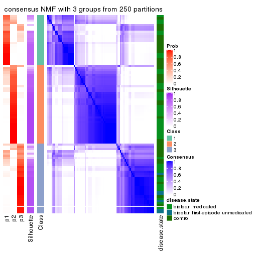
consensus_heatmap(res, k = 4)
consensus_heatmap(res, k = 5)
consensus_heatmap(res, k = 6)
Heatmaps for the membership of samples in all partitions to see how consistent they are:
membership_heatmap(res, k = 2)
membership_heatmap(res, k = 3)
membership_heatmap(res, k = 4)
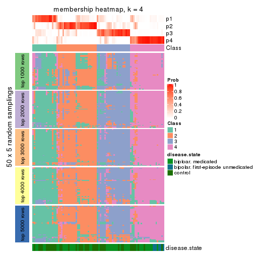
membership_heatmap(res, k = 5)
membership_heatmap(res, k = 6)
As soon as we have had the classes for columns, we can look for signatures which are significantly different between classes which can be candidate marks for certain classes. Following are the heatmaps for signatures.
Signature heatmaps where rows are scaled:
get_signatures(res, k = 2)
get_signatures(res, k = 3)
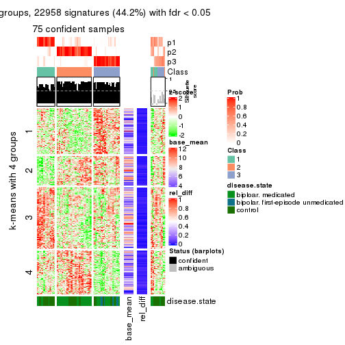
get_signatures(res, k = 4)
get_signatures(res, k = 5)
get_signatures(res, k = 6)
Signature heatmaps where rows are not scaled:
get_signatures(res, k = 2, scale_rows = FALSE)
get_signatures(res, k = 3, scale_rows = FALSE)
get_signatures(res, k = 4, scale_rows = FALSE)
get_signatures(res, k = 5, scale_rows = FALSE)
get_signatures(res, k = 6, scale_rows = FALSE)
Compare the overlap of signatures from different k:
compare_signatures(res)
get_signature() returns a data frame invisibly. TO get the list of signatures, the function
call should be assigned to a variable explicitly. In following code, if plot argument is set
to FALSE, no heatmap is plotted while only the differential analysis is performed.
# code only for demonstration
tb = get_signature(res, k = ..., plot = FALSE)
An example of the output of tb is:
#> which_row fdr mean_1 mean_2 scaled_mean_1 scaled_mean_2 km
#> 1 38 0.042760348 8.373488 9.131774 -0.5533452 0.5164555 1
#> 2 40 0.018707592 7.106213 8.469186 -0.6173731 0.5762149 1
#> 3 55 0.019134737 10.221463 11.207825 -0.6159697 0.5749050 1
#> 4 59 0.006059896 5.921854 7.869574 -0.6899429 0.6439467 1
#> 5 60 0.018055526 8.928898 10.211722 -0.6204761 0.5791110 1
#> 6 98 0.009384629 15.714769 14.887706 0.6635654 -0.6193277 2
...
The columns in tb are:
which_row: row indices corresponding to the input matrix.fdr: FDR for the differential test. mean_x: The mean value in group x.scaled_mean_x: The mean value in group x after rows are scaled.km: Row groups if k-means clustering is applied to rows.UMAP plot which shows how samples are separated.
dimension_reduction(res, k = 2, method = "UMAP")
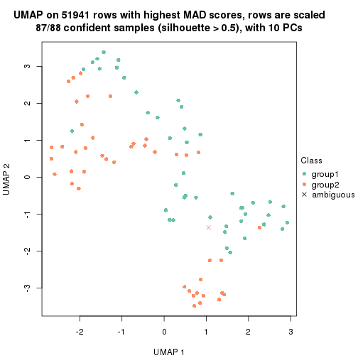
dimension_reduction(res, k = 3, method = "UMAP")

dimension_reduction(res, k = 4, method = "UMAP")
dimension_reduction(res, k = 5, method = "UMAP")
dimension_reduction(res, k = 6, method = "UMAP")
Following heatmap shows how subgroups are split when increasing k:
collect_classes(res)
Test correlation between subgroups and known annotations. If the known annotation is numeric, one-way ANOVA test is applied, and if the known annotation is discrete, chi-squared contingency table test is applied.
test_to_known_factors(res)
#> n disease.state(p) k
#> MAD:NMF 87 1.58e-02 2
#> MAD:NMF 75 2.61e-04 3
#> MAD:NMF 71 3.91e-04 4
#> MAD:NMF 61 1.52e-07 5
#> MAD:NMF 57 6.98e-06 6
If matrix rows can be associated to genes, consider to use GO_Enrichment(res,
...) to perform function enrichment for the signature genes.
The object with results only for a single top-value method and a single partition method can be extracted as:
res = res_list["ATC", "hclust"]
# you can also extract it by
# res = res_list["ATC:hclust"]
A summary of res and all the functions that can be applied to it:
res
#> A 'ConsensusPartition' object with k = 2, 3, 4, 5, 6.
#> On a matrix with 51941 rows and 88 columns.
#> Top rows (1000, 2000, 3000, 4000, 5000) are extracted by 'ATC' method.
#> Subgroups are detected by 'hclust' method.
#> Performed in total 1250 partitions by row resampling.
#> Best k for subgroups seems to be 6.
#>
#> Following methods can be applied to this 'ConsensusPartition' object:
#> [1] "cola_report" "collect_classes" "collect_plots"
#> [4] "collect_stats" "colnames" "compare_signatures"
#> [7] "consensus_heatmap" "dimension_reduction" "functional_enrichment"
#> [10] "get_anno_col" "get_anno" "get_classes"
#> [13] "get_consensus" "get_matrix" "get_membership"
#> [16] "get_param" "get_signatures" "get_stats"
#> [19] "is_best_k" "is_stable_k" "membership_heatmap"
#> [22] "ncol" "nrow" "plot_ecdf"
#> [25] "rownames" "select_partition_number" "show"
#> [28] "suggest_best_k" "test_to_known_factors"
collect_plots() function collects all the plots made from res for all k (number of partitions)
into one single page to provide an easy and fast comparison between different k.
collect_plots(res)
The plots are:
k and the heatmap of
predicted classes for each k.k.k.k.All the plots in panels can be made by individual functions and they are plotted later in this section.
select_partition_number() produces several plots showing different
statistics for choosing “optimized” k. There are following statistics:
k;k, the area increased is defined as \(A_k - A_{k-1}\).The detailed explanations of these statistics can be found in the cola vignette.
Generally speaking, lower PAC score, higher mean silhouette score or higher
concordance corresponds to better partition. Rand index and Jaccard index
measure how similar the current partition is compared to partition with k-1.
If they are too similar, we won't accept k is better than k-1.
select_partition_number(res)
The numeric values for all these statistics can be obtained by get_stats().
get_stats(res)
#> k 1-PAC mean_silhouette concordance area_increased Rand Jaccard
#> 2 2 0.331 0.628 0.797 0.4354 0.658 0.658
#> 3 3 0.301 0.548 0.738 0.4129 0.537 0.363
#> 4 4 0.544 0.623 0.762 0.1329 0.969 0.906
#> 5 5 0.681 0.555 0.763 0.0841 0.759 0.435
#> 6 6 0.749 0.656 0.815 0.0564 0.863 0.563
suggest_best_k() suggests the best \(k\) based on these statistics. The rules are as follows:
NA.suggest_best_k(res)
#> [1] 6
Following shows the table of the partitions (You need to click the show/hide
code output link to see it). The membership matrix (columns with name p*)
is inferred by
clue::cl_consensus()
function with the SE method. Basically the value in the membership matrix
represents the probability to belong to a certain group. The finall class
label for an item is determined with the group with highest probability it
belongs to.
In get_classes() function, the entropy is calculated from the membership
matrix and the silhouette score is calculated from the consensus matrix.
cbind(get_classes(res, k = 2), get_membership(res, k = 2))
#> class entropy silhouette p1 p2
#> GSM1130404 1 0.0938 0.5496 0.988 0.012
#> GSM1130405 1 0.0938 0.5496 0.988 0.012
#> GSM1130408 2 0.9732 0.9802 0.404 0.596
#> GSM1130409 1 0.1184 0.5530 0.984 0.016
#> GSM1130410 1 0.1184 0.5530 0.984 0.016
#> GSM1130415 2 0.9815 0.9686 0.420 0.580
#> GSM1130416 2 0.9732 0.9802 0.404 0.596
#> GSM1130417 2 0.9815 0.9686 0.420 0.580
#> GSM1130418 2 0.9815 0.9686 0.420 0.580
#> GSM1130421 2 0.9732 0.9802 0.404 0.596
#> GSM1130422 2 0.9732 0.9802 0.404 0.596
#> GSM1130423 1 0.8499 0.6906 0.724 0.276
#> GSM1130424 1 0.9866 0.5634 0.568 0.432
#> GSM1130425 1 0.8499 0.6906 0.724 0.276
#> GSM1130426 1 0.1414 0.5397 0.980 0.020
#> GSM1130427 1 0.1414 0.5397 0.980 0.020
#> GSM1130428 1 0.8443 -0.0893 0.728 0.272
#> GSM1130429 1 0.8443 -0.0893 0.728 0.272
#> GSM1130430 1 0.0938 0.5496 0.988 0.012
#> GSM1130431 1 0.0938 0.5496 0.988 0.012
#> GSM1130432 1 0.0938 0.5496 0.988 0.012
#> GSM1130433 1 0.9427 0.7101 0.640 0.360
#> GSM1130434 1 0.9552 0.7106 0.624 0.376
#> GSM1130435 1 0.9552 0.7106 0.624 0.376
#> GSM1130436 1 0.9552 0.7106 0.624 0.376
#> GSM1130437 1 0.9552 0.7106 0.624 0.376
#> GSM1130438 1 0.8016 0.6496 0.756 0.244
#> GSM1130439 1 0.8016 0.6496 0.756 0.244
#> GSM1130440 1 0.8016 0.6496 0.756 0.244
#> GSM1130441 2 0.9710 0.9793 0.400 0.600
#> GSM1130442 2 0.9732 0.9802 0.404 0.596
#> GSM1130443 1 0.9732 0.7056 0.596 0.404
#> GSM1130444 1 0.9732 0.7056 0.596 0.404
#> GSM1130445 1 0.9732 0.7056 0.596 0.404
#> GSM1130476 1 0.8207 0.6425 0.744 0.256
#> GSM1130483 1 0.9552 0.7106 0.624 0.376
#> GSM1130484 1 0.9552 0.7106 0.624 0.376
#> GSM1130487 1 0.9732 0.7056 0.596 0.404
#> GSM1130488 1 0.9732 0.7056 0.596 0.404
#> GSM1130419 1 0.9732 0.7056 0.596 0.404
#> GSM1130420 1 0.9732 0.7056 0.596 0.404
#> GSM1130464 1 0.9732 0.7056 0.596 0.404
#> GSM1130465 1 0.9635 0.7081 0.612 0.388
#> GSM1130468 1 0.9732 0.7056 0.596 0.404
#> GSM1130469 1 0.9732 0.7056 0.596 0.404
#> GSM1130402 1 0.2948 0.5864 0.948 0.052
#> GSM1130403 1 0.0938 0.5496 0.988 0.012
#> GSM1130406 1 0.9552 0.7106 0.624 0.376
#> GSM1130407 1 0.9552 0.7106 0.624 0.376
#> GSM1130411 2 0.9732 0.9802 0.404 0.596
#> GSM1130412 2 0.9732 0.9802 0.404 0.596
#> GSM1130413 2 0.9933 0.9306 0.452 0.548
#> GSM1130414 2 0.9933 0.9306 0.452 0.548
#> GSM1130446 1 0.8555 -0.1014 0.720 0.280
#> GSM1130447 1 0.8443 -0.0893 0.728 0.272
#> GSM1130448 1 0.8207 0.6425 0.744 0.256
#> GSM1130449 1 0.0938 0.5496 0.988 0.012
#> GSM1130450 1 0.7376 0.1264 0.792 0.208
#> GSM1130451 1 0.8081 0.1758 0.752 0.248
#> GSM1130452 2 0.9635 0.9726 0.388 0.612
#> GSM1130453 1 0.8207 0.6425 0.744 0.256
#> GSM1130454 1 0.8207 0.6425 0.744 0.256
#> GSM1130455 2 0.9635 0.9726 0.388 0.612
#> GSM1130456 1 0.9732 0.7056 0.596 0.404
#> GSM1130457 2 0.9635 0.9726 0.388 0.612
#> GSM1130458 1 0.8555 -0.1014 0.720 0.280
#> GSM1130459 2 0.9635 0.9726 0.388 0.612
#> GSM1130460 2 0.9635 0.9726 0.388 0.612
#> GSM1130461 1 0.8909 0.5726 0.692 0.308
#> GSM1130462 1 0.7376 0.1264 0.792 0.208
#> GSM1130463 1 0.7376 0.1264 0.792 0.208
#> GSM1130466 1 0.9732 0.7056 0.596 0.404
#> GSM1130467 2 0.9710 0.9793 0.400 0.600
#> GSM1130470 1 0.9732 0.7056 0.596 0.404
#> GSM1130471 1 0.8499 0.6906 0.724 0.276
#> GSM1130472 1 0.8499 0.6906 0.724 0.276
#> GSM1130473 1 0.8499 0.6906 0.724 0.276
#> GSM1130474 1 0.8144 0.2058 0.748 0.252
#> GSM1130475 1 0.9044 -0.2435 0.680 0.320
#> GSM1130477 1 0.9552 0.7106 0.624 0.376
#> GSM1130478 1 0.9552 0.7106 0.624 0.376
#> GSM1130479 1 0.8499 0.6906 0.724 0.276
#> GSM1130480 1 0.0938 0.5496 0.988 0.012
#> GSM1130481 1 0.6712 0.2270 0.824 0.176
#> GSM1130482 1 0.6712 0.2270 0.824 0.176
#> GSM1130485 1 0.9732 0.7056 0.596 0.404
#> GSM1130486 1 0.9732 0.7056 0.596 0.404
#> GSM1130489 1 0.6712 0.2270 0.824 0.176
cbind(get_classes(res, k = 3), get_membership(res, k = 3))
#> class entropy silhouette p1 p2 p3
#> GSM1130404 1 0.865 0.431 0.512 0.380 0.108
#> GSM1130405 1 0.865 0.431 0.512 0.380 0.108
#> GSM1130408 2 0.116 0.718 0.028 0.972 0.000
#> GSM1130409 1 0.870 0.433 0.512 0.376 0.112
#> GSM1130410 1 0.870 0.433 0.512 0.376 0.112
#> GSM1130415 2 0.215 0.715 0.036 0.948 0.016
#> GSM1130416 2 0.116 0.718 0.028 0.972 0.000
#> GSM1130417 2 0.215 0.715 0.036 0.948 0.016
#> GSM1130418 2 0.215 0.715 0.036 0.948 0.016
#> GSM1130421 2 0.116 0.718 0.028 0.972 0.000
#> GSM1130422 2 0.116 0.718 0.028 0.972 0.000
#> GSM1130423 1 0.849 0.422 0.572 0.116 0.312
#> GSM1130424 1 0.985 0.165 0.416 0.272 0.312
#> GSM1130425 1 0.849 0.422 0.572 0.116 0.312
#> GSM1130426 1 0.867 0.416 0.504 0.388 0.108
#> GSM1130427 1 0.867 0.416 0.504 0.388 0.108
#> GSM1130428 2 0.787 0.574 0.076 0.604 0.320
#> GSM1130429 2 0.787 0.574 0.076 0.604 0.320
#> GSM1130430 1 0.865 0.431 0.512 0.380 0.108
#> GSM1130431 1 0.865 0.431 0.512 0.380 0.108
#> GSM1130432 1 0.865 0.431 0.512 0.380 0.108
#> GSM1130433 1 0.361 0.523 0.888 0.016 0.096
#> GSM1130434 1 0.319 0.518 0.888 0.000 0.112
#> GSM1130435 1 0.319 0.518 0.888 0.000 0.112
#> GSM1130436 1 0.319 0.518 0.888 0.000 0.112
#> GSM1130437 1 0.319 0.518 0.888 0.000 0.112
#> GSM1130438 3 0.967 0.328 0.336 0.224 0.440
#> GSM1130439 3 0.967 0.328 0.336 0.224 0.440
#> GSM1130440 3 0.967 0.328 0.336 0.224 0.440
#> GSM1130441 2 0.116 0.716 0.028 0.972 0.000
#> GSM1130442 2 0.116 0.718 0.028 0.972 0.000
#> GSM1130443 3 0.103 0.738 0.024 0.000 0.976
#> GSM1130444 3 0.103 0.738 0.024 0.000 0.976
#> GSM1130445 3 0.103 0.738 0.024 0.000 0.976
#> GSM1130476 3 0.974 0.319 0.336 0.236 0.428
#> GSM1130483 1 0.319 0.518 0.888 0.000 0.112
#> GSM1130484 1 0.319 0.518 0.888 0.000 0.112
#> GSM1130487 3 0.103 0.738 0.024 0.000 0.976
#> GSM1130488 3 0.103 0.738 0.024 0.000 0.976
#> GSM1130419 3 0.116 0.734 0.028 0.000 0.972
#> GSM1130420 3 0.116 0.734 0.028 0.000 0.972
#> GSM1130464 3 0.103 0.738 0.024 0.000 0.976
#> GSM1130465 1 0.406 0.453 0.836 0.000 0.164
#> GSM1130468 3 0.103 0.738 0.024 0.000 0.976
#> GSM1130469 3 0.103 0.738 0.024 0.000 0.976
#> GSM1130402 1 0.731 0.437 0.616 0.340 0.044
#> GSM1130403 1 0.865 0.431 0.512 0.380 0.108
#> GSM1130406 1 0.319 0.518 0.888 0.000 0.112
#> GSM1130407 1 0.319 0.518 0.888 0.000 0.112
#> GSM1130411 2 0.116 0.718 0.028 0.972 0.000
#> GSM1130412 2 0.116 0.718 0.028 0.972 0.000
#> GSM1130413 2 0.300 0.695 0.068 0.916 0.016
#> GSM1130414 2 0.300 0.695 0.068 0.916 0.016
#> GSM1130446 2 0.787 0.577 0.076 0.604 0.320
#> GSM1130447 2 0.787 0.574 0.076 0.604 0.320
#> GSM1130448 3 0.974 0.319 0.336 0.236 0.428
#> GSM1130449 1 0.865 0.431 0.512 0.380 0.108
#> GSM1130450 2 0.857 0.474 0.128 0.576 0.296
#> GSM1130451 2 0.801 0.458 0.064 0.524 0.412
#> GSM1130452 2 0.404 0.653 0.104 0.872 0.024
#> GSM1130453 3 0.974 0.319 0.336 0.236 0.428
#> GSM1130454 3 0.974 0.319 0.336 0.236 0.428
#> GSM1130455 2 0.404 0.653 0.104 0.872 0.024
#> GSM1130456 3 0.103 0.738 0.024 0.000 0.976
#> GSM1130457 2 0.362 0.656 0.104 0.884 0.012
#> GSM1130458 2 0.787 0.577 0.076 0.604 0.320
#> GSM1130459 2 0.362 0.656 0.104 0.884 0.012
#> GSM1130460 2 0.362 0.656 0.104 0.884 0.012
#> GSM1130461 3 0.999 0.193 0.340 0.312 0.348
#> GSM1130462 2 0.857 0.474 0.128 0.576 0.296
#> GSM1130463 2 0.857 0.474 0.128 0.576 0.296
#> GSM1130466 3 0.103 0.738 0.024 0.000 0.976
#> GSM1130467 2 0.116 0.716 0.028 0.972 0.000
#> GSM1130470 3 0.103 0.738 0.024 0.000 0.976
#> GSM1130471 1 0.849 0.422 0.572 0.116 0.312
#> GSM1130472 1 0.849 0.422 0.572 0.116 0.312
#> GSM1130473 1 0.849 0.422 0.572 0.116 0.312
#> GSM1130474 2 0.803 0.436 0.064 0.512 0.424
#> GSM1130475 2 0.764 0.593 0.072 0.632 0.296
#> GSM1130477 1 0.319 0.518 0.888 0.000 0.112
#> GSM1130478 1 0.319 0.518 0.888 0.000 0.112
#> GSM1130479 1 0.849 0.422 0.572 0.116 0.312
#> GSM1130480 1 0.865 0.431 0.512 0.380 0.108
#> GSM1130481 2 0.894 0.414 0.156 0.544 0.300
#> GSM1130482 2 0.894 0.414 0.156 0.544 0.300
#> GSM1130485 3 0.103 0.738 0.024 0.000 0.976
#> GSM1130486 3 0.103 0.738 0.024 0.000 0.976
#> GSM1130489 2 0.894 0.414 0.156 0.544 0.300
cbind(get_classes(res, k = 4), get_membership(res, k = 4))
#> class entropy silhouette p1 p2 p3 p4
#> GSM1130404 1 0.5398 0.400 0.580 0.404 0.016 0.000
#> GSM1130405 1 0.5398 0.400 0.580 0.404 0.016 0.000
#> GSM1130408 2 0.0000 0.729 0.000 1.000 0.000 0.000
#> GSM1130409 1 0.5387 0.403 0.584 0.400 0.016 0.000
#> GSM1130410 1 0.5387 0.403 0.584 0.400 0.016 0.000
#> GSM1130415 2 0.0817 0.725 0.024 0.976 0.000 0.000
#> GSM1130416 2 0.0000 0.729 0.000 1.000 0.000 0.000
#> GSM1130417 2 0.0817 0.725 0.024 0.976 0.000 0.000
#> GSM1130418 2 0.0817 0.725 0.024 0.976 0.000 0.000
#> GSM1130421 2 0.0000 0.729 0.000 1.000 0.000 0.000
#> GSM1130422 2 0.0000 0.729 0.000 1.000 0.000 0.000
#> GSM1130423 1 0.7073 0.441 0.632 0.144 0.200 0.024
#> GSM1130424 1 0.8143 0.126 0.476 0.292 0.208 0.024
#> GSM1130425 1 0.7073 0.441 0.632 0.144 0.200 0.024
#> GSM1130426 1 0.5417 0.385 0.572 0.412 0.016 0.000
#> GSM1130427 1 0.5417 0.385 0.572 0.412 0.016 0.000
#> GSM1130428 2 0.7250 0.601 0.120 0.580 0.280 0.020
#> GSM1130429 2 0.7250 0.601 0.120 0.580 0.280 0.020
#> GSM1130430 1 0.5398 0.400 0.580 0.404 0.016 0.000
#> GSM1130431 1 0.5398 0.400 0.580 0.404 0.016 0.000
#> GSM1130432 1 0.5398 0.400 0.580 0.404 0.016 0.000
#> GSM1130433 1 0.3278 0.311 0.864 0.020 0.116 0.000
#> GSM1130434 1 0.2589 0.299 0.884 0.000 0.116 0.000
#> GSM1130435 1 0.2589 0.299 0.884 0.000 0.116 0.000
#> GSM1130436 1 0.2589 0.299 0.884 0.000 0.116 0.000
#> GSM1130437 1 0.2589 0.299 0.884 0.000 0.116 0.000
#> GSM1130438 3 0.6566 0.970 0.288 0.000 0.600 0.112
#> GSM1130439 3 0.6566 0.970 0.288 0.000 0.600 0.112
#> GSM1130440 3 0.6566 0.970 0.288 0.000 0.600 0.112
#> GSM1130441 2 0.0817 0.724 0.000 0.976 0.024 0.000
#> GSM1130442 2 0.0000 0.729 0.000 1.000 0.000 0.000
#> GSM1130443 4 0.0000 0.999 0.000 0.000 0.000 1.000
#> GSM1130444 4 0.0000 0.999 0.000 0.000 0.000 1.000
#> GSM1130445 4 0.0000 0.999 0.000 0.000 0.000 1.000
#> GSM1130476 3 0.6415 0.974 0.288 0.000 0.612 0.100
#> GSM1130483 1 0.2589 0.299 0.884 0.000 0.116 0.000
#> GSM1130484 1 0.2589 0.299 0.884 0.000 0.116 0.000
#> GSM1130487 4 0.0000 0.999 0.000 0.000 0.000 1.000
#> GSM1130488 4 0.0000 0.999 0.000 0.000 0.000 1.000
#> GSM1130419 4 0.0188 0.994 0.004 0.000 0.000 0.996
#> GSM1130420 4 0.0188 0.994 0.004 0.000 0.000 0.996
#> GSM1130464 4 0.0000 0.999 0.000 0.000 0.000 1.000
#> GSM1130465 1 0.4245 0.207 0.820 0.000 0.116 0.064
#> GSM1130468 4 0.0000 0.999 0.000 0.000 0.000 1.000
#> GSM1130469 4 0.0000 0.999 0.000 0.000 0.000 1.000
#> GSM1130402 1 0.6837 0.426 0.544 0.340 0.116 0.000
#> GSM1130403 1 0.5398 0.400 0.580 0.404 0.016 0.000
#> GSM1130406 1 0.2589 0.299 0.884 0.000 0.116 0.000
#> GSM1130407 1 0.2589 0.299 0.884 0.000 0.116 0.000
#> GSM1130411 2 0.0000 0.729 0.000 1.000 0.000 0.000
#> GSM1130412 2 0.0000 0.729 0.000 1.000 0.000 0.000
#> GSM1130413 2 0.1557 0.709 0.056 0.944 0.000 0.000
#> GSM1130414 2 0.1557 0.709 0.056 0.944 0.000 0.000
#> GSM1130446 2 0.7265 0.603 0.116 0.572 0.292 0.020
#> GSM1130447 2 0.7250 0.601 0.120 0.580 0.280 0.020
#> GSM1130448 3 0.6415 0.974 0.288 0.000 0.612 0.100
#> GSM1130449 1 0.5398 0.400 0.580 0.404 0.016 0.000
#> GSM1130450 2 0.7180 0.511 0.184 0.600 0.204 0.012
#> GSM1130451 2 0.8800 0.468 0.092 0.412 0.364 0.132
#> GSM1130452 2 0.4040 0.617 0.000 0.752 0.248 0.000
#> GSM1130453 3 0.6415 0.974 0.288 0.000 0.612 0.100
#> GSM1130454 3 0.6415 0.974 0.288 0.000 0.612 0.100
#> GSM1130455 2 0.4040 0.617 0.000 0.752 0.248 0.000
#> GSM1130456 4 0.0000 0.999 0.000 0.000 0.000 1.000
#> GSM1130457 2 0.3486 0.653 0.000 0.812 0.188 0.000
#> GSM1130458 2 0.7265 0.603 0.116 0.572 0.292 0.020
#> GSM1130459 2 0.3486 0.653 0.000 0.812 0.188 0.000
#> GSM1130460 2 0.3486 0.653 0.000 0.812 0.188 0.000
#> GSM1130461 3 0.5166 0.855 0.288 0.020 0.688 0.004
#> GSM1130462 2 0.7180 0.511 0.184 0.600 0.204 0.012
#> GSM1130463 2 0.7180 0.511 0.184 0.600 0.204 0.012
#> GSM1130466 4 0.0000 0.999 0.000 0.000 0.000 1.000
#> GSM1130467 2 0.0817 0.724 0.000 0.976 0.024 0.000
#> GSM1130470 4 0.0000 0.999 0.000 0.000 0.000 1.000
#> GSM1130471 1 0.7073 0.441 0.632 0.144 0.200 0.024
#> GSM1130472 1 0.7073 0.441 0.632 0.144 0.200 0.024
#> GSM1130473 1 0.7073 0.441 0.632 0.144 0.200 0.024
#> GSM1130474 2 0.8887 0.462 0.092 0.408 0.356 0.144
#> GSM1130475 2 0.7185 0.569 0.092 0.512 0.380 0.016
#> GSM1130477 1 0.2589 0.299 0.884 0.000 0.116 0.000
#> GSM1130478 1 0.2589 0.299 0.884 0.000 0.116 0.000
#> GSM1130479 1 0.7073 0.441 0.632 0.144 0.200 0.024
#> GSM1130480 1 0.5398 0.400 0.580 0.404 0.016 0.000
#> GSM1130481 2 0.7457 0.453 0.216 0.564 0.208 0.012
#> GSM1130482 2 0.7457 0.453 0.216 0.564 0.208 0.012
#> GSM1130485 4 0.0000 0.999 0.000 0.000 0.000 1.000
#> GSM1130486 4 0.0000 0.999 0.000 0.000 0.000 1.000
#> GSM1130489 2 0.7457 0.453 0.216 0.564 0.208 0.012
cbind(get_classes(res, k = 5), get_membership(res, k = 5))
#> class entropy silhouette p1 p2 p3 p4 p5
#> GSM1130404 5 0.4288 0.343 0.384 0.004 0.000 0.000 0.612
#> GSM1130405 5 0.4288 0.343 0.384 0.004 0.000 0.000 0.612
#> GSM1130408 5 0.4696 0.237 0.000 0.428 0.016 0.000 0.556
#> GSM1130409 5 0.4299 0.336 0.388 0.004 0.000 0.000 0.608
#> GSM1130410 5 0.4299 0.336 0.388 0.004 0.000 0.000 0.608
#> GSM1130415 5 0.4649 0.262 0.000 0.404 0.016 0.000 0.580
#> GSM1130416 5 0.4696 0.237 0.000 0.428 0.016 0.000 0.556
#> GSM1130417 5 0.4649 0.262 0.000 0.404 0.016 0.000 0.580
#> GSM1130418 5 0.4649 0.262 0.000 0.404 0.016 0.000 0.580
#> GSM1130421 5 0.4696 0.237 0.000 0.428 0.016 0.000 0.556
#> GSM1130422 5 0.4696 0.237 0.000 0.428 0.016 0.000 0.556
#> GSM1130423 5 0.5746 0.131 0.372 0.064 0.012 0.000 0.552
#> GSM1130424 5 0.5096 0.216 0.216 0.064 0.016 0.000 0.704
#> GSM1130425 5 0.5746 0.131 0.372 0.064 0.012 0.000 0.552
#> GSM1130426 5 0.4264 0.351 0.376 0.004 0.000 0.000 0.620
#> GSM1130427 5 0.4264 0.351 0.376 0.004 0.000 0.000 0.620
#> GSM1130428 5 0.4251 -0.176 0.000 0.372 0.004 0.000 0.624
#> GSM1130429 5 0.4251 -0.176 0.000 0.372 0.004 0.000 0.624
#> GSM1130430 5 0.4288 0.343 0.384 0.004 0.000 0.000 0.612
#> GSM1130431 5 0.4288 0.343 0.384 0.004 0.000 0.000 0.612
#> GSM1130432 5 0.4288 0.343 0.384 0.004 0.000 0.000 0.612
#> GSM1130433 1 0.0794 0.915 0.972 0.000 0.000 0.000 0.028
#> GSM1130434 1 0.0162 0.940 0.996 0.000 0.000 0.000 0.004
#> GSM1130435 1 0.0162 0.940 0.996 0.000 0.000 0.000 0.004
#> GSM1130436 1 0.0000 0.942 1.000 0.000 0.000 0.000 0.000
#> GSM1130437 1 0.0000 0.942 1.000 0.000 0.000 0.000 0.000
#> GSM1130438 3 0.1270 0.976 0.000 0.000 0.948 0.052 0.000
#> GSM1130439 3 0.1270 0.976 0.000 0.000 0.948 0.052 0.000
#> GSM1130440 3 0.1270 0.976 0.000 0.000 0.948 0.052 0.000
#> GSM1130441 5 0.4648 0.194 0.000 0.464 0.012 0.000 0.524
#> GSM1130442 5 0.4696 0.237 0.000 0.428 0.016 0.000 0.556
#> GSM1130443 4 0.0290 0.995 0.000 0.008 0.000 0.992 0.000
#> GSM1130444 4 0.0000 0.995 0.000 0.000 0.000 1.000 0.000
#> GSM1130445 4 0.0000 0.995 0.000 0.000 0.000 1.000 0.000
#> GSM1130476 3 0.1043 0.979 0.000 0.000 0.960 0.040 0.000
#> GSM1130483 1 0.0000 0.942 1.000 0.000 0.000 0.000 0.000
#> GSM1130484 1 0.0000 0.942 1.000 0.000 0.000 0.000 0.000
#> GSM1130487 4 0.0290 0.995 0.000 0.008 0.000 0.992 0.000
#> GSM1130488 4 0.0000 0.995 0.000 0.000 0.000 1.000 0.000
#> GSM1130419 4 0.0162 0.992 0.004 0.000 0.000 0.996 0.000
#> GSM1130420 4 0.0162 0.992 0.004 0.000 0.000 0.996 0.000
#> GSM1130464 4 0.0290 0.995 0.000 0.008 0.000 0.992 0.000
#> GSM1130465 1 0.1478 0.874 0.936 0.000 0.000 0.064 0.000
#> GSM1130468 4 0.0000 0.995 0.000 0.000 0.000 1.000 0.000
#> GSM1130469 4 0.0000 0.995 0.000 0.000 0.000 1.000 0.000
#> GSM1130402 1 0.4161 0.112 0.608 0.000 0.000 0.000 0.392
#> GSM1130403 5 0.4288 0.343 0.384 0.004 0.000 0.000 0.612
#> GSM1130406 1 0.0000 0.942 1.000 0.000 0.000 0.000 0.000
#> GSM1130407 1 0.0000 0.942 1.000 0.000 0.000 0.000 0.000
#> GSM1130411 5 0.4696 0.237 0.000 0.428 0.016 0.000 0.556
#> GSM1130412 5 0.4696 0.237 0.000 0.428 0.016 0.000 0.556
#> GSM1130413 5 0.5071 0.278 0.020 0.392 0.012 0.000 0.576
#> GSM1130414 5 0.5071 0.278 0.020 0.392 0.012 0.000 0.576
#> GSM1130446 5 0.4403 -0.209 0.000 0.384 0.008 0.000 0.608
#> GSM1130447 5 0.4251 -0.176 0.000 0.372 0.004 0.000 0.624
#> GSM1130448 3 0.1043 0.979 0.000 0.000 0.960 0.040 0.000
#> GSM1130449 5 0.4288 0.343 0.384 0.004 0.000 0.000 0.612
#> GSM1130450 5 0.1455 0.396 0.008 0.032 0.008 0.000 0.952
#> GSM1130451 2 0.7199 0.474 0.000 0.456 0.068 0.116 0.360
#> GSM1130452 2 0.2409 0.707 0.000 0.900 0.068 0.000 0.032
#> GSM1130453 3 0.1043 0.979 0.000 0.000 0.960 0.040 0.000
#> GSM1130454 3 0.1043 0.979 0.000 0.000 0.960 0.040 0.000
#> GSM1130455 2 0.2409 0.707 0.000 0.900 0.068 0.000 0.032
#> GSM1130456 4 0.0290 0.995 0.000 0.008 0.000 0.992 0.000
#> GSM1130457 2 0.1894 0.704 0.000 0.920 0.008 0.000 0.072
#> GSM1130458 5 0.4403 -0.209 0.000 0.384 0.008 0.000 0.608
#> GSM1130459 2 0.1894 0.704 0.000 0.920 0.008 0.000 0.072
#> GSM1130460 2 0.1894 0.704 0.000 0.920 0.008 0.000 0.072
#> GSM1130461 3 0.1851 0.886 0.000 0.088 0.912 0.000 0.000
#> GSM1130462 5 0.1455 0.396 0.008 0.032 0.008 0.000 0.952
#> GSM1130463 5 0.1455 0.396 0.008 0.032 0.008 0.000 0.952
#> GSM1130466 4 0.0290 0.995 0.000 0.008 0.000 0.992 0.000
#> GSM1130467 5 0.4648 0.194 0.000 0.464 0.012 0.000 0.524
#> GSM1130470 4 0.0290 0.995 0.000 0.008 0.000 0.992 0.000
#> GSM1130471 5 0.5746 0.131 0.372 0.064 0.012 0.000 0.552
#> GSM1130472 5 0.5746 0.131 0.372 0.064 0.012 0.000 0.552
#> GSM1130473 5 0.5746 0.131 0.372 0.064 0.012 0.000 0.552
#> GSM1130474 2 0.7193 0.471 0.000 0.456 0.060 0.128 0.356
#> GSM1130475 2 0.5449 0.478 0.000 0.556 0.068 0.000 0.376
#> GSM1130477 1 0.0000 0.942 1.000 0.000 0.000 0.000 0.000
#> GSM1130478 1 0.0000 0.942 1.000 0.000 0.000 0.000 0.000
#> GSM1130479 5 0.5746 0.131 0.372 0.064 0.012 0.000 0.552
#> GSM1130480 5 0.4288 0.343 0.384 0.004 0.000 0.000 0.612
#> GSM1130481 5 0.0798 0.402 0.008 0.000 0.016 0.000 0.976
#> GSM1130482 5 0.0798 0.402 0.008 0.000 0.016 0.000 0.976
#> GSM1130485 4 0.0290 0.995 0.000 0.008 0.000 0.992 0.000
#> GSM1130486 4 0.0000 0.995 0.000 0.000 0.000 1.000 0.000
#> GSM1130489 5 0.0798 0.402 0.008 0.000 0.016 0.000 0.976
cbind(get_classes(res, k = 6), get_membership(res, k = 6))
#> class entropy silhouette p1 p2 p3 p4 p5 p6
#> GSM1130404 6 0.6063 0.4769 0.264 0.348 0.000 0.000 0.000 0.388
#> GSM1130405 6 0.6063 0.4769 0.264 0.348 0.000 0.000 0.000 0.388
#> GSM1130408 2 0.0000 0.8273 0.000 1.000 0.000 0.000 0.000 0.000
#> GSM1130409 6 0.6079 0.4714 0.272 0.348 0.000 0.000 0.000 0.380
#> GSM1130410 6 0.6079 0.4714 0.272 0.348 0.000 0.000 0.000 0.380
#> GSM1130415 2 0.0632 0.8209 0.000 0.976 0.000 0.000 0.000 0.024
#> GSM1130416 2 0.0000 0.8273 0.000 1.000 0.000 0.000 0.000 0.000
#> GSM1130417 2 0.0632 0.8209 0.000 0.976 0.000 0.000 0.000 0.024
#> GSM1130418 2 0.0632 0.8209 0.000 0.976 0.000 0.000 0.000 0.024
#> GSM1130421 2 0.0000 0.8273 0.000 1.000 0.000 0.000 0.000 0.000
#> GSM1130422 2 0.0000 0.8273 0.000 1.000 0.000 0.000 0.000 0.000
#> GSM1130423 6 0.0260 0.3142 0.008 0.000 0.000 0.000 0.000 0.992
#> GSM1130424 6 0.2442 0.2107 0.000 0.144 0.000 0.000 0.004 0.852
#> GSM1130425 6 0.0260 0.3142 0.008 0.000 0.000 0.000 0.000 0.992
#> GSM1130426 6 0.6049 0.4694 0.256 0.356 0.000 0.000 0.000 0.388
#> GSM1130427 6 0.6049 0.4694 0.256 0.356 0.000 0.000 0.000 0.388
#> GSM1130428 6 0.5871 -0.4102 0.000 0.196 0.000 0.000 0.396 0.408
#> GSM1130429 6 0.5871 -0.4102 0.000 0.196 0.000 0.000 0.396 0.408
#> GSM1130430 6 0.6063 0.4769 0.264 0.348 0.000 0.000 0.000 0.388
#> GSM1130431 6 0.6063 0.4769 0.264 0.348 0.000 0.000 0.000 0.388
#> GSM1130432 6 0.6063 0.4769 0.264 0.348 0.000 0.000 0.000 0.388
#> GSM1130433 1 0.1806 0.8428 0.908 0.004 0.000 0.000 0.000 0.088
#> GSM1130434 1 0.0146 0.9346 0.996 0.000 0.000 0.000 0.000 0.004
#> GSM1130435 1 0.0146 0.9346 0.996 0.000 0.000 0.000 0.000 0.004
#> GSM1130436 1 0.0000 0.9369 1.000 0.000 0.000 0.000 0.000 0.000
#> GSM1130437 1 0.0000 0.9369 1.000 0.000 0.000 0.000 0.000 0.000
#> GSM1130438 3 0.0000 0.9771 0.000 0.000 1.000 0.000 0.000 0.000
#> GSM1130439 3 0.0000 0.9771 0.000 0.000 1.000 0.000 0.000 0.000
#> GSM1130440 3 0.0000 0.9771 0.000 0.000 1.000 0.000 0.000 0.000
#> GSM1130441 2 0.1387 0.7901 0.000 0.932 0.000 0.000 0.068 0.000
#> GSM1130442 2 0.0000 0.8273 0.000 1.000 0.000 0.000 0.000 0.000
#> GSM1130443 4 0.0000 0.9933 0.000 0.000 0.000 1.000 0.000 0.000
#> GSM1130444 4 0.0458 0.9917 0.000 0.000 0.016 0.984 0.000 0.000
#> GSM1130445 4 0.0458 0.9917 0.000 0.000 0.016 0.984 0.000 0.000
#> GSM1130476 3 0.0363 0.9797 0.000 0.000 0.988 0.000 0.012 0.000
#> GSM1130483 1 0.0000 0.9369 1.000 0.000 0.000 0.000 0.000 0.000
#> GSM1130484 1 0.0000 0.9369 1.000 0.000 0.000 0.000 0.000 0.000
#> GSM1130487 4 0.0000 0.9933 0.000 0.000 0.000 1.000 0.000 0.000
#> GSM1130488 4 0.0363 0.9933 0.000 0.000 0.012 0.988 0.000 0.000
#> GSM1130419 4 0.0508 0.9919 0.000 0.000 0.012 0.984 0.000 0.004
#> GSM1130420 4 0.0508 0.9919 0.000 0.000 0.012 0.984 0.000 0.004
#> GSM1130464 4 0.0000 0.9933 0.000 0.000 0.000 1.000 0.000 0.000
#> GSM1130465 1 0.1555 0.8727 0.932 0.000 0.004 0.060 0.000 0.004
#> GSM1130468 4 0.0363 0.9933 0.000 0.000 0.012 0.988 0.000 0.000
#> GSM1130469 4 0.0363 0.9933 0.000 0.000 0.012 0.988 0.000 0.000
#> GSM1130402 1 0.4594 0.1588 0.608 0.340 0.000 0.000 0.000 0.052
#> GSM1130403 6 0.6063 0.4769 0.264 0.348 0.000 0.000 0.000 0.388
#> GSM1130406 1 0.0000 0.9369 1.000 0.000 0.000 0.000 0.000 0.000
#> GSM1130407 1 0.0000 0.9369 1.000 0.000 0.000 0.000 0.000 0.000
#> GSM1130411 2 0.0790 0.8100 0.000 0.968 0.000 0.000 0.032 0.000
#> GSM1130412 2 0.0790 0.8100 0.000 0.968 0.000 0.000 0.032 0.000
#> GSM1130413 2 0.1327 0.7880 0.000 0.936 0.000 0.000 0.000 0.064
#> GSM1130414 2 0.1327 0.7880 0.000 0.936 0.000 0.000 0.000 0.064
#> GSM1130446 5 0.5887 0.3541 0.000 0.200 0.000 0.000 0.408 0.392
#> GSM1130447 6 0.5871 -0.4102 0.000 0.196 0.000 0.000 0.396 0.408
#> GSM1130448 3 0.0363 0.9797 0.000 0.000 0.988 0.000 0.012 0.000
#> GSM1130449 6 0.6063 0.4769 0.264 0.348 0.000 0.000 0.000 0.388
#> GSM1130450 2 0.3995 -0.0372 0.000 0.516 0.000 0.000 0.004 0.480
#> GSM1130451 5 0.5987 0.5559 0.000 0.000 0.032 0.116 0.504 0.348
#> GSM1130452 5 0.0935 0.6194 0.000 0.004 0.032 0.000 0.964 0.000
#> GSM1130453 3 0.0363 0.9797 0.000 0.000 0.988 0.000 0.012 0.000
#> GSM1130454 3 0.0363 0.9797 0.000 0.000 0.988 0.000 0.012 0.000
#> GSM1130455 5 0.0935 0.6194 0.000 0.004 0.032 0.000 0.964 0.000
#> GSM1130456 4 0.0000 0.9933 0.000 0.000 0.000 1.000 0.000 0.000
#> GSM1130457 5 0.0790 0.6451 0.000 0.032 0.000 0.000 0.968 0.000
#> GSM1130458 5 0.5887 0.3541 0.000 0.200 0.000 0.000 0.408 0.392
#> GSM1130459 5 0.0790 0.6451 0.000 0.032 0.000 0.000 0.968 0.000
#> GSM1130460 5 0.0790 0.6451 0.000 0.032 0.000 0.000 0.968 0.000
#> GSM1130461 3 0.1957 0.8903 0.000 0.000 0.888 0.000 0.112 0.000
#> GSM1130462 2 0.3995 -0.0372 0.000 0.516 0.000 0.000 0.004 0.480
#> GSM1130463 2 0.3995 -0.0372 0.000 0.516 0.000 0.000 0.004 0.480
#> GSM1130466 4 0.0000 0.9933 0.000 0.000 0.000 1.000 0.000 0.000
#> GSM1130467 2 0.1387 0.7901 0.000 0.932 0.000 0.000 0.068 0.000
#> GSM1130470 4 0.0000 0.9933 0.000 0.000 0.000 1.000 0.000 0.000
#> GSM1130471 6 0.0260 0.3142 0.008 0.000 0.000 0.000 0.000 0.992
#> GSM1130472 6 0.0260 0.3142 0.008 0.000 0.000 0.000 0.000 0.992
#> GSM1130473 6 0.0260 0.3142 0.008 0.000 0.000 0.000 0.000 0.992
#> GSM1130474 5 0.5953 0.5528 0.000 0.000 0.024 0.128 0.500 0.348
#> GSM1130475 5 0.5022 0.5660 0.000 0.032 0.032 0.000 0.588 0.348
#> GSM1130477 1 0.0000 0.9369 1.000 0.000 0.000 0.000 0.000 0.000
#> GSM1130478 1 0.0000 0.9369 1.000 0.000 0.000 0.000 0.000 0.000
#> GSM1130479 6 0.0260 0.3142 0.008 0.000 0.000 0.000 0.000 0.992
#> GSM1130480 6 0.6063 0.4769 0.264 0.348 0.000 0.000 0.000 0.388
#> GSM1130481 6 0.3961 0.1449 0.000 0.440 0.000 0.000 0.004 0.556
#> GSM1130482 6 0.3961 0.1449 0.000 0.440 0.000 0.000 0.004 0.556
#> GSM1130485 4 0.0000 0.9933 0.000 0.000 0.000 1.000 0.000 0.000
#> GSM1130486 4 0.0363 0.9933 0.000 0.000 0.012 0.988 0.000 0.000
#> GSM1130489 6 0.3961 0.1449 0.000 0.440 0.000 0.000 0.004 0.556
Heatmaps for the consensus matrix. It visualizes the probability of two samples to be in a same group.
consensus_heatmap(res, k = 2)
consensus_heatmap(res, k = 3)
consensus_heatmap(res, k = 4)
consensus_heatmap(res, k = 5)
consensus_heatmap(res, k = 6)
Heatmaps for the membership of samples in all partitions to see how consistent they are:
membership_heatmap(res, k = 2)
membership_heatmap(res, k = 3)
membership_heatmap(res, k = 4)
membership_heatmap(res, k = 5)
membership_heatmap(res, k = 6)
As soon as we have had the classes for columns, we can look for signatures which are significantly different between classes which can be candidate marks for certain classes. Following are the heatmaps for signatures.
Signature heatmaps where rows are scaled:
get_signatures(res, k = 2)
get_signatures(res, k = 3)

get_signatures(res, k = 4)
get_signatures(res, k = 5)
get_signatures(res, k = 6)
Signature heatmaps where rows are not scaled:
get_signatures(res, k = 2, scale_rows = FALSE)
get_signatures(res, k = 3, scale_rows = FALSE)
get_signatures(res, k = 4, scale_rows = FALSE)
get_signatures(res, k = 5, scale_rows = FALSE)
get_signatures(res, k = 6, scale_rows = FALSE)
Compare the overlap of signatures from different k:
compare_signatures(res)
get_signature() returns a data frame invisibly. TO get the list of signatures, the function
call should be assigned to a variable explicitly. In following code, if plot argument is set
to FALSE, no heatmap is plotted while only the differential analysis is performed.
# code only for demonstration
tb = get_signature(res, k = ..., plot = FALSE)
An example of the output of tb is:
#> which_row fdr mean_1 mean_2 scaled_mean_1 scaled_mean_2 km
#> 1 38 0.042760348 8.373488 9.131774 -0.5533452 0.5164555 1
#> 2 40 0.018707592 7.106213 8.469186 -0.6173731 0.5762149 1
#> 3 55 0.019134737 10.221463 11.207825 -0.6159697 0.5749050 1
#> 4 59 0.006059896 5.921854 7.869574 -0.6899429 0.6439467 1
#> 5 60 0.018055526 8.928898 10.211722 -0.6204761 0.5791110 1
#> 6 98 0.009384629 15.714769 14.887706 0.6635654 -0.6193277 2
...
The columns in tb are:
which_row: row indices corresponding to the input matrix.fdr: FDR for the differential test. mean_x: The mean value in group x.scaled_mean_x: The mean value in group x after rows are scaled.km: Row groups if k-means clustering is applied to rows.UMAP plot which shows how samples are separated.
dimension_reduction(res, k = 2, method = "UMAP")
dimension_reduction(res, k = 3, method = "UMAP")
dimension_reduction(res, k = 4, method = "UMAP")
dimension_reduction(res, k = 5, method = "UMAP")
dimension_reduction(res, k = 6, method = "UMAP")

Following heatmap shows how subgroups are split when increasing k:
collect_classes(res)
Test correlation between subgroups and known annotations. If the known annotation is numeric, one-way ANOVA test is applied, and if the known annotation is discrete, chi-squared contingency table test is applied.
test_to_known_factors(res)
#> n disease.state(p) k
#> ATC:hclust 74 0.24512 2
#> ATC:hclust 51 0.00558 3
#> ATC:hclust 51 0.00793 4
#> ATC:hclust 40 0.03903 5
#> ATC:hclust 57 0.00349 6
If matrix rows can be associated to genes, consider to use GO_Enrichment(res,
...) to perform function enrichment for the signature genes.
The object with results only for a single top-value method and a single partition method can be extracted as:
res = res_list["ATC", "kmeans"]
# you can also extract it by
# res = res_list["ATC:kmeans"]
A summary of res and all the functions that can be applied to it:
res
#> A 'ConsensusPartition' object with k = 2, 3, 4, 5, 6.
#> On a matrix with 51941 rows and 88 columns.
#> Top rows (1000, 2000, 3000, 4000, 5000) are extracted by 'ATC' method.
#> Subgroups are detected by 'kmeans' method.
#> Performed in total 1250 partitions by row resampling.
#> Best k for subgroups seems to be 3.
#>
#> Following methods can be applied to this 'ConsensusPartition' object:
#> [1] "cola_report" "collect_classes" "collect_plots"
#> [4] "collect_stats" "colnames" "compare_signatures"
#> [7] "consensus_heatmap" "dimension_reduction" "functional_enrichment"
#> [10] "get_anno_col" "get_anno" "get_classes"
#> [13] "get_consensus" "get_matrix" "get_membership"
#> [16] "get_param" "get_signatures" "get_stats"
#> [19] "is_best_k" "is_stable_k" "membership_heatmap"
#> [22] "ncol" "nrow" "plot_ecdf"
#> [25] "rownames" "select_partition_number" "show"
#> [28] "suggest_best_k" "test_to_known_factors"
collect_plots() function collects all the plots made from res for all k (number of partitions)
into one single page to provide an easy and fast comparison between different k.
collect_plots(res)
The plots are:
k and the heatmap of
predicted classes for each k.k.k.k.All the plots in panels can be made by individual functions and they are plotted later in this section.
select_partition_number() produces several plots showing different
statistics for choosing “optimized” k. There are following statistics:
k;k, the area increased is defined as \(A_k - A_{k-1}\).The detailed explanations of these statistics can be found in the cola vignette.
Generally speaking, lower PAC score, higher mean silhouette score or higher
concordance corresponds to better partition. Rand index and Jaccard index
measure how similar the current partition is compared to partition with k-1.
If they are too similar, we won't accept k is better than k-1.
select_partition_number(res)
The numeric values for all these statistics can be obtained by get_stats().
get_stats(res)
#> k 1-PAC mean_silhouette concordance area_increased Rand Jaccard
#> 2 2 0.369 0.741 0.842 0.4873 0.504 0.504
#> 3 3 0.988 0.944 0.958 0.3629 0.767 0.565
#> 4 4 0.659 0.572 0.762 0.1101 0.927 0.788
#> 5 5 0.638 0.423 0.645 0.0696 0.809 0.440
#> 6 6 0.706 0.627 0.767 0.0453 0.911 0.622
suggest_best_k() suggests the best \(k\) based on these statistics. The rules are as follows:
NA.suggest_best_k(res)
#> [1] 3
Following shows the table of the partitions (You need to click the show/hide
code output link to see it). The membership matrix (columns with name p*)
is inferred by
clue::cl_consensus()
function with the SE method. Basically the value in the membership matrix
represents the probability to belong to a certain group. The finall class
label for an item is determined with the group with highest probability it
belongs to.
In get_classes() function, the entropy is calculated from the membership
matrix and the silhouette score is calculated from the consensus matrix.
cbind(get_classes(res, k = 2), get_membership(res, k = 2))
#> class entropy silhouette p1 p2
#> GSM1130404 1 0.8763 0.763 0.704 0.296
#> GSM1130405 1 0.9977 0.474 0.528 0.472
#> GSM1130408 2 0.0672 0.867 0.008 0.992
#> GSM1130409 1 0.9850 0.573 0.572 0.428
#> GSM1130410 1 0.9850 0.573 0.572 0.428
#> GSM1130415 2 0.1843 0.858 0.028 0.972
#> GSM1130416 2 0.1414 0.863 0.020 0.980
#> GSM1130417 2 0.1843 0.858 0.028 0.972
#> GSM1130418 2 0.1843 0.858 0.028 0.972
#> GSM1130421 2 0.1414 0.863 0.020 0.980
#> GSM1130422 2 0.1414 0.863 0.020 0.980
#> GSM1130423 1 0.8555 0.763 0.720 0.280
#> GSM1130424 2 0.1633 0.865 0.024 0.976
#> GSM1130425 1 0.8555 0.763 0.720 0.280
#> GSM1130426 2 0.1843 0.858 0.028 0.972
#> GSM1130427 2 0.8955 0.288 0.312 0.688
#> GSM1130428 2 0.1184 0.866 0.016 0.984
#> GSM1130429 2 0.1184 0.866 0.016 0.984
#> GSM1130430 1 0.8763 0.763 0.704 0.296
#> GSM1130431 1 0.8763 0.763 0.704 0.296
#> GSM1130432 1 0.9850 0.573 0.572 0.428
#> GSM1130433 1 0.8763 0.763 0.704 0.296
#> GSM1130434 1 0.8763 0.763 0.704 0.296
#> GSM1130435 1 0.8763 0.763 0.704 0.296
#> GSM1130436 1 0.8763 0.763 0.704 0.296
#> GSM1130437 1 0.8763 0.763 0.704 0.296
#> GSM1130438 1 0.1633 0.740 0.976 0.024
#> GSM1130439 1 0.1633 0.740 0.976 0.024
#> GSM1130440 1 0.1633 0.740 0.976 0.024
#> GSM1130441 2 0.0000 0.869 0.000 1.000
#> GSM1130442 2 0.1414 0.863 0.020 0.980
#> GSM1130443 1 0.1843 0.731 0.972 0.028
#> GSM1130444 1 0.1414 0.734 0.980 0.020
#> GSM1130445 1 0.1843 0.731 0.972 0.028
#> GSM1130476 1 0.8861 0.370 0.696 0.304
#> GSM1130483 1 0.8763 0.763 0.704 0.296
#> GSM1130484 1 0.8763 0.763 0.704 0.296
#> GSM1130487 1 0.1843 0.731 0.972 0.028
#> GSM1130488 1 0.0000 0.738 1.000 0.000
#> GSM1130419 1 0.0938 0.736 0.988 0.012
#> GSM1130420 1 0.2603 0.749 0.956 0.044
#> GSM1130464 1 0.1843 0.731 0.972 0.028
#> GSM1130465 1 0.4161 0.756 0.916 0.084
#> GSM1130468 1 0.1843 0.731 0.972 0.028
#> GSM1130469 1 0.1843 0.731 0.972 0.028
#> GSM1130402 1 0.8763 0.763 0.704 0.296
#> GSM1130403 1 0.8763 0.763 0.704 0.296
#> GSM1130406 1 0.8763 0.763 0.704 0.296
#> GSM1130407 1 0.8763 0.763 0.704 0.296
#> GSM1130411 2 0.0000 0.869 0.000 1.000
#> GSM1130412 2 0.0000 0.869 0.000 1.000
#> GSM1130413 2 0.1843 0.858 0.028 0.972
#> GSM1130414 2 0.1414 0.863 0.020 0.980
#> GSM1130446 2 0.5946 0.790 0.144 0.856
#> GSM1130447 2 0.1184 0.866 0.016 0.984
#> GSM1130448 1 0.8861 0.370 0.696 0.304
#> GSM1130449 1 0.8763 0.763 0.704 0.296
#> GSM1130450 2 0.0000 0.869 0.000 1.000
#> GSM1130451 2 0.9323 0.563 0.348 0.652
#> GSM1130452 2 0.7815 0.694 0.232 0.768
#> GSM1130453 1 0.8661 0.372 0.712 0.288
#> GSM1130454 2 0.9833 0.426 0.424 0.576
#> GSM1130455 2 0.8713 0.622 0.292 0.708
#> GSM1130456 1 0.1843 0.731 0.972 0.028
#> GSM1130457 2 0.5629 0.797 0.132 0.868
#> GSM1130458 2 0.5946 0.790 0.144 0.856
#> GSM1130459 2 0.2778 0.850 0.048 0.952
#> GSM1130460 2 0.5842 0.793 0.140 0.860
#> GSM1130461 2 0.7745 0.696 0.228 0.772
#> GSM1130462 2 0.0000 0.869 0.000 1.000
#> GSM1130463 2 0.0376 0.869 0.004 0.996
#> GSM1130466 1 0.1843 0.731 0.972 0.028
#> GSM1130467 2 0.0938 0.868 0.012 0.988
#> GSM1130470 1 0.1843 0.731 0.972 0.028
#> GSM1130471 1 0.7674 0.762 0.776 0.224
#> GSM1130472 1 0.1633 0.735 0.976 0.024
#> GSM1130473 1 0.8555 0.763 0.720 0.280
#> GSM1130474 2 0.9833 0.444 0.424 0.576
#> GSM1130475 2 0.5629 0.797 0.132 0.868
#> GSM1130477 1 0.8763 0.763 0.704 0.296
#> GSM1130478 1 0.8763 0.763 0.704 0.296
#> GSM1130479 1 0.8555 0.763 0.720 0.280
#> GSM1130480 1 0.8813 0.762 0.700 0.300
#> GSM1130481 2 0.1633 0.864 0.024 0.976
#> GSM1130482 2 0.0376 0.869 0.004 0.996
#> GSM1130485 1 0.7056 0.555 0.808 0.192
#> GSM1130486 1 0.4161 0.756 0.916 0.084
#> GSM1130489 2 0.8144 0.467 0.252 0.748
cbind(get_classes(res, k = 3), get_membership(res, k = 3))
#> class entropy silhouette p1 p2 p3
#> GSM1130404 1 0.1411 0.960 0.964 0.036 0.000
#> GSM1130405 1 0.2625 0.926 0.916 0.084 0.000
#> GSM1130408 2 0.0475 0.972 0.004 0.992 0.004
#> GSM1130409 1 0.2625 0.926 0.916 0.084 0.000
#> GSM1130410 1 0.2625 0.926 0.916 0.084 0.000
#> GSM1130415 2 0.0237 0.972 0.004 0.996 0.000
#> GSM1130416 2 0.0237 0.972 0.004 0.996 0.000
#> GSM1130417 2 0.0237 0.972 0.004 0.996 0.000
#> GSM1130418 2 0.0237 0.972 0.004 0.996 0.000
#> GSM1130421 2 0.0237 0.972 0.004 0.996 0.000
#> GSM1130422 2 0.0237 0.972 0.004 0.996 0.000
#> GSM1130423 1 0.1999 0.960 0.952 0.036 0.012
#> GSM1130424 2 0.0424 0.972 0.000 0.992 0.008
#> GSM1130425 1 0.0592 0.962 0.988 0.000 0.012
#> GSM1130426 2 0.0892 0.963 0.020 0.980 0.000
#> GSM1130427 1 0.3340 0.891 0.880 0.120 0.000
#> GSM1130428 2 0.0424 0.972 0.000 0.992 0.008
#> GSM1130429 2 0.0424 0.972 0.000 0.992 0.008
#> GSM1130430 1 0.1289 0.962 0.968 0.032 0.000
#> GSM1130431 1 0.0983 0.965 0.980 0.016 0.004
#> GSM1130432 1 0.2625 0.926 0.916 0.084 0.000
#> GSM1130433 1 0.1163 0.963 0.972 0.028 0.000
#> GSM1130434 1 0.0237 0.964 0.996 0.000 0.004
#> GSM1130435 1 0.0983 0.965 0.980 0.016 0.004
#> GSM1130436 1 0.0237 0.964 0.996 0.000 0.004
#> GSM1130437 1 0.0237 0.964 0.996 0.000 0.004
#> GSM1130438 3 0.2796 0.937 0.092 0.000 0.908
#> GSM1130439 3 0.2796 0.937 0.092 0.000 0.908
#> GSM1130440 3 0.6225 0.375 0.432 0.000 0.568
#> GSM1130441 2 0.1289 0.963 0.000 0.968 0.032
#> GSM1130442 2 0.0237 0.972 0.004 0.996 0.000
#> GSM1130443 3 0.1643 0.936 0.044 0.000 0.956
#> GSM1130444 3 0.2796 0.937 0.092 0.000 0.908
#> GSM1130445 3 0.2796 0.937 0.092 0.000 0.908
#> GSM1130476 3 0.0592 0.927 0.012 0.000 0.988
#> GSM1130483 1 0.0237 0.964 0.996 0.000 0.004
#> GSM1130484 1 0.0237 0.964 0.996 0.000 0.004
#> GSM1130487 3 0.2796 0.937 0.092 0.000 0.908
#> GSM1130488 3 0.2796 0.937 0.092 0.000 0.908
#> GSM1130419 3 0.2796 0.937 0.092 0.000 0.908
#> GSM1130420 1 0.1031 0.950 0.976 0.000 0.024
#> GSM1130464 3 0.2796 0.937 0.092 0.000 0.908
#> GSM1130465 1 0.0237 0.964 0.996 0.000 0.004
#> GSM1130468 3 0.2796 0.937 0.092 0.000 0.908
#> GSM1130469 3 0.2796 0.937 0.092 0.000 0.908
#> GSM1130402 1 0.1399 0.964 0.968 0.028 0.004
#> GSM1130403 1 0.1411 0.960 0.964 0.036 0.000
#> GSM1130406 1 0.0237 0.964 0.996 0.000 0.004
#> GSM1130407 1 0.0237 0.964 0.996 0.000 0.004
#> GSM1130411 2 0.0237 0.972 0.004 0.996 0.000
#> GSM1130412 2 0.0000 0.972 0.000 1.000 0.000
#> GSM1130413 2 0.0892 0.963 0.020 0.980 0.000
#> GSM1130414 2 0.0237 0.972 0.004 0.996 0.000
#> GSM1130446 2 0.2711 0.938 0.000 0.912 0.088
#> GSM1130447 2 0.0424 0.972 0.000 0.992 0.008
#> GSM1130448 3 0.0592 0.927 0.012 0.000 0.988
#> GSM1130449 1 0.1411 0.960 0.964 0.036 0.000
#> GSM1130450 2 0.0000 0.972 0.000 1.000 0.000
#> GSM1130451 3 0.0237 0.924 0.000 0.004 0.996
#> GSM1130452 2 0.2625 0.937 0.000 0.916 0.084
#> GSM1130453 3 0.0661 0.927 0.008 0.004 0.988
#> GSM1130454 3 0.0661 0.923 0.004 0.008 0.988
#> GSM1130455 2 0.2711 0.935 0.000 0.912 0.088
#> GSM1130456 3 0.0829 0.929 0.012 0.004 0.984
#> GSM1130457 2 0.2625 0.937 0.000 0.916 0.084
#> GSM1130458 2 0.2711 0.938 0.000 0.912 0.088
#> GSM1130459 2 0.1643 0.958 0.000 0.956 0.044
#> GSM1130460 2 0.2625 0.937 0.000 0.916 0.084
#> GSM1130461 2 0.2860 0.938 0.004 0.912 0.084
#> GSM1130462 2 0.0000 0.972 0.000 1.000 0.000
#> GSM1130463 2 0.0424 0.972 0.000 0.992 0.008
#> GSM1130466 3 0.1411 0.936 0.036 0.000 0.964
#> GSM1130467 2 0.1411 0.961 0.000 0.964 0.036
#> GSM1130470 3 0.1411 0.936 0.036 0.000 0.964
#> GSM1130471 1 0.1585 0.955 0.964 0.008 0.028
#> GSM1130472 3 0.4413 0.859 0.160 0.008 0.832
#> GSM1130473 1 0.0829 0.963 0.984 0.004 0.012
#> GSM1130474 3 0.0237 0.924 0.000 0.004 0.996
#> GSM1130475 2 0.2625 0.937 0.000 0.916 0.084
#> GSM1130477 1 0.0237 0.964 0.996 0.000 0.004
#> GSM1130478 1 0.0237 0.964 0.996 0.000 0.004
#> GSM1130479 1 0.1182 0.964 0.976 0.012 0.012
#> GSM1130480 1 0.1411 0.960 0.964 0.036 0.000
#> GSM1130481 2 0.0424 0.972 0.000 0.992 0.008
#> GSM1130482 2 0.0424 0.972 0.000 0.992 0.008
#> GSM1130485 3 0.0237 0.924 0.000 0.004 0.996
#> GSM1130486 1 0.0237 0.964 0.996 0.000 0.004
#> GSM1130489 1 0.3043 0.922 0.908 0.084 0.008
cbind(get_classes(res, k = 4), get_membership(res, k = 4))
#> class entropy silhouette p1 p2 p3 p4
#> GSM1130404 1 0.4464 0.7851 0.812 0.060 0.004 0.124
#> GSM1130405 1 0.5330 0.7396 0.748 0.120 0.000 0.132
#> GSM1130408 2 0.0592 0.6621 0.000 0.984 0.000 0.016
#> GSM1130409 1 0.4700 0.7730 0.792 0.084 0.000 0.124
#> GSM1130410 1 0.4700 0.7730 0.792 0.084 0.000 0.124
#> GSM1130415 2 0.0657 0.6660 0.004 0.984 0.000 0.012
#> GSM1130416 2 0.0000 0.6681 0.000 1.000 0.000 0.000
#> GSM1130417 2 0.0657 0.6660 0.004 0.984 0.000 0.012
#> GSM1130418 2 0.0657 0.6660 0.004 0.984 0.000 0.012
#> GSM1130421 2 0.0000 0.6681 0.000 1.000 0.000 0.000
#> GSM1130422 2 0.1209 0.6518 0.004 0.964 0.000 0.032
#> GSM1130423 1 0.5112 0.6784 0.668 0.012 0.004 0.316
#> GSM1130424 4 0.5565 -0.1611 0.012 0.464 0.004 0.520
#> GSM1130425 1 0.4401 0.7196 0.724 0.000 0.004 0.272
#> GSM1130426 2 0.4700 0.4315 0.084 0.792 0.000 0.124
#> GSM1130427 1 0.6783 0.4894 0.572 0.304 0.000 0.124
#> GSM1130428 2 0.5438 0.2378 0.008 0.536 0.004 0.452
#> GSM1130429 2 0.5443 0.2276 0.008 0.532 0.004 0.456
#> GSM1130430 1 0.2831 0.8011 0.876 0.000 0.004 0.120
#> GSM1130431 1 0.2831 0.8011 0.876 0.000 0.004 0.120
#> GSM1130432 1 0.4568 0.7786 0.800 0.076 0.000 0.124
#> GSM1130433 1 0.0657 0.8051 0.984 0.004 0.012 0.000
#> GSM1130434 1 0.0469 0.8055 0.988 0.000 0.012 0.000
#> GSM1130435 1 0.0188 0.8068 0.996 0.000 0.004 0.000
#> GSM1130436 1 0.0469 0.8055 0.988 0.000 0.012 0.000
#> GSM1130437 1 0.0469 0.8055 0.988 0.000 0.012 0.000
#> GSM1130438 3 0.4426 0.7181 0.024 0.000 0.772 0.204
#> GSM1130439 3 0.4426 0.7181 0.024 0.000 0.772 0.204
#> GSM1130440 1 0.7784 -0.1722 0.416 0.004 0.376 0.204
#> GSM1130441 2 0.4103 0.5616 0.000 0.744 0.000 0.256
#> GSM1130442 2 0.0000 0.6681 0.000 1.000 0.000 0.000
#> GSM1130443 3 0.0524 0.8063 0.004 0.000 0.988 0.008
#> GSM1130444 3 0.0469 0.8075 0.012 0.000 0.988 0.000
#> GSM1130445 3 0.0469 0.8075 0.012 0.000 0.988 0.000
#> GSM1130476 3 0.5150 0.5822 0.000 0.008 0.596 0.396
#> GSM1130483 1 0.0469 0.8055 0.988 0.000 0.012 0.000
#> GSM1130484 1 0.0469 0.8055 0.988 0.000 0.012 0.000
#> GSM1130487 3 0.0469 0.8075 0.012 0.000 0.988 0.000
#> GSM1130488 3 0.0657 0.8070 0.012 0.000 0.984 0.004
#> GSM1130419 3 0.1284 0.8014 0.012 0.000 0.964 0.024
#> GSM1130420 1 0.6204 0.1294 0.500 0.000 0.448 0.052
#> GSM1130464 3 0.0804 0.8064 0.012 0.000 0.980 0.008
#> GSM1130465 1 0.3443 0.7133 0.848 0.000 0.136 0.016
#> GSM1130468 3 0.0657 0.8070 0.012 0.000 0.984 0.004
#> GSM1130469 3 0.1388 0.8016 0.012 0.000 0.960 0.028
#> GSM1130402 1 0.0000 0.8070 1.000 0.000 0.000 0.000
#> GSM1130403 1 0.3803 0.7921 0.836 0.032 0.000 0.132
#> GSM1130406 1 0.0469 0.8055 0.988 0.000 0.012 0.000
#> GSM1130407 1 0.0469 0.8055 0.988 0.000 0.012 0.000
#> GSM1130411 2 0.0336 0.6699 0.000 0.992 0.000 0.008
#> GSM1130412 2 0.0817 0.6679 0.000 0.976 0.000 0.024
#> GSM1130413 2 0.4428 0.4540 0.068 0.808 0.000 0.124
#> GSM1130414 2 0.0469 0.6670 0.000 0.988 0.000 0.012
#> GSM1130446 2 0.5039 0.4420 0.000 0.592 0.004 0.404
#> GSM1130447 4 0.5443 -0.1601 0.008 0.456 0.004 0.532
#> GSM1130448 3 0.5150 0.5822 0.000 0.008 0.596 0.396
#> GSM1130449 1 0.3032 0.7984 0.868 0.008 0.000 0.124
#> GSM1130450 2 0.3907 0.5895 0.000 0.768 0.000 0.232
#> GSM1130451 4 0.4996 -0.3231 0.000 0.000 0.484 0.516
#> GSM1130452 4 0.4917 0.1055 0.000 0.336 0.008 0.656
#> GSM1130453 3 0.5016 0.5855 0.000 0.004 0.600 0.396
#> GSM1130454 3 0.5150 0.5822 0.000 0.008 0.596 0.396
#> GSM1130455 4 0.4999 0.1142 0.000 0.328 0.012 0.660
#> GSM1130456 3 0.1557 0.7900 0.000 0.000 0.944 0.056
#> GSM1130457 2 0.5183 0.3847 0.000 0.584 0.008 0.408
#> GSM1130458 2 0.5028 0.4462 0.000 0.596 0.004 0.400
#> GSM1130459 2 0.4431 0.5345 0.000 0.696 0.000 0.304
#> GSM1130460 2 0.5203 0.3697 0.000 0.576 0.008 0.416
#> GSM1130461 4 0.5478 0.0276 0.000 0.444 0.016 0.540
#> GSM1130462 2 0.3444 0.6167 0.000 0.816 0.000 0.184
#> GSM1130463 2 0.5033 0.4701 0.008 0.664 0.004 0.324
#> GSM1130466 3 0.2408 0.7657 0.000 0.000 0.896 0.104
#> GSM1130467 2 0.4431 0.5345 0.000 0.696 0.000 0.304
#> GSM1130470 3 0.2773 0.7508 0.004 0.000 0.880 0.116
#> GSM1130471 4 0.7913 -0.2419 0.320 0.000 0.320 0.360
#> GSM1130472 3 0.6885 0.1889 0.112 0.000 0.516 0.372
#> GSM1130473 1 0.4991 0.6813 0.672 0.008 0.004 0.316
#> GSM1130474 3 0.5137 0.5458 0.000 0.004 0.544 0.452
#> GSM1130475 2 0.5268 0.2888 0.000 0.540 0.008 0.452
#> GSM1130477 1 0.0000 0.8070 1.000 0.000 0.000 0.000
#> GSM1130478 1 0.0000 0.8070 1.000 0.000 0.000 0.000
#> GSM1130479 1 0.5232 0.6512 0.644 0.012 0.004 0.340
#> GSM1130480 1 0.4610 0.7830 0.804 0.068 0.004 0.124
#> GSM1130481 2 0.5576 0.0688 0.012 0.496 0.004 0.488
#> GSM1130482 4 0.5576 -0.2032 0.012 0.488 0.004 0.496
#> GSM1130485 3 0.1792 0.7885 0.000 0.000 0.932 0.068
#> GSM1130486 1 0.7021 0.3273 0.480 0.000 0.400 0.120
#> GSM1130489 1 0.6744 0.6016 0.600 0.116 0.004 0.280
cbind(get_classes(res, k = 5), get_membership(res, k = 5))
#> class entropy silhouette p1 p2 p3 p4 p5
#> GSM1130404 1 0.5986 0.6113 0.548 0.336 0.000 0.112 0.004
#> GSM1130405 1 0.6186 0.5097 0.480 0.396 0.000 0.120 0.004
#> GSM1130408 2 0.4446 0.4747 0.000 0.592 0.000 0.008 0.400
#> GSM1130409 1 0.5533 0.6351 0.580 0.336 0.000 0.084 0.000
#> GSM1130410 1 0.5533 0.6351 0.580 0.336 0.000 0.084 0.000
#> GSM1130415 2 0.4030 0.5026 0.000 0.648 0.000 0.000 0.352
#> GSM1130416 2 0.4436 0.4769 0.000 0.596 0.000 0.008 0.396
#> GSM1130417 2 0.4030 0.5026 0.000 0.648 0.000 0.000 0.352
#> GSM1130418 2 0.4030 0.5026 0.000 0.648 0.000 0.000 0.352
#> GSM1130421 2 0.4446 0.4747 0.000 0.592 0.000 0.008 0.400
#> GSM1130422 2 0.4127 0.4926 0.000 0.680 0.000 0.008 0.312
#> GSM1130423 4 0.7977 -0.3225 0.304 0.304 0.000 0.316 0.076
#> GSM1130424 2 0.6745 -0.0595 0.000 0.408 0.000 0.280 0.312
#> GSM1130425 1 0.7835 0.3035 0.352 0.272 0.000 0.312 0.064
#> GSM1130426 2 0.4358 0.3702 0.100 0.788 0.000 0.012 0.100
#> GSM1130427 2 0.5261 -0.2009 0.352 0.600 0.000 0.036 0.012
#> GSM1130428 5 0.6420 0.1669 0.000 0.300 0.000 0.204 0.496
#> GSM1130429 5 0.6432 0.1643 0.000 0.304 0.000 0.204 0.492
#> GSM1130430 1 0.5039 0.6925 0.676 0.244 0.000 0.080 0.000
#> GSM1130431 1 0.5013 0.6937 0.680 0.240 0.000 0.080 0.000
#> GSM1130432 1 0.5552 0.6394 0.584 0.328 0.000 0.088 0.000
#> GSM1130433 1 0.1121 0.7463 0.956 0.044 0.000 0.000 0.000
#> GSM1130434 1 0.0162 0.7473 0.996 0.000 0.000 0.004 0.000
#> GSM1130435 1 0.0162 0.7473 0.996 0.000 0.000 0.004 0.000
#> GSM1130436 1 0.0162 0.7473 0.996 0.000 0.000 0.004 0.000
#> GSM1130437 1 0.0162 0.7473 0.996 0.000 0.000 0.004 0.000
#> GSM1130438 3 0.4083 0.3463 0.008 0.008 0.728 0.256 0.000
#> GSM1130439 3 0.4083 0.3463 0.008 0.008 0.728 0.256 0.000
#> GSM1130440 3 0.5181 0.3584 0.344 0.028 0.612 0.016 0.000
#> GSM1130441 5 0.2681 0.4562 0.000 0.108 0.012 0.004 0.876
#> GSM1130442 2 0.4446 0.4747 0.000 0.592 0.000 0.008 0.400
#> GSM1130443 4 0.4610 0.4613 0.000 0.016 0.388 0.596 0.000
#> GSM1130444 4 0.4655 0.4657 0.004 0.012 0.384 0.600 0.000
#> GSM1130445 4 0.4655 0.4657 0.004 0.012 0.384 0.600 0.000
#> GSM1130476 3 0.0000 0.6892 0.000 0.000 1.000 0.000 0.000
#> GSM1130483 1 0.0000 0.7475 1.000 0.000 0.000 0.000 0.000
#> GSM1130484 1 0.0000 0.7475 1.000 0.000 0.000 0.000 0.000
#> GSM1130487 4 0.4655 0.4657 0.004 0.012 0.384 0.600 0.000
#> GSM1130488 4 0.4620 0.4718 0.004 0.012 0.372 0.612 0.000
#> GSM1130419 4 0.4059 0.4905 0.004 0.004 0.292 0.700 0.000
#> GSM1130420 4 0.4913 0.3519 0.208 0.016 0.056 0.720 0.000
#> GSM1130464 4 0.4375 0.4837 0.004 0.004 0.364 0.628 0.000
#> GSM1130465 1 0.4232 0.2760 0.676 0.012 0.000 0.312 0.000
#> GSM1130468 4 0.4182 0.4885 0.004 0.000 0.352 0.644 0.000
#> GSM1130469 4 0.4101 0.4928 0.004 0.000 0.332 0.664 0.000
#> GSM1130402 1 0.1341 0.7474 0.944 0.056 0.000 0.000 0.000
#> GSM1130403 1 0.6263 0.6168 0.556 0.300 0.000 0.132 0.012
#> GSM1130406 1 0.0000 0.7475 1.000 0.000 0.000 0.000 0.000
#> GSM1130407 1 0.0000 0.7475 1.000 0.000 0.000 0.000 0.000
#> GSM1130411 2 0.4201 0.4666 0.000 0.592 0.000 0.000 0.408
#> GSM1130412 2 0.4249 0.4319 0.000 0.568 0.000 0.000 0.432
#> GSM1130413 2 0.3550 0.4336 0.020 0.796 0.000 0.000 0.184
#> GSM1130414 2 0.4030 0.5026 0.000 0.648 0.000 0.000 0.352
#> GSM1130446 5 0.3525 0.5496 0.000 0.060 0.048 0.036 0.856
#> GSM1130447 2 0.6725 -0.0989 0.000 0.400 0.000 0.256 0.344
#> GSM1130448 3 0.0000 0.6892 0.000 0.000 1.000 0.000 0.000
#> GSM1130449 1 0.5238 0.6824 0.652 0.260 0.000 0.088 0.000
#> GSM1130450 5 0.5905 0.1672 0.000 0.276 0.000 0.144 0.580
#> GSM1130451 5 0.7632 -0.0202 0.000 0.064 0.364 0.192 0.380
#> GSM1130452 5 0.4192 0.2844 0.000 0.000 0.404 0.000 0.596
#> GSM1130453 3 0.0162 0.6884 0.000 0.004 0.996 0.000 0.000
#> GSM1130454 3 0.0794 0.6831 0.000 0.000 0.972 0.000 0.028
#> GSM1130455 5 0.4403 0.2081 0.000 0.004 0.436 0.000 0.560
#> GSM1130456 4 0.4759 0.4813 0.000 0.008 0.328 0.644 0.020
#> GSM1130457 5 0.2605 0.5629 0.000 0.000 0.148 0.000 0.852
#> GSM1130458 5 0.3602 0.5483 0.000 0.060 0.048 0.040 0.852
#> GSM1130459 5 0.2504 0.5100 0.000 0.064 0.040 0.000 0.896
#> GSM1130460 5 0.2648 0.5632 0.000 0.000 0.152 0.000 0.848
#> GSM1130461 3 0.4565 0.1198 0.000 0.008 0.632 0.008 0.352
#> GSM1130462 5 0.4473 -0.0865 0.000 0.412 0.000 0.008 0.580
#> GSM1130463 5 0.6221 0.1596 0.000 0.300 0.000 0.172 0.528
#> GSM1130466 4 0.4405 0.4790 0.000 0.008 0.260 0.712 0.020
#> GSM1130467 5 0.2438 0.5129 0.000 0.060 0.040 0.000 0.900
#> GSM1130470 4 0.4128 0.4624 0.000 0.008 0.220 0.752 0.020
#> GSM1130471 4 0.6092 0.1440 0.028 0.268 0.000 0.608 0.096
#> GSM1130472 4 0.5270 0.2011 0.004 0.204 0.004 0.692 0.096
#> GSM1130473 4 0.7942 -0.3281 0.308 0.304 0.000 0.316 0.072
#> GSM1130474 3 0.5283 0.4145 0.000 0.008 0.672 0.080 0.240
#> GSM1130475 5 0.3662 0.5061 0.000 0.004 0.252 0.000 0.744
#> GSM1130477 1 0.0000 0.7475 1.000 0.000 0.000 0.000 0.000
#> GSM1130478 1 0.0000 0.7475 1.000 0.000 0.000 0.000 0.000
#> GSM1130479 4 0.8083 -0.2730 0.268 0.304 0.000 0.336 0.092
#> GSM1130480 1 0.5986 0.6113 0.548 0.336 0.000 0.112 0.004
#> GSM1130481 2 0.6637 -0.0345 0.000 0.448 0.000 0.252 0.300
#> GSM1130482 2 0.6686 -0.0529 0.000 0.428 0.000 0.256 0.316
#> GSM1130485 4 0.4807 0.4710 0.000 0.008 0.340 0.632 0.020
#> GSM1130486 4 0.4461 0.3285 0.184 0.036 0.020 0.760 0.000
#> GSM1130489 2 0.7683 -0.1370 0.224 0.464 0.000 0.228 0.084
cbind(get_classes(res, k = 6), get_membership(res, k = 6))
#> class entropy silhouette p1 p2 p3 p4 p5 p6
#> GSM1130404 1 0.7488 0.406 0.384 0.120 0.128 0.000 0.024 0.344
#> GSM1130405 1 0.7586 0.369 0.360 0.136 0.128 0.000 0.024 0.352
#> GSM1130408 2 0.1268 0.801 0.000 0.952 0.008 0.000 0.036 0.004
#> GSM1130409 1 0.7519 0.451 0.412 0.132 0.128 0.000 0.024 0.304
#> GSM1130410 1 0.7519 0.451 0.412 0.132 0.128 0.000 0.024 0.304
#> GSM1130415 2 0.0520 0.809 0.000 0.984 0.000 0.000 0.008 0.008
#> GSM1130416 2 0.1268 0.801 0.000 0.952 0.008 0.000 0.036 0.004
#> GSM1130417 2 0.0520 0.809 0.000 0.984 0.000 0.000 0.008 0.008
#> GSM1130418 2 0.0520 0.809 0.000 0.984 0.000 0.000 0.008 0.008
#> GSM1130421 2 0.1268 0.801 0.000 0.952 0.008 0.000 0.036 0.004
#> GSM1130422 2 0.2400 0.753 0.000 0.896 0.064 0.000 0.024 0.016
#> GSM1130423 6 0.3138 0.617 0.108 0.000 0.060 0.000 0.000 0.832
#> GSM1130424 6 0.3827 0.642 0.000 0.024 0.012 0.000 0.212 0.752
#> GSM1130425 6 0.3513 0.578 0.144 0.000 0.060 0.000 0.000 0.796
#> GSM1130426 2 0.5616 0.433 0.016 0.652 0.128 0.000 0.024 0.180
#> GSM1130427 2 0.7900 -0.350 0.300 0.320 0.128 0.000 0.024 0.228
#> GSM1130428 6 0.6166 0.401 0.000 0.116 0.020 0.012 0.388 0.464
#> GSM1130429 6 0.6166 0.401 0.000 0.116 0.020 0.012 0.388 0.464
#> GSM1130430 1 0.6577 0.502 0.508 0.036 0.128 0.000 0.024 0.304
#> GSM1130431 1 0.6577 0.502 0.508 0.036 0.128 0.000 0.024 0.304
#> GSM1130432 1 0.7519 0.450 0.412 0.132 0.128 0.000 0.024 0.304
#> GSM1130433 1 0.3235 0.644 0.836 0.008 0.124 0.000 0.016 0.016
#> GSM1130434 1 0.0881 0.661 0.972 0.000 0.008 0.000 0.012 0.008
#> GSM1130435 1 0.0881 0.661 0.972 0.000 0.008 0.000 0.012 0.008
#> GSM1130436 1 0.0881 0.661 0.972 0.000 0.008 0.000 0.012 0.008
#> GSM1130437 1 0.0725 0.657 0.976 0.000 0.012 0.000 0.012 0.000
#> GSM1130438 3 0.4761 0.431 0.012 0.000 0.528 0.432 0.000 0.028
#> GSM1130439 3 0.4761 0.431 0.012 0.000 0.528 0.432 0.000 0.028
#> GSM1130440 3 0.5788 0.536 0.208 0.000 0.604 0.152 0.000 0.036
#> GSM1130441 5 0.3634 0.622 0.000 0.296 0.008 0.000 0.696 0.000
#> GSM1130442 2 0.1268 0.801 0.000 0.952 0.008 0.000 0.036 0.004
#> GSM1130443 4 0.1944 0.869 0.000 0.000 0.036 0.924 0.016 0.024
#> GSM1130444 4 0.1341 0.866 0.000 0.000 0.028 0.948 0.000 0.024
#> GSM1130445 4 0.1341 0.866 0.000 0.000 0.028 0.948 0.000 0.024
#> GSM1130476 3 0.3973 0.747 0.000 0.000 0.768 0.144 0.084 0.004
#> GSM1130483 1 0.0363 0.656 0.988 0.000 0.012 0.000 0.000 0.000
#> GSM1130484 1 0.0363 0.656 0.988 0.000 0.012 0.000 0.000 0.000
#> GSM1130487 4 0.1341 0.866 0.000 0.000 0.028 0.948 0.000 0.024
#> GSM1130488 4 0.1421 0.865 0.000 0.000 0.028 0.944 0.000 0.028
#> GSM1130419 4 0.1708 0.863 0.000 0.000 0.040 0.932 0.004 0.024
#> GSM1130420 4 0.4223 0.747 0.060 0.000 0.052 0.800 0.016 0.072
#> GSM1130464 4 0.0914 0.877 0.000 0.000 0.016 0.968 0.016 0.000
#> GSM1130465 1 0.4931 0.157 0.616 0.000 0.016 0.328 0.012 0.028
#> GSM1130468 4 0.0146 0.877 0.000 0.000 0.000 0.996 0.000 0.004
#> GSM1130469 4 0.0291 0.877 0.000 0.000 0.004 0.992 0.000 0.004
#> GSM1130402 1 0.3198 0.650 0.852 0.008 0.092 0.000 0.020 0.028
#> GSM1130403 1 0.7162 0.386 0.392 0.076 0.128 0.000 0.024 0.380
#> GSM1130406 1 0.0363 0.656 0.988 0.000 0.012 0.000 0.000 0.000
#> GSM1130407 1 0.0363 0.656 0.988 0.000 0.012 0.000 0.000 0.000
#> GSM1130411 2 0.1588 0.774 0.000 0.924 0.000 0.000 0.072 0.004
#> GSM1130412 2 0.1806 0.755 0.000 0.908 0.000 0.000 0.088 0.004
#> GSM1130413 2 0.2818 0.729 0.000 0.876 0.048 0.000 0.024 0.052
#> GSM1130414 2 0.0520 0.809 0.000 0.984 0.000 0.000 0.008 0.008
#> GSM1130446 5 0.4209 0.635 0.000 0.104 0.012 0.008 0.776 0.100
#> GSM1130447 6 0.5447 0.505 0.000 0.048 0.020 0.012 0.376 0.544
#> GSM1130448 3 0.3973 0.747 0.000 0.000 0.768 0.144 0.084 0.004
#> GSM1130449 1 0.6709 0.483 0.484 0.044 0.124 0.000 0.024 0.324
#> GSM1130450 6 0.6066 0.370 0.000 0.260 0.004 0.000 0.280 0.456
#> GSM1130451 5 0.5857 0.444 0.000 0.000 0.200 0.104 0.620 0.076
#> GSM1130452 5 0.4244 0.590 0.000 0.036 0.280 0.000 0.680 0.004
#> GSM1130453 3 0.3834 0.746 0.000 0.000 0.772 0.144 0.084 0.000
#> GSM1130454 3 0.3862 0.735 0.000 0.000 0.772 0.132 0.096 0.000
#> GSM1130455 5 0.3997 0.570 0.000 0.020 0.288 0.000 0.688 0.004
#> GSM1130456 4 0.2992 0.823 0.000 0.000 0.024 0.864 0.068 0.044
#> GSM1130457 5 0.3130 0.745 0.000 0.124 0.048 0.000 0.828 0.000
#> GSM1130458 5 0.4298 0.627 0.000 0.104 0.012 0.008 0.768 0.108
#> GSM1130459 5 0.3133 0.709 0.000 0.212 0.008 0.000 0.780 0.000
#> GSM1130460 5 0.3130 0.745 0.000 0.124 0.048 0.000 0.828 0.000
#> GSM1130461 3 0.3653 0.486 0.000 0.020 0.748 0.004 0.228 0.000
#> GSM1130462 2 0.5325 0.131 0.000 0.548 0.004 0.000 0.344 0.104
#> GSM1130463 6 0.6084 0.363 0.000 0.180 0.012 0.000 0.364 0.444
#> GSM1130466 4 0.3841 0.802 0.000 0.000 0.052 0.812 0.072 0.064
#> GSM1130467 5 0.2730 0.711 0.000 0.192 0.000 0.000 0.808 0.000
#> GSM1130470 4 0.4005 0.792 0.000 0.000 0.052 0.800 0.072 0.076
#> GSM1130471 6 0.3168 0.645 0.000 0.000 0.048 0.076 0.024 0.852
#> GSM1130472 6 0.3801 0.613 0.000 0.000 0.052 0.104 0.036 0.808
#> GSM1130473 6 0.3138 0.614 0.108 0.000 0.060 0.000 0.000 0.832
#> GSM1130474 5 0.6156 0.254 0.000 0.000 0.316 0.140 0.508 0.036
#> GSM1130475 5 0.4132 0.679 0.000 0.064 0.180 0.000 0.748 0.008
#> GSM1130477 1 0.0405 0.662 0.988 0.000 0.004 0.000 0.000 0.008
#> GSM1130478 1 0.0260 0.663 0.992 0.000 0.000 0.000 0.000 0.008
#> GSM1130479 6 0.2979 0.628 0.088 0.000 0.056 0.004 0.000 0.852
#> GSM1130480 1 0.7511 0.409 0.384 0.124 0.128 0.000 0.024 0.340
#> GSM1130481 6 0.3231 0.689 0.000 0.044 0.008 0.000 0.116 0.832
#> GSM1130482 6 0.3196 0.686 0.000 0.036 0.004 0.000 0.136 0.824
#> GSM1130485 4 0.3070 0.820 0.000 0.000 0.028 0.860 0.068 0.044
#> GSM1130486 4 0.4112 0.719 0.044 0.000 0.080 0.804 0.012 0.060
#> GSM1130489 6 0.3583 0.623 0.076 0.052 0.024 0.000 0.012 0.836
Heatmaps for the consensus matrix. It visualizes the probability of two samples to be in a same group.
consensus_heatmap(res, k = 2)
consensus_heatmap(res, k = 3)
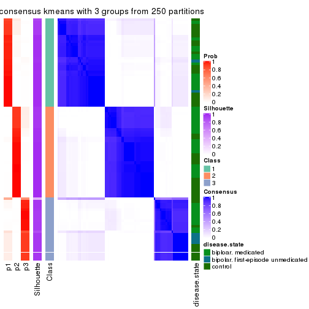
consensus_heatmap(res, k = 4)
consensus_heatmap(res, k = 5)
consensus_heatmap(res, k = 6)
Heatmaps for the membership of samples in all partitions to see how consistent they are:
membership_heatmap(res, k = 2)

membership_heatmap(res, k = 3)

membership_heatmap(res, k = 4)
membership_heatmap(res, k = 5)
membership_heatmap(res, k = 6)
As soon as we have had the classes for columns, we can look for signatures which are significantly different between classes which can be candidate marks for certain classes. Following are the heatmaps for signatures.
Signature heatmaps where rows are scaled:
get_signatures(res, k = 2)
get_signatures(res, k = 3)
get_signatures(res, k = 4)
get_signatures(res, k = 5)

get_signatures(res, k = 6)
Signature heatmaps where rows are not scaled:
get_signatures(res, k = 2, scale_rows = FALSE)
get_signatures(res, k = 3, scale_rows = FALSE)
get_signatures(res, k = 4, scale_rows = FALSE)
get_signatures(res, k = 5, scale_rows = FALSE)
get_signatures(res, k = 6, scale_rows = FALSE)
Compare the overlap of signatures from different k:
compare_signatures(res)
get_signature() returns a data frame invisibly. TO get the list of signatures, the function
call should be assigned to a variable explicitly. In following code, if plot argument is set
to FALSE, no heatmap is plotted while only the differential analysis is performed.
# code only for demonstration
tb = get_signature(res, k = ..., plot = FALSE)
An example of the output of tb is:
#> which_row fdr mean_1 mean_2 scaled_mean_1 scaled_mean_2 km
#> 1 38 0.042760348 8.373488 9.131774 -0.5533452 0.5164555 1
#> 2 40 0.018707592 7.106213 8.469186 -0.6173731 0.5762149 1
#> 3 55 0.019134737 10.221463 11.207825 -0.6159697 0.5749050 1
#> 4 59 0.006059896 5.921854 7.869574 -0.6899429 0.6439467 1
#> 5 60 0.018055526 8.928898 10.211722 -0.6204761 0.5791110 1
#> 6 98 0.009384629 15.714769 14.887706 0.6635654 -0.6193277 2
...
The columns in tb are:
which_row: row indices corresponding to the input matrix.fdr: FDR for the differential test. mean_x: The mean value in group x.scaled_mean_x: The mean value in group x after rows are scaled.km: Row groups if k-means clustering is applied to rows.UMAP plot which shows how samples are separated.
dimension_reduction(res, k = 2, method = "UMAP")
dimension_reduction(res, k = 3, method = "UMAP")
dimension_reduction(res, k = 4, method = "UMAP")
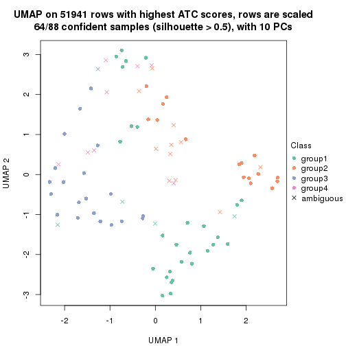
dimension_reduction(res, k = 5, method = "UMAP")
dimension_reduction(res, k = 6, method = "UMAP")
Following heatmap shows how subgroups are split when increasing k:
collect_classes(res)
Test correlation between subgroups and known annotations. If the known annotation is numeric, one-way ANOVA test is applied, and if the known annotation is discrete, chi-squared contingency table test is applied.
test_to_known_factors(res)
#> n disease.state(p) k
#> ATC:kmeans 80 0.022719 2
#> ATC:kmeans 87 0.065594 3
#> ATC:kmeans 64 0.164429 4
#> ATC:kmeans 37 0.013987 5
#> ATC:kmeans 67 0.000725 6
If matrix rows can be associated to genes, consider to use GO_Enrichment(res,
...) to perform function enrichment for the signature genes.
The object with results only for a single top-value method and a single partition method can be extracted as:
res = res_list["ATC", "skmeans"]
# you can also extract it by
# res = res_list["ATC:skmeans"]
A summary of res and all the functions that can be applied to it:
res
#> A 'ConsensusPartition' object with k = 2, 3, 4, 5, 6.
#> On a matrix with 51941 rows and 88 columns.
#> Top rows (1000, 2000, 3000, 4000, 5000) are extracted by 'ATC' method.
#> Subgroups are detected by 'skmeans' method.
#> Performed in total 1250 partitions by row resampling.
#> Best k for subgroups seems to be 6.
#>
#> Following methods can be applied to this 'ConsensusPartition' object:
#> [1] "cola_report" "collect_classes" "collect_plots"
#> [4] "collect_stats" "colnames" "compare_signatures"
#> [7] "consensus_heatmap" "dimension_reduction" "functional_enrichment"
#> [10] "get_anno_col" "get_anno" "get_classes"
#> [13] "get_consensus" "get_matrix" "get_membership"
#> [16] "get_param" "get_signatures" "get_stats"
#> [19] "is_best_k" "is_stable_k" "membership_heatmap"
#> [22] "ncol" "nrow" "plot_ecdf"
#> [25] "rownames" "select_partition_number" "show"
#> [28] "suggest_best_k" "test_to_known_factors"
collect_plots() function collects all the plots made from res for all k (number of partitions)
into one single page to provide an easy and fast comparison between different k.
collect_plots(res)
The plots are:
k and the heatmap of
predicted classes for each k.k.k.k.All the plots in panels can be made by individual functions and they are plotted later in this section.
select_partition_number() produces several plots showing different
statistics for choosing “optimized” k. There are following statistics:
k;k, the area increased is defined as \(A_k - A_{k-1}\).The detailed explanations of these statistics can be found in the cola vignette.
Generally speaking, lower PAC score, higher mean silhouette score or higher
concordance corresponds to better partition. Rand index and Jaccard index
measure how similar the current partition is compared to partition with k-1.
If they are too similar, we won't accept k is better than k-1.
select_partition_number(res)
The numeric values for all these statistics can be obtained by get_stats().
get_stats(res)
#> k 1-PAC mean_silhouette concordance area_increased Rand Jaccard
#> 2 2 0.820 0.916 0.964 0.5046 0.495 0.495
#> 3 3 1.000 0.991 0.996 0.3303 0.736 0.515
#> 4 4 0.752 0.602 0.726 0.1059 0.937 0.811
#> 5 5 0.856 0.830 0.876 0.0697 0.807 0.427
#> 6 6 0.963 0.939 0.964 0.0458 0.931 0.690
suggest_best_k() suggests the best \(k\) based on these statistics. The rules are as follows:
NA.suggest_best_k(res)
#> [1] 6
#> attr(,"optional")
#> [1] 3
There is also optional best \(k\) = 3 that is worth to check.
Following shows the table of the partitions (You need to click the show/hide
code output link to see it). The membership matrix (columns with name p*)
is inferred by
clue::cl_consensus()
function with the SE method. Basically the value in the membership matrix
represents the probability to belong to a certain group. The finall class
label for an item is determined with the group with highest probability it
belongs to.
In get_classes() function, the entropy is calculated from the membership
matrix and the silhouette score is calculated from the consensus matrix.
cbind(get_classes(res, k = 2), get_membership(res, k = 2))
#> class entropy silhouette p1 p2
#> GSM1130404 1 0.000 0.966 1.000 0.000
#> GSM1130405 1 0.900 0.549 0.684 0.316
#> GSM1130408 2 0.000 0.952 0.000 1.000
#> GSM1130409 1 0.900 0.549 0.684 0.316
#> GSM1130410 1 0.900 0.549 0.684 0.316
#> GSM1130415 2 0.000 0.952 0.000 1.000
#> GSM1130416 2 0.000 0.952 0.000 1.000
#> GSM1130417 2 0.000 0.952 0.000 1.000
#> GSM1130418 2 0.000 0.952 0.000 1.000
#> GSM1130421 2 0.000 0.952 0.000 1.000
#> GSM1130422 2 0.000 0.952 0.000 1.000
#> GSM1130423 1 0.000 0.966 1.000 0.000
#> GSM1130424 2 0.000 0.952 0.000 1.000
#> GSM1130425 1 0.000 0.966 1.000 0.000
#> GSM1130426 2 0.000 0.952 0.000 1.000
#> GSM1130427 2 0.767 0.700 0.224 0.776
#> GSM1130428 2 0.000 0.952 0.000 1.000
#> GSM1130429 2 0.000 0.952 0.000 1.000
#> GSM1130430 1 0.000 0.966 1.000 0.000
#> GSM1130431 1 0.000 0.966 1.000 0.000
#> GSM1130432 1 0.900 0.549 0.684 0.316
#> GSM1130433 1 0.000 0.966 1.000 0.000
#> GSM1130434 1 0.000 0.966 1.000 0.000
#> GSM1130435 1 0.000 0.966 1.000 0.000
#> GSM1130436 1 0.000 0.966 1.000 0.000
#> GSM1130437 1 0.000 0.966 1.000 0.000
#> GSM1130438 1 0.000 0.966 1.000 0.000
#> GSM1130439 1 0.000 0.966 1.000 0.000
#> GSM1130440 1 0.000 0.966 1.000 0.000
#> GSM1130441 2 0.000 0.952 0.000 1.000
#> GSM1130442 2 0.000 0.952 0.000 1.000
#> GSM1130443 1 0.000 0.966 1.000 0.000
#> GSM1130444 1 0.000 0.966 1.000 0.000
#> GSM1130445 1 0.000 0.966 1.000 0.000
#> GSM1130476 2 0.900 0.572 0.316 0.684
#> GSM1130483 1 0.000 0.966 1.000 0.000
#> GSM1130484 1 0.000 0.966 1.000 0.000
#> GSM1130487 1 0.000 0.966 1.000 0.000
#> GSM1130488 1 0.000 0.966 1.000 0.000
#> GSM1130419 1 0.000 0.966 1.000 0.000
#> GSM1130420 1 0.000 0.966 1.000 0.000
#> GSM1130464 1 0.000 0.966 1.000 0.000
#> GSM1130465 1 0.000 0.966 1.000 0.000
#> GSM1130468 1 0.000 0.966 1.000 0.000
#> GSM1130469 1 0.000 0.966 1.000 0.000
#> GSM1130402 1 0.000 0.966 1.000 0.000
#> GSM1130403 1 0.000 0.966 1.000 0.000
#> GSM1130406 1 0.000 0.966 1.000 0.000
#> GSM1130407 1 0.000 0.966 1.000 0.000
#> GSM1130411 2 0.000 0.952 0.000 1.000
#> GSM1130412 2 0.000 0.952 0.000 1.000
#> GSM1130413 2 0.000 0.952 0.000 1.000
#> GSM1130414 2 0.000 0.952 0.000 1.000
#> GSM1130446 2 0.000 0.952 0.000 1.000
#> GSM1130447 2 0.000 0.952 0.000 1.000
#> GSM1130448 2 0.900 0.572 0.316 0.684
#> GSM1130449 1 0.000 0.966 1.000 0.000
#> GSM1130450 2 0.000 0.952 0.000 1.000
#> GSM1130451 2 0.000 0.952 0.000 1.000
#> GSM1130452 2 0.000 0.952 0.000 1.000
#> GSM1130453 2 0.900 0.572 0.316 0.684
#> GSM1130454 2 0.494 0.860 0.108 0.892
#> GSM1130455 2 0.000 0.952 0.000 1.000
#> GSM1130456 1 0.529 0.837 0.880 0.120
#> GSM1130457 2 0.000 0.952 0.000 1.000
#> GSM1130458 2 0.000 0.952 0.000 1.000
#> GSM1130459 2 0.000 0.952 0.000 1.000
#> GSM1130460 2 0.000 0.952 0.000 1.000
#> GSM1130461 2 0.000 0.952 0.000 1.000
#> GSM1130462 2 0.000 0.952 0.000 1.000
#> GSM1130463 2 0.000 0.952 0.000 1.000
#> GSM1130466 1 0.000 0.966 1.000 0.000
#> GSM1130467 2 0.000 0.952 0.000 1.000
#> GSM1130470 1 0.000 0.966 1.000 0.000
#> GSM1130471 1 0.000 0.966 1.000 0.000
#> GSM1130472 1 0.000 0.966 1.000 0.000
#> GSM1130473 1 0.000 0.966 1.000 0.000
#> GSM1130474 2 0.456 0.872 0.096 0.904
#> GSM1130475 2 0.000 0.952 0.000 1.000
#> GSM1130477 1 0.000 0.966 1.000 0.000
#> GSM1130478 1 0.000 0.966 1.000 0.000
#> GSM1130479 1 0.000 0.966 1.000 0.000
#> GSM1130480 1 0.000 0.966 1.000 0.000
#> GSM1130481 2 0.000 0.952 0.000 1.000
#> GSM1130482 2 0.000 0.952 0.000 1.000
#> GSM1130485 2 0.900 0.572 0.316 0.684
#> GSM1130486 1 0.000 0.966 1.000 0.000
#> GSM1130489 2 0.541 0.836 0.124 0.876
cbind(get_classes(res, k = 3), get_membership(res, k = 3))
#> class entropy silhouette p1 p2 p3
#> GSM1130404 1 0.000 0.994 1.000 0.000 0.000
#> GSM1130405 1 0.000 0.994 1.000 0.000 0.000
#> GSM1130408 2 0.000 0.998 0.000 1.000 0.000
#> GSM1130409 1 0.000 0.994 1.000 0.000 0.000
#> GSM1130410 1 0.000 0.994 1.000 0.000 0.000
#> GSM1130415 2 0.000 0.998 0.000 1.000 0.000
#> GSM1130416 2 0.000 0.998 0.000 1.000 0.000
#> GSM1130417 2 0.000 0.998 0.000 1.000 0.000
#> GSM1130418 2 0.000 0.998 0.000 1.000 0.000
#> GSM1130421 2 0.000 0.998 0.000 1.000 0.000
#> GSM1130422 2 0.000 0.998 0.000 1.000 0.000
#> GSM1130423 1 0.000 0.994 1.000 0.000 0.000
#> GSM1130424 2 0.000 0.998 0.000 1.000 0.000
#> GSM1130425 1 0.000 0.994 1.000 0.000 0.000
#> GSM1130426 2 0.000 0.998 0.000 1.000 0.000
#> GSM1130427 1 0.394 0.816 0.844 0.156 0.000
#> GSM1130428 2 0.000 0.998 0.000 1.000 0.000
#> GSM1130429 2 0.000 0.998 0.000 1.000 0.000
#> GSM1130430 1 0.000 0.994 1.000 0.000 0.000
#> GSM1130431 1 0.000 0.994 1.000 0.000 0.000
#> GSM1130432 1 0.000 0.994 1.000 0.000 0.000
#> GSM1130433 1 0.000 0.994 1.000 0.000 0.000
#> GSM1130434 1 0.000 0.994 1.000 0.000 0.000
#> GSM1130435 1 0.000 0.994 1.000 0.000 0.000
#> GSM1130436 1 0.000 0.994 1.000 0.000 0.000
#> GSM1130437 1 0.000 0.994 1.000 0.000 0.000
#> GSM1130438 3 0.000 0.995 0.000 0.000 1.000
#> GSM1130439 3 0.000 0.995 0.000 0.000 1.000
#> GSM1130440 3 0.000 0.995 0.000 0.000 1.000
#> GSM1130441 2 0.000 0.998 0.000 1.000 0.000
#> GSM1130442 2 0.000 0.998 0.000 1.000 0.000
#> GSM1130443 3 0.000 0.995 0.000 0.000 1.000
#> GSM1130444 3 0.000 0.995 0.000 0.000 1.000
#> GSM1130445 3 0.000 0.995 0.000 0.000 1.000
#> GSM1130476 3 0.000 0.995 0.000 0.000 1.000
#> GSM1130483 1 0.000 0.994 1.000 0.000 0.000
#> GSM1130484 1 0.000 0.994 1.000 0.000 0.000
#> GSM1130487 3 0.000 0.995 0.000 0.000 1.000
#> GSM1130488 3 0.000 0.995 0.000 0.000 1.000
#> GSM1130419 3 0.000 0.995 0.000 0.000 1.000
#> GSM1130420 3 0.164 0.957 0.044 0.000 0.956
#> GSM1130464 3 0.000 0.995 0.000 0.000 1.000
#> GSM1130465 1 0.000 0.994 1.000 0.000 0.000
#> GSM1130468 3 0.000 0.995 0.000 0.000 1.000
#> GSM1130469 3 0.000 0.995 0.000 0.000 1.000
#> GSM1130402 1 0.000 0.994 1.000 0.000 0.000
#> GSM1130403 1 0.000 0.994 1.000 0.000 0.000
#> GSM1130406 1 0.000 0.994 1.000 0.000 0.000
#> GSM1130407 1 0.000 0.994 1.000 0.000 0.000
#> GSM1130411 2 0.000 0.998 0.000 1.000 0.000
#> GSM1130412 2 0.000 0.998 0.000 1.000 0.000
#> GSM1130413 2 0.000 0.998 0.000 1.000 0.000
#> GSM1130414 2 0.000 0.998 0.000 1.000 0.000
#> GSM1130446 2 0.000 0.998 0.000 1.000 0.000
#> GSM1130447 2 0.000 0.998 0.000 1.000 0.000
#> GSM1130448 3 0.000 0.995 0.000 0.000 1.000
#> GSM1130449 1 0.000 0.994 1.000 0.000 0.000
#> GSM1130450 2 0.000 0.998 0.000 1.000 0.000
#> GSM1130451 3 0.000 0.995 0.000 0.000 1.000
#> GSM1130452 2 0.000 0.998 0.000 1.000 0.000
#> GSM1130453 3 0.000 0.995 0.000 0.000 1.000
#> GSM1130454 3 0.000 0.995 0.000 0.000 1.000
#> GSM1130455 2 0.153 0.960 0.000 0.960 0.040
#> GSM1130456 3 0.000 0.995 0.000 0.000 1.000
#> GSM1130457 2 0.000 0.998 0.000 1.000 0.000
#> GSM1130458 2 0.000 0.998 0.000 1.000 0.000
#> GSM1130459 2 0.000 0.998 0.000 1.000 0.000
#> GSM1130460 2 0.000 0.998 0.000 1.000 0.000
#> GSM1130461 2 0.153 0.960 0.000 0.960 0.040
#> GSM1130462 2 0.000 0.998 0.000 1.000 0.000
#> GSM1130463 2 0.000 0.998 0.000 1.000 0.000
#> GSM1130466 3 0.000 0.995 0.000 0.000 1.000
#> GSM1130467 2 0.000 0.998 0.000 1.000 0.000
#> GSM1130470 3 0.000 0.995 0.000 0.000 1.000
#> GSM1130471 3 0.153 0.961 0.040 0.000 0.960
#> GSM1130472 3 0.000 0.995 0.000 0.000 1.000
#> GSM1130473 1 0.000 0.994 1.000 0.000 0.000
#> GSM1130474 3 0.000 0.995 0.000 0.000 1.000
#> GSM1130475 2 0.000 0.998 0.000 1.000 0.000
#> GSM1130477 1 0.000 0.994 1.000 0.000 0.000
#> GSM1130478 1 0.000 0.994 1.000 0.000 0.000
#> GSM1130479 1 0.000 0.994 1.000 0.000 0.000
#> GSM1130480 1 0.000 0.994 1.000 0.000 0.000
#> GSM1130481 2 0.000 0.998 0.000 1.000 0.000
#> GSM1130482 2 0.000 0.998 0.000 1.000 0.000
#> GSM1130485 3 0.000 0.995 0.000 0.000 1.000
#> GSM1130486 3 0.164 0.957 0.044 0.000 0.956
#> GSM1130489 1 0.000 0.994 1.000 0.000 0.000
cbind(get_classes(res, k = 4), get_membership(res, k = 4))
#> class entropy silhouette p1 p2 p3 p4
#> GSM1130404 1 0.4961 0.5577 0.552 0.000 0.000 0.448
#> GSM1130405 4 0.4977 -0.1182 0.460 0.000 0.000 0.540
#> GSM1130408 2 0.4193 0.7772 0.000 0.732 0.000 0.268
#> GSM1130409 4 0.4972 -0.0996 0.456 0.000 0.000 0.544
#> GSM1130410 4 0.4972 -0.0996 0.456 0.000 0.000 0.544
#> GSM1130415 2 0.4193 0.7772 0.000 0.732 0.000 0.268
#> GSM1130416 2 0.4193 0.7772 0.000 0.732 0.000 0.268
#> GSM1130417 2 0.4193 0.7772 0.000 0.732 0.000 0.268
#> GSM1130418 2 0.4193 0.7772 0.000 0.732 0.000 0.268
#> GSM1130421 2 0.4193 0.7772 0.000 0.732 0.000 0.268
#> GSM1130422 2 0.4193 0.7772 0.000 0.732 0.000 0.268
#> GSM1130423 4 0.4193 0.4531 0.268 0.000 0.000 0.732
#> GSM1130424 2 0.4304 0.6417 0.000 0.716 0.000 0.284
#> GSM1130425 4 0.4222 0.4502 0.272 0.000 0.000 0.728
#> GSM1130426 2 0.4193 0.7772 0.000 0.732 0.000 0.268
#> GSM1130427 4 0.5835 0.1661 0.280 0.064 0.000 0.656
#> GSM1130428 2 0.3726 0.6978 0.000 0.788 0.000 0.212
#> GSM1130429 2 0.4134 0.6619 0.000 0.740 0.000 0.260
#> GSM1130430 1 0.4961 0.5577 0.552 0.000 0.000 0.448
#> GSM1130431 1 0.4961 0.5577 0.552 0.000 0.000 0.448
#> GSM1130432 4 0.5000 -0.3357 0.500 0.000 0.000 0.500
#> GSM1130433 1 0.4961 0.5577 0.552 0.000 0.000 0.448
#> GSM1130434 1 0.4961 0.5577 0.552 0.000 0.000 0.448
#> GSM1130435 1 0.4961 0.5577 0.552 0.000 0.000 0.448
#> GSM1130436 1 0.4961 0.5577 0.552 0.000 0.000 0.448
#> GSM1130437 1 0.4961 0.5577 0.552 0.000 0.000 0.448
#> GSM1130438 3 0.4817 0.7011 0.388 0.000 0.612 0.000
#> GSM1130439 3 0.4817 0.7011 0.388 0.000 0.612 0.000
#> GSM1130440 3 0.4866 0.6958 0.404 0.000 0.596 0.000
#> GSM1130441 2 0.0469 0.7926 0.000 0.988 0.000 0.012
#> GSM1130442 2 0.4193 0.7772 0.000 0.732 0.000 0.268
#> GSM1130443 3 0.0000 0.8210 0.000 0.000 1.000 0.000
#> GSM1130444 3 0.0000 0.8210 0.000 0.000 1.000 0.000
#> GSM1130445 3 0.0000 0.8210 0.000 0.000 1.000 0.000
#> GSM1130476 3 0.4961 0.6706 0.448 0.000 0.552 0.000
#> GSM1130483 1 0.4961 0.5577 0.552 0.000 0.000 0.448
#> GSM1130484 1 0.4961 0.5577 0.552 0.000 0.000 0.448
#> GSM1130487 3 0.0000 0.8210 0.000 0.000 1.000 0.000
#> GSM1130488 3 0.0000 0.8210 0.000 0.000 1.000 0.000
#> GSM1130419 3 0.0000 0.8210 0.000 0.000 1.000 0.000
#> GSM1130420 3 0.2610 0.7581 0.088 0.000 0.900 0.012
#> GSM1130464 3 0.0000 0.8210 0.000 0.000 1.000 0.000
#> GSM1130465 1 0.4961 -0.1067 0.552 0.000 0.448 0.000
#> GSM1130468 3 0.0000 0.8210 0.000 0.000 1.000 0.000
#> GSM1130469 3 0.0000 0.8210 0.000 0.000 1.000 0.000
#> GSM1130402 1 0.4961 0.5577 0.552 0.000 0.000 0.448
#> GSM1130403 1 0.4961 0.5577 0.552 0.000 0.000 0.448
#> GSM1130406 1 0.4961 0.5577 0.552 0.000 0.000 0.448
#> GSM1130407 1 0.4961 0.5577 0.552 0.000 0.000 0.448
#> GSM1130411 2 0.4193 0.7772 0.000 0.732 0.000 0.268
#> GSM1130412 2 0.3400 0.7879 0.000 0.820 0.000 0.180
#> GSM1130413 2 0.4193 0.7772 0.000 0.732 0.000 0.268
#> GSM1130414 2 0.4193 0.7772 0.000 0.732 0.000 0.268
#> GSM1130446 2 0.2660 0.7709 0.056 0.908 0.000 0.036
#> GSM1130447 2 0.4304 0.6417 0.000 0.716 0.000 0.284
#> GSM1130448 3 0.4961 0.6706 0.448 0.000 0.552 0.000
#> GSM1130449 1 0.4961 0.5577 0.552 0.000 0.000 0.448
#> GSM1130450 2 0.0000 0.7912 0.000 1.000 0.000 0.000
#> GSM1130451 3 0.7764 0.6095 0.264 0.136 0.560 0.040
#> GSM1130452 2 0.4961 0.3690 0.448 0.552 0.000 0.000
#> GSM1130453 3 0.4961 0.6706 0.448 0.000 0.552 0.000
#> GSM1130454 3 0.4961 0.6706 0.448 0.000 0.552 0.000
#> GSM1130455 2 0.4961 0.3690 0.448 0.552 0.000 0.000
#> GSM1130456 3 0.0000 0.8210 0.000 0.000 1.000 0.000
#> GSM1130457 2 0.1557 0.7769 0.056 0.944 0.000 0.000
#> GSM1130458 2 0.2660 0.7709 0.056 0.908 0.000 0.036
#> GSM1130459 2 0.0000 0.7912 0.000 1.000 0.000 0.000
#> GSM1130460 2 0.1557 0.7769 0.056 0.944 0.000 0.000
#> GSM1130461 1 0.7575 -0.5048 0.448 0.412 0.016 0.124
#> GSM1130462 2 0.0000 0.7912 0.000 1.000 0.000 0.000
#> GSM1130463 2 0.0707 0.7887 0.000 0.980 0.000 0.020
#> GSM1130466 3 0.0336 0.8186 0.000 0.000 0.992 0.008
#> GSM1130467 2 0.0000 0.7912 0.000 1.000 0.000 0.000
#> GSM1130470 3 0.1211 0.8060 0.000 0.000 0.960 0.040
#> GSM1130471 3 0.6420 0.5134 0.072 0.012 0.632 0.284
#> GSM1130472 3 0.4744 0.6034 0.000 0.012 0.704 0.284
#> GSM1130473 4 0.4193 0.4531 0.268 0.000 0.000 0.732
#> GSM1130474 3 0.4961 0.6706 0.448 0.000 0.552 0.000
#> GSM1130475 2 0.4164 0.6165 0.264 0.736 0.000 0.000
#> GSM1130477 1 0.4961 0.5577 0.552 0.000 0.000 0.448
#> GSM1130478 1 0.4961 0.5577 0.552 0.000 0.000 0.448
#> GSM1130479 4 0.6074 0.3808 0.268 0.000 0.084 0.648
#> GSM1130480 1 0.1824 -0.0951 0.936 0.000 0.004 0.060
#> GSM1130481 2 0.4304 0.6417 0.000 0.716 0.000 0.284
#> GSM1130482 2 0.5497 0.6221 0.044 0.672 0.000 0.284
#> GSM1130485 3 0.1022 0.8149 0.032 0.000 0.968 0.000
#> GSM1130486 3 0.2704 0.7300 0.124 0.000 0.876 0.000
#> GSM1130489 4 0.3764 0.4454 0.216 0.000 0.000 0.784
cbind(get_classes(res, k = 5), get_membership(res, k = 5))
#> class entropy silhouette p1 p2 p3 p4 p5
#> GSM1130404 1 0.0000 0.915 1.000 0.000 0.000 0.000 0.000
#> GSM1130405 1 0.1121 0.888 0.956 0.044 0.000 0.000 0.000
#> GSM1130408 2 0.0000 0.985 0.000 1.000 0.000 0.000 0.000
#> GSM1130409 1 0.1341 0.879 0.944 0.056 0.000 0.000 0.000
#> GSM1130410 1 0.1341 0.879 0.944 0.056 0.000 0.000 0.000
#> GSM1130415 2 0.0000 0.985 0.000 1.000 0.000 0.000 0.000
#> GSM1130416 2 0.0000 0.985 0.000 1.000 0.000 0.000 0.000
#> GSM1130417 2 0.0000 0.985 0.000 1.000 0.000 0.000 0.000
#> GSM1130418 2 0.0000 0.985 0.000 1.000 0.000 0.000 0.000
#> GSM1130421 2 0.0000 0.985 0.000 1.000 0.000 0.000 0.000
#> GSM1130422 2 0.0000 0.985 0.000 1.000 0.000 0.000 0.000
#> GSM1130423 1 0.5704 0.618 0.620 0.000 0.000 0.232 0.148
#> GSM1130424 5 0.3177 0.652 0.000 0.000 0.000 0.208 0.792
#> GSM1130425 1 0.5704 0.618 0.620 0.000 0.000 0.232 0.148
#> GSM1130426 2 0.0000 0.985 0.000 1.000 0.000 0.000 0.000
#> GSM1130427 2 0.1908 0.864 0.092 0.908 0.000 0.000 0.000
#> GSM1130428 5 0.1732 0.863 0.000 0.080 0.000 0.000 0.920
#> GSM1130429 5 0.1341 0.854 0.000 0.056 0.000 0.000 0.944
#> GSM1130430 1 0.0000 0.915 1.000 0.000 0.000 0.000 0.000
#> GSM1130431 1 0.0000 0.915 1.000 0.000 0.000 0.000 0.000
#> GSM1130432 1 0.0290 0.911 0.992 0.008 0.000 0.000 0.000
#> GSM1130433 1 0.0000 0.915 1.000 0.000 0.000 0.000 0.000
#> GSM1130434 1 0.0000 0.915 1.000 0.000 0.000 0.000 0.000
#> GSM1130435 1 0.0000 0.915 1.000 0.000 0.000 0.000 0.000
#> GSM1130436 1 0.0000 0.915 1.000 0.000 0.000 0.000 0.000
#> GSM1130437 1 0.0000 0.915 1.000 0.000 0.000 0.000 0.000
#> GSM1130438 3 0.1965 0.706 0.000 0.000 0.904 0.096 0.000
#> GSM1130439 3 0.1965 0.706 0.000 0.000 0.904 0.096 0.000
#> GSM1130440 3 0.2153 0.744 0.040 0.000 0.916 0.044 0.000
#> GSM1130441 5 0.2864 0.860 0.000 0.136 0.012 0.000 0.852
#> GSM1130442 2 0.0000 0.985 0.000 1.000 0.000 0.000 0.000
#> GSM1130443 4 0.3366 0.900 0.000 0.000 0.232 0.768 0.000
#> GSM1130444 4 0.3366 0.900 0.000 0.000 0.232 0.768 0.000
#> GSM1130445 4 0.3366 0.900 0.000 0.000 0.232 0.768 0.000
#> GSM1130476 3 0.0000 0.789 0.000 0.000 1.000 0.000 0.000
#> GSM1130483 1 0.0000 0.915 1.000 0.000 0.000 0.000 0.000
#> GSM1130484 1 0.0000 0.915 1.000 0.000 0.000 0.000 0.000
#> GSM1130487 4 0.3366 0.900 0.000 0.000 0.232 0.768 0.000
#> GSM1130488 4 0.3336 0.901 0.000 0.000 0.228 0.772 0.000
#> GSM1130419 4 0.3177 0.899 0.000 0.000 0.208 0.792 0.000
#> GSM1130420 4 0.3264 0.876 0.016 0.000 0.164 0.820 0.000
#> GSM1130464 4 0.3274 0.901 0.000 0.000 0.220 0.780 0.000
#> GSM1130465 4 0.3424 0.613 0.240 0.000 0.000 0.760 0.000
#> GSM1130468 4 0.3336 0.901 0.000 0.000 0.228 0.772 0.000
#> GSM1130469 4 0.3274 0.901 0.000 0.000 0.220 0.780 0.000
#> GSM1130402 1 0.0000 0.915 1.000 0.000 0.000 0.000 0.000
#> GSM1130403 1 0.0000 0.915 1.000 0.000 0.000 0.000 0.000
#> GSM1130406 1 0.0000 0.915 1.000 0.000 0.000 0.000 0.000
#> GSM1130407 1 0.0000 0.915 1.000 0.000 0.000 0.000 0.000
#> GSM1130411 2 0.0000 0.985 0.000 1.000 0.000 0.000 0.000
#> GSM1130412 2 0.1270 0.930 0.000 0.948 0.000 0.000 0.052
#> GSM1130413 2 0.0000 0.985 0.000 1.000 0.000 0.000 0.000
#> GSM1130414 2 0.0000 0.985 0.000 1.000 0.000 0.000 0.000
#> GSM1130446 5 0.3055 0.866 0.000 0.072 0.064 0.000 0.864
#> GSM1130447 5 0.0404 0.825 0.000 0.012 0.000 0.000 0.988
#> GSM1130448 3 0.0000 0.789 0.000 0.000 1.000 0.000 0.000
#> GSM1130449 1 0.0000 0.915 1.000 0.000 0.000 0.000 0.000
#> GSM1130450 5 0.2516 0.859 0.000 0.140 0.000 0.000 0.860
#> GSM1130451 5 0.4276 0.640 0.000 0.000 0.256 0.028 0.716
#> GSM1130452 3 0.4262 0.164 0.000 0.000 0.560 0.000 0.440
#> GSM1130453 3 0.0000 0.789 0.000 0.000 1.000 0.000 0.000
#> GSM1130454 3 0.0000 0.789 0.000 0.000 1.000 0.000 0.000
#> GSM1130455 3 0.4242 0.201 0.000 0.000 0.572 0.000 0.428
#> GSM1130456 4 0.3336 0.901 0.000 0.000 0.228 0.772 0.000
#> GSM1130457 5 0.3234 0.865 0.000 0.084 0.064 0.000 0.852
#> GSM1130458 5 0.3055 0.866 0.000 0.072 0.064 0.000 0.864
#> GSM1130459 5 0.3141 0.867 0.000 0.108 0.040 0.000 0.852
#> GSM1130460 5 0.3234 0.865 0.000 0.084 0.064 0.000 0.852
#> GSM1130461 3 0.3476 0.640 0.000 0.020 0.804 0.000 0.176
#> GSM1130462 5 0.2605 0.854 0.000 0.148 0.000 0.000 0.852
#> GSM1130463 5 0.2471 0.860 0.000 0.136 0.000 0.000 0.864
#> GSM1130466 4 0.3177 0.899 0.000 0.000 0.208 0.792 0.000
#> GSM1130467 5 0.3141 0.867 0.000 0.108 0.040 0.000 0.852
#> GSM1130470 4 0.2929 0.884 0.000 0.000 0.180 0.820 0.000
#> GSM1130471 4 0.2605 0.551 0.000 0.000 0.000 0.852 0.148
#> GSM1130472 4 0.2605 0.551 0.000 0.000 0.000 0.852 0.148
#> GSM1130473 1 0.5704 0.618 0.620 0.000 0.000 0.232 0.148
#> GSM1130474 3 0.0324 0.787 0.000 0.000 0.992 0.004 0.004
#> GSM1130475 5 0.2806 0.792 0.000 0.004 0.152 0.000 0.844
#> GSM1130477 1 0.0000 0.915 1.000 0.000 0.000 0.000 0.000
#> GSM1130478 1 0.0000 0.915 1.000 0.000 0.000 0.000 0.000
#> GSM1130479 1 0.5974 0.556 0.568 0.000 0.000 0.284 0.148
#> GSM1130480 3 0.3895 0.488 0.320 0.000 0.680 0.000 0.000
#> GSM1130481 5 0.3177 0.652 0.000 0.000 0.000 0.208 0.792
#> GSM1130482 5 0.3109 0.660 0.000 0.000 0.000 0.200 0.800
#> GSM1130485 4 0.3534 0.882 0.000 0.000 0.256 0.744 0.000
#> GSM1130486 4 0.3875 0.863 0.048 0.000 0.160 0.792 0.000
#> GSM1130489 1 0.5575 0.635 0.640 0.000 0.000 0.212 0.148
cbind(get_classes(res, k = 6), get_membership(res, k = 6))
#> class entropy silhouette p1 p2 p3 p4 p5 p6
#> GSM1130404 1 0.0582 0.986 0.984 0.004 0.004 0.004 0.000 0.004
#> GSM1130405 1 0.1147 0.969 0.960 0.028 0.004 0.004 0.000 0.004
#> GSM1130408 2 0.0146 0.986 0.000 0.996 0.000 0.000 0.004 0.000
#> GSM1130409 1 0.1010 0.966 0.960 0.036 0.000 0.000 0.000 0.004
#> GSM1130410 1 0.1010 0.966 0.960 0.036 0.000 0.000 0.000 0.004
#> GSM1130415 2 0.0146 0.986 0.000 0.996 0.000 0.000 0.004 0.000
#> GSM1130416 2 0.0146 0.986 0.000 0.996 0.000 0.000 0.004 0.000
#> GSM1130417 2 0.0146 0.986 0.000 0.996 0.000 0.000 0.004 0.000
#> GSM1130418 2 0.0146 0.986 0.000 0.996 0.000 0.000 0.004 0.000
#> GSM1130421 2 0.0146 0.986 0.000 0.996 0.000 0.000 0.004 0.000
#> GSM1130422 2 0.0146 0.986 0.000 0.996 0.000 0.000 0.004 0.000
#> GSM1130423 6 0.0547 0.969 0.020 0.000 0.000 0.000 0.000 0.980
#> GSM1130424 6 0.0790 0.964 0.000 0.000 0.000 0.000 0.032 0.968
#> GSM1130425 6 0.0547 0.969 0.020 0.000 0.000 0.000 0.000 0.980
#> GSM1130426 2 0.0000 0.983 0.000 1.000 0.000 0.000 0.000 0.000
#> GSM1130427 2 0.0260 0.975 0.008 0.992 0.000 0.000 0.000 0.000
#> GSM1130428 5 0.0551 0.925 0.000 0.000 0.004 0.004 0.984 0.008
#> GSM1130429 5 0.0551 0.925 0.000 0.000 0.004 0.004 0.984 0.008
#> GSM1130430 1 0.0146 0.990 0.996 0.000 0.000 0.000 0.000 0.004
#> GSM1130431 1 0.0146 0.990 0.996 0.000 0.000 0.000 0.000 0.004
#> GSM1130432 1 0.0622 0.983 0.980 0.008 0.000 0.000 0.000 0.012
#> GSM1130433 1 0.0146 0.989 0.996 0.000 0.000 0.000 0.000 0.004
#> GSM1130434 1 0.0000 0.990 1.000 0.000 0.000 0.000 0.000 0.000
#> GSM1130435 1 0.0146 0.990 0.996 0.000 0.000 0.000 0.000 0.004
#> GSM1130436 1 0.0000 0.990 1.000 0.000 0.000 0.000 0.000 0.000
#> GSM1130437 1 0.0000 0.990 1.000 0.000 0.000 0.000 0.000 0.000
#> GSM1130438 3 0.3052 0.757 0.000 0.000 0.780 0.216 0.000 0.004
#> GSM1130439 3 0.3052 0.757 0.000 0.000 0.780 0.216 0.000 0.004
#> GSM1130440 3 0.3417 0.809 0.052 0.000 0.812 0.132 0.000 0.004
#> GSM1130441 5 0.0622 0.926 0.000 0.008 0.012 0.000 0.980 0.000
#> GSM1130442 2 0.0146 0.986 0.000 0.996 0.000 0.000 0.004 0.000
#> GSM1130443 4 0.0146 0.982 0.000 0.000 0.004 0.996 0.000 0.000
#> GSM1130444 4 0.0146 0.982 0.000 0.000 0.004 0.996 0.000 0.000
#> GSM1130445 4 0.0146 0.982 0.000 0.000 0.004 0.996 0.000 0.000
#> GSM1130476 3 0.0363 0.870 0.000 0.000 0.988 0.012 0.000 0.000
#> GSM1130483 1 0.0146 0.989 0.996 0.000 0.000 0.000 0.000 0.004
#> GSM1130484 1 0.0146 0.989 0.996 0.000 0.000 0.000 0.000 0.004
#> GSM1130487 4 0.0146 0.982 0.000 0.000 0.004 0.996 0.000 0.000
#> GSM1130488 4 0.0146 0.982 0.000 0.000 0.004 0.996 0.000 0.000
#> GSM1130419 4 0.0260 0.981 0.000 0.000 0.000 0.992 0.000 0.008
#> GSM1130420 4 0.0260 0.981 0.000 0.000 0.000 0.992 0.000 0.008
#> GSM1130464 4 0.0146 0.982 0.000 0.000 0.004 0.996 0.000 0.000
#> GSM1130465 4 0.0858 0.957 0.028 0.000 0.000 0.968 0.000 0.004
#> GSM1130468 4 0.0000 0.982 0.000 0.000 0.000 1.000 0.000 0.000
#> GSM1130469 4 0.0000 0.982 0.000 0.000 0.000 1.000 0.000 0.000
#> GSM1130402 1 0.0291 0.989 0.992 0.004 0.000 0.000 0.000 0.004
#> GSM1130403 1 0.0582 0.986 0.984 0.004 0.004 0.004 0.000 0.004
#> GSM1130406 1 0.0146 0.989 0.996 0.000 0.000 0.000 0.000 0.004
#> GSM1130407 1 0.0146 0.989 0.996 0.000 0.000 0.000 0.000 0.004
#> GSM1130411 2 0.0146 0.986 0.000 0.996 0.000 0.000 0.004 0.000
#> GSM1130412 2 0.2340 0.825 0.000 0.852 0.000 0.000 0.148 0.000
#> GSM1130413 2 0.0000 0.983 0.000 1.000 0.000 0.000 0.000 0.000
#> GSM1130414 2 0.0146 0.986 0.000 0.996 0.000 0.000 0.004 0.000
#> GSM1130446 5 0.0146 0.928 0.000 0.000 0.000 0.000 0.996 0.004
#> GSM1130447 5 0.0551 0.925 0.000 0.000 0.004 0.004 0.984 0.008
#> GSM1130448 3 0.0363 0.870 0.000 0.000 0.988 0.012 0.000 0.000
#> GSM1130449 1 0.0363 0.986 0.988 0.000 0.000 0.000 0.000 0.012
#> GSM1130450 5 0.0622 0.925 0.000 0.008 0.000 0.000 0.980 0.012
#> GSM1130451 5 0.3642 0.748 0.000 0.000 0.236 0.012 0.744 0.008
#> GSM1130452 5 0.3290 0.743 0.000 0.000 0.252 0.000 0.744 0.004
#> GSM1130453 3 0.0363 0.870 0.000 0.000 0.988 0.012 0.000 0.000
#> GSM1130454 3 0.0291 0.867 0.000 0.000 0.992 0.004 0.004 0.000
#> GSM1130455 5 0.3314 0.738 0.000 0.000 0.256 0.000 0.740 0.004
#> GSM1130456 4 0.0000 0.982 0.000 0.000 0.000 1.000 0.000 0.000
#> GSM1130457 5 0.0458 0.926 0.000 0.000 0.016 0.000 0.984 0.000
#> GSM1130458 5 0.0146 0.928 0.000 0.000 0.000 0.000 0.996 0.004
#> GSM1130459 5 0.0508 0.927 0.000 0.004 0.012 0.000 0.984 0.000
#> GSM1130460 5 0.0458 0.926 0.000 0.000 0.016 0.000 0.984 0.000
#> GSM1130461 3 0.0146 0.865 0.000 0.000 0.996 0.000 0.004 0.000
#> GSM1130462 5 0.0405 0.927 0.000 0.004 0.000 0.000 0.988 0.008
#> GSM1130463 5 0.0260 0.927 0.000 0.000 0.000 0.000 0.992 0.008
#> GSM1130466 4 0.0363 0.979 0.000 0.000 0.000 0.988 0.000 0.012
#> GSM1130467 5 0.0508 0.927 0.000 0.004 0.012 0.000 0.984 0.000
#> GSM1130470 4 0.0458 0.977 0.000 0.000 0.000 0.984 0.000 0.016
#> GSM1130471 6 0.0692 0.966 0.000 0.000 0.000 0.020 0.004 0.976
#> GSM1130472 6 0.0777 0.963 0.000 0.000 0.000 0.024 0.004 0.972
#> GSM1130473 6 0.0458 0.971 0.016 0.000 0.000 0.000 0.000 0.984
#> GSM1130474 3 0.2848 0.704 0.000 0.000 0.828 0.004 0.160 0.008
#> GSM1130475 5 0.3081 0.777 0.000 0.000 0.220 0.000 0.776 0.004
#> GSM1130477 1 0.0146 0.990 0.996 0.000 0.000 0.000 0.000 0.004
#> GSM1130478 1 0.0146 0.990 0.996 0.000 0.000 0.000 0.000 0.004
#> GSM1130479 6 0.0405 0.972 0.004 0.000 0.000 0.008 0.000 0.988
#> GSM1130480 3 0.2989 0.739 0.176 0.004 0.812 0.000 0.000 0.008
#> GSM1130481 6 0.0713 0.964 0.000 0.000 0.000 0.000 0.028 0.972
#> GSM1130482 6 0.1387 0.928 0.000 0.000 0.000 0.000 0.068 0.932
#> GSM1130485 4 0.2473 0.819 0.000 0.000 0.136 0.856 0.000 0.008
#> GSM1130486 4 0.0146 0.981 0.000 0.000 0.000 0.996 0.000 0.004
#> GSM1130489 6 0.0508 0.972 0.012 0.000 0.000 0.000 0.004 0.984
Heatmaps for the consensus matrix. It visualizes the probability of two samples to be in a same group.
consensus_heatmap(res, k = 2)
consensus_heatmap(res, k = 3)

consensus_heatmap(res, k = 4)
consensus_heatmap(res, k = 5)
consensus_heatmap(res, k = 6)
Heatmaps for the membership of samples in all partitions to see how consistent they are:
membership_heatmap(res, k = 2)
membership_heatmap(res, k = 3)

membership_heatmap(res, k = 4)
membership_heatmap(res, k = 5)
membership_heatmap(res, k = 6)
As soon as we have had the classes for columns, we can look for signatures which are significantly different between classes which can be candidate marks for certain classes. Following are the heatmaps for signatures.
Signature heatmaps where rows are scaled:
get_signatures(res, k = 2)
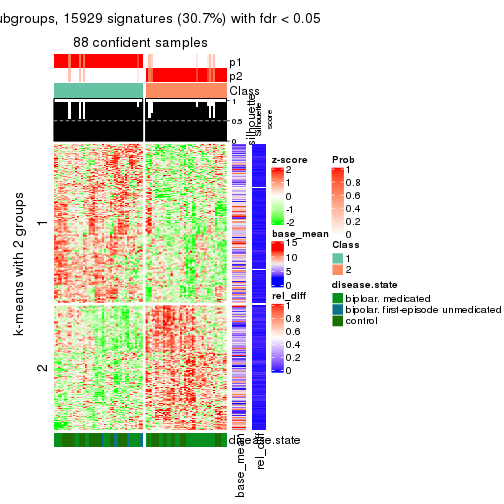
get_signatures(res, k = 3)
get_signatures(res, k = 4)
get_signatures(res, k = 5)
get_signatures(res, k = 6)
Signature heatmaps where rows are not scaled:
get_signatures(res, k = 2, scale_rows = FALSE)
get_signatures(res, k = 3, scale_rows = FALSE)
get_signatures(res, k = 4, scale_rows = FALSE)
get_signatures(res, k = 5, scale_rows = FALSE)
get_signatures(res, k = 6, scale_rows = FALSE)
Compare the overlap of signatures from different k:
compare_signatures(res)
get_signature() returns a data frame invisibly. TO get the list of signatures, the function
call should be assigned to a variable explicitly. In following code, if plot argument is set
to FALSE, no heatmap is plotted while only the differential analysis is performed.
# code only for demonstration
tb = get_signature(res, k = ..., plot = FALSE)
An example of the output of tb is:
#> which_row fdr mean_1 mean_2 scaled_mean_1 scaled_mean_2 km
#> 1 38 0.042760348 8.373488 9.131774 -0.5533452 0.5164555 1
#> 2 40 0.018707592 7.106213 8.469186 -0.6173731 0.5762149 1
#> 3 55 0.019134737 10.221463 11.207825 -0.6159697 0.5749050 1
#> 4 59 0.006059896 5.921854 7.869574 -0.6899429 0.6439467 1
#> 5 60 0.018055526 8.928898 10.211722 -0.6204761 0.5791110 1
#> 6 98 0.009384629 15.714769 14.887706 0.6635654 -0.6193277 2
...
The columns in tb are:
which_row: row indices corresponding to the input matrix.fdr: FDR for the differential test. mean_x: The mean value in group x.scaled_mean_x: The mean value in group x after rows are scaled.km: Row groups if k-means clustering is applied to rows.UMAP plot which shows how samples are separated.
dimension_reduction(res, k = 2, method = "UMAP")
dimension_reduction(res, k = 3, method = "UMAP")
dimension_reduction(res, k = 4, method = "UMAP")
dimension_reduction(res, k = 5, method = "UMAP")
dimension_reduction(res, k = 6, method = "UMAP")
Following heatmap shows how subgroups are split when increasing k:
collect_classes(res)
Test correlation between subgroups and known annotations. If the known annotation is numeric, one-way ANOVA test is applied, and if the known annotation is discrete, chi-squared contingency table test is applied.
test_to_known_factors(res)
#> n disease.state(p) k
#> ATC:skmeans 88 4.67e-03 2
#> ATC:skmeans 88 1.49e-02 3
#> ATC:skmeans 73 2.63e-02 4
#> ATC:skmeans 85 3.13e-05 5
#> ATC:skmeans 88 3.52e-06 6
If matrix rows can be associated to genes, consider to use GO_Enrichment(res,
...) to perform function enrichment for the signature genes.
The object with results only for a single top-value method and a single partition method can be extracted as:
res = res_list["ATC", "pam"]
# you can also extract it by
# res = res_list["ATC:pam"]
A summary of res and all the functions that can be applied to it:
res
#> A 'ConsensusPartition' object with k = 2, 3, 4, 5, 6.
#> On a matrix with 51941 rows and 88 columns.
#> Top rows (1000, 2000, 3000, 4000, 5000) are extracted by 'ATC' method.
#> Subgroups are detected by 'pam' method.
#> Performed in total 1250 partitions by row resampling.
#> Best k for subgroups seems to be 3.
#>
#> Following methods can be applied to this 'ConsensusPartition' object:
#> [1] "cola_report" "collect_classes" "collect_plots"
#> [4] "collect_stats" "colnames" "compare_signatures"
#> [7] "consensus_heatmap" "dimension_reduction" "functional_enrichment"
#> [10] "get_anno_col" "get_anno" "get_classes"
#> [13] "get_consensus" "get_matrix" "get_membership"
#> [16] "get_param" "get_signatures" "get_stats"
#> [19] "is_best_k" "is_stable_k" "membership_heatmap"
#> [22] "ncol" "nrow" "plot_ecdf"
#> [25] "rownames" "select_partition_number" "show"
#> [28] "suggest_best_k" "test_to_known_factors"
collect_plots() function collects all the plots made from res for all k (number of partitions)
into one single page to provide an easy and fast comparison between different k.
collect_plots(res)
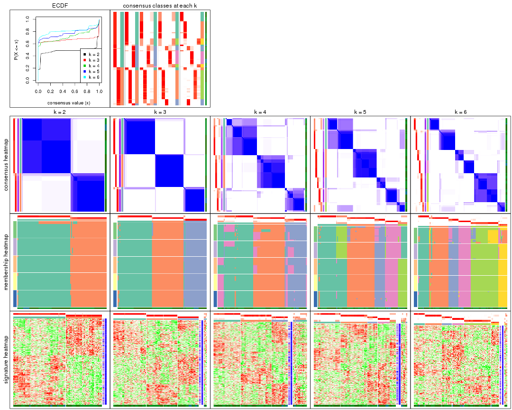
The plots are:
k and the heatmap of
predicted classes for each k.k.k.k.All the plots in panels can be made by individual functions and they are plotted later in this section.
select_partition_number() produces several plots showing different
statistics for choosing “optimized” k. There are following statistics:
k;k, the area increased is defined as \(A_k - A_{k-1}\).The detailed explanations of these statistics can be found in the cola vignette.
Generally speaking, lower PAC score, higher mean silhouette score or higher
concordance corresponds to better partition. Rand index and Jaccard index
measure how similar the current partition is compared to partition with k-1.
If they are too similar, we won't accept k is better than k-1.
select_partition_number(res)
The numeric values for all these statistics can be obtained by get_stats().
get_stats(res)
#> k 1-PAC mean_silhouette concordance area_increased Rand Jaccard
#> 2 2 1.000 0.967 0.977 0.4859 0.511 0.511
#> 3 3 1.000 0.956 0.983 0.3673 0.753 0.547
#> 4 4 0.799 0.690 0.874 0.0825 0.980 0.941
#> 5 5 0.861 0.811 0.878 0.0708 0.885 0.664
#> 6 6 0.866 0.887 0.925 0.0566 0.945 0.771
suggest_best_k() suggests the best \(k\) based on these statistics. The rules are as follows:
NA.suggest_best_k(res)
#> [1] 3
#> attr(,"optional")
#> [1] 2
There is also optional best \(k\) = 2 that is worth to check.
Following shows the table of the partitions (You need to click the show/hide
code output link to see it). The membership matrix (columns with name p*)
is inferred by
clue::cl_consensus()
function with the SE method. Basically the value in the membership matrix
represents the probability to belong to a certain group. The finall class
label for an item is determined with the group with highest probability it
belongs to.
In get_classes() function, the entropy is calculated from the membership
matrix and the silhouette score is calculated from the consensus matrix.
cbind(get_classes(res, k = 2), get_membership(res, k = 2))
#> class entropy silhouette p1 p2
#> GSM1130404 1 0.224 0.980 0.964 0.036
#> GSM1130405 1 0.224 0.980 0.964 0.036
#> GSM1130408 2 0.000 0.980 0.000 1.000
#> GSM1130409 1 0.224 0.980 0.964 0.036
#> GSM1130410 1 0.224 0.980 0.964 0.036
#> GSM1130415 2 0.000 0.980 0.000 1.000
#> GSM1130416 2 0.000 0.980 0.000 1.000
#> GSM1130417 2 0.000 0.980 0.000 1.000
#> GSM1130418 2 0.000 0.980 0.000 1.000
#> GSM1130421 2 0.000 0.980 0.000 1.000
#> GSM1130422 2 0.000 0.980 0.000 1.000
#> GSM1130423 1 0.224 0.980 0.964 0.036
#> GSM1130424 2 0.000 0.980 0.000 1.000
#> GSM1130425 1 0.224 0.980 0.964 0.036
#> GSM1130426 1 0.224 0.980 0.964 0.036
#> GSM1130427 1 0.224 0.980 0.964 0.036
#> GSM1130428 2 0.000 0.980 0.000 1.000
#> GSM1130429 2 0.000 0.980 0.000 1.000
#> GSM1130430 1 0.224 0.980 0.964 0.036
#> GSM1130431 1 0.224 0.980 0.964 0.036
#> GSM1130432 1 0.224 0.980 0.964 0.036
#> GSM1130433 1 0.224 0.980 0.964 0.036
#> GSM1130434 1 0.224 0.980 0.964 0.036
#> GSM1130435 1 0.224 0.980 0.964 0.036
#> GSM1130436 1 0.224 0.980 0.964 0.036
#> GSM1130437 1 0.224 0.980 0.964 0.036
#> GSM1130438 1 0.000 0.972 1.000 0.000
#> GSM1130439 1 0.000 0.972 1.000 0.000
#> GSM1130440 1 0.000 0.972 1.000 0.000
#> GSM1130441 2 0.000 0.980 0.000 1.000
#> GSM1130442 2 0.000 0.980 0.000 1.000
#> GSM1130443 1 0.000 0.972 1.000 0.000
#> GSM1130444 1 0.000 0.972 1.000 0.000
#> GSM1130445 1 0.000 0.972 1.000 0.000
#> GSM1130476 1 0.000 0.972 1.000 0.000
#> GSM1130483 1 0.224 0.980 0.964 0.036
#> GSM1130484 1 0.224 0.980 0.964 0.036
#> GSM1130487 1 0.000 0.972 1.000 0.000
#> GSM1130488 1 0.000 0.972 1.000 0.000
#> GSM1130419 1 0.000 0.972 1.000 0.000
#> GSM1130420 1 0.000 0.972 1.000 0.000
#> GSM1130464 1 0.000 0.972 1.000 0.000
#> GSM1130465 1 0.000 0.972 1.000 0.000
#> GSM1130468 1 0.000 0.972 1.000 0.000
#> GSM1130469 1 0.000 0.972 1.000 0.000
#> GSM1130402 1 0.224 0.980 0.964 0.036
#> GSM1130403 1 0.224 0.980 0.964 0.036
#> GSM1130406 1 0.224 0.980 0.964 0.036
#> GSM1130407 1 0.224 0.980 0.964 0.036
#> GSM1130411 2 0.000 0.980 0.000 1.000
#> GSM1130412 2 0.000 0.980 0.000 1.000
#> GSM1130413 2 0.802 0.669 0.244 0.756
#> GSM1130414 2 0.000 0.980 0.000 1.000
#> GSM1130446 2 0.000 0.980 0.000 1.000
#> GSM1130447 2 0.000 0.980 0.000 1.000
#> GSM1130448 1 0.000 0.972 1.000 0.000
#> GSM1130449 1 0.224 0.980 0.964 0.036
#> GSM1130450 2 0.000 0.980 0.000 1.000
#> GSM1130451 2 0.224 0.953 0.036 0.964
#> GSM1130452 2 0.000 0.980 0.000 1.000
#> GSM1130453 1 0.775 0.688 0.772 0.228
#> GSM1130454 2 0.730 0.778 0.204 0.796
#> GSM1130455 2 0.224 0.953 0.036 0.964
#> GSM1130456 1 0.000 0.972 1.000 0.000
#> GSM1130457 2 0.000 0.980 0.000 1.000
#> GSM1130458 2 0.000 0.980 0.000 1.000
#> GSM1130459 2 0.000 0.980 0.000 1.000
#> GSM1130460 2 0.000 0.980 0.000 1.000
#> GSM1130461 2 0.224 0.953 0.036 0.964
#> GSM1130462 2 0.000 0.980 0.000 1.000
#> GSM1130463 2 0.000 0.980 0.000 1.000
#> GSM1130466 1 0.000 0.972 1.000 0.000
#> GSM1130467 2 0.000 0.980 0.000 1.000
#> GSM1130470 1 0.000 0.972 1.000 0.000
#> GSM1130471 1 0.224 0.980 0.964 0.036
#> GSM1130472 1 0.224 0.980 0.964 0.036
#> GSM1130473 1 0.224 0.980 0.964 0.036
#> GSM1130474 2 0.295 0.947 0.052 0.948
#> GSM1130475 2 0.000 0.980 0.000 1.000
#> GSM1130477 1 0.224 0.980 0.964 0.036
#> GSM1130478 1 0.224 0.980 0.964 0.036
#> GSM1130479 1 0.224 0.980 0.964 0.036
#> GSM1130480 1 0.224 0.980 0.964 0.036
#> GSM1130481 2 0.000 0.980 0.000 1.000
#> GSM1130482 2 0.000 0.980 0.000 1.000
#> GSM1130485 1 0.000 0.972 1.000 0.000
#> GSM1130486 1 0.224 0.980 0.964 0.036
#> GSM1130489 2 0.402 0.905 0.080 0.920
cbind(get_classes(res, k = 3), get_membership(res, k = 3))
#> class entropy silhouette p1 p2 p3
#> GSM1130404 1 0.000 0.982 1.000 0.000 0.000
#> GSM1130405 1 0.000 0.982 1.000 0.000 0.000
#> GSM1130408 2 0.000 0.995 0.000 1.000 0.000
#> GSM1130409 1 0.000 0.982 1.000 0.000 0.000
#> GSM1130410 1 0.000 0.982 1.000 0.000 0.000
#> GSM1130415 2 0.000 0.995 0.000 1.000 0.000
#> GSM1130416 2 0.000 0.995 0.000 1.000 0.000
#> GSM1130417 2 0.000 0.995 0.000 1.000 0.000
#> GSM1130418 2 0.000 0.995 0.000 1.000 0.000
#> GSM1130421 2 0.000 0.995 0.000 1.000 0.000
#> GSM1130422 1 0.236 0.909 0.928 0.072 0.000
#> GSM1130423 1 0.000 0.982 1.000 0.000 0.000
#> GSM1130424 2 0.000 0.995 0.000 1.000 0.000
#> GSM1130425 1 0.000 0.982 1.000 0.000 0.000
#> GSM1130426 1 0.000 0.982 1.000 0.000 0.000
#> GSM1130427 1 0.000 0.982 1.000 0.000 0.000
#> GSM1130428 2 0.000 0.995 0.000 1.000 0.000
#> GSM1130429 2 0.000 0.995 0.000 1.000 0.000
#> GSM1130430 1 0.000 0.982 1.000 0.000 0.000
#> GSM1130431 1 0.000 0.982 1.000 0.000 0.000
#> GSM1130432 1 0.000 0.982 1.000 0.000 0.000
#> GSM1130433 1 0.000 0.982 1.000 0.000 0.000
#> GSM1130434 1 0.000 0.982 1.000 0.000 0.000
#> GSM1130435 1 0.000 0.982 1.000 0.000 0.000
#> GSM1130436 1 0.000 0.982 1.000 0.000 0.000
#> GSM1130437 1 0.000 0.982 1.000 0.000 0.000
#> GSM1130438 3 0.000 0.961 0.000 0.000 1.000
#> GSM1130439 3 0.000 0.961 0.000 0.000 1.000
#> GSM1130440 3 0.601 0.412 0.372 0.000 0.628
#> GSM1130441 2 0.000 0.995 0.000 1.000 0.000
#> GSM1130442 2 0.000 0.995 0.000 1.000 0.000
#> GSM1130443 3 0.000 0.961 0.000 0.000 1.000
#> GSM1130444 3 0.000 0.961 0.000 0.000 1.000
#> GSM1130445 3 0.000 0.961 0.000 0.000 1.000
#> GSM1130476 3 0.000 0.961 0.000 0.000 1.000
#> GSM1130483 1 0.000 0.982 1.000 0.000 0.000
#> GSM1130484 1 0.000 0.982 1.000 0.000 0.000
#> GSM1130487 3 0.000 0.961 0.000 0.000 1.000
#> GSM1130488 3 0.000 0.961 0.000 0.000 1.000
#> GSM1130419 3 0.000 0.961 0.000 0.000 1.000
#> GSM1130420 3 0.000 0.961 0.000 0.000 1.000
#> GSM1130464 3 0.000 0.961 0.000 0.000 1.000
#> GSM1130465 3 0.627 0.188 0.452 0.000 0.548
#> GSM1130468 3 0.000 0.961 0.000 0.000 1.000
#> GSM1130469 3 0.000 0.961 0.000 0.000 1.000
#> GSM1130402 1 0.000 0.982 1.000 0.000 0.000
#> GSM1130403 1 0.000 0.982 1.000 0.000 0.000
#> GSM1130406 1 0.000 0.982 1.000 0.000 0.000
#> GSM1130407 1 0.000 0.982 1.000 0.000 0.000
#> GSM1130411 2 0.000 0.995 0.000 1.000 0.000
#> GSM1130412 2 0.000 0.995 0.000 1.000 0.000
#> GSM1130413 1 0.000 0.982 1.000 0.000 0.000
#> GSM1130414 2 0.000 0.995 0.000 1.000 0.000
#> GSM1130446 2 0.000 0.995 0.000 1.000 0.000
#> GSM1130447 2 0.000 0.995 0.000 1.000 0.000
#> GSM1130448 3 0.000 0.961 0.000 0.000 1.000
#> GSM1130449 1 0.000 0.982 1.000 0.000 0.000
#> GSM1130450 2 0.000 0.995 0.000 1.000 0.000
#> GSM1130451 2 0.400 0.808 0.000 0.840 0.160
#> GSM1130452 2 0.000 0.995 0.000 1.000 0.000
#> GSM1130453 3 0.000 0.961 0.000 0.000 1.000
#> GSM1130454 3 0.000 0.961 0.000 0.000 1.000
#> GSM1130455 2 0.000 0.995 0.000 1.000 0.000
#> GSM1130456 3 0.000 0.961 0.000 0.000 1.000
#> GSM1130457 2 0.000 0.995 0.000 1.000 0.000
#> GSM1130458 2 0.000 0.995 0.000 1.000 0.000
#> GSM1130459 2 0.000 0.995 0.000 1.000 0.000
#> GSM1130460 2 0.000 0.995 0.000 1.000 0.000
#> GSM1130461 2 0.000 0.995 0.000 1.000 0.000
#> GSM1130462 2 0.000 0.995 0.000 1.000 0.000
#> GSM1130463 2 0.000 0.995 0.000 1.000 0.000
#> GSM1130466 3 0.000 0.961 0.000 0.000 1.000
#> GSM1130467 2 0.000 0.995 0.000 1.000 0.000
#> GSM1130470 3 0.000 0.961 0.000 0.000 1.000
#> GSM1130471 1 0.000 0.982 1.000 0.000 0.000
#> GSM1130472 1 0.271 0.890 0.912 0.088 0.000
#> GSM1130473 1 0.000 0.982 1.000 0.000 0.000
#> GSM1130474 3 0.000 0.961 0.000 0.000 1.000
#> GSM1130475 2 0.000 0.995 0.000 1.000 0.000
#> GSM1130477 1 0.000 0.982 1.000 0.000 0.000
#> GSM1130478 1 0.000 0.982 1.000 0.000 0.000
#> GSM1130479 1 0.000 0.982 1.000 0.000 0.000
#> GSM1130480 1 0.000 0.982 1.000 0.000 0.000
#> GSM1130481 2 0.000 0.995 0.000 1.000 0.000
#> GSM1130482 2 0.000 0.995 0.000 1.000 0.000
#> GSM1130485 3 0.000 0.961 0.000 0.000 1.000
#> GSM1130486 1 0.000 0.982 1.000 0.000 0.000
#> GSM1130489 1 0.595 0.447 0.640 0.360 0.000
cbind(get_classes(res, k = 4), get_membership(res, k = 4))
#> class entropy silhouette p1 p2 p3 p4
#> GSM1130404 1 0.0000 0.8213 1.000 0.000 0.000 0.000
#> GSM1130405 1 0.0000 0.8213 1.000 0.000 0.000 0.000
#> GSM1130408 2 0.0000 0.9320 0.000 1.000 0.000 0.000
#> GSM1130409 1 0.0000 0.8213 1.000 0.000 0.000 0.000
#> GSM1130410 1 0.0000 0.8213 1.000 0.000 0.000 0.000
#> GSM1130415 2 0.1022 0.9227 0.032 0.968 0.000 0.000
#> GSM1130416 2 0.0000 0.9320 0.000 1.000 0.000 0.000
#> GSM1130417 2 0.1022 0.9227 0.032 0.968 0.000 0.000
#> GSM1130418 2 0.1022 0.9227 0.032 0.968 0.000 0.000
#> GSM1130421 2 0.0000 0.9320 0.000 1.000 0.000 0.000
#> GSM1130422 1 0.1637 0.7860 0.940 0.060 0.000 0.000
#> GSM1130423 1 0.4999 0.2263 0.508 0.000 0.000 0.492
#> GSM1130424 2 0.0000 0.9320 0.000 1.000 0.000 0.000
#> GSM1130425 1 0.4999 0.2263 0.508 0.000 0.000 0.492
#> GSM1130426 1 0.0000 0.8213 1.000 0.000 0.000 0.000
#> GSM1130427 1 0.0000 0.8213 1.000 0.000 0.000 0.000
#> GSM1130428 2 0.1022 0.9227 0.032 0.968 0.000 0.000
#> GSM1130429 2 0.1022 0.9227 0.032 0.968 0.000 0.000
#> GSM1130430 1 0.0000 0.8213 1.000 0.000 0.000 0.000
#> GSM1130431 1 0.0000 0.8213 1.000 0.000 0.000 0.000
#> GSM1130432 1 0.0000 0.8213 1.000 0.000 0.000 0.000
#> GSM1130433 1 0.0817 0.8157 0.976 0.000 0.000 0.024
#> GSM1130434 1 0.3172 0.7786 0.840 0.000 0.000 0.160
#> GSM1130435 1 0.3123 0.7801 0.844 0.000 0.000 0.156
#> GSM1130436 1 0.3172 0.7786 0.840 0.000 0.000 0.160
#> GSM1130437 1 0.3172 0.7786 0.840 0.000 0.000 0.160
#> GSM1130438 3 0.0000 0.6990 0.000 0.000 1.000 0.000
#> GSM1130439 3 0.0000 0.6990 0.000 0.000 1.000 0.000
#> GSM1130440 3 0.6551 0.0929 0.240 0.000 0.624 0.136
#> GSM1130441 2 0.0000 0.9320 0.000 1.000 0.000 0.000
#> GSM1130442 2 0.0000 0.9320 0.000 1.000 0.000 0.000
#> GSM1130443 3 0.0000 0.6990 0.000 0.000 1.000 0.000
#> GSM1130444 3 0.0000 0.6990 0.000 0.000 1.000 0.000
#> GSM1130445 3 0.0000 0.6990 0.000 0.000 1.000 0.000
#> GSM1130476 3 0.4040 0.5750 0.000 0.000 0.752 0.248
#> GSM1130483 1 0.3172 0.7786 0.840 0.000 0.000 0.160
#> GSM1130484 1 0.3172 0.7786 0.840 0.000 0.000 0.160
#> GSM1130487 3 0.0000 0.6990 0.000 0.000 1.000 0.000
#> GSM1130488 3 0.0000 0.6990 0.000 0.000 1.000 0.000
#> GSM1130419 3 0.1389 0.6297 0.000 0.000 0.952 0.048
#> GSM1130420 4 0.4996 0.0000 0.000 0.000 0.484 0.516
#> GSM1130464 3 0.0000 0.6990 0.000 0.000 1.000 0.000
#> GSM1130465 1 0.7358 0.0896 0.448 0.000 0.392 0.160
#> GSM1130468 3 0.0000 0.6990 0.000 0.000 1.000 0.000
#> GSM1130469 3 0.0000 0.6990 0.000 0.000 1.000 0.000
#> GSM1130402 1 0.0000 0.8213 1.000 0.000 0.000 0.000
#> GSM1130403 1 0.0000 0.8213 1.000 0.000 0.000 0.000
#> GSM1130406 1 0.3172 0.7786 0.840 0.000 0.000 0.160
#> GSM1130407 1 0.3172 0.7786 0.840 0.000 0.000 0.160
#> GSM1130411 2 0.0000 0.9320 0.000 1.000 0.000 0.000
#> GSM1130412 2 0.0000 0.9320 0.000 1.000 0.000 0.000
#> GSM1130413 1 0.0000 0.8213 1.000 0.000 0.000 0.000
#> GSM1130414 2 0.1022 0.9227 0.032 0.968 0.000 0.000
#> GSM1130446 2 0.0000 0.9320 0.000 1.000 0.000 0.000
#> GSM1130447 2 0.1022 0.9227 0.032 0.968 0.000 0.000
#> GSM1130448 3 0.4040 0.5750 0.000 0.000 0.752 0.248
#> GSM1130449 1 0.0000 0.8213 1.000 0.000 0.000 0.000
#> GSM1130450 2 0.0000 0.9320 0.000 1.000 0.000 0.000
#> GSM1130451 2 0.5823 0.5654 0.000 0.608 0.044 0.348
#> GSM1130452 2 0.4661 0.6354 0.000 0.652 0.000 0.348
#> GSM1130453 3 0.4040 0.5750 0.000 0.000 0.752 0.248
#> GSM1130454 3 0.4661 0.4711 0.000 0.000 0.652 0.348
#> GSM1130455 2 0.4661 0.6354 0.000 0.652 0.000 0.348
#> GSM1130456 3 0.0336 0.6963 0.000 0.000 0.992 0.008
#> GSM1130457 2 0.2345 0.8791 0.000 0.900 0.000 0.100
#> GSM1130458 2 0.0000 0.9320 0.000 1.000 0.000 0.000
#> GSM1130459 2 0.2345 0.8791 0.000 0.900 0.000 0.100
#> GSM1130460 2 0.2345 0.8791 0.000 0.900 0.000 0.100
#> GSM1130461 2 0.4661 0.6354 0.000 0.652 0.000 0.348
#> GSM1130462 2 0.0000 0.9320 0.000 1.000 0.000 0.000
#> GSM1130463 2 0.1022 0.9227 0.032 0.968 0.000 0.000
#> GSM1130466 3 0.4999 -0.9457 0.000 0.000 0.508 0.492
#> GSM1130467 2 0.0000 0.9320 0.000 1.000 0.000 0.000
#> GSM1130470 3 0.4999 -0.9457 0.000 0.000 0.508 0.492
#> GSM1130471 1 0.4999 0.2263 0.508 0.000 0.000 0.492
#> GSM1130472 1 0.4999 0.2263 0.508 0.000 0.000 0.492
#> GSM1130473 1 0.4999 0.2263 0.508 0.000 0.000 0.492
#> GSM1130474 3 0.4661 0.4711 0.000 0.000 0.652 0.348
#> GSM1130475 2 0.0592 0.9267 0.000 0.984 0.000 0.016
#> GSM1130477 1 0.3172 0.7786 0.840 0.000 0.000 0.160
#> GSM1130478 1 0.2868 0.7862 0.864 0.000 0.000 0.136
#> GSM1130479 1 0.4999 0.2263 0.508 0.000 0.000 0.492
#> GSM1130480 1 0.0000 0.8213 1.000 0.000 0.000 0.000
#> GSM1130481 2 0.1022 0.9227 0.032 0.968 0.000 0.000
#> GSM1130482 2 0.0000 0.9320 0.000 1.000 0.000 0.000
#> GSM1130485 3 0.4040 0.5750 0.000 0.000 0.752 0.248
#> GSM1130486 1 0.0000 0.8213 1.000 0.000 0.000 0.000
#> GSM1130489 1 0.4605 0.4301 0.664 0.336 0.000 0.000
cbind(get_classes(res, k = 5), get_membership(res, k = 5))
#> class entropy silhouette p1 p2 p3 p4 p5
#> GSM1130404 1 0.0000 0.747 1.000 0.000 0.000 0.000 0.000
#> GSM1130405 1 0.0000 0.747 1.000 0.000 0.000 0.000 0.000
#> GSM1130408 2 0.0794 0.962 0.000 0.972 0.028 0.000 0.000
#> GSM1130409 1 0.0000 0.747 1.000 0.000 0.000 0.000 0.000
#> GSM1130410 1 0.0000 0.747 1.000 0.000 0.000 0.000 0.000
#> GSM1130415 2 0.0000 0.968 0.000 1.000 0.000 0.000 0.000
#> GSM1130416 2 0.0000 0.968 0.000 1.000 0.000 0.000 0.000
#> GSM1130417 2 0.0000 0.968 0.000 1.000 0.000 0.000 0.000
#> GSM1130418 2 0.0000 0.968 0.000 1.000 0.000 0.000 0.000
#> GSM1130421 2 0.0000 0.968 0.000 1.000 0.000 0.000 0.000
#> GSM1130422 1 0.1410 0.709 0.940 0.060 0.000 0.000 0.000
#> GSM1130423 5 0.4192 0.758 0.404 0.000 0.000 0.000 0.596
#> GSM1130424 2 0.0609 0.968 0.000 0.980 0.020 0.000 0.000
#> GSM1130425 5 0.4192 0.758 0.404 0.000 0.000 0.000 0.596
#> GSM1130426 1 0.0000 0.747 1.000 0.000 0.000 0.000 0.000
#> GSM1130427 1 0.0000 0.747 1.000 0.000 0.000 0.000 0.000
#> GSM1130428 2 0.0609 0.963 0.020 0.980 0.000 0.000 0.000
#> GSM1130429 2 0.0609 0.963 0.020 0.980 0.000 0.000 0.000
#> GSM1130430 1 0.0000 0.747 1.000 0.000 0.000 0.000 0.000
#> GSM1130431 1 0.0000 0.747 1.000 0.000 0.000 0.000 0.000
#> GSM1130432 1 0.0000 0.747 1.000 0.000 0.000 0.000 0.000
#> GSM1130433 1 0.0703 0.743 0.976 0.000 0.000 0.000 0.024
#> GSM1130434 1 0.4192 0.644 0.596 0.000 0.000 0.000 0.404
#> GSM1130435 1 0.4182 0.645 0.600 0.000 0.000 0.000 0.400
#> GSM1130436 1 0.4192 0.644 0.596 0.000 0.000 0.000 0.404
#> GSM1130437 1 0.4192 0.644 0.596 0.000 0.000 0.000 0.404
#> GSM1130438 4 0.0000 0.952 0.000 0.000 0.000 1.000 0.000
#> GSM1130439 4 0.0000 0.952 0.000 0.000 0.000 1.000 0.000
#> GSM1130440 4 0.5719 0.416 0.064 0.000 0.016 0.588 0.332
#> GSM1130441 2 0.0609 0.968 0.000 0.980 0.020 0.000 0.000
#> GSM1130442 2 0.0000 0.968 0.000 1.000 0.000 0.000 0.000
#> GSM1130443 4 0.0000 0.952 0.000 0.000 0.000 1.000 0.000
#> GSM1130444 4 0.0000 0.952 0.000 0.000 0.000 1.000 0.000
#> GSM1130445 4 0.0000 0.952 0.000 0.000 0.000 1.000 0.000
#> GSM1130476 3 0.2966 0.837 0.000 0.000 0.816 0.184 0.000
#> GSM1130483 1 0.4192 0.644 0.596 0.000 0.000 0.000 0.404
#> GSM1130484 1 0.4192 0.644 0.596 0.000 0.000 0.000 0.404
#> GSM1130487 4 0.0000 0.952 0.000 0.000 0.000 1.000 0.000
#> GSM1130488 4 0.0000 0.952 0.000 0.000 0.000 1.000 0.000
#> GSM1130419 4 0.1197 0.904 0.000 0.000 0.000 0.952 0.048
#> GSM1130420 5 0.3949 0.360 0.000 0.000 0.000 0.332 0.668
#> GSM1130464 4 0.0000 0.952 0.000 0.000 0.000 1.000 0.000
#> GSM1130465 1 0.6439 0.433 0.420 0.000 0.000 0.176 0.404
#> GSM1130468 4 0.0000 0.952 0.000 0.000 0.000 1.000 0.000
#> GSM1130469 4 0.0000 0.952 0.000 0.000 0.000 1.000 0.000
#> GSM1130402 1 0.0000 0.747 1.000 0.000 0.000 0.000 0.000
#> GSM1130403 1 0.0000 0.747 1.000 0.000 0.000 0.000 0.000
#> GSM1130406 1 0.4192 0.644 0.596 0.000 0.000 0.000 0.404
#> GSM1130407 1 0.4192 0.644 0.596 0.000 0.000 0.000 0.404
#> GSM1130411 2 0.0000 0.968 0.000 1.000 0.000 0.000 0.000
#> GSM1130412 2 0.0000 0.968 0.000 1.000 0.000 0.000 0.000
#> GSM1130413 1 0.0609 0.739 0.980 0.020 0.000 0.000 0.000
#> GSM1130414 2 0.0000 0.968 0.000 1.000 0.000 0.000 0.000
#> GSM1130446 2 0.0609 0.968 0.000 0.980 0.020 0.000 0.000
#> GSM1130447 2 0.0880 0.954 0.032 0.968 0.000 0.000 0.000
#> GSM1130448 3 0.2966 0.837 0.000 0.000 0.816 0.184 0.000
#> GSM1130449 1 0.0000 0.747 1.000 0.000 0.000 0.000 0.000
#> GSM1130450 2 0.0609 0.968 0.000 0.980 0.020 0.000 0.000
#> GSM1130451 3 0.0510 0.876 0.000 0.016 0.984 0.000 0.000
#> GSM1130452 3 0.0000 0.887 0.000 0.000 1.000 0.000 0.000
#> GSM1130453 3 0.2966 0.837 0.000 0.000 0.816 0.184 0.000
#> GSM1130454 3 0.0609 0.891 0.000 0.000 0.980 0.020 0.000
#> GSM1130455 3 0.0000 0.887 0.000 0.000 1.000 0.000 0.000
#> GSM1130456 4 0.0404 0.941 0.000 0.000 0.012 0.988 0.000
#> GSM1130457 2 0.2966 0.828 0.000 0.816 0.184 0.000 0.000
#> GSM1130458 2 0.0609 0.968 0.000 0.980 0.020 0.000 0.000
#> GSM1130459 2 0.2966 0.828 0.000 0.816 0.184 0.000 0.000
#> GSM1130460 2 0.2966 0.828 0.000 0.816 0.184 0.000 0.000
#> GSM1130461 3 0.0000 0.887 0.000 0.000 1.000 0.000 0.000
#> GSM1130462 2 0.0609 0.968 0.000 0.980 0.020 0.000 0.000
#> GSM1130463 2 0.0609 0.963 0.020 0.980 0.000 0.000 0.000
#> GSM1130466 5 0.4192 0.299 0.000 0.000 0.000 0.404 0.596
#> GSM1130467 2 0.0609 0.968 0.000 0.980 0.020 0.000 0.000
#> GSM1130470 5 0.4192 0.299 0.000 0.000 0.000 0.404 0.596
#> GSM1130471 5 0.4192 0.758 0.404 0.000 0.000 0.000 0.596
#> GSM1130472 5 0.4192 0.758 0.404 0.000 0.000 0.000 0.596
#> GSM1130473 5 0.4192 0.758 0.404 0.000 0.000 0.000 0.596
#> GSM1130474 3 0.0609 0.891 0.000 0.000 0.980 0.020 0.000
#> GSM1130475 2 0.1341 0.947 0.000 0.944 0.056 0.000 0.000
#> GSM1130477 1 0.4192 0.644 0.596 0.000 0.000 0.000 0.404
#> GSM1130478 1 0.3932 0.663 0.672 0.000 0.000 0.000 0.328
#> GSM1130479 5 0.4192 0.758 0.404 0.000 0.000 0.000 0.596
#> GSM1130480 1 0.0000 0.747 1.000 0.000 0.000 0.000 0.000
#> GSM1130481 2 0.0609 0.963 0.020 0.980 0.000 0.000 0.000
#> GSM1130482 2 0.0609 0.968 0.000 0.980 0.020 0.000 0.000
#> GSM1130485 3 0.3109 0.822 0.000 0.000 0.800 0.200 0.000
#> GSM1130486 1 0.0000 0.747 1.000 0.000 0.000 0.000 0.000
#> GSM1130489 1 0.3983 0.231 0.660 0.340 0.000 0.000 0.000
cbind(get_classes(res, k = 6), get_membership(res, k = 6))
#> class entropy silhouette p1 p2 p3 p4 p5 p6
#> GSM1130404 2 0.0000 0.923 0.000 1.000 0.000 0.000 0.000 0.000
#> GSM1130405 2 0.0000 0.923 0.000 1.000 0.000 0.000 0.000 0.000
#> GSM1130408 5 0.1049 0.895 0.000 0.000 0.008 0.000 0.960 0.032
#> GSM1130409 2 0.0000 0.923 0.000 1.000 0.000 0.000 0.000 0.000
#> GSM1130410 2 0.0000 0.923 0.000 1.000 0.000 0.000 0.000 0.000
#> GSM1130415 5 0.0937 0.895 0.000 0.000 0.000 0.000 0.960 0.040
#> GSM1130416 5 0.0937 0.895 0.000 0.000 0.000 0.000 0.960 0.040
#> GSM1130417 5 0.0937 0.895 0.000 0.000 0.000 0.000 0.960 0.040
#> GSM1130418 5 0.0937 0.895 0.000 0.000 0.000 0.000 0.960 0.040
#> GSM1130421 5 0.0937 0.895 0.000 0.000 0.000 0.000 0.960 0.040
#> GSM1130422 2 0.0935 0.893 0.000 0.964 0.000 0.000 0.032 0.004
#> GSM1130423 6 0.2597 0.849 0.000 0.176 0.000 0.000 0.000 0.824
#> GSM1130424 5 0.2219 0.911 0.000 0.000 0.000 0.000 0.864 0.136
#> GSM1130425 6 0.2597 0.849 0.000 0.176 0.000 0.000 0.000 0.824
#> GSM1130426 2 0.0000 0.923 0.000 1.000 0.000 0.000 0.000 0.000
#> GSM1130427 2 0.0000 0.923 0.000 1.000 0.000 0.000 0.000 0.000
#> GSM1130428 5 0.2536 0.907 0.000 0.020 0.000 0.000 0.864 0.116
#> GSM1130429 5 0.2536 0.907 0.000 0.020 0.000 0.000 0.864 0.116
#> GSM1130430 2 0.0000 0.923 0.000 1.000 0.000 0.000 0.000 0.000
#> GSM1130431 2 0.0000 0.923 0.000 1.000 0.000 0.000 0.000 0.000
#> GSM1130432 2 0.0000 0.923 0.000 1.000 0.000 0.000 0.000 0.000
#> GSM1130433 2 0.0547 0.906 0.020 0.980 0.000 0.000 0.000 0.000
#> GSM1130434 1 0.0000 0.970 1.000 0.000 0.000 0.000 0.000 0.000
#> GSM1130435 2 0.3843 0.178 0.452 0.548 0.000 0.000 0.000 0.000
#> GSM1130436 1 0.0000 0.970 1.000 0.000 0.000 0.000 0.000 0.000
#> GSM1130437 1 0.0000 0.970 1.000 0.000 0.000 0.000 0.000 0.000
#> GSM1130438 4 0.0000 0.993 0.000 0.000 0.000 1.000 0.000 0.000
#> GSM1130439 4 0.0000 0.993 0.000 0.000 0.000 1.000 0.000 0.000
#> GSM1130440 1 0.3646 0.784 0.800 0.060 0.008 0.132 0.000 0.000
#> GSM1130441 5 0.2733 0.898 0.000 0.000 0.080 0.000 0.864 0.056
#> GSM1130442 5 0.0713 0.898 0.000 0.000 0.000 0.000 0.972 0.028
#> GSM1130443 4 0.0000 0.993 0.000 0.000 0.000 1.000 0.000 0.000
#> GSM1130444 4 0.0000 0.993 0.000 0.000 0.000 1.000 0.000 0.000
#> GSM1130445 4 0.0000 0.993 0.000 0.000 0.000 1.000 0.000 0.000
#> GSM1130476 3 0.2597 0.835 0.000 0.000 0.824 0.176 0.000 0.000
#> GSM1130483 1 0.0000 0.970 1.000 0.000 0.000 0.000 0.000 0.000
#> GSM1130484 1 0.0000 0.970 1.000 0.000 0.000 0.000 0.000 0.000
#> GSM1130487 4 0.0000 0.993 0.000 0.000 0.000 1.000 0.000 0.000
#> GSM1130488 4 0.0000 0.993 0.000 0.000 0.000 1.000 0.000 0.000
#> GSM1130419 4 0.1075 0.943 0.000 0.000 0.000 0.952 0.000 0.048
#> GSM1130420 6 0.3324 0.771 0.060 0.004 0.000 0.112 0.000 0.824
#> GSM1130464 4 0.0000 0.993 0.000 0.000 0.000 1.000 0.000 0.000
#> GSM1130465 1 0.0000 0.970 1.000 0.000 0.000 0.000 0.000 0.000
#> GSM1130468 4 0.0000 0.993 0.000 0.000 0.000 1.000 0.000 0.000
#> GSM1130469 4 0.0000 0.993 0.000 0.000 0.000 1.000 0.000 0.000
#> GSM1130402 2 0.0000 0.923 0.000 1.000 0.000 0.000 0.000 0.000
#> GSM1130403 2 0.0000 0.923 0.000 1.000 0.000 0.000 0.000 0.000
#> GSM1130406 1 0.0000 0.970 1.000 0.000 0.000 0.000 0.000 0.000
#> GSM1130407 1 0.0000 0.970 1.000 0.000 0.000 0.000 0.000 0.000
#> GSM1130411 5 0.0937 0.895 0.000 0.000 0.000 0.000 0.960 0.040
#> GSM1130412 5 0.0937 0.895 0.000 0.000 0.000 0.000 0.960 0.040
#> GSM1130413 2 0.3123 0.740 0.000 0.824 0.000 0.000 0.136 0.040
#> GSM1130414 5 0.0937 0.895 0.000 0.000 0.000 0.000 0.960 0.040
#> GSM1130446 5 0.2219 0.911 0.000 0.000 0.000 0.000 0.864 0.136
#> GSM1130447 5 0.2618 0.906 0.000 0.024 0.000 0.000 0.860 0.116
#> GSM1130448 3 0.2597 0.835 0.000 0.000 0.824 0.176 0.000 0.000
#> GSM1130449 2 0.0000 0.923 0.000 1.000 0.000 0.000 0.000 0.000
#> GSM1130450 5 0.2219 0.911 0.000 0.000 0.000 0.000 0.864 0.136
#> GSM1130451 3 0.0260 0.887 0.000 0.000 0.992 0.000 0.008 0.000
#> GSM1130452 3 0.0547 0.879 0.000 0.000 0.980 0.000 0.000 0.020
#> GSM1130453 3 0.2597 0.835 0.000 0.000 0.824 0.176 0.000 0.000
#> GSM1130454 3 0.0000 0.891 0.000 0.000 1.000 0.000 0.000 0.000
#> GSM1130455 3 0.0000 0.891 0.000 0.000 1.000 0.000 0.000 0.000
#> GSM1130456 4 0.0458 0.977 0.000 0.000 0.016 0.984 0.000 0.000
#> GSM1130457 5 0.3122 0.846 0.000 0.000 0.176 0.000 0.804 0.020
#> GSM1130458 5 0.2219 0.911 0.000 0.000 0.000 0.000 0.864 0.136
#> GSM1130459 5 0.3122 0.846 0.000 0.000 0.176 0.000 0.804 0.020
#> GSM1130460 5 0.3122 0.846 0.000 0.000 0.176 0.000 0.804 0.020
#> GSM1130461 3 0.0000 0.891 0.000 0.000 1.000 0.000 0.000 0.000
#> GSM1130462 5 0.2219 0.911 0.000 0.000 0.000 0.000 0.864 0.136
#> GSM1130463 5 0.2536 0.907 0.000 0.020 0.000 0.000 0.864 0.116
#> GSM1130466 6 0.3684 0.459 0.000 0.000 0.000 0.372 0.000 0.628
#> GSM1130467 5 0.2219 0.911 0.000 0.000 0.000 0.000 0.864 0.136
#> GSM1130470 6 0.2854 0.713 0.000 0.000 0.000 0.208 0.000 0.792
#> GSM1130471 6 0.2135 0.839 0.000 0.128 0.000 0.000 0.000 0.872
#> GSM1130472 6 0.1267 0.792 0.000 0.060 0.000 0.000 0.000 0.940
#> GSM1130473 6 0.2597 0.849 0.000 0.176 0.000 0.000 0.000 0.824
#> GSM1130474 3 0.0000 0.891 0.000 0.000 1.000 0.000 0.000 0.000
#> GSM1130475 5 0.2624 0.880 0.000 0.000 0.124 0.000 0.856 0.020
#> GSM1130477 1 0.0000 0.970 1.000 0.000 0.000 0.000 0.000 0.000
#> GSM1130478 1 0.1556 0.884 0.920 0.080 0.000 0.000 0.000 0.000
#> GSM1130479 6 0.2597 0.849 0.000 0.176 0.000 0.000 0.000 0.824
#> GSM1130480 2 0.0363 0.914 0.000 0.988 0.000 0.000 0.000 0.012
#> GSM1130481 5 0.2536 0.907 0.000 0.020 0.000 0.000 0.864 0.116
#> GSM1130482 5 0.2219 0.911 0.000 0.000 0.000 0.000 0.864 0.136
#> GSM1130485 3 0.2664 0.828 0.000 0.000 0.816 0.184 0.000 0.000
#> GSM1130486 2 0.0000 0.923 0.000 1.000 0.000 0.000 0.000 0.000
#> GSM1130489 2 0.4955 0.375 0.000 0.608 0.000 0.000 0.296 0.096
Heatmaps for the consensus matrix. It visualizes the probability of two samples to be in a same group.
consensus_heatmap(res, k = 2)
consensus_heatmap(res, k = 3)
consensus_heatmap(res, k = 4)
consensus_heatmap(res, k = 5)
consensus_heatmap(res, k = 6)
Heatmaps for the membership of samples in all partitions to see how consistent they are:
membership_heatmap(res, k = 2)
membership_heatmap(res, k = 3)
membership_heatmap(res, k = 4)
membership_heatmap(res, k = 5)
membership_heatmap(res, k = 6)
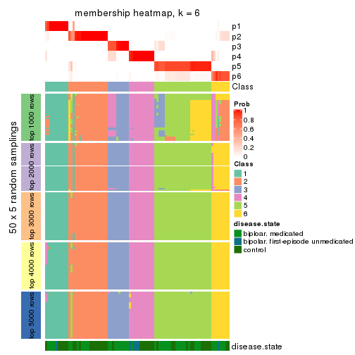
As soon as we have had the classes for columns, we can look for signatures which are significantly different between classes which can be candidate marks for certain classes. Following are the heatmaps for signatures.
Signature heatmaps where rows are scaled:
get_signatures(res, k = 2)
get_signatures(res, k = 3)
get_signatures(res, k = 4)
get_signatures(res, k = 5)

get_signatures(res, k = 6)
Signature heatmaps where rows are not scaled:
get_signatures(res, k = 2, scale_rows = FALSE)
get_signatures(res, k = 3, scale_rows = FALSE)
get_signatures(res, k = 4, scale_rows = FALSE)
get_signatures(res, k = 5, scale_rows = FALSE)
get_signatures(res, k = 6, scale_rows = FALSE)
Compare the overlap of signatures from different k:
compare_signatures(res)
get_signature() returns a data frame invisibly. TO get the list of signatures, the function
call should be assigned to a variable explicitly. In following code, if plot argument is set
to FALSE, no heatmap is plotted while only the differential analysis is performed.
# code only for demonstration
tb = get_signature(res, k = ..., plot = FALSE)
An example of the output of tb is:
#> which_row fdr mean_1 mean_2 scaled_mean_1 scaled_mean_2 km
#> 1 38 0.042760348 8.373488 9.131774 -0.5533452 0.5164555 1
#> 2 40 0.018707592 7.106213 8.469186 -0.6173731 0.5762149 1
#> 3 55 0.019134737 10.221463 11.207825 -0.6159697 0.5749050 1
#> 4 59 0.006059896 5.921854 7.869574 -0.6899429 0.6439467 1
#> 5 60 0.018055526 8.928898 10.211722 -0.6204761 0.5791110 1
#> 6 98 0.009384629 15.714769 14.887706 0.6635654 -0.6193277 2
...
The columns in tb are:
which_row: row indices corresponding to the input matrix.fdr: FDR for the differential test. mean_x: The mean value in group x.scaled_mean_x: The mean value in group x after rows are scaled.km: Row groups if k-means clustering is applied to rows.UMAP plot which shows how samples are separated.
dimension_reduction(res, k = 2, method = "UMAP")
dimension_reduction(res, k = 3, method = "UMAP")
dimension_reduction(res, k = 4, method = "UMAP")
dimension_reduction(res, k = 5, method = "UMAP")
dimension_reduction(res, k = 6, method = "UMAP")
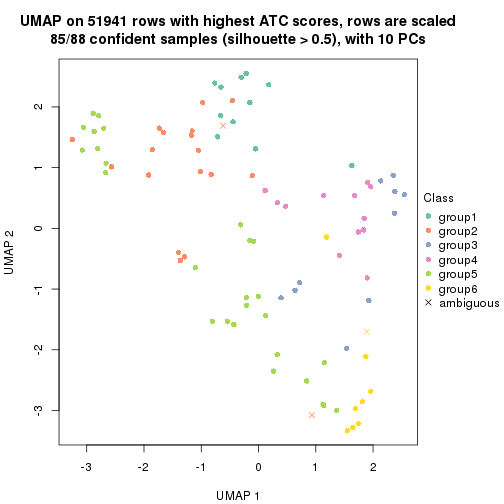
Following heatmap shows how subgroups are split when increasing k:
collect_classes(res)
Test correlation between subgroups and known annotations. If the known annotation is numeric, one-way ANOVA test is applied, and if the known annotation is discrete, chi-squared contingency table test is applied.
test_to_known_factors(res)
#> n disease.state(p) k
#> ATC:pam 88 7.58e-03 2
#> ATC:pam 85 6.11e-04 3
#> ATC:pam 74 3.07e-04 4
#> ATC:pam 82 8.06e-06 5
#> ATC:pam 85 5.45e-04 6
If matrix rows can be associated to genes, consider to use GO_Enrichment(res,
...) to perform function enrichment for the signature genes.
The object with results only for a single top-value method and a single partition method can be extracted as:
res = res_list["ATC", "mclust"]
# you can also extract it by
# res = res_list["ATC:mclust"]
A summary of res and all the functions that can be applied to it:
res
#> A 'ConsensusPartition' object with k = 2, 3, 4, 5, 6.
#> On a matrix with 51941 rows and 88 columns.
#> Top rows (1000, 2000, 3000, 4000, 5000) are extracted by 'ATC' method.
#> Subgroups are detected by 'mclust' method.
#> Performed in total 1250 partitions by row resampling.
#> Best k for subgroups seems to be 6.
#>
#> Following methods can be applied to this 'ConsensusPartition' object:
#> [1] "cola_report" "collect_classes" "collect_plots"
#> [4] "collect_stats" "colnames" "compare_signatures"
#> [7] "consensus_heatmap" "dimension_reduction" "functional_enrichment"
#> [10] "get_anno_col" "get_anno" "get_classes"
#> [13] "get_consensus" "get_matrix" "get_membership"
#> [16] "get_param" "get_signatures" "get_stats"
#> [19] "is_best_k" "is_stable_k" "membership_heatmap"
#> [22] "ncol" "nrow" "plot_ecdf"
#> [25] "rownames" "select_partition_number" "show"
#> [28] "suggest_best_k" "test_to_known_factors"
collect_plots() function collects all the plots made from res for all k (number of partitions)
into one single page to provide an easy and fast comparison between different k.
collect_plots(res)
The plots are:
k and the heatmap of
predicted classes for each k.k.k.k.All the plots in panels can be made by individual functions and they are plotted later in this section.
select_partition_number() produces several plots showing different
statistics for choosing “optimized” k. There are following statistics:
k;k, the area increased is defined as \(A_k - A_{k-1}\).The detailed explanations of these statistics can be found in the cola vignette.
Generally speaking, lower PAC score, higher mean silhouette score or higher
concordance corresponds to better partition. Rand index and Jaccard index
measure how similar the current partition is compared to partition with k-1.
If they are too similar, we won't accept k is better than k-1.
select_partition_number(res)
The numeric values for all these statistics can be obtained by get_stats().
get_stats(res)
#> k 1-PAC mean_silhouette concordance area_increased Rand Jaccard
#> 2 2 0.527 0.714 0.861 0.4470 0.532 0.532
#> 3 3 0.952 0.907 0.957 0.3595 0.759 0.587
#> 4 4 0.647 0.831 0.863 0.1470 0.736 0.454
#> 5 5 0.520 0.403 0.627 0.0663 0.837 0.565
#> 6 6 0.932 0.930 0.939 0.0845 0.772 0.348
suggest_best_k() suggests the best \(k\) based on these statistics. The rules are as follows:
NA.suggest_best_k(res)
#> [1] 6
#> attr(,"optional")
#> [1] 3
There is also optional best \(k\) = 3 that is worth to check.
Following shows the table of the partitions (You need to click the show/hide
code output link to see it). The membership matrix (columns with name p*)
is inferred by
clue::cl_consensus()
function with the SE method. Basically the value in the membership matrix
represents the probability to belong to a certain group. The finall class
label for an item is determined with the group with highest probability it
belongs to.
In get_classes() function, the entropy is calculated from the membership
matrix and the silhouette score is calculated from the consensus matrix.
cbind(get_classes(res, k = 2), get_membership(res, k = 2))
#> class entropy silhouette p1 p2
#> GSM1130404 1 0.9580 0.586 0.620 0.380
#> GSM1130405 1 0.1414 0.779 0.980 0.020
#> GSM1130408 1 0.9580 0.586 0.620 0.380
#> GSM1130409 1 0.1414 0.779 0.980 0.020
#> GSM1130410 1 0.1414 0.779 0.980 0.020
#> GSM1130415 1 0.1414 0.779 0.980 0.020
#> GSM1130416 1 0.1414 0.779 0.980 0.020
#> GSM1130417 1 0.1414 0.779 0.980 0.020
#> GSM1130418 1 0.1414 0.779 0.980 0.020
#> GSM1130421 1 0.2236 0.776 0.964 0.036
#> GSM1130422 1 0.1843 0.778 0.972 0.028
#> GSM1130423 1 0.9580 0.586 0.620 0.380
#> GSM1130424 1 0.9580 0.586 0.620 0.380
#> GSM1130425 1 0.9580 0.586 0.620 0.380
#> GSM1130426 1 0.2236 0.776 0.964 0.036
#> GSM1130427 1 0.1414 0.779 0.980 0.020
#> GSM1130428 1 0.9580 0.586 0.620 0.380
#> GSM1130429 1 0.9661 0.566 0.608 0.392
#> GSM1130430 1 0.1414 0.779 0.980 0.020
#> GSM1130431 1 0.1843 0.778 0.972 0.028
#> GSM1130432 1 0.1414 0.779 0.980 0.020
#> GSM1130433 1 0.1414 0.779 0.980 0.020
#> GSM1130434 1 0.0000 0.769 1.000 0.000
#> GSM1130435 1 0.0000 0.769 1.000 0.000
#> GSM1130436 1 0.0000 0.769 1.000 0.000
#> GSM1130437 1 0.0000 0.769 1.000 0.000
#> GSM1130438 2 0.0000 0.893 0.000 1.000
#> GSM1130439 2 0.0000 0.893 0.000 1.000
#> GSM1130440 2 0.8081 0.540 0.248 0.752
#> GSM1130441 1 0.9896 0.460 0.560 0.440
#> GSM1130442 1 0.1414 0.779 0.980 0.020
#> GSM1130443 2 0.0000 0.893 0.000 1.000
#> GSM1130444 2 0.0000 0.893 0.000 1.000
#> GSM1130445 2 0.0000 0.893 0.000 1.000
#> GSM1130476 2 0.0000 0.893 0.000 1.000
#> GSM1130483 1 0.0000 0.769 1.000 0.000
#> GSM1130484 1 0.0000 0.769 1.000 0.000
#> GSM1130487 2 0.0000 0.893 0.000 1.000
#> GSM1130488 2 0.5737 0.740 0.136 0.864
#> GSM1130419 2 0.0000 0.893 0.000 1.000
#> GSM1130420 1 0.9710 0.552 0.600 0.400
#> GSM1130464 2 0.0000 0.893 0.000 1.000
#> GSM1130465 1 0.9661 0.566 0.608 0.392
#> GSM1130468 2 0.0000 0.893 0.000 1.000
#> GSM1130469 2 0.0000 0.893 0.000 1.000
#> GSM1130402 1 0.0672 0.773 0.992 0.008
#> GSM1130403 1 0.9580 0.586 0.620 0.380
#> GSM1130406 1 0.0000 0.769 1.000 0.000
#> GSM1130407 1 0.0000 0.769 1.000 0.000
#> GSM1130411 1 0.1414 0.779 0.980 0.020
#> GSM1130412 1 0.9552 0.589 0.624 0.376
#> GSM1130413 1 0.1414 0.779 0.980 0.020
#> GSM1130414 1 0.1414 0.779 0.980 0.020
#> GSM1130446 2 0.9358 0.280 0.352 0.648
#> GSM1130447 1 0.9710 0.552 0.600 0.400
#> GSM1130448 2 0.0000 0.893 0.000 1.000
#> GSM1130449 1 0.1414 0.779 0.980 0.020
#> GSM1130450 1 0.9580 0.586 0.620 0.380
#> GSM1130451 2 0.0000 0.893 0.000 1.000
#> GSM1130452 2 0.0000 0.893 0.000 1.000
#> GSM1130453 2 0.0000 0.893 0.000 1.000
#> GSM1130454 2 0.0000 0.893 0.000 1.000
#> GSM1130455 2 0.0000 0.893 0.000 1.000
#> GSM1130456 2 0.0000 0.893 0.000 1.000
#> GSM1130457 2 0.6801 0.680 0.180 0.820
#> GSM1130458 2 0.9358 0.280 0.352 0.648
#> GSM1130459 2 0.9358 0.280 0.352 0.648
#> GSM1130460 2 0.0000 0.893 0.000 1.000
#> GSM1130461 2 0.0000 0.893 0.000 1.000
#> GSM1130462 1 0.9580 0.586 0.620 0.380
#> GSM1130463 1 0.9580 0.586 0.620 0.380
#> GSM1130466 2 0.0000 0.893 0.000 1.000
#> GSM1130467 2 0.9963 -0.188 0.464 0.536
#> GSM1130470 2 0.0000 0.893 0.000 1.000
#> GSM1130471 1 0.9710 0.552 0.600 0.400
#> GSM1130472 1 0.9996 0.321 0.512 0.488
#> GSM1130473 1 0.9580 0.586 0.620 0.380
#> GSM1130474 2 0.0000 0.893 0.000 1.000
#> GSM1130475 2 0.8763 0.441 0.296 0.704
#> GSM1130477 1 0.0000 0.769 1.000 0.000
#> GSM1130478 1 0.0000 0.769 1.000 0.000
#> GSM1130479 1 0.9580 0.586 0.620 0.380
#> GSM1130480 1 0.9580 0.586 0.620 0.380
#> GSM1130481 1 0.9580 0.586 0.620 0.380
#> GSM1130482 1 0.9580 0.586 0.620 0.380
#> GSM1130485 2 0.0000 0.893 0.000 1.000
#> GSM1130486 1 0.9710 0.552 0.600 0.400
#> GSM1130489 1 0.1843 0.778 0.972 0.028
cbind(get_classes(res, k = 3), get_membership(res, k = 3))
#> class entropy silhouette p1 p2 p3
#> GSM1130404 2 0.1753 0.946 0.048 0.952 0.000
#> GSM1130405 2 0.1753 0.946 0.048 0.952 0.000
#> GSM1130408 2 0.0000 0.955 0.000 1.000 0.000
#> GSM1130409 2 0.1753 0.946 0.048 0.952 0.000
#> GSM1130410 2 0.1753 0.946 0.048 0.952 0.000
#> GSM1130415 2 0.0000 0.955 0.000 1.000 0.000
#> GSM1130416 2 0.0000 0.955 0.000 1.000 0.000
#> GSM1130417 2 0.0000 0.955 0.000 1.000 0.000
#> GSM1130418 2 0.0000 0.955 0.000 1.000 0.000
#> GSM1130421 2 0.0000 0.955 0.000 1.000 0.000
#> GSM1130422 2 0.0000 0.955 0.000 1.000 0.000
#> GSM1130423 2 0.1753 0.946 0.048 0.952 0.000
#> GSM1130424 2 0.0237 0.953 0.004 0.996 0.000
#> GSM1130425 2 0.1753 0.946 0.048 0.952 0.000
#> GSM1130426 2 0.0000 0.955 0.000 1.000 0.000
#> GSM1130427 2 0.1163 0.951 0.028 0.972 0.000
#> GSM1130428 2 0.0237 0.953 0.004 0.996 0.000
#> GSM1130429 2 0.0237 0.953 0.004 0.996 0.000
#> GSM1130430 2 0.1753 0.946 0.048 0.952 0.000
#> GSM1130431 2 0.1753 0.946 0.048 0.952 0.000
#> GSM1130432 2 0.1753 0.946 0.048 0.952 0.000
#> GSM1130433 2 0.1753 0.946 0.048 0.952 0.000
#> GSM1130434 1 0.0237 0.996 0.996 0.004 0.000
#> GSM1130435 1 0.0237 0.996 0.996 0.004 0.000
#> GSM1130436 1 0.0237 0.996 0.996 0.004 0.000
#> GSM1130437 1 0.0237 0.996 0.996 0.004 0.000
#> GSM1130438 3 0.0000 0.925 0.000 0.000 1.000
#> GSM1130439 3 0.0000 0.925 0.000 0.000 1.000
#> GSM1130440 3 0.6007 0.703 0.048 0.184 0.768
#> GSM1130441 2 0.2682 0.877 0.004 0.920 0.076
#> GSM1130442 2 0.0000 0.955 0.000 1.000 0.000
#> GSM1130443 3 0.0000 0.925 0.000 0.000 1.000
#> GSM1130444 3 0.0000 0.925 0.000 0.000 1.000
#> GSM1130445 3 0.0000 0.925 0.000 0.000 1.000
#> GSM1130476 3 0.0000 0.925 0.000 0.000 1.000
#> GSM1130483 1 0.0237 0.996 0.996 0.004 0.000
#> GSM1130484 1 0.0237 0.996 0.996 0.004 0.000
#> GSM1130487 3 0.0000 0.925 0.000 0.000 1.000
#> GSM1130488 3 0.0424 0.922 0.000 0.008 0.992
#> GSM1130419 3 0.0000 0.925 0.000 0.000 1.000
#> GSM1130420 3 0.5891 0.720 0.052 0.168 0.780
#> GSM1130464 3 0.0000 0.925 0.000 0.000 1.000
#> GSM1130465 3 0.7712 0.303 0.052 0.392 0.556
#> GSM1130468 3 0.0000 0.925 0.000 0.000 1.000
#> GSM1130469 3 0.0000 0.925 0.000 0.000 1.000
#> GSM1130402 1 0.1643 0.955 0.956 0.044 0.000
#> GSM1130403 2 0.1860 0.946 0.052 0.948 0.000
#> GSM1130406 1 0.0237 0.996 0.996 0.004 0.000
#> GSM1130407 1 0.0237 0.996 0.996 0.004 0.000
#> GSM1130411 2 0.0000 0.955 0.000 1.000 0.000
#> GSM1130412 2 0.0237 0.953 0.004 0.996 0.000
#> GSM1130413 2 0.0000 0.955 0.000 1.000 0.000
#> GSM1130414 2 0.0000 0.955 0.000 1.000 0.000
#> GSM1130446 3 0.1989 0.908 0.004 0.048 0.948
#> GSM1130447 2 0.5443 0.601 0.004 0.736 0.260
#> GSM1130448 3 0.0000 0.925 0.000 0.000 1.000
#> GSM1130449 2 0.1753 0.946 0.048 0.952 0.000
#> GSM1130450 2 0.0000 0.955 0.000 1.000 0.000
#> GSM1130451 3 0.0000 0.925 0.000 0.000 1.000
#> GSM1130452 3 0.1753 0.909 0.000 0.048 0.952
#> GSM1130453 3 0.0000 0.925 0.000 0.000 1.000
#> GSM1130454 3 0.0000 0.925 0.000 0.000 1.000
#> GSM1130455 3 0.1753 0.909 0.000 0.048 0.952
#> GSM1130456 3 0.0000 0.925 0.000 0.000 1.000
#> GSM1130457 3 0.1753 0.909 0.000 0.048 0.952
#> GSM1130458 3 0.1989 0.908 0.004 0.048 0.948
#> GSM1130459 3 0.1989 0.908 0.004 0.048 0.948
#> GSM1130460 3 0.1753 0.909 0.000 0.048 0.952
#> GSM1130461 3 0.1753 0.909 0.000 0.048 0.952
#> GSM1130462 2 0.0237 0.953 0.004 0.996 0.000
#> GSM1130463 2 0.0237 0.953 0.004 0.996 0.000
#> GSM1130466 3 0.0000 0.925 0.000 0.000 1.000
#> GSM1130467 2 0.6104 0.422 0.004 0.648 0.348
#> GSM1130470 3 0.0000 0.925 0.000 0.000 1.000
#> GSM1130471 3 0.6578 0.645 0.052 0.224 0.724
#> GSM1130472 3 0.2056 0.900 0.024 0.024 0.952
#> GSM1130473 2 0.1860 0.946 0.052 0.948 0.000
#> GSM1130474 3 0.0000 0.925 0.000 0.000 1.000
#> GSM1130475 3 0.1989 0.908 0.004 0.048 0.948
#> GSM1130477 1 0.0237 0.996 0.996 0.004 0.000
#> GSM1130478 1 0.0237 0.996 0.996 0.004 0.000
#> GSM1130479 2 0.1860 0.946 0.052 0.948 0.000
#> GSM1130480 2 0.1860 0.946 0.052 0.948 0.000
#> GSM1130481 2 0.0000 0.955 0.000 1.000 0.000
#> GSM1130482 2 0.0237 0.953 0.004 0.996 0.000
#> GSM1130485 3 0.0000 0.925 0.000 0.000 1.000
#> GSM1130486 3 0.7841 0.043 0.052 0.468 0.480
#> GSM1130489 2 0.1753 0.946 0.048 0.952 0.000
cbind(get_classes(res, k = 4), get_membership(res, k = 4))
#> class entropy silhouette p1 p2 p3 p4
#> GSM1130404 3 0.2943 0.769 0.032 0.076 0.892 0.000
#> GSM1130405 3 0.4134 0.904 0.000 0.260 0.740 0.000
#> GSM1130408 2 0.0000 0.799 0.000 1.000 0.000 0.000
#> GSM1130409 3 0.4485 0.911 0.012 0.248 0.740 0.000
#> GSM1130410 3 0.4485 0.911 0.012 0.248 0.740 0.000
#> GSM1130415 2 0.0000 0.799 0.000 1.000 0.000 0.000
#> GSM1130416 2 0.0000 0.799 0.000 1.000 0.000 0.000
#> GSM1130417 2 0.0000 0.799 0.000 1.000 0.000 0.000
#> GSM1130418 2 0.0000 0.799 0.000 1.000 0.000 0.000
#> GSM1130421 2 0.0000 0.799 0.000 1.000 0.000 0.000
#> GSM1130422 2 0.0000 0.799 0.000 1.000 0.000 0.000
#> GSM1130423 4 0.6341 0.701 0.032 0.068 0.212 0.688
#> GSM1130424 2 0.4053 0.785 0.000 0.768 0.228 0.004
#> GSM1130425 4 0.6341 0.701 0.032 0.068 0.212 0.688
#> GSM1130426 2 0.2081 0.715 0.000 0.916 0.084 0.000
#> GSM1130427 3 0.4134 0.904 0.000 0.260 0.740 0.000
#> GSM1130428 2 0.3873 0.786 0.000 0.772 0.228 0.000
#> GSM1130429 2 0.3873 0.786 0.000 0.772 0.228 0.000
#> GSM1130430 3 0.4833 0.901 0.032 0.228 0.740 0.000
#> GSM1130431 3 0.4008 0.853 0.032 0.148 0.820 0.000
#> GSM1130432 3 0.4391 0.910 0.008 0.252 0.740 0.000
#> GSM1130433 4 0.6191 0.622 0.032 0.228 0.052 0.688
#> GSM1130434 1 0.2983 0.998 0.892 0.068 0.040 0.000
#> GSM1130435 1 0.2983 0.998 0.892 0.068 0.040 0.000
#> GSM1130436 1 0.2983 0.998 0.892 0.068 0.040 0.000
#> GSM1130437 1 0.2983 0.998 0.892 0.068 0.040 0.000
#> GSM1130438 4 0.2408 0.860 0.104 0.000 0.000 0.896
#> GSM1130439 4 0.2216 0.863 0.092 0.000 0.000 0.908
#> GSM1130440 4 0.3280 0.849 0.124 0.000 0.016 0.860
#> GSM1130441 2 0.4919 0.784 0.000 0.772 0.076 0.152
#> GSM1130442 2 0.0000 0.799 0.000 1.000 0.000 0.000
#> GSM1130443 4 0.0000 0.879 0.000 0.000 0.000 1.000
#> GSM1130444 4 0.0000 0.879 0.000 0.000 0.000 1.000
#> GSM1130445 4 0.0000 0.879 0.000 0.000 0.000 1.000
#> GSM1130476 4 0.2469 0.859 0.108 0.000 0.000 0.892
#> GSM1130483 1 0.2983 0.998 0.892 0.068 0.040 0.000
#> GSM1130484 1 0.2983 0.998 0.892 0.068 0.040 0.000
#> GSM1130487 4 0.0000 0.879 0.000 0.000 0.000 1.000
#> GSM1130488 4 0.0188 0.879 0.000 0.000 0.004 0.996
#> GSM1130419 4 0.0000 0.879 0.000 0.000 0.000 1.000
#> GSM1130420 4 0.4833 0.766 0.032 0.000 0.228 0.740
#> GSM1130464 4 0.0000 0.879 0.000 0.000 0.000 1.000
#> GSM1130465 4 0.5141 0.745 0.032 0.000 0.268 0.700
#> GSM1130468 4 0.0000 0.879 0.000 0.000 0.000 1.000
#> GSM1130469 4 0.0188 0.879 0.000 0.000 0.004 0.996
#> GSM1130402 1 0.3239 0.983 0.880 0.068 0.052 0.000
#> GSM1130403 3 0.2662 0.767 0.016 0.084 0.900 0.000
#> GSM1130406 1 0.2983 0.998 0.892 0.068 0.040 0.000
#> GSM1130407 1 0.2983 0.998 0.892 0.068 0.040 0.000
#> GSM1130411 2 0.0000 0.799 0.000 1.000 0.000 0.000
#> GSM1130412 2 0.3074 0.797 0.000 0.848 0.152 0.000
#> GSM1130413 2 0.0469 0.790 0.000 0.988 0.012 0.000
#> GSM1130414 2 0.0000 0.799 0.000 1.000 0.000 0.000
#> GSM1130446 2 0.5383 0.768 0.000 0.740 0.100 0.160
#> GSM1130447 2 0.7566 0.363 0.000 0.480 0.228 0.292
#> GSM1130448 4 0.2469 0.859 0.108 0.000 0.000 0.892
#> GSM1130449 3 0.4833 0.901 0.032 0.228 0.740 0.000
#> GSM1130450 2 0.3172 0.795 0.000 0.840 0.160 0.000
#> GSM1130451 4 0.0000 0.879 0.000 0.000 0.000 1.000
#> GSM1130452 2 0.5636 0.738 0.040 0.736 0.032 0.192
#> GSM1130453 4 0.1211 0.873 0.040 0.000 0.000 0.960
#> GSM1130454 4 0.2469 0.859 0.108 0.000 0.000 0.892
#> GSM1130455 4 0.3146 0.838 0.016 0.056 0.032 0.896
#> GSM1130456 4 0.0000 0.879 0.000 0.000 0.000 1.000
#> GSM1130457 2 0.5383 0.768 0.000 0.740 0.100 0.160
#> GSM1130458 2 0.4875 0.780 0.000 0.772 0.068 0.160
#> GSM1130459 2 0.5383 0.768 0.000 0.740 0.100 0.160
#> GSM1130460 2 0.4833 0.731 0.000 0.740 0.032 0.228
#> GSM1130461 4 0.5449 0.780 0.108 0.084 0.032 0.776
#> GSM1130462 2 0.3219 0.795 0.000 0.836 0.164 0.000
#> GSM1130463 2 0.3873 0.786 0.000 0.772 0.228 0.000
#> GSM1130466 4 0.0000 0.879 0.000 0.000 0.000 1.000
#> GSM1130467 2 0.4919 0.784 0.000 0.772 0.076 0.152
#> GSM1130470 4 0.0000 0.879 0.000 0.000 0.000 1.000
#> GSM1130471 4 0.4867 0.764 0.032 0.000 0.232 0.736
#> GSM1130472 4 0.3837 0.782 0.000 0.000 0.224 0.776
#> GSM1130473 4 0.5222 0.735 0.032 0.000 0.280 0.688
#> GSM1130474 4 0.0188 0.878 0.004 0.000 0.000 0.996
#> GSM1130475 2 0.5383 0.768 0.000 0.740 0.100 0.160
#> GSM1130477 1 0.2983 0.998 0.892 0.068 0.040 0.000
#> GSM1130478 1 0.2983 0.998 0.892 0.068 0.040 0.000
#> GSM1130479 4 0.5222 0.735 0.032 0.000 0.280 0.688
#> GSM1130480 4 0.6154 0.698 0.012 0.088 0.212 0.688
#> GSM1130481 2 0.3400 0.791 0.000 0.820 0.180 0.000
#> GSM1130482 2 0.3873 0.786 0.000 0.772 0.228 0.000
#> GSM1130485 4 0.0000 0.879 0.000 0.000 0.000 1.000
#> GSM1130486 4 0.5141 0.745 0.032 0.000 0.268 0.700
#> GSM1130489 2 0.3764 0.746 0.000 0.784 0.216 0.000
cbind(get_classes(res, k = 5), get_membership(res, k = 5))
#> class entropy silhouette p1 p2 p3 p4 p5
#> GSM1130404 3 0.6692 0.59084 0.272 0.000 0.432 0.000 0.296
#> GSM1130405 3 0.6599 0.60643 0.268 0.000 0.464 0.000 0.268
#> GSM1130408 5 0.6958 0.39611 0.268 0.272 0.012 0.000 0.448
#> GSM1130409 3 0.5446 0.64075 0.272 0.000 0.628 0.000 0.100
#> GSM1130410 3 0.5446 0.64075 0.272 0.000 0.628 0.000 0.100
#> GSM1130415 5 0.6958 0.39611 0.268 0.272 0.012 0.000 0.448
#> GSM1130416 5 0.6958 0.39611 0.268 0.272 0.012 0.000 0.448
#> GSM1130417 5 0.6958 0.39611 0.268 0.272 0.012 0.000 0.448
#> GSM1130418 5 0.6958 0.39611 0.268 0.272 0.012 0.000 0.448
#> GSM1130421 5 0.6958 0.39611 0.268 0.272 0.012 0.000 0.448
#> GSM1130422 5 0.7096 0.32880 0.268 0.212 0.032 0.000 0.488
#> GSM1130423 5 0.6077 0.07453 0.016 0.012 0.100 0.236 0.636
#> GSM1130424 5 0.0880 0.36097 0.000 0.000 0.032 0.000 0.968
#> GSM1130425 5 0.6546 -0.00560 0.020 0.012 0.100 0.316 0.552
#> GSM1130426 5 0.8048 0.12067 0.268 0.172 0.140 0.000 0.420
#> GSM1130427 3 0.5470 0.64068 0.268 0.000 0.628 0.000 0.104
#> GSM1130428 5 0.0000 0.36016 0.000 0.000 0.000 0.000 1.000
#> GSM1130429 5 0.0963 0.34874 0.000 0.036 0.000 0.000 0.964
#> GSM1130430 3 0.5421 0.63682 0.276 0.000 0.628 0.000 0.096
#> GSM1130431 3 0.6684 0.59232 0.276 0.000 0.436 0.000 0.288
#> GSM1130432 3 0.5470 0.64068 0.268 0.000 0.628 0.000 0.104
#> GSM1130433 1 0.3706 0.75312 0.840 0.020 0.076 0.000 0.064
#> GSM1130434 1 0.0000 0.96817 1.000 0.000 0.000 0.000 0.000
#> GSM1130435 1 0.0000 0.96817 1.000 0.000 0.000 0.000 0.000
#> GSM1130436 1 0.0000 0.96817 1.000 0.000 0.000 0.000 0.000
#> GSM1130437 1 0.0000 0.96817 1.000 0.000 0.000 0.000 0.000
#> GSM1130438 4 0.6751 -0.08751 0.000 0.296 0.296 0.408 0.000
#> GSM1130439 4 0.6680 -0.01852 0.000 0.268 0.296 0.436 0.000
#> GSM1130440 4 0.8034 -0.18061 0.084 0.288 0.296 0.332 0.000
#> GSM1130441 2 0.5418 -0.28848 0.020 0.504 0.000 0.024 0.452
#> GSM1130442 5 0.6958 0.39611 0.268 0.272 0.012 0.000 0.448
#> GSM1130443 4 0.0000 0.76078 0.000 0.000 0.000 1.000 0.000
#> GSM1130444 4 0.0000 0.76078 0.000 0.000 0.000 1.000 0.000
#> GSM1130445 4 0.0000 0.76078 0.000 0.000 0.000 1.000 0.000
#> GSM1130476 2 0.6739 0.11174 0.000 0.392 0.348 0.260 0.000
#> GSM1130483 1 0.0000 0.96817 1.000 0.000 0.000 0.000 0.000
#> GSM1130484 1 0.0000 0.96817 1.000 0.000 0.000 0.000 0.000
#> GSM1130487 4 0.0000 0.76078 0.000 0.000 0.000 1.000 0.000
#> GSM1130488 4 0.0000 0.76078 0.000 0.000 0.000 1.000 0.000
#> GSM1130419 4 0.0000 0.76078 0.000 0.000 0.000 1.000 0.000
#> GSM1130420 4 0.4249 0.49429 0.016 0.000 0.000 0.688 0.296
#> GSM1130464 4 0.0000 0.76078 0.000 0.000 0.000 1.000 0.000
#> GSM1130465 4 0.5975 0.36248 0.124 0.000 0.000 0.532 0.344
#> GSM1130468 4 0.0000 0.76078 0.000 0.000 0.000 1.000 0.000
#> GSM1130469 4 0.0000 0.76078 0.000 0.000 0.000 1.000 0.000
#> GSM1130402 1 0.2006 0.85684 0.916 0.000 0.072 0.000 0.012
#> GSM1130403 3 0.6690 0.58915 0.268 0.000 0.432 0.000 0.300
#> GSM1130406 1 0.0000 0.96817 1.000 0.000 0.000 0.000 0.000
#> GSM1130407 1 0.0000 0.96817 1.000 0.000 0.000 0.000 0.000
#> GSM1130411 5 0.6958 0.39611 0.268 0.272 0.012 0.000 0.448
#> GSM1130412 5 0.6945 0.39666 0.268 0.268 0.012 0.000 0.452
#> GSM1130413 5 0.7693 0.26656 0.268 0.212 0.076 0.000 0.444
#> GSM1130414 5 0.6958 0.39611 0.268 0.272 0.012 0.000 0.448
#> GSM1130446 5 0.6872 -0.16386 0.000 0.388 0.012 0.196 0.404
#> GSM1130447 5 0.1121 0.35251 0.000 0.000 0.044 0.000 0.956
#> GSM1130448 2 0.6739 0.11174 0.000 0.392 0.348 0.260 0.000
#> GSM1130449 3 0.5421 0.63682 0.276 0.000 0.628 0.000 0.096
#> GSM1130450 5 0.4155 0.39552 0.144 0.076 0.000 0.000 0.780
#> GSM1130451 4 0.2409 0.70554 0.000 0.028 0.044 0.912 0.016
#> GSM1130452 2 0.7558 -0.00681 0.000 0.376 0.056 0.196 0.372
#> GSM1130453 4 0.6234 0.13399 0.000 0.332 0.160 0.508 0.000
#> GSM1130454 3 0.7215 -0.52851 0.000 0.336 0.348 0.300 0.016
#> GSM1130455 4 0.7021 -0.21486 0.000 0.096 0.068 0.472 0.364
#> GSM1130456 4 0.0000 0.76078 0.000 0.000 0.000 1.000 0.000
#> GSM1130457 5 0.6872 -0.16386 0.000 0.388 0.012 0.196 0.404
#> GSM1130458 5 0.6869 -0.15687 0.000 0.380 0.012 0.196 0.412
#> GSM1130459 5 0.6872 -0.16386 0.000 0.388 0.012 0.196 0.404
#> GSM1130460 5 0.6872 -0.16386 0.000 0.388 0.012 0.196 0.404
#> GSM1130461 3 0.8135 -0.48474 0.000 0.108 0.360 0.236 0.296
#> GSM1130462 5 0.4901 0.39804 0.168 0.116 0.000 0.000 0.716
#> GSM1130463 5 0.0162 0.36060 0.000 0.004 0.000 0.000 0.996
#> GSM1130466 4 0.0000 0.76078 0.000 0.000 0.000 1.000 0.000
#> GSM1130467 5 0.6739 -0.11931 0.000 0.356 0.012 0.176 0.456
#> GSM1130470 4 0.0000 0.76078 0.000 0.000 0.000 1.000 0.000
#> GSM1130471 5 0.5467 -0.12949 0.004 0.012 0.032 0.400 0.552
#> GSM1130472 4 0.4849 0.41138 0.000 0.000 0.032 0.608 0.360
#> GSM1130473 5 0.6269 0.00874 0.008 0.012 0.100 0.316 0.564
#> GSM1130474 4 0.2845 0.68847 0.000 0.032 0.048 0.892 0.028
#> GSM1130475 5 0.6871 -0.15963 0.000 0.384 0.012 0.196 0.408
#> GSM1130477 1 0.0000 0.96817 1.000 0.000 0.000 0.000 0.000
#> GSM1130478 1 0.0000 0.96817 1.000 0.000 0.000 0.000 0.000
#> GSM1130479 5 0.6156 0.01283 0.004 0.012 0.100 0.316 0.568
#> GSM1130480 5 0.5685 0.13056 0.272 0.004 0.108 0.000 0.616
#> GSM1130481 5 0.1851 0.30646 0.000 0.000 0.088 0.000 0.912
#> GSM1130482 5 0.1124 0.36077 0.000 0.004 0.036 0.000 0.960
#> GSM1130485 4 0.0000 0.76078 0.000 0.000 0.000 1.000 0.000
#> GSM1130486 5 0.4964 -0.22630 0.004 0.000 0.020 0.460 0.516
#> GSM1130489 5 0.5515 0.13249 0.268 0.000 0.108 0.000 0.624
cbind(get_classes(res, k = 6), get_membership(res, k = 6))
#> class entropy silhouette p1 p2 p3 p4 p5 p6
#> GSM1130404 2 0.3731 0.895 0.012 0.828 0.044 0.000 0.036 0.080
#> GSM1130405 2 0.3731 0.895 0.012 0.828 0.044 0.000 0.036 0.080
#> GSM1130408 2 0.0146 0.906 0.000 0.996 0.000 0.000 0.004 0.000
#> GSM1130409 2 0.3731 0.895 0.012 0.828 0.044 0.000 0.036 0.080
#> GSM1130410 2 0.3731 0.895 0.012 0.828 0.044 0.000 0.036 0.080
#> GSM1130415 2 0.0146 0.906 0.000 0.996 0.000 0.000 0.004 0.000
#> GSM1130416 2 0.0146 0.906 0.000 0.996 0.000 0.000 0.004 0.000
#> GSM1130417 2 0.0146 0.906 0.000 0.996 0.000 0.000 0.004 0.000
#> GSM1130418 2 0.0146 0.906 0.000 0.996 0.000 0.000 0.004 0.000
#> GSM1130421 2 0.0146 0.906 0.000 0.996 0.000 0.000 0.004 0.000
#> GSM1130422 2 0.0935 0.908 0.000 0.964 0.000 0.000 0.004 0.032
#> GSM1130423 6 0.0146 0.935 0.000 0.000 0.000 0.004 0.000 0.996
#> GSM1130424 6 0.1471 0.931 0.000 0.064 0.000 0.000 0.004 0.932
#> GSM1130425 6 0.0146 0.935 0.000 0.000 0.000 0.004 0.000 0.996
#> GSM1130426 2 0.2625 0.902 0.012 0.884 0.012 0.000 0.012 0.080
#> GSM1130427 2 0.3731 0.895 0.012 0.828 0.044 0.000 0.036 0.080
#> GSM1130428 6 0.1327 0.934 0.000 0.064 0.000 0.000 0.000 0.936
#> GSM1130429 6 0.1327 0.934 0.000 0.064 0.000 0.000 0.000 0.936
#> GSM1130430 2 0.4065 0.888 0.028 0.812 0.044 0.000 0.036 0.080
#> GSM1130431 2 0.4139 0.886 0.032 0.808 0.044 0.000 0.036 0.080
#> GSM1130432 2 0.3731 0.895 0.012 0.828 0.044 0.000 0.036 0.080
#> GSM1130433 1 0.1262 0.926 0.956 0.008 0.016 0.000 0.020 0.000
#> GSM1130434 1 0.0000 0.963 1.000 0.000 0.000 0.000 0.000 0.000
#> GSM1130435 1 0.0000 0.963 1.000 0.000 0.000 0.000 0.000 0.000
#> GSM1130436 1 0.0000 0.963 1.000 0.000 0.000 0.000 0.000 0.000
#> GSM1130437 1 0.0000 0.963 1.000 0.000 0.000 0.000 0.000 0.000
#> GSM1130438 3 0.1610 0.970 0.000 0.000 0.916 0.084 0.000 0.000
#> GSM1130439 3 0.1610 0.970 0.000 0.000 0.916 0.084 0.000 0.000
#> GSM1130440 3 0.1610 0.970 0.000 0.000 0.916 0.084 0.000 0.000
#> GSM1130441 2 0.1075 0.888 0.000 0.952 0.000 0.000 0.048 0.000
#> GSM1130442 2 0.0146 0.906 0.000 0.996 0.000 0.000 0.004 0.000
#> GSM1130443 4 0.0000 0.991 0.000 0.000 0.000 1.000 0.000 0.000
#> GSM1130444 4 0.0000 0.991 0.000 0.000 0.000 1.000 0.000 0.000
#> GSM1130445 4 0.0000 0.991 0.000 0.000 0.000 1.000 0.000 0.000
#> GSM1130476 3 0.1007 0.968 0.000 0.000 0.956 0.044 0.000 0.000
#> GSM1130483 1 0.0000 0.963 1.000 0.000 0.000 0.000 0.000 0.000
#> GSM1130484 1 0.0000 0.963 1.000 0.000 0.000 0.000 0.000 0.000
#> GSM1130487 4 0.0000 0.991 0.000 0.000 0.000 1.000 0.000 0.000
#> GSM1130488 4 0.0000 0.991 0.000 0.000 0.000 1.000 0.000 0.000
#> GSM1130419 4 0.0000 0.991 0.000 0.000 0.000 1.000 0.000 0.000
#> GSM1130420 6 0.2597 0.777 0.000 0.000 0.000 0.176 0.000 0.824
#> GSM1130464 4 0.0000 0.991 0.000 0.000 0.000 1.000 0.000 0.000
#> GSM1130465 1 0.4851 0.489 0.632 0.000 0.000 0.096 0.000 0.272
#> GSM1130468 4 0.0000 0.991 0.000 0.000 0.000 1.000 0.000 0.000
#> GSM1130469 4 0.0000 0.991 0.000 0.000 0.000 1.000 0.000 0.000
#> GSM1130402 1 0.0000 0.963 1.000 0.000 0.000 0.000 0.000 0.000
#> GSM1130403 2 0.4332 0.853 0.012 0.768 0.044 0.000 0.028 0.148
#> GSM1130406 1 0.0000 0.963 1.000 0.000 0.000 0.000 0.000 0.000
#> GSM1130407 1 0.0000 0.963 1.000 0.000 0.000 0.000 0.000 0.000
#> GSM1130411 2 0.0146 0.906 0.000 0.996 0.000 0.000 0.004 0.000
#> GSM1130412 2 0.0146 0.906 0.000 0.996 0.000 0.000 0.004 0.000
#> GSM1130413 2 0.0603 0.908 0.000 0.980 0.000 0.000 0.004 0.016
#> GSM1130414 2 0.0146 0.906 0.000 0.996 0.000 0.000 0.004 0.000
#> GSM1130446 5 0.0865 0.982 0.000 0.036 0.000 0.000 0.964 0.000
#> GSM1130447 6 0.1327 0.934 0.000 0.064 0.000 0.000 0.000 0.936
#> GSM1130448 3 0.1007 0.968 0.000 0.000 0.956 0.044 0.000 0.000
#> GSM1130449 2 0.4065 0.888 0.028 0.812 0.044 0.000 0.036 0.080
#> GSM1130450 2 0.2362 0.877 0.000 0.860 0.000 0.000 0.004 0.136
#> GSM1130451 4 0.1867 0.908 0.000 0.000 0.020 0.916 0.064 0.000
#> GSM1130452 5 0.1003 0.966 0.000 0.016 0.020 0.000 0.964 0.000
#> GSM1130453 3 0.1387 0.974 0.000 0.000 0.932 0.068 0.000 0.000
#> GSM1130454 3 0.1411 0.974 0.000 0.004 0.936 0.060 0.000 0.000
#> GSM1130455 5 0.1245 0.961 0.000 0.016 0.032 0.000 0.952 0.000
#> GSM1130456 4 0.0000 0.991 0.000 0.000 0.000 1.000 0.000 0.000
#> GSM1130457 5 0.0865 0.982 0.000 0.036 0.000 0.000 0.964 0.000
#> GSM1130458 5 0.1434 0.966 0.000 0.048 0.000 0.000 0.940 0.012
#> GSM1130459 5 0.0865 0.982 0.000 0.036 0.000 0.000 0.964 0.000
#> GSM1130460 5 0.0972 0.978 0.000 0.028 0.008 0.000 0.964 0.000
#> GSM1130461 3 0.1649 0.954 0.000 0.016 0.936 0.040 0.008 0.000
#> GSM1130462 2 0.0146 0.906 0.000 0.996 0.000 0.000 0.004 0.000
#> GSM1130463 2 0.3563 0.590 0.000 0.664 0.000 0.000 0.000 0.336
#> GSM1130466 4 0.0000 0.991 0.000 0.000 0.000 1.000 0.000 0.000
#> GSM1130467 5 0.1327 0.955 0.000 0.064 0.000 0.000 0.936 0.000
#> GSM1130470 4 0.0000 0.991 0.000 0.000 0.000 1.000 0.000 0.000
#> GSM1130471 6 0.0146 0.935 0.000 0.000 0.000 0.004 0.000 0.996
#> GSM1130472 6 0.0547 0.931 0.000 0.000 0.000 0.020 0.000 0.980
#> GSM1130473 6 0.0146 0.935 0.000 0.000 0.000 0.004 0.000 0.996
#> GSM1130474 4 0.0806 0.966 0.000 0.000 0.020 0.972 0.008 0.000
#> GSM1130475 5 0.0865 0.982 0.000 0.036 0.000 0.000 0.964 0.000
#> GSM1130477 1 0.0000 0.963 1.000 0.000 0.000 0.000 0.000 0.000
#> GSM1130478 1 0.0000 0.963 1.000 0.000 0.000 0.000 0.000 0.000
#> GSM1130479 6 0.0146 0.935 0.000 0.000 0.000 0.004 0.000 0.996
#> GSM1130480 2 0.3755 0.894 0.012 0.836 0.020 0.028 0.024 0.080
#> GSM1130481 6 0.1327 0.934 0.000 0.064 0.000 0.000 0.000 0.936
#> GSM1130482 6 0.1327 0.934 0.000 0.064 0.000 0.000 0.000 0.936
#> GSM1130485 4 0.0000 0.991 0.000 0.000 0.000 1.000 0.000 0.000
#> GSM1130486 6 0.1910 0.865 0.000 0.000 0.000 0.108 0.000 0.892
#> GSM1130489 2 0.2442 0.873 0.004 0.852 0.000 0.000 0.000 0.144
Heatmaps for the consensus matrix. It visualizes the probability of two samples to be in a same group.
consensus_heatmap(res, k = 2)
consensus_heatmap(res, k = 3)
consensus_heatmap(res, k = 4)
consensus_heatmap(res, k = 5)
consensus_heatmap(res, k = 6)
Heatmaps for the membership of samples in all partitions to see how consistent they are:
membership_heatmap(res, k = 2)
membership_heatmap(res, k = 3)
membership_heatmap(res, k = 4)
membership_heatmap(res, k = 5)
membership_heatmap(res, k = 6)
As soon as we have had the classes for columns, we can look for signatures which are significantly different between classes which can be candidate marks for certain classes. Following are the heatmaps for signatures.
Signature heatmaps where rows are scaled:
get_signatures(res, k = 2)
get_signatures(res, k = 3)
get_signatures(res, k = 4)
get_signatures(res, k = 5)
get_signatures(res, k = 6)
Signature heatmaps where rows are not scaled:
get_signatures(res, k = 2, scale_rows = FALSE)
get_signatures(res, k = 3, scale_rows = FALSE)

get_signatures(res, k = 4, scale_rows = FALSE)
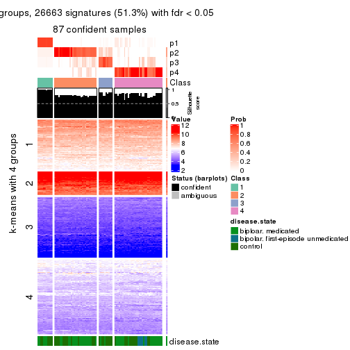
get_signatures(res, k = 5, scale_rows = FALSE)
get_signatures(res, k = 6, scale_rows = FALSE)
Compare the overlap of signatures from different k:
compare_signatures(res)
get_signature() returns a data frame invisibly. TO get the list of signatures, the function
call should be assigned to a variable explicitly. In following code, if plot argument is set
to FALSE, no heatmap is plotted while only the differential analysis is performed.
# code only for demonstration
tb = get_signature(res, k = ..., plot = FALSE)
An example of the output of tb is:
#> which_row fdr mean_1 mean_2 scaled_mean_1 scaled_mean_2 km
#> 1 38 0.042760348 8.373488 9.131774 -0.5533452 0.5164555 1
#> 2 40 0.018707592 7.106213 8.469186 -0.6173731 0.5762149 1
#> 3 55 0.019134737 10.221463 11.207825 -0.6159697 0.5749050 1
#> 4 59 0.006059896 5.921854 7.869574 -0.6899429 0.6439467 1
#> 5 60 0.018055526 8.928898 10.211722 -0.6204761 0.5791110 1
#> 6 98 0.009384629 15.714769 14.887706 0.6635654 -0.6193277 2
...
The columns in tb are:
which_row: row indices corresponding to the input matrix.fdr: FDR for the differential test. mean_x: The mean value in group x.scaled_mean_x: The mean value in group x after rows are scaled.km: Row groups if k-means clustering is applied to rows.UMAP plot which shows how samples are separated.
dimension_reduction(res, k = 2, method = "UMAP")
dimension_reduction(res, k = 3, method = "UMAP")
dimension_reduction(res, k = 4, method = "UMAP")
dimension_reduction(res, k = 5, method = "UMAP")

dimension_reduction(res, k = 6, method = "UMAP")
Following heatmap shows how subgroups are split when increasing k:
collect_classes(res)
Test correlation between subgroups and known annotations. If the known annotation is numeric, one-way ANOVA test is applied, and if the known annotation is discrete, chi-squared contingency table test is applied.
test_to_known_factors(res)
#> n disease.state(p) k
#> ATC:mclust 81 0.08501 2
#> ATC:mclust 85 0.00876 3
#> ATC:mclust 87 0.01933 4
#> ATC:mclust 37 0.05531 5
#> ATC:mclust 87 0.00179 6
If matrix rows can be associated to genes, consider to use GO_Enrichment(res,
...) to perform function enrichment for the signature genes.
The object with results only for a single top-value method and a single partition method can be extracted as:
res = res_list["ATC", "NMF"]
# you can also extract it by
# res = res_list["ATC:NMF"]
A summary of res and all the functions that can be applied to it:
res
#> A 'ConsensusPartition' object with k = 2, 3, 4, 5, 6.
#> On a matrix with 51941 rows and 88 columns.
#> Top rows (1000, 2000, 3000, 4000, 5000) are extracted by 'ATC' method.
#> Subgroups are detected by 'NMF' method.
#> Performed in total 1250 partitions by row resampling.
#> Best k for subgroups seems to be 3.
#>
#> Following methods can be applied to this 'ConsensusPartition' object:
#> [1] "cola_report" "collect_classes" "collect_plots"
#> [4] "collect_stats" "colnames" "compare_signatures"
#> [7] "consensus_heatmap" "dimension_reduction" "functional_enrichment"
#> [10] "get_anno_col" "get_anno" "get_classes"
#> [13] "get_consensus" "get_matrix" "get_membership"
#> [16] "get_param" "get_signatures" "get_stats"
#> [19] "is_best_k" "is_stable_k" "membership_heatmap"
#> [22] "ncol" "nrow" "plot_ecdf"
#> [25] "rownames" "select_partition_number" "show"
#> [28] "suggest_best_k" "test_to_known_factors"
collect_plots() function collects all the plots made from res for all k (number of partitions)
into one single page to provide an easy and fast comparison between different k.
collect_plots(res)
The plots are:
k and the heatmap of
predicted classes for each k.k.k.k.All the plots in panels can be made by individual functions and they are plotted later in this section.
select_partition_number() produces several plots showing different
statistics for choosing “optimized” k. There are following statistics:
k;k, the area increased is defined as \(A_k - A_{k-1}\).The detailed explanations of these statistics can be found in the cola vignette.
Generally speaking, lower PAC score, higher mean silhouette score or higher
concordance corresponds to better partition. Rand index and Jaccard index
measure how similar the current partition is compared to partition with k-1.
If they are too similar, we won't accept k is better than k-1.
select_partition_number(res)
The numeric values for all these statistics can be obtained by get_stats().
get_stats(res)
#> k 1-PAC mean_silhouette concordance area_increased Rand Jaccard
#> 2 2 0.860 0.904 0.960 0.4988 0.501 0.501
#> 3 3 0.999 0.954 0.981 0.3446 0.723 0.499
#> 4 4 0.871 0.839 0.934 0.1092 0.882 0.663
#> 5 5 0.667 0.599 0.767 0.0688 0.917 0.702
#> 6 6 0.637 0.468 0.687 0.0420 0.873 0.503
suggest_best_k() suggests the best \(k\) based on these statistics. The rules are as follows:
NA.suggest_best_k(res)
#> [1] 3
Following shows the table of the partitions (You need to click the show/hide
code output link to see it). The membership matrix (columns with name p*)
is inferred by
clue::cl_consensus()
function with the SE method. Basically the value in the membership matrix
represents the probability to belong to a certain group. The finall class
label for an item is determined with the group with highest probability it
belongs to.
In get_classes() function, the entropy is calculated from the membership
matrix and the silhouette score is calculated from the consensus matrix.
cbind(get_classes(res, k = 2), get_membership(res, k = 2))
#> class entropy silhouette p1 p2
#> GSM1130404 1 0.4022 0.8978 0.920 0.080
#> GSM1130405 2 1.0000 -0.0356 0.496 0.504
#> GSM1130408 2 0.0000 0.9572 0.000 1.000
#> GSM1130409 1 0.9087 0.5397 0.676 0.324
#> GSM1130410 1 0.9087 0.5394 0.676 0.324
#> GSM1130415 2 0.0000 0.9572 0.000 1.000
#> GSM1130416 2 0.0000 0.9572 0.000 1.000
#> GSM1130417 2 0.0000 0.9572 0.000 1.000
#> GSM1130418 2 0.0000 0.9572 0.000 1.000
#> GSM1130421 2 0.0000 0.9572 0.000 1.000
#> GSM1130422 2 0.0000 0.9572 0.000 1.000
#> GSM1130423 1 0.2236 0.9338 0.964 0.036
#> GSM1130424 2 0.0000 0.9572 0.000 1.000
#> GSM1130425 1 0.0000 0.9558 1.000 0.000
#> GSM1130426 2 0.1184 0.9443 0.016 0.984
#> GSM1130427 2 0.9393 0.4252 0.356 0.644
#> GSM1130428 2 0.0000 0.9572 0.000 1.000
#> GSM1130429 2 0.0000 0.9572 0.000 1.000
#> GSM1130430 1 0.3114 0.9189 0.944 0.056
#> GSM1130431 1 0.0000 0.9558 1.000 0.000
#> GSM1130432 1 0.9580 0.4084 0.620 0.380
#> GSM1130433 1 0.0938 0.9489 0.988 0.012
#> GSM1130434 1 0.0000 0.9558 1.000 0.000
#> GSM1130435 1 0.0000 0.9558 1.000 0.000
#> GSM1130436 1 0.0000 0.9558 1.000 0.000
#> GSM1130437 1 0.0000 0.9558 1.000 0.000
#> GSM1130438 1 0.0000 0.9558 1.000 0.000
#> GSM1130439 1 0.0000 0.9558 1.000 0.000
#> GSM1130440 1 0.0000 0.9558 1.000 0.000
#> GSM1130441 2 0.0000 0.9572 0.000 1.000
#> GSM1130442 2 0.0000 0.9572 0.000 1.000
#> GSM1130443 1 0.0000 0.9558 1.000 0.000
#> GSM1130444 1 0.0000 0.9558 1.000 0.000
#> GSM1130445 1 0.0000 0.9558 1.000 0.000
#> GSM1130476 1 0.5946 0.8217 0.856 0.144
#> GSM1130483 1 0.0000 0.9558 1.000 0.000
#> GSM1130484 1 0.0000 0.9558 1.000 0.000
#> GSM1130487 1 0.0000 0.9558 1.000 0.000
#> GSM1130488 1 0.0000 0.9558 1.000 0.000
#> GSM1130419 1 0.0000 0.9558 1.000 0.000
#> GSM1130420 1 0.0000 0.9558 1.000 0.000
#> GSM1130464 1 0.0000 0.9558 1.000 0.000
#> GSM1130465 1 0.0000 0.9558 1.000 0.000
#> GSM1130468 1 0.0000 0.9558 1.000 0.000
#> GSM1130469 1 0.0000 0.9558 1.000 0.000
#> GSM1130402 1 0.0672 0.9512 0.992 0.008
#> GSM1130403 1 0.3584 0.9089 0.932 0.068
#> GSM1130406 1 0.0000 0.9558 1.000 0.000
#> GSM1130407 1 0.0000 0.9558 1.000 0.000
#> GSM1130411 2 0.0000 0.9572 0.000 1.000
#> GSM1130412 2 0.0000 0.9572 0.000 1.000
#> GSM1130413 2 0.0000 0.9572 0.000 1.000
#> GSM1130414 2 0.0000 0.9572 0.000 1.000
#> GSM1130446 2 0.0000 0.9572 0.000 1.000
#> GSM1130447 2 0.0000 0.9572 0.000 1.000
#> GSM1130448 1 0.5946 0.8213 0.856 0.144
#> GSM1130449 1 0.3584 0.9092 0.932 0.068
#> GSM1130450 2 0.0000 0.9572 0.000 1.000
#> GSM1130451 2 0.3274 0.9048 0.060 0.940
#> GSM1130452 2 0.0000 0.9572 0.000 1.000
#> GSM1130453 1 0.8661 0.5937 0.712 0.288
#> GSM1130454 2 0.4939 0.8549 0.108 0.892
#> GSM1130455 2 0.0000 0.9572 0.000 1.000
#> GSM1130456 1 0.0000 0.9558 1.000 0.000
#> GSM1130457 2 0.0000 0.9572 0.000 1.000
#> GSM1130458 2 0.0000 0.9572 0.000 1.000
#> GSM1130459 2 0.0000 0.9572 0.000 1.000
#> GSM1130460 2 0.0000 0.9572 0.000 1.000
#> GSM1130461 2 0.0000 0.9572 0.000 1.000
#> GSM1130462 2 0.0000 0.9572 0.000 1.000
#> GSM1130463 2 0.0000 0.9572 0.000 1.000
#> GSM1130466 1 0.0000 0.9558 1.000 0.000
#> GSM1130467 2 0.0000 0.9572 0.000 1.000
#> GSM1130470 1 0.0000 0.9558 1.000 0.000
#> GSM1130471 1 0.0000 0.9558 1.000 0.000
#> GSM1130472 1 0.0000 0.9558 1.000 0.000
#> GSM1130473 1 0.0000 0.9558 1.000 0.000
#> GSM1130474 2 0.5842 0.8187 0.140 0.860
#> GSM1130475 2 0.0000 0.9572 0.000 1.000
#> GSM1130477 1 0.0000 0.9558 1.000 0.000
#> GSM1130478 1 0.0000 0.9558 1.000 0.000
#> GSM1130479 1 0.0000 0.9558 1.000 0.000
#> GSM1130480 1 0.3431 0.9124 0.936 0.064
#> GSM1130481 2 0.0000 0.9572 0.000 1.000
#> GSM1130482 2 0.0000 0.9572 0.000 1.000
#> GSM1130485 1 0.0000 0.9558 1.000 0.000
#> GSM1130486 1 0.0000 0.9558 1.000 0.000
#> GSM1130489 2 0.9129 0.4918 0.328 0.672
cbind(get_classes(res, k = 3), get_membership(res, k = 3))
#> class entropy silhouette p1 p2 p3
#> GSM1130404 1 0.0000 0.982 1.000 0.000 0.000
#> GSM1130405 1 0.0000 0.982 1.000 0.000 0.000
#> GSM1130408 2 0.0000 0.992 0.000 1.000 0.000
#> GSM1130409 1 0.0000 0.982 1.000 0.000 0.000
#> GSM1130410 1 0.0000 0.982 1.000 0.000 0.000
#> GSM1130415 2 0.0237 0.989 0.004 0.996 0.000
#> GSM1130416 2 0.0000 0.992 0.000 1.000 0.000
#> GSM1130417 2 0.0000 0.992 0.000 1.000 0.000
#> GSM1130418 2 0.0237 0.989 0.004 0.996 0.000
#> GSM1130421 2 0.0000 0.992 0.000 1.000 0.000
#> GSM1130422 2 0.4399 0.764 0.188 0.812 0.000
#> GSM1130423 1 0.0000 0.982 1.000 0.000 0.000
#> GSM1130424 2 0.0000 0.992 0.000 1.000 0.000
#> GSM1130425 1 0.0000 0.982 1.000 0.000 0.000
#> GSM1130426 1 0.5560 0.572 0.700 0.300 0.000
#> GSM1130427 1 0.0237 0.979 0.996 0.004 0.000
#> GSM1130428 2 0.0000 0.992 0.000 1.000 0.000
#> GSM1130429 2 0.0000 0.992 0.000 1.000 0.000
#> GSM1130430 1 0.0000 0.982 1.000 0.000 0.000
#> GSM1130431 1 0.0000 0.982 1.000 0.000 0.000
#> GSM1130432 1 0.0000 0.982 1.000 0.000 0.000
#> GSM1130433 1 0.0000 0.982 1.000 0.000 0.000
#> GSM1130434 1 0.0000 0.982 1.000 0.000 0.000
#> GSM1130435 1 0.0000 0.982 1.000 0.000 0.000
#> GSM1130436 1 0.0000 0.982 1.000 0.000 0.000
#> GSM1130437 1 0.0000 0.982 1.000 0.000 0.000
#> GSM1130438 3 0.0000 0.961 0.000 0.000 1.000
#> GSM1130439 3 0.0000 0.961 0.000 0.000 1.000
#> GSM1130440 3 0.6168 0.325 0.412 0.000 0.588
#> GSM1130441 2 0.0000 0.992 0.000 1.000 0.000
#> GSM1130442 2 0.0000 0.992 0.000 1.000 0.000
#> GSM1130443 3 0.0000 0.961 0.000 0.000 1.000
#> GSM1130444 3 0.0000 0.961 0.000 0.000 1.000
#> GSM1130445 3 0.0000 0.961 0.000 0.000 1.000
#> GSM1130476 3 0.0000 0.961 0.000 0.000 1.000
#> GSM1130483 1 0.0000 0.982 1.000 0.000 0.000
#> GSM1130484 1 0.0000 0.982 1.000 0.000 0.000
#> GSM1130487 3 0.0000 0.961 0.000 0.000 1.000
#> GSM1130488 3 0.0424 0.955 0.008 0.000 0.992
#> GSM1130419 3 0.0000 0.961 0.000 0.000 1.000
#> GSM1130420 3 0.2878 0.873 0.096 0.000 0.904
#> GSM1130464 3 0.0000 0.961 0.000 0.000 1.000
#> GSM1130465 1 0.3551 0.832 0.868 0.000 0.132
#> GSM1130468 3 0.0000 0.961 0.000 0.000 1.000
#> GSM1130469 3 0.0000 0.961 0.000 0.000 1.000
#> GSM1130402 1 0.0000 0.982 1.000 0.000 0.000
#> GSM1130403 1 0.0000 0.982 1.000 0.000 0.000
#> GSM1130406 1 0.0000 0.982 1.000 0.000 0.000
#> GSM1130407 1 0.0000 0.982 1.000 0.000 0.000
#> GSM1130411 2 0.0000 0.992 0.000 1.000 0.000
#> GSM1130412 2 0.0000 0.992 0.000 1.000 0.000
#> GSM1130413 1 0.1289 0.953 0.968 0.032 0.000
#> GSM1130414 2 0.0000 0.992 0.000 1.000 0.000
#> GSM1130446 2 0.0000 0.992 0.000 1.000 0.000
#> GSM1130447 2 0.0000 0.992 0.000 1.000 0.000
#> GSM1130448 3 0.0000 0.961 0.000 0.000 1.000
#> GSM1130449 1 0.0000 0.982 1.000 0.000 0.000
#> GSM1130450 2 0.0000 0.992 0.000 1.000 0.000
#> GSM1130451 3 0.0000 0.961 0.000 0.000 1.000
#> GSM1130452 2 0.0237 0.989 0.000 0.996 0.004
#> GSM1130453 3 0.0000 0.961 0.000 0.000 1.000
#> GSM1130454 3 0.0592 0.952 0.000 0.012 0.988
#> GSM1130455 2 0.0747 0.978 0.000 0.984 0.016
#> GSM1130456 3 0.0000 0.961 0.000 0.000 1.000
#> GSM1130457 2 0.0000 0.992 0.000 1.000 0.000
#> GSM1130458 2 0.0000 0.992 0.000 1.000 0.000
#> GSM1130459 2 0.0000 0.992 0.000 1.000 0.000
#> GSM1130460 2 0.0000 0.992 0.000 1.000 0.000
#> GSM1130461 2 0.0237 0.989 0.000 0.996 0.004
#> GSM1130462 2 0.0000 0.992 0.000 1.000 0.000
#> GSM1130463 2 0.0000 0.992 0.000 1.000 0.000
#> GSM1130466 3 0.0000 0.961 0.000 0.000 1.000
#> GSM1130467 2 0.0000 0.992 0.000 1.000 0.000
#> GSM1130470 3 0.0000 0.961 0.000 0.000 1.000
#> GSM1130471 3 0.1031 0.943 0.024 0.000 0.976
#> GSM1130472 3 0.0000 0.961 0.000 0.000 1.000
#> GSM1130473 1 0.0000 0.982 1.000 0.000 0.000
#> GSM1130474 3 0.0000 0.961 0.000 0.000 1.000
#> GSM1130475 2 0.0000 0.992 0.000 1.000 0.000
#> GSM1130477 1 0.0000 0.982 1.000 0.000 0.000
#> GSM1130478 1 0.0000 0.982 1.000 0.000 0.000
#> GSM1130479 1 0.0000 0.982 1.000 0.000 0.000
#> GSM1130480 1 0.1031 0.961 0.976 0.024 0.000
#> GSM1130481 2 0.0592 0.982 0.012 0.988 0.000
#> GSM1130482 2 0.0000 0.992 0.000 1.000 0.000
#> GSM1130485 3 0.0000 0.961 0.000 0.000 1.000
#> GSM1130486 3 0.6154 0.335 0.408 0.000 0.592
#> GSM1130489 1 0.0000 0.982 1.000 0.000 0.000
cbind(get_classes(res, k = 4), get_membership(res, k = 4))
#> class entropy silhouette p1 p2 p3 p4
#> GSM1130404 1 0.0188 0.9449 0.996 0.000 0.000 0.004
#> GSM1130405 1 0.0779 0.9361 0.980 0.004 0.000 0.016
#> GSM1130408 2 0.0000 0.9295 0.000 1.000 0.000 0.000
#> GSM1130409 1 0.0000 0.9464 1.000 0.000 0.000 0.000
#> GSM1130410 1 0.0000 0.9464 1.000 0.000 0.000 0.000
#> GSM1130415 2 0.0469 0.9222 0.012 0.988 0.000 0.000
#> GSM1130416 2 0.0000 0.9295 0.000 1.000 0.000 0.000
#> GSM1130417 2 0.0336 0.9249 0.008 0.992 0.000 0.000
#> GSM1130418 2 0.0469 0.9222 0.012 0.988 0.000 0.000
#> GSM1130421 2 0.0000 0.9295 0.000 1.000 0.000 0.000
#> GSM1130422 1 0.4697 0.4519 0.644 0.356 0.000 0.000
#> GSM1130423 4 0.2149 0.8360 0.088 0.000 0.000 0.912
#> GSM1130424 4 0.0000 0.8619 0.000 0.000 0.000 1.000
#> GSM1130425 4 0.2408 0.8227 0.104 0.000 0.000 0.896
#> GSM1130426 1 0.3801 0.6895 0.780 0.220 0.000 0.000
#> GSM1130427 1 0.0336 0.9419 0.992 0.008 0.000 0.000
#> GSM1130428 2 0.4998 0.0832 0.000 0.512 0.000 0.488
#> GSM1130429 4 0.3356 0.7167 0.000 0.176 0.000 0.824
#> GSM1130430 1 0.0000 0.9464 1.000 0.000 0.000 0.000
#> GSM1130431 1 0.0000 0.9464 1.000 0.000 0.000 0.000
#> GSM1130432 1 0.0000 0.9464 1.000 0.000 0.000 0.000
#> GSM1130433 1 0.0000 0.9464 1.000 0.000 0.000 0.000
#> GSM1130434 1 0.0000 0.9464 1.000 0.000 0.000 0.000
#> GSM1130435 1 0.0000 0.9464 1.000 0.000 0.000 0.000
#> GSM1130436 1 0.0000 0.9464 1.000 0.000 0.000 0.000
#> GSM1130437 1 0.0000 0.9464 1.000 0.000 0.000 0.000
#> GSM1130438 3 0.0592 0.9083 0.016 0.000 0.984 0.000
#> GSM1130439 3 0.0592 0.9083 0.016 0.000 0.984 0.000
#> GSM1130440 3 0.4925 0.2271 0.428 0.000 0.572 0.000
#> GSM1130441 2 0.0000 0.9295 0.000 1.000 0.000 0.000
#> GSM1130442 2 0.0000 0.9295 0.000 1.000 0.000 0.000
#> GSM1130443 3 0.0000 0.9147 0.000 0.000 1.000 0.000
#> GSM1130444 3 0.0000 0.9147 0.000 0.000 1.000 0.000
#> GSM1130445 3 0.0000 0.9147 0.000 0.000 1.000 0.000
#> GSM1130476 3 0.0336 0.9124 0.008 0.000 0.992 0.000
#> GSM1130483 1 0.0000 0.9464 1.000 0.000 0.000 0.000
#> GSM1130484 1 0.0188 0.9440 0.996 0.000 0.004 0.000
#> GSM1130487 3 0.0000 0.9147 0.000 0.000 1.000 0.000
#> GSM1130488 3 0.0592 0.9083 0.016 0.000 0.984 0.000
#> GSM1130419 3 0.1867 0.8717 0.000 0.000 0.928 0.072
#> GSM1130420 4 0.0524 0.8615 0.008 0.000 0.004 0.988
#> GSM1130464 3 0.0336 0.9125 0.000 0.000 0.992 0.008
#> GSM1130465 1 0.2635 0.8681 0.904 0.000 0.020 0.076
#> GSM1130468 3 0.0000 0.9147 0.000 0.000 1.000 0.000
#> GSM1130469 3 0.3726 0.6988 0.000 0.000 0.788 0.212
#> GSM1130402 1 0.0188 0.9449 0.996 0.000 0.000 0.004
#> GSM1130403 1 0.0921 0.9287 0.972 0.000 0.000 0.028
#> GSM1130406 1 0.0000 0.9464 1.000 0.000 0.000 0.000
#> GSM1130407 1 0.0000 0.9464 1.000 0.000 0.000 0.000
#> GSM1130411 2 0.0000 0.9295 0.000 1.000 0.000 0.000
#> GSM1130412 2 0.0000 0.9295 0.000 1.000 0.000 0.000
#> GSM1130413 1 0.0817 0.9292 0.976 0.024 0.000 0.000
#> GSM1130414 2 0.0000 0.9295 0.000 1.000 0.000 0.000
#> GSM1130446 2 0.1557 0.8879 0.000 0.944 0.000 0.056
#> GSM1130447 4 0.0000 0.8619 0.000 0.000 0.000 1.000
#> GSM1130448 3 0.0000 0.9147 0.000 0.000 1.000 0.000
#> GSM1130449 1 0.0336 0.9427 0.992 0.000 0.000 0.008
#> GSM1130450 2 0.0188 0.9274 0.004 0.996 0.000 0.000
#> GSM1130451 3 0.4877 0.2880 0.000 0.000 0.592 0.408
#> GSM1130452 2 0.0188 0.9273 0.000 0.996 0.004 0.000
#> GSM1130453 3 0.0000 0.9147 0.000 0.000 1.000 0.000
#> GSM1130454 3 0.0188 0.9138 0.004 0.000 0.996 0.000
#> GSM1130455 2 0.2530 0.8293 0.000 0.888 0.112 0.000
#> GSM1130456 3 0.2216 0.8553 0.000 0.000 0.908 0.092
#> GSM1130457 2 0.0000 0.9295 0.000 1.000 0.000 0.000
#> GSM1130458 2 0.3726 0.7128 0.000 0.788 0.000 0.212
#> GSM1130459 2 0.0000 0.9295 0.000 1.000 0.000 0.000
#> GSM1130460 2 0.0000 0.9295 0.000 1.000 0.000 0.000
#> GSM1130461 2 0.4746 0.4335 0.000 0.632 0.368 0.000
#> GSM1130462 2 0.0000 0.9295 0.000 1.000 0.000 0.000
#> GSM1130463 2 0.0000 0.9295 0.000 1.000 0.000 0.000
#> GSM1130466 4 0.4933 0.1822 0.000 0.000 0.432 0.568
#> GSM1130467 2 0.0000 0.9295 0.000 1.000 0.000 0.000
#> GSM1130470 4 0.4222 0.5722 0.000 0.000 0.272 0.728
#> GSM1130471 4 0.0000 0.8619 0.000 0.000 0.000 1.000
#> GSM1130472 4 0.0336 0.8595 0.000 0.000 0.008 0.992
#> GSM1130473 4 0.2281 0.8316 0.096 0.000 0.000 0.904
#> GSM1130474 3 0.0592 0.9089 0.000 0.000 0.984 0.016
#> GSM1130475 2 0.0000 0.9295 0.000 1.000 0.000 0.000
#> GSM1130477 1 0.0000 0.9464 1.000 0.000 0.000 0.000
#> GSM1130478 1 0.0000 0.9464 1.000 0.000 0.000 0.000
#> GSM1130479 4 0.0000 0.8619 0.000 0.000 0.000 1.000
#> GSM1130480 1 0.0657 0.9369 0.984 0.004 0.012 0.000
#> GSM1130481 4 0.1854 0.8450 0.012 0.048 0.000 0.940
#> GSM1130482 2 0.4643 0.4918 0.000 0.656 0.000 0.344
#> GSM1130485 3 0.1637 0.8832 0.000 0.000 0.940 0.060
#> GSM1130486 4 0.5182 0.5723 0.288 0.000 0.028 0.684
#> GSM1130489 1 0.4996 0.0182 0.516 0.000 0.000 0.484
cbind(get_classes(res, k = 5), get_membership(res, k = 5))
#> class entropy silhouette p1 p2 p3 p4 p5
#> GSM1130404 3 0.4318 0.51593 0.292 0.020 0.688 0.000 0.000
#> GSM1130405 3 0.4536 0.57719 0.240 0.048 0.712 0.000 0.000
#> GSM1130408 2 0.2970 0.60741 0.004 0.828 0.168 0.000 0.000
#> GSM1130409 1 0.3636 0.49244 0.728 0.000 0.272 0.000 0.000
#> GSM1130410 1 0.3878 0.57137 0.748 0.000 0.236 0.000 0.016
#> GSM1130415 2 0.4297 0.41479 0.000 0.528 0.472 0.000 0.000
#> GSM1130416 2 0.3752 0.60229 0.000 0.708 0.292 0.000 0.000
#> GSM1130417 2 0.4403 0.53929 0.000 0.608 0.384 0.000 0.008
#> GSM1130418 2 0.4045 0.56784 0.000 0.644 0.356 0.000 0.000
#> GSM1130421 2 0.3419 0.64516 0.016 0.804 0.180 0.000 0.000
#> GSM1130422 1 0.5901 0.16151 0.568 0.300 0.132 0.000 0.000
#> GSM1130423 5 0.1741 0.78305 0.024 0.000 0.040 0.000 0.936
#> GSM1130424 5 0.2629 0.73715 0.000 0.004 0.136 0.000 0.860
#> GSM1130425 5 0.1908 0.77245 0.092 0.000 0.000 0.000 0.908
#> GSM1130426 3 0.6802 0.06648 0.296 0.336 0.368 0.000 0.000
#> GSM1130427 1 0.5527 -0.00332 0.540 0.072 0.388 0.000 0.000
#> GSM1130428 3 0.3388 0.37402 0.000 0.200 0.792 0.000 0.008
#> GSM1130429 3 0.4036 0.44722 0.000 0.144 0.788 0.000 0.068
#> GSM1130430 1 0.1121 0.76595 0.956 0.000 0.044 0.000 0.000
#> GSM1130431 1 0.2629 0.69963 0.860 0.000 0.136 0.000 0.004
#> GSM1130432 1 0.4001 0.67415 0.820 0.028 0.104 0.000 0.048
#> GSM1130433 1 0.0324 0.77246 0.992 0.000 0.004 0.004 0.000
#> GSM1130434 1 0.1341 0.76013 0.944 0.000 0.056 0.000 0.000
#> GSM1130435 1 0.1012 0.77145 0.968 0.000 0.020 0.000 0.012
#> GSM1130436 1 0.1082 0.76987 0.964 0.000 0.028 0.000 0.008
#> GSM1130437 1 0.0794 0.76959 0.972 0.000 0.028 0.000 0.000
#> GSM1130438 4 0.2153 0.81159 0.044 0.000 0.040 0.916 0.000
#> GSM1130439 4 0.2067 0.81099 0.048 0.000 0.032 0.920 0.000
#> GSM1130440 1 0.5820 0.34995 0.572 0.000 0.120 0.308 0.000
#> GSM1130441 2 0.0451 0.63381 0.000 0.988 0.008 0.000 0.004
#> GSM1130442 2 0.3409 0.57739 0.032 0.824 0.144 0.000 0.000
#> GSM1130443 4 0.0992 0.82147 0.000 0.000 0.024 0.968 0.008
#> GSM1130444 4 0.0865 0.82150 0.004 0.000 0.024 0.972 0.000
#> GSM1130445 4 0.0404 0.82294 0.000 0.000 0.012 0.988 0.000
#> GSM1130476 4 0.3586 0.77232 0.000 0.076 0.096 0.828 0.000
#> GSM1130483 1 0.0000 0.77268 1.000 0.000 0.000 0.000 0.000
#> GSM1130484 1 0.0324 0.77238 0.992 0.000 0.004 0.004 0.000
#> GSM1130487 4 0.0963 0.81972 0.000 0.000 0.036 0.964 0.000
#> GSM1130488 4 0.2729 0.78870 0.056 0.000 0.060 0.884 0.000
#> GSM1130419 4 0.5117 0.55932 0.000 0.000 0.088 0.672 0.240
#> GSM1130420 5 0.5339 0.51568 0.020 0.000 0.280 0.048 0.652
#> GSM1130464 4 0.1582 0.81755 0.000 0.000 0.028 0.944 0.028
#> GSM1130465 1 0.7315 0.30531 0.548 0.000 0.184 0.152 0.116
#> GSM1130468 4 0.3289 0.75142 0.008 0.000 0.172 0.816 0.004
#> GSM1130469 4 0.4738 0.30709 0.000 0.000 0.464 0.520 0.016
#> GSM1130402 1 0.1568 0.76805 0.944 0.000 0.020 0.000 0.036
#> GSM1130403 3 0.5146 0.26545 0.400 0.008 0.564 0.000 0.028
#> GSM1130406 1 0.0162 0.77277 0.996 0.000 0.000 0.004 0.000
#> GSM1130407 1 0.0162 0.77277 0.996 0.000 0.000 0.004 0.000
#> GSM1130411 2 0.4210 0.51432 0.000 0.588 0.412 0.000 0.000
#> GSM1130412 2 0.4182 0.53203 0.000 0.600 0.400 0.000 0.000
#> GSM1130413 1 0.6300 0.05331 0.540 0.096 0.340 0.000 0.024
#> GSM1130414 2 0.3983 0.58072 0.000 0.660 0.340 0.000 0.000
#> GSM1130446 2 0.4856 0.50109 0.000 0.584 0.388 0.000 0.028
#> GSM1130447 3 0.4339 0.49652 0.000 0.048 0.788 0.024 0.140
#> GSM1130448 4 0.3828 0.75287 0.000 0.072 0.120 0.808 0.000
#> GSM1130449 1 0.3942 0.66475 0.804 0.016 0.032 0.000 0.148
#> GSM1130450 2 0.5861 0.01005 0.008 0.572 0.092 0.000 0.328
#> GSM1130451 5 0.6619 0.57720 0.000 0.260 0.060 0.100 0.580
#> GSM1130452 2 0.1082 0.64094 0.000 0.964 0.028 0.008 0.000
#> GSM1130453 4 0.2928 0.78969 0.000 0.092 0.032 0.872 0.004
#> GSM1130454 4 0.5755 0.51127 0.000 0.296 0.104 0.596 0.004
#> GSM1130455 2 0.3395 0.56511 0.000 0.848 0.028 0.108 0.016
#> GSM1130456 4 0.3327 0.76330 0.000 0.000 0.144 0.828 0.028
#> GSM1130457 2 0.3932 0.60130 0.000 0.672 0.328 0.000 0.000
#> GSM1130458 2 0.5036 0.39383 0.000 0.520 0.452 0.004 0.024
#> GSM1130459 2 0.2929 0.65532 0.000 0.820 0.180 0.000 0.000
#> GSM1130460 2 0.2624 0.65231 0.000 0.872 0.116 0.000 0.012
#> GSM1130461 2 0.4478 0.47486 0.000 0.756 0.144 0.100 0.000
#> GSM1130462 2 0.2505 0.65815 0.000 0.888 0.092 0.000 0.020
#> GSM1130463 2 0.4298 0.57798 0.000 0.640 0.352 0.000 0.008
#> GSM1130466 5 0.5066 0.55128 0.000 0.000 0.084 0.240 0.676
#> GSM1130467 2 0.0807 0.63808 0.000 0.976 0.012 0.000 0.012
#> GSM1130470 5 0.2625 0.76120 0.000 0.000 0.016 0.108 0.876
#> GSM1130471 5 0.1124 0.78151 0.000 0.000 0.036 0.004 0.960
#> GSM1130472 5 0.1522 0.77768 0.000 0.000 0.044 0.012 0.944
#> GSM1130473 5 0.1908 0.77284 0.092 0.000 0.000 0.000 0.908
#> GSM1130474 4 0.6142 0.47570 0.000 0.240 0.016 0.604 0.140
#> GSM1130475 2 0.6173 0.32157 0.000 0.660 0.136 0.060 0.144
#> GSM1130477 1 0.1544 0.75303 0.932 0.000 0.000 0.000 0.068
#> GSM1130478 1 0.1809 0.75238 0.928 0.000 0.012 0.000 0.060
#> GSM1130479 5 0.1485 0.78807 0.032 0.020 0.000 0.000 0.948
#> GSM1130480 1 0.7309 0.34421 0.540 0.264 0.128 0.040 0.028
#> GSM1130481 5 0.4477 0.71924 0.036 0.176 0.024 0.000 0.764
#> GSM1130482 5 0.6411 0.51917 0.004 0.316 0.116 0.016 0.548
#> GSM1130485 4 0.2835 0.79648 0.000 0.004 0.036 0.880 0.080
#> GSM1130486 3 0.7431 0.11609 0.152 0.000 0.476 0.296 0.076
#> GSM1130489 5 0.5476 0.64717 0.200 0.048 0.056 0.000 0.696
cbind(get_classes(res, k = 6), get_membership(res, k = 6))
#> class entropy silhouette p1 p2 p3 p4 p5 p6
#> GSM1130404 1 0.5101 0.00391 0.504 0.068 0.424 0.000 0.004 0.000
#> GSM1130405 3 0.5353 0.50452 0.244 0.152 0.600 0.000 0.004 0.000
#> GSM1130408 2 0.4915 0.15726 0.004 0.604 0.072 0.000 0.320 0.000
#> GSM1130409 1 0.6286 -0.19740 0.396 0.284 0.312 0.000 0.000 0.008
#> GSM1130410 2 0.6697 -0.16757 0.312 0.356 0.308 0.000 0.012 0.012
#> GSM1130415 2 0.2932 0.53142 0.016 0.820 0.164 0.000 0.000 0.000
#> GSM1130416 2 0.1575 0.53749 0.000 0.936 0.032 0.000 0.032 0.000
#> GSM1130417 2 0.1938 0.57482 0.036 0.920 0.040 0.000 0.000 0.004
#> GSM1130418 2 0.1562 0.57254 0.024 0.940 0.032 0.000 0.004 0.000
#> GSM1130421 2 0.3159 0.47986 0.004 0.840 0.072 0.000 0.084 0.000
#> GSM1130422 2 0.5297 0.32626 0.280 0.612 0.088 0.000 0.020 0.000
#> GSM1130423 6 0.1562 0.76859 0.024 0.000 0.032 0.000 0.004 0.940
#> GSM1130424 6 0.3974 0.63053 0.000 0.056 0.188 0.000 0.004 0.752
#> GSM1130425 6 0.1570 0.76818 0.028 0.004 0.008 0.000 0.016 0.944
#> GSM1130426 2 0.3949 0.52616 0.088 0.784 0.116 0.000 0.012 0.000
#> GSM1130427 2 0.5422 0.23813 0.156 0.588 0.252 0.000 0.004 0.000
#> GSM1130428 3 0.3934 0.45438 0.000 0.304 0.676 0.000 0.020 0.000
#> GSM1130429 3 0.4113 0.44726 0.000 0.308 0.668 0.000 0.016 0.008
#> GSM1130430 1 0.1500 0.78916 0.936 0.000 0.052 0.000 0.000 0.012
#> GSM1130431 1 0.2765 0.74730 0.848 0.004 0.132 0.000 0.000 0.016
#> GSM1130432 1 0.5327 0.64275 0.688 0.028 0.028 0.000 0.188 0.068
#> GSM1130433 1 0.2975 0.76749 0.864 0.020 0.068 0.000 0.048 0.000
#> GSM1130434 1 0.2370 0.77635 0.896 0.000 0.076 0.008 0.012 0.008
#> GSM1130435 1 0.1788 0.78876 0.928 0.004 0.040 0.000 0.000 0.028
#> GSM1130436 1 0.2213 0.78753 0.912 0.000 0.048 0.008 0.008 0.024
#> GSM1130437 1 0.1899 0.78474 0.928 0.000 0.032 0.028 0.008 0.004
#> GSM1130438 4 0.4687 0.67315 0.072 0.000 0.064 0.744 0.120 0.000
#> GSM1130439 4 0.4484 0.67890 0.076 0.000 0.052 0.760 0.112 0.000
#> GSM1130440 4 0.8038 0.40658 0.180 0.088 0.132 0.444 0.156 0.000
#> GSM1130441 5 0.4039 0.32060 0.000 0.424 0.008 0.000 0.568 0.000
#> GSM1130442 2 0.5189 -0.07431 0.032 0.492 0.032 0.000 0.444 0.000
#> GSM1130443 4 0.3125 0.69038 0.000 0.000 0.076 0.852 0.056 0.016
#> GSM1130444 4 0.2853 0.71205 0.004 0.000 0.056 0.868 0.068 0.004
#> GSM1130445 4 0.1124 0.71852 0.000 0.000 0.008 0.956 0.036 0.000
#> GSM1130476 4 0.5870 0.59068 0.032 0.052 0.048 0.620 0.248 0.000
#> GSM1130483 1 0.2001 0.78315 0.920 0.000 0.044 0.016 0.020 0.000
#> GSM1130484 1 0.3849 0.72103 0.804 0.000 0.104 0.032 0.060 0.000
#> GSM1130487 4 0.1889 0.70671 0.000 0.000 0.056 0.920 0.020 0.004
#> GSM1130488 4 0.3189 0.69586 0.064 0.000 0.072 0.848 0.016 0.000
#> GSM1130419 4 0.5355 0.24103 0.008 0.000 0.060 0.544 0.012 0.376
#> GSM1130420 6 0.6657 0.46343 0.080 0.000 0.168 0.160 0.020 0.572
#> GSM1130464 4 0.3747 0.67899 0.000 0.000 0.076 0.808 0.020 0.096
#> GSM1130465 1 0.6153 0.46704 0.596 0.000 0.116 0.228 0.020 0.040
#> GSM1130468 4 0.4806 0.40214 0.008 0.004 0.344 0.604 0.040 0.000
#> GSM1130469 3 0.4756 0.15359 0.004 0.008 0.604 0.356 0.016 0.012
#> GSM1130402 1 0.2452 0.77946 0.884 0.000 0.084 0.000 0.004 0.028
#> GSM1130403 3 0.5574 0.14426 0.412 0.108 0.472 0.000 0.000 0.008
#> GSM1130406 1 0.1709 0.78917 0.940 0.008 0.032 0.008 0.008 0.004
#> GSM1130407 1 0.2401 0.77740 0.892 0.016 0.076 0.000 0.016 0.000
#> GSM1130411 2 0.2768 0.54046 0.000 0.832 0.156 0.000 0.012 0.000
#> GSM1130412 2 0.3017 0.53237 0.000 0.816 0.164 0.000 0.020 0.000
#> GSM1130413 2 0.4859 0.24292 0.332 0.600 0.064 0.000 0.000 0.004
#> GSM1130414 2 0.1478 0.56452 0.032 0.944 0.004 0.000 0.020 0.000
#> GSM1130446 2 0.5978 0.01130 0.000 0.404 0.228 0.000 0.368 0.000
#> GSM1130447 3 0.3884 0.51726 0.000 0.232 0.736 0.000 0.012 0.020
#> GSM1130448 4 0.4235 0.62986 0.012 0.000 0.020 0.672 0.296 0.000
#> GSM1130449 1 0.4426 0.70378 0.768 0.012 0.020 0.000 0.088 0.112
#> GSM1130450 5 0.5192 0.28831 0.004 0.108 0.000 0.000 0.596 0.292
#> GSM1130451 6 0.5198 0.27834 0.000 0.000 0.044 0.024 0.408 0.524
#> GSM1130452 5 0.4495 0.36228 0.000 0.388 0.028 0.004 0.580 0.000
#> GSM1130453 4 0.3852 0.60190 0.000 0.000 0.012 0.664 0.324 0.000
#> GSM1130454 5 0.4181 0.00053 0.008 0.004 0.008 0.336 0.644 0.000
#> GSM1130455 5 0.5076 0.44254 0.000 0.184 0.052 0.072 0.692 0.000
#> GSM1130456 4 0.5143 0.54035 0.000 0.004 0.232 0.660 0.084 0.020
#> GSM1130457 2 0.4808 0.06893 0.000 0.576 0.064 0.000 0.360 0.000
#> GSM1130458 2 0.6087 0.04451 0.000 0.372 0.276 0.000 0.352 0.000
#> GSM1130459 2 0.4550 -0.09113 0.000 0.544 0.036 0.000 0.420 0.000
#> GSM1130460 5 0.4788 0.28844 0.000 0.396 0.056 0.000 0.548 0.000
#> GSM1130461 5 0.5531 0.18419 0.000 0.348 0.036 0.064 0.552 0.000
#> GSM1130462 5 0.4687 0.29301 0.000 0.424 0.036 0.000 0.536 0.004
#> GSM1130463 5 0.5876 0.16134 0.004 0.360 0.176 0.000 0.460 0.000
#> GSM1130466 6 0.6095 0.40224 0.000 0.000 0.144 0.244 0.048 0.564
#> GSM1130467 5 0.4341 0.39099 0.000 0.356 0.024 0.000 0.616 0.004
#> GSM1130470 6 0.2361 0.75684 0.000 0.000 0.032 0.064 0.008 0.896
#> GSM1130471 6 0.1421 0.77064 0.000 0.000 0.028 0.028 0.000 0.944
#> GSM1130472 6 0.1575 0.76900 0.000 0.000 0.032 0.032 0.000 0.936
#> GSM1130473 6 0.0665 0.77385 0.008 0.000 0.004 0.000 0.008 0.980
#> GSM1130474 5 0.5802 0.13038 0.000 0.020 0.044 0.344 0.552 0.040
#> GSM1130475 5 0.4668 0.44565 0.000 0.160 0.004 0.000 0.700 0.136
#> GSM1130477 1 0.3082 0.77239 0.860 0.008 0.040 0.000 0.012 0.080
#> GSM1130478 1 0.5087 0.71521 0.744 0.040 0.072 0.000 0.052 0.092
#> GSM1130479 6 0.1036 0.77332 0.008 0.000 0.004 0.000 0.024 0.964
#> GSM1130480 5 0.4671 -0.21226 0.476 0.012 0.004 0.004 0.496 0.008
#> GSM1130481 6 0.4192 0.40311 0.008 0.004 0.004 0.000 0.372 0.612
#> GSM1130482 5 0.3868 -0.23099 0.000 0.000 0.000 0.000 0.508 0.492
#> GSM1130485 4 0.5230 0.61851 0.000 0.000 0.116 0.700 0.104 0.080
#> GSM1130486 3 0.6180 0.32178 0.172 0.000 0.564 0.228 0.020 0.016
#> GSM1130489 6 0.5153 0.60744 0.156 0.012 0.020 0.000 0.116 0.696
Heatmaps for the consensus matrix. It visualizes the probability of two samples to be in a same group.
consensus_heatmap(res, k = 2)
consensus_heatmap(res, k = 3)
consensus_heatmap(res, k = 4)
consensus_heatmap(res, k = 5)
consensus_heatmap(res, k = 6)
Heatmaps for the membership of samples in all partitions to see how consistent they are:
membership_heatmap(res, k = 2)
membership_heatmap(res, k = 3)
membership_heatmap(res, k = 4)
membership_heatmap(res, k = 5)
membership_heatmap(res, k = 6)
As soon as we have had the classes for columns, we can look for signatures which are significantly different between classes which can be candidate marks for certain classes. Following are the heatmaps for signatures.
Signature heatmaps where rows are scaled:
get_signatures(res, k = 2)
get_signatures(res, k = 3)
get_signatures(res, k = 4)
get_signatures(res, k = 5)
get_signatures(res, k = 6)
Signature heatmaps where rows are not scaled:
get_signatures(res, k = 2, scale_rows = FALSE)
get_signatures(res, k = 3, scale_rows = FALSE)
get_signatures(res, k = 4, scale_rows = FALSE)

get_signatures(res, k = 5, scale_rows = FALSE)
get_signatures(res, k = 6, scale_rows = FALSE)
Compare the overlap of signatures from different k:
compare_signatures(res)
get_signature() returns a data frame invisibly. TO get the list of signatures, the function
call should be assigned to a variable explicitly. In following code, if plot argument is set
to FALSE, no heatmap is plotted while only the differential analysis is performed.
# code only for demonstration
tb = get_signature(res, k = ..., plot = FALSE)
An example of the output of tb is:
#> which_row fdr mean_1 mean_2 scaled_mean_1 scaled_mean_2 km
#> 1 38 0.042760348 8.373488 9.131774 -0.5533452 0.5164555 1
#> 2 40 0.018707592 7.106213 8.469186 -0.6173731 0.5762149 1
#> 3 55 0.019134737 10.221463 11.207825 -0.6159697 0.5749050 1
#> 4 59 0.006059896 5.921854 7.869574 -0.6899429 0.6439467 1
#> 5 60 0.018055526 8.928898 10.211722 -0.6204761 0.5791110 1
#> 6 98 0.009384629 15.714769 14.887706 0.6635654 -0.6193277 2
...
The columns in tb are:
which_row: row indices corresponding to the input matrix.fdr: FDR for the differential test. mean_x: The mean value in group x.scaled_mean_x: The mean value in group x after rows are scaled.km: Row groups if k-means clustering is applied to rows.UMAP plot which shows how samples are separated.
dimension_reduction(res, k = 2, method = "UMAP")

dimension_reduction(res, k = 3, method = "UMAP")
dimension_reduction(res, k = 4, method = "UMAP")
dimension_reduction(res, k = 5, method = "UMAP")
dimension_reduction(res, k = 6, method = "UMAP")
Following heatmap shows how subgroups are split when increasing k:
collect_classes(res)
Test correlation between subgroups and known annotations. If the known annotation is numeric, one-way ANOVA test is applied, and if the known annotation is discrete, chi-squared contingency table test is applied.
test_to_known_factors(res)
#> n disease.state(p) k
#> ATC:NMF 84 0.0224 2
#> ATC:NMF 86 0.0100 3
#> ATC:NMF 80 0.0317 4
#> ATC:NMF 68 0.0353 5
#> ATC:NMF 48 0.6884 6
If matrix rows can be associated to genes, consider to use GO_Enrichment(res,
...) to perform function enrichment for the signature genes.
sessionInfo()
#> R version 3.6.0 (2019-04-26)
#> Platform: x86_64-pc-linux-gnu (64-bit)
#> Running under: CentOS Linux 7 (Core)
#>
#> Matrix products: default
#> BLAS: /usr/lib64/libblas.so.3.4.2
#> LAPACK: /usr/lib64/liblapack.so.3.4.2
#>
#> locale:
#> [1] LC_CTYPE=en_GB.UTF-8 LC_NUMERIC=C LC_TIME=en_GB.UTF-8
#> [4] LC_COLLATE=en_GB.UTF-8 LC_MONETARY=en_GB.UTF-8 LC_MESSAGES=en_GB.UTF-8
#> [7] LC_PAPER=en_GB.UTF-8 LC_NAME=C LC_ADDRESS=C
#> [10] LC_TELEPHONE=C LC_MEASUREMENT=en_GB.UTF-8 LC_IDENTIFICATION=C
#>
#> attached base packages:
#> [1] grid parallel stats graphics grDevices utils datasets methods base
#>
#> other attached packages:
#> [1] genefilter_1.66.0 ComplexHeatmap_2.1.1 markdown_1.1 knitr_1.26
#> [5] preprocessCore_1.46.0 cola_1.3.2 GEOquery_2.52.0 Biobase_2.44.0
#> [9] BiocGenerics_0.30.0 GetoptLong_0.1.7
#>
#> loaded via a namespace (and not attached):
#> [1] bitops_1.0-6 matrixStats_0.55.0 bit64_0.9-7 doParallel_1.0.15
#> [5] RColorBrewer_1.1-2 httr_1.4.1 tools_3.6.0 backports_1.1.5
#> [9] R6_2.4.1 DBI_1.0.0 lazyeval_0.2.2 colorspace_1.4-1
#> [13] withr_2.1.2 tidyselect_0.2.5 gridExtra_2.3 bit_1.1-14
#> [17] compiler_3.6.0 xml2_1.2.2 microbenchmark_1.4-7 pkgmaker_0.28
#> [21] slam_0.1-46 scales_1.1.0 readr_1.3.1 NMF_0.23.6
#> [25] stringr_1.4.0 digest_0.6.23 pkgconfig_2.0.3 bibtex_0.4.2
#> [29] highr_0.8 limma_3.40.6 rlang_0.4.2 GlobalOptions_0.1.1
#> [33] RSQLite_2.1.2 impute_1.58.0 shape_1.4.4 mclust_5.4.5
#> [37] dendextend_1.12.0 dplyr_0.8.3 RCurl_1.95-4.12 magrittr_1.5
#> [41] Matrix_1.2-17 Rcpp_1.0.3 munsell_0.5.0 S4Vectors_0.22.1
#> [45] viridis_0.5.1 lifecycle_0.1.0 stringi_1.4.3 plyr_1.8.4
#> [49] blob_1.2.0 crayon_1.3.4 lattice_0.20-38 splines_3.6.0
#> [53] annotate_1.62.0 circlize_0.4.9 hms_0.5.2 zeallot_0.1.0
#> [57] pillar_1.4.2 rjson_0.2.20 rngtools_1.4 reshape2_1.4.3
#> [61] codetools_0.2-16 stats4_3.6.0 XML_3.98-1.20 glue_1.3.1
#> [65] evaluate_0.14 png_0.1-7 vctrs_0.2.0 foreach_1.4.7
#> [69] polyclip_1.10-0 gtable_0.3.0 purrr_0.3.3 tidyr_1.0.0
#> [73] clue_0.3-57 assertthat_0.2.1 ggplot2_3.2.1 xfun_0.11
#> [77] gridBase_0.4-7 eulerr_6.0.0 xtable_1.8-4 skmeans_0.2-11
#> [81] survival_2.44-1.1 viridisLite_0.3.0 tibble_2.1.3 iterators_1.0.12
#> [85] AnnotationDbi_1.46.1 registry_0.5-1 memoise_1.1.0 IRanges_2.18.3
#> [89] cluster_2.1.0 brew_1.0-6